Differential geometry
Differential geometry is calculus on curved spaces. A manifold is a space covered by charts, open pieces that look like open sets of \mathbb{R}^n; on it one defines tangent vectors and vector fields, one-forms, tensors and differential forms; a metric then measures lengths, angles and volumes; a connection differentiates vectors along curves, and its failure to commute is the curvature; and the flows of vector fields describe motions of the manifold, the Killing vectors being those that preserve the metric. The chapter follows this order in five parts: charts and manifolds, vector fields and tensors, metrics, connections and curvature, flows and Killing vectors. The sphere, the torus, the plane in polar coordinates and the group SU(2) are the running examples throughout.
Charts and manifolds
A manifold is a space that looks locally like \mathbb{R}^n: around every point one can lay down coordinates, but no single coordinate system need cover the whole space. This chapter builds that idea in three sections. Charts and atlases introduces the local coordinate systems, the charts, the collections of them that cover a space, the atlases, and the transition maps that convert one set of coordinates into another on the overlaps, with the circle and the sphere as running examples and the stereographic projection as the central construction. Manifolds turns a space with a smooth atlas into a smooth manifold and defines, chart by chart, the smooth functions, maps and curves on it, and the product of two manifolds, with the torus and the group SU(2), which is the three-sphere, as the new examples. Embeddings and Gram matrices realises manifolds as surfaces in Euclidean space through parametrisations, studies the velocities of the coordinate curves, singles out the parametrisations that are embeddings, and collects the inner products of the coordinate velocities in the Gram matrix, the first encounter with a metric. Every statement is followed by three examples of increasing complexity and three exercises of increasing difficulty with hidden solutions; the computations are carried out with SageManifolds, and the algebraic identities behind the stereographic atlas, the SU(2) determinant and the two Gram matrices are stated as propositions. The reader who knows this material can skim the definitions and try the exercises; the conventions for indices are those of Prerequisites and conventions.
Charts and atlases
A sphere cannot be covered by a single coordinate system without singular points, and on a circle any angle coordinate necessarily jumps somewhere. The way out is to use several coordinate systems, each valid on a piece, and to record how they are related on the overlaps. This section defines charts, coordinate curves, atlases, transition maps and smooth atlases, with the circle and the sphere as running examples, and ends with the proposition that makes the stereographic atlas of the sphere rigorous.
Charts
The first question is what a coordinate system is when the space is not \mathbb{R}^n itself. The answer is a labelling of the points of a piece of the space by n numbers, one label per point and every label in an open region used; the picture to keep is a map of a region of the Earth, flat paper labelling points of a curved surface.
Definition 1 (Chart) A chart on a set M is a bijection x : U \to V from a subset U \subseteq M, the chart’s domain, onto an open subset V \subseteq \mathbb{R}^n. It assigns to every point p \in U its n coordinates x^i(p), i = 1, \dots, n, and the inverse x^{-1} : V \to U parametrises the domain by coordinates.
Veriphy. Pending.
Lean. Pending.
Sage. Pending.
The simplest curved space is the circle, and its natural coordinate is the angle. The first example shows that the angle is a chart only after one point is removed, because a full turn would label that point twice; this one missing point is the whole reason atlases are needed.
Example 1 (The angle chart on the circle) On the unit circle S^1 = \{(X, Y) \in \mathbb{R}^2 : X^2 + Y^2 = 1\} the angle \varphi \in (0, 2\pi) is a chart with inverse \varphi \mapsto (\cos\varphi, \sin\varphi), \tag{1} whose domain is the circle minus the point (1, 0). The coordinate \varphi is periodic: \varphi and \varphi + 2\pi would label the same point, which is why the chart stops short of a full turn. This periodicity is what quantises charge in Part III.
One dimension up, the sphere has the familiar latitude and longitude. The second example records them as a chart and locates exactly where they fail: a half-meridian is missing for the same reason as the point of the circle, and the two poles are missing for a new reason, that longitude has no value there.
Example 2 (Spherical coordinates on the sphere) On the unit sphere S^2 = \{(X, Y, Z) \in \mathbb{R}^3 : X^2 + Y^2 + Z^2 = 1\} the spherical coordinates (\theta, \varphi) \in (0, \pi) \times (0, 2\pi) form a chart with inverse (\theta, \varphi) \mapsto (\sin\theta\cos\varphi,\ \sin\theta\sin\varphi,\ \cos\theta), \tag{2} shown in Figure 1. Its domain misses the two poles Z = \pm 1, where \theta = 0, \pi and \varphi is undefined, and the half-meridian \varphi = 0. At the poles the map Equation 2 is still defined but ceases to be a chart: all values of \varphi give the same point.
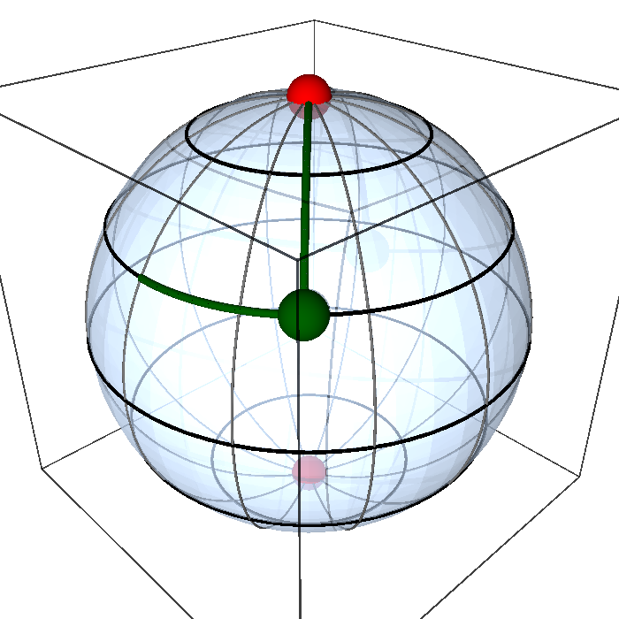
figures/s2_chart.sage.
Interactive figure (drag to rotate or zoom); the static version is above.
A different chart on the same sphere misses a single point instead of a half-meridian and two poles. The third example is the stereographic projection, a construction from a straight line through a pole, whose domain is the whole sphere minus that pole and whose image is the whole plane; it is the chart on which the rest of the section is built.
Example 3 (Stereographic coordinates on the sphere) The stereographic projection from the north pole N = (0, 0, 1) sends a point p of the sphere to the point (u, v) where the line through N and p meets the plane Z = 0 (Figure 2): (u, v) = (X, Y)/(1 - Z). Solving for the point with given (u, v) gives the inverse chart (u, v) \mapsto \left( \frac{2u}{1 + u^2 + v^2},\ \frac{2v}{1 + u^2 + v^2},\ \frac{u^2 + v^2 - 1}{1 + u^2 + v^2} \right), \qquad (u, v) \in \mathbb{R}^2 , \tag{3} whose domain is the sphere minus N: as u^2 + v^2 \to \infty the point approaches N. That the right-hand side lies on the sphere is Proposition 1.
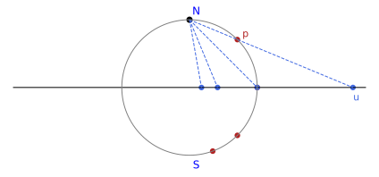
figures/stereographic.sage.
The definition asks for a bijection onto an open set, and the first exercise checks both halves of that condition on the circle by hand. Reading off the angle of a few given points is the computational part; the argument that no point is labelled twice and every point of the domain is labelled is the conceptual one.
Exercise 1 (Reading the angle chart) Find the coordinate \varphi \in (0, 2\pi) of the points (0, 1), (-1, 0), (0, -1) and (\tfrac12, - \tfrac{\sqrt3}{2}) of the circle, and show that the angle chart of Example 1 is a bijection from S^1 \setminus \{(1, 0)\} onto the open interval (0, 2\pi).
\varphi = \pi/2, \pi, 3\pi/2 and 5\pi/3 respectively, since \cos(5\pi/3) = \tfrac12 and \sin(5\pi/3) = -\tfrac{\sqrt3}{2}. Every unit vector is (\cos\varphi, \sin\varphi) for exactly one \varphi \in [0, 2\pi), because \cos\varphi fixes \varphi up to sign and \sin\varphi fixes the sign; the value \varphi = 0 gives the excluded point (1, 0), so \varphi \mapsto (\cos\varphi, \sin\varphi) is a bijection from (0, 2\pi) onto S^1 \setminus \{(1, 0)\}, and its inverse is the chart.
Charts need not be angles. The second exercise uses the two Cartesian coordinates X, Y themselves as a chart on the upper hemisphere, where the third coordinate is recovered by a square root, and compares the result with the stereographic chart from the south pole, which also covers the hemisphere, with Sage doing the algebra.
Exercise 2 (The hemispherical chart) Show that (X, Y) is a chart on the upper hemisphere Z > 0 of S^2 with image the open unit disc, write down its inverse, and compute the south stereographic coordinates (u', v') = (X, Y)/(1 + Z) of its points. Check with Sage that the hemisphere is sent into the open unit disc u'^2 + v'^2 < 1 and compute the Jacobian determinant of (X, Y) \mapsto (u', v').
On Z > 0 the point is recovered from (X, Y) as (X, Y, \sqrt{1 - X^2 - Y^2}), so the map is injective, and the image is the open disc X^2 + Y^2 < 1 (the equator Z = 0 would give the boundary circle, which is excluded). Substituting, u'^2 + v'^2 = (1 - Z)/(1 + Z) < 1, with equality only at Z = 0; the Jacobian determinant is 1/(Z(1 + Z)^2), finite and positive on the hemisphere:
X, Y = var("X Y", domain="real")
assume(X**2 + Y**2 < 1)
Z = sqrt(1 - X**2 - Y**2)
print("the inverse chart lands on the sphere, X^2 + Y^2 + Z^2 = 1:", bool((X**2 + Y**2 + Z**2).simplify_full() == 1))
up = X/(1 + Z); vp = Y/(1 + Z) # south stereographic coordinates (X, Y)/(1 + Z)
rho2 = (up**2 + vp**2).simplify_full()
print("u'^2 + v'^2 = (1 - Z)/(1 + Z):", bool((rho2 - (1 - Z)/(1 + Z)).simplify_full() == 0))
print("1 - (u'^2 + v'^2) =", (1 - rho2).simplify_full().factor(), " which is positive for Z > 0: the image is inside the unit disc")
J = jacobian((up, vp), (X, Y))
d = J.det().simplify_full()
print("Jacobian determinant of (X, Y) -> (u', v') is 1/(Z (1 + Z)^2):", bool((d - 1/(Z*(1 + Z)**2)).simplify_full() == 0), " (non-zero on the hemisphere)")
print("the centre (X, Y) = (0, 0), the north pole, goes to (u', v') =", (up.subs(X=0, Y=0), vp.subs(X=0, Y=0)))
print("the point (X, Y) = (3/5, 0) with Z = 4/5 goes to (u', v') =", (up.subs(X=3/5, Y=0), vp.subs(X=3/5, Y=0)))Output:
the inverse chart lands on the sphere, X^2 + Y^2 + Z^2 = 1: True
u'^2 + v'^2 = (1 - Z)/(1 + Z): True
1 - (u'^2 + v'^2) = 2*(X^4 + 2*X^2*Y^2 + Y^4 - 3*sqrt(-X^2 - Y^2 + 1)*X^2 - 3*sqrt(-X^2 - Y^2 + 1)*Y^2 - 5*X^2 - 5*Y^2 + 4*sqrt(-X^2 - Y^2 + 1) + 4)/(X^4 + 2*X^2*Y^2 + Y^4 - 4*sqrt(-X^2 - Y^2 + 1)*X^2 - 4*sqrt(-X^2 - Y^2 + 1)*Y^2 - 8*X^2 - 8*Y^2 + 8*sqrt(-X^2 - Y^2 + 1) + 8) which is positive for Z > 0: the image is inside the unit disc
Jacobian determinant of (X, Y) -> (u', v') is 1/(Z (1 + Z)^2): True (non-zero on the hemisphere)
the centre (X, Y) = (0, 0), the north pole, goes to (u', v') = (0, 0)
the point (X, Y) = (3/5, 0) with Z = 4/5 goes to (u', v') = (1/3, 0)Polar coordinates on the plane are a chart too, and the third exercise asks where. The point of the exercise is that the origin can never be included, whatever intervals are chosen for r and \varphi, and that the same obstruction reappears for spherical coordinates on space along a whole axis.
Exercise 3 (Polar and spherical coordinates as charts) Polar coordinates (r, \varphi) \in (0, \infty) \times (0, 2\pi) have inverse (r\cos\varphi, r\sin\varphi). Find the domain of this chart on the plane, explain why no choice of intervals makes the origin part of the domain of a polar chart, and determine on which subset of \mathbb{R}^3 the spherical coordinates (\rho, \theta, \varphi) \in (0, \infty) \times (0, \pi) \times (0, 2\pi), with inverse \rho times Equation 2, form a chart.
The image of (0, \infty) \times (0, 2\pi) is the plane minus the closed half-line \{Y = 0, X \geq 0\}, which is the domain. At the origin every value of \varphi gives the same point (0, 0), so a map including r = 0 is not injective, and no interval for \varphi can repair this; the origin is for polar coordinates what the poles are for spherical ones. In space, \rho times Equation 2 is injective on the stated box with image \mathbb{R}^3 minus the closed half-plane \{Y = 0, X \geq 0\}, which contains the whole Z-axis (where \theta = 0, \pi) and the half-plane \varphi = 0; that complement is the domain of the chart.
Coordinate curves
A chart does more than label points: it draws a grid on its domain. The next definition names the lines of that grid, obtained by letting one coordinate vary while the others are frozen; on a map of the Earth they are the parallels and meridians, and their velocities will become the basic tangent vectors in Section 1.2.1.
Definition 2 (Coordinate curve) The i-th coordinate curve through a point of a chart domain is the curve along which only the coordinate x^i varies, the others being held fixed: t \mapsto x^{-1}(x^1, \dots, x^i + t, \dots, x^n).
Veriphy. Pending.
Lean. Pending.
Sage. Pending.
The spherical chart gives the grid everyone has seen on a globe. The first example identifies its two families with the black and grey curves of the figure above, and fixes which coordinate is varying along each.
Example 4 (Parallels and meridians) In the spherical chart the \theta-curves are the meridians (\varphi fixed) and the \varphi-curves are the parallels (\theta fixed), the black and grey lines of Figure 1.
The same plane carries two different grids depending on the chart. The second example contrasts the rays and circles of polar coordinates with the straight lines of Cartesian ones, a reminder that coordinate curves belong to the chart and not to the space.
Example 5 (Rays and circles) In polar coordinates on the plane the r-curves are rays from the origin and the \varphi-curves are circles around it, the grid of Figure 5 of Real analysis; in Cartesian coordinates both families are straight lines.
For the stereographic chart the grid is less obvious, because it is the image of the Cartesian grid of the plane under a map that bends lines into circles. The third example describes one family and explains the geometric reason, which the exercises below verify algebraically.
Example 6 (Stereographic coordinate curves) The u-curves of the stereographic chart are the images on the sphere of the horizontal lines v = \text{const} of the plane: circles through the north pole, since every straight line of the plane projects to a circle through N (Figure 2).
The torus has a chart with two angles, and its coordinate curves are the two kinds of circles one sees on a doughnut. The first exercise asks the reader to identify both families from the formula alone and to find their radii, which will reappear as the entries of the torus’s Gram matrix.
Exercise 4 (The coordinate curves of the torus) In the chart (a, b) of the torus with inverse (a, b) \mapsto ((R + r\cos a)\cos b,\ (R + r\cos a)\sin b,\ r\sin a), describe the a-curves and the b-curves as circles in space, giving the centre, the plane and the radius of each.
An a-curve (b fixed) is a \mapsto (R\cos b, R\sin b, 0) + r(\cos a\cos b, \cos a\sin b, \sin a): a circle of radius r centred at (R\cos b, R\sin b, 0) in the vertical plane through the axis at angle b, a circle around the tube. A b-curve (a fixed) is a horizontal circle of radius R + r\cos a at height r\sin a, centred on the axis, a circle around the axis; its radius ranges from R - r on the inside to R + r on the outside. These are the red and blue circles of Figure 4.
The claim that stereographic coordinate curves are circles through the pole can be checked exactly. The second exercise does so for one family by exhibiting the plane that contains each curve, and then computes the radius of the circle, which depends on the frozen coordinate; Sage handles the rational functions.
Exercise 5 (Stereographic coordinate curves are circles) Show that the v-curve u = c of the north stereographic chart lies on the plane X = c(1 - Z), which passes through N, so that it is a circle through the north pole; find the radius of that circle and identify the curve for c = 0.
From Equation 3 with u = c, X = 2c/(1 + c^2 + v^2) and 1 - Z = 2/(1 + c^2 + v^2), so X = c(1 - Z) for every v; the plane X + cZ = c contains N = (0, 0, 1). Its distance from the centre of the sphere is |c|/\sqrt{1 + c^2}, so it cuts the sphere in a circle of radius \sqrt{1 - c^2/(1 + c^2)} = 1/\sqrt{1 + c^2}. For c = 0 the plane is X = 0 and the curve is a great circle, the meridian through the poles in the YZ-plane; as |c| grows the circles shrink towards the pole. The u-curves v = c lie on Y = c(1 - Z) in the same way:
u, v, c = var("u v c", domain="real")
E = vector([2*u/(1 + u**2 + v**2), 2*v/(1 + u**2 + v**2), (u**2 + v**2 - 1)/(1 + u**2 + v**2)])
Ev = E.subs(u=c) # the v-curve u = c, parametrised by v
print("the v-curve u = c lies on the plane X = c (1 - Z):", bool((Ev[0] - c*(1 - Ev[2])).simplify_full() == 0))
print("the plane contains N = (0, 0, 1):", bool(0 == c*(1 - 1)))
Eu = E.subs(v=c) # the u-curve v = c, parametrised by u
print("the u-curve v = c lies on the plane Y = c (1 - Z):", bool((Eu[1] - c*(1 - Eu[2])).simplify_full() == 0))
# the plane X + c Z = c has unit normal (1, 0, c)/sqrt(1 + c^2) and distance |c|/sqrt(1 + c^2) from the centre;
# it cuts the unit sphere in a circle of radius sqrt(1 - distance^2)
d = abs(c)/sqrt(1 + c**2)
print("radius of the circle:", sqrt(1 - d**2).simplify_full())
print("for c = 0 the v-curve is the great circle X = 0 (a meridian), radius", sqrt(1 - d**2).subs(c=0))
print("the v-curve approaches N at both ends, v -> +-oo:", (limit(Ev[0], v=oo), limit(Ev[1], v=oo), limit(Ev[2], v=oo)))Output:
the v-curve u = c lies on the plane X = c (1 - Z): True
the plane contains N = (0, 0, 1): True
the u-curve v = c lies on the plane Y = c (1 - Z): True
radius of the circle: 1/sqrt(c^2 + 1)
for c = 0 the v-curve is the great circle X = 0 (a meridian), radius 1
the v-curve approaches N at both ends, v -> +-oo: (0, 0, 1)The velocity of a coordinate curve is a vector, and comparing the velocities of the two families at a point tells how the grid is shaped there. The third exercise computes them for polar coordinates, finds that the grid is orthogonal, and reads off from the lengths why the chart must fail at the origin.
Exercise 6 (Velocities of the polar coordinate curves) Compute the velocity vectors of the r-curve and the \varphi-curve of polar coordinates through the point with coordinates (r, \varphi), show that they are orthogonal, find their lengths, and interpret the length of the \varphi-velocity as r \to 0.
The r-curve is t \mapsto (r + t)(\cos\varphi, \sin\varphi) with velocity (\cos\varphi, \sin\varphi), of length 1; the \varphi-curve is t \mapsto r(\cos(\varphi + t), \sin(\varphi + t)) with velocity r(-\sin\varphi, \cos\varphi), of length r. Their dot product is r(-\cos\varphi\sin\varphi + \sin\varphi\cos\varphi) = 0. As r \to 0 the \varphi-curves are circles shrinking to the origin and their velocity vanishes: the chart degenerates there, exactly as the spherical chart does at the poles where the parallels shrink to a point. The two lengths squared, 1 and r^2, are the diagonal entries of the Gram matrix of polar coordinates (Definition 14).
Atlases
Since one chart rarely covers a whole space, several are needed, and the next definition asks only that together their domains leave nothing out. The picture is a book of maps, each page covering a region of the Earth and the pages together covering all of it.
Definition 3 (Atlas) An atlas on M is a collection of charts, all with the same n, whose domains cover M: every point lies in the domain of at least one chart.
Veriphy. Pending.
Lean. Pending.
Sage. Pending.
For the circle two angle charts suffice, as long as they miss different points. The first example takes the chart of Example 1 together with a shifted copy and notes that SageManifolds, the Sage module used throughout the chapter, records exactly this pair as the atlas of the circle.
Example 7 (Two angle charts cover the circle) The chart \varphi \in (0, 2\pi) misses (1, 0), and the chart \varphi' \in (-\pi, \pi) misses (-1, 0); together they cover S^1 (Figure 3), and SageManifolds records them as the atlas of the circle in figures/atlas_circle.sage.
For the sphere there are two natural atlases of very different sizes. The second example gives the two-chart atlas of stereographic projections from the two poles and the six-chart atlas of hemispheres, and explains with a topological argument why one chart can never be enough.
Example 8 (Two stereographic charts cover the sphere) Projection from the north pole covers S^2 \setminus \{N\} and projection from the south pole, (u', v') = (X, Y)/(1 + Z), covers S^2 \setminus \{S\}. Six hemispherical charts, (X, Y) on the hemisphere Z > 0 and so on, form another atlas. No single chart covers the sphere, which is compact, since an open subset of \mathbb{R}^2 is not (Compact and connected spaces).
At the other extreme, a space that is already an open subset of \mathbb{R}^n needs no gluing at all. The third example records the one-chart atlas of \mathbb{R}^n and contrasts it with the torus, where the two angle charts of each circle factor combine into four charts.
Example 9 (One chart suffices for \mathbb{R}^n) The identity is a chart on \mathbb{R}^n and on any open subset of it, forming an atlas with one chart; the torus S^1 \times S^1 needs at least four product charts built from the two angle charts of each factor.
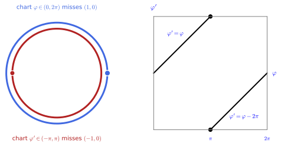
figures/atlas_circle.sage.
The overlap of two charts is where the real information of an atlas sits, and the first exercise describes it for the circle. It also asks for the topological reason that a single angle chart cannot do the job, the same compactness argument as for the sphere.
Exercise 7 (The overlap of the angle charts) Describe the overlap of the charts \varphi \in (0, 2\pi) and \varphi' \in (-\pi, \pi) on the circle, write the transition map on each piece, and explain why a single angle chart cannot cover the whole circle.
The overlap is the circle minus the two points (\pm 1, 0), two open arcs: the upper arc, where \varphi \in (0, \pi) and \varphi' = \varphi, and the lower arc, where \varphi \in (\pi, 2\pi) and \varphi' = \varphi - 2\pi (Figure 3). A chart is a bijection onto an open subset of \mathbb{R}, which is not compact, while the circle is compact and a continuous bijection from a compact space onto a Hausdorff space is a homeomorphism (Compact and connected spaces); so no chart has the whole circle as domain.
The same atlas can be built in SageManifolds, which is how every later computation on a manifold will start. The second exercise introduces the three ingredients, a manifold, open subsets declared to cover it, and a chart on each, and checks that the two inverse charts land on the circle and miss different points.
Exercise 8 (The circle in SageManifolds) Build the circle in SageManifolds as a one-dimensional manifold with two open subsets U = S^1 \setminus \{(1, 0)\} and V = S^1 \setminus \{(-1, 0)\} declared to cover it, a chart \varphi \in (0, 2\pi) on U and a chart \varphi' \in (-\pi, \pi) on V, and the inclusion into \mathbb{R}^2 given in each chart by Equation 1. Check that both inverse charts land on X^2 + Y^2 = 1, that the points they miss differ, and find the coordinates of the point (0, -1) in both charts.
Manifold(1, "S^1") with open_subset, declare_union and chart sets up the atlas, and diff_map into \mathbb{R}^2 holds the two expressions of the inclusion; S1.atlas() lists the two charts. The limits \varphi \to 0 and \varphi' \to \pm\pi give the missed points (1, 0) and (-1, 0), so every point lies in U or in V. The point (0, -1) has \varphi = 3\pi/2 and \varphi' = -\pi/2:
S1 = Manifold(1, "S^1")
U = S1.open_subset("U"); V = S1.open_subset("V") # circle minus (1, 0); circle minus (-1, 0)
S1.declare_union(U, V)
cU = U.chart(r"ph:(0,2*pi):\varphi"); cV = V.chart(r"php:(-pi,pi):\varphi'")
ph = cU[0]; php = cV[0]
E2 = Manifold(2, "R^2"); XY = E2.chart("X Y")
incl = S1.diff_map(E2, {(cU, XY): [cos(ph), sin(ph)], (cV, XY): [cos(php), sin(php)]}, name="i")
print("atlas of the circle:", S1.atlas())
for ch in (cU, cV):
x, y = incl.expr(ch, XY)
print("inverse of the chart", ch, "lands on X^2 + Y^2 = 1:", bool((x**2 + y**2).simplify_full() == 1))
print("point missed by the first chart (limit phi -> 0 or 2 pi):", (limit(cos(ph), ph=0), limit(sin(ph), ph=0)))
print("point missed by the second chart (limit phi' -> +-pi):", (limit(cos(php), php=pi), limit(sin(php), php=pi)))
print("the missed points differ, so every point of the circle lies in at least one domain:", (1, 0) != (-1, 0))
p = U.point((3*pi/2,), chart=cU, name="p")
print("the point p = (0, -1) has phi =", p.coord(cU)[0], "and lies at (X, Y) =", incl(p).coord(XY))
print("in the second chart the same point has phi' = -pi/2:", (cos(-pi/2), sin(-pi/2)) == (0, -1))Output:
atlas of the circle: [Chart (U, (ph,)), Chart (V, (php,))]
inverse of the chart Chart (U, (ph,)) lands on X^2 + Y^2 = 1: True
inverse of the chart Chart (V, (php,)) lands on X^2 + Y^2 = 1: True
point missed by the first chart (limit phi -> 0 or 2 pi): (1, 0)
point missed by the second chart (limit phi' -> +-pi): (-1, 0)
the missed points differ, so every point of the circle lies in at least one domain: True
the point p = (0, -1) has phi = 3/2*pi and lies at (X, Y) = (0, -1)
in the second chart the same point has phi' = -pi/2: TrueFor the torus the count of charts is a small combinatorial puzzle. The third exercise asks the reader to find the two circles the standard chart misses, to check that the four shifted charts cover the torus, and to show that three of them never do, which generalises the two-chart count of the circle.
Exercise 9 (Four charts for the torus) The chart (a, b) \in (0, 2\pi)^2 of the torus of Exercise 4 misses two circles. Identify them, show that the four charts obtained by taking a \in (0, 2\pi) or a' \in (-\pi, \pi) together with b \in (0, 2\pi) or b' \in (-\pi, \pi) cover the torus, and show that no three of them do.
The chart misses the points with a \equiv 0 (the outer equator, a circle around the axis) and those with b \equiv 0 (the tube circle in the half-plane Y = 0, X > 0). The chart (a', b) misses a \equiv \pi or b \equiv 0, (a, b') misses a \equiv 0 or b \equiv \pi, and (a', b') misses a \equiv \pi or b \equiv \pi. A point missed by the first two must have b \equiv 0 (since a \equiv 0 and a \equiv \pi cannot both hold), and a point missed by the last two must have b \equiv \pi; no point does both, so the four charts cover. Omitting (a', b') leaves the point a \equiv b \equiv 0 uncovered, and by symmetry omitting any chart leaves uncovered the point whose angles are the two values that chart alone handles; so four is the minimum for this kind of chart, as two is for the circle.
Transition maps
Where two pages of the book of maps overlap, the same point has two sets of coordinates, and the next definition names the rule that converts one into the other. Everything that is later required of an atlas is a requirement on these conversion rules, which are ordinary maps between open subsets of \mathbb{R}^n.
Definition 4 (Transition map) Where two charts x and x' of an atlas overlap, the transition map x' \circ x^{-1} converts the coordinates of one into those of the other; it is a bijection between open subsets of \mathbb{R}^n, the images of the overlap in the two charts.
Veriphy. Pending.
Lean. Pending.
Sage. Pending.
The simplest transition map is a shift. The first example reads it off the right panel of Figure 3 for the two angle charts of the circle, where the shift is zero on one arc of the overlap and 2\pi on the other.
Example 10 (Between the angle charts) On the overlap of the two angle charts of the circle, \varphi' = \varphi for \varphi < \pi and \varphi' = \varphi - 2\pi for \varphi > \pi (Figure 3): a shift by a constant on each of the two arcs.
For the two stereographic charts the transition map is a classical transformation of the plane. The second example identifies it as the inversion in the unit circle, an involution, and points to the proposition and the exercise where this is verified.
Example 11 (Between the stereographic charts) On the sphere minus both poles the transition map between the north and south stereographic charts is the inversion in the unit circle, (u', v') = (u, v)/(u^2 + v^2) (Proposition 1, Exercise 12); it is its own inverse.
Charts of different kinds can be compared too. The third example gives the transition map from spherical to stereographic coordinates, a trigonometric formula this time, and notes where the equator goes; it is the formula used whenever a function given in spherical coordinates is needed in stereographic ones.
Example 12 (From spherical to stereographic) On the overlap of the spherical chart and the north stereographic chart, u = \sin\theta\cos\varphi/(1 - \cos\theta) and v = \sin\theta\sin\varphi/(1 - \cos\theta) (Exercise 11); the equator \theta = \pi/2 goes to the unit circle u^2 + v^2 = 1.
Two hemispherical charts overlap on a quarter of the sphere, and their transition map involves a square root. The first exercise asks for the overlap as seen from each chart, for the transition map and for its Jacobian determinant, all by hand, as a warm-up for the SageManifolds computations that follow.
Exercise 10 (Between two hemispherical charts) Consider the hemispherical charts (X, Y) on Z > 0 and (Y, Z) on X > 0. Describe the overlap in each chart, compute the transition map from the first to the second and its Jacobian determinant, and check that the determinant does not vanish on the overlap.
The overlap is the quarter sphere X > 0, Z > 0. In the first chart it is the half disc \{X > 0,\ X^2 + Y^2 < 1\}, in the second the half disc \{Z > 0,\ Y^2 + Z^2 < 1\}. The transition map is (X, Y) \mapsto (Y, \sqrt{1 - X^2 - Y^2}), with Jacobian matrix \begin{pmatrix} 0 & 1 \\ -X/Z & -Y/Z \end{pmatrix} and determinant X/Z, which is positive on the overlap and tends to 0 or \infty only on its boundary, where one of the charts ends.
Transition maps are what SageManifolds’ transition_map computes, and the second exercise applies it to the spherical and stereographic charts. The Jacobian determinant and the image of the equator are the two checks, and both confirm the formulas quoted in Example 12.
Exercise 11 (From spherical to stereographic coordinates) Compute the transition map from the spherical chart to the north stereographic chart and its Jacobian determinant, and find the image of the equator.
From (u, v) = (X, Y)/(1 - Z) and Equation 2, u = \sin\theta\cos\varphi/(1 - \cos\theta), v = \sin\theta\sin\varphi/(1 - \cos\theta); the determinant is -\sin\theta/(1 - \cos\theta)^2, non-zero on the chart domain; u^2 + v^2 = \sin^2\theta/(1 - \cos\theta)^2 equals 1 at \theta = \pi/2:
S2 = Manifold(2, "S^2", structure="topological")
A = S2.open_subset("A") # sphere minus the poles and the half-meridian phi = 0
U = S2.open_subset("U") # sphere minus the north pole
sph = A.chart(r"th:(0,pi):\theta ph:(0,2*pi):\varphi")
ste = U.chart("u v")
th, ph = sph[:]
tr = sph.transition_map(ste, (sin(th)*cos(ph)/(1 - cos(th)), sin(th)*sin(ph)/(1 - cos(th))))
print("spherical -> stereographic:", tr.display())
J = jacobian(tr(th, ph), (th, ph))
print("Jacobian determinant:", J.det().simplify_full().factor())
u, v = ste[:]
print("u^2 + v^2 in spherical coordinates:", ((u**2 + v**2).subs({u: tr(th, ph)[0], v: tr(th, ph)[1]})).simplify_full().factor(), " -> the equator theta = pi/2 is the unit circle")Output:
spherical -> stereographic: u = -cos(ph)*sin(th)/(cos(th) - 1)
v = -sin(ph)*sin(th)/(cos(th) - 1)
Jacobian determinant: -sin(th)/(cos(th) - 1)^2
u^2 + v^2 in spherical coordinates: sin(th)^2/(cos(th) - 1)^2 -> the equator theta = pi/2 is the unit circleThe third exercise builds the full stereographic atlas of the sphere in SageManifolds and establishes everything the examples claimed about it: the transition map is the inversion, its Jacobian never vanishes, and the inverse chart lands on the sphere. The same algebraic identities return as a proposition at the end of the section.
Exercise 12 (The stereographic atlas) Build the sphere with its two stereographic charts in SageManifolds, compute the transition map and its Jacobian determinant, and check that the north chart’s inverse lands on the sphere.
The south projection sends p = (X, Y, Z) to (u', v') = (X, Y)/(1 + Z). Substituting Equation 3, 1 + Z = 2(u^2 + v^2)/(1 + u^2 + v^2), so u' = u/(u^2 + v^2), v' = v/(u^2 + v^2): the inversion in the unit circle, a smooth bijection of the punctured plane (its own inverse) with Jacobian determinant -1/(u^2 + v^2)^2 \neq 0. In SageManifolds:
S2 = Manifold(2, "S^2", structure="topological")
U = S2.open_subset("U"); V = S2.open_subset("V") # sphere minus the north pole, minus the south pole
S2.declare_union(U, V)
N = U.chart("u v") # projection from the north pole
S = V.chart("up:u' vp:v'") # projection from the south pole
u, v = N[:]; up, vp = S[:]
W = U.intersection(V)
tr = N.transition_map(S, (u / (u**2 + v**2), v / (u**2 + v**2)), intersection_name="W", restrictions1=u**2 + v**2 != 0, restrictions2=up**2 + vp**2 != 0)
tr.set_inverse(up / (up**2 + vp**2), vp / (up**2 + vp**2))
print("transition map:", tr.display())
print("its inverse is the same formula:", tr.inverse().display())
J = jacobian(tr(u, v), (u, v))
print("Jacobian determinant:", J.det().factor())
# the north-chart point lies on the sphere
X = 2*u/(1 + u**2 + v**2); Y = 2*v/(1 + u**2 + v**2); Z = (u**2 + v**2 - 1)/(1 + u**2 + v**2)
print("the inverse north chart lands on the sphere, X^2 + Y^2 + Z^2 = 1:", bool((X**2 + Y**2 + Z**2).simplify_full() == 1))
print("and the south-chart coordinates of that point, (X, Y)/(1 + Z), are the inversion:", bool((X/(1 + Z)).simplify_full() == u/(u**2 + v**2)))Output:
transition map: up = u/(u^2 + v^2)
vp = v/(u^2 + v^2)
its inverse is the same formula: u = up/(up^2 + vp^2)
v = vp/(up^2 + vp^2)
Jacobian determinant: -1/(u^2 + v^2)^2
the inverse north chart lands on the sphere, X^2 + Y^2 + Z^2 = 1: True
and the south-chart coordinates of that point, (X, Y)/(1 + Z), are the inversion: TrueVeriphy. Pending.
Lean. The inversion undoing itself is the Lean theorem below.
/-- The inversion is its own inverse away from the origin. -/
theorem inversion_inversion (u v : ℝ) (h : u ^ 2 + v ^ 2 ≠ 0) : inversion (inversion (u, v)) = (u, v)KaluzaKlein.Geometry.inversion_inversion in KaluzaKlein/Geometry/Charts.lean, namespace KaluzaKlein.Geometry
Sage. Pending.
Smooth atlases
An atlas lets one speak of continuity, but calculus on the space needs more: a function that is differentiable in one chart should be differentiable in every overlapping chart. The next definition imposes exactly the condition that makes this automatic, smoothness of the transition maps, and names the atlases that agree about it.
Definition 5 (Smooth atlas) An atlas is smooth if every transition map is a diffeomorphism (Definition 17 of Real analysis) between open subsets of \mathbb{R}^n. Two smooth atlases are compatible if their union is again smooth; a compatible atlas defines the same notion of smoothness on M.
Veriphy. Pending.
Lean. Pending.
Sage. Pending.
A shift by a constant is as smooth as a map can be. The first example disposes of the circle in one line, reading off the derivative of the transition map on each piece of the overlap.
Example 13 (The circle) The transition map of Example 10 is a shift on each piece of the overlap, with derivative 1: the angle atlas of the circle is smooth.
Veriphy. Pending.
Lean. Pending.
Sage. The derivative of the transition map is checked in figures/atlas_circle.sage.
For the sphere two facts are needed, that the stereographic atlas is smooth and that the spherical chart may be added to it. The second example reads both off the Jacobian determinants computed in the exercises above, which are non-zero wherever the charts overlap.
Example 14 (The sphere) The inversion of Example 11 is smooth on the punctured plane with Jacobian determinant -1/(u^2 + v^2)^2 \neq 0 and is its own inverse, so the stereographic atlas is smooth; the spherical chart is compatible with it, since Example 12 has Jacobian determinant -\sin\theta/(1 - \cos\theta)^2 \neq 0 on its domain (Exercise 11).
Smoothness is a genuine restriction, and the third example shows an atlas that fails it on the simplest possible space. Two one-chart atlases on the real line are each smooth, but their union is not, and the lesson is that the same set can carry different smooth structures.
Example 15 (An atlas that is not smooth) On the real line, the identity chart and the chart y = x^3 each form an atlas, but their union is not smooth: the transition map x = y^{1/3} is not differentiable at 0 (Example 80 of Real analysis). The two charts define different smooth structures on the same set, and a function smooth in one need not be smooth in the other.
Cartesian and polar coordinates on the plane are the first pair of charts every reader has converted between, and the first exercise checks that they are compatible in the sense just defined. SageManifolds computes the transition map and its Jacobian; the only subtlety is writing the inverse so that the angle lands in (0, 2\pi).
Exercise 13 (Cartesian and polar coordinates are compatible) On the plane minus the half-line \{y = 0, x \geq 0\}, define the Cartesian chart (x, y) and the polar chart (r, \varphi) in SageManifolds, give the transition map (r, \varphi) \mapsto (r\cos\varphi, r\sin\varphi) and its inverse, and compute the Jacobian determinant to show that the two charts form a smooth atlas.
The Jacobian matrix of the transition map is \begin{pmatrix} \cos\varphi & -r\sin\varphi \\ \sin\varphi & r\cos\varphi \end{pmatrix} with determinant r > 0 (Proposition 5 of Real analysis), and the inverse r = \sqrt{x^2 + y^2}, \varphi = \operatorname{atan2}(-y, -x) + \pi is smooth away from the removed half-line and takes values in (0, 2\pi); both maps are smooth with smooth inverse, so the atlas is smooth:
P = Manifold(2, "P") # the plane minus the half-line y = 0, x >= 0
cart = P.chart("x y"); pol = P.chart(r"r:(0,+oo) ph:(0,2*pi):\varphi")
x, y = cart[:]; r, ph = pol[:]
tr = pol.transition_map(cart, (r*cos(ph), r*sin(ph)))
tr.set_inverse(sqrt(x**2 + y**2), atan2(-y, -x) + pi, check=False)
print("polar -> Cartesian:", tr.display())
print("Cartesian -> polar:", tr.inverse().display())
J = jacobian(tr(r, ph), (r, ph))
print("Jacobian matrix:", J)
print("Jacobian determinant:", J.det().simplify_full(), " (SageManifolds:", tr.jacobian_det().expr().simplify_full(), ")")
print("non-zero on the domain r > 0: the two charts are compatible")
print("check of the inverse at (x, y) = (-1, -1): (r, phi) =", (sqrt(2), 5*pi/4), "and back:", (sqrt(2)*cos(5*pi/4), sqrt(2)*sin(5*pi/4)))
print("the inverse formula gives phi = atan2(1, 1) + pi =", atan2(1, 1) + pi)
print("atlas of P:", P.atlas())Output:
polar -> Cartesian: x = r*cos(ph)
y = r*sin(ph)
Cartesian -> polar: r = sqrt(x^2 + y^2)
ph = pi + arctan2(-y, -x)
Jacobian matrix: [ cos(ph) -r*sin(ph)]
[ sin(ph) r*cos(ph)]
Jacobian determinant: r (SageManifolds: r )
non-zero on the domain r > 0: the two charts are compatible
check of the inverse at (x, y) = (-1, -1): (r, phi) = (sqrt(2), 5/4*pi) and back: (-1, -1)
the inverse formula gives phi = atan2(1, 1) + pi = 5/4*pi
atlas of P: [Chart (P, (x, y)), Chart (P, (r, ph))]The non-smooth atlas of Example 15 deserves a closer look, because it shows that “smooth function” is a property of the atlas and not of the set. The second exercise asks which functions are smooth for the cubic chart and then shows that the two smooth structures, though incompatible, are nevertheless diffeomorphic.
Exercise 14 (Two smooth structures on the line) Let \mathbb{R}_x be the real line with the identity chart x and \mathbb{R}_y the real line with the single chart y = x^3. Show that the function p \mapsto x(p) is smooth on \mathbb{R}_x but not on \mathbb{R}_y, while p \mapsto x(p)^3 is smooth on both; then show that the identity map \mathbb{R}_x \to \mathbb{R}_y is not a diffeomorphism, but the map \Phi : \mathbb{R}_x \to \mathbb{R}_y sending p to the point q with y(q) = x(p) is.
A function is smooth if its expression in the chart is smooth. On \mathbb{R}_y the function x reads y^{1/3}, not differentiable at y = 0, so it is not smooth there, while x^3 reads y, which is smooth; on \mathbb{R}_x both x and x^3 are smooth. The identity map has chart expression y \circ \mathrm{id} \circ x^{-1}(s) = s^3, smooth, but its inverse has expression s^{1/3}, which is not: a smooth bijection that is not a diffeomorphism. The map \Phi has expression y \circ \Phi \circ x^{-1}(s) = s, the identity of \mathbb{R}, so \Phi is a diffeomorphism: \mathbb{R}_x and \mathbb{R}_y are the same manifold presented with different coordinates, as q = p^{1/3} shows.
Compatibility of the hemispherical charts with the stereographic atlas is the last check needed for the sphere, after which every chart of the section belongs to one smooth structure. The third exercise computes the transition map, which contains a square root, and shows that its Jacobian determinant is nevertheless finite and non-zero on the whole overlap.
Exercise 15 (The hemispherical chart is compatible with the stereographic atlas) Compute in SageManifolds the transition map from the hemispherical chart (X, Y) on Z > 0 to the north stereographic chart, (u, v) = (X, Y)/(1 - \sqrt{1 - X^2 - Y^2}), and its inverse; show that the Jacobian determinant equals -1/(Z(1 - Z)^2) with Z = \sqrt{1 - X^2 - Y^2}, and conclude.
The overlap is the upper hemisphere minus N, where 0 < Z < 1; there the determinant -1/(Z(1 - Z)^2) is finite and non-zero, and the inverse (X, Y) = (2u, 2v)/(1 + u^2 + v^2) is a rational map, so the transition map is a diffeomorphism and the hemispherical chart is compatible with the stereographic atlas. The hemisphere corresponds to the exterior u^2 + v^2 > 1 of the unit circle, where the point (X, Y) = (3/5, 0) becomes (u, v) = (3, 0):
S2 = Manifold(2, "S^2")
H = S2.open_subset("H"); U = S2.open_subset("U") # upper hemisphere Z > 0; sphere minus N
hem = H.chart("X Y"); ste = U.chart("u v")
X, Y = hem[:]; u, v = ste[:]
Z = sqrt(1 - X**2 - Y**2)
tr = hem.transition_map(ste, (X/(1 - Z), Y/(1 - Z))) # on H minus N, where 0 < X^2 + Y^2 < 1
tr.set_inverse(2*u/(1 + u**2 + v**2), 2*v/(1 + u**2 + v**2), check=False)
print("hemisphere -> stereographic:", tr.display())
print("stereographic -> hemisphere:", tr.inverse().display())
J = jacobian(tr(X, Y), (X, Y))
d = J.det().simplify_full()
print("Jacobian determinant equals -1/(Z (1 - Z)^2) with Z = sqrt(1 - X^2 - Y^2):", bool((d + 1/(Z*(1 - Z)**2)).simplify_full() == 0))
print("it is finite and non-zero for 0 < Z < 1, that is on the hemisphere minus the pole")
print("the hemisphere corresponds to u^2 + v^2 > 1: at (X, Y) = (3/5, 0), (u, v) =", (tr(X, Y)[0].subs(X=3/5, Y=0), tr(X, Y)[1].subs(X=3/5, Y=0)))
print("and back through the inverse:", [e.subs(u=3, v=0) for e in tr.inverse()(u, v)])Output:
hemisphere -> stereographic: u = -X/(sqrt(-X^2 - Y^2 + 1) - 1)
v = -Y/(sqrt(-X^2 - Y^2 + 1) - 1)
stereographic -> hemisphere: X = 2*u/(u^2 + v^2 + 1)
Y = 2*v/(u^2 + v^2 + 1)
Jacobian determinant equals -1/(Z (1 - Z)^2) with Z = sqrt(1 - X^2 - Y^2): True
it is finite and non-zero for 0 < Z < 1, that is on the hemisphere minus the pole
the hemisphere corresponds to u^2 + v^2 > 1: at (X, Y) = (3/5, 0), (u, v) = (3, 0)
and back through the inverse: [3/5, 0]The stereographic atlas
The examples of this section rested on three algebraic facts about the stereographic charts that were quoted rather than proved: the inverse chart lands on the sphere, the transition map is the inversion, and the inversion undoes itself. The following proposition collects them, and each is a polynomial identity in u and v once the denominators 1 + u^2 + v^2 and u^2 + v^2 are cleared.
Proposition 1 (The stereographic chart) The point Equation 3 lies on the unit sphere for every (u, v); its south stereographic coordinates (X, Y)/(1 + Z) are the inversion (u, v)/(u^2 + v^2); and the inversion applied twice is the identity away from the origin.
Veriphy. Pending.
Lean. KaluzaKlein.Geometry.stereoInv_on_sphere, KaluzaKlein.Geometry.south_of_north and KaluzaKlein.Geometry.inversion_inversion, each proved by field_simp and ring after clearing the denominators.
/-- The south stereographic coordinates `(X, Y)/(1 + Z)` of the point `stereoInv u v` are the inversion of `(u, v)`. -/
theorem south_of_north (u v : ℝ) (h : u ^ 2 + v ^ 2 ≠ 0) :
((stereoInv u v).1 / (1 + (stereoInv u v).2.2), (stereoInv u v).2.1 / (1 + (stereoInv u v).2.2)) =
inversion (u, v)KaluzaKlein.Geometry.south_of_north in KaluzaKlein/Geometry/Charts.lean, namespace KaluzaKlein.Geometry
Sage. Pending.
The proposition becomes concrete on a few points. The first example follows the unit circle of the plane, which the inversion fixes pointwise, and finds that it corresponds to the equator, the one curve on which both stereographic charts assign the same coordinates.
Example 16 (The equator has the same coordinates in both charts) For (u, v) = (1, 0) the point Equation 3 is (1, 0, 0), on the equator, and its south coordinates are (1, 0)/1 = (1, 0): the inversion fixes the unit circle. In general u^2 + v^2 = 1 gives Z = 0, so the equator is the unit circle in both charts, and the two charts agree there and nowhere else, since (u, v) = (u, v)/(u^2 + v^2) forces u^2 + v^2 = 1.
The poles are where one chart ends, and the second example checks that the proposition knows this. The origin of the north chart is the south pole, which the inversion cannot handle, and this is consistent, since the south pole has no south stereographic coordinates.
Example 17 (The poles and the origin) For (u, v) = (0, 0) the point Equation 3 is (0, 0, -1) = S, and the inversion is undefined there, exactly as it should be: S lies outside the domain of the south chart, and the transition map is only defined on the overlap S^2 \setminus \{N, S\}, the punctured plane in either chart. Symmetrically the north pole has south coordinates (0, 0) and no north coordinates; “far away” in one chart is “near the origin” in the other.
Writing w = u + iv turns the plane into the complex plane and the inversion into a one-line formula. The third example records it and points ahead to the Riemann sphere, where the south chart is conjugated so that the transition map becomes the holomorphic map w \mapsto 1/w.
Example 18 (Complex notation and the Riemann sphere) With w = u + iv the inversion is w' = 1/\bar w, since 1/\bar w = w/|w|^2 = (u + iv)/(u^2 + v^2). Composing the south chart with the reflection v' \mapsto -v' turns the transition map into w \mapsto 1/w, a holomorphic map (Exercise 17); the sphere with this pair of complex charts is the Riemann sphere of Example 266, on which rational functions become smooth maps.
The first exercise asks for the geometry of the inversion in words: which points it fixes, which it swaps, and what this means on the sphere. The answers are short consequences of the formula (u, v)/(u^2 + v^2) and of the third component of Equation 3.
Exercise 16 (What the inversion does to the plane) Show that the inversion (u, v) \mapsto (u, v)/(u^2 + v^2) fixes every point of the unit circle, exchanges the inside and the outside of that circle, and preserves every ray from the origin; translate each statement into one about the two hemispheres of the sphere.
On u^2 + v^2 = 1 the formula returns (u, v) itself. A point at distance \rho from the origin is sent to the point at distance 1/\rho on the same ray, since (u, v)/\rho^2 is a positive multiple of (u, v) of length 1/\rho; so \rho < 1 goes to 1/\rho > 1 and conversely, and rays are preserved. On the sphere, Z = (\rho^2 - 1)/(\rho^2 + 1) is negative for \rho < 1: the inside of the unit circle in the north chart is the southern hemisphere, which the south chart sees as the outside of its unit circle, and the rays are the meridians, which both charts draw as rays from the origin.
The complex notation of Example 18 can be checked symbolically. The second exercise separates real and imaginary parts, computes the two Jacobian determinants, one negative and one positive, and verifies the Cauchy-Riemann equations for 1/w, which is why the reflected transition map is holomorphic.
Exercise 17 (The transition map as a complex function) With w = u + iv, check that 1/\bar w has real and imaginary parts u/(u^2 + v^2) and v/(u^2 + v^2); compute the Jacobian determinant of the inversion and of the map w \mapsto 1/w (the inversion followed by v \mapsto - v); and verify that 1/w satisfies the Cauchy-Riemann equations while 1/\bar w does not preserve orientation.
1/\bar w = w/(w\bar w) = (u + iv)/(u^2 + v^2). The inversion has Jacobian determinant -1/(u^2 + v^2)^2 < 0, so it reverses orientation; composing with the reflection gives w \mapsto 1/w = (u - iv)/(u^2 + v^2), with real part P = u/(u^2 + v^2) and imaginary part Q = -v/(u^2 + v^2) satisfying P_u = Q_v and P_v = -Q_u, and with Jacobian determinant 1/(u^2 + v^2)^2 = |f'(w)|^2 for f(w) = 1/w, positive:
u, v = var("u v", domain="real")
w = u + I*v
wp = 1/conjugate(w)
print("1/conj(w) has real part u/(u^2 + v^2) and imaginary part v/(u^2 + v^2):", bool((wp.real_part() - u/(u**2 + v**2)).simplify_full() == 0) and bool((wp.imag_part() - v/(u**2 + v**2)).simplify_full() == 0))
inv = (u/(u**2 + v**2), v/(u**2 + v**2))
print("Jacobian determinant of the inversion:", jacobian(inv, (u, v)).det().factor(), " (negative: the inversion reverses orientation)")
refl = (u/(u**2 + v**2), -v/(u**2 + v**2)) # the inversion followed by the reflection v -> -v
f = 1/w
print("1/w = (u - i v)/(u^2 + v^2):", bool((f.real_part() - refl[0]).simplify_full() == 0) and bool((f.imag_part() - refl[1]).simplify_full() == 0))
P, Q = refl
print("Cauchy-Riemann equations P_u = Q_v and P_v = -Q_u hold for 1/w:", bool((diff(P, u) - diff(Q, v)).simplify_full() == 0) and bool((diff(P, v) + diff(Q, u)).simplify_full() == 0))
print("Jacobian determinant of w -> 1/w:", jacobian(refl, (u, v)).det().factor(), " = |f'(w)|^2 = 1/|w|^4, positive")
print("the unit circle |w| = 1 is fixed pointwise by the inversion: at w = (3 + 4i)/5, 1/conj(w) =", SR(1/conjugate((3 + 4*I)/5)).simplify_full())Output:
1/conj(w) has real part u/(u^2 + v^2) and imaginary part v/(u^2 + v^2): True
Jacobian determinant of the inversion: -1/(u^2 + v^2)^2 (negative: the inversion reverses orientation)
1/w = (u - i v)/(u^2 + v^2): True
Cauchy-Riemann equations P_u = Q_v and P_v = -Q_u hold for 1/w: True
Jacobian determinant of w -> 1/w: (u^2 + v^2)^(-2) = |f'(w)|^2 = 1/|w|^4, positive
the unit circle |w| = 1 is fixed pointwise by the inversion: at w = (3 + 4i)/5, 1/conj(w) = 4/5*I + 3/5Nothing in the construction depends on the radius being one, and the third exercise redoes it for a sphere of radius a. The projection formulas acquire factors of a, and the transition map becomes the inversion in the circle of radius a, which reduces to the proposition when a = 1.
Exercise 18 (Stereographic projection of a sphere of radius a) For the sphere X^2 + Y^2 + Z^2 = a^2 and the projection from N = (0, 0, a) onto the plane Z = 0, find the coordinates (u, v) of a point (X, Y, Z), the inverse map, and the transition map to the projection from the south pole (0, 0, -a).
The line from N through p meets Z = 0 at (u, v) = a(X, Y)/(a - Z). Writing \rho^2 = u^2 + v^2, the inverse is (X, Y, Z) = (2a^2u, 2a^2v, a(\rho^2 - a^2))/(\rho^2 + a^2), which satisfies X^2 + Y^2 + Z^2 = a^2 since 4a^4\rho^2 + a^2(\rho^2 - a^2)^2 = a^2(\rho^2 + a^2)^2. The south projection is (u', v') = a(X, Y)/(a + Z), and a + Z = 2a\rho^2/(\rho^2 + a^2) gives (u', v') = a^2(u, v)/\rho^2: the inversion in the circle of radius a, which fixes that circle (the image of the equator) and is again its own inverse. Setting a = 1 recovers Proposition 1.
Manifolds
With charts and atlases in hand, a manifold is simply a space with a smooth atlas, and everything smooth on it is defined chart by chart. This section defines smooth manifolds, smooth functions and maps on them, curves, and product manifolds, the construction behind cylinders, tori and every space of the form “one space times another”. The running examples are the circle, the sphere, the torus and the group SU(2), which is the three-sphere.
Smooth manifolds
The definition that the whole chapter has been preparing can now be stated in one sentence: a manifold is a space with a smooth atlas. The picture is the sphere with its stereographic charts; the one technical condition added, that the space be Hausdorff, rules out pathologies in which two distinct points cannot be separated by open sets.
Definition 6 (Smooth manifold) A smooth manifold of dimension n is a Hausdorff topological space M (Definition 18 of Sets, relations and topology) with a smooth atlas (Definition 5) of charts onto open subsets of \mathbb{R}^n, whose charts are homeomorphisms onto their images. Any notion defined in one chart and invariant under smooth changes of coordinates is a property of the manifold itself; that is the point of the definition.
Veriphy. Pending.
Lean. The Lean library works inside one chart at a time (Fin n → ℝ), and a statement about a manifold is a statement about one of its charts together with a hypothesis excluding the points where the chart degenerates.
Sage. Pending.
Every space of the previous section now qualifies. The first example lists them with their dimensions and the atlases that were shown to be smooth, so that the reader can see the definition is not empty.
Example 19 (Manifolds met so far) The circle (dimension 1, two angle charts), the sphere (dimension 2, two stereographic charts or several spherical ones), the plane and \mathbb{R}^n (one chart, the identity), and any open subset of \mathbb{R}^n.
The torus is the first genuinely new surface, and the second example gives it a chart with two angles whose domain misses two circles, completed to an atlas by shifted copies exactly as for the circle. Its product structure will be made explicit at the end of the section.
Example 20 (The torus) The torus is the surface in \mathbb{R}^3 swept by a circle of radius r whose centre moves on a circle of radius R > r in the XY-plane. With the angle a around the tube and the angle b around the axis, (a, b) \mapsto \left( (R + r\cos a)\cos b,\ (R + r\cos a)\sin b,\ r\sin a \right), \qquad a, b \in (0, 2\pi), \tag{4} is the inverse of a chart whose domain misses two circles; shifted angle charts complete the atlas as for S^1 (Figure 4). The torus is a manifold of dimension 2, and it reappears in Part VI as the internal space of toroidal reductions.
The third example is a manifold that is also a group, the first of many in this book. A unitary 2 \times 2 matrix of determinant one is determined by two complex numbers on the unit sphere of \mathbb{C}^2, so SU(2) is the three-sphere; the Euler angles provide a chart with the same kind of degeneration as spherical coordinates.
Example 21 (The group SU(2) as the three-sphere) The group SU(2) of 2 \times 2 unitary matrices of determinant one (groups are defined in Groups) is the set of matrices g = \begin{pmatrix} a & -\bar b \\ b & \bar a \end{pmatrix}, \qquad a, b \in \mathbb{C}, \quad |a|^2 + |b|^2 = 1, \tag{5} since \det g = |a|^2 + |b|^2 (Proposition 2), and |a|^2 + |b|^2 = 1 says that (\operatorname{Re} a, \operatorname{Im} a, \operatorname{Re} b, \operatorname{Im} b) lies on the unit sphere S^3 \subset \mathbb{R}^4: SU(2) is a manifold of dimension 3. The Euler angles (\theta, \varphi, \psi) \in (0, \pi) \times (0, 2\pi) \times (0, 4\pi) are a chart, with inverse g(\theta, \varphi, \psi) = e^{\varphi T_3}\, e^{\theta T_1}\, e^{\psi T_3}, \tag{6} where T_a are the matrices of Lie algebras and gauge fields and e^A = \sum_k A^k/k! is the matrix exponential; the exponentials are computed in The exponential map. The chart degenerates at \theta = 0, \pi, where only \varphi \pm \psi matters, as the spherical chart does at the poles. The range \psi \in (0, 4\pi), twice that of \varphi, reflects that SU(2) covers the rotation group SO(3) twice (Lie groups).
The claim that SU(2) consists exactly of the matrices Equation 5 is a small exercise in linear algebra, and the first exercise asks for it in both directions. The determinant identity is quoted from the proposition that follows; the rest is multiplying out g^\dagger g and comparing two formulas for the inverse.
Exercise 19 (SU(2) is the three-sphere) Show that a matrix of the form Equation 5 is unitary with determinant one exactly when |a|^2 + |b|^2 = 1, and that every SU(2) matrix has this form.
g^\dagger g = (|a|^2 + |b|^2)\, 1 by direct multiplication, and \det g = |a|^2 + |b|^2 (Proposition 2), so g \in SU(2) iff |a|^2 + |b|^2 = 1. Conversely, for a unitary g = \begin{pmatrix} a & c \\ b & d \end{pmatrix} of determinant one, g^{-1} = g^\dagger and g^{-1} = \begin{pmatrix} d & -c \\ -b & a \end{pmatrix} give d = \bar a, c = -\bar b.
Many manifolds arise as open pieces of known ones, and the second exercise establishes the general principle and applies it to the group of invertible matrices. The argument is that charts restrict to open subsets, and the application is that a continuous function’s non-zero set is open.
Exercise 20 (Open subsets are manifolds) Show that an open subset W of a manifold M of dimension n is itself a manifold of dimension n. Deduce that the general linear group GL(n, \mathbb{R}) of invertible n \times n matrices is a manifold of dimension n^2, and that the non-zero complex numbers form a manifold of dimension 2.
Restrict every chart x : U \to V of M to U \cap W: since x is a homeomorphism onto V, the image x(U \cap W) is open in \mathbb{R}^n, the restrictions are bijections onto open sets, their transition maps are restrictions of the original ones, hence smooth, and the Hausdorff property is inherited; so W has a smooth atlas of dimension n. The determinant is a polynomial in the entries, hence continuous (Definition 15 of Sets, relations and topology), so GL(n, \mathbb{R}) = \det^{-1}(\mathbb{R} \setminus \{0\}) is open in \mathbb{R}^{n^2} and is a manifold of dimension n^2 with the identity chart. Likewise \mathbb{C} \setminus \{0\} = \mathbb{R}^2 \setminus \{0\} is open in the plane, a manifold of dimension 2; it is the polar-coordinate domain of Exercise 3 with the half-line put back.
The three-sphere of Example 21 deserves its own atlas, and the third exercise builds one that does not use Euler angles at all: stereographic projection works in every dimension. SageManifolds verifies that the inverse chart lands on S^3 and that the transition map is the inversion in the unit sphere of \mathbb{R}^3.
Exercise 21 (A stereographic atlas for S^3) Build S^3 \subset \mathbb{R}^4 in SageManifolds with the north stereographic chart (u, v, w) \mapsto (2u, 2v, 2w, \rho^2 - 1)/(1 + \rho^2), \rho^2 = u^2 + v^2 + w^2, and the south chart (X_1, X_2, X_3)/(1 + X_4). Check that the inverse chart lands on S^3, compute the transition map and its Jacobian determinant, and conclude that S^3, hence SU(2), is a smooth manifold of dimension 3.
The sum of squares of the four components is (4\rho^2 + (\rho^2 - 1)^2)/(1 + \rho^2)^2 = 1. The south coordinates of the point are (u, v, w)/\rho^2, the inversion in the unit sphere of \mathbb{R}^3, with Jacobian determinant -1/\rho^6, non-zero on the overlap \rho \neq 0; the two charts cover S^3 and form a smooth atlas. Under the identification (X_1, X_2, X_3, X_4) = (\operatorname{Re} a, \operatorname{Im} a, \operatorname{Re} b, \operatorname{Im} b) this is an atlas of SU(2) with two charts, in place of the Euler-angle chart that degenerates at \theta = 0, \pi:
S3 = Manifold(3, "S^3")
U = S3.open_subset("U"); V = S3.open_subset("V") # S^3 minus the north pole; minus the south pole
S3.declare_union(U, V)
N = U.chart("u v w"); S = V.chart("up:u' vp:v' wp:w'")
u, v, w = N[:]; up, vp, wp = S[:]
rho2 = u**2 + v**2 + w**2
E = [2*u/(1 + rho2), 2*v/(1 + rho2), 2*w/(1 + rho2), (rho2 - 1)/(1 + rho2)]
print("the north chart's inverse lands on S^3, sum of squares = 1:", bool(sum(e**2 for e in E).simplify_full() == 1))
south = [E[k]/(1 + E[3]) for k in range(3)] # south stereographic coordinates (X1, X2, X3)/(1 + X4)
print("the south coordinates of that point are the inversion (u, v, w)/rho^2:", all(bool((south[k] - [u, v, w][k]/rho2).simplify_full() == 0) for k in range(3)))
tr = N.transition_map(S, (u/rho2, v/rho2, w/rho2), intersection_name="W", restrictions1=rho2 != 0, restrictions2=up**2 + vp**2 + wp**2 != 0)
tr.set_inverse(up/(up**2 + vp**2 + wp**2), vp/(up**2 + vp**2 + wp**2), wp/(up**2 + vp**2 + wp**2))
print("transition map:", tr.display())
print("Jacobian determinant of the transition map:", jacobian(tr(u, v, w), (u, v, w)).det().factor())
print("atlas:", S3.atlas(), " -> S^3 is a manifold of dimension", S3.dim())
print("the point (u, v, w) = (0, 0, 0) is the south pole (0, 0, 0, -1):", [e.subs(u=0, v=0, w=0) for e in E])Output:
the north chart's inverse lands on S^3, sum of squares = 1: True
the south coordinates of that point are the inversion (u, v, w)/rho^2: True
transition map: up = u/(u^2 + v^2 + w^2)
vp = v/(u^2 + v^2 + w^2)
wp = w/(u^2 + v^2 + w^2)
Jacobian determinant of the transition map: -1/(u^2 + v^2 + w^2)^3
atlas: [Chart (U, (u, v, w)), Chart (V, (up, vp, wp)), Chart (W, (u, v, w)), Chart (W, (up, vp, wp))] -> S^3 is a manifold of dimension 3
the point (u, v, w) = (0, 0, 0) is the south pole (0, 0, 0, -1): [0, 0, 0, -1]The determinant of SU(2)
The description of SU(2) as a three-sphere rests on one identity, that the determinant of the matrix Equation 5 is the squared length of (a, b) \in \mathbb{C}^2. The proposition records it; the proof expands the 2 \times 2 determinant and rewrites |a|^2 and |b|^2 as \bar a a and \bar b b, after which the identity is a polynomial one.
Proposition 2 (The determinant of the SU(2) matrix form) For g as in Equation 5, \det g = |a|^2 + |b|^2.
Veriphy. Pending.
Lean. KaluzaKlein.Geometry.su2Matrix_det, proved by expanding the determinant, rewriting |a|^2 = \bar a a and |b|^2 = \bar b b, and ring.
/-- Its determinant is `|a|² + |b|²`, so the matrix is in `SU(2)` exactly when `(a, b)` lies on the three-sphere. -/
theorem su2Matrix_det (a b : ℂ) : (su2Matrix a b).det = ((Complex.normSq a + Complex.normSq b : ℝ) : ℂ)KaluzaKlein.Geometry.su2Matrix_det in KaluzaKlein/Geometry/Charts.lean, namespace KaluzaKlein.Geometry
Sage. Pending.
The two simplest points of S^3 give the two simplest matrices. The first example evaluates the form at (a, b) = (1, 0) and (0, 1) and recognises the identity and a rotation by a right angle, both with determinant one as the proposition predicts.
Example 22 (The identity and a quarter turn) For a = 1, b = 0 the matrix Equation 5 is the identity, with \det = 1 + 0. For a = 0, b = 1 it is \begin{pmatrix} 0 & -1 \\ 1 & 0 \end{pmatrix}, the rotation of \mathbb{R}^2 by a right angle read as a complex matrix, again with \det = 0 + 1 = 1; its square is -1, so it plays the role of i inside SU(2). Both points lie on S^3 and both are in SU(2).
The one-parameter families e^{tT_a} that build the Euler angles are also of the form Equation 5. The second example computes two of them and checks that \cos^2 + \sin^2 = 1 is the determinant identity in disguise; the third exponential and the full product are left to an exercise.
Example 23 (The exponentials e^{tT_3} and e^{tT_1}) With T_a = -\tfrac{i}{2}\sigma_a (Lie algebras and gauge fields), e^{tT_3} = \operatorname{diag}(e^{-it/2}, e^{it/2}) is the form Equation 5 with a = e^{-it/2}, b = 0, and e^{tT_1} = \begin{pmatrix} \cos(t/2) & - i\sin(t/2) \\ -i\sin(t/2) & \cos(t/2) \end{pmatrix} is the form with a = \cos(t/2), b = -i\sin(t/2); in both cases \det = |a|^2 + |b|^2 = 1, by \cos^2(t/2) + \sin^2(t/2) = 1 in the second. The product Equation 6 of three such matrices is verified in Exercise 23.
The identity holds for every a, b, not only on the unit sphere, and the third example uses this. Matrices of the form Equation 5 with (a, b) \neq 0 have positive determinant and can be rescaled onto SU(2); they are the non-zero quaternions, and SU(2) is their unit sphere.
Example 24 (Rescaling onto the sphere) For a = 2, b = 1 the matrix \begin{pmatrix} 2 & -1 \\ 1 & 2 \end{pmatrix} has determinant 5 = |a|^2 + | b|^2 and is not in SU(2), but dividing by \sqrt5 gives a matrix of the same form with determinant 1. Every non-zero (a, b) \in \mathbb{C}^2 can be rescaled in this way, so the matrices Equation 5 with (a, b) \neq 0 form a four-dimensional real manifold (\mathbb{R}^4 \setminus \{0\}, open) that contains SU(2) as its unit sphere; they are closed under products (Exercise 24), and they are the non-zero quaternions.
The inverse of an SU(2) matrix should again be an SU(2) matrix, and the first exercise finds it explicitly. The computation is the one of Exercise 19 read backwards, and it identifies which point of the three-sphere the inverse corresponds to.
Exercise 22 (The inverse in SU(2)) For g of the form Equation 5 with |a|^2 + |b|^2 = 1, show that g^{-1} = g^\dagger and write g^{-1} in the form Equation 5; which point of S^3 is it?
g^\dagger = \begin{pmatrix} \bar a & \bar b \\ -b & a \end{pmatrix} and g^\dagger g = (|a|^2 + |b|^2)\, 1 = 1, so g^{-1} = g^\dagger; it is the form Equation 5 with (a, b) replaced by (\bar a, -b), the point (\operatorname{Re} a, -\operatorname{Im} a, -\operatorname{Re} b, -\operatorname{Im} b) of S^3, the reflection of (a, b) in the first coordinate axis. Its determinant is again |a|^2 + |b|^2 = 1 by Proposition 2.
The Euler-angle formula Equation 6 was asserted to produce the matrix Equation 5 with specific a and b. The second exercise computes the three matrix exponentials in Sage, multiplies them, and checks the two entries, the determinant and unitarity; it also shows what happens at \theta = 0, where the chart degenerates.
Exercise 23 (The Euler-angle matrix) With T_a = -\tfrac{i}{2}\sigma_a, compute the matrix exponentials e^{\varphi T_3}, e^{\theta T_1} and e^{\psi T_3} in Sage, form the product Equation 6, and show that it has the form Equation 5 with a = \cos(\theta/2)\, e^{-i(\varphi + \psi)/2} and b = -i\sin(\theta/2)\, e^{i(\varphi - \psi)/2}; verify \det g = 1 and g^\dagger g = 1, and evaluate g at \theta = 0.
e^{\varphi T_3} = \operatorname{diag}(e^{-i\varphi/2}, e^{i\varphi/2}) and e^{\theta T_1} = \cos(\theta/2)\,
1 - i\sin(\theta/2)\,\sigma_1, since \sigma_1^2 = 1 makes the exponential series split into a cosine and a sine. The product is \begin{pmatrix} \cos(\theta/2) e^{-i(\varphi + \psi)/2} & -i\sin(\theta/2) e^{-i(\varphi -
\psi)/2} \\ -i\sin(\theta/2) e^{i(\varphi - \psi)/2} & \cos(\theta/2) e^{i(\varphi + \psi)/2} \end{pmatrix}, whose entries are a, -\bar b, b, \bar a with the stated a, b; |a|^2 + |b|^2 = \cos^2(\theta/2) +
\sin^2(\theta/2) = 1. At \theta = 0 the matrix is \operatorname{diag}(e^{-i(\varphi + \psi)/2}, e^{i(\varphi +
\psi)/2}), which depends on \varphi + \psi only. Sage computes the exponentials exactly, with a trig_reduce to collapse the half-angle expressions:
th, ph, ps = var("th ph ps", domain="real")
s1 = matrix(SR, [[0, 1], [1, 0]]); s3 = matrix(SR, [[1, 0], [0, -1]])
T1 = -I/2*s1; T3 = -I/2*s3
simp = lambda e: e.rectform().simplify_full().trig_reduce() # half-angle mixtures need trig_reduce after simplify_full
clean = lambda M: M.apply_map(simp)
zero = lambda e: bool(simp(e) == 0)
e_ph = clean((ph*T3).exp()); e_th = clean((th*T1).exp()); e_ps = clean((ps*T3).exp())
print("e^{phi T3} ="); print(e_ph)
print("e^{theta T1} ="); print(e_th)
g = clean(e_ph*e_th*e_ps)
a = cos(th/2)*exp(-I*(ph + ps)/2); b = -I*sin(th/2)*exp(I*(ph - ps)/2)
print("g[0,0] = a = cos(theta/2) e^{-i(phi+psi)/2}:", zero(g[0, 0] - a))
print("g[1,0] = b = -i sin(theta/2) e^{i(phi-psi)/2}:", zero(g[1, 0] - b))
print("g[0,1] = -conj(b) and g[1,1] = conj(a):", zero(g[0, 1] + conjugate(b)) and zero(g[1, 1] - conjugate(a)))
print("|a|^2 + |b|^2 = 1:", zero(a*conjugate(a) + b*conjugate(b) - 1))
print("det g = 1:", zero(g.det() - 1))
print("g is unitary, g^dagger g = 1:", bool(clean(g.conjugate_transpose()*g - identity_matrix(SR, 2)) == 0))
print("at theta = 0 only phi + psi matters: g(0, phi, psi) =", clean(g.subs(th=0)))Output:
e^{phi T3} =
[cos(1/2*ph) - I*sin(1/2*ph) 0]
[ 0 cos(1/2*ph) + I*sin(1/2*ph)]
e^{theta T1} =
[ cos(1/2*th) -I*sin(1/2*th)]
[-I*sin(1/2*th) cos(1/2*th)]
g[0,0] = a = cos(theta/2) e^{-i(phi+psi)/2}: True
g[1,0] = b = -i sin(theta/2) e^{i(phi-psi)/2}: True
g[0,1] = -conj(b) and g[1,1] = conj(a): True
|a|^2 + |b|^2 = 1: True
det g = 1: True
g is unitary, g^dagger g = 1: True
at theta = 0 only phi + psi matters: g(0, phi, psi) = [cos(1/2*ph + 1/2*ps) - I*sin(1/2*ph + 1/2*ps) 0]
[ 0 cos(1/2*ph + 1/2*ps) + I*sin(1/2*ph + 1/2*ps)]That SU(2) is a group needs the product of two matrices of the form Equation 5 to have the same form and determinant one. The third exercise proves this with Sage for symbolic a, b, a', b' and recognises the result as the multiplication rule of quaternions and the four-square identity of Euler.
Exercise 24 (Products of SU(2) matrices) Show with Sage that the product of two matrices of the form Equation 5, with parameters (a, b) and (a', b'), is again of that form with parameters (aa' - \bar b b',\ ba' + \bar a b'), and that the determinant is multiplicative: |aa' - \bar b b'|^2 + |ba' + \bar a b'|^2 = (|a|^2 + |b|^2)(|a'|^2 + |b'|^2). Conclude that SU(2) is closed under products.
Writing a = a_1 + ia_2 and so on with real symbols and expanding, the product has top row (aa' - \bar b b',\ - (\bar a \bar b' + \bar b a')) and bottom row (ba' + \bar a b',\ \bar a\bar a' - b\bar b'), which is the form with a'' = aa' - \bar b b', b'' = ba' + \bar a b'. The determinant identity is Proposition 2 applied to g g' together with \det(gg') = \det g \det g', and expanding both sides in the eight real variables confirms it; with |a|^2 + |b|^2 = |a'|^2 + |b'|^2 = 1 the product again has |a''|^2 + |b''|^2 = 1. The rule (a, b)(a', b') = (aa' - \bar b b', ba' + \bar a b') is the multiplication of quaternions a + bj, and the identity is Euler’s four-square identity:
a1, a2, b1, b2, c1, c2, d1, d2 = var("a1 a2 b1 b2 c1 c2 d1 d2", domain="real")
a = a1 + I*a2; b = b1 + I*b2; ap = c1 + I*c2; bp = d1 + I*d2
def su2(a, b): return matrix(SR, [[a, -conjugate(b)], [b, conjugate(a)]])
g = su2(a, b); gp = su2(ap, bp)
prod = (g*gp).apply_map(lambda e: e.expand())
A = a*ap - conjugate(b)*bp; B = b*ap + conjugate(a)*bp
print("g g' has the SU(2) form with a'' = a a' - conj(b) b', b'' = b a' + conj(a) b':", bool((prod - su2(A, B)).apply_map(lambda e: e.expand()) == 0))
print("det g = |a|^2 + |b|^2:", bool((g.det() - (a1**2 + a2**2 + b1**2 + b2**2)).expand() == 0))
lhs = (A*conjugate(A) + B*conjugate(B)).expand(); rhs = ((a1**2 + a2**2 + b1**2 + b2**2)*(c1**2 + c2**2 + d1**2 + d2**2)).expand()
print("four-square identity |a''|^2 + |b''|^2 = (|a|^2 + |b|^2)(|a'|^2 + |b'|^2):", bool((lhs - rhs).expand() == 0))
g1 = su2(1 + 2*I, 3 - I); g2 = su2(2 + I, 1 + I)
print("example: det g = 15, det g' = 7 and det(g g') =", g1.det().expand(), g2.det().expand(), (g1*g2).det().expand())
print("so matrices of this form with det 1 are closed under products: SU(2) is a group, and (a, b) -> g is the quaternion multiplication")Output:
g g' has the SU(2) form with a'' = a a' - conj(b) b', b'' = b a' + conj(a) b': True
det g = |a|^2 + |b|^2: True
four-square identity |a''|^2 + |b''|^2 = (|a|^2 + |b|^2)(|a'|^2 + |b'|^2): True
example: det g = 15, det g' = 7 and det(g g') = 15 7 105
so matrices of this form with det 1 are closed under products: SU(2) is a group, and (a, b) -> g is the quaternion multiplicationFunctions, maps and curves
A function on a manifold has no formula until a chart is chosen, and the next definition says when such a function deserves to be called smooth: its formula in every chart must be smooth. The smoothness of the transition maps is what makes it enough to check one chart around each point.
Definition 7 (Smooth function on a manifold) A function f : M \to \mathbb{R} is smooth if its expression f(x^1, \dots, x^n) in every chart is a smooth function of the coordinates (Definition 15 of Real analysis). Since transition maps are smooth, it suffices to check one chart around each point.
Veriphy. Pending.
Lean. Pending.
Sage. Pending.
The height of a point of the sphere is the first example, a single function with two very different formulas. The example gives both, notes that they agree where the charts overlap, and locates the maximum, which happens to be the one point the stereographic formula does not reach.
Example 25 (The height on the sphere) Z = \cos\theta in spherical coordinates and Z = (u^2 + v^2 - 1)/(1 + u^2 + v^2) in stereographic coordinates: both expressions are smooth, and they agree on the overlap (Exercise 26). Its maximum Z = 1 is the north pole.
A coordinate is not automatically a function on the manifold, and the second example makes the point for the angle on the circle. The angle is only defined on a chart domain and jumps at the missing point, while its cosine and sine extend smoothly; this is the origin of the periodicity conditions on fields on a circle.
Example 26 (The angle is not a function) \varphi itself is not a smooth function on the circle: it jumps by 2\pi at the point the chart misses. The functions \cos\varphi and \sin\varphi are smooth on the whole circle. Fields on a circle must be periodic in \varphi, which is the origin of the Kaluza-Klein tower in Part III.
On a group of matrices the trace is the most natural function, and the third example writes it in Euler angles. The formula is manifestly smooth on the chart, and the values \pm 2 pick out the two central elements \pm 1 of SU(2), which lie outside the chart domain.
Example 27 (The trace on SU(2)) g \mapsto \operatorname{tr} g = a + \bar a = 2\operatorname{Re} a is a smooth function on SU(2); in Euler angles it is 2\cos(\theta/2)\cos((\varphi + \psi)/2), a smooth expression. It takes the value 2 only at the identity and -2 only at -1.
The claims of Example 26 can be checked in the second angle chart, and the first exercise does so. The cosine and sine are seen to be smooth on the whole circle because their formulas in the two charts are the same function, while the angle \varphi acquires a jump in the chart that covers the point it misses.
Exercise 25 (Smooth and non-smooth functions on the circle) Show that \cos\varphi and \sin\varphi are smooth functions on the whole circle by writing their expressions in the chart \varphi' \in (-\pi, \pi), and show that the function p \mapsto \varphi(p), defined on S^1 \setminus \{(1, 0)\}, has no continuous extension to the circle by writing its expression in the chart \varphi' near \varphi' = 0.
By Example 10, \varphi = \varphi' on the upper arc and \varphi = \varphi' + 2\pi on the lower arc, so \cos\varphi = \cos\varphi' and \sin\varphi = \sin\varphi' on the whole overlap: in both charts the two functions are cosine and sine of the coordinate, smooth, and since the charts cover the circle they are smooth everywhere. The function \varphi reads \varphi' for \varphi' \in (0, \pi) and \varphi' + 2\pi for \varphi' \in (-\pi, 0): its one-sided limits at \varphi' = 0, the point (1, 0), are 0 and 2\pi, so no value at (1, 0) makes it continuous, let alone smooth.
The agreement of the two formulas for the height is a computation with the transition map, and the second exercise performs it in SageManifolds, whose scalar fields carry one expression per chart and convert between them automatically. It also records why the angle \varphi itself cannot be converted.
Exercise 26 (The height in two charts) Define the height Z on the sphere as a SageManifolds scalar field by its spherical expression \cos\theta, obtain its stereographic expression through the transition map, and compare with (u^2 + v^2 - 1)/(u^2 + v^2 + 1).
From \cos\theta = Z and the inverse transition map \theta = 2\arctan(1/\sqrt{u^2 + v^2}), \varphi = \operatorname{atan2}(v, u), SageManifolds produces the stereographic expression and it simplifies to (u^2 + v^2 - 1)/(u^2 + v^2 + 1); the angle \varphi has no such single-valued expression, since \operatorname{atan2} jumps by 2\pi across the half-line v = 0, u < 0:
S2 = Manifold(2, "S^2"); A = S2.open_subset("A"); U = S2.open_subset("U")
sph = A.chart(r"th:(0,pi):\theta ph:(0,2*pi):\varphi"); ste = U.chart("u v")
th, ph = sph[:]; u, v = ste[:]
tr = sph.transition_map(ste, (sin(th)*cos(ph)/(1 - cos(th)), sin(th)*sin(ph)/(1 - cos(th))))
tr.set_inverse(2*atan(1/sqrt(u**2 + v**2)), atan2(v, u), check=False)
W = A.intersection(U)
Z = W.scalar_field({sph.restrict(W): cos(th)}, name="Z")
print("Z in spherical coordinates:", Z.expr(sph.restrict(W)))
print("Z in stereographic coordinates (through the transition map):", Z.expr(ste.restrict(W)).simplify_full())
print("agrees with (u^2 + v^2 - 1)/(u^2 + v^2 + 1):", bool((Z.expr(ste.restrict(W)) - (u**2 + v**2 - 1)/(u**2 + v**2 + 1)).simplify_full() == 0))
print("the angle phi itself has no single-valued expression: atan2(v, u) jumps by 2*pi across the half-line v = 0, u < 0:", bool(atan2(0, -1) - limit(atan2(x, -1), x=0, dir="-") == 2*pi) if False else bool(atan2(0, -1) == pi))Output:
Z in spherical coordinates: cos(th)
Z in stereographic coordinates (through the transition map): (u^2 + v^2 - 1)/(u^2 + v^2 + 1)
agrees with (u^2 + v^2 - 1)/(u^2 + v^2 + 1): True
the angle phi itself has no single-valued expression: atan2(v, u) jumps by 2*pi across the half-line v = 0, u < 0: TrueThe trace formula of Example 27 and the location of its extreme values are the subject of the third exercise. Sage derives the formula from the explicit a and shows that on the chart domain the trace stays strictly between -2 and 2, the values at \pm 1 being reached only at \theta = 0.
Exercise 27 (The trace in Euler angles) From a = \cos(\theta/2)\, e^{-i(\varphi + \psi)/2} derive \operatorname{tr} g = 2\cos(\theta/2)\cos((\varphi + \psi)/2), show that |\operatorname{tr} g| < 2 on the Euler chart 0 < \theta < \pi, and find the matrices with \operatorname{tr} g = \pm 2.
\operatorname{tr} g = a + \bar a = 2\operatorname{Re} a = 2\cos(\theta/2)\cos((\varphi + \psi)/2). On 0 < \theta < \pi, 0 < \cos(\theta/2) < 1 and |\cos((\varphi + \psi)/2)| \leq 1, so |\operatorname{tr} g| < 2. The value 2 needs \cos(\theta/2) = 1, that is \theta = 0 (outside the chart), and \cos((\varphi + \psi)/2) = 1, giving g = \operatorname{diag}(e^{-i(\varphi + \psi)/2}, e^{i(\varphi + \psi)/2}) = 1; the value -2 needs \theta = 0 and (\varphi + \psi)/2 = \pi, giving g = -1. A smooth function on a compact manifold attains its extremes, here at the two points the Euler chart does not see:
th, ph, ps = var("th ph ps", domain="real")
a = cos(th/2)*exp(-I*(ph + ps)/2); b = -I*sin(th/2)*exp(I*(ph - ps)/2)
g = matrix(SR, [[a, -conjugate(b)], [b, conjugate(a)]])
tr = g.trace().rectform().simplify_full()
print("tr g =", tr)
print("equals 2 cos(theta/2) cos((phi + psi)/2):", bool((tr - 2*cos(th/2)*cos((ph + ps)/2)).simplify_full() == 0))
print("equals a + conj(a) = 2 Re a:", bool((tr - 2*a.real_part()).simplify_full() == 0))
print("at theta = 0, phi + psi = 0 the matrix is the identity:", g.subs(th=0, ps=-ph).apply_map(lambda e: e.rectform().simplify_full()))
print("at theta = 0, phi + psi = 2 pi the matrix is -1:", g.subs(th=0, ps=2*pi - ph).apply_map(lambda e: e.rectform().simplify_full()))
print("on the chart 0 < theta < pi, cos(theta/2) lies strictly between 0 and 1, so |tr g| < 2 there")
val = tr.subs(th=pi/3, ph=pi/4, ps=pi/2).simplify_full()
print("sample at (theta, phi, psi) = (pi/3, pi/4, pi/2): tr g =", val, "=", N(val, digits=6))Output:
tr g = 2*(cos(1/2*ph)*cos(1/2*ps) - sin(1/2*ph)*sin(1/2*ps))*cos(1/2*th)
equals 2 cos(theta/2) cos((phi + psi)/2): True
equals a + conj(a) = 2 Re a: True
at theta = 0, phi + psi = 0 the matrix is the identity: [1 0]
[0 1]
at theta = 0, phi + psi = 2 pi the matrix is -1: [-1 0]
[ 0 -1]
on the chart 0 < theta < pi, cos(theta/2) lies strictly between 0 and 1, so |tr g| < 2 there
sample at (theta, phi, psi) = (pi/3, pi/4, pi/2): tr g = 1/4*sqrt(3)*sqrt(2)*sqrt(sqrt(2) + 2) - 1/4*sqrt(3)*sqrt(2)*sqrt(-sqrt(2) + 2) = 0.662827Maps from one manifold to another are handled the same way as functions: choose a chart on each side and look at the resulting map between open subsets of Euclidean spaces. The next definition says this and names the maps that can be undone smoothly, the diffeomorphisms, which are the isomorphisms of the subject.
Definition 8 (Smooth map between manifolds) A map F : M \to N between manifolds is smooth if its expression in charts, y \circ F \circ x^{-1}, is a smooth map between open subsets of \mathbb{R}^m and \mathbb{R}^n for all charts x of M and y of N. A smooth bijection with smooth inverse is a diffeomorphism of manifolds.
Veriphy. Pending.
Lean. Pending.
Sage. Pending.
The first example is the inclusion of a surface into the space around it, whose chart expression is the parametrisation itself. The components of Equation 2 are smooth, and the same holds for every manifold of this chapter sitting in a Euclidean space.
Example 28 (Inclusions) The inclusion S^2 \to \mathbb{R}^3 is smooth: in the spherical chart it is Equation 2, whose components are smooth. Likewise the inclusions S^1 \to \mathbb{R}^2 and SU(2) \to \mathbb{C}^4.
The second example is smooth and surjective but far from bijective: the line wraps around the circle infinitely often. In the angle chart it is the identity up to a constant, which shows that smoothness is a local matter and says nothing about how many times a point is covered.
Example 29 (The circle covered by the line) \mathbb{R} \to S^1, t \mapsto (\cos t, \sin t), is smooth: in the angle chart it reads \varphi = t (up to a constant). It is surjective but not injective, winding the line around the circle infinitely often; it is the quotient map of Example 32 of Sets, relations and topology.
The third example is a diffeomorphism, a rotation of the sphere, whose stereographic expression turns out to be a rotation of the plane. It also introduces the orbit map of a group acting on a manifold, a smooth surjection that is the starting point of the theory of coset spaces.
Example 30 (Rotations of the sphere) A rotation R \in SO(3) restricts to a diffeomorphism of S^2; in stereographic coordinates the rotation about the Z-axis by \alpha is the rotation (u, v) \mapsto (u\cos\alpha - v\sin\alpha, u\sin\alpha + v\cos\alpha) of the plane, smooth with smooth inverse. The orbit map SO(3) \to S^2, g \mapsto g \cdot N, is a smooth surjection (Coset spaces).
The antipodal map exchanges the poles, so no single stereographic chart can express it everywhere, and the first exercise shows how the freedom to choose different charts on the two sides resolves this. In one pair of charts the map is singular at the origin, in another it is a reflection.
Exercise 28 (The antipodal map in charts) The antipodal map p \mapsto -p of S^2 sends (X, Y, Z) to (-X, -Y, -Z). Write it with the north chart on both sides and with the north chart on the source and the south chart on the target, and explain why the second choice shows that the map is a diffeomorphism while the first does not.
The north coordinates of -p are (-X, -Y)/(1 + Z) = -(u', v') = -(u, v)/(u^2 + v^2), the inversion followed by the reflection through the origin: this is smooth only on the punctured plane, because the source point S (the origin) is sent to N, which has no north coordinates. The south coordinates of -p are (-X, -Y)/(1 - Z) = - (u, v), a linear map of the whole plane, smooth with smooth inverse. Since the north chart on the source and the south chart on the target are defined wherever the map is to be checked (p \neq N and -p \neq S are the same condition), the second expression covers all of S^2 \setminus \{N\} at once, and the symmetric expression covers S^2 \setminus \{S\}: the antipodal map is a diffeomorphism, its own inverse.
The rotation of Example 30 can be defined in SageManifolds as a map from the sphere to itself, and the second exercise checks that it is the restriction of the rotation of space by composing it with the embedding. The Jacobian determinant and the inverse rotation complete the proof that it is a diffeomorphism.
Exercise 29 (A rotation of the sphere in SageManifolds) Define on S^2 \setminus \{N\} the map (u, v) \mapsto (u\cos\alpha - v\sin\alpha,\ u\sin\alpha + v\cos\alpha) as a SageManifolds diff_map, compose it with the inverse stereographic chart Equation 3, and check that the result equals the rotation R_z(\alpha) of \mathbb{R}^3 applied to Equation 3. Compute the Jacobian determinant and show that the rotation by -\alpha is the inverse.
With E the inverse chart, E \circ \mathrm{rot}_\alpha and R_z(\alpha) \circ E agree component by component because u^2 + v^2 is invariant under the plane rotation and the first two components of E transform as the vector (u, v); the Jacobian determinant is \cos^2\alpha + \sin^2\alpha = 1, and \mathrm{rot}_{-\alpha} \circ \mathrm{rot}_\alpha is the identity of the chart. The south pole, the origin of the chart, is fixed, as a rotation about the Z-axis must:
al = var("alpha", domain="real")
S2 = Manifold(2, "S^2"); U = S2.open_subset("U"); ste = U.chart("u v"); u, v = ste[:]
E3 = Manifold(3, "R^3"); C = E3.chart("X Y Z")
emb = U.diff_map(E3, {(ste, C): [2*u/(1 + u**2 + v**2), 2*v/(1 + u**2 + v**2), (u**2 + v**2 - 1)/(1 + u**2 + v**2)]}, name="E")
rot = U.diff_map(U, {(ste, ste): [u*cos(al) - v*sin(al), u*sin(al) + v*cos(al)]}, name="rot")
Rz = matrix(SR, [[cos(al), -sin(al), 0], [sin(al), cos(al), 0], [0, 0, 1]])
lhs = vector((emb * rot).expr(ste, C)) # E after the rotation of the chart
rhs = Rz * vector(emb.expr(ste, C)) # the rotation of R^3 after E
print("E o rot = R_z(alpha) o E:", all(bool(e.simplify_full() == 0) for e in lhs - rhs))
print("Jacobian determinant of rot:", jacobian(rot.expr(ste, ste), (u, v)).det().simplify_full())
inv = U.diff_map(U, {(ste, ste): [u*cos(al) + v*sin(al), -u*sin(al) + v*cos(al)]}, name="rot_inv")
print("rot(-alpha) o rot(alpha) is the identity of the chart:", [e.simplify_full() for e in (inv * rot).expr(ste, ste)])
print("the south pole (u, v) = (0, 0) is fixed:", rot.expr(ste, ste)[0].subs(u=0, v=0), rot.expr(ste, ste)[1].subs(u=0, v=0))Output:
E o rot = R_z(alpha) o E: True
Jacobian determinant of rot: 1
rot(-alpha) o rot(alpha) is the identity of the chart: [u, v]
the south pole (u, v) = (0, 0) is fixed: 0 0Maps of the circle to itself illustrate the three possibilities, diffeomorphism, smooth non-injective map and orientation-reversing diffeomorphism. The third exercise asks the reader to write each in the angle charts and to decide, and generalises the winding map to any integer.
Exercise 30 (Maps of the circle) Decide which of the following maps S^1 \to S^1 are smooth and which are diffeomorphisms: the rotation (\cos\varphi, \sin\varphi) \mapsto (\cos(\varphi + c), \sin(\varphi + c)), the doubling map (\cos\varphi, \sin\varphi) \mapsto (\cos 2\varphi, \sin 2\varphi), and the reflection (X, Y) \mapsto (X, -Y). What about \varphi \mapsto k\varphi for an integer k?
In angle charts the rotation reads \varphi \mapsto \varphi + c (modulo 2\pi, that is up to the constant shift of the transition map), smooth with smooth inverse \varphi \mapsto \varphi - c: a diffeomorphism. The doubling map reads \varphi \mapsto 2\varphi, smooth with derivative 2 \neq 0, so it is a local diffeomorphism, but \varphi and \varphi + \pi have the same image: smooth, surjective, two-to-one, not a diffeomorphism. The reflection reads \varphi \mapsto 2\pi - \varphi in the chart (0, 2\pi) and \varphi' \mapsto -\varphi' in the other, smooth and its own inverse: a diffeomorphism that reverses the direction of travel. For integer k the map \varphi \mapsto k\varphi is smooth, |k|-to-one for k \neq 0 and a diffeomorphism exactly for k = \pm 1; for k = 0 it is the constant map to (1, 0).
Curves are maps from an interval into the manifold, and the next definition fixes what their coordinate expression and their velocity are. The chain rule it quotes is the formula that will later turn velocities into tangent vectors: the rate of change of any function along the curve is a linear combination of its partial derivatives with the coordinate velocities as coefficients.
Definition 9 (Curve) A curve in M is a smooth map \gamma : (a, b) \to M from an open interval, with coordinate expression x^i(t) in a chart. The function f \circ \gamma is the value of f along the curve, and its derivative at t is, by the chain rule, \frac{d}{dt} f(\gamma(t)) = \frac{dx^i}{dt}\, \frac{\partial f}{\partial x^i} . \tag{7}
Veriphy. Pending.
Lean. Pending.
Sage. Pending.
The first curve is a parallel of the sphere, along which the height is constant. The example checks Equation 7 in the trivial case where the only non-zero coordinate velocity multiplies a vanishing partial derivative.
Example 31 (A parallel) \gamma(t) = (\theta_0, \varphi_0 + t) runs along a parallel of the sphere; \dot x = (0, 1), and the height Z = \cos\theta_0 is constant along it, in agreement with Equation 7: \partial_\varphi\cos\theta = 0.
A meridian is the other coordinate curve, and along it the height does change. The second example computes its rate of change by the chain rule and finds the expected -\sin t, fastest at the equator and zero at the poles.
Example 32 (A meridian) \gamma(t) = (t, \varphi_0), t \in (0, \pi), runs from pole to pole along a meridian; \dot x = (1, 0) and the height changes at the rate dZ/dt = \partial_\theta\cos\theta = -\sin t.
Curves on the torus can close or not depending on an arithmetic condition, and the third example gives one of each. The rational slope 2 produces a closed curve that winds around the tube once and around the axis twice, while an irrational slope produces a curve that never closes and fills the torus densely.
Example 33 (A closed curve on the torus) \gamma(t) = (t, 2t) in the torus chart winds once around the tube and twice around the axis before closing at t = 2\pi (Exercise 33, the green curve of Figure 4); the curve (t, \alpha t) with \alpha irrational never closes and comes arbitrarily close to every point of the torus.
Running along the same path at a different speed changes the velocity but not the path, and the first exercise checks that Equation 7 scales accordingly. It then derives the general rule for a reparametrised curve, which is the chain rule once more.
Exercise 31 (Reparametrising a curve) For \tilde\gamma(t) = (\theta_0, \varphi_0 + 2t) on the sphere, compute the velocity and the derivative of f = \sin\theta\cos\varphi along \tilde\gamma both directly and from Equation 7. Then show that for a curve \gamma and a smooth function h of one variable, the reparametrised curve \gamma \circ h has velocity h'(t)\, \dot x^i(h(t)).
\dot x = (0, 2), twice the velocity of the parallel of Example 31. Directly, f(\tilde\gamma(t)) = \sin\theta_0 \cos(\varphi_0 + 2t) has derivative -2\sin\theta_0 \sin(\varphi_0 + 2t); from Equation 7, 0 \cdot \partial_\theta f + 2\,\partial_\varphi f = 2\sin\theta_0 \cdot (-\sin\varphi) evaluated at \varphi = \varphi_0 + 2t, the same. For \gamma \circ h the coordinate expression is x^i(h(t)), whose derivative is h'(t)\, \dot x^i(h(t)) by the one-variable chain rule; so f \circ \gamma \circ h has derivative h'(t) times the derivative of f \circ \gamma at h(t), and velocities rescale by h' while the path is unchanged.
A great circle through the poles leaves the north chart at the pole, and the second exercise follows it in stereographic coordinates until it does. SageManifolds’ curve objects hold the chart expression, and the chain rule Equation 7 is checked against the direct derivative of the height.
Exercise 32 (A great circle in the stereographic chart) The great circle t \mapsto (\cos t, 0, \sin t) passes through both poles. Write it as a SageManifolds curve in the north stereographic chart for t \in (-\pi/2, \pi/2), compute its velocity, check Equation 7 for the height Z against dZ/dt = \cos t, and describe what happens to the velocity as t \to \pi/2.
(u, v) = (\cos t/(1 - \sin t), 0), with velocity du/dt = 1/(1 - \sin t) and dv/dt = 0; the chain rule gives (du/dt)\, \partial_u Z = \cos t after substitution, as it must. At t = -\pi/2 the curve passes the south pole u = 0 with speed 1/2; as t \to \pi/2 it approaches the north pole, u \to \infty and du/dt \to \infty: the curve itself is perfectly regular there (its velocity in \mathbb{R}^3 has unit length), but the chart ends, and the south chart must take over:
t = var("t", domain="real")
S2 = Manifold(2, "S^2"); U = S2.open_subset("U"); ste = U.chart("u v"); u, v = ste[:]
X, Y, Z = cos(t), 0, sin(t)
uc, vc = X/(1 - Z), Y/(1 - Z) # north stereographic coordinates of the curve
gamma = U.curve({ste: [uc, vc]}, (t, -pi/2, pi/2), name="gamma") # the half of the great circle below the equator plane... up to the pole
print("gamma in the chart:", gamma.coord_expr(ste))
E = [2*u/(1 + u**2 + v**2), 2*v/(1 + u**2 + v**2), (u**2 + v**2 - 1)/(1 + u**2 + v**2)]
print("the chart point lies back on (cos t, 0, sin t):", all(bool((e.subs(u=uc, v=vc) - p).simplify_full() == 0) for e, p in zip(E, (X, Y, Z))))
udot, vdot = diff(uc, t).simplify_full(), diff(vc, t)
print("velocity (du/dt, dv/dt) =", (udot, vdot), " and du/dt = 1/(1 - sin t):", bool((udot - 1/(1 - sin(t))).simplify_full() == 0))
Zf = U.scalar_field({ste: E[2]}, name="Z")
chain = (udot*diff(Zf.expr(ste), u) + vdot*diff(Zf.expr(ste), v)).subs(u=uc, v=vc)
print("chain rule (du/dt) dZ/du + (dv/dt) dZ/dv = cos t = dZ/dt:", bool((chain - diff(Z, t)).simplify_full() == 0))
print("du/dt blows up as t -> pi/2, where the curve leaves the chart through the north pole:", limit(udot, t=pi/2, dir="-"))
print("at t = -pi/2 the curve passes the south pole, u =", uc.subs(t=-pi/2), " with speed du/dt =", udot.subs(t=-pi/2))Output:
gamma in the chart: (-cos(t)/(sin(t) - 1), 0)
the chart point lies back on (cos t, 0, sin t): True
velocity (du/dt, dv/dt) = (-1/(sin(t) - 1), 0) and du/dt = 1/(1 - sin t): True
chain rule (du/dt) dZ/du + (dv/dt) dZ/dv = cos t = dZ/dt: True
du/dt blows up as t -> pi/2, where the curve leaves the chart through the north pole: +Infinity
at t = -pi/2 the curve passes the south pole, u = 0 with speed du/dt = 1/2The closed curve of Example 33 is the third exercise, carried out with SageManifolds’ curve objects and the embedding of the torus. Composing the curve with the embedding gives its image in space, and comparing the two endpoints shows that it closes after one period.
Exercise 33 (A curve on the torus) With SageManifolds’ curve objects, define \gamma(t) = (t, 2t) on the torus with R = 2, r = 1, compose it with the embedding Equation 4, and check that it closes after one period.
The velocity in the chart is (1, 2), so over t \in (0, 2\pi) the angle a makes one turn and b makes two; the image in \mathbb{R}^3 is a trigonometric curve whose values at t = 0 and t = 2\pi coincide at (3, 0, 0), the outer equator point:
R, r = 2, 1
E3 = Manifold(3, "R^3"); C = E3.chart("X Y Z")
T2 = Manifold(2, "T^2"); ab = T2.chart("a b"); a, b = ab[:]
emb = T2.diff_map(E3, {(ab, C): [(R + r*cos(a))*cos(b), (R + r*cos(a))*sin(b), r*sin(a)]}, name="E")
t = var("t")
gamma = T2.curve({ab: [t, 2*t]}, (t, 0, 2*pi), name="gamma")
print("curve in the chart:", gamma.coord_expr(ab))
print("velocity components (da/dt, db/dt):", gamma.tangent_vector_field().comp(ab.frame().along(gamma))[:] if False else [diff(t, t), diff(2*t, t)])
image = emb * gamma
print("image in R^3:", image.coord_expr(C))
P0 = image(t.subs(t=0)) if False else [e.subs(t=0) for e in image.coord_expr(C)]
P1 = [e.subs(t=2*pi) for e in image.coord_expr(C)]
print("endpoints coincide (the curve closes after one period):", P0 == P1, P0)
print("the curve winds once around the tube (a: 0 -> 2pi) and twice around the axis (b: 0 -> 4pi)")Output:
curve in the chart: (t, 2*t)
velocity components (da/dt, db/dt): [1, 2]
image in R^3: (2*cos(t)^3 + 4*cos(t)^2 - cos(t) - 2, 2*(cos(t)^2 + 2*cos(t))*sin(t), sin(t))
endpoints coincide (the curve closes after one period): True [3, 0, 0]
the curve winds once around the tube (a: 0 -> 2pi) and twice around the axis (b: 0 -> 4pi)Products
Two manifolds can be multiplied, and the result has charts made from pairs of charts of the factors. The next definition records this construction, whose dimension is the sum of the dimensions; the torus as a product of two circles is the picture to keep.
Definition 10 (Product manifold) The product M \times N of manifolds of dimensions m and n is the Cartesian product (Definition 11 of Sets, relations and topology) with the atlas of product charts (x, y) : U \times U' \to V \times V' \subseteq \mathbb{R}^{m + n}, one for each pair of charts; it is a manifold of dimension m + n, and the projections onto the factors are smooth.
Veriphy. Pending.
Lean. Pending.
Sage. Pending.
The first example is the torus seen as a product, where the chart (a, b) of Example 20 is recognised as the product of two angle charts. The coordinate square with its edges identified is the product’s own picture of itself, next to the embedded surface.
Example 34 (The torus as S^1 \times S^1) The torus is the product of two circles: the chart (a, b) of Equation 4 is the product of two angle charts, and Figure 4 shows the coordinate square with opposite edges identified next to the embedded torus. The product atlas has four charts.
The second example is the product construction that motivates much of this book: a spacetime times a compact internal space. The product charts are the familiar spacetime coordinates together with angles, and fields on the product are functions of both, periodic in the angles.
Example 35 (Kaluza-Klein spaces) The five-dimensional space M_4 \times S^1 of Part III has product charts (x^\mu, \varphi), and M_4 \times S^2 of Part IV has (x^\mu, \theta, \varphi); a field on the product is a function of both sets of coordinates, periodic in the internal angles.
The third example gives the Euclidean spaces as products of smaller ones and introduces the cylinder, the product of a circle and a line. These are the simplest cases, with one chart on the non-compact factor, and they show that a product of a compact and a non-compact manifold is non-compact.
Example 36 (\mathbb{R}^n and cylinders) \mathbb{R}^{m + n} = \mathbb{R}^m \times \mathbb{R}^n with the identity chart as product chart; the cylinder S^1 \times \mathbb{R} has charts (\varphi, z), and S^2 \times \mathbb{R} is the space of the “spacetime with a sphere” examples of Part IV before the time direction is added.
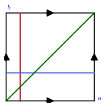
figures/product_chart.sage.
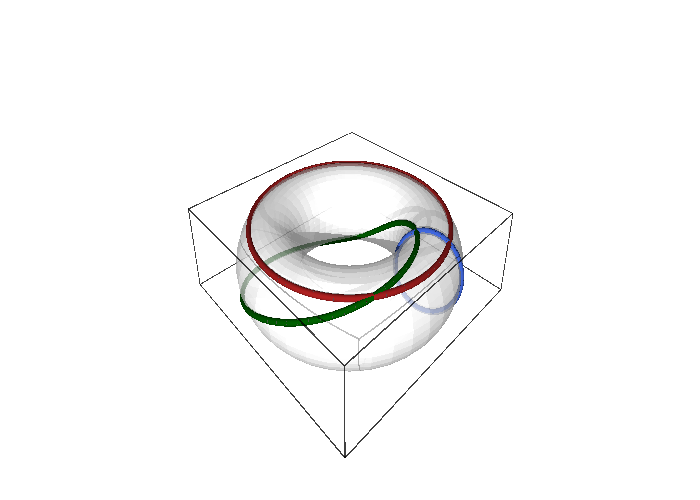
figures/product_square.sage.
Interactive figure (drag to rotate or zoom); the static version is above.
The number of product charts is the product of the numbers of charts of the factors, and the first exercise counts them for a few products and adds up dimensions. Writing one product chart explicitly shows what the coordinates of a point of S^1 \times S^2 look like.
Exercise 34 (Counting product charts) How many charts does the product atlas of S^1 \times S^2 have, if the circle carries its two angle charts and the sphere its two stereographic charts, and how many does the n-torus T^n = S^1 \times \dots \times S^1 have? What is the dimension of S^1 \times S^2 \times SU(2)? Write one product chart of S^1 \times S^2 with its domain.
Each product chart is a pair of charts, so S^1 \times S^2 has 2 \cdot 2 = 4 and T^n has 2^n (the four charts of Exercise 9 for n = 2). Dimensions add: 1 + 2 + 3 = 6. One product chart of S^1 \times S^2 is (\varphi, u, v) on the domain (S^1 \setminus \{(1, 0)\}) \times (S^2 \setminus \{N\}), with image (0, 2\pi) \times \mathbb{R}^2, an open subset of \mathbb{R}^3.
The torus has another home besides \mathbb{R}^3: inside the three-sphere, as the set of SU(2) matrices whose two entries have equal modulus. The second exercise maps the product chart (a, b) into S^3 and finds, with Sage, that the two coordinate velocities are orthogonal and of equal constant length, so this torus is flat.
Exercise 35 (The Clifford torus in SU(2)) Show that (a, b) \mapsto (\cos a, \sin a, \cos b, \sin b)/\sqrt2 sends the product chart of S^1 \times S^1 into S^3, that the corresponding SU(2) matrix has |a| = |b| = 1/\sqrt2 in Equation 5, and compute the inner products of the two coordinate velocities. Is the map injective on (0, 2\pi)^2?
The sum of squares is (1 + 1)/2 = 1, so the image lies on S^3; the complex entries a = (\cos a + i\sin a)/\sqrt2 and b = (\cos b + i\sin b)/\sqrt2 have |a|^2 = |b|^2 = 1/2 and the matrix has determinant 1. The coordinate velocities (-\sin a, \cos a, 0, 0)/\sqrt2 and (0, 0, -\sin b, \cos b)/\sqrt2 are orthogonal and each has length 1/\sqrt2: the Gram matrix (Definition 14) is the constant \tfrac12\, 1, so distances on this torus are those of the flat square, unlike the torus in \mathbb{R}^3 whose Gram matrix depends on a. The map is injective because (\cos a, \sin a) determines a and (\cos b, \sin b) determines b in (0, 2\pi):
a, b = var("a b", domain="real")
E = vector([cos(a), sin(a), cos(b), sin(b)])/sqrt(2)
print("lands on S^3, |E|^2 = 1:", bool((E*E).simplify_full() == 1))
J = jacobian(E, (a, b))
G = (J.transpose()*J).simplify_full()
print("Gram matrix J^T J =", G.list(), " -> the coordinate velocities are orthogonal, each of length 1/sqrt(2)")
aa = E[0] + I*E[1]; bb = E[2] + I*E[3]
print("|a|^2 = |b|^2 = 1/2:", bool((aa*conjugate(aa)).simplify_full() == 1/2) and bool((bb*conjugate(bb)).simplify_full() == 1/2))
g = matrix(SR, [[aa, -conjugate(bb)], [bb, conjugate(aa)]])
print("the SU(2) matrix g(a, b) has det 1:", bool(g.det().simplify_full() == 1))
print("the a-curve b = 0 and the b-curve a = 0 are great circles of S^3 (each lies in a plane through 0):", bool((E.subs(b=0)*E.subs(b=0)).simplify_full() == 1))
print("the map is injective on (0, 2 pi)^2: (cos a, sin a) determines a, and (cos b, sin b) determines b, so distinct chart points have distinct images")Output:
lands on S^3, |E|^2 = 1: True
Gram matrix J^T J = [1/2, 0, 0, 1/2] -> the coordinate velocities are orthogonal, each of length 1/sqrt(2)
|a|^2 = |b|^2 = 1/2: True
the SU(2) matrix g(a, b) has det 1: True
the a-curve b = 0 and the b-curve a = 0 are great circles of S^3 (each lies in a plane through 0): True
the map is injective on (0, 2 pi)^2: (cos a, sin a) determines a, and (cos b, sin b) determines b, so distinct chart points have distinct imagesSmoothness on a product is checked factor by factor, and the third exercise establishes the two rules that make this precise: the projections are smooth, and a map into a product is smooth exactly when its two components are. It ends with two functions on the torus, one smooth and one not, for the same reason as the angle on the circle.
Exercise 36 (Smooth maps into and out of a product) Show that the projections M \times N \to M and M \times N \to N are smooth, and that a map F = (F_1, F_2) : P \to M \times N is smooth if and only if F_1 : P \to M and F_2 : P \to N are. Decide whether f(a, b) = \cos a\cos b + \sin(a + b) and g(a, b) = a + b define smooth functions on the torus.
In a product chart (x, y) the first projection reads (x, y) \mapsto x, a linear map, smooth; likewise the second. If F is smooth so are the compositions F_1 = \mathrm{pr}_1 \circ F and F_2 = \mathrm{pr}_2 \circ F; conversely the chart expression of F is the pair of chart expressions of F_1 and F_2, and a map into \mathbb{R}^{m + n} is smooth iff its components are. The function f is a trigonometric polynomial in a and b, 2\pi-periodic in each, so it has the same smooth expression in all four product charts of Exercise 9: smooth on the torus. The function g is not even continuous on the torus: in the chart (a', b) it reads a' + b on one half of the overlap and a' + 2\pi + b on the other, jumping by 2\pi across the circle a \equiv 0, as \varphi does on the circle (Exercise 25).
Embeddings and Gram matrices
Every example so far was described by a map from coordinates into some \mathbb{R}^N whose image is the manifold: the circle in the plane, the sphere and the torus in space, SU(2) in \mathbb{R}^4. This is the most concrete way to picture a manifold, and it comes with a way to measure: the lengths and angles of the coordinate velocities, collected in the Gram matrix. The Gram matrix is the first encounter with a metric; in Section 1.3.3 it becomes the round metric of the sphere.
Parametrisations and their velocities
The inverse of a chart is a map from coordinates to points, and when the points live in a Euclidean space it is a map between Euclidean spaces that calculus can handle directly. The next definition names such maps; the picture is a sheet of coordinate paper being bent into a surface in space.
Definition 11 (Parametrisation) A parametrisation of a subset S \subseteq \mathbb{R}^N is a smooth map E : V \to \mathbb{R}^N from an open set V \subseteq \mathbb{R}^n whose image is S (or a piece of it); when E is injective, E^{-1} is a chart on its image. The inverses of the charts of Section 1.1.1 are parametrisations.
Veriphy. Pending.
Lean. Pending.
Sage. Pending.
The circle is parametrised by its angle, and the first example notes that the same formula serves two purposes depending on its domain. On an interval of length 2\pi it is the inverse of a chart; on the whole real line it is a many-to-one parametrisation of the whole circle.
Example 37 (The circle) Equation 1, \varphi \mapsto (\cos\varphi, \sin\varphi) on (0, 2\pi), parametrises the circle minus a point; on all of \mathbb{R} it parametrises the whole circle but is not injective.
The sphere has been parametrised twice in this chapter, by angles and by the stereographic plane. The second example puts the two side by side and records what each misses, a half-meridian and two poles against a single point.
Example 38 (The sphere, twice) Equation 2 parametrises the sphere by spherical coordinates and Equation 3 by stereographic coordinates; both are injective on their domains and their images are the sphere minus a half-meridian and minus a point respectively.
The Euler angles parametrise a group, and the third example writes the four real components explicitly, which realises SU(2) as a surface in \mathbb{R}^4. The formulas for a and b are those of Exercise 23.
Example 39 (SU(2) by Euler angles) The Euler angles Equation 6 parametrise SU(2) = S^3 \subset \mathbb{R}^4 by the four real numbers (\operatorname{Re} a, \operatorname{Im} a, \operatorname{Re} b, \operatorname{Im} b) with a = \cos(\theta/2)\, e^{-i(\varphi + \psi)/2} and b = -i\sin(\theta/2)\, e^{i(\varphi - \psi)/2}.
Veriphy. Pending.
Lean. This parametrisation is the map KaluzaKlein.Geometry.su2Embed of the Lean library.
Sage. Pending.
The cylinder is the product of the circle with a line, and its parametrisation combines the angle with a height. The first exercise asks for its image and for the set it misses, and repeats the observation about domains made for the circle.
Exercise 37 (The cylinder) Show that (\varphi, z) \mapsto (\cos\varphi, \sin\varphi, z) on (0, 2\pi) \times \mathbb{R} parametrises the cylinder X^2 + Y^2 = 1 minus a line, that it is injective there, and that on \mathbb{R} \times \mathbb{R} it parametrises the whole cylinder without being injective.
\cos^2\varphi + \sin^2\varphi = 1 puts the image on the cylinder, and every point (X, Y, z) of the cylinder with (X, Y) \neq (1, 0) is reached exactly once, by the \varphi \in (0, 2\pi) of Exercise 1 and the given z; the missing set is the vertical line X = 1, Y = 0. On \mathbb{R} \times \mathbb{R} the line is covered too, but (\varphi, z) and (\varphi + 2\pi, z) have the same image. The inverse of the restricted map is the product chart (\varphi, z) of the cylinder S^1 \times \mathbb{R} (Example 36).
Stretching the sphere along its axes gives an ellipsoid, and the spherical parametrisation stretches with it. The second exercise checks this with Sage and observes that the injectivity question is answered by the sphere, since the stretching is an invertible linear map; it also shows that the coordinate grid is no longer orthogonal.
Exercise 38 (The ellipsoid) Show that (\theta, \varphi) \mapsto (A\sin\theta\cos\varphi,\ B\sin\theta\sin\varphi,\ C\cos\theta) parametrises the ellipsoid X^2/A^2 + Y^2/B^2 + Z^2/C^2 = 1, that it is the spherical parametrisation followed by the scaling \operatorname{diag}(A, B, C), and deduce where it is injective; compute its two coordinate velocities and decide when they are orthogonal.
Dividing each component by its semi-axis returns Equation 2, whose squares sum to 1; so E = \operatorname{diag}(A, B, C)\, S with S the spherical parametrisation, and since the scaling is invertible for ABC \neq 0, E is injective exactly where S is, on (0, \pi) \times (0, 2\pi). The velocities are \partial_\theta E = (A\cos\theta\cos\varphi, B\cos\theta\sin\varphi, -C\sin\theta) and \partial_\varphi E = (-A\sin\theta\sin\varphi, B\sin\theta\cos\varphi, 0), with inner product (B^2 - A^2)\sin\theta\cos\theta \sin\varphi\cos\varphi: orthogonal everywhere only when A = B, the ellipsoid of revolution:
th, ph = var("th ph", domain="real"); A, B, C = var("A B C", domain="real")
E = vector([A*sin(th)*cos(ph), B*sin(th)*sin(ph), C*cos(th)])
print("lies on the ellipsoid X^2/A^2 + Y^2/B^2 + Z^2/C^2 = 1:", bool((E[0]**2/A**2 + E[1]**2/B**2 + E[2]**2/C**2).simplify_full() == 1))
S = vector([sin(th)*cos(ph), sin(th)*sin(ph), cos(th)])
print("E = diag(A, B, C) S with S the spherical parametrisation:", bool(diagonal_matrix(SR, [A, B, C])*S == E))
print("det diag(A, B, C) =", diagonal_matrix(SR, [A, B, C]).det(), " -> invertible when A B C != 0, so E is injective exactly where S is")
J = jacobian(E, (th, ph))
print("d_theta E =", J.column(0)); print("d_phi E =", J.column(1))
print("|d_phi E|^2 =", (J.column(1)*J.column(1)).simplify_full().factor(), " vanishes exactly at the poles sin theta = 0")
print("the Jacobian columns are orthogonal only if A = B:", (J.column(0)*J.column(1)).simplify_full().factor())Output:
lies on the ellipsoid X^2/A^2 + Y^2/B^2 + Z^2/C^2 = 1: True
E = diag(A, B, C) S with S the spherical parametrisation: True
det diag(A, B, C) = A*B*C -> invertible when A B C != 0, so E is injective exactly where S is
d_theta E = (A*cos(ph)*cos(th), B*cos(th)*sin(ph), -C*sin(th))
d_phi E = (-A*sin(ph)*sin(th), B*cos(ph)*sin(th), 0)
|d_phi E|^2 = (B^2*cos(ph)^2 + A^2*sin(ph)^2)*sin(th)^2 vanishes exactly at the poles sin theta = 0
the Jacobian columns are orthogonal only if A = B: -(A + B)*(A - B)*cos(ph)*cos(th)*sin(ph)*sin(th)The torus formula on all of \mathbb{R}^2 covers each point infinitely often, in a regular pattern. The third exercise identifies the set of preimages of a point as a shifted lattice and uses it to say exactly which open sets of the plane give injective parametrisations, the general version of “an interval of length at most 2\pi”.
Exercise 39 (Preimages under the torus parametrisation) Show that Equation 4, extended to all (a, b) \in \mathbb{R}^2, is surjective onto the torus and that the preimage of each point is a lattice \{(a + 2\pi m, b + 2\pi n) : m, n \in \mathbb{Z}\}. Deduce for which open sets V \subseteq \mathbb{R}^2 the restriction to V is injective, and show that no open set larger than an open square of side 2\pi works.
The formula is 2\pi-periodic in a and in b, so every point of the torus, which is reached for some (a, b) \in [0, 2\pi)^2, is reached by the whole lattice translate. Conversely, if E(a, b) = E(a', b') then r\sin a = r\sin a' and R + r\cos a = R + r\cos a' (the distance from the axis), so a' \equiv a, and then (\cos b, \sin b) = (\cos b', \sin b') gives b' \equiv b modulo 2\pi: the preimage is exactly the lattice translate. The restriction to V is injective iff V contains no two points differing by a non-zero element of 2\pi\mathbb{Z}^2; an open square of side 2\pi qualifies, while any open set containing a closed square of side 2\pi contains two points (a, b) and (a + 2\pi, b) with the same image.
Differentiating a parametrisation with respect to each coordinate gives a vector in the ambient space, the velocity of the corresponding coordinate curve. The next definition arranges these vectors as the columns of the Jacobian matrix, which from now on carries the local geometry of the parametrised surface.
Definition 12 (Coordinate velocity) The coordinate velocities of a parametrisation E are the columns \partial_i E = \partial E/\partial x^i of its Jacobian matrix (Definition 16 of Real analysis), the velocities of the coordinate curves (Definition 2) seen as vectors in \mathbb{R}^N: J^k{}_i = \frac{\partial E^k}{\partial x^i}, \qquad k = 1, \dots, N,\ i = 1, \dots, n . \tag{8}
Veriphy. Pending.
Lean. Pending.
Sage. Pending.
For the circle there is a single coordinate and a single column. The first example computes it and recognises the unit tangent vector, which is why arc length along the circle equals the angle.
Example 40 (The circle) For Equation 1 the Jacobian is the single column \partial_\varphi E = (-\sin\varphi, \cos\varphi): the velocity of the point moving around the circle, tangent to it and of unit length.
The sphere has two columns, tangent to the meridian and to the parallel through the point. The second example writes them out and shows them in a figure at three latitudes, where one can see the parallel’s velocity shrink towards the pole and vanish there.
Example 41 (The sphere) For Equation 2 the two columns are \partial_\theta E = (\cos\theta\cos\varphi,\ \cos\theta\sin\varphi,\ -\sin\theta), \qquad \partial_\varphi E = (-\sin\theta\sin\varphi,\ \sin\theta\cos\varphi,\ 0), \tag{9} tangent to the meridian and to the parallel through the point (Figure 6). At the poles \partial_\varphi E = 0: the parallel has shrunk to a point.
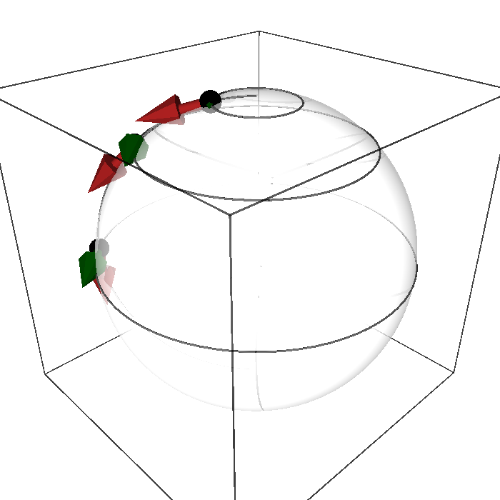
figures/coordinate_velocities.sage.
The torus’s two columns are tangent to the tube circle and to the axis circle, and their lengths are the radii of those circles found in Exercise 4. The third example records this; unlike the sphere, neither length ever vanishes.
Example 42 (The torus) For Equation 4, \partial_a E = (-r\sin a\cos b,\ -r\sin a\sin b,\ r\cos a) has length r and \partial_b E = (-(R + r\cos a)\sin b,\ (R + r\cos a)\cos b,\ 0) has length R + r\cos a, the radius of the axis circle through the point (Exercise 46).
The Jacobian of the polar map is the first one every student computes, and the first exercise asks for it again in the language of coordinate velocities. Its columns are the vectors found in Exercise 6 and its determinant is the r of the change-of-variables formula.
Exercise 40 (The Jacobian of polar coordinates) Write the Jacobian matrix of (r, \varphi) \mapsto (r\cos\varphi, r\sin\varphi), identify its columns with the velocities of the polar coordinate curves, find their lengths and the determinant, and relate the determinant to the area of a small coordinate rectangle.
J = \begin{pmatrix} \cos\varphi & -r\sin\varphi \\ \sin\varphi & r\cos\varphi \end{pmatrix}; the first column \partial_r E = (\cos\varphi, \sin\varphi) is the unit radial vector and the second \partial_\varphi E = r(-\sin\varphi, \cos\varphi) is tangent to the circle of radius r, with lengths 1 and r and \det J = r (Proposition 5 of Real analysis). The two columns are orthogonal, so the coordinate rectangle of sides dr and d\varphi is mapped to a rectangle of sides dr and r\, d\varphi, of area r\, dr\, d\varphi = |\det J|\, dr\, d\varphi, the area element of Theorem 7 of Real analysis.
The stereographic parametrisation has a Jacobian with no zero columns anywhere, and the second exercise computes it with Sage. The two columns turn out to be tangent to the sphere, orthogonal and of equal length, a strong property called conformality that is the subject of Exercise 47.
Exercise 41 (Coordinate velocities of the stereographic chart) Compute the coordinate velocities \partial_u E and \partial_v E of Equation 3, check that both are tangent to the sphere (orthogonal to the position vector E), that they are orthogonal to each other, and that both have length 2/(1 + u^2 + v^2); where is this length largest?
Differentiating the rational functions and simplifying, E \cdot \partial_u E = E \cdot \partial_v E = 0 (as must be, since E \cdot E = 1 is constant), \partial_u E \cdot \partial_v E = 0, and |\partial_u E|^2 = |\partial_v E|^2 = 4/(1 + u^2 + v^2)^2. The length is largest at the origin, where it equals 2: the south pole, nearest to the projection plane, is where a unit step in the plane moves the point on the sphere fastest; towards the north pole, u^2 + v^2 \to \infty, the length tends to 0. The Jacobian has rank 2 everywhere:
u, v = var("u v", domain="real")
rho2 = u**2 + v**2
E = vector([2*u/(1 + rho2), 2*v/(1 + rho2), (rho2 - 1)/(1 + rho2)])
J = jacobian(E, (u, v))
Eu, Ev = J.column(0), J.column(1)
print("d_u E =", Eu.apply_map(lambda e: e.simplify_full().factor()))
print("d_v E =", Ev.apply_map(lambda e: e.simplify_full().factor()))
print("both tangent to the sphere, E . d_u E = E . d_v E = 0:", bool((E*Eu).simplify_full() == 0) and bool((E*Ev).simplify_full() == 0))
print("orthogonal to each other, d_u E . d_v E = 0:", bool((Eu*Ev).simplify_full() == 0))
print("|d_u E|^2 = |d_v E|^2 = 4/(1 + u^2 + v^2)^2:", bool(((Eu*Eu) - 4/(1 + rho2)**2).simplify_full() == 0) and bool(((Ev*Ev) - 4/(1 + rho2)**2).simplify_full() == 0))
print("length at the origin (south pole):", sqrt((Eu*Eu).subs(u=0, v=0)), "; limit of the length as u -> oo along v = 0:", limit(sqrt((Eu*Eu).simplify_full()).subs(v=0), u=oo))
print("the Jacobian has rank 2 everywhere: the stereographic parametrisation is regular on the whole plane")Output:
d_u E = (-2*(u^2 - v^2 - 1)/(u^2 + v^2 + 1)^2, -4*u*v/(u^2 + v^2 + 1)^2, 4*u/(u^2 + v^2 + 1)^2)
d_v E = (-4*u*v/(u^2 + v^2 + 1)^2, 2*(u^2 - v^2 + 1)/(u^2 + v^2 + 1)^2, 4*v/(u^2 + v^2 + 1)^2)
both tangent to the sphere, E . d_u E = E . d_v E = 0: True
orthogonal to each other, d_u E . d_v E = 0: True
|d_u E|^2 = |d_v E|^2 = 4/(1 + u^2 + v^2)^2: True
length at the origin (south pole): 2 ; limit of the length as u -> oo along v = 0: 0
the Jacobian has rank 2 everywhere: the stereographic parametrisation is regular on the whole planeSurfaces of revolution include the sphere, the torus and the cylinder, and the third exercise computes their coordinate velocities once and for all. The result explains why the coordinate grids of all three were orthogonal and gives the general formula for the lengths, to be specialised in each case.
Exercise 42 (Surfaces of revolution) For the surface of revolution (s, \varphi) \mapsto (f(s)\cos\varphi,\ f(s)\sin\varphi,\ g(s)) with f > 0, compute the two coordinate velocities, show that they are orthogonal and find their lengths. Recover the sphere (f = \sin s, g = \cos s), the torus (f = R + r\cos s, g = r\sin s) and the cylinder (f = 1, g = s).
\partial_s E = (f'\cos\varphi, f'\sin\varphi, g') and \partial_\varphi E = (-f\sin\varphi, f\cos\varphi, 0); their inner product is -ff'\cos\varphi\sin\varphi + ff'\sin\varphi\cos\varphi = 0, and the lengths are \sqrt{f'^2 + g'^2} and f. For the sphere f'^2 + g'^2 = \cos^2 s + \sin^2 s = 1 and f = \sin s, the lengths of Example 41; for the torus f'^2 + g'^2 = r^2 and f = R + r\cos s, those of Example 42; for the cylinder both lengths are 1. The \varphi-velocity vanishes exactly where the profile curve meets the axis, f = 0, which happens for the sphere at the poles and never for the torus or the cylinder.
Embeddings
Not every parametrisation produces a decent surface: the map may fold, cross itself or have a cusp. The next definition lists the three conditions that exclude these, injectivity, full rank of the Jacobian and continuity of the inverse, and names the maps that satisfy them; their images are the surfaces on which the inverse map is a chart.
Definition 13 (Embedding) An embedding of an open set V \subseteq \mathbb{R}^n into \mathbb{R}^N is a smooth injective map E : V \to \mathbb{R}^N whose Jacobian has rank n (its n columns are linearly independent, Definition 4 of Linear algebra) at every point, and which is a homeomorphism onto its image. The image E(V) is then an n-dimensional embedded submanifold of \mathbb{R}^N and E^{-1} is a chart on it.
Veriphy. Pending.
Lean. Pending.
Sage. Pending.
The spherical parametrisation is the first test case, and the first example shows that the rank condition is exactly what fails at the poles. Away from them the two columns are orthogonal and non-zero, hence independent.
Example 43 (The spherical chart is an embedding away from the poles) The columns Equation 9 are linearly independent exactly where \sin\theta \neq 0, since |\partial_\varphi E| = \sin\theta and the two columns are orthogonal; so Equation 2 restricted to (0, \pi) \times (0, 2\pi) is an embedding, and the map extended to \theta = 0 is not.
The torus and the stereographic plane are embeddings on their whole domains, and the second example says why, pointing to the Gram-matrix exercises where the orthogonality and the lengths are computed. The stereographic case is the first embedding of an entire plane.
Example 44 (The torus and the stereographic map) For the torus Equation 4 the columns have lengths r and R + r\cos a, never zero, and are orthogonal (Exercise 46): the parametrisation is an embedding everywhere. The stereographic inverse Equation 3 is an embedding of the whole plane, the image being the sphere minus a point (Exercise 47).
Each of the three conditions can fail on its own, and the third example gives one curve for each failure. A cusp appears where the rank drops, a circle traced repeatedly is where injectivity fails, and a figure eight is a curve whose inverse is not continuous although the other two conditions hold.
Example 45 (Maps that are not embeddings) t \mapsto (t^2, t^3) is injective but its Jacobian (2t, 3t^2) vanishes at t = 0: the image has a cusp. t \mapsto (\cos t, \sin t) on \mathbb{R} has rank one everywhere but is not injective. The figure eight t \mapsto (\sin 2t, \sin t) on (0, 2\pi) is injective with rank one, but is not a homeomorphism onto its image near the crossing point.
A helix is a curve in space that satisfies all three conditions, and the first exercise verifies them one by one. The continuity of the inverse is the one most often forgotten, and here it follows from the fact that the height coordinate alone recovers the parameter.
Exercise 43 (The helix) Show that t \mapsto (\cos t, \sin t, t) is an embedding of \mathbb{R} into \mathbb{R}^3: check injectivity, compute the velocity and its length, and show that the inverse map from the image to \mathbb{R} is continuous.
The third coordinate is t itself, so the map is injective and its inverse is the restriction to the helix of the projection (X, Y, Z) \mapsto Z, a continuous map; hence the map is a homeomorphism onto its image. The velocity (-\sin t, \cos t, 1) has length \sqrt2 at every point, so the single column of the Jacobian never vanishes and the rank is 1. All three conditions of Definition 13 hold; the circle t \mapsto (\cos t, \sin t) of Example 45 is the same curve with the height forgotten, and forgetting it destroys injectivity.
An embedding is a property of the map, not of its image, and the second exercise makes this vivid with a parametrisation of a smooth parabola that is nevertheless not an embedding. Finding a second parametrisation of the same parabola that is an embedding shows that the image can be perfectly smooth while a particular map fails.
Exercise 44 (A bad parametrisation of a good curve) Show that t \mapsto (t^3, t^6) is injective with image the whole parabola Y = X^2, but is not an embedding; then give a parametrisation of the same parabola that is an embedding. Which condition of Definition 13 fails, and at which point?
t \mapsto t^3 is a bijection of \mathbb{R}, so the map is injective and, as (t^3)^2 = t^6, its image is the whole parabola; the inverse (X, Y) \mapsto X^{1/3} is continuous, so it is a homeomorphism onto the image. The Jacobian (3t^2, 6t^5) vanishes at t = 0, so the rank condition fails at the origin and the map is not an embedding; the velocity comes to a halt at the vertex and starts again, as in Example 15. The map s \mapsto (s, s^2) has the same image, is injective, has Jacobian (1, 2s) \neq 0 and continuous inverse (X, Y) \mapsto X: an embedding. The parabola is an embedded submanifold; only the first map was unsuitable.
The figure eight of Example 45 fails the subtlest condition, and the third exercise proves the three claims made about it. Sage settles the rank and the injectivity by exact trigonometry, and the two one-sided limits at the ends of the interval show where the inverse breaks down.
Exercise 45 (The figure eight) For E(t) = (\sin 2t, \sin t) on (0, 2\pi), show that the velocity never vanishes, that E is injective, and that E is not a homeomorphism onto its image by computing the limits of E(t) as t \to 0^+ and t \to 2\pi^-.
The velocity (2\cos 2t, \cos t) vanishes only if \cos t = 0, but then \cos 2t = 2\cos^2 t - 1 = -1 \neq 0. If E(s) = E(t) then \sin s = \sin t, so s = t or s = \pi - t modulo 2\pi; on the second branch \sin 2s = - \sin 2t, so \sin 2t = 0 and t \in \{\pi/2, \pi, 3\pi/2\}, where the partner \pi - t is either t itself or 0 \equiv 2\pi, outside the interval: E is injective. Both ends of the interval tend to (0, 0) = E(\pi), so points of the image near the crossing have parameters near 0, near \pi and near 2\pi, and the inverse is not continuous at the crossing:
t = var("t", domain="real")
E = vector([sin(2*t), sin(t)])
V = diff(E, t)
print("velocity:", V)
print("if cos t = 0 then cos 2t = 2 cos^2 t - 1 =", (2*cos(t)**2 - 1).subs(cos(t) == 0), " != 0, so the velocity never vanishes: rank one everywhere")
# injectivity: sin s = sin t forces s = t or s = pi - t (mod 2 pi); on the second branch
# sin 2s = sin(2 pi - 2t) = -sin 2t, so a coincidence needs sin 2t = 0, that is t in {pi/2, pi, 3 pi/2}
print("on the branch s = pi - t: sin 2s + sin 2t =", (sin(2*(pi - t)) + sin(2*t)).simplify_full(), " so E(s) = E(t) needs sin 2t = 0")
for t0 in [pi/2, pi, 3*pi/2]:
s0 = pi - t0
s0 = s0 + 2*pi if bool(s0 <= 0) else s0
print(" t =", t0, ": partner s = pi - t mod 2 pi =", s0, "; same parameter:", bool(s0 == t0), "; partner inside (0, 2 pi):", bool(0 < s0 < 2*pi))
print("hence E is injective on (0, 2 pi)")
print("limits at the two ends of the interval:", (limit(E[0], t=0, dir="+"), limit(E[1], t=0, dir="+")), (limit(E[0], t=2*pi, dir="-"), limit(E[1], t=2*pi, dir="-")), " both equal E(pi) =", E.subs(t=pi))
print("so the inverse E^{-1} is not continuous at (0, 0): points near the origin on the image have parameters near 0, near pi and near 2 pi")Output:
velocity: (2*cos(2*t), cos(t))
if cos t = 0 then cos 2t = 2 cos^2 t - 1 = -1 != 0, so the velocity never vanishes: rank one everywhere
on the branch s = pi - t: sin 2s + sin 2t = 0 so E(s) = E(t) needs sin 2t = 0
t = 1/2*pi : partner s = pi - t mod 2 pi = 1/2*pi ; same parameter: True ; partner inside (0, 2 pi): True
t = pi : partner s = pi - t mod 2 pi = 2*pi ; same parameter: False ; partner inside (0, 2 pi): False
t = 3/2*pi : partner s = pi - t mod 2 pi = 3/2*pi ; same parameter: True ; partner inside (0, 2 pi): True
hence E is injective on (0, 2 pi)
limits at the two ends of the interval: (0, 0) (0, 0) both equal E(pi) = (0, 0)
so the inverse E^{-1} is not continuous at (0, 0): points near the origin on the image have parameters near 0, near pi and near 2 piThe Gram matrix
The lengths of the coordinate velocities and the angles between them are what the eye reads off a coordinate grid drawn on a surface, and the next definition packages them into a matrix of inner products. Its determinant detects where the columns become dependent, and its square root is the area factor of integration on the surface.
Definition 14 (Gram matrix) The Gram matrix of a parametrisation is the n \times n matrix of inner products of its coordinate velocities, G_{ij} = \sum_{k=1}^N \frac{\partial E^k}{\partial x^i} \frac{\partial E^k}{\partial x^j} = (J^{\mathsf{T}} J)_{ij} . \tag{10} It is a symmetric bilinear form (Definition 12 of Linear algebra) at each point, \det G > 0 exactly where the columns are linearly independent, so \det G \neq 0 is the rank condition of Definition 13, and \sqrt{\det G} is the area factor of the parametrisation.
Veriphy. Pending.
Lean. Pending.
Sage. Pending.
For the circle the Gram matrix is a single number, and the first example finds it equal to one. The consequence is that the angle measures arc length, the simplest instance of a metric reading off lengths.
Example 46 (The circle) G = (\partial_\varphi E \cdot \partial_\varphi E) = (1), \det G = 1 everywhere: the angle chart is regular at every point of its domain, and arc length equals angle.
The sphere’s Gram matrix is the computation behind the familiar \sin\theta of spherical integrals. The second example carries it out entry by entry from the columns Equation 9 and finds a diagonal matrix whose determinant vanishes at the poles.
Example 47 (The sphere) From Equation 9, \begin{aligned} G_{\theta\theta} &= \cos^2\theta\cos^2\varphi + \cos^2\theta\sin^2\varphi + \sin^2\theta = 1, \\ G_{\theta\varphi} &= -\cos\theta\sin\theta\cos\varphi\sin\varphi + \cos\theta\sin\theta\sin\varphi\cos\varphi = 0, \\ G_{\varphi\varphi} &= \sin^2\theta\sin^2\varphi + \sin^2\theta\cos^2\varphi = \sin^2\theta , \end{aligned} \tag{11} so G = \operatorname{diag}(1, \sin^2\theta) and \det G = \sin^2\theta (Proposition 3); the area factor \sin\theta is the one of spherical integrals.
The Gram matrix of SU(2) in Euler angles is the first one with an off-diagonal entry. The third example states it and reads off the geometric meaning: two of the coordinate curves are not orthogonal, so the three-sphere is not a product of circles in these coordinates.
Example 48 (SU(2)) The Gram matrix of the Euler-angle parametrisation is G = \frac14 \begin{pmatrix} 1 & 0 & 0 \\ 0 & 1 & \cos\theta \\ 0 & \cos\theta & 1 \end{pmatrix}, \tag{12} with \det G = \sin^2\theta/64: regular away from \theta = 0, \pi. The off-diagonal entry says that the \varphi- and \psi-curves are not orthogonal, which is why SU(2) is not a product of circles (Proposition 4).
SageManifolds computes Gram matrices as pullbacks of the Euclidean metric, and the first exercise uses this on the torus and compares with the direct formula J^{\mathsf{T}} J. The determinant is a product of two squares that never vanish, which is the regularity claimed in Example 44.
Exercise 46 (The Gram matrix of the torus) Compute the Gram matrix of the torus parametrisation Equation 4 as the pullback of the Euclidean metric with SageManifolds, compare with J^{\mathsf{T}} J, and find where the parametrisation is regular.
G_{aa} = r^2, G_{ab} = 0, G_{bb} = (R + r\cos a)^2, \det G = r^2(R + r\cos a)^2 > 0 everywhere because R > r. In SageManifolds:
R, r = var("R r", domain="real"); assume(R > r, r > 0)
E3 = Manifold(3, "R^3", structure="Riemannian")
C = E3.chart("X Y Z"); g3 = E3.metric(); g3[0, 0] = 1; g3[1, 1] = 1; g3[2, 2] = 1
T2 = Manifold(2, "T^2", structure="Riemannian")
ab = T2.chart("a:(0,2*pi) b:(0,2*pi)"); a, b = ab[:]
emb = T2.diff_map(E3, {(ab, C): [(R + r*cos(a))*cos(b), (R + r*cos(a))*sin(b), r*sin(a)]}, name="E")
G = T2.metric(); G.set(emb.pullback(g3))
print("induced metric (Gram matrix):"); print(G.display())
print("determinant:", G.determinant().expr().factor())
J = jacobian([(R + r*cos(a))*cos(b), (R + r*cos(a))*sin(b), r*sin(a)], (a, b))
Gm = matrix([[G[i, j].expr() for j in range(2)] for i in range(2)])
print("J^T J agrees with the pullback metric:", ((J.transpose()*J) - Gm).simplify_full() == 0)Output:
induced metric (Gram matrix):
g = r^2 da⊗da + (r^2*cos(a)^2 + 2*R*r*cos(a) + R^2) db⊗db
determinant: (r*cos(a) + R)^2*r^2
J^T J agrees with the pullback metric: TrueThe equal lengths and orthogonality found in Exercise 41 mean that the stereographic Gram matrix is a multiple of the identity, and the second exercise computes it. A chart with this property preserves angles, which is why the stereographic projection is the basis of so many maps of the Earth.
Exercise 47 (The Gram matrix of the stereographic parametrisation) Compute the Gram matrix of Equation 3 and show that it is a multiple of the identity.
G = \dfrac{4}{(1 + u^2 + v^2)^2}\begin{pmatrix} 1 & 0 \\ 0 & 1 \end{pmatrix}: the stereographic chart is conformal, it preserves angles and scales all lengths at a point by the same factor, which shrinks far from the origin where the sphere’s north pole is approached. The determinant never vanishes.
E3 = Manifold(3, "R^3", structure="Riemannian"); C = E3.chart("X Y Z")
g3 = E3.metric(); g3[0, 0] = 1; g3[1, 1] = 1; g3[2, 2] = 1
S2 = Manifold(2, "S^2", structure="Riemannian"); ste = S2.chart("u v"); u, v = ste[:]
emb = S2.diff_map(E3, {(ste, C): [2*u/(1 + u**2 + v**2), 2*v/(1 + u**2 + v**2), (u**2 + v**2 - 1)/(1 + u**2 + v**2)]}, name="E")
G = S2.metric(); G.set(emb.pullback(g3))
print("Gram matrix of the stereographic parametrisation:"); print(G.display())
print("G_uu = G_vv = 4/(1 + u^2 + v^2)^2:", bool((G[0, 0].expr() - 4/(1 + u**2 + v**2)**2).simplify_full() == 0) and bool(G[0, 1].expr() == 0))
print("determinant:", G.determinant().expr().factor(), " -> never zero: the chart is regular everywhere")Output:
Gram matrix of the stereographic parametrisation:
g = 4/(u^4 + v^4 + 2*(u^2 + 1)*v^2 + 2*u^2 + 1) du⊗du + 4/(u^4 + v^4 + 2*(u^2 + 1)*v^2 + 2*u^2 + 1) dv⊗dv
G_uu = G_vv = 4/(1 + u^2 + v^2)^2: True
determinant: 16/(u^2 + v^2 + 1)^4 -> never zero: the chart is regular everywhereThe determinant criterion of the definition can be applied to the sphere without any new computation, and the third exercise asks for the one-line argument, which needs nothing beyond the determinant of Equation 11. This is the pattern for every regularity statement in the book: a determinant and the set where it vanishes.
Exercise 48 (Where is the spherical chart regular?) Show, from the Gram matrix, that the spherical chart is regular exactly where \sin\theta \neq 0, and describe the points where it fails to be regular.
By Definition 14 the chart is regular where \det G \neq 0, and Equation 11 gives \det G = \sin^2\theta, which vanishes exactly at \theta = 0, \pi: the chart fails to be regular exactly at the two poles, where the whole line \theta = 0 (or \theta = \pi) of the parameter plane collapses to a single point.
Veriphy. Pending.
Lean. KaluzaKlein.Geometry.sphere_gram_det.
/-- The Gram determinant of the spherical chart is `sin²θ`: the chart is regular away from the poles. -/
theorem sphere_gram_det (x : Fin 2 → ℝ) :
(Matrix.of fun i j => gram sphereEmbed i j x).det = Real.sin (x 0) ^ 2KaluzaKlein.Geometry.sphere_gram_det in KaluzaKlein/Geometry/Metrics.lean, namespace KaluzaKlein.Geometry
Sage. Pending.
The Gram matrix of the sphere
The computation of Example 47 is short enough to be checked line by line, and it is also the first metric of the book, so it deserves to be stated as a proposition. Each of the four entries is a derivative computation followed by the identity \cos^2 + \sin^2 = 1, and the determinant follows.
Proposition 3 (The Gram matrix of the spherical chart) The Gram matrix of Equation 2 is \operatorname{diag}(1, \sin^2\theta) with \det G = \sin^2\theta, so the chart is regular exactly away from the poles.
Veriphy. Pending.
Lean. KaluzaKlein.Geometry.sphere_gram and KaluzaKlein.Geometry.sphere_gram_det; each entry is a derivative computation closed by ring with \cos^2 + \sin^2 = 1.
/-- The Gram matrix of the spherical chart is the round metric: `G = diag(1, sin²θ)`. -/
theorem sphere_gram (i j : Fin 2) (x : Fin 2 → ℝ) : gram sphereEmbed i j x = sphere i j xKaluzaKlein.Geometry.sphere_gram in KaluzaKlein/Geometry/Metrics.lean, namespace KaluzaKlein.Geometry
Sage. Pending.
The matrix \operatorname{diag}(1, \sin^2\theta) is best understood by evaluating it at a few latitudes. The first example does so at the equator and at a parallel of radius one half, where the second entry says how much shorter the parallel’s velocity is than the meridian’s.
Example 49 (The Gram matrix at a few latitudes) At the equator \theta = \pi/2, G = \operatorname{diag}(1, 1): the two coordinate velocities are orthogonal unit vectors, and the chart is locally a faithful map there. At \theta = \pi/6, G = \operatorname{diag}(1, \tfrac14): the parallel is a circle of radius \sin(\pi/6) = \tfrac12, so a step d\varphi along it moves the point only half as far as the same step would at the equator. At the poles G_{\varphi\varphi} \to 0.
The square root of the determinant is the area factor, and the second example uses it to recover the area of the sphere. The integral is the elementary one of spherical coordinates, seen now as an instance of the change-of-variables formula with \sqrt{\det G} in place of the Jacobian determinant.
Example 50 (The area of the sphere) \sqrt{\det G} = \sin\theta, so the area element of the sphere in spherical coordinates is \sin\theta\, d\theta\, d\varphi and the total area is \int_0^{2\pi}\!\int_0^\pi \sin\theta\, d\theta\, d\varphi = 2 \cdot 2\pi = 4\pi. The missing half-meridian and poles have zero area and do not affect the integral; this is the surface version of Theorem 7 of Real analysis, with \sqrt{\det G} as the factor.
Scaling the sphere scales the Gram matrix by the square of the radius, and the third example records the result for a sphere of radius a. It is the round metric of radius a that the chapter on induced metrics takes as its starting point.
Example 51 (A sphere of radius a) The parametrisation a\, E of the sphere of radius a has Jacobian a J and Gram matrix a^2 G = \operatorname{diag}(a^2, a^2\sin^2\theta), with \det = a^4\sin^2\theta and area \int a^2\sin\theta = 4\pi a^2. This is the round metric of radius a (Section 1.3.3); every length on the sphere scales by a and every area by a^2, while angles between coordinate curves are unchanged.
The Gram matrix gives the length of any curve through the formula \int\sqrt{G_{ij}\dot x^i \dot x^j}\, dt, and the first exercise applies it to the two kinds of coordinate curves. The result is the circumference of a parallel and the length of a meridian, both read off the diagonal entries.
Exercise 49 (Lengths of parallels and meridians) Using G = \operatorname{diag}(1, \sin^2\theta), compute the length of the parallel \theta = \theta_0 and of a meridian from pole to pole, and check the first against the radius of the parallel as a circle in space.
Along the parallel \gamma(t) = (\theta_0, t), t \in (0, 2\pi), the speed is \sqrt{G_{\varphi\varphi}} = \sin\theta_0, so the length is 2\pi\sin\theta_0; the parallel is the circle of radius \sin\theta_0 at height \cos\theta_0, with the same circumference. Along the meridian \gamma(t) = (t, \varphi_0), t \in (0, \pi), the speed is \sqrt{G_{\theta\theta}} = 1 and the length is \pi, half a great circle. The equator, \theta_0 = \pi/2, is the longest parallel, with length 2\pi.
Areas of regions bounded by parallels follow from the area factor by one integration, and the second exercise computes the area of a polar cap and of a zone. The result that a zone’s area depends only on its height is a theorem of Archimedes, here a two-line consequence of \sqrt{\det G} = \sin\theta.
Exercise 50 (Caps and zones) Compute from \sqrt{\det G} the area of the polar cap \theta < \theta_0 and check the cases \theta_0 = \pi/2 and \theta_0 = \pi. Show that the area of the zone \theta_1 < \theta < \theta_2 depends only on the difference of heights \cos\theta_1 - \cos\theta_2.
Area of the cap: \int_0^{2\pi}\!\int_0^{\theta_0} \sin\theta\, d\theta\, d\varphi = 2\pi(1 - \cos\theta_0), which is 2\pi for the hemisphere and 4\pi for the whole sphere. For the zone, 2\pi\int_{\theta_1}^{\theta_2} \sin\theta\, d\theta = 2\pi(\cos\theta_1 - \cos\theta_2) = 2\pi\,(Z_1 - Z_2): the area equals 2\pi times the height of the zone, the same as the area of the band of the circumscribed cylinder between the same two heights.
A Gram matrix is attached to a parametrisation, and changing coordinates changes it by a definite rule, G' = J^{\mathsf{T}} G J with J the Jacobian of the change. The third exercise checks the rule between the stereographic and spherical charts with Sage: the conformal Gram matrix of one becomes the diagonal one of the other.
Exercise 51 (Changing coordinates in the Gram matrix) Let J be the Jacobian of the transition map (\theta, \varphi) \mapsto (u, v) of Example 12 and G_{\text{ste}} = 4/(1 + u^2 + v^2)^2 times the identity the Gram matrix of the stereographic chart. Show with Sage that J^{\mathsf{T}} G_{\text{ste}} J = \operatorname{diag}(1, \sin^2\theta) and that \det G transforms by the factor (\det J)^2; explain why the rule holds in general.
The spherical parametrisation is E_{\text{ste}} \circ T with T the transition map, so by the chain rule its Jacobian is J_{\text{ste}} J and its Gram matrix is (J_{\text{ste}} J)^{\mathsf{T}} (J_{\text{ste}} J) = J^{\mathsf{T}} G_{\text{ste}} J; taking determinants gives \det G_{\text{sph}} = (\det J)^2 \det G_{\text{ste}}. Substituting u, v in terms of \theta, \varphi turns the conformal factor into (1 - \cos\theta)^2, and the matrix product simplifies to \operatorname{diag}(1, \sin^2\theta); with \det J = -\sin\theta/(1 - \cos\theta)^2 the determinant is \sin^2\theta (Proposition 3):
th, ph = var("th ph", domain="real"); u, v = var("u v", domain="real")
tr = (sin(th)*cos(ph)/(1 - cos(th)), sin(th)*sin(ph)/(1 - cos(th)))
J = jacobian(tr, (th, ph))
Gste = 4/(1 + u**2 + v**2)**2*identity_matrix(SR, 2)
Gste_on = Gste.subs(u=tr[0], v=tr[1]).simplify_full()
print("conformal factor 4/(1 + u^2 + v^2)^2 in spherical coordinates:", Gste_on[0, 0].factor())
Gsph = (J.transpose()*Gste_on*J).simplify_full()
print("J^T G_ste J =", Gsph.list())
print("equals diag(1, sin^2 theta):", bool((Gsph - diagonal_matrix(SR, [1, sin(th)**2])).simplify_full() == 0))
print("det G_sph = (det J)^2 det G_ste = sin^2 theta:", bool(((J.det())**2*Gste_on.det() - sin(th)**2).simplify_full() == 0))
print("det J =", J.det().simplify_full().factor())Output:
conformal factor 4/(1 + u^2 + v^2)^2 in spherical coordinates: (cos(th) - 1)^2
J^T G_ste J = [1, 0, 0, sin(th)^2]
equals diag(1, sin^2 theta): True
det G_sph = (det J)^2 det G_ste = sin^2 theta: True
det J = -sin(th)/(cos(th) - 1)^2The Gram matrix of SU(2)
The matrix Equation 12 has nine entries, each a sum of four products of derivatives of half-angle trigonometric functions, and it is worth stating once and for all. The proposition records it; each entry follows by differentiating the four components of the Euler-angle parametrisation and simplifying with the double-angle identity for \cos\theta.
Proposition 4 (The Gram matrix of the Euler angles) The Gram matrix of the Euler-angle parametrisation of SU(2) is Equation 12.
Veriphy. Pending.
Lean. KaluzaKlein.Geometry.su2_gram, which identifies the Gram matrix with the metric su2 of Section 1.3.3; each entry is proved by differentiating the four components and closing with ring after the double-angle identity for \cos\theta.
Sage. Pending.
The off-diagonal entry disappears at one latitude, and the first example evaluates the matrix there. At \theta = \pi/2 the three coordinate velocities are orthogonal and equally long, and the Euler chart is as faithful as it ever gets.
Example 52 (The Gram matrix at \theta = \pi/2) At \theta = \pi/2, \cos\theta = 0 and G = \tfrac14\, 1: the three coordinate velocities are mutually orthogonal, each of length \tfrac12. A step d\psi or d\varphi moves the point of S^3 by \tfrac12 d\psi, which is why \psi needs the range (0, 4\pi) to go once around a great circle of length 2\pi. Away from \theta = \pi/2 the \varphi- and \psi-velocities tilt towards each other.
The volume of the three-sphere is the second example, computed from \sqrt{\det G} exactly as the area of the two-sphere was. The answer, 2\pi^2, is checked by an independent chart in the integrative exercises.
Example 53 (The volume of SU(2)) \sqrt{\det G} = \sin\theta/8, so the volume of SU(2) = S^3 is \int_0^{4\pi}\!\int_0^{2\pi}\!\int_0^\pi \frac{\sin\theta}{8}\, d\theta\, d\varphi\, d\psi = \frac{2}{8} \cdot 2\pi \cdot 4\pi = 2\pi^2, the volume of the unit three-sphere (Exercise 54, Exercise 55). The set where the chart degenerates has zero volume and is harmlessly left out.
The eigenvalues of the Gram matrix measure the stretching of the parametrisation in its principal directions, and the third example computes them. Two of them degenerate at the poles of the Euler chart, exactly as the sphere’s \sin^2\theta does, and the eigenvectors \partial_\varphi \pm \partial_\psi are the combinations that survive there.
Example 54 (Eigenvalues of the Gram matrix) The eigenvalues of 4G are 1, 1 + \cos\theta and 1 - \cos\theta, with eigenvectors \partial_\theta, \partial_\varphi + \partial_\psi and \partial_\varphi - \partial_\psi (Definition 7 of Differential equations); their product is \sin^2\theta, confirming \det G = \sin^2\theta/64. At \theta \to 0 the eigenvalue 1 - \cos\theta vanishes: the direction \partial_\varphi - \partial_\psi collapses, which is the statement that only \varphi + \psi matters there (Exercise 23). The metric with these components is the bi-invariant metric of SU(2) in Section 1.3.3.
The lengths and angles encoded in Equation 12 can be read off directly, and the first exercise asks for them. The angle between the \varphi- and \psi-curves turns out to be \theta itself, a neat way to remember why the chart degenerates at \theta = 0 and \pi.
Exercise 52 (Lengths and angles of the Euler coordinate curves) From Equation 12, find the lengths of the three coordinate velocities of the Euler-angle parametrisation and the angle \alpha between the \varphi- and \psi-velocities; what happens to \alpha as \theta \to 0 and \theta \to \pi?
The diagonal entries are all \tfrac14, so the three velocities have length \tfrac12. The cosine of the angle between the \varphi- and \psi-velocities is G_{\varphi\psi}/\sqrt{G_{\varphi\varphi}G_{\psi\psi}} = (\cos\theta/4)/(1/4) = \cos\theta, so \alpha = \theta: the two velocities are orthogonal at \theta = \pi/2, become parallel as \theta \to 0 and antiparallel as \theta \to \pi. In both limits the three velocities span only a plane, the rank drops and the chart degenerates, which is \det G = \sin^2\theta/64 \to 0.
The second exercise computes Equation 12 with Sage from the four real components of Example 39 and finds the determinant. The computation rederives Proposition 4 symbolically and needs the half-angle identities, handled by Sage’s trigonometric simplification.
Exercise 53 (The Gram matrix of SU(2) in Sage) Write the four real components of the Euler-angle parametrisation of SU(2), compute J^{\mathsf{T}} J with Sage and show that it equals Equation 12; compute the determinant and the cosine of the angle between the \varphi- and \psi-velocities.
With E = (\cos\tfrac\theta2\cos\tfrac{\varphi + \psi}2,\ -\cos\tfrac\theta2\sin\tfrac{\varphi + \psi}2,\
\sin\tfrac\theta2\sin\tfrac{\varphi - \psi}2,\ -\sin\tfrac\theta2\cos\tfrac{\varphi - \psi}2), which lies on S^3, the Jacobian is a 4 \times 3 matrix and J^{\mathsf{T}} J simplifies to \tfrac14\begin{pmatrix} 1 & 0
& 0 \\ 0 & 1 & \cos\theta \\ 0 & \cos\theta & 1 \end{pmatrix} after trig_reduce; the determinant is \sin^2\theta/64 and the cosine of the angle is \cos\theta (Exercise 52):
th, ph, ps = var("th ph ps", domain="real")
E = vector([cos(th/2)*cos((ph + ps)/2), -cos(th/2)*sin((ph + ps)/2), sin(th/2)*sin((ph - ps)/2), -sin(th/2)*cos((ph - ps)/2)])
print("lands on S^3:", bool((E*E).simplify_full() == 1))
J = jacobian(E, (th, ph, ps))
G = (J.transpose()*J).apply_map(lambda e: e.trig_reduce().simplify_full())
print("Gram matrix:"); print(G)
target = matrix(SR, [[1, 0, 0], [0, 1, cos(th)], [0, cos(th), 1]])/4
print("equals (1/4) [[1, 0, 0], [0, 1, cos theta], [0, cos theta, 1]]:", bool((G - target).simplify_full() == 0))
print("determinant:", G.det().simplify_full(), " equals sin^2 theta / 64:", bool((G.det() - sin(th)**2/64).simplify_full() == 0))
print("the angle between the phi- and psi-velocities has cosine G_{phi psi}/sqrt(G_{phi phi} G_{psi psi}) =", (G[1, 2]/sqrt(G[1, 1]*G[2, 2])).simplify_full())Output:
lands on S^3: True
Gram matrix:
[ 1/4 0 0]
[ 0 1/4 1/4*cos(th)]
[ 0 1/4*cos(th) 1/4]
equals (1/4) [[1, 0, 0], [0, 1, cos theta], [0, cos theta, 1]]: True
determinant: 1/64*sin(th)^2 equals sin^2 theta / 64: True
the angle between the phi- and psi-velocities has cosine G_{phi psi}/sqrt(G_{phi phi} G_{psi psi}) = cos(th)The volume integral of Example 53 is the third exercise, with a twist: halving the range of \psi halves the volume, and the result is the volume of the rotation group, which SU(2) covers twice. The computation is the same as for the area of the sphere, with one more angle.
Exercise 54 (The volume of SU(2) and of SO(3)) Compute \int \sqrt{\det G}\, d\theta\, d\varphi\, d\psi over the Euler chart (0, \pi) \times (0, 2\pi) \times (0, 4\pi), and over the same chart with \psi \in (0, 2\pi). Explain why the second number is the volume of the rotation group SO(3) with the metric inherited from SU(2).
\sqrt{\det G} = \sin\theta/8 on the chart, and \int_0^\pi \sin\theta\, d\theta = 2, so the volume is \tfrac28 \cdot 2\pi \cdot 4\pi = 2\pi^2 with \psi \in (0, 4\pi) and \pi^2 with \psi \in (0, 2\pi). The matrices g and -g are the same rotation (Lie groups), and in Euler angles -g = g(\theta, \varphi, \psi + 2\pi) by Exercise 23, so the range \psi \in (0, 2\pi) covers each rotation exactly once: SO(3) = SU(2)/\{\pm 1\} has half the volume, \pi^2. The independent check of 2\pi^2 through a stereographic chart is Exercise 55.
Exercises
Three exercises that combine the sections of this chapter: the volume of the three-sphere computed in two atlases, the Mercator chart of the sphere with its transition map and Gram matrix, and the length of a closed curve on the torus.
The first integrative exercise returns to the stereographic atlas of S^3 built in Exercise 21 and computes its Gram matrix, which turns out to be conformal like that of S^2. Integrating the area factor over \mathbb{R}^3 must reproduce the volume 2\pi^2 found with the Euler angles, a check that two unrelated charts of the same manifold agree on a global quantity.
Exercise 55 (The volume of S^3 in two charts) Compute the Gram matrix of the north stereographic parametrisation of S^3, (u, v, w) \mapsto (2u, 2v, 2w, \rho^2 - 1)/(1 + \rho^2), show that it is 4/(1 + \rho^2)^2 times the identity, and integrate \sqrt{\det G} over \mathbb{R}^3. Compare with the volume computed from the Euler-angle Gram matrix Equation 12.
The three coordinate velocities are orthogonal with common length 2/(1 + \rho^2), as in Exercise 41 one dimension up, so G = 4/(1 + \rho^2)^2\, 1_3 and \sqrt{\det G} = 8/(1 + \rho^2)^3. Integrating over spherical shells of \mathbb{R}^3, the volume is \int_0^\infty 4\pi\rho^2 \cdot 8/(1 + \rho^2)^3\, d\rho = 32\pi \cdot \pi/16 = 2\pi^2, and the Euler-angle chart gives \int \sin\theta/8 = 2\pi^2 as well (Example 53). The chart of Exercise 21 misses one point and the Euler chart misses two circles, both of volume zero:
th, ph, ps = var("th ph ps", domain="real")
G_euler = matrix(SR, [[1, 0, 0], [0, 1, cos(th)], [0, cos(th), 1]])/4
dens = sin(th)/8
print("sqrt(det G_euler) = sin(theta)/8 on 0 < theta < pi:", bool((dens**2 - G_euler.det()).simplify_full() == 0))
vol_euler = integrate(integrate(integrate(dens, th, 0, pi), ph, 0, 2*pi), ps, 0, 4*pi)
print("volume from the Euler angles:", vol_euler)
u, v, w = var("u v w", domain="real")
rho2 = u**2 + v**2 + w**2
E = vector([2*u/(1 + rho2), 2*v/(1 + rho2), 2*w/(1 + rho2), (rho2 - 1)/(1 + rho2)])
J = jacobian(E, (u, v, w))
G = (J.transpose()*J).simplify_full()
print("Gram matrix of the stereographic chart of S^3 is 4/(1 + rho^2)^2 times the identity:", bool((G - 4/(1 + rho2)**2*identity_matrix(SR, 3)).simplify_full() == 0))
print("det G =", G.det().simplify_full().factor())
rho = var("rho", domain="real"); assume(rho > 0)
dens3 = 8/(1 + rho**2)**3 # sqrt(det G) as a function of rho = sqrt(u^2 + v^2 + w^2)
print("sqrt(det G) = 8/(1 + rho^2)^3:", bool((dens3**2 - G.det().subs(u=rho, v=0, w=0)).simplify_full() == 0))
vol_ste = integrate(4*pi*rho**2*dens3, rho, 0, oo) # shells of radius rho in R^3
print("volume from the stereographic chart:", vol_ste)
print("the two charts agree, vol(S^3) = 2 pi^2:", bool(vol_euler == vol_ste) and bool(vol_euler == 2*pi**2))Output:
sqrt(det G_euler) = sin(theta)/8 on 0 < theta < pi: True
volume from the Euler angles: 2*pi^2
Gram matrix of the stereographic chart of S^3 is 4/(1 + rho^2)^2 times the identity: True
det G = 64/(u^2 + v^2 + w^2 + 1)^6
sqrt(det G) = 8/(1 + rho^2)^3: True
volume from the stereographic chart: 2*pi^2
the two charts agree, vol(S^3) = 2 pi^2: TrueThe second integrative exercise introduces a fourth chart on the sphere, the Mercator chart of navigators, and runs it through the whole chapter: domain, transition map to spherical coordinates with its Jacobian, Gram matrix, and finally its relation to the stereographic chart, which is a complex logarithm. Everything can be done by hand.
Exercise 56 (The Mercator chart) The Mercator parametrisation of the sphere is (\lambda, y) \mapsto (\cos\lambda/\cosh y,\ \sin\lambda/\cosh y,\ \tanh y) with \lambda \in (0, 2\pi), y \in \mathbb{R}. Show that it lands on the sphere and find its image; compute the transition map from spherical coordinates and its Jacobian determinant; compute the Gram matrix and show that the chart is conformal; and show that the stereographic coordinate w = u + iv of the same point is e^{y + i\lambda}.
X^2 + Y^2 + Z^2 = 1/\cosh^2 y + \tanh^2 y = (1 + \sinh^2 y)/\cosh^2 y = 1. As y \to \pm\infty, Z \to \pm 1, so the image is the sphere minus the poles and the half-meridian \lambda = 0: the same domain as the spherical chart. Comparing with Equation 2, \lambda = \varphi and \tanh y = \cos\theta, that is y = \operatorname{artanh}(\cos\theta) = \ln\cot(\theta/2), and 1/\cosh y = \sin\theta; the Jacobian of (\theta, \varphi) \mapsto (\lambda, y) is \begin{pmatrix} 0 & 1 \\ -1/\sin\theta & 0 \end{pmatrix} with determinant 1/\sin\theta \neq 0, so the Mercator chart is compatible with the spherical atlas. The velocities \partial_\lambda E = (-\sin\lambda, \cos\lambda, 0)/\cosh y and \partial_y E = (-\cos\lambda\sinh y, - \sin\lambda\sinh y, 1)/\cosh^2 y are orthogonal with equal length 1/\cosh y, so G = \cosh^{-2} y\, 1: conformal, which is why Mercator maps preserve compass bearings. Finally u + iv = (X + iY)/(1 - Z) = e^{i\lambda} /(\cosh y - \sinh y) = e^{y + i\lambda}, so y + i\lambda = \log w: the Mercator chart is the complex logarithm of the stereographic one, and its conformality follows from that of the stereographic chart and the holomorphy of the logarithm (Exercise 17).
The third integrative exercise measures the closed curve (t, 2t) of Example 33 with the Gram matrix of the torus, combining the product chart, the curve and the metric. The speed is a trigonometric expression whose integral is not elementary, so Sage evaluates it numerically and checks it against the speed computed directly in \mathbb{R}^3.
Exercise 57 (The length of a curve on the torus) For the torus with R = 2, r = 1, use the Gram matrix G = \operatorname{diag}(r^2, (R + r\cos a)^2) to find the lengths of a tube circle and of the axis circles at a = 0 and a = \pi, then compute the speed \sqrt{G_{ij}\dot x^i \dot x^j} of the curve \gamma(t) = (t, 2t), check it against |dE/dt| in \mathbb{R}^3, and evaluate the length of the closed curve numerically with bounds.
A tube circle has length \int_0^{2\pi} r\, da = 2\pi; the axis circles have lengths 2\pi(R + r) = 6\pi at a = 0 and 2\pi(R - r) = 2\pi at a = \pi. For \gamma(t) = (t, 2t), \dot x = (1, 2) and the speed squared is G_{aa} + 4G_{bb} = 1 + 4(2 + \cos t)^2, which agrees with |dE/dt|^2 computed from the embedding; since 2 + \cos t ranges over [1, 3] the speed lies between \sqrt5 and \sqrt{37}, so the length lies between 2\pi\sqrt5 \approx 14.05 and 2\pi\sqrt{37} \approx 38.22. Numerically it is 26.01:
R, r = 2, 1
a, b, t = var("a b t", domain="real")
E = vector([(R + r*cos(a))*cos(b), (R + r*cos(a))*sin(b), r*sin(a)])
J = jacobian(E, (a, b)); G = (J.transpose()*J).simplify_full()
print("Gram matrix:", G.list())
print("length of a tube circle, integral of sqrt(G_aa) over a in (0, 2 pi):", integrate(sqrt(G[0, 0]), a, 0, 2*pi))
print("axis circles at a = 0 (outer equator) and a = pi (inner equator):", integrate(sqrt(G[1, 1].subs(a=0)), b, 0, 2*pi), integrate(sqrt(G[1, 1].subs(a=pi)), b, 0, 2*pi))
# gamma(t) = (t, 2t): speed^2 = G_aa adot^2 + 2 G_ab adot bdot + G_bb bdot^2 with (adot, bdot) = (1, 2)
speed2 = (G[0, 0] + 4*G[0, 1] + 4*G[1, 1]).subs(a=t, b=2*t).simplify_full()
print("speed squared along (t, 2t):", speed2.factor())
Edot = diff(E.subs(a=t, b=2*t), t)
print("agrees with |dE/dt|^2 computed in R^3:", bool((Edot*Edot - speed2).simplify_full() == 0))
L = numerical_integral(sqrt(speed2), 0, 2*pi)
print("length of the closed curve (t, 2t):", L[0], " (error estimate", L[1], ")")
print("bounds 2 pi sqrt(1 + 4 (R - r)^2) <= L <= 2 pi sqrt(1 + 4 (R + r)^2):", N(2*pi*sqrt(1 + 4*(R - r)**2)), "<=", L[0], "<=", N(2*pi*sqrt(1 + 4*(R + r)**2)))Output:
Gram matrix: [1, 0, 0, cos(a)^2 + 4*cos(a) + 4]
length of a tube circle, integral of sqrt(G_aa) over a in (0, 2 pi): 2*pi
axis circles at a = 0 (outer equator) and a = pi (inner equator): 6*pi 2*pi
speed squared along (t, 2t): 4*cos(t)^2 + 16*cos(t) + 17
agrees with |dE/dt|^2 computed in R^3: True
length of the closed curve (t, 2t): 26.01350893229216 (error estimate 2.888079656792293e-13 )
bounds 2 pi sqrt(1 + 4 (R - r)^2) <= L <= 2 pi sqrt(1 + 4 (R + r)^2): 14.0496294620815 <= 26.01350893229216 <= 38.2191241574323Vector fields, forms and tensors
Tangent vectors are the velocities of curves, vector fields assign one to every point, one-forms are their duals, tensor fields combine them, and differential forms are the antisymmetric tensors that can be integrated and differentiated. Five sections.
Tangent vectors
The derivative of a function along a curve, Equation 7, is a number that does not depend on the chart, although every term on its right-hand side does. The object that produces this number, the velocity of the curve, is a tangent vector. This chapter defines tangent vectors as directional derivatives, their coordinate basis and components, and the tangent space, and shows how components change when the chart changes.
Tangent vectors and velocities
On a curved surface there are no arrows that can be slid from point to point, but there is still a way to say “in which direction and how fast”: differentiate functions. The definition below takes this operation, a directional derivative at one point, as the tangent vector itself, and the picture to keep is an arrow on the tangent plane that acts on functions by measuring their rate of change.
Definition 15 (Tangent vector) A tangent vector at a point p of a manifold is a linear map X : f \mapsto X(f) \in \mathbb{R} on smooth functions (Definition 7) satisfying the Leibniz rule X(fg) = X(f)\, g(p) + f(p)\, X(g): a directional derivative at p. In a chart, every such map is of the form X(f) = X^i\, \partial_i f(p) for some numbers X^i.
Veriphy. Pending.
Lean. Pending.
Sage. Pending.
The simplest directional derivatives at a point of the sphere are the two partial derivatives of the spherical chart. The first example checks the two defining properties on them and on their combinations, which already exhaust all tangent vectors at the point.
Example 55 (Partial derivatives) f \mapsto \partial_\theta f(p) and f \mapsto \partial_\varphi f(p) on the sphere are tangent vectors at p: linear, and obeying the Leibniz rule because partial derivatives do. So is any combination f \mapsto a\,\partial_\theta f(p) + b\,\partial_\varphi f(p).
A definition by properties is best understood through the operations that fail them. The second example shows that linearity alone is not enough: evaluation and second derivatives are linear maps on functions, and the Leibniz rule is what excludes them.
Example 56 (What is not a tangent vector) f \mapsto f(p) (evaluation) is linear but violates the Leibniz rule, since f(p)g(p) \neq 2 f(p) g(p) in general; f \mapsto \partial_\theta^2 f(p) violates it too, as second derivatives of products produce cross terms. Tangent vectors are exactly the first-order operators.
In Euclidean space arrows and directional derivatives can be compared directly. The third example identifies them, which explains why the definition is phrased through functions: it is the part of the familiar notion that survives on a manifold, where only charts are available.
Example 57 (In \mathbb{R}^n) At a point p of \mathbb{R}^n, the tangent vector with components X^i is the directional derivative along the arrow X, f \mapsto \frac{d}{dt} f(p + tX)|_{t = 0} = X^i \partial_i f(p) (Example 75 of Real analysis); arrows at p and tangent vectors at p are the same thing, and the definition above is what survives when there are no arrows, only charts.
The examples above checked the Leibniz rule by hand for coordinate derivatives. The first exercise asks for the same check on a concrete combination and two concrete functions, so that the cross terms of the product rule can be seen to cancel.
Exercise 58 (The Leibniz rule on two functions) For X = 2\,\partial_\theta - \partial_\varphi at the point p = (\theta, \varphi) = (\pi/3, \pi/4) of the sphere and f = \cos\theta, g = \sin\varphi, compute X(f), X(g) and X(fg), and check that X(fg) = X(f)\,g(p) + f(p)\,X(g).
X(f) = 2\,\partial_\theta\cos\theta = -2\sin\theta = -\sqrt3 and X(g) = -\partial_\varphi\sin\varphi = -\cos\varphi = -\tfrac{\sqrt2}{2} at p. For the product fg = \cos\theta\sin\varphi, X(fg) = -2\sin\theta\sin\varphi - \cos\theta\cos\varphi = -2 \cdot \tfrac{\sqrt3}{2}\cdot\tfrac{\sqrt2}{2} - \tfrac12\cdot\tfrac{\sqrt2}{2} = -\tfrac{\sqrt6}{2} - \tfrac{\sqrt2}{4}. On the other side, X(f)\,g(p) + f(p)\,X(g) = -\sqrt3\cdot\tfrac{\sqrt2}{2} + \tfrac12\cdot(-\tfrac{\sqrt2}{2}), the same number: each term of X(fg) differentiates one factor and evaluates the other at p.
Two consequences of the axioms are used constantly: a tangent vector kills constants, and it is determined by what it does to the coordinate functions. The second exercise derives both from linearity and the Leibniz rule alone.
Exercise 59 (Constants and coordinate functions) Show from the definition that a tangent vector X at p satisfies X(c) = 0 for every constant function c, and that in a chart its components are X^i = X(x^i), the values on the coordinate functions.
For the constant function 1, the Leibniz rule gives X(1) = X(1 \cdot 1) = X(1) \cdot 1 + 1 \cdot X(1) = 2X(1), so X(1) = 0, and by linearity X(c) = cX(1) = 0. Writing X(f) = X^j\,\partial_j f(p) and taking f = x^i, a coordinate function, gives X(x^i) = X^j\,\delta^i_j = X^i: the components are the rates of change of the coordinates along X, and two tangent vectors that agree on the n coordinate functions are equal.
The last exercise in this group generalises the second example to arbitrary components and arbitrary functions, a computation that SageManifolds does symbolically. It also measures exactly how a second derivative fails the Leibniz rule.
Exercise 60 (Derivations with SageManifolds) With SageManifolds, take a vector field X = a\,\partial_\theta + b\,\partial_\varphi with arbitrary component functions a, b and two arbitrary functions f, g on the sphere; check the Leibniz rule, X(1) = 0 and X(\theta) = a, X(\varphi) = b, and compute the defect D(fg) - D(f)g - fD(g) of D = \partial_\theta^2.
All three properties hold identically, and the defect of the second derivative is 2\,\partial_\theta f\, \partial_\theta g, the cross term of the product rule applied twice, which is not zero in general:
S2 = Manifold(2, "S^2"); A = S2.open_subset("A")
sph = A.chart(r"th:(0,pi):\theta ph:(0,2*pi):\varphi"); th, ph = sph[:]
a, b = function("a")(th, ph), function("b")(th, ph)
X = A.vector_field(a, b, name="X")
f = A.scalar_field(function("f")(th, ph), name="f"); g = A.scalar_field(function("g")(th, ph), name="g")
print("Leibniz rule X(fg) = X(f) g + f X(g):", bool((X(f*g) - X(f)*g - f*X(g)).expr().simplify_full() == 0))
print("X annihilates the constant function 1:", bool(X(A.scalar_field(1)).expr() == 0))
print("X(theta) = a and X(phi) = b, the components:", bool(X(A.scalar_field(th)).expr() == a), bool(X(A.scalar_field(ph)).expr() == b))
D = lambda h: diff(h, th, 2)
F, G = f.expr(), g.expr()
print("Leibniz defect of the second derivative d^2/dtheta^2:", (D(F*G) - D(F)*G - F*D(G)).simplify_full())Output:
Leibniz rule X(fg) = X(f) g + f X(g): True
X annihilates the constant function 1: True
X(theta) = a and X(phi) = b, the components: True True
Leibniz defect of the second derivative d^2/dtheta^2: 2*diff(f(th, ph), th)*diff(g(th, ph), th)The most important source of tangent vectors is motion: a point moving along a curve has a velocity at every instant. The next definition makes this precise as a directional derivative along the curve, and it is the reason the abstract definition above is the right one.
Definition 16 (Velocity of a curve) The velocity of a curve \gamma at the parameter value t is the tangent vector \dot\gamma(t) : f \mapsto \frac{d}{dt} f(\gamma(t)) at the point \gamma(t); in a chart its components are \dot x^i(t), by Equation 7. Every tangent vector is the velocity of some curve.
Veriphy. Pending.
Lean. Pending.
Sage. Pending.
The coordinate curves of the spherical chart are the parallels and the meridians. Their velocities are the two partial derivatives, which is the first example and the bridge between curves and the coordinate basis of the next subsection.
Example 58 (Parallel and meridian) The velocity of the parallel \gamma(t) = (\theta_0, \varphi_0 + t) is f \mapsto \partial_\varphi f, components (0, 1); the velocity of the meridian (t, \varphi_0) is f \mapsto \partial_\theta f, components (1, 0) (Example 31, Example 32).
A curve that moves in both coordinates at once has a velocity with two non-zero components. The second example reads them off for a straight line in the chart and applies the resulting vector to the height function.
Example 59 (A slanted curve) The velocity of t \mapsto (\pi/3 + t, \pi/4 + 2t) is f \mapsto \partial_\theta f + 2\,\partial_\varphi f, components (1, 2); applied to the height Z = \cos\theta it gives -\sin(\pi/3) = -\sqrt3/2 at t = 0 (Exercise 61, Proposition 5).
For a surface in \mathbb{R}^3 the velocity is also an ordinary arrow, the derivative of the ambient position. The third example connects the two descriptions through the Jacobian of the embedding, and the figure shows the tangent plane in which all such arrows lie.
Example 60 (Velocities seen in the ambient space) For an embedded surface the velocity of a curve, as a vector in \mathbb{R}^N, is \dot x^i\partial_i E, a combination of the coordinate velocities of Definition 12; it lies in the plane spanned by them, the tangent plane of the surface at the point (Figure 7).
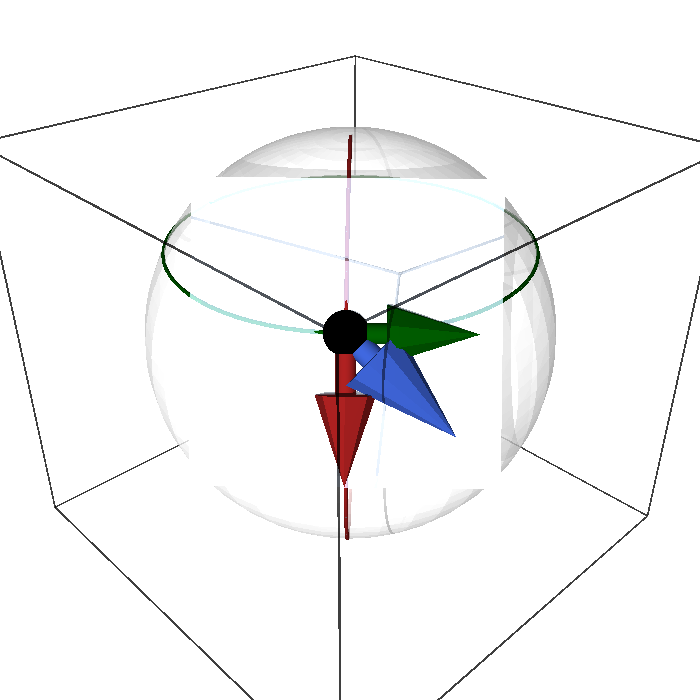
figures/tangent_vectors.sage.
The slanted curve of the examples is the subject of the first exercise, now computed with SageManifolds’ curves. It checks that the chart formula for the velocity reproduces the rate of change of the height along the curve.
Exercise 61 (The velocity of a curve) With SageManifolds, define the curve \gamma(t) = (\pi/3 + t, \pi/4 + 2t) on the sphere, compute its velocity as a tangent vector field along it, and check Equation 7 on the height function.
S2 = Manifold(2, "S^2"); A = S2.open_subset("A")
sph = A.chart(r"th:(0,pi):\theta ph:(0,2*pi):\varphi"); th, ph = sph[:]
t = var("t")
gamma = A.curve({sph: [pi/3 + t, pi/4 + 2*t]}, (t, -0.1, 0.1), name="gamma")
vel = gamma.tangent_vector_field()
print("velocity of gamma(t) = (pi/3 + t, pi/4 + 2t):", vel.display())
Z = A.scalar_field(cos(th), name="Z")
dZ_dt = diff(Z.expr().subs(th=pi/3 + t), t)
print("d/dt Z(gamma(t)) at t = 0:", dZ_dt.subs(t=0), " = X^th d_th Z + X^ph d_ph Z =", (1*diff(cos(th), th) + 2*diff(cos(th), ph)).subs(th=pi/3))
X = A.vector_field(1, 2, name="X")
print("the tangent vector X = d_th + 2 d_ph acting on Z:", X(Z).expr(), " at theta = pi/3:", X(Z).expr().subs(th=pi/3))Output:
velocity of gamma(t) = (pi/3 + t, pi/4 + 2t): gamma' = ∂/∂th + 2 ∂/∂ph
d/dt Z(gamma(t)) at t = 0: -1/2*sqrt(3) = X^th d_th Z + X^ph d_ph Z = -1/2*sqrt(3)
the tangent vector X = d_th + 2 d_ph acting on Z: -sin(th) at theta = pi/3: -1/2*sqrt(3)A great circle that is not a coordinate curve has a velocity whose components change along it. The second exercise computes them at one point, from the chart coordinates of the curve, and compares with the ambient derivative.
Exercise 62 (The velocity of a great circle) The great circle E(t) = (\cos t, \tfrac{1}{\sqrt2}\sin t, \tfrac{1}{\sqrt2}\sin t) lies on the unit sphere. Find its spherical coordinates (\theta(t), \varphi(t)) for 0 < t < \pi/2, the components of its velocity at t = \pi/4, and the value of the velocity on the height Z; compare with \frac{d}{dt}Z(E(t)).
\cos\theta = Z = \tfrac{1}{\sqrt2}\sin t and \tan\varphi = Y/X = \tfrac{1}{\sqrt2}\tan t. At t = \pi/4 the point is (\theta, \varphi) = (\pi/3, \arctan\tfrac{1}{\sqrt2}) and the velocity has components (\dot\theta, \dot\varphi) = (-\tfrac{1}{\sqrt3}, \tfrac{2\sqrt2}{3}). On the height it gives -\sin\theta\,\dot\theta = \tfrac{\sqrt3}{2} \cdot\tfrac{1}{\sqrt3} = \tfrac12, which is \frac{d}{dt}\big(\tfrac{1}{\sqrt2}\sin t\big) = \tfrac{1}{\sqrt2}\cos t at t = \pi/4:
S2 = Manifold(2, "S^2"); A = S2.open_subset("A")
sph = A.chart(r"th:(0,pi):\theta ph:(0,2*pi):\varphi"); th, ph = sph[:]
t = var("t")
Ecurve = vector([cos(t), sin(t)/sqrt(2), sin(t)/sqrt(2)])
th_t, ph_t = arccos(Ecurve[2]), arctan(tan(t)/sqrt(2)) # the chart coordinates of the curve, valid for 0 < t < pi/2
t0 = pi/4
p = (th_t.subs(t=t0).simplify_full(), ph_t.subs(t=t0).simplify_full())
c = (diff(th_t, t).subs(t=t0).simplify_full(), diff(ph_t, t).subs(t=t0).simplify_full())
print("the point (theta, phi) at t = pi/4:", p)
print("the velocity components (theta', phi') at t = pi/4:", c)
X = A.vector_field(c[0], c[1], name="X")
Z = A.scalar_field(cos(th), name="Z")
print("X(Z) at the point:", X(Z).expr().subs(th=p[0]).simplify_full(), "; dZ/dt along the curve:", diff(Ecurve[2], t).subs(t=t0))
E = vector([sin(th)*cos(ph), sin(th)*sin(ph), cos(th)])
amb = (c[0]*E.diff(th) + c[1]*E.diff(ph)).subs(th=p[0], ph=p[1])
print("ambient velocity c^i d_i E equals E'(pi/4):", bool(all((amb[k] - Ecurve.diff(t).subs(t=t0)[k]).simplify_full() == 0 for k in range(3))))Output:
the point (theta, phi) at t = pi/4: (1/3*pi, arctan(1/2*sqrt(2)))
the velocity components (theta', phi') at t = pi/4: (-1/3*sqrt(3), 2/3*sqrt(2))
X(Z) at the point: 1/2 ; dZ/dt along the curve: 1/2
ambient velocity c^i d_i E equals E'(pi/4): TrueThe velocity depends on the parametrisation, not only on the path. The third exercise shows how it rescales under a change of parameter, and deduces from a straight line in a chart that every tangent vector is a velocity.
Exercise 63 (Reparametrisation and every vector as a velocity) Let \gamma be a curve and \tilde\gamma(s) = \gamma(t(s)) a reparametrisation. Show that \dot{\tilde\gamma}(s) = t'(s)\,\dot\gamma(t(s)). Then show that every tangent vector X at p is the velocity at t = 0 of the curve with coordinates x^i(t) = x^i(p) + tX^i.
By the chain rule, \dot{\tilde\gamma}(s)(f) = \frac{d}{ds}f(\gamma(t(s))) = t'(s)\,\frac{d}{dt}f(\gamma(t)) \big|_{t = t(s)}, so the velocity is rescaled by t'(s) and reversed when t' < 0; the path is the same. For the second statement, the curve stays in the chart domain for small |t| because the domain is open, and by Equation 7 its velocity at t = 0 has components \dot x^i(0) = X^i, hence equals X = X^i\partial_i.
Coordinate basis and components
Every tangent vector at a point is a combination of finitely many special ones, and a chart supplies them: the velocities of its coordinate curves. The definition below names this basis, which turns tangent vectors into columns of numbers and makes calculations possible.
Definition 17 (Coordinate basis) In a chart the coordinate basis vectors at p are \partial_i = \partial/\partial x^i, the velocities of the coordinate curves (Definition 2): \partial_i sends f to its partial derivative \partial f/\partial x^i at p. They are linearly independent and every tangent vector at p is a combination of them.
Veriphy. Pending.
Lean. Pending.
Sage. Pending.
On the sphere the coordinate basis consists of the vectors tangent to the meridian and to the parallel. The first example identifies them with the columns of the Jacobian of the embedding and notes the length of each.
Example 61 (The basis on the sphere) \partial_\theta and \partial_\varphi, tangent to the meridian and the parallel through the point (Figure 7); as ambient vectors they are the columns Equation 9, and \partial_\varphi has ambient length \sin\theta.
The coordinate basis belongs to the chart, not only to the point. The second example compares the Cartesian and polar bases of the plane at the same point, where they are different pairs of arrows of different lengths.
Example 62 (The basis in polar coordinates) On the plane in polar coordinates, \partial_r points radially outward with unit length and \partial_\varphi points along the circle through the point with length r (Figure 5 of Real analysis): the basis depends on the chart, not only on the point, while in Cartesian coordinates \partial_x, \partial_y are the same two arrows everywhere.
A chart that covers the sphere near its south pole gives a third coordinate basis. The third example describes it in the stereographic chart, where the two basis vectors are orthogonal and of equal length but the length varies from point to point.
Example 63 (The stereographic basis) In the stereographic chart the basis vectors \partial_u, \partial_v are orthogonal with equal ambient length 2/(1 + u^2 + v^2) (Exercise 47); at the point with u^2 + v^2 = 1 (the equator) they have length 1 and far from the origin they shrink, since the chart compresses the neighbourhood of the north pole.
The lengths quoted in the third example are best checked by computing the ambient vectors directly. The first exercise does this with the Jacobian of the inverse stereographic map and finds where the chart stretches or compresses the sphere.
Exercise 64 (The stereographic basis in \mathbb{R}^3) With the embedding E(u, v) = (2u, 2v, u^2 + v^2 - 1)/(1 + u^2 + v^2) of the stereographic chart, compute with SageManifolds the ambient vectors \partial_u E and \partial_v E, check that they are tangent to the sphere and orthogonal, and find their common length at the origin, on the unit circle and at (u, v) = (3, 0).
Both vectors are orthogonal to the position vector and to each other, with |\partial_uE|^2 = |\partial_vE|^2 = 4/(1 + u^2 + v^2)^2: the length is 2 at the south pole u = v = 0, 1 on the equator u^2 + v^2 = 1 and \tfrac15 at (3, 0), where a unit step in the chart covers a short distance on the sphere:
P = Manifold(2, "U"); ste = P.chart("u v"); u, v = ste[:]
E3 = Manifold(3, "R^3"); C = E3.chart("X Y Z")
E = P.diff_map(E3, {(ste, C): [2*u/(1 + u**2 + v**2), 2*v/(1 + u**2 + v**2), (u**2 + v**2 - 1)/(1 + u**2 + v**2)]}, name="E")
J = E.jacobian_matrix(ste, C)
Eu, Ev = J.column(0), J.column(1)
pos = vector(E.expr(ste, C))
print("E lies on the unit sphere:", bool((pos*pos).simplify_full() == 1))
print("d_u E and d_v E are tangent (orthogonal to the position vector):", bool((Eu*pos).simplify_full() == 0 and (Ev*pos).simplify_full() == 0))
print("d_u E . d_v E = 0:", bool((Eu*Ev).simplify_full() == 0))
print("|d_u E|^2 = |d_v E|^2 =", (Eu*Eu).factor(), ":", bool((Eu*Eu - Ev*Ev).simplify_full() == 0))
print("length at the origin (south pole), on the unit circle (equator), at u = 3:", [sqrt((Eu*Eu).subs(u=a, v=0)) for a in [0, 1, 3]])Output:
E lies on the unit sphere: True
d_u E and d_v E are tangent (orthogonal to the position vector): True
d_u E . d_v E = 0: True
|d_u E|^2 = |d_v E|^2 = 4/(u^2 + v^2 + 1)^2 : True
length at the origin (south pole), on the unit circle (equator), at u = 3: [2, 1, 1/5]The torus is the third running surface, and its chart has a coordinate basis that can be found in two lines. The second exercise asks for its ambient vectors and their lengths, which differ on the outer and inner equators.
Exercise 65 (The coordinate basis of the torus) For the torus E(a, b) = ((R + r\cos a)\cos b, (R + r\cos a)\sin b, r\sin a) with R > r > 0, compute \partial_aE and \partial_bE, show that they are orthogonal, and find their lengths. Where is \partial_b longest?
\partial_aE = (-r\sin a\cos b, -r\sin a\sin b, r\cos a) and \partial_bE = (-(R + r\cos a)\sin b, (R + r\cos a)\cos b, 0). Their dot product is r\sin a(R + r\cos a)(\cos b\sin b - \sin b\cos b) = 0. The lengths are |\partial_a| = r and |\partial_b| = R + r\cos a: the b-circles are horizontal circles of radius R + r\cos a, longest on the outer equator a = 0 (radius R + r) and shortest on the inner one a = \pi (radius R - r).
The definition asserts that the coordinate basis vectors are linearly independent. The third exercise proves it by letting a vanishing combination act on the coordinate functions, the argument of Exercise 59.
Exercise 66 (Independence of the coordinate basis) Show that if a^i\partial_i = 0 at p then all a^i = 0, and deduce that T_pM has dimension exactly n once it is known that every tangent vector is a combination of the \partial_i.
Apply the zero vector a^i\partial_i to the coordinate function x^j: 0 = a^i\,\partial_ix^j = a^i\delta^j_i = a^j. So the n vectors \partial_1, \dots, \partial_n are independent, and since they span the tangent vectors at p they form a basis: the dimension is n, the number of coordinates, in every chart (Definition 6 of Linear algebra).
Having a basis, each tangent vector becomes a list of numbers, its components. The next definition records how these numbers change when the chart changes, the transformation law that every later object of the chapter generalises.
Definition 18 (Components of a tangent vector) Every tangent vector at p is a unique combination X = X^i\, \partial_i, \qquad X(f) = X^i\, \partial_i f , \tag{13} and the n numbers X^i are its components in the chart. Under a change of chart x \to x' the chain rule (Theorem 6 of Real analysis) gives \partial_i = \frac{\partial x'^j}{\partial x^i}\, \partial'_j, \qquad X'^j = \frac{\partial x'^j}{\partial x^i}\, X^i : \tag{14} the components transform with the Jacobian of the transition map while the vector itself does not change.
Veriphy. Pending.
Lean. Pending.
Sage. Pending.
The rotation field of the sphere has the simplest possible components in the spherical chart and less simple ones in the stereographic chart. The first example applies the transformation law to it and finds the generator of rotations of the chart plane.
Example 64 (Components in spherical and stereographic coordinates) The vector \partial_\varphi has components (0, 1) in spherical coordinates and, by Equation 14 with \partial u/\partial\varphi = -v, \partial v/\partial\varphi = u (Proposition 6), components (-v, u) in stereographic coordinates: \partial_\varphi = -v\,\partial_u + u\,\partial_v, the generator of rotations of the (u, v)-plane.
When the transition map is a translation, the Jacobian is the identity and components do not change. The second example is the circle with its two angle charts, the simplest case of the law.
Example 65 (Components on the circle) \partial_\varphi has component 1 in both angle charts, since \varphi' = \varphi + \text{const} on each piece of the overlap (Example 10): the Jacobian of the transition map is 1.
The third example goes the other way, writing the polar basis vectors of the plane in Cartesian components. The columns of the Jacobian appear directly as the answer, a pattern used throughout the chapter.
Example 66 (From polar to Cartesian) With x = r\cos\varphi, y = r\sin\varphi, the Jacobian Example 73 of Real analysis gives \partial_r = \cos\varphi\, \partial_x + \sin\varphi\,\partial_y and \partial_\varphi = -r\sin\varphi\,\partial_x + r\cos\varphi\,\partial_y: the columns of the Jacobian are the components of the polar basis vectors in the Cartesian basis (Exercise 68).
The rotation field of the first example is the subject of the first exercise, worked first by hand from the transformation law and then displayed with SageManifolds in the stereographic frame. The two partial derivatives of the transition map that enter are the ones computed in Example 12.
Exercise 67 (A vector in another chart) Using Equation 14, find the components of \partial_\varphi in the north stereographic chart, and confirm with SageManifolds by displaying the vector field in the stereographic frame.
With X^\theta = 0, X^\varphi = 1: X^u = \partial u/\partial\varphi = -\sin\theta\sin\varphi/(1 - \cos\theta) = -v and X^v = \partial v/\partial\varphi = u, so \partial_\varphi = -v\,\partial_u + u\,\partial_v. In SageManifolds:
S2 = Manifold(2, "S^2")
A = S2.open_subset("A"); U = S2.open_subset("U")
sph = A.chart(r"th:(0,pi):\theta ph:(0,2*pi):\varphi")
ste = U.chart("u v")
th, ph = sph[:]; u, v = ste[:]
tr = sph.transition_map(ste, (sin(th)*cos(ph)/(1 - cos(th)), sin(th)*sin(ph)/(1 - cos(th))))
tr.set_inverse(2*atan(1/sqrt(u**2 + v**2)), atan2(v, u), check=False)
W = A.intersection(U)
X = W.vector_field(name="X")
X[sph.frame().restrict(W), :] = [0, 1] # X = d/dphi
print("in spherical coordinates:", X.display(sph.frame().restrict(W), sph.restrict(W)))
print("in stereographic coordinates:", X.display(ste.frame().restrict(W), ste.restrict(W)))
c = X.comp(ste.frame().restrict(W), ste.restrict(W))
U_sph, V_sph = tr(th, ph) # u and v expressed in spherical coordinates
print("components (X^u, X^v) = (-v, u), checked in spherical coordinates:", bool((c[0].expr() + V_sph).simplify_full() == 0 and (c[1].expr() - U_sph).simplify_full() == 0))Output:
in spherical coordinates: X = ∂/∂ph
in stereographic coordinates: X = -v ∂/∂u + u ∂/∂v
components (X^u, X^v) = (-v, u), checked in spherical coordinates: TrueVeriphy. Pending.
Lean. The two derivatives \partial u/\partial\varphi = -v and \partial v/\partial\varphi = u are proved in Lean.
/-- `∂v/∂φ = u`: the second component of `∂_φ` in the stereographic chart. -/
theorem dphi_v (x : Fin 2 → ℝ) : pd 1 stereoV x = stereoU xKaluzaKlein.Geometry.dphi_v in KaluzaKlein/Geometry/VectorFields.lean, namespace KaluzaKlein.Geometry
Sage. Pending.
The second exercise runs the transformation law in both directions on the plane. Inverting the Jacobian brings out the factor 1/r that marks the failure of polar coordinates at the origin.
Exercise 68 (Polar basis vectors in Cartesian components) Express \partial_r and \partial_\varphi in terms of \partial_x and \partial_y, and conversely \partial_x in terms of \partial_r and \partial_\varphi.
By Equation 14 with x' = (x, y), x = (r, \varphi): \partial_r = \frac{\partial x}{\partial r} \partial_x + \frac{\partial y}{\partial r}\partial_y = \cos\varphi\,\partial_x + \sin\varphi\,\partial_y and \partial_\varphi = -r\sin\varphi\,\partial_x + r\cos\varphi\,\partial_y. Inverting the Jacobian (Example 77 of Real analysis), \partial_x = \cos\varphi\,\partial_r - \frac{\sin\varphi}{r}\,\partial_\varphi: the inverse Jacobian has the 1/r that makes \partial_x well defined only away from the origin, where polar coordinates fail.
The gradient field of the height has a surprisingly simple form in the stereographic chart. The third exercise finds it from the transformation law with SageManifolds, which turns a computation with half-angle formulas into one line.
Exercise 69 (The gradient field in the stereographic chart) Find the stereographic components of X = -\sin\theta\,\partial_\theta from Equation 14, using u = \cot(\theta/2)\cos\varphi, v = \cot(\theta/2)\sin\varphi, and confirm with SageManifolds. What do its integral curves look like in the chart plane?
\partial u/\partial\theta = -\cos\varphi/(2\sin^2(\theta/2)), so X^u = -\sin\theta\,\partial u/\partial\theta = 2\sin(\theta/2)\cos(\theta/2)\cos\varphi/(2\sin^2(\theta/2)) = \cot(\theta/2)\cos\varphi = u, and likewise X^v = v: X = u\,\partial_u + v\,\partial_v, the radial field of the plane. Its integral curves are rays leaving the origin (the south pole), the images of the meridians, which run towards the north pole at infinity:
S2 = Manifold(2, "S^2")
A = S2.open_subset("A"); U = S2.open_subset("U")
sph = A.chart(r"th:(0,pi):\theta ph:(0,2*pi):\varphi"); ste = U.chart("u v")
th, ph = sph[:]; u, v = ste[:]
tr = sph.transition_map(ste, (sin(th)*cos(ph)/(1 - cos(th)), sin(th)*sin(ph)/(1 - cos(th))))
tr.set_inverse(2*atan(1/sqrt(u**2 + v**2)), atan2(v, u), check=False)
W = A.intersection(U); fs = sph.frame().restrict(W); fu = ste.frame().restrict(W)
U_sph, V_sph = tr(th, ph) # u and v as functions of (theta, phi)
X = W.vector_field(name="X"); X[fs, :] = [-sin(th), 0]
print("in spherical coordinates:", X.display(fs, sph.restrict(W)))
print("in stereographic coordinates:", X.display(fu, ste.restrict(W)))
c = X.comp(fu, sph.restrict(W))
print("components (X^u, X^v) in terms of (theta, phi):", [c[i].expr().simplify_full() for i in range(2)])
print("(X^u, X^v) = (u, v):", bool((c[0].expr() - U_sph).simplify_full() == 0 and (c[1].expr() - V_sph).simplify_full() == 0))Output:
in spherical coordinates: X = -sin(th) ∂/∂th
in stereographic coordinates: X = u ∂/∂u + v ∂/∂v
components (X^u, X^v) in terms of (theta, phi): [-cos(ph)*sin(th)/(cos(th) - 1), -sin(ph)*sin(th)/(cos(th) - 1)]
(X^u, X^v) = (u, v): TrueAll the tangent vectors at one point form a vector space, and the next definition gives it a name. The picture is the tangent plane of an embedded surface, but the definition needs no ambient space.
Definition 19 (Tangent space) The tangent vectors at p form an n-dimensional vector space (Definition 1 of Linear algebra), the tangent space T_pM, with basis \partial_1, \dots, \partial_n. Its dimension equals that of the manifold, and tangent spaces at different points are different vector spaces: there is no canonical way to add a vector at p to a vector at q.
Veriphy. Pending.
Lean. Pending.
Sage. Pending.
For the sphere in \mathbb{R}^3 the tangent space is a plane through the origin parallel to the tangent plane at the point. The first example identifies it and its dimension.
Example 67 (T_pS^2 is the tangent plane) For the embedded sphere, T_pS^2 is identified with the plane through p spanned by \partial_\theta E and \partial_\varphi E, the plane perpendicular to the position vector p (Figure 7), of dimension 2.
Groups of matrices are manifolds, and their tangent spaces at the identity are spaces of matrices. The second example describes the one of SU(2), which is the Lie algebra studied later in the book.
Example 68 (The tangent space of SU(2) at the identity) T_eSU(2) is three-dimensional; its elements are the velocities \frac{d}{dt}e^{tA}|_{t=0} = A of one-parameter families of matrices, the traceless anti-Hermitian matrices A: this tangent space is the Lie algebra \mathfrak{su}(2) of Lie algebras.
Euclidean space is the one manifold whose tangent spaces are all canonically the same. The third example explains the identification and why it fails elsewhere, which is the motivation for connections.
Example 69 (T_p\mathbb{R}^n) Every tangent space of \mathbb{R}^n is a copy of \mathbb{R}^n itself, with \partial_i corresponding to the i-th standard basis vector e_i; it is only in \mathbb{R}^n that vectors at different points can be compared without further structure. On a general manifold that comparison needs a connection (Section 1.4.1).
A change of chart acts on a single tangent space as a change of basis of a two-dimensional vector space. The first exercise carries it out at one point of the plane with numbers, in both directions.
Exercise 70 (A change of basis in one tangent space) At the point (x, y) = (1, 1) of the plane, express \partial_r and \partial_\varphi in the Cartesian basis, write X = 3\,\partial_x + \partial_y in the polar basis, and check the result.
At (1, 1), r = \sqrt2 and \varphi = \pi/4, so by Example 66 \partial_r = \tfrac{1}{\sqrt2} (\partial_x + \partial_y) and \partial_\varphi = -\partial_x + \partial_y. By the inverse law, X^r = (xX^x + yX^y)/r = 4/\sqrt2 = 2\sqrt2 and X^\varphi = (-yX^x + xX^y)/r^2 = (-3 + 1)/2 = -1. Check: 2\sqrt2 \cdot \tfrac{1}{\sqrt2}(\partial_x + \partial_y) - (-\partial_x + \partial_y) = 3\,\partial_x + \partial_y.
The second exercise computes the tangent spaces of two matrix groups, SO(2) and SO(3), at the identity. It shows that the defining equation of the group becomes, after differentiation, a linear condition on the velocity.
Exercise 71 (Tangent spaces of rotation groups) Differentiate R(t)^{\mathsf T}R(t) = 1 at t = 0 for a curve of rotation matrices with R(0) = 1, and conclude that T_1SO(n) consists of antisymmetric matrices. Give a basis for n = 2 and the dimension for n = 3.
With A = \dot R(0), the derivative of R^{\mathsf T}R = 1 at t = 0 is A^{\mathsf T} + A = 0: velocities at the identity are antisymmetric. Conversely R(t) = e^{tA} is a curve of rotations with velocity A for every antisymmetric A. For n = 2 the space is spanned by \begin{pmatrix} 0 & -1 \\ 1 & 0 \end{pmatrix}, the velocity of the rotation by the angle t, so SO(2) is one-dimensional; for n = 3 an antisymmetric matrix has three free entries, and \dim SO(3) = 3, the three generators L_a of Lie algebras.
The definition stresses that tangent spaces at different points are different spaces. The third exercise shows what goes wrong if one adds vectors at two points by adding their components: the answer depends on the chart.
Exercise 72 (Adding vectors at different points) Take p = (1, 0) and q = (-1, 0) in the plane and the vector \partial_\varphi at each. Add their components in the polar chart and in the Cartesian chart, and compare the two “sums”.
In polar components both vectors are (0, 1), so the polar “sum” is (0, 2), that is 2\partial_\varphi, which has length 2 at either point. In Cartesian components, \partial_\varphi = -y\,\partial_x + x\,\partial_y is \partial_y at p and -\partial_y at q, so the Cartesian “sum” is 0. The two procedures disagree, so neither defines an operation on vectors: comparing vectors at different points needs extra structure, a connection (Section 1.4.1), which in \mathbb{R}^n happens to be the Cartesian one.
The two propositions that close the section record, as general statements, the two computations used most often above: a tangent vector acting on the height function, and the stereographic components of the rotation field. The first one is the general-point version of Example 59.
Proposition 5 (A velocity acting on the height) For X = \partial_\theta + 2\,\partial_\varphi, X(Z) = -\sin\theta with Z = \cos\theta.
Veriphy. Pending.
Lean. KaluzaKlein.Geometry.velocity_on_height.
/-- The velocity `∂_θ + 2 ∂_φ` applied to the height gives `−sin θ`. -/
theorem velocity_on_height (x : Fin 2 → ℝ) : (∑ i, pd i heightZ x * (![1, 2] : Fin 2 → ℝ) i) = -Real.sin (x 0)KaluzaKlein.Geometry.velocity_on_height in KaluzaKlein/Geometry/VectorFields.lean, namespace KaluzaKlein.Geometry
Sage. Pending.
Since X(Z) = -\sin\theta does not depend on \varphi, it can be read off on any meridian. The first example evaluates it at a few latitudes and finds where the vector moves horizontally.
Example 70 (The value at a few points) At \theta = \pi/3, X(Z) = -\tfrac{\sqrt3}{2}, the number of Example 59; on the equator \theta = \pi/2 it is -1, the largest possible rate of descent for a vector whose \theta-component is 1; near the poles it tends to 0, since the height is stationary there. The component 2 along \partial_\varphi never contributes, because Z is constant on parallels.
The proposition is a sum over components, and writing the sum out term by term shows which entries matter and which drop out. The second example does so for an arbitrary tangent vector, not only for the one of the proposition.
Example 71 (The value as a sum over components) For X = X^\theta\partial_\theta + X^\varphi\partial_\varphi, Equation 13 gives X(Z) = X^\theta\,\partial_\theta Z + X^\varphi\,\partial_\varphi Z. With Z = \cos\theta the partial derivatives are \partial_\theta Z = -\sin\theta and \partial_\varphi Z = 0 (Proposition 8), so X(Z) = -X^\theta\sin\theta for every X. For the components (1, 2) of the proposition this is -\sin\theta; for (3, -5) it is -3\sin\theta; and for any multiple of \partial_\varphi it is 0.
Veriphy. Pending.
Lean. In the Lean statement velocity_on_height, a chart point is x : Fin 2 → ℝ with x 0 = \theta and x 1 =
\varphi, and the sum ∑ i, pd i heightZ x * ![1, 2] i equals -Real.sin (x 0). Here heightZ x = Real.cos (x 0) is the height in the chart, pd i is the partial derivative with respect to the i-th coordinate, and ![1, 2] is the component vector of X: the sum is X^i\partial_iZ. The proof rewrites with the two partial derivatives of dZ_components (Proposition 8) and sums.
Sage. Pending.
The number X(Z) depends on X only through a linear function of its components, which will be the differential of Z. The third example anticipates this and the gradient field that it produces with a metric.
Example 72 (Towards the differential of the height) For any X = a\,\partial_\theta + b\,\partial_\varphi, X(Z) = -a\sin\theta: a linear function of (a, b) with coefficients (-\sin\theta, 0). These two numbers are the components of the differential dZ (Proposition 8), the cotangent vector of Section 1.2.3, and raising its index with the round metric gives the gradient field -\sin\theta\,\partial_\theta of Figure 8 (Proposition 14).
The general vector at a point acts on the height through its \theta-component alone. The first exercise makes this explicit and finds the vectors that leave the height unchanged.
Exercise 73 (Which vectors preserve the height?) For X = a\,\partial_\theta + b\,\partial_\varphi compute X(Z) and X(Z^2), and describe the tangent vectors with X(Z) = 0 at a point that is not a pole.
X(Z) = -a\sin\theta and, by the Leibniz rule, X(Z^2) = 2Z\,X(Z) = -2a\sin\theta\cos\theta. Away from the poles \sin\theta \neq 0, so X(Z) = 0 exactly when a = 0: the vectors tangent to the parallel through the point, multiples of \partial_\varphi, along which the height is constant.
The height is one of three ambient coordinate functions, and the same vector acts on all three. The second exercise computes the three values with SageManifolds and recognises them as the ambient components of the vector.
Exercise 74 (The vector acting on the three ambient coordinates) With SageManifolds, apply X = \partial_\theta + 2\,\partial_\varphi to the functions X_{\rm amb} = \sin\theta\cos\varphi, Y_{\rm amb} = \sin\theta\sin\varphi and Z = \cos\theta, and compare the three results with the ambient vector \partial_\theta E + 2\,\partial_\varphi E of Example 60.
The three numbers are exactly the components of the ambient vector, since X(E^k) = X^i\partial_iE^k; the third is -\sin\theta, the proposition:
S2 = Manifold(2, "S^2"); A = S2.open_subset("A")
sph = A.chart(r"th:(0,pi):\theta ph:(0,2*pi):\varphi"); th, ph = sph[:]
E = vector([sin(th)*cos(ph), sin(th)*sin(ph), cos(th)])
X = A.vector_field(1, 2, name="X")
vals = [X(A.scalar_field(E[k])).expr() for k in range(3)]
print("(X(X_amb), X(Y_amb), X(Z)) =", vals)
amb = E.diff(th) + 2*E.diff(ph)
print("equal to the ambient vector d_theta E + 2 d_phi E:", bool(all((vals[k] - amb[k]).simplify_full() == 0 for k in range(3))))
print("X(Z) = -sin(theta) (the proposition):", bool(vals[2] == -sin(th)))
print("at (theta, phi) = (pi/3, pi/4):", [ex.subs(th=pi/3, ph=pi/4).simplify_full() for ex in vals])Output:
(X(X_amb), X(Y_amb), X(Z)) = [cos(ph)*cos(th) - 2*sin(ph)*sin(th), cos(th)*sin(ph) + 2*cos(ph)*sin(th), -sin(th)]
equal to the ambient vector d_theta E + 2 d_phi E: True
X(Z) = -sin(theta) (the proposition): True
at (theta, phi) = (pi/3, pi/4): [-1/2*sqrt(3)*sqrt(2) + 1/4*sqrt(2), 1/2*sqrt(3)*sqrt(2) + 1/4*sqrt(2), -1/2*sqrt(3)]The proposition concerns one function of the height. The third exercise generalises it to every function of the height, which is the chain rule in the language of tangent vectors.
Exercise 75 (Functions of the height) Let h be a smooth function of one variable. Show that X(h(Z)) = h'(Z)\,X(Z) = -h'(\cos\theta)\sin\theta for X = \partial_\theta + 2\,\partial_\varphi, and evaluate it for h(Z) = Z^3 at \theta = \pi/3.
In the chart h(Z) = h(\cos\theta), so X(h(Z)) = \partial_\theta h(\cos\theta) + 2\,\partial_\varphi h(\cos\theta) = -h'(\cos\theta)\sin\theta, which is h'(Z)X(Z) by the proposition. For h(Z) = Z^3, h' = 3Z^2, and at \theta = \pi/3: -3 \cdot \tfrac14 \cdot \tfrac{\sqrt3}{2} = -\tfrac{3\sqrt3}{8}.
The second proposition records the stereographic components of the rotation field as two partial derivatives of the transition map. It is the computation behind Example 64 and Exercise 67.
Proposition 6 (The rotation field in stereographic coordinates) \partial u/\partial\varphi = -v and \partial v/\partial\varphi = u for u = \sin\theta\cos\varphi/(1 - \cos\theta), v = \sin\theta\sin\varphi/(1 - \cos\theta).
Veriphy. Pending.
Lean. KaluzaKlein.Geometry.dphi_u and KaluzaKlein.Geometry.dphi_v.
/-- `∂u/∂φ = −v`: the first component of `∂_φ` in the stereographic chart. -/
theorem dphi_u (x : Fin 2 → ℝ) : pd 1 stereoU x = -stereoV xKaluzaKlein.Geometry.dphi_u in KaluzaKlein/Geometry/VectorFields.lean, namespace KaluzaKlein.Geometry
Sage. Pending.
The two derivatives can be evaluated at a point of the equator, where the chart is easiest to picture. The first example does this at two points a quarter turn apart.
Example 73 (Two points of the equator) At (\theta, \varphi) = (\pi/2, 0), u = 1 and v = 0, so (\partial u/\partial\varphi, \partial v/\partial\varphi) = (-v, u) = (0, 1): there \partial_\varphi = \partial_v. At (\pi/2, \pi/2), (u, v) = (0, 1) and \partial_\varphi = -\partial_u. In both cases the vector is tangent to the unit circle of the chart plane, the image of the equator.
The two derivatives are short enough to be computed by hand, and doing so shows why the factor 1/(1 - \cos\theta) plays no role. The second example differentiates and draws a consequence for the distance from the chart origin.
Example 74 (The derivatives by hand) In u = \sin\theta\cos\varphi/(1 - \cos\theta) only \cos\varphi depends on \varphi, so \partial u/\partial\varphi = -\sin\theta\sin\varphi/(1 - \cos\theta) = -v; likewise \partial v/\partial\varphi = \sin\theta\cos\varphi/(1 - \cos\theta) = u. Consequently \partial_\varphi(u^2 + v^2) = 2u(-v) + 2v\,u = 0: the rotation field does not change the distance \sqrt{u^2 + v^2} = \cot(\theta/2) from the chart origin, and its flow lines are the circles about it, the images of the parallels. The formulas hold wherever the chart is defined, \theta \neq 0.
Veriphy. Pending.
Lean. In Lean, stereoU x is Real.sin (x 0) * Real.cos (x 1) / (1 - Real.cos (x 0)), the coordinate u as a function of (\theta, \varphi) = (x 0, x 1), and stereoV x is the same with Real.sin (x 1). dphi_u states pd 1 stereoU x = -stereoV x, the derivative with respect to the second coordinate \varphi, and dphi_v states pd 1 stereoV x = stereoU x. There is no hypothesis: at \theta = 0, where the chart fails, Lean’s convention that division by zero gives zero makes both sides vanish.
Sage. Pending.
The field -v\,\partial_u + u\,\partial_v generates rotations of the chart plane about its origin. The third example connects this to the rotations of the sphere and to the two other rotation fields, whose stereographic form is found in Exercise 77.
Example 75 (Rotations of the chart plane) The integral curves of -v\,\partial_u + u\,\partial_v are the circles u^2 + v^2 = \text{const}, the images of the parallels, traversed at unit angular speed: rotating the sphere about its axis rotates the stereographic plane about the origin. Rotations about the other two axes do not preserve the chart’s centre, and their generators K_1, K_2 (Section 1.5.2) have quadratic components in (u, v).
The proposition differentiates the transition map in \varphi. The first exercise differentiates it in \theta and finds the stereographic components of \partial_\theta, which point radially in the chart plane.
Exercise 76 (The meridian vector in the stereographic chart) Show that \partial_\theta = -\dfrac{1 + \rho^2}{2\rho}\,(u\,\partial_u + v\,\partial_v) with \rho^2 = u^2 + v^2, using \rho = \cot(\theta/2), and confirm with SageManifolds.
u = \rho\cos\varphi, v = \rho\sin\varphi with \rho = \cot(\theta/2), so \partial_\theta u = \rho'\cos\varphi with \rho' = -1/(2\sin^2(\theta/2)) = -(1 + \rho^2)/2. Hence \partial_\theta = \rho'(\cos\varphi\,\partial_u + \sin\varphi\,\partial_v) = -\tfrac{1 + \rho^2}{2\rho}(u\,\partial_u + v\,\partial_v), pointing towards the origin, the south pole, as \theta increases. On the equator \rho = 1 and at (u, v) = (1, 0) this is -\partial_u:
S2 = Manifold(2, "S^2")
A = S2.open_subset("A"); U = S2.open_subset("U")
sph = A.chart(r"th:(0,pi):\theta ph:(0,2*pi):\varphi"); ste = U.chart("u v")
th, ph = sph[:]; u, v = ste[:]
tr = sph.transition_map(ste, (sin(th)*cos(ph)/(1 - cos(th)), sin(th)*sin(ph)/(1 - cos(th))))
tr.set_inverse(2*atan(1/sqrt(u**2 + v**2)), atan2(v, u), check=False)
W = A.intersection(U); fs = sph.frame().restrict(W); fu = ste.frame().restrict(W)
U_sph, V_sph = tr(th, ph) # u and v as functions of (theta, phi)
X = W.vector_field(name="X"); X[fs, :] = [1, 0]
print("in stereographic coordinates:", X.display(fu, ste.restrict(W)))
c = [ci.expr() for ci in X[fu, :, ste.restrict(W)]]
rho = sqrt(u**2 + v**2); lam = -(1 + rho**2)/(2*rho)
print("X^u = -(1 + rho^2)/(2 rho) u:", bool((c[0] - lam*u).simplify_full() == 0))
print("X^v = -(1 + rho^2)/(2 rho) v:", bool((c[1] - lam*v).simplify_full() == 0))
print("on the equator rho = 1, e.g. at (u, v) = (1, 0): (X^u, X^v) =", (c[0].subs(u=1, v=0), c[1].subs(u=1, v=0)))Output:
in stereographic coordinates: X = -1/2*(u^3 + u*v^2 + u)/sqrt(u^2 + v^2) ∂/∂u - 1/2*(v^3 + (u^2 + 1)*v)/sqrt(u^2 + v^2) ∂/∂v
X^u = -(1 + rho^2)/(2 rho) u: True
X^v = -(1 + rho^2)/(2 rho) v: True
on the equator rho = 1, e.g. at (u, v) = (1, 0): (X^u, X^v) = (-1, 0)The stereographic chart is centred at the south pole, and the rotation fields about horizontal axes move that point. The second exercise finds their components with SageManifolds and checks that they are regular where the spherical chart is not.
Exercise 77 (The three rotation fields in the stereographic chart) The rotation fields K_1 = -\sin\varphi\,\partial_\theta - \cot\theta\cos\varphi\,\partial_\varphi, K_2 = \cos\varphi\,\partial_\theta - \cot\theta\sin\varphi\,\partial_\varphi and K_3 = \partial_\varphi are singular at the poles in the spherical chart. Compute their stereographic components with SageManifolds.
K_1 = uv\,\partial_u + \tfrac12(1 - u^2 + v^2)\,\partial_v, K_2 = -\tfrac12(1 + u^2 - v^2)\,\partial_u - uv\,\partial_v and K_3 = -v\,\partial_u + u\,\partial_v: polynomial components, smooth at the south pole u = v = 0, where K_1 = \tfrac12\partial_v and K_2 = -\tfrac12\partial_u do not vanish, while K_3 does:
S2 = Manifold(2, "S^2")
A = S2.open_subset("A"); U = S2.open_subset("U")
sph = A.chart(r"th:(0,pi):\theta ph:(0,2*pi):\varphi"); ste = U.chart("u v")
th, ph = sph[:]; u, v = ste[:]
tr = sph.transition_map(ste, (sin(th)*cos(ph)/(1 - cos(th)), sin(th)*sin(ph)/(1 - cos(th))))
tr.set_inverse(2*atan(1/sqrt(u**2 + v**2)), atan2(v, u), check=False)
W = A.intersection(U); fs = sph.frame().restrict(W); fu = ste.frame().restrict(W)
U_sph, V_sph = tr(th, ph) # u and v as functions of (theta, phi)
K = [W.vector_field(name="K%d" % a) for a in (1, 2, 3)]
K[0][fs, :] = [-sin(ph), -cos(th)/sin(th)*cos(ph)]
K[1][fs, :] = [cos(ph), -cos(th)/sin(th)*sin(ph)]
K[2][fs, :] = [0, 1]
expected = [[u*v, (1 - u**2 + v**2)/2], [-(1 + u**2 - v**2)/2, -u*v], [-v, u]]
for a in range(3):
print(K[a].display(fu, ste.restrict(W)))
c = [ci.expr() for ci in K[a][fu, :, ste.restrict(W)]]
print(" components equal", expected[a], ":", all(bool((c[i] - expected[a][i]).simplify_full() == 0) for i in range(2)))Output:
K1 = u*v ∂/∂u + (-1/2*u^2 + 1/2*v^2 + 1/2) ∂/∂v
components equal [u*v, -1/2*u^2 + 1/2*v^2 + 1/2] : True
K2 = (-1/2*u^2 + 1/2*v^2 - 1/2) ∂/∂u - u*v ∂/∂v
components equal [-1/2*u^2 + 1/2*v^2 - 1/2, -u*v] : True
K3 = -v ∂/∂u + u ∂/∂v
components equal [-v, u] : TrueThe north stereographic chart misses the north pole; the south one, projecting from the south pole, misses the south pole. The third exercise repeats the proposition in that chart and explains why the answer has the same form.
Exercise 78 (The south stereographic chart) For u' = \sin\theta\cos\varphi/(1 + \cos\theta), v' = \sin\theta\sin\varphi/(1 + \cos\theta), compute \partial u'/\partial\varphi and \partial v'/\partial\varphi and write \partial_\varphi in the south chart.
The factor \sin\theta/(1 + \cos\theta) does not depend on \varphi, so \partial u'/\partial\varphi = -\sin\theta \sin\varphi/(1 + \cos\theta) = -v' and \partial v'/\partial\varphi = u': again \partial_\varphi = -v'\partial_{u'} + u'\partial_{v'}. Any chart of the form (\rho(\theta)\cos\varphi, \rho(\theta)\sin\varphi) gives this answer, because \varphi enters only through (\cos\varphi, \sin\varphi), which rotates at unit speed.
Vector fields
A tangent vector lives at one point; a vector field chooses one at every point, smoothly. Vector fields are the infinitesimal motions of a manifold: the rotation field of the sphere generates rotations about an axis, and the three rotation fields together generate the whole rotation group, which is the mechanism behind the gauge symmetries of later chapters. This chapter defines vector fields, their commutator, their integral curves and frames.
Vector fields and their brackets
A single tangent vector is a directional derivative at one point; choosing one at every point gives an operator that differentiates functions everywhere at once. The definition below asks that the choice be smooth, and the picture is a field of arrows on the surface, as in the figure after the examples.
Definition 20 (Vector field) A vector field X assigns a tangent vector X(p) \in T_pM to every point p, with smooth components X^i(x) in every chart. It acts on a smooth function f by X(f) = X^i\partial_i f, giving a new smooth function, and this action is linear and obeys the Leibniz rule X(fg) = X(f)g + fX(g).
Veriphy. Pending.
Lean. Pending.
Sage. Pending.
The first example is the field of the sphere that generates rotations about its axis. Its components are constant in the spherical chart, yet it vanishes at the poles, a first sign that components alone can mislead.
Example 76 (The rotation field on the sphere) \partial_\varphi, tangent to the parallels, is a vector field on the sphere minus the poles that extends to the poles by zero, since its ambient length is \sin\theta (Figure 8): it generates rotations about the Z-axis. In Section 1.5.2 it is one of three fields generating all rotations, and in Part IV those fields become the gauge fields of SU(2).
The second field points along the meridians and is the gradient of the height. It also vanishes at both poles, and the example quotes the theorem saying that some zero is unavoidable on the sphere.
Example 77 (A field with a zero) -\sin\theta\,\partial_\theta points along the meridians towards the north pole and vanishes at both poles (Figure 8); it is the gradient of the height Z, obtained from dZ by raising the index with the metric (Section 1.3.1). Every vector field on S^2 vanishes somewhere (the hairy ball theorem, Exercise 79), unlike on the circle or the torus.
On the plane and the circle there are fields without zeros as well as fields with them. The third example lists the constant, radial and rotation fields of the plane, which serve as test cases for every later notion.
Example 78 (Fields on the plane and the circle) \partial_x (a constant field), x\partial_x + y\partial_y (the radial field, vanishing at the origin) and -y\partial_x + x\partial_y (the rotation field of the plane, which is \partial_\varphi in polar coordinates) are vector fields on \mathbb{R}^2; \partial_\varphi is a nowhere-vanishing field on the circle.
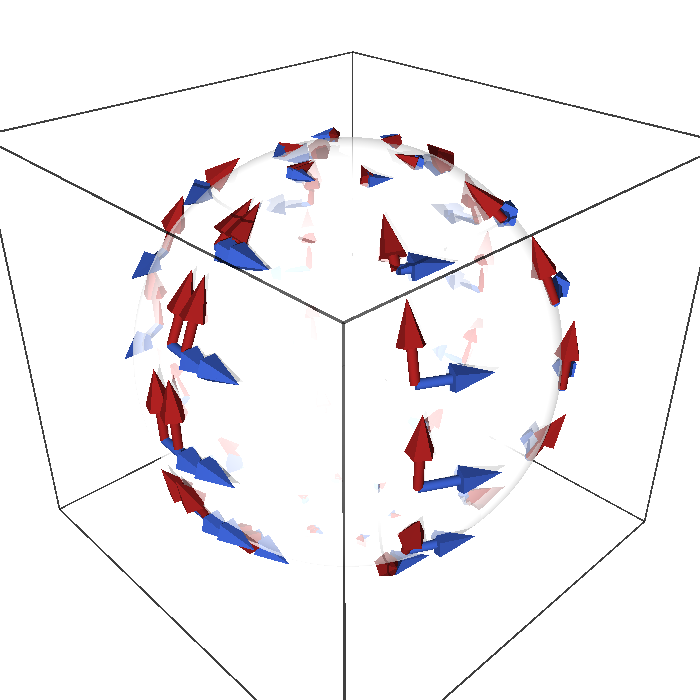
figures/sphere_vector_fields.sage.
Interactive figure (drag to rotate or zoom); the static version is above.
The two fields of the figure vanish at the poles although their spherical components never vanish together. The first exercise asks why, and why no combination of them can avoid zeros.
Exercise 79 (Fields that must vanish) Explain why \partial_\varphi and -\sin\theta\,\partial_\theta both vanish at the poles although their components in the spherical chart are (0, 1) and (-\sin\theta, 0), and why a nowhere-vanishing field on the sphere cannot be built from them.
The components are chart quantities and the chart degenerates at the poles; the ambient length of \partial_\varphi is \sin\theta, which vanishes there, and the length of -\sin\theta\,\partial_\theta is \sin\theta as well. A combination a\,\partial_\varphi + b\,\sin\theta\,\partial_\theta with constant a, b still vanishes at both poles. The hairy ball theorem states that every continuous vector field on S^2 has a zero; the two fields above are instances, and the circle and the torus, which admit \partial_\varphi and \partial_a, \partial_b, show that the obstruction is specific to the sphere’s topology.
The rotation field \partial_\varphi has two partners that generate rotations about the other two axes. The second exercise pushes all three to \mathbb{R}^3 with SageManifolds and identifies them with the familiar velocity fields of rigid rotations.
Exercise 80 (The three rotation fields in \mathbb{R}^3) Let K_1 = -\sin\varphi\,\partial_\theta - \cot\theta\cos\varphi\,\partial_\varphi, K_2 = \cos\varphi\,\partial_\theta - \cot\theta\sin\varphi\,\partial_\varphi and K_3 = \partial_\varphi. With SageManifolds, compute their ambient vectors through the Jacobian of the embedding and show that K_a is the cross product e_a \times p of the a-th axis with the position vector p. Where does each field vanish?
Each ambient vector equals e_a \times p, the velocity of a rigid rotation about the a-th axis at unit angular speed; it is orthogonal to p, hence tangent, and its squared length 1 - (p \cdot e_a)^2 vanishes exactly at the two points \pm e_a where the axis meets the sphere:
S2 = Manifold(2, "S^2"); A = S2.open_subset("A")
sph = A.chart(r"th:(0,pi):\theta ph:(0,2*pi):\varphi"); th, ph = sph[:]
K1 = A.vector_field(-sin(ph), -cos(th)/sin(th)*cos(ph), name="K1")
K2 = A.vector_field(cos(ph), -cos(th)/sin(th)*sin(ph), name="K2")
K3 = A.vector_field(0, 1, name="K3")
K = [K1, K2, K3]
E = vector([sin(th)*cos(ph), sin(th)*sin(ph), cos(th)])
J = jacobian(E, (th, ph))
e = [vector([1, 0, 0]), vector([0, 1, 0]), vector([0, 0, 1])]
for a in range(3):
amb = J * vector([K[a][i].expr() for i in range(2)])
print("K%d as an ambient vector equals e_%d x p:" % (a + 1, a + 1), bool(all((amb[k] - e[a].cross_product(E)[k]).simplify_full() == 0 for k in range(3))))
print(" it is tangent, (K%d . p) = 0:" % (a + 1), bool((amb*E).simplify_full() == 0), "; its squared length:", (amb*amb).simplify_full())Output:
K1 as an ambient vector equals e_1 x p: True
it is tangent, (K1 . p) = 0: True ; its squared length: -cos(ph)^2*sin(th)^2 + 1
K2 as an ambient vector equals e_2 x p: True
it is tangent, (K2 . p) = 0: True ; its squared length: -sin(ph)^2*sin(th)^2 + 1
K3 as an ambient vector equals e_3 x p: True
it is tangent, (K3 . p) = 0: True ; its squared length: sin(th)^2A vector field acts on functions, and the Leibniz rule holds pointwise everywhere. The third exercise applies the rotation field of the plane to a product and sees one factor drop out because it is invariant.
Exercise 81 (The rotation field on a product) For X = -y\,\partial_x + x\,\partial_y, f = x^2 + y^2 and g = x, compute X(f), X(g) and X(fg), and explain why X(fg) = f\,X(g).
X(f) = -y \cdot 2x + x \cdot 2y = 0, X(g) = -y, and X(fg) = X(x^3 + xy^2) = -y(3x^2 + y^2) + x \cdot 2xy = - x^2y - y^3 = -(x^2 + y^2)\,y. By the Leibniz rule X(fg) = X(f)\,g + f\,X(g) = f\,X(g) because X(f) = 0: the squared radius is constant along the circles that the rotation field follows, so it behaves as a constant factor.
Two vector fields can be applied one after the other, but the result is a second-order operator. The next definition shows that the commutator of the two orders is again a vector field, and this bracket measures how far the two flows fail to commute.
Definition 21 (Lie bracket) The Lie bracket (or commutator) of two vector fields is the vector field [X, Y] acting on functions as [X, Y](f) = X(Y(f)) - Y(X(f)); the second derivatives cancel, and in a chart [X, Y]^k = X^l\, \partial_l Y^k - Y^l\, \partial_l X^k . \tag{15} It is antisymmetric, [Y, X] = -[X, Y], and satisfies the Jacobi identity [X, [Y, Z]] + [Y, [Z, X]] + [Z, [X, Y]] = 0.
Veriphy. Pending.
Lean. In the Lean library the bracket is KaluzaKlein.lieBracket, defined by the chart formula Equation 15.
Sage. Pending.
Coordinate fields always commute, because partial derivatives do. The first example notes this and finds a pair of non-coordinate fields that commute as well.
Example 79 (Commuting fields) [\partial_\theta, \partial_\varphi] = 0, as for any two coordinate fields (partial derivatives commute); and [\partial_\varphi, -\sin\theta\,\partial_\theta] = 0, since neither field’s components depend on \varphi and \partial_\varphi has constant components (Proposition 7, Exercise 82).
Multiplying a field by a function changes its brackets. The second example computes the simplest non-zero bracket on the sphere from the chart formula, which the proposition at the end of the section records.
Example 80 (A non-zero bracket) [\partial_\theta, \sin\theta\,\partial_\varphi] = \cos\theta\,\partial_\varphi: by Equation 15 only the term \partial_\theta(\sin\theta) survives (Proposition 7). Rescaling a field by a function changes its brackets.
The three rotation fields of the sphere do not commute, and their brackets reproduce those of the rotation generators. The third example states this, the first appearance of a Lie algebra of vector fields.
Example 81 (The rotation fields close into a Lie algebra) The three rotation fields of the sphere, K_1, K_2, K_3 with K_3 = \partial_\varphi, satisfy [K_a, K_b] = - \epsilon_{abc} K_c (Section 1.5.2): their brackets reproduce the structure constants of \mathfrak{so}(3), the first example of a Lie algebra of vector fields.
The brackets of the examples are computed in the first exercise with SageManifolds, which also tests that the chart formula agrees with the definition as a commutator of derivations. The same two brackets return as a proposition at the end of the section.
Exercise 82 (Brackets with SageManifolds) Compute [\partial_\varphi, -\sin\theta\,\partial_\theta] and [\partial_\theta, \sin\theta\,\partial_\varphi] with SageManifolds’ bracket, and check on a generic function that [X, Y](f) = X(Y(f)) - Y(X(f)).
S2 = Manifold(2, "S^2"); A = S2.open_subset("A")
sph = A.chart(r"th:(0,pi):\theta ph:(0,2*pi):\varphi"); th, ph = sph[:]
rot = A.vector_field(0, 1, name="rot") # d/dphi
grad = A.vector_field(-sin(th), 0, name="gradZ") # -sin(theta) d/dtheta
dth = A.vector_field(1, 0, name="dth") # d/dtheta
Y = A.vector_field(0, sin(th), name="Y") # sin(theta) d/dphi
print("[rot, gradZ] =", rot.bracket(grad).display())
print("[d_theta, sin(theta) d_phi] =", dth.bracket(Y).display())
f = A.scalar_field(function("f")(th, ph), name="f")
lhs = dth(Y(f)) - Y(dth(f))
print("the bracket acts on functions as X(Y f) - Y(X f):", bool((lhs - dth.bracket(Y)(f)).expr().simplify_full() == 0))
print("brackets are antisymmetric, [Y, d_theta] = -[d_theta, Y]:", Y.bracket(dth) == -dth.bracket(Y))Output:
[rot, gradZ] = [rot,gradZ] = 0
[d_theta, sin(theta) d_phi] = [dth,Y] = cos(th) ∂/∂ph
the bracket acts on functions as X(Y f) - Y(X f): True
brackets are antisymmetric, [Y, d_theta] = -[d_theta, Y]: TrueVeriphy. Pending.
Lean. The first bracket is also proved in Lean.
/-- `[∂_φ, −sin θ ∂_θ] = 0`: the rotation field commutes with the gradient of the height. -/
theorem bracket_dphi_gradZ (k : Fin 2) (x : Fin 2 → ℝ) : lieBracket dphi gradZ k x = 0KaluzaKlein.Geometry.bracket_dphi_gradZ in KaluzaKlein/Geometry/VectorFields.lean, namespace KaluzaKlein.Geometry
Sage. Pending.
How does the bracket react when the fields are rescaled by functions? The second exercise derives the general rule from Equation 15, which explains Example 80 at once.
Exercise 83 (Brackets of rescaled fields) Show that [fX, gY] = fg\,[X, Y] + f\,X(g)\,Y - g\,Y(f)\,X for functions f, g, and deduce [\partial_\theta, \sin\theta\,\partial_\varphi] = \cos\theta\,\partial_\varphi from [\partial_\theta, \partial_\varphi] = 0.
On a function h: fX(gY(h)) = fX(g)\,Y(h) + fg\,X(Y(h)) by the Leibniz rule, and gY(fX(h)) = gY(f)\,X(h) + gf\,Y(X(h)). Subtracting, [fX, gY](h) = fg\,[X, Y](h) + fX(g)\,Y(h) - gY(f)\,X(h). With f = 1, X = \partial_\theta, g = \sin\theta, Y = \partial_\varphi: [\partial_\theta, \sin\theta\,\partial_\varphi] = 0 + \partial_\theta(\sin\theta)\,\partial_\varphi - 0 = \cos\theta\,\partial_\varphi.
The third example claimed that the rotation fields close under the bracket with the structure constants of \mathfrak{so}(3). The third exercise checks the three brackets and the Jacobi identity with SageManifolds, signs included.
Exercise 84 (The rotation algebra) With SageManifolds, compute [K_1, K_2], [K_2, K_3], [K_3, K_1] for the fields of Exercise 80 and verify the Jacobi identity for K_1, K_2, K_3.
[K_1, K_2] = -K_3 and cyclically, that is [K_a, K_b] = -\epsilon_{abc}K_c, as stated in Example 81; the Jacobi identity holds:
S2 = Manifold(2, "S^2"); A = S2.open_subset("A")
sph = A.chart(r"th:(0,pi):\theta ph:(0,2*pi):\varphi"); th, ph = sph[:]
K1 = A.vector_field(-sin(ph), -cos(th)/sin(th)*cos(ph), name="K1")
K2 = A.vector_field(cos(ph), -cos(th)/sin(th)*sin(ph), name="K2")
K3 = A.vector_field(0, 1, name="K3")
K = [K1, K2, K3]
for (a, b, c) in [(0, 1, 2), (1, 2, 0), (2, 0, 1)]:
print("[K%d, K%d] = -K%d:" % (a + 1, b + 1, c + 1), K[a].bracket(K[b]) == -K[c])
J = K1.bracket(K2.bracket(K3)) + K2.bracket(K3.bracket(K1)) + K3.bracket(K1.bracket(K2))
print("Jacobi identity [K1,[K2,K3]] + [K2,[K3,K1]] + [K3,[K1,K2]] = 0:", J == 0)Output:
[K1, K2] = -K3: True
[K2, K3] = -K1: True
[K3, K1] = -K2: True
Jacobi identity [K1,[K2,K3]] + [K2,[K3,K1]] + [K3,[K1,K2]] = 0: TrueIntegral curves and frames
A vector field prescribes a velocity at every point, so one can ask for the curves that follow it. The definition below turns this into a system of ordinary differential equations and names the resulting motion of the whole manifold.
Definition 22 (Integral curve) An integral curve of a vector field X is a curve \gamma whose velocity at every parameter value is the value of the field there, \dot\gamma(t) = X(\gamma(t)); in a chart, \dot x^i = X^i(x), a system of ordinary differential equations with a unique solution through every point. The map sending a point to its position after time t along the integral curve is the flow of X (Section 1.5.1).
Veriphy. Pending.
Lean. Pending.
Sage. Pending.
The rotation field has the parallels as integral curves, and its flow is a rigid rotation. The first example is the case where the differential equations integrate at sight.
Example 82 (Parallels) The integral curves of \partial_\varphi are the parallels t \mapsto (\theta_0, \varphi_0 + t): \dot\theta = 0, \dot\varphi = 1. Its flow by time t is the rotation about the Z-axis by the angle t.
The gradient field of the height moves points along the meridians towards a zero of the field. The second example shows that such a point is approached but never reached.
Example 83 (Meridians) The integral curves of -\sin\theta\,\partial_\theta solve \dot\theta = -\sin\theta, \dot\varphi = 0: they run along meridians towards the north pole, which they approach as t \to \infty without reaching it (the pole is a zero of the field, a fixed point of the flow).
The three fields of the plane have lines, circles and rays as integral curves. The third example collects them, and the exercises below compute their flows explicitly.
Example 84 (Straight lines and circles) The integral curves of \partial_x on the plane are horizontal lines; those of -y\partial_x + x\partial_y are circles about the origin, traversed at angular speed 1; those of the radial field x\partial_x + y\partial_y are rays t \mapsto e^t p leaving the origin.
The second example asserted that the meridian flow never reaches the pole. The first exercise solves the differential equation exactly and confirms it.
Exercise 85 (Integral curves of the gradient field) Solve \dot\theta = -\sin\theta with \theta(0) = \pi/2 and describe the integral curve.
Separating variables, \int d\theta/\sin\theta = \log\tan(\theta/2), so \tan(\theta(t)/2) = e^{-t} and \theta(t) = 2\arctan e^{-t}: the curve starts on the equator, moves up the meridian, and tends to the north pole \theta = 0 as t \to \infty without reaching it in finite time, since the field vanishes there.
A flow is a family of maps, and for the plane’s fields these maps are explicit. The second exercise finds them and checks the group property, that flowing for time s and then for time t is flowing for time s + t.
Exercise 86 (Flows on the plane) Find the flows \phi_t of the radial field x\,\partial_x + y\,\partial_y and of the rotation field -y\,\partial_x + x\,\partial_y, and verify \phi_t \circ \phi_s = \phi_{t + s} and \phi_0 = \mathrm{id} for both.
For the radial field \dot x = x, \dot y = y give \phi_t(x, y) = e^t(x, y), a dilation, and \phi_t\circ\phi_s = e^te^s = e^{t + s}. For the rotation field \dot x = -y, \dot y = x give \ddot x = -x, so \phi_t(x, y) = (x\cos t - y\sin t, x\sin t + y\cos t), the rotation by the angle t, and the composition of rotations by s and t is the rotation by s + t (the addition formulas of sine and cosine). In both cases \phi_0 is the identity: the flows are one-parameter groups of diffeomorphisms.
The integral curves of K_1 are rotations about the X-axis, which cut across the spherical chart in a complicated way. The third exercise checks with Sage that an explicit rotation solves the chart equations of K_1.
Exercise 87 (An integral curve of K_1) The rotation about the X-axis moves the equator point (\tfrac12, \tfrac{\sqrt3}{2}, 0) along (\tfrac12, \tfrac{\sqrt3}{2}\cos t, \tfrac{\sqrt3}{2}\sin t). Write this curve in spherical coordinates and verify with Sage that it solves \dot\theta = -\sin\varphi, \dot\varphi = -\cot\theta\cos\varphi, the equations of K_1.
\theta(t) = \arccos(\tfrac{\sqrt3}{2}\sin t) and \varphi(t) = \arctan(\sqrt3\cos t), starting at (\pi/2, \pi/3). Both residuals simplify to 0: the curve is the integral curve of K_1, so the flow of K_1 is the rotation about the X-axis, as Exercise 80 predicted from K_1 = e_1 \times p:
t = var("t")
th_t = arccos(sqrt(3)/2*sin(t)); ph_t = arctan(sqrt(3)*cos(t))
print("starting point (theta(0), phi(0)):", (th_t.subs(t=0), ph_t.subs(t=0)))
r1 = (diff(th_t, t) + sin(ph_t)).simplify_full()
r2 = (diff(ph_t, t) + cos(th_t)/sin(th_t)*cos(ph_t)).simplify_full()
print("residual of theta' = -sin(phi):", r1)
print("residual of phi' = -cot(theta) cos(phi):", r2)
print("residuals vanish at t = 0, pi/6, pi/4, pi/3:", all(bool(abs((ex).subs(t=s).n(digits=30)) < 1e-25) for ex in [r1, r2] for s in [0, pi/6, pi/4, pi/3]))Output:
starting point (theta(0), phi(0)): (1/2*pi, 1/3*pi)
residual of theta' = -sin(phi): 0
residual of phi' = -cot(theta) cos(phi): 0
residuals vanish at t = 0, pi/6, pi/4, pi/3: TrueThe coordinate basis is one way of choosing a basis of every tangent space at once; there are others, often better adapted to the geometry. The next definition names such a choice, and the examples show that it need not come from any chart.
Definition 23 (Frame) A frame on an open set is a family of n vector fields e_1, \dots, e_n that form a basis of T_pM at every point of the set. The coordinate basis is a frame; a frame that is not the coordinate basis of any chart is a non-coordinate frame, and the components of a vector in a frame are written X = X^a e_a.
Veriphy. Pending.
Lean. Pending.
Sage. Pending.
The coordinate vectors of the sphere are orthogonal but \partial_\varphi has length \sin\theta. Rescaling it gives an orthonormal frame, and the first example shows that this frame belongs to no chart.
Example 85 (The orthonormal frame of the sphere) e_1 = \partial_\theta, e_2 = \sin^{-1}\theta\,\partial_\varphi have unit ambient length and are orthogonal (Figure 6); they are not a coordinate basis, since [e_1, e_2] = -\cot\theta\, e_2 \neq 0 by Example 80, while coordinate fields always commute.
The plane has its own orthonormal non-coordinate frame. The second example compares it with the Cartesian frame and relates the two by a rotation.
Example 86 (Polar frames) \partial_r, r^{-1}\partial_\varphi is an orthonormal frame on the punctured plane; the Cartesian basis \partial_x, \partial_y is a coordinate frame; both are frames, and the matrix relating them is a rotation by \varphi (Exercise 68).
Some manifolds carry frames defined everywhere, and Lie groups are the main examples. The third example describes the left-invariant frames of SU(2), which reappear as vielbeins later in the book.
Example 87 (Left-invariant frames) On SU(2) the three fields obtained by transporting a basis of T_eSU(2) by left multiplication form a frame defined on the whole group (Maurer-Cartan forms); its existence is why the three-sphere, unlike the two-sphere, carries nowhere-vanishing vector fields. Coset vielbeins (Coset vielbeins) are frames of this kind.
The orthonormal frame of the sphere is described through ambient lengths and a bracket. The first exercise checks both with SageManifolds, on vector fields and on a test function.
Exercise 88 (The orthonormal frame of the sphere) With SageManifolds, check that e_1 = \partial_\theta and e_2 = \sin^{-1}\theta\,\partial_\varphi have unit ambient length and are orthogonal, compute [e_1, e_2], and check the result on an arbitrary function.
The ambient Gram matrix of the frame is the identity, and [e_1, e_2] = -\cos\theta/\sin^2\theta\,\partial_\varphi = - \cot\theta\,e_2, also as a commutator of derivations:
S2 = Manifold(2, "S^2"); A = S2.open_subset("A")
sph = A.chart(r"th:(0,pi):\theta ph:(0,2*pi):\varphi"); th, ph = sph[:]
E = vector([sin(th)*cos(ph), sin(th)*sin(ph), cos(th)])
J = jacobian(E, (th, ph))
e1 = A.vector_field(1, 0, name="e1"); e2 = A.vector_field(0, 1/sin(th), name="e2")
a1 = J*vector([1, 0]); a2 = J*vector([0, 1/sin(th)])
print("|e1|^2, |e2|^2, e1.e2 in R^3:", (a1*a1).simplify_full(), (a2*a2).simplify_full(), (a1*a2).simplify_full())
print("[e1, e2] =", e1.bracket(e2).display())
print("[e1, e2] = -cot(theta) e2:", e1.bracket(e2) == -(cos(th)/sin(th))*e2)
f = A.scalar_field(function("f")(th, ph), name="f")
print("check on a function, e1(e2 f) - e2(e1 f) = -cot(theta) e2(f):", bool((e1(e2(f)) - e2(e1(f)) + cos(th)/sin(th)*e2(f)).expr().simplify_full() == 0))Output:
|e1|^2, |e2|^2, e1.e2 in R^3: 1 1 0
[e1, e2] = [e1,e2] = -cos(th)/sin(th)^2 ∂/∂ph
[e1, e2] = -cot(theta) e2: True
check on a function, e1(e2 f) - e2(e1 f) = -cot(theta) e2(f): TrueComponents of a vector field depend on the frame as much as on the chart. The second exercise rewrites one field in the orthonormal frame and compares the two sets of components.
Exercise 89 (Components in the orthonormal frame) Write X = \partial_\theta + 2\,\partial_\varphi in the frame e_1, e_2 of Example 85, and compute its ambient length from either description.
\partial_\varphi = \sin\theta\,e_2, so X = e_1 + 2\sin\theta\,e_2, with frame components (1, 2\sin\theta). Since the frame is orthonormal its squared length is 1 + 4\sin^2\theta; in the coordinate basis the same number is 1 \cdot 1 + 4\,|\partial_\varphi|^2 = 1 + 4\sin^2\theta, using the lengths of Example 61.
Why can a frame with a non-zero bracket not be a coordinate frame? The third exercise proves the criterion used in Example 85 and applies it to the polar frame of the plane.
Exercise 90 (Brackets detect non-coordinate frames) Show that the fields of a coordinate frame commute, so a frame with [e_a, e_b] \neq 0 for some a, b is not the coordinate frame of any chart. Compute [\partial_r, r^{-1}\partial_\varphi] for the polar frame of Example 86.
If e_a = \partial/\partial y^a for a chart y, then [e_a, e_b](f) = \partial_a\partial_bf - \partial_b\partial_af = 0 because mixed partial derivatives of a smooth function commute. For the polar frame, by Exercise 83 with f = 1, g = r^{-1}: [\partial_r, r^{-1}\partial_\varphi] = \partial_r(r^{-1})\,\partial_\varphi = - r^{-2}\,\partial_\varphi = -r^{-1}\,(r^{-1}\partial_\varphi), non-zero, so the orthonormal polar frame is not a coordinate frame. (The converse, that commuting frames are locally coordinate frames, is also true but is not needed here.)
The section closes with the two brackets of the examples stated as a proposition. Both are computed from the chart formula Equation 15, which only needs the components of the fields and their first derivatives.
Proposition 7 (Two brackets on the sphere) [\partial_\varphi, -\sin\theta\,\partial_\theta] = 0 and [\partial_\theta, \sin\theta\,\partial_\varphi] = \cos\theta\,\partial_\varphi.
Veriphy. Pending.
Lean. KaluzaKlein.Geometry.bracket_dphi_gradZ and KaluzaKlein.Geometry.bracket_dtheta_sinDphi, from the chart formula Equation 15.
/-- `[∂_θ, sin θ ∂_φ] = cos θ ∂_φ`. -/
theorem bracket_dtheta_sinDphi (x : Fin 2 → ℝ) :
lieBracket dtheta sinDphi 0 x = 0 ∧ lieBracket dtheta sinDphi 1 x = Real.cos (x 0)KaluzaKlein.Geometry.bracket_dtheta_sinDphi in KaluzaKlein/Geometry/VectorFields.lean, namespace KaluzaKlein.Geometry
Sage. Pending.
The second bracket is a vector field whose length varies with the latitude. The first example evaluates it at a few points and reads off where the two fields do commute.
Example 88 (The bracket at a few points) [\partial_\theta, \sin\theta\,\partial_\varphi] = \cos\theta\,\partial_\varphi is \tfrac12\partial_\varphi at \theta = \pi/3, 0 on the equator and -\tfrac12\partial_\varphi at \theta = 2\pi/3, with ambient length |\cos\theta|\sin\theta. On the equator the two fields commute to first order: there \sin\theta is stationary, so moving along the meridian does not change the second field.
The chart formula makes both brackets a two-line computation, since one field of each pair has constant components. The second example carries out the two computations component by component.
Example 89 (The two brackets by components) In the chart (\theta, \varphi), \partial_\varphi has components (0, 1) and -\sin\theta\,\partial_\theta has components (-\sin\theta, 0). In Equation 15 the second term vanishes because the components of \partial_\varphi are constant, and the first is \partial_\varphi(-\sin\theta, 0) = (0, 0): the bracket is zero. For X = \partial_\theta, components (1, 0), and Y = \sin\theta\,\partial_\varphi, components (0, \sin\theta), again only the first term survives and gives \partial_\theta(0, \sin\theta) = (0, \cos\theta), that is \cos\theta\, \partial_\varphi. In both cases the bracket is the derivative of the non-constant field along the constant one.
Veriphy. Pending.
Lean. In Lean, a vector field is a family of component functions Fin 2 → (Fin 2 → ℝ) → ℝ, and lieBracket X Y k x is ∑ l, (X l x * pd l (Y k) x - Y l x * pd l (X k) x), Equation 15 at the chart point x. The fields are dphi = ![fun _ => 0, fun _ => 1], gradZ = ![fun x => -Real.sin (x 0), fun _ => 0] and their analogues dtheta, sinDphi. bracket_dphi_gradZ states that every component k of the bracket vanishes at every x; bracket_dtheta_sinDphi states that component 0 (the \theta-component) is 0 and component 1 is Real.cos (x 0).
Sage. Pending.
That \partial_\varphi commutes with the gradient of the height has a geometric meaning: rotations about the axis do not change the gradient field. The third example explains this through flows.
Example 90 (Commuting fields and symmetry) The flow of \partial_\varphi is the rotation about the Z-axis (Example 82). Since the height is invariant under it, so is its gradient field, and an invariant field commutes with the generator: [\partial_\varphi, - \sin\theta\,\partial_\theta] = 0. In general [X, Y] = 0 exactly when the flows of X and Y commute, and [X, Y] is the rate of change of Y along the flow of X, the Lie derivative of Section 1.5.1.
The proposition concerns two specific functions \pm\sin\theta. The first exercise replaces them by an arbitrary function of \theta and checks the general rule with SageManifolds.
Exercise 91 (Arbitrary functions of the latitude) With SageManifolds, show that [\partial_\varphi, f(\theta)\,\partial_\theta] = 0 and [\partial_\theta, f(\theta)\,\partial_\varphi] = f'(\theta)\,\partial_\varphi for an arbitrary function f, and recover the proposition.
Both identities hold for arbitrary f, and f = \mp\sin\theta gives the two brackets of the proposition:
S2 = Manifold(2, "S^2"); A = S2.open_subset("A")
sph = A.chart(r"th:(0,pi):\theta ph:(0,2*pi):\varphi"); th, ph = sph[:]
f = function("f")(th)
dph = A.vector_field(0, 1, name="dphi"); dth = A.vector_field(1, 0, name="dtheta")
X = A.vector_field(f, 0); Y = A.vector_field(0, f)
print("[d_phi, f d_theta] =", dph.bracket(X).display(), ":", dph.bracket(X) == 0)
print("[d_theta, f d_phi] =", dth.bracket(Y).display())
print("equals f'(theta) d_phi:", dth.bracket(Y) == A.vector_field(0, diff(f, th)))
print("f = -sin(theta) and f = sin(theta) recover the proposition:", dph.bracket(A.vector_field(-sin(th), 0)) == 0, dth.bracket(A.vector_field(0, sin(th))) == A.vector_field(0, cos(th)))Output:
[d_phi, f d_theta] = 0 : True
[d_theta, f d_phi] = d(f)/dth ∂/∂ph
equals f'(theta) d_phi: True
f = -sin(theta) and f = sin(theta) recover the proposition: True TrueA bracket is a vector field, so it can be computed in any chart. The second exercise recomputes the first bracket in the stereographic chart, where both fields have linear components.
Exercise 92 (The first bracket in the stereographic chart) Using \partial_\varphi = -v\,\partial_u + u\,\partial_v and -\sin\theta\,\partial_\theta = u\,\partial_u + v\,\partial_v (Exercise 69), compute their bracket from Equation 15 in the stereographic chart.
With X = (-v, u) and Y = (u, v): [X, Y]^u = X^l\partial_lY^u - Y^l\partial_lX^u = (-v)\cdot 1 + u \cdot 0 - (u \cdot 0 + v \cdot (-1)) = 0 and [X, Y]^v = (-v) \cdot 0 + u \cdot 1 - (u \cdot 1 + v \cdot 0) = 0. The rotation and radial fields of the plane commute: rotating and then dilating is dilating and then rotating. The bracket vanishes in both charts, as it must for a tensorial object.
The orthonormal frame contains a rescaled \partial_\varphi, and its bracket is a case of the second identity. The third exercise generalises to any rescaling and finds the frames whose fields commute.
Exercise 93 (Rescaled frames) For e_1 = \partial_\theta and e_2 = h(\theta)\,\partial_\varphi with h nowhere zero, show that [e_1, e_2] = (h'/h)\,e_2. Recover [e_1, e_2] = -\cot\theta\,e_2 for h = 1/\sin\theta, and find all h for which the two fields commute.
By the proposition’s rule, [\partial_\theta, h\,\partial_\varphi] = h'\,\partial_\varphi = (h'/h)\,e_2. For h = 1/\sin\theta, h' = -\cos\theta/\sin^2\theta and h'/h = -\cot\theta. The fields commute iff h' = 0, so h is a non-zero constant: the only commuting rescalings are constant multiples of the coordinate field, consistent with Exercise 90.
Cotangent vectors and one-forms
A tangent vector eats a function and returns a number; a cotangent vector eats a tangent vector and returns a number. The differential of a function is the basic example, and one-forms, fields of cotangent vectors, are the objects that gauge potentials turn out to be: the electromagnetic potential A = A_\mu dx^\mu of Part II is a one-form, which is why its components carry a lower index.
Cotangent vectors
Many quantities attached to a point are linear functions of a tangent vector there: a rate of change, a work done along a displacement, a flux. The definition below gives them a home, the dual space of the tangent space, and the picture to keep is a family of parallel level lines that a vector crosses.
Definition 24 (Cotangent vector) A cotangent vector (or covector) at p is a linear functional (Definition 8 of Linear algebra) \omega : T_pM \to \mathbb{R} on the tangent space. The cotangent vectors at p form the cotangent space T_p^*M, the dual space (Definition 9 of Linear algebra) of T_pM, of dimension n.
Veriphy. Pending.
Lean. Pending.
Sage. Pending.
A linear functional on a two-dimensional space is fixed by two numbers. The first example fixes them on the coordinate basis of the sphere and evaluates the covector on the vector of Figure 7.
Example 91 (Reading off a cotangent vector) On the sphere, the covector that sends \partial_\theta to 3 and \partial_\varphi to -1 sends the vector X = 0.4\,\partial_\theta + 0.5\,\partial_\varphi of Figure 7 to 1.2 - 0.5 = 0.7 (Exercise 100); a covector is determined by its values on a basis.
Rates of change are the covectors met in practice. The second example names the one attached to the height, which the next subsection defines as a differential.
Example 92 (Rates of change) “The rate of change of the height along X” is a linear function of the tangent vector X, hence a cotangent vector at each point; it is the differential dZ of Definition 26, and Figure 9 pictures it through the level sets of Z.
In \mathbb{R}^n covectors are rows and vectors are columns, and pairing is matrix multiplication. The third example records this and the identification with dot products that holds only in Euclidean space.
Example 93 (Rows at a point) At a point of \mathbb{R}^n a cotangent vector is a row (\omega_1, \dots, \omega_n) acting on the column of components of a tangent vector, \omega(X) = \omega_i X^i (Example 31 of Linear algebra); the dot product with a fixed vector a, X \mapsto a \cdot X, is one, and in \mathbb{R}^n every covector is of this form.
A covector given by its values on a basis can be applied to any vector by linearity. The first exercise practises this on the sphere and writes the result as a row times a column.
Exercise 94 (Evaluating a covector) At a point of the sphere let \omega be the covector with \omega(\partial_\theta) = 2 and \omega(\partial_\varphi) = 5. Evaluate it on \partial_\theta - \partial_\varphi, on 3\,\partial_\theta + \partial_\varphi and on the vector of Figure 7, and find a non-zero vector on which it vanishes.
\omega(X) = (2, 5)\begin{pmatrix} X^\theta \\ X^\varphi \end{pmatrix} = 2X^\theta + 5X^\varphi: the three values are 2 - 5 = -3, 6 + 5 = 11 and 0.8 + 2.5 = 3.3. It vanishes on 5\,\partial_\theta - 2\,\partial_\varphi and its multiples, a one-dimensional kernel, as for every non-zero covector on a two-dimensional space.
A basis of tangent vectors determines a dual basis of covectors, also for non-coordinate frames. The second exercise finds the dual of the orthonormal frame of the sphere with SageManifolds.
Exercise 95 (The dual of the orthonormal frame) Find the covectors e^1, e^2 with e^a(e_b) = \delta^a_b for the orthonormal frame e_1 = \partial_\theta, e_2 =
\sin^{-1}\theta\,\partial_\varphi of Example 85, by hand and with SageManifolds’ coframe.
d\theta takes the values 1, 0 on e_1, e_2, so e^1 = d\theta; for e^2 = a\,d\theta + b\,d\varphi the conditions e^2(e_1) = a = 0 and e^2(e_2) = b/\sin\theta = 1 give e^2 = \sin\theta\,d\varphi. The coordinate differential is rescaled by the inverse of the factor that rescaled the vector:
S2 = Manifold(2, "S^2"); A = S2.open_subset("A")
sph = A.chart(r"th:(0,pi):\theta ph:(0,2*pi):\varphi"); th, ph = sph[:]
e = A.vector_frame(("e1", "e2"), [A.vector_field(1, 0), A.vector_field(0, 1/sin(th))], symbol_dual=("e^1", "e^2"))
ec = e.coframe()
print(ec[0].display(sph.frame()), ";", ec[1].display(sph.frame()))
print("e^1 = dtheta and e^2 = sin(theta) dphi:", ec[0] == sph.coframe()[0], ec[1] == sin(th)*sph.coframe()[1])
print("e^a(e_b) = delta^a_b:", [[ec[a](e[b]).expr() for b in range(2)] for a in range(2)])Output:
e^1 = dth ; e^2 = sin(th) dph
e^1 = dtheta and e^2 = sin(theta) dphi: True True
e^a(e_b) = delta^a_b: [[1, 0], [0, 1]]The pairing \omega(X) is defined without coordinates, so it cannot depend on them. The third exercise proves that the component formula respects this and that a covector is determined by its values on any basis.
Exercise 96 (The pairing does not depend on the basis) Let e_a and f_b = M^a{}_be_a be two bases of T_pM with dual bases e^a, f^b. Show that f^b = (M^{-1})^b{}_a e^a, and that \omega_aX^a computed in either basis gives the same number. Conclude that a covector vanishing on a basis is zero.
Write f^b = N^b{}_ce^c; then \delta^b_d = f^b(f_d) = N^b{}_ce^c(M^a{}_de_a) = N^b{}_cM^c{}_d, so N = M^{-1}. The components in the new bases are \omega'_b = \omega(f_b) = M^a{}_b\omega_a and X'^b = (M^{-1})^b{}_aX^a, hence \omega'_bX'^b = \omega_aM^a{}_b(M^{-1})^b{}_cX^c = \omega_aX^a. If \omega vanishes on a basis, all its components vanish and \omega(X) = \omega_aX^a = 0 for every X.
A chart provides a basis of covectors as well as of vectors: the dual basis of the coordinate basis. The next definition introduces it and derives the transformation law of covector components, the inverse of the law for vectors.
Definition 25 (Coordinate differentials) In a chart the coordinate differentials dx^1, \dots, dx^n are the covectors defined by dx^i(\partial_j) = \delta^i_j: the dual basis (Definition 10 of Linear algebra) of the coordinate basis. Every covector is \omega = \omega_i\,dx^i with components \omega_i = \omega(\partial_i), and \omega(X) = \omega_i X^i. Under a change of chart, \omega'_j = \frac{\partial x^i}{\partial x'^j}\, \omega_i , \tag{16} the inverse Jacobian of Equation 14, so that \omega_i X^i is chart independent.
Veriphy. Pending.
Lean. Pending.
Sage. Pending.
On the sphere the coordinate differentials read off the two components of a vector. The first example applies them to the vector of the first example of the section.
Example 94 (d\theta and d\varphi) d\theta reads off the \theta-component of a tangent vector and d\varphi the \varphi-component: d\theta(X) = 0.4 and d\varphi(X) = 0.5 for the vector of Example 91, and the covector there is 3\,d\theta - d\varphi.
The transformation law is tested on d\varphi, moved to the stereographic chart. The second example checks that its pairing with \partial_\varphi stays equal to 1, as the cancellation of Jacobians requires.
Example 95 (d\varphi in stereographic coordinates) The components of d\varphi in the stereographic chart are (\partial\varphi/\partial u, \partial\varphi/\partial v) = (-v, u)/(u^2 + v^2) by Equation 16, the rotation field divided by u^2 + v^2; paired with \partial_\varphi = -v\,\partial_u + u\,\partial_v (Proposition 6) this gives (v^2 + u^2)/(u^2 + v^2) = 1, as it must.
The polar differentials of the plane are the rows of the inverse Jacobian. The third example writes them in Cartesian form and pairs them with the rotation field, and the figure shows the level sets that picture a differential.
Example 96 (dr and d\varphi on the plane) dr = (x\,dx + y\,dy)/r and d\varphi = (-y\,dx + x\,dy)/r^2: the rows of the inverse of the polar Jacobian (Example 77 of Real analysis). On the rotation field -y\partial_x + x\partial_y, d\varphi gives 1 and dr gives 0.
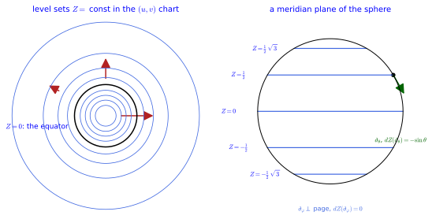
figures/height_levels.sage.
The second example is worked out in the first exercise, from the transformation law and with the pairing checked in both charts. The answer is the row of partial derivatives of the angle, divided by the squared radius of the chart plane.
Exercise 97 (Transforming a covector) Find the components of d\varphi in the stereographic chart from Equation 16, and check that d\varphi(\partial_\varphi) = 1 in both charts.
\varphi = \operatorname{atan2}(v, u) on the overlap, so \partial\varphi/\partial u = -v/(u^2 + v^2) and \partial\varphi/\partial v = u/(u^2 + v^2), the components of d\varphi. Paired with \partial_\varphi = - v\,\partial_u + u\,\partial_v: (-v)(-v)/(u^2 + v^2) + u \cdot u/(u^2 + v^2) = 1, the same as d\varphi(\partial_\varphi) = 1 in the spherical chart. The Jacobian factors of Equation 14 and Equation 16 cancel.
SageManifolds performs the change of coframe automatically. The second exercise displays both spherical differentials in the stereographic chart and checks two pairings.
Exercise 98 (The spherical coframe in the stereographic chart) With SageManifolds, display d\theta and d\varphi in the coframe (du, dv) of the stereographic chart, and evaluate both on \partial_\varphi.
d\varphi = (-v\,du + u\,dv)/(u^2 + v^2) as in Example 95, and d\theta = -2(u\,du + v\,dv)/\big((1 + \rho^2)\rho\big) with \rho^2 = u^2 + v^2, the dual statement of Exercise 76. Paired with \partial_\varphi = -v\,\partial_u + u\,\partial_v they give 1 and 0:
S2 = Manifold(2, "S^2")
A = S2.open_subset("A"); U = S2.open_subset("U")
sph = A.chart(r"th:(0,pi):\theta ph:(0,2*pi):\varphi"); ste = U.chart("u v")
th, ph = sph[:]; u, v = ste[:]
tr = sph.transition_map(ste, (sin(th)*cos(ph)/(1 - cos(th)), sin(th)*sin(ph)/(1 - cos(th))))
tr.set_inverse(2*atan(1/sqrt(u**2 + v**2)), atan2(v, u), check=False)
W = A.intersection(U); fs = sph.frame().restrict(W); fu = ste.frame().restrict(W)
dth, dph = sph.coframe()[0].restrict(W), sph.coframe()[1].restrict(W)
print("dphi =", dph.display(fu, ste.restrict(W)))
print("dtheta =", dth.display(fu, ste.restrict(W)))
X = W.vector_field(name="X"); X[fs, :] = [0, 1]
X.display(fu, ste.restrict(W))
print("dphi(d_phi) =", dph(X).expr(ste.restrict(W)), "; dtheta(d_phi) =", dth(X).expr(ste.restrict(W)))Output:
dphi = dph = -v/(u^2 + v^2) du + u/(u^2 + v^2) dv
dtheta = dth = -2*u/((u^2 + v^2 + 1)*sqrt(u^2 + v^2)) du - 2*v/((u^2 + v^2 + 1)*sqrt(u^2 + v^2)) dv
dphi(d_phi) = 1 ; dtheta(d_phi) = 0The transformation law of covector components was stated; it can also be derived from the differentials themselves. The third exercise does this and shows that the two laws are each other’s inverse.
Exercise 99 (Deriving the covector law) Show that dx'^j = \dfrac{\partial x'^j}{\partial x^i}\,dx^i by evaluating both sides on \partial_k, and deduce Equation 16 from \omega = \omega_i\,dx^i = \omega'_j\,dx'^j.
On \partial_k, the left side gives dx'^j(\partial_k) = \partial_k(x'^j) = \partial x'^j/\partial x^k (a coordinate differential reads off the rate of change of its coordinate), and the right side gives \frac{\partial x'^j}{\partial x^i}\delta^i_k, the same. Symmetrically dx^i = \frac{\partial x^i}{\partial x'^j}dx'^j, and substituting into \omega_i\,dx^i gives \omega = \omega_i\frac{\partial x^i}{\partial x'^j}\,dx'^j, whose coefficients are \omega'_j. The vector law uses \partial x'/\partial x, the covector law its inverse \partial x/\partial x'.
Differentials and one-forms
Every smooth function produces a covector at each point, its rate of change in every direction. The next definition introduces this differential, the main source of covectors and the reason they are written dx^i.
Definition 26 (Differential of a function) The differential df of a smooth function is the covector df(X) = X(f) at each point; in a chart df = \partial_i f\, dx^i, with components (\partial_1 f, \dots, \partial_n f). Its value on a velocity is the rate of change of f along the curve, Equation 7.
Veriphy. Pending.
Lean. Pending.
Sage. Pending.
The height of the sphere has the simplest non-trivial differential. The first example computes it and evaluates it on the two coordinate vectors, which the figure above draws.
Example 97 (The differential of the height function) On the sphere dZ = d(\cos\theta) = -\sin\theta\,d\theta: components (-\sin\theta, 0) (Proposition 8). On \partial_\varphi it gives zero (moving along a parallel does not change the height) and on \partial_\theta it gives -\sin\theta (Figure 9).
The coordinate differentials of the previous definition are differentials of functions, the coordinates. The second example checks the consistency and notes the subtlety of the angle on the circle.
Example 98 (Differentials of the coordinates) d\theta and d\varphi are the differentials of the coordinate functions \theta and \varphi, consistent with Definition 25; d\varphi is a well-defined covector field on the circle even though \varphi is not a function (Example 26), since the jumps of \varphi are constant (Exercise 103).
The same differential looks different in the stereographic chart, because its components transform. The third example computes it there and checks that it still vanishes on the rotation field.
Example 99 (dZ in the stereographic chart) Z = (u^2 + v^2 - 1)/(u^2 + v^2 + 1) gives dZ = 4(u\,du + v\,dv)/(1 + u^2 + v^2)^2, which vanishes on the rotation field -v\partial_u + u\partial_v: the same covector field as -\sin\theta\,d\theta, in other components.
Veriphy. Pending.
Lean. Pending.
Sage. Exact computation (figures/height_levels.sage).
The first exercise computes the differential of the height with SageManifolds and evaluates it on several vectors, including the one of Figure 7. The last part evaluates the covector of Example 91, written now as a one-form.
Exercise 100 (Differentials with SageManifolds) Compute dZ for Z = \cos\theta with SageManifolds’ differential, evaluate it on \partial_\theta, \partial_\varphi and X = 0.4\,\partial_\theta + 0.5\,\partial_\varphi, and evaluate the one-form 3\,d\theta -
d\varphi on X.
S2 = Manifold(2, "S^2"); A = S2.open_subset("A")
sph = A.chart(r"th:(0,pi):\theta ph:(0,2*pi):\varphi"); th, ph = sph[:]
Z = A.scalar_field(cos(th), name="Z")
dZ = Z.differential()
print("dZ =", dZ.display())
print("components (dZ_theta, dZ_phi):", dZ[:])
dth = A.vector_field(1, 0); dph = A.vector_field(0, 1); X = A.vector_field(0.4, 0.5, name="X")
print("dZ(d_theta) =", dZ(dth).expr(), "; dZ(d_phi) =", dZ(dph).expr(), "; dZ(X) for X = 0.4 d_theta + 0.5 d_phi:", dZ(X).expr())
print("dZ(X) equals X(Z):", bool((dZ(X) - X(Z)).expr() == 0))
om = A.one_form(3, -1, name="omega") # omega = 3 dtheta - dphi
print("omega = 3 dtheta - dphi on X:", om(X).expr())Output:
dZ = dZ = -sin(th) dth
components (dZ_theta, dZ_phi): [-sin(th), 0]
dZ(d_theta) = -sin(th) ; dZ(d_phi) = 0 ; dZ(X) for X = 0.4 d_theta + 0.5 d_phi: -0.4*sin(th)
dZ(X) equals X(Z): True
omega = 3 dtheta - dphi on X: 0.700000000000000Veriphy. Pending.
Lean.
/-- `dZ(∂_φ) = 0` and `dZ(∂_θ) = −sin θ`: pairing the differential with the coordinate fields. -/
theorem dZ_on_fields (x : Fin 2 → ℝ) :
(∑ i, pd i heightZ x * dphi i x) = 0 ∧ (∑ i, pd i heightZ x * dtheta i x) = -Real.sin (x 0)KaluzaKlein.Geometry.dZ_on_fields in KaluzaKlein/Geometry/VectorFields.lean, namespace KaluzaKlein.Geometry
Sage. Pending.
The radius of the plane is a function whose differential is simple in polar coordinates and less simple in Cartesian ones. The second exercise computes it in both and checks the chain rule on its square.
Exercise 101 (The differential of the radius) With SageManifolds, compute dr for r = \sqrt{x^2 + y^2} on the punctured plane in Cartesian and polar coordinates, evaluate it on \partial_r and \partial_\varphi, and check d(r^2) = 2r\,dr.
dr = (x\,dx + y\,dy)/\sqrt{x^2 + y^2}, which is simply dr in polar coordinates, with dr(\partial_r) = 1 and dr(\partial_\varphi) = 0; and d(r^2) = 2r\,dr, the chain rule:
M = Manifold(2, "R^2"); cart = M.chart("x y"); x, y = cart[:]
U = M.open_subset("U"); pol = U.chart(r"r:(0,+oo) ph:(0,2*pi):\varphi"); r, ph = pol[:]
tr = pol.transition_map(cart.restrict(U), (r*cos(ph), r*sin(ph))); tr.set_inverse(sqrt(x**2 + y**2), atan2(y, x), check=False)
fc, fp = cart.frame().restrict(U), pol.frame()
R = U.scalar_field({pol: r}, name="r")
dR = R.differential()
print("dr in Cartesian coordinates:", dR.display(fc, cart.restrict(U)))
print("dr in polar coordinates:", dR.display(fp, pol))
print("dr(d_r) =", dR(fp[0]).expr(pol), "; dr(d_phi) =", dR(fp[1]).expr(pol))
print("d(r^2) = 2 r dr:", (R*R).differential() == 2*R*dR)Output:
dr in Cartesian coordinates: dr = x/sqrt(x^2 + y^2) dx + y/sqrt(x^2 + y^2) dy
dr in polar coordinates: dr = dr
dr(d_r) = 1 ; dr(d_phi) = 0
d(r^2) = 2 r dr: TrueThe differential obeys the rules of calculus because tangent vectors do. The third exercise derives the product and chain rules from the definition df(X) = X(f).
Exercise 102 (Product and chain rules) Show that d(fg) = f\,dg + g\,df and d(h \circ f) = h'(f)\,df for smooth f, g and a smooth function h of one variable. Apply the second to d(\cos\theta) and to d(Z^2) on the sphere.
On any vector X: d(fg)(X) = X(fg) = X(f)\,g + f\,X(g) = (g\,df + f\,dg)(X) by the Leibniz rule. In a chart, X(h(f)) = X^i\partial_i h(f) = h'(f)X^i\partial_if = h'(f)\,df(X). Hence d(\cos\theta) = -\sin\theta\,d\theta, the differential of the height of Example 97, and d(Z^2) = 2Z\,dZ = -2\cos\theta\sin\theta\,d\theta.
A covector at every point, varying smoothly, is a one-form; differentials are examples, but not all one-forms are differentials. The next definition introduces one-forms and the distinction between exact and arbitrary ones.
Definition 27 (One-form) A one-form is a smooth field of cotangent vectors, \omega = \omega_i(x)\,dx^i with smooth components in every chart; it pairs with a vector field to give a function, \omega(X) = \omega_i X^i. The differential df of a smooth function is a one-form, called exact; not every one-form is exact.
Veriphy. Pending.
Lean. Pending.
Sage. Pending.
The first example compares two one-forms on the sphere, one exact and one that cannot be extended to the poles. The second will return as the connection of the Hopf fibration.
Example 100 (One-forms on the sphere) dZ = -\sin\theta\,d\theta and \cos\theta\,d\varphi are one-forms on the sphere minus the poles; the first extends smoothly to the poles, the second cannot (it is the Hopf connection of The Hopf fibration).
On the circle the angle form is defined everywhere but is not the differential of a function. The second example proves this with an integral, the first appearance of topology in the chapter.
Example 101 (The one-form d\varphi on the circle) d\varphi is a globally defined one-form on S^1 whose integral around the circle is 2\pi (Exercise 103); it is not the differential of any smooth function on the circle, since the integral of df around a closed curve is f(\text{end}) - f(\text{start}) = 0. It is exact on each chart domain but not globally.
The third example is the physical one: the electromagnetic potential is a one-form, and gauge transformations add exact one-forms to it. Their difference from the geometric one-forms above is only in the manifold, spacetime instead of a surface.
Example 102 (Gauge potentials) The electromagnetic potential A = A_\mu\,dx^\mu on spacetime is a one-form (Abelian gauge invariance); a gauge transformation adds the exact one-form d\lambda, and the field strength of Section 1.2.5 measures how far A is from being exact.
The claims of the second example are the first exercise, with the integral computed in SageManifolds. It turns the argument of the second example into a computation.
Exercise 103 (d\varphi is not exact) Show that the one-form d\varphi on the circle has integral 2\pi around the circle and conclude that it is not the differential of a function on the circle.
In the angle chart \omega = d\varphi has component 1, and \int_0^{2\pi} 1\, d\varphi = 2\pi. If \omega = df for a smooth f on the circle, the integral along the closed curve \gamma(t) = (\cos t, \sin t) would be \int_0^{2\pi} \frac{d}{dt} f(\gamma(t))\, dt = f(\gamma(2\pi)) - f(\gamma(0)) = 0. In SageManifolds:
S1 = Manifold(1, "S^1"); U = S1.open_subset("U")
c = U.chart("ph:(0,2*pi)"); ph = c[0]
om = U.one_form(1, name="omega") # omega = dphi
print("omega =", om.display())
print("d(omega) =", om.exterior_derivative().display(), " (a one-form on a 1-manifold is always closed)")
print("integral of dphi over (0, 2*pi):", integrate(om[0].expr(), ph, 0, 2*pi))
f = U.scalar_field(ph, name="f")
print("locally omega = d(phi):", f.differential() == om, "; but phi is not a function on the whole circle: it jumps by", (2*pi).n(digits=5), "at the point the chart misses")Output:
omega = omega = dph
d(omega) = domega = 0 (a one-form on a 1-manifold is always closed)
integral of dphi over (0, 2*pi): 2*pi
locally omega = d(phi): True ; but phi is not a function on the whole circle: it jumps by 6.2832 at the point the chart missesThe rotation field of the plane has a dual one-form with the same components, -y\,dx + x\,dy. The second exercise writes it in polar coordinates and integrates it around the unit circle by pulling it back along a parametrisation.
Exercise 104 (The rotation one-form of the plane) With SageManifolds, show that \omega = -y\,dx + x\,dy is r^2\,d\varphi in polar coordinates, compute its pullback along \gamma(t) = (\cos t, \sin t) and its integral around the circle. Is \omega exact on the plane?
\omega = r^2\,d\varphi, the pullback along the unit circle is dt, and the integral is 2\pi. A non-zero integral around a closed curve rules out \omega = df, as in Example 101; equivalently d\omega = 2\,dx \wedge dy \neq 0 (Section 1.2.5), while exact forms have d(df) = 0:
M = Manifold(2, "R^2"); cart = M.chart("x y"); x, y = cart[:]
U = M.open_subset("U"); pol = U.chart(r"r:(0,+oo) ph:(0,2*pi):\varphi"); r, ph = pol[:]
tr = pol.transition_map(cart.restrict(U), (r*cos(ph), r*sin(ph))); tr.set_inverse(sqrt(x**2 + y**2), atan2(y, x), check=False)
fc, fp = cart.frame().restrict(U), pol.frame()
om = M.one_form(-y, x, name="omega")
print("omega in polar coordinates:", om.restrict(U).display(fp, pol))
S1 = Manifold(1, "I"); T = S1.chart("t:(0,2*pi)"); t = T[0]
gamma = S1.diff_map(M, {(T, cart): [cos(t), sin(t)]}, name="gamma")
pb = gamma.pullback(om)
print("pullback gamma^* omega =", pb.display(), "; integral over (0, 2 pi):", integrate(pb[0].expr(), t, 0, 2*pi))
print("omega is not closed, d omega =", om.exterior_derivative().display())Output:
omega in polar coordinates: omega = r^2 dph
pullback gamma^* omega = gamma^*(omega) = dt ; integral over (0, 2 pi): 2*pi
omega is not closed, d omega = domega = 2 dx∧dyThe circle has one non-exact one-form; the torus has two independent ones. The third exercise identifies them and uses integrals around the two cycles to show that no combination of them is exact.
Exercise 105 (One-forms on the torus) On the torus with angle coordinates (a, b), show that da and db are globally defined one-forms, compute their integrals around the circles b = \text{const} and a = \text{const}, and show that \lambda\,da + \mu\,db is exact only for \lambda = \mu = 0.
On the overlaps of the angle charts a' = a + \text{const}, so da' = da and likewise for b: both forms are global although a and b are not global functions. Around the a-circle (b fixed, a from 0 to 2\pi) da integrates to 2\pi and db to 0; around the b-circle the values are swapped. If \lambda\,da + \mu\,db = df, both integrals would vanish, giving 2\pi\lambda = 2\pi\mu = 0.
The section ends with the differential of the height stated as a proposition. It is the covector behind every earlier computation of X(Z).
Proposition 8 (The differential of the height) dZ has components (-\sin\theta, 0), dZ(\partial_\varphi) = 0 and dZ(\partial_\theta) = -\sin\theta.
Veriphy. Pending.
Lean. KaluzaKlein.Geometry.dZ_components and KaluzaKlein.Geometry.dZ_on_fields.
/-- The components of `dZ` are `(−sin θ, 0)`. -/
theorem dZ_components (x : Fin 2 → ℝ) : pd 0 heightZ x = -Real.sin (x 0) ∧ pd 1 heightZ x = 0KaluzaKlein.Geometry.dZ_components in KaluzaKlein/Geometry/VectorFields.lean, namespace KaluzaKlein.Geometry
Sage. Pending.
The components (-\sin\theta, 0) depend only on the latitude. The first example evaluates the covector at one point and on a vector met earlier.
Example 103 (At one point) At \theta = \pi/3, dZ = -\tfrac{\sqrt3}{2}\,d\theta. On X = 0.4\,\partial_\theta + 0.5\,\partial_\varphi it gives -0.2\sqrt3 \approx -0.346, and on \partial_\theta + 2\,\partial_\varphi it gives -\tfrac{\sqrt3}{2}, the value of Proposition 5: the covector ignores the \partial_\varphi-component of every vector.
The proposition gives the components of dZ, and pairing them with the components of a vector is a finite sum. The second example writes that sum out for the two coordinate fields and for a general vector, so that the proposition’s two pairings appear as special cases.
Example 104 (Pairing by components) A covector \omega = \omega_\theta\,d\theta + \omega_\varphi\,d\varphi pairs with X = X^\theta\partial_\theta + X^\varphi\partial_\varphi as \omega(X) = \omega_iX^i = \omega_\theta X^\theta + \omega_\varphi X^\varphi. For dZ, with components (\partial_\theta Z, \partial_\varphi Z) = (-\sin\theta, 0), this is dZ(X) = -X^\theta\sin\theta. The field \partial_\varphi has components (0, 1) and gives 0; the field \partial_\theta has components (1, 0) and gives -\sin\theta; the field \cos\theta\,\partial_\theta - \partial_\varphi gives -\sin\theta\cos\theta. No new object is needed: the differential is the pair of partial derivatives and the pairing is the sum.
Veriphy. Pending.
Lean. In Lean, dZ_components states that pd 0 heightZ x = -Real.sin (x 0) and pd 1 heightZ x = 0 for every chart point x, where heightZ x = Real.cos (x 0): the components \partial_\theta Z and \partial_\varphi Z of dZ. dZ_on_fields states that ∑ i, pd i heightZ x * dphi i x = 0 and ∑ i, pd i heightZ x * dtheta i x = -Real.sin (x 0): the pairings \omega_iX^i of dZ with \partial_\varphi and \partial_\theta.
Sage. Pending.
A covector becomes a vector once a metric is available. The third example raises the index of dZ with the round metric and recovers the gradient field of the previous section.
Example 105 (From the differential to the gradient) With the round metric g = \operatorname{diag}(1, \sin^2\theta), the vector with components g^{ij}(dZ)_j is (1 \cdot (-\sin\theta), \sin^{-2}\theta \cdot 0) = (-\sin\theta, 0): the gradient field -\sin\theta\,\partial_\theta of Example 77 (Proposition 14). The differential needs no metric; the gradient does.
The height is one of three ambient coordinates, and each has a differential on the sphere. The first exercise computes all three with SageManifolds and evaluates them on the three rotation fields.
Exercise 106 (Differentials of the ambient coordinates) With SageManifolds, compute dX, dY, dZ for the restrictions of the ambient coordinates to the sphere and the nine numbers dX_b(K_a) for the rotation fields of Exercise 80. Show that dX_b(K_a) = - \epsilon_{abc}X_c.
dZ = -\sin\theta\,d\theta is the proposition; dX and dY have both components. The table of dX_b(K_a) = K_a(X_b) is -\epsilon_{abc}X_c, the infinitesimal form of K_a = e_a \times p: for instance dY(K_1) = -Z and dZ(K_1) = Y:
S2 = Manifold(2, "S^2"); A = S2.open_subset("A")
sph = A.chart(r"th:(0,pi):\theta ph:(0,2*pi):\varphi"); th, ph = sph[:]
K1 = A.vector_field(-sin(ph), -cos(th)/sin(th)*cos(ph), name="K1")
K2 = A.vector_field(cos(ph), -cos(th)/sin(th)*sin(ph), name="K2")
K3 = A.vector_field(0, 1, name="K3")
K = [K1, K2, K3]
Xs = [A.scalar_field(e, name=n) for e, n in [(sin(th)*cos(ph), "X"), (sin(th)*sin(ph), "Y"), (cos(th), "Z")]]
dX = [f.differential() for f in Xs]
for b in range(3):
print("d%s =" % "XYZ"[b], dX[b].display())
tab = matrix(SR, 3, 3, lambda a, b: dX[b](K[a]).expr().simplify_full())
print("table of dX_b(K_a), rows a = 1, 2, 3, columns X, Y, Z:"); print(tab)
eps = lambda a, b, c: Permutation([a + 1, b + 1, c + 1]).sign() if len({a, b, c}) == 3 else 0
pred = matrix(SR, 3, 3, lambda a, b: -sum(eps(a, b, c)*Xs[c].expr() for c in range(3)))
print("equals -epsilon_abc X_c:", bool((tab - pred).simplify_full() == 0))Output:
dX = dX = cos(ph)*cos(th) dth - sin(ph)*sin(th) dph
dY = dY = cos(th)*sin(ph) dth + cos(ph)*sin(th) dph
dZ = dZ = -sin(th) dth
table of dX_b(K_a), rows a = 1, 2, 3, columns X, Y, Z:
[ 0 -cos(th) sin(ph)*sin(th)]
[ cos(th) 0 -cos(ph)*sin(th)]
[-sin(ph)*sin(th) cos(ph)*sin(th) 0]
equals -epsilon_abc X_c: TrueThe differential of the height in the stereographic chart was quoted in Example 99. The second exercise derives it from the proposition by the transformation law, through the radius \rho of the chart plane.
Exercise 107 (The height differential in the stereographic chart) Using \rho = \cot(\theta/2) and Z = (\rho^2 - 1)/(\rho^2 + 1), derive dZ = 4\rho\,d\rho/(1 + \rho^2)^2 = 4(u\,du + v\,dv)/(1 + u^2 + v^2)^2 and check that it equals -\sin\theta\,d\theta.
By the chain rule, dZ = \frac{d}{d\rho}\frac{\rho^2 - 1}{\rho^2 + 1}\,d\rho = \frac{2\rho(\rho^2 + 1) - 2\rho(\rho^2 - 1)}{(1 + \rho^2)^2}\,d\rho = \frac{4\rho}{(1 + \rho^2)^2}\,d\rho, and \rho\,d\rho = u\,du + v\,dv. Conversely d\rho = -d\theta/(2\sin^2(\theta/2)) and 1 + \rho^2 = 1/\sin^2(\theta/2), so 4\rho\,d\rho/(1 + \rho^2)^2 = - 2\cot(\theta/2)\sin^2(\theta/2)\,d\theta = -2\sin(\theta/2)\cos(\theta/2)\,d\theta = -\sin\theta\,d\theta.
Integrating a differential along a curve gives the change of the function. The third exercise proves this fundamental theorem for one-forms and applies it to the height along a meridian and a parallel.
Exercise 108 (Integrating the differential of the height) For a curve \gamma : [a, b] \to S^2 define \int_\gamma dZ = \int_a^b dZ(\dot\gamma(t))\,dt. Show that it equals Z(\gamma(b)) - Z(\gamma(a)), and evaluate it for the meridian from the equator to the north pole and for a full parallel.
dZ(\dot\gamma(t)) = \dot\gamma(t)(Z) = \frac{d}{dt}Z(\gamma(t)) by Definition 16, so the integral is Z(\gamma(b)) - Z(\gamma(a)) by the fundamental theorem of calculus; it depends only on the endpoints. From the equator (Z = 0) to the north pole (Z = 1) it is 1; around a parallel it is 0, since the curve is closed (and dZ(\partial_\varphi) = 0 along the way). Exact forms always integrate to zero around closed curves, which is the test used in Example 101.
Tensor fields
Vectors and one-forms have components that transform with the Jacobian of a change of chart and with its inverse. Tensor fields are the general objects with such transformation laws: at each point a tensor on the tangent space in the sense of Multilinear maps and tensor products, varying smoothly. The metric, the curvature and the field strength of a gauge field are all tensor fields, and this chapter fixes the rules they obey.
Tensor fields and their components
Vectors take one covector argument and one-forms take one vector argument; many geometric quantities take several of each. The definition below puts a multilinear map of this kind at every point and reads off its components by feeding it basis elements, which is how all later tensors are handled.
Definition 28 (Tensor field) A tensor field of type (r, s) assigns to every point p a tensor of type (r, s) on T_pM (Definition 18 of Linear algebra): a multilinear map of r cotangent vectors and s tangent vectors at p. Its components in a chart are the smooth functions T^{i_1 \dots i_r}{}_{j_1 \dots j_s} = T(dx^{i_1}, \dots, dx^{i_r}, \partial_{j_1}, \dots, \partial_{j_s}), \tag{17} and T = T^{i_1 \dots i_r}{}_{j_1 \dots j_s}\, \partial_{i_1} \otimes \dots \otimes dx^{j_s}.
Veriphy. Pending.
Lean. Pending.
Sage. Pending.
The first example places the objects of the previous sections in the new scheme. Each is a tensor field of a type determined by how many arguments of each kind it takes.
Example 106 (Vectors, one-forms, functions) A vector field is a tensor field of type (1, 0), a one-form of type (0, 1) and a function of type (0, 0): the cases of Section 1.2.2 and Section 1.2.3. On the sphere, \partial_\varphi, dZ and Z are tensor fields of these three types.
The Gram matrix of a chart takes two vectors and returns their ambient inner product. The second example shows it is a tensor field of type (0, 2), the induced metric of the next chapter.
Example 107 (The Gram matrix is a tensor field) The Gram matrix Equation 10 of a chart of an embedded surface, G_{ij} = \partial_i E \cdot \partial_j E, is a tensor field of type (0, 2): G(X, Y) = (X^i \partial_i E) \cdot (Y^j \partial_j E) is the Euclidean inner product of the ambient velocities, bilinear in X and Y. It is the induced metric of Section 1.3.3.
A type (1, 1) tensor field takes a covector and a vector, or equivalently maps vectors to vectors. The third example is the identity map, whose components are the same in every chart.
Example 108 (The identity tensor) The Kronecker delta \delta^i_j is the type (1, 1) tensor field \delta(\omega, X) = \omega(X), with the same components, the identity matrix, in every chart (Exercise 118); in SageManifolds it is tangent_identity_field.
Reading off components by feeding basis elements is mechanical, and SageManifolds does it on request. The first exercise builds a type (1, 1) field on the sphere and evaluates it on basis elements and on a vector field.
Exercise 109 (Components of a (1, 1) tensor field) With SageManifolds, define T = \partial_\varphi \otimes d\theta + \sin\theta\,\partial_\theta \otimes d\varphi on the sphere, read off its component matrix T^i{}_j, evaluate T(d\varphi, \partial_\theta) and T(d\theta, \partial_\varphi), and compute the vector field T(X) for X = \partial_\theta + 2\,\partial_\varphi.
T^\varphi{}_\theta = 1 and T^\theta{}_\varphi = \sin\theta, the other two components vanish; T(d\varphi, \partial_\theta) = 1, T(d\theta, \partial_\varphi) = \sin\theta. As a linear map T(X)^i = T^i{}_jX^j, so T(X) = 2\sin\theta\,\partial_\theta + \partial_\varphi, and the trace T^i{}_i is 0:
S2 = Manifold(2, "S^2"); A = S2.open_subset("A")
sph = A.chart(r"th:(0,pi):\theta ph:(0,2*pi):\varphi"); th, ph = sph[:]
dth, dph = sph.coframe()[0], sph.coframe()[1]
e_th, e_ph = sph.frame()[0], sph.frame()[1]
T = e_ph*dth + sin(th)*e_th*dph
print("T =", T.display(), "; type", T.tensor_type())
print("component matrix T^i_j (row i, column j):"); print(T[:])
print("T(dphi, d_theta) =", T(dph, e_th).expr(), "; T(dtheta, d_phi) =", T(dth, e_ph).expr(), "; T(dtheta, d_theta) =", T(dth, e_th).expr())
X = A.vector_field(1, 2, name="X")
print("T(X) for X = d_theta + 2 d_phi:", T.contract(1, X, 0).display())
print("trace T^i_i =", T.trace().expr())Output:
T = sin(th) ∂/∂th⊗dph + ∂/∂ph⊗dth ; type (1, 1)
component matrix T^i_j (row i, column j):
[ 0 sin(th)]
[ 1 0]
T(dphi, d_theta) = 1 ; T(dtheta, d_phi) = sin(th) ; T(dtheta, d_theta) = 0
T(X) for X = d_theta + 2 d_phi: 2*sin(th) ∂/∂th + ∂/∂ph
trace T^i_i = 0The components of a tensor are its values on basis elements; conversely, they determine its values everywhere. The second exercise proves this for type (0, 2) by expanding the arguments in the basis.
Exercise 110 (Components determine the tensor) For a type (0, 2) tensor field T show that T(X, Y) = T_{ij}X^iY^j, and that two such fields with the same components in one chart agree on the chart domain. Evaluate T(\partial_\theta + \partial_\varphi, \partial_\theta - \partial_\varphi) for the round metric T = d\theta \otimes d\theta + \sin^2\theta\,d\varphi \otimes d\varphi.
By bilinearity, T(X^i\partial_i, Y^j\partial_j) = X^iY^jT(\partial_i, \partial_j) = T_{ij}X^iY^j, so the values on all pairs are fixed by the n^2 numbers T_{ij} at each point. For the round metric, T(\partial_\theta + \partial_\varphi, \partial_\theta - \partial_\varphi) = T_{\theta\theta} - T_{\varphi\varphi} = 1 - \sin^2\theta = \cos^2\theta, the cross terms vanishing because T_{\theta\varphi} = 0.
How many component functions does a tensor field have? The third exercise counts them and applies the count to the tensors that appear later in the book.
Exercise 111 (Counting components) Show that a tensor field of type (r, s) on an n-dimensional manifold has n^{r + s} components in a chart. How many does a metric have in four dimensions, and how many of them are independent? How many does a type (1, 3) tensor have in four dimensions?
Each of the r + s indices takes n values independently, giving n^{r + s} components. A metric has type (0, 2), so 4^2 = 16 components in four dimensions, of which \tfrac12 \cdot 4 \cdot 5 = 10 are independent by symmetry (Definition 32). A (1, 3) tensor such as the Riemann tensor has 4^4 = 256 components; its symmetries reduce the independent ones to 20 (Section 1.4.5).
The components of a tensor field depend on the chart, and the next definition gives the rule. It combines the transformation laws of vectors and covectors, one Jacobian factor per index.
Definition 29 (Tensor transformation law) Under a change of chart x \to x' the components of a tensor field transform with one Jacobian factor Equation 14 per upper index and one inverse Jacobian factor Equation 16 per lower index: T'^{i_1 \dots i_r}{}_{j_1 \dots j_s} = \frac{\partial x'^{i_1}}{\partial x^{k_1}} \cdots \frac{\partial x^{l_1}}{\partial x'^{j_1}} \cdots\, T^{k_1 \dots k_r}{}_{l_1 \dots l_s} . \tag{18} Conversely, any family of component functions, one per chart, that transforms this way defines a tensor field.
Veriphy. Pending.
Lean. Pending.
Sage. Pending.
A constant tensor in one chart can have non-constant components in another. The first example computes dx \otimes dx in polar coordinates, the case the figure displays.
Example 109 (dx \otimes dx in polar coordinates) The tensor field dx \otimes dx on the plane has constant components \operatorname{diag}(1, 0) in Cartesian coordinates; in polar coordinates, with x = r\cos\varphi, its components are T_{rr} = \cos^2\varphi, T_{r\varphi} = -r\sin\varphi\cos\varphi, T_{\varphi\varphi} = r^2\sin^2\varphi (Figure 10, Proposition 9): the same tensor, different numbers.
For the identity tensor, the Jacobian factors cancel against each other. The second example derives its invariance from the chain rule.
Example 110 (Invariance of the identity) For \delta^i_j the transformation law gives \frac{\partial x'^i}{\partial x^k}\frac{\partial x^l}{\partial x'^j}\delta^k_l = \frac{\partial x'^i}{\partial x^k}\frac{\partial x^k}{\partial x'^j} = \delta^i_j by the chain rule: a Jacobian times its inverse. This is why the identity tensor has the same components everywhere.
Not every indexed quantity is a tensor. The third example names two that are not and explains how their transformation laws fail, which matters when connections appear.
Example 111 (What is not a tensor) The Jacobian \partial x'^i/\partial x^j itself is not a tensor field: it relates two charts rather than living in one. The Christoffel symbols of Section 1.4.2 are not tensors either, their transformation law having an extra inhomogeneous term; the Riemann tensor built from them is.
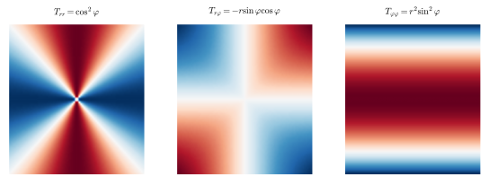
figures/tensor_components_polar.sage.
The polar components shown in the figure are derived by hand in the first exercise, from the transformation law with one inverse Jacobian factor per lower index. Only the factor \partial x/\partial x^a enters, since a single Cartesian component is non-zero.
Exercise 112 (The transformation law by hand) Derive the polar components of T = dx \otimes dx from Equation 18 and compare with Figure 10.
With T_{xx} = 1 and the other Cartesian components zero, T_{ab} = \frac{\partial x}{\partial x^a}\frac{\partial x}{\partial x^b} for x^a \in \{r, \varphi\}: \partial x/\partial r = \cos\varphi and \partial x/\partial\varphi = -r\sin\varphi give T_{rr} = \cos^2\varphi, T_{r\varphi} = -r\sin\varphi\cos\varphi, T_{\varphi\varphi} = r^2\sin^2\varphi, as computed by SageManifolds (Proposition 9).
A mixed tensor needs one Jacobian and one inverse Jacobian factor. The second exercise computes the polar components of \partial_x \otimes dy with SageManifolds and checks that its trace is the same in both charts.
Exercise 113 (A mixed tensor in polar coordinates) Predict from Equation 18 the polar components of T = \partial_x \otimes dy, using \partial_x = \cos\varphi\,\partial_r - r^{-1}\sin\varphi\,\partial_\varphi and dy = \sin\varphi\,dr + r\cos\varphi\,d\varphi, and check with SageManifolds. Compare the traces in the two charts.
Multiplying out, T^r{}_r = \sin\varphi\cos\varphi, T^r{}_\varphi = r\cos^2\varphi, T^\varphi{}_r = -\sin^2\varphi/r and T^\varphi{}_\varphi = -\sin\varphi\cos\varphi. The trace is 0 in polar coordinates and T^x{}_x + T^y{}_y = 0 in Cartesian ones:
M = Manifold(2, "R^2"); cart = M.chart("x y"); x, y = cart[:]
U = M.open_subset("U"); pol = U.chart(r"r:(0,+oo) ph:(0,2*pi):\varphi"); r, ph = pol[:]
tr = pol.transition_map(cart.restrict(U), (r*cos(ph), r*sin(ph))); tr.set_inverse(sqrt(x**2 + y**2), atan2(y, x), check=False)
fc, fp = cart.frame().restrict(U), pol.frame()
T = M.tensor_field(1, 1, name="T"); T[cart.frame(), 0, 1] = 1 # T^x_y = 1
TU = T.restrict(U); TU.display(fp, pol)
c = TU.comp(fp, pol)
pred = [[sin(ph)*cos(ph), r*cos(ph)**2], [-sin(ph)**2/r, -sin(ph)*cos(ph)]]
print("polar components T^a_b:"); print(matrix(SR, 2, 2, lambda a, b: c[a, b].expr()))
print("agree with T^r_r = sin cos, T^r_phi = r cos^2, T^phi_r = -sin^2/r, T^phi_phi = -sin cos:", all(bool((c[a, b].expr() - pred[a][b]).simplify_full() == 0) for a in range(2) for b in range(2)))
print("trace in Cartesian:", T.trace().expr(cart), "; trace in polar:", (c[0, 0].expr() + c[1, 1].expr()).simplify_full())Output:
polar components T^a_b:
[ cos(ph)*sin(ph) r*cos(ph)^2]
[ -sin(ph)^2/r -cos(ph)*sin(ph)]
agree with T^r_r = sin cos, T^r_phi = r cos^2, T^phi_r = -sin^2/r, T^phi_phi = -sin cos: True
trace in Cartesian: 0 ; trace in polar: 0The trace agreed in both charts in the previous exercise, and this is no accident. The third exercise proves that the trace and determinant of every type (1, 1) field are functions independent of the chart.
Exercise 114 (Invariants of a (1, 1) tensor field) Show that the component matrix of a (1, 1) tensor field transforms as T' = JTJ^{-1} with J = \partial x'/\partial x, and deduce that \operatorname{tr}T and \det T are the same in all charts. Why does this fail for a (0, 2) tensor?
Equation 18 with one upper and one lower index reads T'^i{}_j = J^i{}_kT^k{}_l(J^{-1})^l{}_j, that is T' = JTJ^{-1}, a similarity. Hence \operatorname{tr}T' = \operatorname{tr}(TJ^{-1}J) = \operatorname{tr}T and \det T' = \det J\det T\det J^{-1} = \det T. A (0, 2) tensor transforms as T' = (J^{-1})^{\mathsf T}TJ^{-1}, which is a congruence, not a similarity: its determinant picks up (\det J)^{-2} and its trace changes, as for the metric in Exercise 150.
Operations on tensor fields
New tensor fields are built from old ones by multiplying them and by contracting indices. The first operation, defined next, multiplies the values pointwise and adds the types.
Definition 30 (Tensor product of tensor fields) The tensor product T \otimes S of tensor fields of types (r, s) and (r', s') is the tensor field of type (r + r', s + s') whose value at each point is the tensor product of Definition 17 of Linear algebra, with components the products T^{\dots}{}_{\dots}\, S^{\dots}{}_{\dots}.
Veriphy. Pending.
Lean. Pending.
Sage. Pending.
Products of coordinate differentials are the building blocks of all (0, 2) fields. The first example writes the round metric as a combination of them.
Example 112 (Products of one-forms) d\theta \otimes d\theta and d\varphi \otimes d\varphi are type (0, 2) tensor fields on the sphere, with the single non-zero component 1 at (\theta, \theta) and (\varphi, \varphi) respectively; the round metric d\theta \otimes d\theta + \sin^2\theta\, d\varphi \otimes d\varphi is a combination of such products.
A vector times a one-form is a (1, 1) field, a linear map of rank one. The second example computes what it does to the coordinate basis.
Example 113 (A vector times a one-form) \partial_\varphi \otimes d\theta has type (1, 1) and the single component T^\varphi{}_\theta = 1; as a linear map of the tangent space it sends \partial_\theta to \partial_\varphi and \partial_\varphi to 0.
The field strength of electromagnetism and the Lagrangian built from it involve products and contractions. The third example points ahead to these physical tensors.
Example 114 (The field strength) The field strength F_{\mu\nu} of Part II is a type (0, 2) tensor field built from the one-form A_\mu and its derivatives, and F_{\mu\nu}F^{\mu\nu}, a function, is the Lagrangian of electromagnetism; the energy-momentum tensor T^{\mu\nu} is of type (2, 0).
A product of a vector and a covector has a component matrix that is an outer product. The first exercise computes one and reads off the linear map it defines.
Exercise 115 (A rank-one tensor) For T = (\partial_\theta + 2\,\partial_\varphi) \otimes (d\theta - d\varphi) on the sphere, give the components T^i{}_j, the images T(\partial_\theta) and T(\partial_\varphi), and the trace.
T^i{}_j = X^i\alpha_j with X = (1, 2), \alpha = (1, -1): T^\theta{}_\theta = 1, T^\theta{}_\varphi = -1, T^\varphi{}_\theta = 2, T^\varphi{}_\varphi = -2. Then T(\partial_\theta) = \alpha(\partial_\theta)X = X and T(\partial_\varphi) = -X: every vector is sent to a multiple of X, a map of rank one with determinant 0. The trace is 1 - 2 = -1 = \alpha(X).
Products of (0, 2) tensors have four indices, which is too many to handle by hand comfortably. The second exercise squares the round metric with SageManifolds and also checks that the product of one-forms depends on the order.
Exercise 116 (The square of the round metric) With SageManifolds, compute the tensor product g \otimes g of g = d\theta \otimes d\theta + \sin^2\theta\,d\varphi \otimes d\varphi with itself, its type and its non-zero components, and compare d\theta \otimes d\varphi with d\varphi \otimes d\theta.
g \otimes g has type (0, 4) and 16 components, of which four are non-zero: 1, \sin^2\theta, \sin^2\theta and \sin^4\theta at the index lists \theta\theta\theta\theta, \theta\theta\varphi\varphi, \varphi\varphi\theta\theta and \varphi\varphi\varphi\varphi. The products d\theta \otimes d\varphi and d\varphi \otimes d\theta differ, and their difference is d\theta \wedge d\varphi (Definition 34):
S2 = Manifold(2, "S^2"); A = S2.open_subset("A")
sph = A.chart(r"th:(0,pi):\theta ph:(0,2*pi):\varphi"); th, ph = sph[:]
g = A.tensor_field(0, 2, name="g"); g[0, 0] = 1; g[1, 1] = sin(th)**2
gg = g*g
print("type of g (x) g:", gg.tensor_type())
nz = [(i, j, k, l) for i in range(2) for j in range(2) for k in range(2) for l in range(2) if gg[i, j, k, l].expr() != 0]
print("non-zero components (index lists, 0 = theta, 1 = phi):", [(I, gg[I].expr()) for I in nz])
dth, dph = sph.coframe()[0], sph.coframe()[1]
print("dtheta (x) dphi = dphi (x) dtheta:", dth*dph == dph*dth, "; their difference is dtheta ^ dphi:", dth*dph - dph*dth == dth.wedge(dph))Output:
type of g (x) g: (0, 4)
non-zero components (index lists, 0 = theta, 1 = phi): [((0, 0, 0, 0), 1), ((0, 0, 1, 1), sin(th)^2), ((1, 1, 0, 0), sin(th)^2), ((1, 1, 1, 1), sin(th)^4)]
dtheta (x) dphi = dphi (x) dtheta: False ; their difference is dtheta ^ dphi: TrueThe tensor product behaves like a product of numbers in some ways and not in others. The third exercise establishes the rules and a property that distinguishes products from general tensors.
Exercise 117 (Rules of the tensor product) Show that \otimes is bilinear and associative but not commutative, and that the component matrix \alpha_i\beta_j of a product of two one-forms on a surface has determinant 0. Deduce that the round metric is not a product of two one-forms.
Components multiply: (T \otimes S)^{\dots}{}_{\dots} = T^{\dots}{}_{\dots}S^{\dots}{}_{\dots}, which is linear in each factor and associative because multiplication of numbers is; commutativity fails because the indices are placed in a fixed order, as d\theta \otimes d\varphi \neq d\varphi \otimes d\theta shows. For one-forms on a surface, \det(\alpha_i \beta_j) = \alpha_1\beta_1\alpha_2\beta_2 - \alpha_1\beta_2\alpha_2\beta_1 = 0. The round metric has determinant \sin^2\theta \neq 0 away from the poles, so it is a sum of at least two products, never a single one.
The second operation sums an upper index against a lower one. The next definition explains why only such pairs may be contracted: the Jacobian factors then cancel, as for the pairing of a covector with a vector.
Definition 31 (Contraction of tensor fields) A contraction sums one upper index of a tensor field against one lower index, pointwise as in Definition 20 of Linear algebra, lowering the type by (1, 1). Only upper-lower pairs may be summed: the Jacobian and inverse Jacobian factors then cancel and the result is again a tensor field.
Veriphy. Pending.
Lean. Pending.
Sage. Pending.
The pairing of a one-form with a vector is the basic contraction. The first example identifies it and evaluates one on the sphere.
Example 115 (Pairing a one-form with a vector field) \omega_i X^i, the function \omega(X), is the contraction of \omega \otimes X; on the sphere, dZ contracted with \partial_\theta gives -\sin\theta (Proposition 8).
Contracting a (1, 1) field with itself gives its trace. The second example computes the trace of the identity and names the curvature quantities obtained the same way.
Example 116 (The trace) Contracting the two indices of a type (1, 1) tensor field T^i{}_j gives its trace T^i{}_i, a function; for \delta^i_j it is the dimension n (Exercise 118). The Ricci tensor and the scalar curvature of Section 1.4.5 are contractions of the Riemann tensor.
With a metric, upper and lower indices can be matched in more ways. The third example contracts the metric with its inverse, partially and fully.
Example 117 (Metric contractions) The inverse metric contracted with the metric gives the identity, g^{ij}g_{jk} = \delta^i_k, and the full contraction g^{ij}g_{ij} = n (Exercise 118); raising and lowering indices (Section 1.3.2) are contractions with g^{ij} and g_{ij}.
The identity tensor and the metric contractions are checked in two charts in the first exercise, with SageManifolds. It also computes the trace and the two metric contractions of the third example.
Exercise 118 (The identity tensor and metric contractions) With SageManifolds, display the identity tensor field of the plane in Cartesian and in polar coordinates, compute its trace, and check g^{ij}g_{jk} = \delta^i_k and g^{ij}g_{ij} = 2 for the Euclidean metric.
M = Manifold(2, "R^2", structure="Riemannian")
cart = M.chart("x y"); x, y = cart[:]
U = M.open_subset("U"); pol = U.chart(r"r:(0,+oo) ph:(0,2*pi):\varphi"); r, ph = pol[:]
tr = pol.transition_map(cart.restrict(U), (r*cos(ph), r*sin(ph))); tr.set_inverse(sqrt(x**2 + y**2), atan2(y, x), check=False)
Id = M.tangent_identity_field()
print("identity tensor in Cartesian coordinates:", Id[cart.frame(), :])
print("in polar coordinates:", Id.restrict(U)[pol.frame(), :, pol])
print("its trace (contraction of the two indices):", Id.trace().expr())
g = M.metric("g"); g[0, 0] = 1; g[1, 1] = 1
ginv = g.inverse()
print("g^{ij} g_{jk} = delta^i_k:", ginv.contract(1, g, 0) == Id)
print("full contraction g^{ij} g_{ij} = n:", g.contract(0, 1, ginv, 0, 1).expr())Output:
identity tensor in Cartesian coordinates: [1 0]
[0 1]
in polar coordinates: [1 0]
[0 1]
its trace (contraction of the two indices): 2
g^{ij} g_{jk} = delta^i_k: True
full contraction g^{ij} g_{ij} = n: 2A tensor with several upper or lower indices can be contracted in several ways, with different results. The second exercise shows this on a three-index field of the sphere.
Exercise 119 (Two contractions of one tensor) With SageManifolds, define S = \partial_\theta \otimes d\theta \otimes d\varphi on the sphere and compute the two contractions S^i{}_{ik} and S^i{}_{ji}.
The only non-zero component is S^\theta{}_{\theta\varphi} = 1. Contracting with the first lower index gives S^i{}_{ik} = d\varphi, while contracting with the second gives S^i{}_{ji} = 0, since no component has the upper and the second lower index equal:
S2 = Manifold(2, "S^2"); A = S2.open_subset("A")
sph = A.chart(r"th:(0,pi):\theta ph:(0,2*pi):\varphi"); th, ph = sph[:]
S = A.tensor_field(1, 2, name="S"); S[0, 0, 1] = 1 # S^theta_{theta phi} = 1
print("S =", S.display())
c1 = S.trace(0, 1); c2 = S.trace(0, 2)
print("contraction S^i_{i k} =", c1.display())
print("contraction S^i_{j i} =", c2.display())Output:
S = S = ∂/∂th⊗dth⊗dph
contraction S^i_{i k} = dph
contraction S^i_{j i} = 0Summing two lower indices is a perfectly good formula in one chart but produces a chart-dependent answer. The third exercise exhibits this on the round metric, comparing the spherical and stereographic charts.
Exercise 120 (A sum that is not a contraction) For the round metric compute g_{\theta\theta} + g_{\varphi\varphi} in the spherical chart and g_{uu} + g_{vv} in the stereographic chart, where g = 4(du^2 + dv^2)/(1 + u^2 + v^2)^2 (Exercise 47), at the point \theta = \pi/3. Explain the discrepancy, and give the correct invariant.
In the spherical chart 1 + \sin^2\theta = \tfrac74 at \theta = \pi/3. There \rho = \cot(\pi/6) = \sqrt3, so g_{uu} + g_{vv} = 8/(1 + 3)^2 = \tfrac12. The sum \sum_ig_{ii} pairs two lower indices, and the two inverse Jacobian factors do not cancel, so the result depends on the chart. The invariant is the contraction with the inverse metric, g^{ij}g_{ij} = 2 in every chart (Example 117).
Many tensor fields of physics are either symmetric or antisymmetric in a pair of indices. The next definition names the two cases and splits every (0, 2) field into them.
Definition 32 (Symmetric tensor field) A type (0, 2) tensor field is symmetric if T(X, Y) = T(Y, X), that is T_{ij} = T_{ji}, and antisymmetric if T(X, Y) = -T(Y, X), T_{ij} = -T_{ji}. Every type (0, 2) field is the sum of its symmetric part \tfrac12(T_{ij} + T_{ji}) and its antisymmetric part \tfrac12(T_{ij} - T_{ji}), and symmetry is preserved by changes of chart.
Veriphy. Pending.
Lean. Pending.
Sage. Pending.
Metrics are symmetric by construction. The first example checks this for the Gram matrix and for dx \otimes dx in every chart.
Example 118 (Metrics are symmetric) The Gram matrix G_{ij} = \partial_i E \cdot \partial_j E is symmetric because the dot product is; every metric is a symmetric type (0, 2) field by definition (Definition 37), and dx \otimes dx is symmetric in every chart (Figure 10).
The field strength of a gauge potential is antisymmetric. The second example counts its independent components in four dimensions. These are the two-forms of the next section.
Example 119 (Field strengths are antisymmetric) F_{\mu\nu} = \partial_\mu A_\nu - \partial_\nu A_\mu is antisymmetric: antisymmetric type (0, 2) fields are the two-forms of Section 1.2.5, and F has \tfrac12 \cdot 4 \cdot 3 = 6 independent components in four dimensions, the electric and magnetic fields.
A tensor product of two different one-forms is neither. The third example splits it into its symmetric and antisymmetric parts, which are the line-element product and the wedge product.
Example 120 (Decomposing a product) d\theta \otimes d\varphi is neither symmetric nor antisymmetric; its symmetric part is \tfrac12(d\theta \otimes d\varphi + d\varphi \otimes d\theta), written d\theta\, d\varphi in line elements, and its antisymmetric part is \tfrac12\, d\theta \wedge d\varphi in the notation of Section 1.2.5.
The splitting of the third example is practised on a concrete field in the first exercise, together with the evaluation of the field on a pair of vectors in both orders. The two orders give different numbers exactly because the antisymmetric part is non-zero.
Exercise 121 (Symmetric and antisymmetric parts) Split T = d\theta \otimes d\varphi + 2\, d\varphi \otimes d\theta on the sphere into symmetric and antisymmetric parts, and evaluate T(\partial_\theta, \partial_\varphi) and T(\partial_\varphi, \partial_\theta).
T_{\theta\varphi} = 1, T_{\varphi\theta} = 2; symmetric part \tfrac32(d\theta \otimes d\varphi + d\varphi \otimes d\theta), antisymmetric part -\tfrac12(d\theta \otimes d\varphi - d\varphi \otimes d\theta). T(\partial_\theta, \partial_\varphi) = T_{\theta\varphi} = 1 and T(\partial_\varphi, \partial_\theta) = 2; the order of the arguments matters exactly because T is not symmetric.
SageManifolds has the two projections built in. The second exercise applies them to a generic field on the plane and checks the decomposition.
Exercise 122 (Symmetrisation with SageManifolds) With SageManifolds, take a type (0, 2) field on the plane with arbitrary components T_{ij}(x, y), compute its symmetrize() and antisymmetrize(), check that they add up to T, and split dx \otimes dy.
The symmetric part has components \tfrac12(T_{ij} + T_{ji}) and the antisymmetric part is \tfrac12(T_{xy} - T_{yx})\,dx \wedge dy; their sum is T. For dx \otimes dy the parts are \tfrac12(dx \otimes dy + dy \otimes dx) and \tfrac12\,dx \wedge dy:
M = Manifold(2, "R^2"); cart = M.chart("x y"); x, y = cart[:]
T = M.tensor_field(0, 2, name="T")
for i in range(2):
for j in range(2):
T[i, j] = function("T%d%d" % (i, j))(x, y)
Sym, Alt = T.symmetrize(), T.antisymmetrize()
print("symmetric part:", Sym.display()); print("antisymmetric part:", Alt.display())
print("T = Sym + Alt:", T == Sym + Alt)
print("Sym_xy = Sym_yx and Alt_xy = -Alt_yx:", bool(Sym[0, 1].expr() == Sym[1, 0].expr()), bool(Alt[0, 1].expr() == -Alt[1, 0].expr()))
dx, dy = cart.coframe()[0], cart.coframe()[1]
print("parts of dx (x) dy:", (dx*dy).symmetrize().display(), "and", (dx*dy).antisymmetrize().display())Output:
symmetric part: T00(x, y) dx⊗dx + (1/2*T01(x, y) + 1/2*T10(x, y)) dx⊗dy + (1/2*T01(x, y) + 1/2*T10(x, y)) dy⊗dx + T11(x, y) dy⊗dy
antisymmetric part: (1/2*T01(x, y) - 1/2*T10(x, y)) dx∧dy
T = Sym + Alt: True
Sym_xy = Sym_yx and Alt_xy = -Alt_yx: True True
parts of dx (x) dy: 1/2 dx⊗dy + 1/2 dy⊗dx and 1/2 dx∧dyThe definition asserts that symmetry survives changes of chart, and it counts the independent components implicitly. The third exercise proves the first statement and makes the count explicit.
Exercise 123 (Symmetry is a property of the tensor) Show from Equation 18 that T_{ij} = T_{ji} in one chart implies T'_{kl} = T'_{lk} in any other, and the same for antisymmetry. Show that at a point of an n-dimensional manifold the symmetric and antisymmetric (0, 2) tensors form subspaces of dimensions \tfrac12n(n + 1) and \tfrac12n(n - 1) adding up to n^2.
T'_{lk} = \frac{\partial x^j}{\partial x'^l}\frac{\partial x^i}{\partial x'^k}T_{ji}; renaming the summation indices and using T_{ji} = T_{ij} gives \frac{\partial x^i}{\partial x'^k}\frac{\partial x^j}{\partial x'^l}T_{ij} = T'_{kl}, and with T_{ji} = -T_{ij} a minus sign appears. A symmetric matrix is fixed by its entries on and above the diagonal, n + \tfrac12n(n - 1) = \tfrac12n(n + 1) of them; an antisymmetric one by those strictly above, \tfrac12n(n - 1); the sum is n^2, and the decomposition T = \tfrac12(T + T^{\mathsf T}) + \tfrac12(T - T^{\mathsf T}) is unique because a matrix that is both symmetric and antisymmetric is zero.
The section’s proposition records the polar components of dx \otimes dx, the simplest tensor whose components change in an interesting way between the two charts. It is the worked case of the transformation law used in this section’s examples.
Proposition 9 (dx \otimes dx in polar coordinates) The polar components of dx \otimes dx are \cos^2\varphi, -r\sin\varphi\cos\varphi, r^2\sin^2\varphi, and they are symmetric.
Veriphy. Pending.
Lean. Pending.
Sage. Exact computation: SageManifolds’ change of frame in figures/tensor_components_polar.sage.
The polar components change from point to point, but the number T(X, X) does not depend on the chart. The first example checks this at one point with a vector given in both charts.
Example 121 (At one point) At (r, \varphi) = (2, \pi/4) the polar components are T_{rr} = \tfrac12, T_{r\varphi} = -1, T_{\varphi\varphi} = 2. The vector X = \partial_r + \partial_\varphi has Cartesian components X^x = \cos\varphi - r\sin\varphi = -\tfrac{\sqrt2}{2}, X^y = \sin\varphi + r\cos\varphi = \tfrac{3\sqrt2}{2}, so T(X, X) = (X^x)^2 = \tfrac12; in polar components T_{rr} + 2T_{r\varphi} + T_{\varphi\varphi} = \tfrac12 - 2 + 2 = \tfrac12, the same.
The proposition follows from the transformation law of a covariant tensor, and the computation is short enough to do by hand. The second example carries it out from the derivatives of x = r\cos\varphi.
Example 122 (The components by the transformation law) A covariant 2-tensor transforms as T'_{ij} = \frac{\partial x^k}{\partial x'^i}\frac{\partial x^l}{\partial x'^j}T_{kl}, and dx \otimes dx has the single Cartesian component T_{xx} = 1. Hence T'_{ij} = \frac{\partial x}{\partial x'^i}\frac{\partial x}{\partial x'^j} with \partial x/\partial r = \cos\varphi and \partial x/\partial\varphi = -r\sin\varphi: T_{rr} = \cos^2\varphi, T_{r\varphi} = T_{\varphi r} = -r\sin\varphi\cos\varphi and T_{\varphi\varphi} = r^2\sin^2\varphi. The symmetry is automatic, since both factors are the same row of the Jacobian; in other words dx = \cos\varphi\,dr - r\sin\varphi\,d\varphi and dx \otimes dx is its tensor square. The density plots of Figure 10 are drawn from these expressions.
Veriphy. Pending.
Lean. Pending.
Sage. Exact computation: figures/tensor_components_polar.sage declares T by its Cartesian components [[1, 0], [0, 0]], restricts it to the polar chart’s domain and asks SageManifolds for the components in the polar frame, which it computes from the transition map. Its two [PASS] lines check, with simplify_full, that the three components equal \cos^2\varphi, -r\sin\varphi\cos\varphi and r^2\sin^2\varphi, and that T_{r\varphi} = T_{\varphi r}.
The tensor dx \otimes dx is half of the Euclidean metric. The third example adds the other half and recovers the polar metric of the next chapter.
Example 123 (Towards the polar metric) By the same computation dy \otimes dy has polar components \sin^2\varphi, r\sin\varphi\cos\varphi, r^2\cos^2\varphi (Exercise 124). Adding the two, the off-diagonal terms cancel and \cos^2 + \sin^2 = 1 gives dx \otimes dx + dy \otimes dy = dr \otimes dr + r^2\,d\varphi \otimes d\varphi, the Euclidean metric in polar coordinates of Proposition 11.
The third example quoted the components of dy \otimes dy. The first exercise computes them with SageManifolds, together with a non-symmetric product and the full Euclidean metric.
Exercise 124 (The other products in polar coordinates) With SageManifolds, compute the polar components of dy \otimes dy, of dx \otimes dy and of dx \otimes dx + dy \otimes dy.
dy \otimes dy has components (\sin^2\varphi, r\sin\varphi\cos\varphi, r\sin\varphi\cos\varphi, r^2\cos^2\varphi), listed row by row; dx \otimes dy has (\sin\varphi\cos\varphi, r\cos^2\varphi, -r\sin^2\varphi, - r^2\sin\varphi\cos\varphi), not symmetric; and the sum gives \operatorname{diag}(1, r^2):
M = Manifold(2, "R^2"); cart = M.chart("x y"); x, y = cart[:]
U = M.open_subset("U"); pol = U.chart(r"r:(0,+oo) ph:(0,2*pi):\varphi"); r, ph = pol[:]
tr = pol.transition_map(cart.restrict(U), (r*cos(ph), r*sin(ph))); tr.set_inverse(sqrt(x**2 + y**2), atan2(y, x), check=False)
fc, fp = cart.frame().restrict(U), pol.frame()
dx, dy = cart.coframe()[0], cart.coframe()[1]
for name, T in [("dy (x) dy", dy*dy), ("dx (x) dy", dx*dy), ("dx (x) dx + dy (x) dy", dx*dx + dy*dy)]:
TU = T.restrict(U); TU.display(fp, pol)
c = TU.comp(fp, pol)
print(name, "in polar coordinates:", matrix(SR, 2, 2, lambda a, b: c[a, b].expr().simplify_full()).list())Output:
dy (x) dy in polar coordinates: [sin(ph)^2, r*cos(ph)*sin(ph), r*cos(ph)*sin(ph), r^2*cos(ph)^2]
dx (x) dy in polar coordinates: [cos(ph)*sin(ph), r*cos(ph)^2, -r*sin(ph)^2, -r^2*cos(ph)*sin(ph)]
dx (x) dx + dy (x) dy in polar coordinates: [1, 0, 0, r^2]Polar coordinates are not the only curvilinear chart of the plane. The second exercise moves dx \otimes dx to the parabolic chart by hand.
Exercise 125 (Parabolic coordinates) In the parabolic chart x = uv, y = \tfrac12(u^2 - v^2), find the components of dx \otimes dx and of dx \otimes dx + dy \otimes dy.
dx = v\,du + u\,dv, so dx \otimes dx = v^2\,du \otimes du + uv(du \otimes dv + dv \otimes du) + u^2\,dv \otimes dv: components T_{uu} = v^2, T_{uv} = T_{vu} = uv, T_{vv} = u^2. With dy = u\,du - v\,dv, dy \otimes dy has components u^2, -uv, v^2, and the sum is (u^2 + v^2)(du \otimes du + dv \otimes dv), the metric found in Exercise 155.
The proposition is about a tensor with two lower indices. The third exercise transforms the tensor with two upper indices built from the same direction and contracts the two.
Exercise 126 (Two upper indices) Find the polar components of the type (2, 0) field \partial_x \otimes \partial_x, and verify that its full contraction with dx \otimes dx, T^{ij}S_{ij}, equals 1 in both charts.
With \partial_x = \cos\varphi\,\partial_r - r^{-1}\sin\varphi\,\partial_\varphi (Exercise 68): T^{rr} = \cos^2\varphi, T^{r\varphi} = T^{\varphi r} = -r^{-1}\sin\varphi\cos\varphi, T^{\varphi\varphi} = r^{-2}\sin^2\varphi. The contraction in Cartesian components is 1 \cdot 1 = 1. In polar ones, T^{rr}S_{rr} + 2T^{r\varphi}S_{r\varphi} + T^{\varphi\varphi}S_{\varphi\varphi} = \cos^4\varphi + 2\sin^2\varphi\cos^2\varphi + \sin^4\varphi = (\cos^2\varphi + \sin^2\varphi)^2 = 1: the Jacobian factors cancel in a contraction of upper against lower indices.
Differential forms
The field strength of electromagnetism, the area of a surface, the curvature of a connection: all are antisymmetric tensor fields, and antisymmetry gives them an algebra of their own, with a product that antisymmetrises and a derivative that needs no metric and no connection. This chapter defines differential forms, the wedge product and the exterior derivative, and works them on the plane, the sphere and \mathbb{R}^3.
Forms and the wedge product
Areas, fluxes and volumes are measured by tensors that change sign when two arguments are exchanged, as an oriented area does when its edges are swapped. The definition below names these totally antisymmetric tensors and records how few components they have.
Definition 33 (Differential form) A k-form is a totally antisymmetric tensor field of type (0, k) (Definition 32 for k = 2): \omega(X_1, \dots, X_k) changes sign under the exchange of any two arguments, so its components \omega_{i_1 \dots i_k} are antisymmetric in all indices. Functions are 0-forms, one-forms (Definition 27) are 1-forms, and on an n-dimensional manifold a k-form has \binom{n}{k} independent components and vanishes for k > n.
Veriphy. Pending.
Lean. Pending.
Sage. Pending.
On a surface there are forms of degree zero, one and two only. The first example lists those of the sphere, with the area form as the basic two-form.
Example 124 (Forms on the sphere) On S^2 the one-forms d\theta, d\varphi and their combinations are the 1-forms; a 2-form has a single component, \omega_{\theta\varphi} = -\omega_{\varphi\theta}, such as the area form \sin\theta (Exercise 134); there are no 3-forms.
In four dimensions two-forms have six components. The second example identifies those of the field strength with the electric and magnetic fields.
Example 125 (The field strength) F_{\mu\nu} = \partial_\mu A_\nu - \partial_\nu A_\mu on four-dimensional spacetime is a 2-form with \binom{4}{2} = 6 components, the electric and magnetic fields (Example 119); the Lagrangian density F_{\mu\nu}F^{\mu\nu} is a 0-form and \epsilon^{\mu\nu\rho\sigma}F_{\mu\nu}F_{\rho\sigma} a 4-form.
In three dimensions one-forms and two-forms both have three components, which is how vector calculus manages without forms. The third example sets up the dictionary that the exercises below complete.
Example 126 (Forms on \mathbb{R}^3) On \mathbb{R}^3 a 1-form a_x\,dx + a_y\,dy + a_z\,dz and a 2-form b_x\,dy \wedge dz + b_y\,dz \wedge dx + b_z\,dx \wedge dy each have three components, which is why vector calculus can hide forms behind vectors; a 3-form f\,dx \wedge dy \wedge dz has one component, a density (Exercise 133).
A two-form is a function of two vectors that changes sign when they are exchanged. The first exercise builds one on \mathbb{R}^3 with SageManifolds and evaluates it on a pair in both orders.
Exercise 127 (A two-form on \mathbb{R}^3) With SageManifolds, define \beta = z\,dx \wedge dy + x\,dy \wedge dz, display its component matrix, and evaluate \beta(X, Y), \beta(Y, X) and \beta(X, X) for X = \partial_x + \partial_y, Y = \partial_z.
The component matrix is antisymmetric, with \beta_{xy} = z and \beta_{yz} = x. On the pair, \beta(X, Y) = z(X^xY^y - X^yY^x) + x(X^yY^z - X^zY^y) = x, \beta(Y, X) = -x and \beta(X, X) = 0:
M = Manifold(3, "R^3"); cart = M.chart("x y z"); x, y, z = cart[:]
dx, dy, dz = cart.coframe()[:]
beta = z*dx.wedge(dy) + x*dy.wedge(dz); beta.set_name("beta")
print("beta =", beta.display())
print("components beta_ij:"); print(beta[:])
X = M.vector_field(1, 1, 0, name="X"); Y = M.vector_field(0, 0, 1, name="Y")
print("beta(X, Y) =", beta(X, Y).expr(), "; beta(Y, X) =", beta(Y, X).expr(), "; beta(X, X) =", beta(X, X).expr())Output:
beta = beta = z dx∧dy + x dy∧dz
components beta_ij:
[ 0 z 0]
[-z 0 x]
[ 0 -x 0]
beta(X, Y) = x ; beta(Y, X) = -x ; beta(X, X) = 0The definition states that a k-form in dimension n has \binom{n}{k} independent components. The second exercise derives the count from antisymmetry.
Exercise 128 (Counting components of forms) Show that a component \omega_{i_1 \dots i_k} with two equal indices vanishes, that components whose indices are permutations of each other differ only by a sign, and hence that a k-form has \binom{n}{k} independent components. List them for n = 4.
Exchanging the two equal indices leaves the component unchanged but must flip its sign, so it is 0. Any list of distinct indices is a permutation of an increasing list, and the component equals the sign of the permutation times the increasing one; the independent components are thus labelled by k-element subsets of \{1, \dots, n\}, of which there are \binom{n}{k}. For n = 4: 1, 4, 6, 4, 1 for k = 0, \dots, 4, and 0 for k > 4.
On a surface the top degree is two, and every two-form is a function times a fixed one. The third exercise proves this and relates the antisymmetric part of a tensor product to the wedge.
Exercise 129 (Two-forms on a surface) Show that every two-form on a chart domain of a surface is f\,d\theta \wedge d\varphi for a function f, and write the area form \sin\theta\,d\theta \wedge d\varphi in the form \tfrac12\omega_{ij}\,dx^i \wedge dx^j. Find the antisymmetric part of 3\,d\theta \otimes d\varphi as a multiple of d\theta \wedge d\varphi.
With n = 2, k = 2 there is \binom22 = 1 independent component, \omega_{\theta\varphi} = -\omega_{\varphi\theta}, so \omega = \omega_{\theta\varphi}(d\theta \otimes d\varphi - d\varphi \otimes d\theta) = \omega_{\theta\varphi}\,d\theta \wedge d\varphi. For the area form \omega_{\theta\varphi} = \sin\theta, and \tfrac12(\omega_{\theta\varphi}\,d\theta \wedge d\varphi + \omega_{\varphi\theta}\,d\varphi \wedge d\theta) = \sin\theta\,d\theta \wedge d\varphi. The antisymmetric part of 3\,d\theta \otimes d\varphi has \omega_{\theta\varphi} = \tfrac32, so it is \tfrac32\,d\theta \wedge d\varphi (Example 120).
Forms of different degrees can be multiplied to give a form of the sum of the degrees. The next definition makes the product antisymmetric by construction, which is why it squares to zero on one-forms.
Definition 34 (Wedge product) The wedge product of a p-form \alpha and a q-form \beta is the (p + q)-form obtained by antisymmetrising the tensor product, (\alpha \wedge \beta)_{i_1 \dots i_{p+q}} = \frac{1}{p!\,q!}\sum_\sigma \operatorname{sgn}(\sigma)\, \alpha_{i_{\sigma(1)} \dots i_{\sigma(p)}}\, \beta_{i_{\sigma(p+1)} \dots i_{\sigma(p+q)}} , \tag{19} so that dx^i \wedge dx^j = dx^i \otimes dx^j - dx^j \otimes dx^i = -dx^j \wedge dx^i and in general \alpha \wedge \beta = (-1)^{pq}\beta \wedge \alpha. Every k-form is \omega = \frac{1}{k!}\omega_{i_1 \dots i_k}\,dx^{i_1} \wedge \dots \wedge dx^{i_k}.
Veriphy. Pending.
Lean. The wedge product is CoordinateGeometry.wedge, defined by the coordinate formula Equation 19.
Sage. Pending.
The wedge of the two coordinate differentials of the sphere is the basic two-form there. The first example records its components, which return in the proposition at the end of the section.
Example 127 (d\theta \wedge d\varphi) (d\theta \wedge d\varphi)_{\theta\varphi} = 1 and (d\theta \wedge d\varphi)_{\varphi\theta} = -1 (Proposition 10); d\theta \wedge d\theta = 0, and d\varphi \wedge d\theta = -d\theta \wedge d\varphi (Exercise 134). The area form is \sin\theta\,d\theta \wedge d\varphi.
For one-forms the wedge has a simple component formula. The second example gives it and recognises the cross product of vector calculus.
Example 128 (Products of one-forms) For one-forms \alpha = a_i\,dx^i and \beta = b_j\,dx^j, \alpha \wedge \beta = (a_ib_j - a_jb_i)\,dx^i \otimes dx^j = \sum_{i < j}(a_ib_j - a_jb_i)\,dx^i \wedge dx^j: on \mathbb{R}^3 this is the cross product of the component vectors, and \alpha \wedge \alpha = 0 (Exercise 130).
The wedge is the antisymmetric half of the tensor product; the line element uses the symmetric half. The third example compares the two, and the figure shows exterior derivatives of one-forms on the plane.
Example 129 (Line elements versus wedges) The line element ds^2 = g_{ij}\,dx^i dx^j uses the symmetrised product \tfrac12(dx^i \otimes dx^j + dx^j \otimes dx^i) of Definition 39, the complementary operation to the wedge: dx^i \otimes dx^j is the sum of its symmetric part dx^i dx^j and its antisymmetric part \tfrac12 dx^i \wedge dx^j (Example 120).
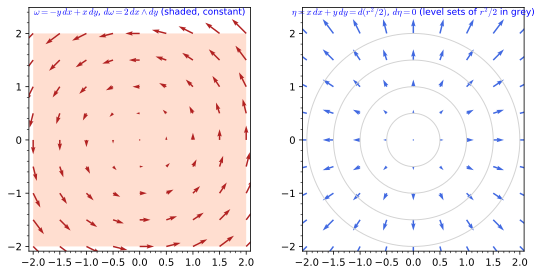
figures/exterior_derivative_plane.sage.
The graded rules of the definition and the Leibniz rule of the next one are checked in the first exercise on generic forms, with SageManifolds. The solution also displays the exterior derivative of a general one-form of the plane.
Exercise 130 (Graded rules) Check on generic one-forms of the plane that \alpha \wedge \beta = -\beta \wedge \alpha, \alpha \wedge \alpha = 0 and d(g\alpha) = dg \wedge \alpha + g\,d\alpha.
M = Manifold(2, "R^2"); X = M.chart("x y"); x, y = X[:]
a1, a2, b1, b2 = [function(n)(x, y) for n in ["a1", "a2", "b1", "b2"]]
al = M.one_form(a1, a2, name="alpha"); be = M.one_form(b1, b2, name="beta")
g = M.scalar_field(function("g")(x, y), name="g")
print("alpha ^ beta = -beta ^ alpha for one-forms:", al.wedge(be) == -be.wedge(al))
print("alpha ^ alpha = 0:", al.wedge(al) == 0)
lhs = (g * al).exterior_derivative(); rhs = g.differential().wedge(al) + g * al.exterior_derivative()
print("Leibniz rule d(g alpha) = dg ^ alpha + g d alpha:", lhs == rhs)
lhs2 = al.wedge(be).exterior_derivative()
print("d(alpha ^ beta) = d alpha ^ beta - alpha ^ d beta (both sides are 3-forms on a 2-manifold, hence zero):", lhs2 == 0)
print("d alpha =", al.exterior_derivative().display())Output:
alpha ^ beta = -beta ^ alpha for one-forms: True
alpha ^ alpha = 0: True
Leibniz rule d(g alpha) = dg ^ alpha + g d alpha: True
d(alpha ^ beta) = d alpha ^ beta - alpha ^ d beta (both sides are 3-forms on a 2-manifold, hence zero): True
d alpha = dalpha = (-d(a1)/dy + d(a2)/dx) dx∧dyThe last line shows d\alpha = (\partial_x a_2 - \partial_y a_1)\,dx \wedge dy, the field strength formula.
The component formula of Example 128 can be used by hand and checked by machine. The second exercise computes one wedge both ways and verifies that a one-form commutes with a two-form.
Exercise 131 (A wedge product on \mathbb{R}^3) Compute (dx + 2\,dy) \wedge (3\,dx - dz) by expanding with dx \wedge dx = 0 and dy \wedge dx = -dx \wedge dy, check with SageManifolds, and check that \alpha \wedge \beta = \beta \wedge \alpha for a one-form \alpha and a two-form \beta with arbitrary components.
dx \wedge 3\,dx = 0, dx \wedge (-dz) = -dx \wedge dz, 2\,dy \wedge 3\,dx = -6\,dx \wedge dy and 2\,dy \wedge (-dz) = -2\,dy \wedge dz, so the product is -6\,dx \wedge dy - dx \wedge dz - 2\,dy \wedge dz; and (-1)^{1 \cdot 2} = 1 makes a one-form commute with a two-form:
M = Manifold(3, "R^3"); cart = M.chart("x y z"); x, y, z = cart[:]
dx, dy, dz = cart.coframe()[:]
al = dx + 2*dy; be = 3*dx - dz
print("(dx + 2 dy) ^ (3 dx - dz) =", al.wedge(be).display())
print("equals -6 dx^dy - dx^dz - 2 dy^dz:", al.wedge(be) == -6*dx.wedge(dy) - dx.wedge(dz) - 2*dy.wedge(dz))
a = M.one_form(*[function("a%d" % i)(x, y, z) for i in range(3)])
b = M.diff_form(2); b[0, 1], b[0, 2], b[1, 2] = [function("b%d" % i)(x, y, z) for i in range(3)]
print("one-form ^ two-form = two-form ^ one-form:", a.wedge(b) == b.wedge(a))Output:
(dx + 2 dy) ^ (3 dx - dz) = -6 dx∧dy - dx∧dz - 2 dy∧dz
equals -6 dx^dy - dx^dz - 2 dy^dz: True
one-form ^ two-form = two-form ^ one-form: TrueThree one-forms on \mathbb{R}^3 wedge to a multiple of the volume form, and the multiple is familiar. The third exercise identifies it and derives the sign rule for degrees one and two from Equation 19.
Exercise 132 (Three one-forms and a determinant) For \alpha = a_i\,dx^i, \beta = b_i\,dx^i, \gamma = c_i\,dx^i on \mathbb{R}^3, show that \alpha \wedge \beta \wedge \gamma = \det(a, b, c)\,dx \wedge dy \wedge dz, with a, b, c the rows of the determinant. Deduce that three one-forms wedge to zero iff they are linearly dependent.
Expanding, \alpha \wedge \beta \wedge \gamma = a_ib_jc_k\,dx^i \wedge dx^j \wedge dx^k. Terms with repeated indices vanish, and for distinct ones dx^i \wedge dx^j \wedge dx^k = \epsilon_{ijk}\,dx \wedge dy \wedge dz, since each exchange of two factors flips the sign. So the coefficient is \epsilon_{ijk}a_ib_jc_k = \det(a, b, c), which vanishes iff the rows are dependent. The same expansion shows \alpha \wedge (\beta \wedge \gamma) = (\beta \wedge \gamma) \wedge \alpha: moving \alpha past two one-forms costs (-1)^2 = 1, the case p = 1, q = 2 of (-1)^{pq}.
The exterior derivative
The differential of a function is a one-form; the next definition extends d to forms of every degree. It is built only from partial derivatives and antisymmetrisation, and the antisymmetry is what makes it independent of the chart.
Definition 35 (Exterior derivative) The exterior derivative d takes k-forms to (k + 1)-forms, d\omega = \frac{1}{k!}\, \partial_j \omega_{i_1 \dots i_k}\, dx^j \wedge dx^{i_1} \wedge \dots \wedge dx^{i_k}, \qquad (d\omega)_{i_0 \dots i_k} = \sum_{a = 0}^k (-1)^a\,\partial_{i_a}\omega_{i_0 \dots \hat{i_a} \dots i_k} , \tag{20} where the hat omits an index. It extends df on functions, is independent of the chart (the inhomogeneous terms of Equation 29 cancel by antisymmetry, so no connection is needed), satisfies the graded Leibniz rule d(\alpha \wedge \beta) = d\alpha \wedge \beta + (-1)^p\alpha \wedge d\beta, and squares to zero, d^2 = 0, because partial derivatives commute while the wedge antisymmetrises.
Veriphy. Pending.
Lean. The exterior derivative is CoordinateGeometry.extDeriv, defined by the coordinate formula Equation 20.
Sage. Pending.
The first example computes d on the two one-forms of the figure and on the Hopf one-form of the sphere, and recognises the field strength formula. In each case only the antisymmetrised first derivatives of the components survive.
Example 130 (One-forms on the plane and the sphere) d(-y\,dx + x\,dy) = 2\,dx \wedge dy and d(x\,dx + y\,dy) = 0 (Figure 11); on the sphere d(\cos\theta\,d\varphi) = -\sin\theta\,d\theta \wedge d\varphi, minus the area form (Proposition 10, Exercise 134). For a one-form a_i\,dx^i the components of da are \partial_ia_j - \partial_ja_i, the field strength formula.
In three dimensions d reproduces the three operators of vector calculus. The second example states the dictionary and what d^2 = 0 says in it.
Example 131 (Gradient, curl, divergence) On \mathbb{R}^3, d on functions is the gradient, on 1-forms the curl and on 2-forms the divergence (Exercise 133); d^2 = 0 encodes \operatorname{curl}\operatorname{grad} = 0 and \operatorname{div} \operatorname{curl} = 0. The homogeneous Maxwell equations dF = 0 are two of these identities.
The rule d^2 = 0 is easiest to see on an exact one-form. The third example computes d(dZ) on the sphere and d(d(r^2/2)) on the plane.
Example 132 (d^2 = 0 on the height function) dZ = -\sin\theta\,d\theta and d(dZ) = \partial_\varphi(-\sin\theta)\,d\varphi \wedge d\theta = 0 (Proposition 10); on the plane d(d(r^2/2)) = d(x\,dx + y\,dy) = (\partial_xy - \partial_yx)\,dx \wedge dy = 0.
The dictionary of the second example is checked component by component in the first exercise, with SageManifolds. Each identity d^2 = 0 appears as a vector calculus identity.
Exercise 133 (Forms on \mathbb{R}^3 and vector calculus) Compute df, d\omega for a 1-form and d\beta for a 2-form on \mathbb{R}^3 with SageManifolds, and identify them with gradient, curl and divergence.
M = Manifold(3, "R^3"); X = M.chart("x y z"); x, y, z = X[:]
f = M.scalar_field(x**2 * y + z, name="f")
df = f.differential(); print("df =", df.display())
om = M.one_form(y * z, x * z, x * y, name="omega") # components of the vector field (yz, xz, xy)
dom = om.exterior_derivative(); print("d omega =", dom.display(), " -> this vector field is a gradient (curl 0):", dom == 0)
al = M.one_form(-y, x, 0, name="alpha")
dal = al.exterior_derivative(); print("d alpha =", dal.display(), " -> curl of (-y, x, 0) is (0, 0, 2)")
print("d(df) = 0 (curl grad = 0):", df.exterior_derivative() == 0, "; d(d alpha) = 0 (div curl = 0):", dal.exterior_derivative() == 0)
be = M.diff_form(2, name="beta"); be[0, 1] = z; be[0, 2] = -y; be[1, 2] = x # beta = z dx^dy - y dx^dz + x dy^dz
print("d beta =", be.exterior_derivative().display(), " -> the divergence of (x, y, z) is 3")Output:
df = df = 2*x*y dx + x^2 dy + dz
d omega = domega = 0 -> this vector field is a gradient (curl 0): True
d alpha = dalpha = 2 dx∧dy -> curl of (-y, x, 0) is (0, 0, 2)
d(df) = 0 (curl grad = 0): True ; d(d alpha) = 0 (div curl = 0): True
d beta = dbeta = 3 dx∧dy∧dz -> the divergence of (x, y, z) is 3The sphere’s area form, the Hopf one-form and d^2 = 0 are combined in the second exercise, which also checks the antisymmetry of the wedge on the coordinate differentials. The integral of the area form gives the total area 4\pi of the sphere.
Exercise 134 (The area form and the Hopf one-form) With SageManifolds, define the area form of the sphere, integrate it, compute d(\cos\theta\,d\varphi), check d^2 = 0 and the antisymmetry of the wedge.
S2 = Manifold(2, "S^2"); A = S2.open_subset("A")
sph = A.chart(r"th:(0,pi):\theta ph:(0,2*pi):\varphi"); th, ph = sph[:]
area = A.diff_form(2, name="area"); area[0, 1] = sin(th)
print("area form:", area.display())
print("integral over the sphere:", integrate(integrate(area[0, 1].expr(), ph, 0, 2*pi), th, 0, pi))
eta = A.one_form(0, cos(th), name="eta") # cos(theta) dphi
print("d(cos(theta) dphi) =", eta.exterior_derivative().display(), " = -area:", eta.exterior_derivative() == -area)
print("d(d eta) = 0:", eta.exterior_derivative().exterior_derivative() == 0)
dth = sph.coframe()[0]; dph = sph.coframe()[1]
print("dtheta ^ dphi = -dphi ^ dtheta:", dth.wedge(dph) == -dph.wedge(dth), "; dtheta ^ dtheta = 0:", dth.wedge(dth) == 0)Output:
area form: area = sin(th) dth∧dph
integral over the sphere: 4*pi
d(cos(theta) dphi) = deta = -sin(th) dth∧dph = -area: True
d(d eta) = 0: True
dtheta ^ dphi = -dphi ^ dtheta: True ; dtheta ^ dtheta = 0: TrueVeriphy. Pending.
Lean.
/-- `(dθ ∧ dφ)_{θφ} = 1` and `(dθ ∧ dφ)_{φθ} = −1`: the wedge product is antisymmetric. -/
theorem wedge_dtheta_dphi (x : Fin 2 → ℝ) :
wedge dtheta1 dphi1 ![0, 1] x = 1 ∧ wedge dtheta1 dphi1 ![1, 0] x = -1KaluzaKlein.Geometry.wedge_dtheta_dphi in KaluzaKlein/Geometry/Forms.lean, namespace KaluzaKlein.Geometry
Sage. Pending.
The exterior derivative is claimed to need no chart-dependent correction. The third exercise tests this by computing d of one form in two charts and comparing the results.
Exercise 135 (The exterior derivative in two charts) With SageManifolds, compute d\omega for \omega = -y\,dx + x\,dy in Cartesian coordinates, write \omega = r^2\, d\varphi in polar coordinates and compute d(r^2\,d\varphi) there, and check that the two results are the same two-form.
d\omega = 2\,dx \wedge dy and d(r^2\,d\varphi) = 2r\,dr \wedge d\varphi. They agree, since dx \wedge dy = r\,dr \wedge d\varphi (the Jacobian determinant of polar coordinates is r):
M = Manifold(2, "R^2"); cart = M.chart("x y"); x, y = cart[:]
U = M.open_subset("U"); pol = U.chart(r"r:(0,+oo) ph:(0,2*pi):\varphi"); r, ph = pol[:]
tr = pol.transition_map(cart.restrict(U), (r*cos(ph), r*sin(ph))); tr.set_inverse(sqrt(x**2 + y**2), atan2(y, x), check=False)
fc, fp = cart.frame().restrict(U), pol.frame()
om = M.one_form(-y, x, name="omega")
print("d omega in Cartesian coordinates:", om.exterior_derivative().display())
omp = U.one_form(name="omega_p"); omp[fp, :] = [0, r**2]
print("omega = r^2 dphi:", om.restrict(U) == omp)
print("d(r^2 dphi) =", omp.exterior_derivative().display(fp, pol))
print("the two computations agree:", omp.exterior_derivative() == om.exterior_derivative().restrict(U))Output:
d omega in Cartesian coordinates: domega = 2 dx∧dy
omega = r^2 dphi: True
d(r^2 dphi) = domega_p = 2*r dr∧dph
the two computations agree: TrueExact forms are closed because d^2 = 0; the converse is the question of whether a form is a derivative. The next definition names the two notions and states when they coincide.
Definition 36 (Closed form) A form with d\omega = 0 is closed; a form \omega = d\eta for some \eta is exact. Exact forms are closed, since d^2 = 0; on a contractible region (a ball, a chart domain) every closed form is exact (Poincaré lemma), while on a manifold with holes closed forms need not be exact, and the failure is measured by the de Rham cohomology.
Veriphy. Pending.
Lean. Pending.
Sage. Pending.
On the circle the angle form is closed but not exact. The first example recalls the integral that proves it and the hole it detects.
Example 133 (d\varphi on the circle) d\varphi is closed (every one-form on a one-dimensional manifold is) but not exact, since its integral around the circle is 2\pi while the integral of an exact form around a closed curve vanishes (Exercise 103): the circle has a hole, and d\varphi detects it. This is the mechanism of charge quantisation in Part III.
On the sphere the area form plays the same role in degree two. The second example uses Stokes’ theorem to show it is not exact, and explains why the Hopf one-form is no counterexample.
Example 134 (The area form of the sphere) \sin\theta\,d\theta \wedge d\varphi is closed (every two-form on a two-dimensional manifold is) but not exact: if it were d\eta, its integral 4\pi over the sphere, which has no boundary, would vanish by Stokes’ theorem Theorem 1. The one-form \cos\theta\,d\varphi has d(\cos\theta\,d\varphi) = -\sin\theta\,d\theta \wedge d\varphi but is defined only away from the poles (Exercise 134), which is why no contradiction arises; it is the Hopf connection of The Hopf fibration.
Field strengths are exact, hence closed, and closedness is a physical law. The third example adds the monopole, where the field strength is closed but not exact on a sphere.
Example 135 (Field strengths) F = dA is exact, hence closed: dF = 0 is the Bianchi identity of electromagnetism (Abelian gauge invariance). A magnetic monopole has a closed F that is not exact on the sphere surrounding it, with \int_{S^2}F = 4\pi g the magnetic charge, exactly the area form situation.
Deciding whether a form is closed is a computation; finding a potential for a closed form on \mathbb{R}^3 is an integration. The first exercise does both for three one-forms with SageManifolds.
Exercise 136 (Closed, exact or neither) With SageManifolds, compute d of \omega_1 = (2xy + z)\,dx + x^2\,dy + x\,dz, \omega_2 = y\,dx - x\,dy and \omega_3 = (x\,dy - y\,dx)/(x^2 + y^2), and find a function f with df = \omega_1.
d\omega_1 = 0 and \omega_1 = d(x^2y + xz), obtained by integrating 2xy + z in x and checking the other two components; d\omega_2 = -2\,dx \wedge dy, not closed; d\omega_3 = 0 where it is defined, off the z-axis:
M = Manifold(3, "R^3"); cart = M.chart("x y z"); x, y, z = cart[:]
w1 = M.one_form(2*x*y + z, x**2, x, name="w1")
w2 = M.one_form(y, -x, 0, name="w2")
w3 = M.one_form(-y/(x**2 + y**2), x/(x**2 + y**2), 0, name="w3")
for w in [w1, w2, w3]:
print("d%s =" % w._name, w.exterior_derivative().display())
f = M.scalar_field(x**2*y + x*z, name="f")
print("w1 = d(x^2 y + x z):", f.differential() == w1)Output:
dw1 = dw1 = 0
dw2 = dw2 = -2 dx∧dy
dw3 = dw3 = 0
w1 = d(x^2 y + x z): TrueThe Poincaré lemma says that on a disc closed forms are exact. The second exercise proves it for one-forms in two dimensions by writing the potential as an integral along rays.
Exercise 137 (The Poincaré lemma on a disc) Let \omega = a\,dx + b\,dy be closed on a disc centred at the origin, \partial_xb = \partial_ya. Show that f(x, y) = \int_0^1 \big(x\,a(tx, ty) + y\,b(tx, ty)\big)\,dt satisfies df = \omega. Check on \omega_1 of the previous exercise restricted to z = 0.
Differentiating under the integral, \partial_xf = \int_0^1\big(a + tx\,\partial_xa + ty\,\partial_xb\big)dt, with the derivatives evaluated at (tx, ty). Using \partial_xb = \partial_ya, the integrand becomes a + tx\,\partial_xa + ty\,\partial_ya = \frac{d}{dt}\big(t\,a(tx, ty)\big), so \partial_xf = [t\,a(tx, ty)]_0^1 = a(x, y); likewise \partial_yf = b. For a = 2xy, b = x^2: f = \int_0^1(2t^2x^2y + t^2x^2y)\,dt = x^2y, the potential found before at z = 0. The disc matters: the rays from the origin must stay in the domain.
On the punctured plane the angle form \omega_3 is closed but not exact, and its integrals count windings. The third exercise computes two of them and explains why the answer depends only on how the curve goes around the hole.
Exercise 138 (Winding numbers) Compute \oint\omega_3 for \omega_3 = (x\,dy - y\,dx)/(x^2 + y^2) around the unit circle, around the circle of radius 1 centred at (3, 0), and around the unit circle traversed twice. Why can only multiples of 2\pi occur?
On the unit circle \omega_3 pulls back to dt and the integral is 2\pi; twice around gives 4\pi. The circle centred at (3, 0) lies in the half-plane x > 0, where \omega_3 = d\arctan(y/x) is exact, so the integral is 0. Locally \omega_3 = d\varphi with the polar angle \varphi, so the integral along a closed curve is the total change of the angle, which returns to its initial value modulo 2\pi: the integral is 2\pi times the winding number around the origin. Deforming the curve without crossing the origin cannot change it, by Stokes’ theorem below applied to the region between the curves.
Integrating a derivative over a region gives the boundary values; for forms this becomes a single theorem in every dimension. It is stated next without proof, and the examples and exercises check it in dimensions one, two and three.
Theorem 1 (Stokes’ theorem) For a k-form \omega on an oriented (k + 1)-dimensional manifold M with boundary \partial M, \int_M d\omega = \int_{\partial M}\omega, where a k-form is integrated over a k-dimensional oriented region by integrating its component against the coordinates, \int \omega_{1 \dots k}\,dx^1 \cdots dx^k, which is chart independent by the transformation law of forms. Standard result, stated without proof; the integrals of the examples are computed in Sage.
Veriphy. Pending.
Lean. Pending.
Sage. Pending.
In two dimensions Stokes’ theorem is Green’s theorem. The first example checks it on the unit disc for the rotation form of the figure.
Example 136 (The circle and the disc) For \omega = -y\,dx + x\,dy on the unit disc, \int_D d\omega = \int_D 2\,dx\,dy = 2\pi and \int_{S^1}\omega = \int_0^{2\pi}(\sin^2\varphi + \cos^2\varphi)\,d\varphi = 2\pi: Green’s theorem, the two-dimensional case of Stokes.
On a manifold without boundary integrals of exact forms vanish. The second example draws this consequence and lists its uses.
Example 137 (Integrals of exact forms) For an exact form \omega = d\eta on a closed manifold (\partial M = \emptyset), \int_M\omega = \int_{\partial M}\eta = 0; this is the argument of Example 134 and Example 133, and in Part II it is why total derivatives in a Lagrangian do not change the equations of motion.
A form that is singular inside the region spoils the theorem in a controlled way. The third example measures the discrepancy on a polar cap of the sphere.
Example 138 (The cap and its boundary) For the polar cap \theta \leq \theta_0 with boundary the parallel \theta = \theta_0, \int_{\text{cap}} d(\cos\theta\,d\varphi) = -2\pi(1 - \cos\theta_0) and \int_{\text{parallel}}\cos\theta\,d\varphi = 2\pi\cos\theta_0; the two differ by 2\pi, the integral of d\varphi around the pole where \cos\theta\,d\varphi is singular, and the holonomy of Exercise 257 is exactly this area.
The first exercise checks Green’s theorem for a one-form whose exterior derivative is not constant, computing both sides with SageManifolds. The disc integral is done in polar coordinates.
Exercise 139 (Green’s theorem for a cubic form) For \alpha = -y^3\,dx + x^3\,dy on the unit disc compute d\alpha, its integral over the disc in polar coordinates and the integral of \alpha around the circle, with SageManifolds.
d\alpha = 3(x^2 + y^2)\,dx \wedge dy = 3r^3\,dr \wedge d\varphi, so \int_Dd\alpha = 2\pi \cdot \tfrac34 = \tfrac{3\pi}{2}; around the circle \alpha pulls back to (\sin^4t + \cos^4t)\,dt, whose integral is also \tfrac{3\pi}{2}:
M = Manifold(2, "R^2"); cart = M.chart("x y"); x, y = cart[:]
U = M.open_subset("U"); pol = U.chart(r"r:(0,+oo) ph:(0,2*pi):\varphi"); r, ph = pol[:]
tr = pol.transition_map(cart.restrict(U), (r*cos(ph), r*sin(ph))); tr.set_inverse(sqrt(x**2 + y**2), atan2(y, x), check=False)
fc, fp = cart.frame().restrict(U), pol.frame()
al = M.one_form(-y**3, x**3, name="alpha")
da = al.exterior_derivative()
print("d alpha =", da.display())
da.restrict(U).display(fp, pol)
dap = da.restrict(U).comp(fp, pol)[0, 1].expr().simplify_full()
print("d alpha in polar coordinates: (", dap, ") dr ^ dphi")
print("integral of d alpha over the disc:", integrate(integrate(dap, r, 0, 1), ph, 0, 2*pi))
S1 = Manifold(1, "I"); T = S1.chart("t:(0,2*pi)"); t = T[0]
gamma = S1.diff_map(M, {(T, cart): [cos(t), sin(t)]})
print("integral of alpha around the circle:", integrate(gamma.pullback(al)[0].expr(), t, 0, 2*pi))Output:
d alpha = dalpha = (3*x^2 + 3*y^2) dx∧dy
d alpha in polar coordinates: ( 3*r^3 ) dr ^ dphi
integral of d alpha over the disc: 3/2*pi
integral of alpha around the circle: 3/2*piIn three dimensions Stokes’ theorem is the divergence theorem. The second exercise checks it on the unit ball, pulling back a two-form to the sphere with SageManifolds.
Exercise 140 (The divergence theorem on the ball) For \beta = x\,dy \wedge dz + y\,dz \wedge dx + z\,dx \wedge dy on \mathbb{R}^3 compute d\beta and its integral over the unit ball, and with SageManifolds the pullback of \beta to the unit sphere and its integral.
d\beta = 3\,dx \wedge dy \wedge dz, so \int_Bd\beta = 3 \cdot \tfrac{4\pi}{3} = 4\pi. The pullback to the sphere is the area form \sin\theta\,d\theta \wedge d\varphi, with integral 4\pi: \beta is the flux form of the radial field (x, y, z), whose divergence is 3:
S2 = Manifold(2, "S^2"); A = S2.open_subset("A")
sph = A.chart(r"th:(0,pi):\theta ph:(0,2*pi):\varphi"); th, ph = sph[:]
E3 = Manifold(3, "R^3"); C = E3.chart("x y z"); x, y, z = C[:]
dx, dy, dz = C.coframe()[:]
beta = x*dy.wedge(dz) + y*dz.wedge(dx) + z*dx.wedge(dy)
print("d beta =", beta.exterior_derivative().display())
print("integral over the ball: 3 x volume =", 3*4*pi/3)
emb = A.diff_map(E3, {(sph, C): [sin(th)*cos(ph), sin(th)*sin(ph), cos(th)]}, name="E")
pb = emb.pullback(beta)
print("pullback to the sphere:", pb.display())
print("integral over the sphere:", integrate(integrate(pb[0, 1].expr(), ph, 0, 2*pi), th, 0, pi))Output:
d beta = 3 dx∧dy∧dz
integral over the ball: 3 x volume = 4*pi
pullback to the sphere: sin(th) dth∧dph
integral over the sphere: 4*piThe polar cap of Example 138 gave a discrepancy because \cos\theta\,d\varphi is singular at the pole. The third exercise repeats the computation with a one-form that is regular there, and also reads the theorem in dimension one.
Exercise 141 (The cap with a regular potential) Show that \eta = (1 - \cos\theta)\,d\varphi extends smoothly to the north pole and that d\eta = \sin\theta\,d\theta \wedge d\varphi. Verify Stokes’ theorem on the cap \theta \le \theta_0, and explain why the case k = 0 of the theorem is the fundamental theorem of calculus.
Near the pole 1 - \cos\theta \approx \tfrac12\theta^2 and \theta^2\,d\varphi = x\,dy - y\,dx in the local Cartesian coordinates (x, y) \approx \theta(\cos\varphi, \sin\varphi), a smooth form, so \eta is regular there. d\eta = \partial_\theta(1 - \cos\theta)\,d\theta \wedge d\varphi = \sin\theta\,d\theta \wedge d\varphi. Over the cap, \int\sin\theta\,d\theta\,d\varphi = 2\pi(1 - \cos\theta_0), the area of the cap, and around the boundary parallel \int_0^{2\pi}(1 - \cos\theta_0)\,d\varphi is the same: no discrepancy. For k = 0, M = [a, b] has boundary \{b\} with a plus sign and \{a\} with a minus sign, and \int_a^bdf = f(b) - f(a).
The section ends with the three form computations on the sphere that the examples used, stated as a proposition and obtained from the coordinate formulas Equation 19 and Equation 20. Each statement concerns a single component, since two-forms on a surface have only one.
Proposition 10 (Forms on the sphere) (d\theta \wedge d\varphi)_{\theta\varphi} = 1 and (d\theta \wedge d\varphi)_{\varphi\theta} = -1; d(\cos\theta\,d\varphi)_{\theta\varphi} = -\sin\theta; and d(dZ)_{\theta\varphi} = 0 for dZ = -\sin\theta\, d\theta.
Veriphy. Pending.
Lean. KaluzaKlein.Geometry.wedge_dtheta_dphi, KaluzaKlein.Geometry.extDeriv_hopfForm and KaluzaKlein.Geometry.extDeriv_dZform, from the coordinate formulas Equation 19 and Equation 20.
/-- `d(cos θ dφ)` has the `(θ, φ)` component `−sin θ`: it is minus the area form. -/
theorem extDeriv_hopfForm (x : Fin 2 → ℝ) : extDeriv hopfForm ![0, 1] x = -Real.sin (x 0)KaluzaKlein.Geometry.extDeriv_hopfForm in KaluzaKlein/Geometry/Forms.lean, namespace KaluzaKlein.Geometry
Sage. Pending.
The component -\sin\theta of d(\cos\theta\,d\varphi) depends on the point. The first example evaluates it and compares with the area form.
Example 139 (Values at a few points) d(\cos\theta\,d\varphi)_{\theta\varphi} = -\sin\theta is -\tfrac12 at \theta = \pi/6 and -1 on the equator. On the pair (\partial_\theta, \partial_\varphi) the area form gives \sin\theta, the area of the coordinate parallelogram, and d(\cos\theta\,d\varphi) gives its negative; on (\partial_\varphi, \partial_\theta) the signs flip, by the second statement of the proposition.
Each statement of the proposition is a single component, and each follows from the coordinate formulas in one line. The second example carries out the three computations, which use only the components of the forms and their first derivatives.
Example 140 (The components from the coordinate formulas) For one-forms Equation 19 reads (\alpha \wedge \beta)_{ij} = \alpha_i\beta_j - \alpha_j\beta_i. With \alpha = d\theta, components (1, 0), and \beta = d\varphi, components (0, 1): (d\theta \wedge d\varphi)_{\theta\varphi} = 1 \cdot 1 - 0 \cdot 0 = 1 and (d\theta \wedge d\varphi)_{\varphi\theta} = 0 \cdot 0 - 1 \cdot 1 = -1. For a one-form Equation 20 reads (d\omega)_{\theta\varphi} = \partial_\theta\omega_\varphi - \partial_\varphi\omega_\theta. For \omega = \cos\theta\, d\varphi, \omega_\theta = 0 and \omega_\varphi = \cos\theta, so (d\omega)_{\theta\varphi} = -\sin\theta; for dZ = -\sin\theta\,d\theta, \omega_\theta = -\sin\theta depends only on \theta and \omega_\varphi = 0, so both terms vanish and d(dZ) = 0, as d^2 = 0 requires.
Veriphy. Pending.
Lean. A one-form is a function (Fin 1 → Fin 2) → (Fin 2 → ℝ) → ℝ of an index list of length one and a chart point: hopfForm I x is Real.cos (x 0) if I 0 = 1 (the \varphi-component) and 0 otherwise, and dtheta1, dphi1 are the coordinate differentials. wedge_dtheta_dphi states that wedge dtheta1 dphi1 has the value 1 on the index list ![0, 1] and -1 on ![1, 0]; extDeriv_hopfForm states that extDeriv hopfForm ![0, 1] x = -Real.sin (x 0); and extDeriv_dZform that extDeriv dZform ![0, 1] x = 0, where dZform has the single component -\sin\theta on ![0].
Sage. Pending.
The Hopf one-form is the potential of a magnetic monopole up to a constant. The third example connects the proposition to Example 135.
Example 141 (The monopole potential) For a monopole of charge g, F = g\sin\theta\,d\theta \wedge d\varphi is closed with \int_{S^2}F = 4\pi g (Example 135). By the proposition, A = -g\cos\theta\,d\varphi satisfies dA = F away from the poles; adding the closed form \pm g\,d\varphi gives the potentials g(1 - \cos\theta)\,d\varphi and -g(1 + \cos\theta)\,d\varphi, regular at the north and south pole respectively (Exercise 142), which differ by the gauge transformation 2g\,d\varphi.
The two regular potentials of the monopole are computed in the first exercise with SageManifolds, the southern one in the stereographic chart centred at the south pole. Their difference is a closed form, so both have the same exterior derivative.
Exercise 142 (Potentials regular at either pole) With SageManifolds, show that \eta_N = (1 - \cos\theta)\,d\varphi and \eta_S = -(1 + \cos\theta)\,d\varphi both have exterior derivative \sin\theta\,d\theta \wedge d\varphi, compute \eta_N - \eta_S, and write \eta_S in the stereographic chart.
Both derivatives are the area form and \eta_N - \eta_S = 2\,d\varphi. In the stereographic chart \eta_S = 2(v\,du - u\,dv)/(1 + u^2 + v^2), smooth at the south pole u = v = 0:
S2 = Manifold(2, "S^2")
A = S2.open_subset("A"); U = S2.open_subset("U")
sph = A.chart(r"th:(0,pi):\theta ph:(0,2*pi):\varphi"); ste = U.chart("u v")
th, ph = sph[:]; u, v = ste[:]
tr = sph.transition_map(ste, (sin(th)*cos(ph)/(1 - cos(th)), sin(th)*sin(ph)/(1 - cos(th))))
tr.set_inverse(2*atan(1/sqrt(u**2 + v**2)), atan2(v, u), check=False)
W = A.intersection(U); fs = sph.frame().restrict(W); fu = ste.frame().restrict(W)
eN = A.one_form(0, 1 - cos(th), name="eta_N"); eS = A.one_form(0, -1 - cos(th), name="eta_S")
area = A.diff_form(2, name="area"); area[0, 1] = sin(th)
print("d eta_N = area:", eN.exterior_derivative() == area, "; d eta_S = area:", eS.exterior_derivative() == area)
print("eta_N - eta_S =", (eN - eS).display())
eSW = eS.restrict(W)
print("eta_S in the stereographic chart:", eSW.display(fu, ste.restrict(W)))
c = [ci.expr() for ci in eSW[fu, :, ste.restrict(W)]]
print("components equal (2v, -2u)/(1 + u^2 + v^2):", bool((c[0] - 2*v/(1 + u**2 + v**2)).simplify_full() == 0 and (c[1] + 2*u/(1 + u**2 + v**2)).simplify_full() == 0))Output:
d eta_N = area: True ; d eta_S = area: True
eta_N - eta_S = eta_N-eta_S = 2 dph
eta_S in the stereographic chart: eta_S = 2*v/(u^2 + v^2 + 1) du - 2*u/(u^2 + v^2 + 1) dv
components equal (2v, -2u)/(1 + u^2 + v^2): TrueThe wedge d\theta \wedge d\varphi is a two-form, so in another chart it is a multiple of du \wedge dv. The second exercise finds the multiple and interprets its sign.
Exercise 143 (The area form in the stereographic chart) Using \theta = 2\arctan(1/\rho) and \varphi the polar angle of the chart plane, show that d\theta \wedge d\varphi = - \dfrac{2}{\rho(1 + \rho^2)}\,du \wedge dv and \sin\theta\,d\theta \wedge d\varphi = -\dfrac{4}{(1 + \rho^2)^2}\,du \wedge dv. What does the minus sign mean?
d\theta = -\frac{2}{1 + \rho^2}\,d\rho and d\rho \wedge d\varphi = \rho^{-1}\,du \wedge dv (the polar Jacobian), so d\theta \wedge d\varphi = -\frac{2}{\rho(1 + \rho^2)}\,du \wedge dv. With \sin\theta = 2\rho/(1 + \rho^2) the area form is -4(1 + \rho^2)^{-2}\,du \wedge dv; its magnitude is the conformal factor of Exercise 64 squared, and the minus sign says that the two charts induce opposite orientations, the stereographic projection from the north pole reversing the orientation given by (\theta, \varphi).
The proposition computes d of two specific one-forms. The third exercise gives the formula for a general one-form on the sphere and reads off when it is closed.
Exercise 144 (The exterior derivative of a general one-form) Show from Equation 20 that d(a\,d\theta + b\,d\varphi) = (\partial_\theta b - \partial_\varphi a)\,d\theta \wedge d\varphi, recover the proposition for a = 0, b = \cos\theta and for a = -\sin\theta, b = 0, and find all one-forms b(\theta)\,d\varphi whose derivative is the area form.
(d\omega)_{\theta\varphi} = \partial_\theta\omega_\varphi - \partial_\varphi\omega_\theta = \partial_\theta b - \partial_\varphi a. For b = \cos\theta this is -\sin\theta; for a = -\sin\theta it is -\partial_\varphi(-\sin\theta) = 0, the last two statements of Proposition 10. d(b\,d\varphi) = \sin\theta\,d\theta \wedge d\varphi requires b' = \sin\theta, so b = c - \cos\theta for a constant c: c = 1 and c = -1 give \eta_N and \eta_S of Exercise 142, the only choices regular at one of the poles.
Exercises
Three exercises that combine the sections of this chapter: two vector fields on the round sphere followed through duality, exterior derivatives and Lie derivatives; Stokes’ theorem on a disc, with the two-form moved between charts; and a type (1, 1) tensor field of the plane seen in Cartesian and polar coordinates.
The first integrative exercise starts from the two vector fields of Figure 8 and passes through every section: their brackets, their dual one-forms through the round metric, the exterior derivatives of those, and the Lie derivatives of Definition 76, which measure how the metric and the height change along the flows.
Exercise 145 (Two vector fields on the round sphere) On the sphere with the round metric g = d\theta \otimes d\theta + \sin^2\theta\,d\varphi \otimes d\varphi let X = \partial_\varphi and Y = -\sin\theta\,\partial_\theta. With SageManifolds, compute the one-forms X^\flat = g(X, \cdot) and Y^\flat, their exterior derivatives, the bracket [X, Y], the Lie derivatives \mathcal L_Xg, \mathcal L_Yg, \mathcal L_XZ, \mathcal L_YZ of the metric and the height, and check Cartan’s formula \mathcal L_Y\alpha = \iota_Yd\alpha + d(\alpha(Y)) for \alpha = X^\flat. Interpret the results.
X^\flat = \sin^2\theta\,d\varphi and Y^\flat = -\sin\theta\,d\theta = dZ: the gradient field is dual to an exact form, so dY^\flat = 0, while dX^\flat = 2\sin\theta\cos\theta\,d\theta \wedge d\varphi = 2\cos\theta times the area form, so X^\flat is not closed. The fields commute (Proposition 7). \mathcal L_Xg = 0: the rotations preserve the metric and X is a Killing field (Definition 77); \mathcal L_Yg = -2\cos\theta\,g, so the flow of Y rescales lengths, contracting the northern hemisphere and stretching the southern one. \mathcal L_XZ = X(Z) = 0 and \mathcal L_YZ = Y(Z) = \sin^2\theta \ge 0: the height increases along the gradient flow. Cartan’s formula holds, with \mathcal L_YX^\flat = -2\cos\theta\sin^2\theta\,d\varphi:
S2 = Manifold(2, "S^2"); A = S2.open_subset("A")
sph = A.chart(r"th:(0,pi):\theta ph:(0,2*pi):\varphi"); th, ph = sph[:]
g = A.metric("g"); g[0, 0] = 1; g[1, 1] = sin(th)**2
X = A.vector_field(0, 1, name="X"); Y = A.vector_field(-sin(th), 0, name="Y")
Z = A.scalar_field(cos(th), name="Z")
Xb, Yb = X.down(g), Y.down(g)
print("X_flat =", Xb.display(), "; Y_flat =", Yb.display(), "; Y_flat = dZ:", Yb == Z.differential())
print("d(X_flat) =", Xb.exterior_derivative().display(), "; d(Y_flat) =", Yb.exterior_derivative().display())
print("L_X g = 0 (X is a Killing field):", g.lie_derivative(X) == 0)
print("L_Y g =", g.lie_derivative(Y).display(), "; equals -2 cos(theta) g:", g.lie_derivative(Y) == -2*cos(th)*g)
print("L_X Z =", Z.lie_derivative(X).expr(), "; L_Y Z =", Z.lie_derivative(Y).expr())
print("[X, Y] =", X.bracket(Y).display())
al = Xb
cartan = Y.contract(0, al.exterior_derivative(), 0) + al(Y).differential()
print("L_Y(X_flat) =", al.lie_derivative(Y).display())
print("Cartan's formula L_Y alpha = i_Y d alpha + d(alpha(Y)) for alpha = X_flat:", al.lie_derivative(Y) == cartan)Output:
X_flat = sin(th)^2 dph ; Y_flat = -sin(th) dth ; Y_flat = dZ: True
d(X_flat) = 2*cos(th)*sin(th) dth∧dph ; d(Y_flat) = 0
L_X g = 0 (X is a Killing field): True
L_Y g = -2*cos(th) dth⊗dth - 2*cos(th)*sin(th)^2 dph⊗dph ; equals -2 cos(theta) g: True
L_X Z = 0 ; L_Y Z = sin(th)^2
[X, Y] = [X,Y] = 0
L_Y(X_flat) = -2*cos(th)*sin(th)^2 dph
Cartan's formula L_Y alpha = i_Y d alpha + d(alpha(Y)) for alpha = X_flat: TrueThe second integrative exercise checks Stokes’ theorem on the unit disc for a two-form that is not constant. It uses the exterior derivative of a one-form, the pullback to the boundary circle, and the transformation law of a two-form to polar coordinates, where the integral over the disc becomes an iterated integral.
Exercise 146 (Stokes’ theorem on a disc) Let \alpha = -x^2y\,dx + xy^2\,dy on the plane. Compute d\alpha; transform it to polar coordinates with the law for the single component of a two-form, \omega_{r\varphi} = \det\dfrac{\partial(x, y)}{\partial(r, \varphi)}\,\omega_{xy}; compute \int_Dd\alpha over the unit disc and \oint\alpha around its boundary; and decide whether \alpha is closed or exact on the plane.
d\alpha = (\partial_x(xy^2) - \partial_y(-x^2y))\,dx \wedge dy = (x^2 + y^2)\,dx \wedge dy. By Equation 18 the component of a two-form picks up \frac{\partial x}{\partial r}\frac{\partial y}{\partial\varphi} - \frac{\partial y} {\partial r}\frac{\partial x}{\partial\varphi} = r, so d\alpha = r^3\,dr \wedge d\varphi and \int_Dd\alpha = \int_0^{2\pi}\int_0^1r^3\,dr\,d\varphi = \tfrac{\pi}{2}. On the boundary, x = \cos t, y = \sin t pull \alpha back to (\cos^2t\sin^2t + \cos^2t\sin^2t)\,dt = 2\cos^2t\sin^2t\,dt = \tfrac12\sin^2(2t)\,dt, with integral \tfrac12 \cdot \pi = \tfrac{\pi}{2}, as Stokes’ theorem requires. Since d\alpha \neq 0, \alpha is not closed, hence not exact; the non-zero integral around a closed curve says the same (Exercise 108).
The third integrative exercise follows a type (1, 1) tensor field of the plane through a change of chart. It combines the transformation law, the tensor product, contraction with a vector field, and the invariants of Exercise 114.
Exercise 147 (A (1, 1) tensor field in two charts) Let J = \partial_y \otimes dx - \partial_x \otimes dy on the plane. Find its components J^i{}_j in Cartesian coordinates and, by Equation 18, in polar coordinates; compute J(\partial_r), J(\partial_\varphi) and J applied to the radial field x\,\partial_x + y\,\partial_y; and compute J \circ J, \operatorname{tr}J and \det J in both charts.
In Cartesian coordinates J^y{}_x = 1, J^x{}_y = -1: the matrix \begin{pmatrix} 0 & -1 \\ 1 & 0 \end{pmatrix}, the rotation by 90^\circ. With \partial_x = \cos\varphi\,\partial_r - r^{-1}\sin\varphi\,\partial_\varphi, \partial_y = \sin\varphi\,\partial_r + r^{-1}\cos\varphi\,\partial_\varphi, dx = \cos\varphi\,dr - r\sin\varphi\,d\varphi and dy = \sin\varphi\,dr + r\cos\varphi\,d\varphi, the products expand to J = r^{-1}\,\partial_\varphi \otimes dr - r\,\partial_r \otimes d\varphi , with polar matrix \begin{pmatrix} 0 & -r \\ r^{-1} & 0 \end{pmatrix}. Hence J(\partial_r) = r^{-1}\partial_\varphi, the unit vector turned by 90^\circ, and J(\partial_\varphi) = -r\,\partial_r; the radial field r\,\partial_r goes to \partial_\varphi = -y\,\partial_x + x\,\partial_y, the rotation field. Both matrices square to -1, so J \circ J = - \delta in every chart, and both have trace 0 and determinant 1, as the invariance of trace and determinant under a change of chart requires (Exercise 114).
Metrics
A metric assigns lengths and angles to tangent vectors, and with it a manifold becomes a geometry: distances, areas and volumes, orthogonality, and the conversion between vectors and one-forms all follow from one symmetric tensor field. This chapter develops it in three sections. The metric defines the metric as a non-degenerate symmetric (0, 2) tensor field, its signature, the line element that encodes it and the inverse metric, with the Euclidean plane in polar coordinates, Minkowski space and the sphere as examples. Lengths, angles and volumes measures with it: lengths of curves, angles between vectors, the lowering and raising of indices, and the volume element \sqrt{|\det g|}\,d^nx against which every integral over a manifold is taken. Induced metrics and the running examples explains where the metrics of the circle, the sphere, the torus and SU(2) come from, as pullbacks of the Euclidean metric through embeddings, and defines flat and product metrics and isometries. Every statement is followed by three examples of increasing complexity and three exercises of increasing difficulty with hidden solutions; the propositions are proved from the component matrices and the exercises use SageManifolds. The signature convention throughout is (+, -, -, -): the Minkowski metric is \operatorname{diag}(1, -1, -1, -1), timelike vectors have positive norm, and the internal factor of a product metric enters with a minus sign.
The metric
Of all tensor fields, the metric is the one that turns a manifold into a geometry: it assigns lengths to tangent vectors and angles between them, and from it follow distances, volumes, straightest curves and curvature. This section defines the metric, its signature, the line element that encodes it, and the inverse metric, with the Euclidean plane in polar coordinates, Minkowski space and the sphere as examples, and records the determinants and inverses of the three running metrics as propositions.
The metric and its signature
A symmetric bilinear form on a single vector space was defined in Linear algebra; a metric is such a form on every tangent space at once, varying smoothly with the point. The one condition added to symmetry is non-degeneracy, which is what allows the metric to be inverted and indices to be moved up and down. The picture to keep is a field of inner products, one per point, read off from a matrix of component functions.
Definition 37 (Metric) A metric is a symmetric tensor field of type (0, 2) (Definition 32), g = g_{ij}\, dx^i \otimes dx^j with g_{ij} = g_{ji}, that is non-degenerate at every point (Definition 13 of Linear algebra): \det g_{ij} \neq 0 in every chart. It assigns to tangent vectors their inner product g(X, Y) = g_{ij}X^iY^j, a symmetric bilinear form on each tangent space.
Veriphy. Pending.
Lean. In the Lean library a metric is a family of component functions g : Fin n → Fin n → (Fin n → ℝ) → ℝ and its matrix at a point is metricAt g x.
Sage. Pending.
The first metric is the dot product of Euclidean space, whose components are the identity matrix in Cartesian coordinates. Written in polar coordinates the same inner product acquires a non-constant component, and the figure shows why: the coordinate vector \partial_\varphi grows with the distance from the origin.
Example 142 (The Euclidean metric) On \mathbb{R}^n in Cartesian coordinates, g_{ij} = \delta_{ij}: g(X, Y) is the dot product. In polar coordinates on the plane the same metric has components g_{rr} = 1, g_{\varphi\varphi} = r^2, g_{r\varphi} = 0 (Figure 12, Proposition 11): the components depend on the chart, the metric does not.
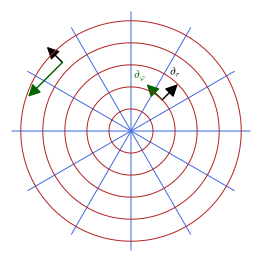
figures/polar_grid.sage.
Nothing in the definition requires the inner product to be positive, only that it be non-degenerate. The metric of special relativity is the standard example of a metric that is not: it assigns positive, zero and negative norms to different vectors, and it is the metric of every spacetime factor in later chapters.
Example 143 (The Minkowski metric) On \mathbb{R}^4, \eta = \operatorname{diag}(1, -1, -1, -1) is a metric: non-degenerate (Proposition 12), but \eta(X, X) can be positive (for X = \partial_t), zero (for X = \partial_t + \partial_x) or negative (for X = \partial_x). It is the metric of special relativity, and of the spacetime factor of every Kaluza-Klein product.
The third example is a metric on a manifold that is not a vector space, the sphere. Its components are the Gram matrix of the spherical chart computed in Section 1.1.2, and they show the typical behaviour of a metric in a chart that does not cover the whole manifold: a component degenerates exactly where the chart does.
Example 144 (The round metric) On the sphere, g = d\theta \otimes d\theta + \sin^2\theta\, d\varphi \otimes d\varphi, the Gram matrix of the spherical chart (Proposition 3): g_{\theta\theta} = 1, g_{\varphi\varphi} = \sin^2\theta, non-degenerate on the chart domain. Its unit vectors are drawn in Figure 13 of Section 1.3.2.
The polar components of the Euclidean metric can be produced by SageManifolds rather than by hand: one declares the metric in the Cartesian chart and asks for its components in the polar one. The first exercise does this and reads off the determinant and the inverse, which anticipate the two notions defined below.
Exercise 148 (The polar metric with SageManifolds) Declare the Euclidean metric of the plane in Cartesian coordinates, display it in polar coordinates, and compute its determinant, inverse and volume element there.
g^{-1} = \operatorname{diag}(1, 1/r^2), \det g = r^2, \sqrt{\det g} = r, the Jacobian of polar coordinates (Section 1.3.2):
M = Manifold(2, "R^2", structure="Riemannian")
cart = M.chart("x y"); x, y = cart[:]
U = M.open_subset("U"); pol = U.chart(r"r:(0,+oo) ph:(0,2*pi):\varphi"); r, ph = pol[:]
tr = pol.transition_map(cart.restrict(U), (r*cos(ph), r*sin(ph))); tr.set_inverse(sqrt(x**2 + y**2), atan2(y, x), check=False)
g = M.metric("g"); g[0, 0] = 1; g[1, 1] = 1 # Euclidean metric in Cartesian coordinates
gU = g.restrict(U)
print("metric in polar coordinates:", gU.display(pol.frame(), pol))
print("components:", gU[pol.frame(), :, pol])
print("determinant:", gU.determinant(pol.frame()).expr(pol))
print("inverse metric:", gU.inverse().display(pol.frame(), pol))
print("volume element sqrt(det g) =", sqrt(gU.determinant(pol.frame()).expr(pol)).simplify_full(), " (the Jacobian r of polar coordinates)")Output:
metric in polar coordinates: g = dr⊗dr + r^2 dph⊗dph
components: [ 1 0]
[ 0 r^2]
determinant: r^2
inverse metric: inv_g = ∂/∂r⊗∂/∂r + r^(-2) ∂/∂ph⊗∂/∂ph
volume element sqrt(det g) = r (the Jacobian r of polar coordinates)Veriphy. Pending.
Lean.
/-- `det g = r²` for the polar metric. -/
theorem polar_det (x : Fin 2 → ℝ) : (metricAt polar x).det = x 0 ^ 2KaluzaKlein.Geometry.polar_det in KaluzaKlein/Geometry/MetricExamples.lean, namespace KaluzaKlein.Geometry
Sage. Pending.
The two conditions of the definition, symmetry and non-degeneracy, are best learned on candidates that fail them in different ways. Four symmetric tensor fields on the plane follow; the reader should find a point where the determinant vanishes, or conclude that there is none, and classify the survivors by the sign of g(X, X).
Exercise 149 (Which symmetric tensor fields are metrics?) Decide which of dx \otimes dx + dy \otimes dy, dx \otimes dy + dy \otimes dx, x^2\,dx \otimes dx + dy \otimes dy and dx \otimes dx - dy \otimes dy are metrics on \mathbb{R}^2, and for those that are, say whether g(X, X) can be negative.
All four are symmetric. The matrices are \begin{pmatrix} 1 & 0 \\ 0 & 1 \end{pmatrix}, \begin{pmatrix} 0 & 1 \\ 1 & 0 \end{pmatrix}, \begin{pmatrix} x^2 & 0 \\ 0 & 1 \end{pmatrix} and \begin{pmatrix} 1 & 0 \\ 0 & -1 \end{pmatrix} with determinants 1, -1, x^2 and -1. The third is degenerate along the line x = 0, where \partial_x has zero length, so it is not a metric on \mathbb{R}^2 (it is one on either half-plane). The other three are metrics: the first is positive, g(X, X) = (X^x)^2 + (X^y)^2 > 0 for X \neq 0; the second gives g(X, X) = 2X^xX^y, negative for X = \partial_x - \partial_y; the fourth gives (X^x)^2 - (X^y)^2, negative for X = \partial_y. The last two are the two-dimensional Minkowski metric in different coordinates.
The definition says that non-degeneracy must hold “in every chart”, which would be a lot to check if it were not automatic. The third exercise asks for the transformation law of the components under a change of chart and for the consequence that the determinant can only vanish in all charts at once.
Exercise 150 (Non-degeneracy does not depend on the chart) Derive the transformation law g'_{kl} = \dfrac{\partial x^i}{\partial x'^k}\dfrac{\partial x^j}{\partial x'^l}\, g_{ij} of the components under a change of chart x \mapsto x', deduce that \det g' = (\det J)^2\det g with J = \partial x/\partial x' the Jacobian, and conclude that \det g \neq 0 in one chart implies \det g' \neq 0 in every overlapping chart. Check the formula on the polar chart of the plane.
Since g is a tensor field, g = g_{ij}\,dx^i \otimes dx^j and dx^i = (\partial x^i/\partial x'^k)\,dx'^k; substituting gives the components g'_{kl} as stated, which in matrix form reads g' = J^{\mathsf{T}} g J. Taking determinants, \det g' = (\det J)^2\det g, and \det J \neq 0 on the overlap of two charts because the transition map is a diffeomorphism. So \det g' and \det g vanish at the same points: non-degeneracy is a property of the metric. For the polar chart, J = \begin{pmatrix} \cos\varphi & -r\sin\varphi \\ \sin\varphi & r\cos\varphi \end{pmatrix} has \det J = r, so \det g_{\text{polar}} = r^2 \cdot 1, as Proposition 11 states; the zero at r = 0 belongs to the chart, not to the metric.
Since a metric is non-degenerate, its eigenvalues at a point are all non-zero, and what remains to classify is how many are positive and how many negative. The signature of Linear algebra records exactly this, and the next definition applies it pointwise and names the two cases that physics uses.
Definition 38 (Signature of a metric) The signature of a metric is the signature (Definition 14 of Linear algebra) of the symmetric bilinear form g_p on each tangent space; it is the same at every point of a connected manifold. A Riemannian metric is positive definite, g(X, X) > 0 for X \neq 0; a Lorentzian metric has one positive sign, the time direction, and the rest negative, written (+, -, -, -) in our conventions.
Veriphy. Pending.
Lean. Pending.
Sage. Pending.
Riemannian metrics are the ones that measure genuine lengths, and the first example shows that every surface sitting inside Euclidean space carries one. The argument is a single line: the Gram matrix is positive because it computes the squared Euclidean length of an ambient velocity.
Example 145 (Riemannian examples) The Euclidean metric, the Gram matrix of any embedding into Euclidean space (its eigenvalues are positive since v^{\mathsf{T}}Gv = |Jv|^2 > 0), and every internal space of these lectures: the circle, the sphere, the torus, SU(2).
Lorentzian metrics are the metrics of spacetime, and the second example collects those that appear later. It also shows how the sign convention for a product metric is fixed: the internal directions are counted negative so that the enlarged metric still has exactly one positive direction.
Example 146 (Lorentzian examples) The Minkowski metric and the de Sitter metric of The Einstein equations; a Kaluza-Klein metric on M_4 \times S^1, with the circle direction counted negative, has five eigenvalues of signs (+, -, -, -, -), Lorentzian in five dimensions.
A zero eigenvalue of the component matrix does not necessarily mean a degenerate metric, because the matrix belongs to a chart. The third example makes this distinction on the sphere, where a second chart shows the metric to be perfectly regular at the point where the first chart gives up.
Example 147 (Where a chart fails) At \theta = 0 the matrix \operatorname{diag}(1, \sin^2\theta) has a zero eigenvalue: the round metric is not degenerate there, the spherical chart is. In a chart valid at the pole (stereographic) the components are 4\,\delta_{ij}/(1 + u^2 + v^2)^2 (Exercise 47), positive definite everywhere.
Vectors of zero norm are the hallmark of indefinite signature, and in Minkowski space they form the light cone. The first exercise finds them in the (t, x) plane and asks why a Riemannian metric has none, which is the content of positive definiteness.
Exercise 151 (Null vectors of the Minkowski metric) Find all vectors X = a\,\partial_t + b\,\partial_x with \eta(X, X) = 0, and show that a Riemannian metric has no non-zero null vectors.
\eta(X, X) = a^2 - b^2 = 0 iff b = \pm a: the two null lines X = a(\partial_t \pm \partial_x), the light cone of Figure 3 of Linear algebra. For a Riemannian metric g(X, X) > 0 whenever X \neq 0, by positive definiteness, so g(X, X) = 0 forces X = 0.
For a constant metric the signature is a matter of linear algebra, and Sage computes it from the matrix. The second exercise runs this on the Minkowski metric, on its five-dimensional extension and on three 2 \times 2 matrices with cross terms, one of which turns out not to be a metric at all.
Exercise 152 (Signatures with Sage) Compute with Sage the signature of \eta = \operatorname{diag}(1, -1, -1, -1), of \operatorname{diag}(1, -1, -1, - 1, -1) and of the matrices \begin{pmatrix} 1 & 2 \\ 2 & 1 \end{pmatrix}, \begin{pmatrix} 2 & 1 \\ 1 & 2 \end{pmatrix} and \begin{pmatrix} 1 & 2 \\ 2 & 4 \end{pmatrix}, and classify each as Riemannian, Lorentzian or degenerate.
QuadraticForm(QQ, 2*G).signature_vector() returns the numbers of positive, negative and zero eigenvalues. The Minkowski metric has signature (1, 3, 0) and the five-dimensional one (1, 4, 0), both Lorentzian. The matrix with entries 1, 2, 2, 1 has eigenvalues 3 and -1, signature (1, 1, 0): a two-dimensional Lorentzian metric in disguise. The matrix with entries 2, 1, 1, 2 has eigenvalues 1, 3 and is Riemannian. The last has determinant 0 and signature (1, 0, 1): degenerate, not a metric.
def signature(G):
return QuadraticForm(QQ, 2 * G).signature_vector() # (positive, negative, zero) counts of eigenvalues
eta = diagonal_matrix(QQ, [1, -1, -1, -1])
print("Minkowski eta = diag(1, -1, -1, -1): signature (p, q, z) =", signature(eta), "; det =", eta.det())
g5 = diagonal_matrix(QQ, [1, -1, -1, -1, -1])
print("five-dimensional diag(1, -1, -1, -1, -1): signature", signature(g5), "; det =", g5.det())
A = matrix(QQ, [[1, 2], [2, 1]]); B = matrix(QQ, [[2, 1], [1, 2]]); C = matrix(QQ, [[1, 2], [2, 4]])
for name, G in [("[[1, 2], [2, 1]]", A), ("[[2, 1], [1, 2]]", B), ("[[1, 2], [2, 4]]", C)]:
print(name, ": eigenvalues", sorted(G.eigenvalues()), "; signature", signature(G), "; det", G.det(), "; non-degenerate:", G.det() != 0)Output:
Minkowski eta = diag(1, -1, -1, -1): signature (p, q, z) = (1, 3, 0) ; det = -1
five-dimensional diag(1, -1, -1, -1, -1): signature (1, 4, 0) ; det = 1
[[1, 2], [2, 1]] : eigenvalues [-1, 3] ; signature (1, 1, 0) ; det -3 ; non-degenerate: True
[[2, 1], [1, 2]] : eigenvalues [1, 3] ; signature (2, 0, 0) ; det 3 ; non-degenerate: True
[[1, 2], [2, 4]] : eigenvalues [0, 5] ; signature (1, 0, 1) ; det 0 ; non-degenerate: FalseThe definition asserts that the signature is the same at every point of a connected manifold, and the third exercise asks for the proof. The idea is that eigenvalues move continuously with the point and cannot cross zero without the determinant vanishing.
Exercise 153 (The signature is constant) Prove that the number of positive eigenvalues of g_{ij}(p) is the same at every point p of a connected manifold. Use that the eigenvalues of a symmetric matrix depend continuously on its entries and that \det g_{ij} \neq 0 everywhere.
Order the eigenvalues \lambda_1(p) \leq \dots \leq \lambda_n(p) of the component matrix; each is a continuous function of p within a chart, and none vanishes since their product is \det g \neq 0. A continuous function that never vanishes keeps its sign on a connected set, so each \lambda_k has a constant sign on the chart domain, and the number p of positive eigenvalues is constant there. On an overlap, g' = J^{\mathsf{T}}gJ has the same signature as g by Sylvester’s law (Definition 14 of Linear algebra), so the count agrees between charts. The set of points where the count equals a given value is therefore open, and its complement is a union of such open sets; on a connected manifold a set that is open and closed is everything or nothing, so the count is constant.
Line element and inverse metric
Writing a metric as a tensor with \otimes signs is precise but cumbersome, and the physics literature almost always writes it as a quadratic expression in the coordinate differentials instead. The next definition fixes what this shorthand means, in particular how a cross term is to be read.
Definition 39 (Line element) The line element ds^2 = g_{ij}\,dx^i dx^j is the shorthand for the metric that lists its components as the coefficients of the quadratic expression in the coordinate differentials, with dx^i dx^j standing for the symmetrised product \tfrac12(dx^i \otimes dx^j + dx^j \otimes dx^i), so that a cross term 2g_{ij}\,dx^i dx^j (i \neq j) counts both orderings.
Veriphy. Pending.
Lean. Pending.
Sage. Pending.
The first example is the Euclidean plane again, now written in the new notation in both charts. Comparing the two expressions is a good way to see that the line element encodes the metric, not the coordinates: the same object appears with constant coefficients in one chart and with r^2 in the other.
Example 148 (Polar coordinates) ds^2 = dr^2 + r^2d\varphi^2 encodes g_{rr} = 1, g_{\varphi\varphi} = r^2, g_{r\varphi} = 0; in Cartesian coordinates the same metric reads ds^2 = dx^2 + dy^2.
The line elements of the sphere, of a sphere of any radius and of Minkowski space are the three that will be written most often in this book. Note in the last one the signs of our convention: one plus for time, three minus signs for space.
Example 149 (Spheres and Minkowski space) ds^2 = d\theta^2 + \sin^2\theta\,d\varphi^2 is the unit sphere, ds^2 = R^2(d\theta^2 + \sin^2\theta\, d\varphi^2) the sphere of radius R, and ds^2 = dt^2 - dx^2 - dy^2 - dz^2 Minkowski space.
A line element with a cross term is where the convention about symmetrised products matters, and the metric of SU(2) in Euler angles provides one. The example reads off the matrix entries from it, with the factor of 2 in the cross term split between the two off-diagonal positions.
Example 150 (A cross term) ds^2 = \tfrac14(d\theta^2 + d\varphi^2 + d\psi^2 + 2\cos\theta\,d\varphi\,d\psi), the SU(2) metric of Section 1.3.3, encodes g_{\varphi\varphi} = g_{\psi\psi} = \tfrac14 and g_{\varphi\psi} = g_{\psi\varphi} = \tfrac14\cos\theta: the cross term 2g_{\varphi\psi}\,d\varphi\,d\psi counts both orderings.
Translating between a line element and a matrix of components is the first thing to practise, and the two directions should become automatic. The first exercise gives two line elements with cross terms, one Riemannian and one Lorentzian, and asks for their matrices, determinants and signatures.
Exercise 154 (Reading off the components) Write down the component matrices of ds^2 = 4\,du^2 + 6\,du\,dv + 9\,dv^2 and of ds^2 = dt^2 - 2\,dt\,dx, compute their determinants and decide whether each is Riemannian or Lorentzian.
The cross term 6\,du\,dv = 2g_{uv}\,du\,dv gives g_{uv} = 3, so the first matrix is \begin{pmatrix} 4 & 3 \\ 3 & 9 \end{pmatrix} with determinant 36 - 9 = 27 > 0; both eigenvalues are positive (their sum is 13 and their product 27), so it is Riemannian. The second has g_{tt} = 1, g_{tx} = -1, g_{xx} = 0, matrix \begin{pmatrix} 1 & -1 \\ -1 & 0 \end{pmatrix} with determinant -1 < 0: one eigenvalue of each sign, Lorentzian, although no dx^2 term appears. Both are inverted in Exercise 158.
A change of coordinates is carried out on a line element by substituting the differentials, and SageManifolds does the substitution as a pullback. The second exercise applies this to the parabolic coordinates of the plane, where the result is a conformal multiple of the flat line element, like the stereographic chart of the sphere.
Exercise 155 (Parabolic coordinates) With SageManifolds, find the line element of the Euclidean plane in the parabolic coordinates x = uv, y = \tfrac12(u^2 - v^2), and its determinant and inverse. Is the chart orthogonal?
dx = v\,du + u\,dv and dy = u\,du - v\,dv give dx^2 + dy^2 = (u^2 + v^2)(du^2 + dv^2): the chart is orthogonal and even conformal, with \det g = (u^2 + v^2)^2 and inverse (u^2 + v^2)^{-1}\delta^{ij}. The chart degenerates at the origin only.
M = Manifold(2, "R^2", structure="Riemannian"); cart = M.chart("x y")
g = M.metric("g"); g[0, 0] = 1; g[1, 1] = 1
P = Manifold(2, "P", structure="Riemannian"); par = P.chart("u:(0,+oo) v:(0,+oo)"); u, v = par[:]
Phi = P.diff_map(M, {(par, cart): [u*v, (u**2 - v**2)/2]})
h = P.metric("h"); h.set(Phi.pullback(g))
print("line element in parabolic coordinates:", h.display())
print("components:"); print(h[:])
print("conformal to the flat chart metric with factor u^2 + v^2:", bool(h[0, 0].expr() == u**2 + v**2) and bool(h[1, 1].expr() == u**2 + v**2) and bool(h[0, 1].expr() == 0))
print("determinant:", h.determinant().expr().factor())
print("inverse metric:", h.inverse().display())Output:
line element in parabolic coordinates: h = (u^2 + v^2) du⊗du + (u^2 + v^2) dv⊗dv
components:
[u^2 + v^2 0]
[ 0 u^2 + v^2]
conformal to the flat chart metric with factor u^2 + v^2: True
determinant: (u^2 + v^2)^2
inverse metric: inv_h = 1/(u^2 + v^2) ∂/∂u⊗∂/∂u + 1/(u^2 + v^2) ∂/∂v⊗∂/∂vWhy is the symmetrised product the right reading of dx^i dx^j, and why does the line element determine the metric at all? The third exercise asks for both facts, and for the substitution rule that underlies the previous exercise; together they justify the use of ds^2 as a complete description of a metric.
Exercise 156 (The line element determines the metric) Show that ds^2 evaluated on a vector X, that is, g_{ij}X^iX^j, is g(X, X); that two symmetric tensors with the same values g(X, X) for all X are equal; and that an antisymmetric part of g_{ij} would be invisible in ds^2. Then show that substituting dx^i = (\partial x^i/\partial x'^k)\,dx'^k into ds^2 reproduces the transformation law of Exercise 150.
With dx^i(X) = X^i, the symmetrised product gives \tfrac12(X^iX^j + X^jX^i) = X^iX^j, so ds^2(X) = g_{ij}X^iX^j = g(X, X). For symmetric g the polarisation identity g(X, Y) = \tfrac12\big(g(X + Y, X + Y) - g(X, X) - g(Y, Y)\big) recovers all values from the diagonal ones, so the quadratic form determines the tensor. An antisymmetric a_{ij} gives a_{ij}X^iX^j = 0 for every X, so it contributes nothing to ds^2; this is why the line element can only describe symmetric tensors, and why dx^i dx^j must be read symmetrically. Substituting the differentials, g_{ij}\,dx^i dx^j = g_{ij}\,\dfrac{\partial x^i}{\partial x'^k}\dfrac{\partial x^j}{\partial x'^l} \,dx'^k dx'^l, whose coefficients are g'_{kl} as in Exercise 150.
Non-degeneracy was built into the definition of a metric for one purpose: to be able to invert it. The inverse matrix of the components is itself a tensor, of the opposite type, and it is the tool that converts one-forms back into vectors in the next section.
Definition 40 (Inverse metric) The inverse metric g^{ij} is the inverse matrix of g_{ij}, g^{ik}g_{kj} = \delta^i_j; it exists because the metric is non-degenerate, and it is a symmetric tensor field of type (2, 0).
Veriphy. Pending.
Lean. In Lean, (metricAt g x)⁻¹ is the matrix inverse, equal to the inverse metric wherever the determinant is non-zero.
Sage. Pending.
Most metrics met in practice are diagonal in a well-chosen chart, and then the inverse is immediate. The first example lists the inverses of the three running metrics, including the Minkowski metric, which is its own inverse because its entries are \pm 1.
Example 151 (Diagonal metrics) For a diagonal metric the inverse is the diagonal of reciprocals: g^{rr} = 1, g^{\varphi\varphi} = 1/r^2 for polar coordinates (Proposition 11), g^{\theta\theta} = 1, g^{\varphi\varphi} = 1/\sin^2\theta for the sphere (Proposition 13), \eta^{\mu\nu} = \operatorname{diag}(1, -1, -1, -1) for Minkowski space.
With a cross term the inverse mixes components, and the 2 \times 2 formula shows how: the off-diagonal entries change sign and everything is divided by the determinant. The example inverts the lower block of the SU(2) metric and notes where the inverse ceases to exist.
Example 152 (A 2 \times 2 block with a cross term) For \begin{pmatrix} 1 & \cos\theta \\ \cos\theta & 1 \end{pmatrix} the inverse is \frac{1}{\sin^2\theta} \begin{pmatrix} 1 & -\cos\theta \\ -\cos\theta & 1 \end{pmatrix}, which exists where \sin\theta \neq 0; this is the lower block of the SU(2) inverse metric of Section 1.3.3.
A metric proportional to the identity is the simplest non-constant case, and its inverse is the reciprocal multiple. The example records this for the stereographic chart of the sphere, whose conformal factor will matter when angles are discussed.
Example 153 (A conformal metric) For g_{ij} = \Omega^2 \delta_{ij} (the stereographic metric, with \Omega = 2/(1 + u^2 + v^2)) the inverse is g^{ij} = \Omega^{-2}\delta^{ij}: the inverse of a multiple of the identity is the reciprocal multiple.
The 2 \times 2 block of the SU(2) metric comes with a factor \tfrac14, and the first exercise asks for the inverse with that factor included. Besides the formula, the point is to locate the values of \theta where the inverse does not exist and to interpret them.
Exercise 157 (Inverting a cross term) Invert g = \tfrac14\begin{pmatrix} 1 & \cos\theta \\ \cos\theta & 1\end{pmatrix} and state where the inverse exists.
\det g = \tfrac{1}{16}(1 - \cos^2\theta) = \tfrac{1}{16}\sin^2\theta, and g^{-1} = \frac{4}{\sin^2\theta} \begin{pmatrix} 1 & -\cos\theta \\ -\cos\theta & 1 \end{pmatrix}, which exists for \sin\theta \neq 0; at \theta = 0 the two rows coincide and the Euler chart of SU(2) degenerates.
SageManifolds inverts a metric with .inverse() and checks the result by multiplying back. The second exercise applies it to the two constant metrics of Exercise 154, the Lorentzian one being instructive because its inverse has a non-zero xx entry although the metric itself has none.
Exercise 158 (Inverses with SageManifolds) Declare ds^2 = 4\,du^2 + 6\,du\,dv + 9\,dv^2 and ds^2 = dt^2 - 2\,dt\,dx as metrics in SageManifolds, compute their inverses, and check g^{ik}g_{kj} = \delta^i_j for both.
For the first, g^{-1} = \tfrac{1}{27}\begin{pmatrix} 9 & -3 \\ -3 & 4 \end{pmatrix}. For the second, g^{-1} = \begin{pmatrix} 0 & -1 \\ -1 & -1 \end{pmatrix}: the inverse acquires an xx entry. The eigenvalues (1 \pm \sqrt5)/2 of the second matrix have opposite signs, confirming the Lorentzian signature.
M = Manifold(2, "M", structure="Riemannian"); X = M.chart("u v")
g = M.metric("g"); g[0, 0] = 4; g[0, 1] = 3; g[1, 1] = 9
print("g =", g.display()); print("det g =", g.determinant().expr()); print("inverse:", g.inverse().display())
print("g^{-1} g = 1:", bool(g.inverse()[:] * g[:] == identity_matrix(2)))
N = Manifold(2, "N", structure="Lorentzian", signature="negative"); Y = N.chart("t x")
h = N.metric("h"); h[0, 0] = 1; h[0, 1] = -1 # ds^2 = dt^2 - 2 dt dx, no dx^2 term
print("h =", h.display()); print("det h =", h.determinant().expr(), " (negative: Lorentzian)"); print("inverse:", h.inverse().display())
print("h^{-1} h = 1:", bool(h.inverse()[:] * h[:] == identity_matrix(2)))
print("eigenvalues of the matrix of h:", matrix(QQ, [[h[i, j].expr() for j in range(2)] for i in range(2)]).eigenvalues(), " -> one positive, one negative")Output:
g = g = 4 du⊗du + 3 du⊗dv + 3 dv⊗du + 9 dv⊗dv
det g = 27
inverse: inv_g = 1/3 ∂/∂u⊗∂/∂u - 1/9 ∂/∂u⊗∂/∂v - 1/9 ∂/∂v⊗∂/∂u + 4/27 ∂/∂v⊗∂/∂v
g^{-1} g = 1: True
h = h = dt⊗dt - dt⊗dx - dx⊗dt
det h = -1 (negative: Lorentzian)
inverse: inv_h = -∂/∂t⊗∂/∂x - ∂/∂x⊗∂/∂t - ∂/∂x⊗∂/∂x
h^{-1} h = 1: True
eigenvalues of the matrix of h: [-0.618033988749895?, 1.618033988749895?] -> one positive, one negativeThe definition claims that the inverse components form a tensor of type (2, 0), and the third exercise proves it from the transformation law of g_{ij}. It also establishes the block-diagonal rule that makes product metrics easy to invert in Section 1.3.3.
Exercise 159 (The inverse metric is a (2, 0) tensor) From g' = J^{\mathsf{T}} g J under a change of chart (Exercise 150), derive the transformation law of g^{-1} and identify it as that of a tensor of type (2, 0). Show also that the inverse of a block-diagonal metric is block diagonal, with the inverses of the blocks.
Inverting g' = J^{\mathsf{T}} g J gives g'^{-1} = J^{-1}g^{-1}J^{-\mathsf{T}}, that is, g'^{kl} = \dfrac{\partial x'^k}{\partial x^i}\dfrac{\partial x'^l}{\partial x^j}\,g^{ij}, since J^{-1} = \partial x'/\partial x. Two factors of the inverse Jacobian is the transformation law of a tensor with two upper indices (Definition 28). For g = \begin{pmatrix} A & 0 \\ 0 & B \end{pmatrix} with A, B invertible, \begin{pmatrix} A^{-1} & 0 \\ 0 & B^{-1} \end{pmatrix} multiplies g to the identity block by block, and the inverse is unique.
The three propositions that close this section record the component matrices, determinants and inverses of the polar, Minkowski and round metrics. They are the facts every later computation on these spaces relies on, and each is followed by examples that evaluate the matrices and extend them, and by exercises that redo the computation in other charts.
Proposition 11 (The polar metric) The polar metric has matrix \operatorname{diag}(1, r^2), determinant r^2 and inverse \operatorname{diag}(1, 1/r^2) for r \neq 0.
Veriphy. Pending.
Lean. KaluzaKlein.Geometry.polar_metricAt, KaluzaKlein.Geometry.polar_det and KaluzaKlein.Geometry.polar_invMetric.
/-- The inverse of the polar metric is `diag(1, 1/r²)` away from the origin. -/
theorem polar_invMetric (x : Fin 2 → ℝ) (h : x 0 ≠ 0) :
(metricAt polar x)⁻¹ = !![1, 0; 0, 1 / x 0 ^ 2]KaluzaKlein.Geometry.polar_invMetric in KaluzaKlein/Geometry/MetricExamples.lean, namespace KaluzaKlein.Geometry
Sage. Pending.
The matrix \operatorname{diag}(1, r^2) is best understood by evaluating it at a few radii and comparing with the unit ellipses of Figure 13. The first example does this and watches the determinant shrink to zero at the origin, where the polar chart fails.
Example 154 (The polar metric at a few points) At r = 1 the matrix is the identity and the unit vectors of g form a round circle in the chart plane; at r = 2 it is \operatorname{diag}(1, 4), with |\partial_\varphi| = 2, so the unit vectors form an ellipse of \varphi semi-axis \tfrac12; at r = \tfrac12 the ellipse is elongated along \varphi. The determinant r^2 tends to zero as r \to 0, where the rays of Figure 12 meet and the chart stops being one-to-one.
The inverse in the proposition carries the hypothesis r \neq 0, and it is worth seeing exactly what goes wrong without it. The second example checks the inverse by multiplication and shows that at the origin no inverse exists.
Example 155 (The inverse and the origin) For r \neq 0, \operatorname{diag}(1, r^2)\operatorname{diag}(1, 1/r^2) = \operatorname{diag}(1, 1), so the proposition’s inverse is correct, and the determinant r^2 is the product of the diagonal entries. At r = 0 the matrix is \operatorname{diag}(1, 0): for every matrix M the product M\operatorname{diag}(1, 0) has zero second column, so it is never the identity and no inverse exists. Geometrically, |\partial_\varphi| = r vanishes at the origin, where all values of \varphi label the same point, and the inverse component 1/r^2, the squared length of d\varphi, blows up.
Veriphy. Pending.
Lean. polar_metricAt states that metricAt polar x is the matrix !![1, 0; 0, x 0 ^ 2], that is, \operatorname{diag}(1, r^2) with r = x 0 (a chart point is x : Fin 2 → ℝ); polar_det states that its determinant is x 0 ^ 2; and polar_invMetric states, under the hypothesis x 0 ≠ 0, that the matrix inverse is !![1, 0; 0, 1 / x 0 ^ 2]. The hypothesis is needed because Lean’s ⁻¹ of a singular matrix is the zero matrix.
Sage. Pending.
The polar metric reappears inside every metric that has an axis of symmetry. The third example embeds it in cylindrical coordinates on \mathbb{R}^3, where a constant dz^2 is added and the determinant and inverse change in the obvious way; spherical coordinates follow in Exercise 160.
Example 156 (Cylindrical coordinates) In cylindrical coordinates (r, \varphi, z) on \mathbb{R}^3 the Euclidean metric is ds^2 = dr^2 + r^2d\varphi^2 + dz^2, with matrix \operatorname{diag}(1, r^2, 1), determinant r^2 and inverse \operatorname{diag}(1, 1/r^2, 1) for r \neq 0: the polar block of Proposition 11 sits inside, and the z-direction contributes a constant block. The volume element r\,dr\,d\varphi\,dz is the familiar one of cylindrical integrals.
Spherical coordinates on \mathbb{R}^3 are the next case after cylindrical ones, and the metric is again diagonal with two non-constant entries. The first exercise obtains it with SageManifolds by pulling back the Cartesian metric, and compares with the cylindrical result.
Exercise 160 (Spherical coordinates with SageManifolds) Compute with SageManifolds the Euclidean metric of \mathbb{R}^3 in spherical coordinates (\rho, \theta, \varphi), with x = \rho\sin\theta\cos\varphi, y = \rho\sin\theta\sin\varphi, z = \rho\cos\theta, and in cylindrical coordinates; give the matrices, determinants and inverses.
ds^2 = d\rho^2 + \rho^2d\theta^2 + \rho^2\sin^2\theta\,d\varphi^2, with \det g = \rho^4\sin^2\theta and inverse \operatorname{diag}(1, \rho^{-2}, \rho^{-2}\sin^{-2}\theta); the angular block is \rho^2 times the round metric of Proposition 13. In cylindrical coordinates ds^2 = dr^2 + r^2d\varphi^2 + dz^2 with \det g = r^2.
E3 = Manifold(3, "R^3", structure="Riemannian"); cart = E3.chart("x y z")
delta = E3.metric("delta"); delta[0, 0] = 1; delta[1, 1] = 1; delta[2, 2] = 1
S = Manifold(3, "S", structure="Riemannian"); sph = S.chart(r"rho:(0,+oo):\rho th:(0,pi):\theta ph:(0,2*pi):\varphi"); rho, th, ph = sph[:]
Phi = S.diff_map(E3, {(sph, cart): [rho*sin(th)*cos(ph), rho*sin(th)*sin(ph), rho*cos(th)]})
g = S.metric("g"); g.set(Phi.pullback(delta))
print("spherical coordinates:", g.display())
print("matrix:"); print(g[:])
print("determinant:", g.determinant().expr().simplify_full(), " -> volume element rho^2 sin(theta)")
print("inverse metric:", g.inverse().display())
C = Manifold(3, "C", structure="Riemannian"); cyl = C.chart(r"r:(0,+oo) ph:(0,2*pi):\varphi z"); r, phc, z = cyl[:]
Psi = C.diff_map(E3, {(cyl, cart): [r*cos(phc), r*sin(phc), z]})
gc = C.metric("g"); gc.set(Psi.pullback(delta))
print("cylindrical coordinates:", gc.display(), "; det =", gc.determinant().expr().simplify_full(), "; inverse:", gc.inverse().display())Output:
spherical coordinates: g = drho⊗drho + rho^2 dth⊗dth + rho^2*sin(th)^2 dph⊗dph
matrix:
[ 1 0 0]
[ 0 rho^2 0]
[ 0 0 rho^2*sin(th)^2]
determinant: rho^4*sin(th)^2 -> volume element rho^2 sin(theta)
inverse metric: inv_g = ∂/∂rho⊗∂/∂rho + rho^(-2) ∂/∂th⊗∂/∂th + 1/(rho^2*sin(th)^2) ∂/∂ph⊗∂/∂ph
cylindrical coordinates: g = dr⊗dr + r^2 dph⊗dph + dz⊗dz ; det = r^2 ; inverse: inv_g = ∂/∂r⊗∂/∂r + r^(-2) ∂/∂ph⊗∂/∂ph + ∂/∂z⊗∂/∂zReplacing the radius by its logarithm turns the polar metric into a conformal one, a trick that is used whenever the plane minus the origin is to be compared with a cylinder. The second exercise carries out the substitution by hand and recomputes the determinant and the inverse.
Exercise 161 (Log-polar coordinates) With r = e^u, write the polar metric in the coordinates (u, \varphi), and find its determinant and inverse. Which metric on the cylinder \mathbb{R} \times S^1 does it become after dividing by e^{2u}?
dr = e^u\,du, so ds^2 = e^{2u}du^2 + e^{2u}d\varphi^2 = e^{2u}(du^2 + d\varphi^2): a conformal multiple of the flat metric of the cylinder, with \det g = e^{4u} and inverse e^{-2u}\delta^{ij}, both defined for every u, since r = e^u never reaches the origin. Dividing by e^{2u} gives du^2 + d\varphi^2, the flat cylinder metric of Example 187: the punctured plane and the cylinder are conformally equivalent.
The three metrics of this section are all diagonal, and the pattern of their determinants and inverses is general. The third exercise formulates it for an arbitrary orthogonal chart in terms of scale factors, and asks the reader to identify those factors in the examples met so far.
Exercise 162 (Orthogonal charts and scale factors) For a metric that is diagonal in a chart, ds^2 = h_1^2\,(dx^1)^2 + \dots + h_n^2\,(dx^n)^2 with positive functions h_i (the scale factors), give the determinant, the volume element and the inverse, and identify the scale factors of the polar, cylindrical, spherical and round metrics.
\det g = h_1^2\cdots h_n^2, so \sqrt{\det g} = h_1\cdots h_n, and g^{-1} = \operatorname{diag}(h_1^{-2}, \dots, h_n^{-2}), since the inverse of a diagonal matrix is the diagonal of reciprocals. Polar: (h_r, h_\varphi) = (1, r); cylindrical: (1, r, 1); spherical: (1, \rho, \rho\sin\theta); round metric: (1, \sin\theta). The scale factor h_i is the length |\partial_i| of the coordinate vector, and the volume element is the product of these lengths, the volume of the coordinate box.
The Minkowski metric is constant, so its determinant is a single number, but that number carries information: its sign records the signature. The proposition fixes it, and the examples that follow explain what the sign means, why isometries preserve it, and what changes in five dimensions.
Proposition 12 (The Minkowski metric is non-degenerate) \det \eta = -1 for \eta = \operatorname{diag}(1, -1, -1, -1) as a metric on \mathbb{R}^4.
Veriphy. Pending.
Lean. KaluzaKlein.Geometry.minkowski_det.
Sage. Pending.
The determinant of a diagonal matrix is the product of its entries, and here three of them are -1. The first example draws the general conclusion that the sign of the determinant counts the negative directions, which is why the volume element of a four-dimensional spacetime is written with -g under the root.
Example 157 (The sign of the determinant) \det\eta = 1 \cdot (-1)^3 = -1: the determinant of a diagonal metric is the product of its entries, and its sign is (-1)^q with q the number of negative eigenvalues. For a Lorentzian metric in four dimensions q = 3 and \det g < 0 in every chart (Exercise 165), so the volume element is \sqrt{-\det g}\,d^4x, written \sqrt{-g}\,d^4x in Section 1.3.2.
A Lorentz transformation preserves \eta, and taking the determinant of the defining relation constrains its own determinant. The second example does this for a boost and verifies the result on the explicit matrix, where the hyperbolic identity \cosh^2 - \sinh^2 = 1 appears.
Example 158 (Boosts preserve the determinant) A Lorentz transformation satisfies \Lambda^{\mathsf{T}}\eta\Lambda = \eta; taking determinants gives (\det\Lambda)^2\det\eta = \det\eta, so \det\Lambda = \pm1. For the boost \Lambda = \begin{pmatrix} \cosh\xi & \sinh\xi \\ \sinh\xi & \cosh\xi \end{pmatrix} in the (t, x) plane, \det\Lambda = \cosh^2\xi - \sinh^2\xi = 1, and the transformed metric \Lambda^{\mathsf{T}}\eta\Lambda is \eta again (Exercise 197), with the same determinant -1.
Adding a fifth, spacelike direction flips the sign of the determinant, and this has a notational consequence that is easy to overlook. The third example computes the determinant of the five-dimensional product metric and explains why its volume element must be written with an absolute value.
Example 159 (Five dimensions) The metric \operatorname{diag}(1, -1, -1, -1, -R^2) on M_4 \times S^1 has determinant (-1)^3 \cdot (-R^2) = R^2 > 0: with four negative directions the determinant is positive, and \sqrt{-g} would be imaginary. The volume element in odd Lorentzian dimension is \sqrt{|\det g|}\,d^5x = R\,d^4x\,d\varphi, which is why the general definition of Section 1.3.2 carries an absolute value.
Sage computes determinants and signatures of constant metrics exactly, and symbolic entries are no obstacle. The first exercise checks the determinant of \eta, of a boosted \eta and of the five-dimensional product metric with a symbolic radius, together with their signatures.
Exercise 163 (Determinants with Sage) Compute with Sage \det\eta and the signature of \eta; check that \Lambda^{\mathsf{T}}\eta\Lambda = \eta for the boost of Example 158 and that \det\Lambda = 1; and compute the determinant and signature of \operatorname{diag}(1, -1, -1, -1, -R^2).
\det\eta = -1 with signature (1, 3, 0); the boosted metric is \eta exactly, after simplifying \cosh^2\xi - \sinh^2\xi, and \det\Lambda = 1; the five-dimensional metric has determinant R^2, so \sqrt{|\det g|} = R, and signature (1, 4, 0).
eta = diagonal_matrix(QQ, [1, -1, -1, -1])
print("det eta =", eta.det(), "; signature (p, q, z) =", QuadraticForm(QQ, 2*eta).signature_vector())
xi = var("xi", domain="real")
L = matrix(SR, [[cosh(xi), sinh(xi), 0, 0], [sinh(xi), cosh(xi), 0, 0], [0, 0, 1, 0], [0, 0, 0, 1]]) # boost along x
boosted = (L.transpose() * eta * L).simplify_full()
print("boost: Lambda^T eta Lambda == eta:", bool(boosted == eta), "; det Lambda =", L.det().simplify_full(), "; det of the boosted metric =", boosted.det())
R = var("R", domain="real"); assume(R > 0)
g5 = diagonal_matrix(SR, [1, -1, -1, -1, -R**2])
print("five-dimensional diag(1, -1, -1, -1, -R^2): det =", g5.det(), " (positive); sqrt|det| =", sqrt(g5.det()).canonicalize_radical())
print("its signature (p, q, z) =", QuadraticForm(QQ, 2*diagonal_matrix(QQ, [1, -1, -1, -1, -1])).signature_vector())Output:
det eta = -1 ; signature (p, q, z) = (1, 3, 0)
boost: Lambda^T eta Lambda == eta: True ; det Lambda = 1 ; det of the boosted metric = -1
five-dimensional diag(1, -1, -1, -1, -R^2): det = R^2 (positive); sqrt|det| = R
its signature (p, q, z) = (1, 4, 0)Non-degeneracy does not require any diagonal entry to be non-zero, as the light-cone coordinates of Minkowski space show. The second exercise rewrites the two-dimensional Minkowski metric in them, finds a matrix with zeros on the diagonal, and inverts it.
Exercise 164 (Light-cone coordinates) With u = t - x and v = t + x, write ds^2 = dt^2 - dx^2 - dy^2 - dz^2 in the coordinates (u, v, y, z), give the component matrix, its determinant and its inverse, and check that the determinant agrees with Exercise 150.
dt^2 - dx^2 = (dt - dx)(dt + dx) = du\,dv, so ds^2 = du\,dv - dy^2 - dz^2 with g_{uv} = g_{vu} = \tfrac12, g_{uu} = g_{vv} = 0. The matrix is block diagonal with blocks \begin{pmatrix} 0 & \tfrac12 \\ \tfrac12 & 0 \end{pmatrix} and -1_2, so \det g = (-\tfrac14)(1) = -\tfrac14 and the inverse has blocks \begin{pmatrix} 0 & 2 \\ 2 & 0 \end{pmatrix} and -1_2. The Jacobian of (t, x) \mapsto (u, v) has determinant 2, so J = \partial(t, x)/\partial(u, v) has \det J = \tfrac12 and \det g' = \tfrac14 \cdot (-1) = -\tfrac14, as found. The coordinate vectors \partial_u and \partial_v are null: the light cone of Exercise 151 has become the coordinate axes.
The sign of the determinant was read off from the diagonal form of \eta, but the claim that it is the same in every chart needs the transformation law. The third exercise proves the general statement for a metric of any signature and spells out the consequence for even and odd dimensions.
Exercise 165 (The sign of the determinant in any chart) Show that a metric of signature (p, q) has \operatorname{sign}\det g = (-1)^q in every chart. Deduce that a Lorentzian metric has negative determinant in even dimension and positive determinant in odd dimension, and identify the two cases in Example 157 and Example 159.
At a point, Sylvester’s law (Definition 14 of Linear algebra) gives a basis in which the matrix of g is \operatorname{diag}(1, \dots, 1, -1, \dots, -1) with q entries -1, so in that basis \det g = (-1)^q. Any other basis is related by an invertible P, and \det(P^{\mathsf{T}}gP) = (\det P)^2\det g has the same sign. A Lorentzian metric has q = n - 1: \det g < 0 for n even (n = 4: \det\eta = -1) and \det g > 0 for n odd (n = 5: R^2). This is why \sqrt{-g} is correct in four dimensions and \sqrt{|g|} is needed in general.
The round metric is the first non-constant metric of the section, and its inverse requires a hypothesis, since the component \sin^2\theta vanishes at the poles. The proposition records the three facts, and the examples evaluate the matrix at a few latitudes, rescale it and compare it with the stereographic chart, where no hypothesis is needed.
Proposition 13 (The round metric, its determinant and its inverse) On the chart domain \sin\theta \neq 0 the metric matrix is \operatorname{diag}(1, \sin^2\theta), its determinant is \sin^2\theta, and its inverse is \operatorname{diag}(1, 1/\sin^2\theta).
Veriphy. Pending.
Lean. KaluzaKlein.Geometry.sphere_metricAt, KaluzaKlein.Geometry.sphere_det and KaluzaKlein.Geometry.sphere_invMetric.
/-- The inverse metric of the sphere: `diag(1, 1/sin²θ)`, away from the poles. -/
theorem sphere_invMetric (x : Fin 2 → ℝ) (h : Real.sin (x 0) ≠ 0) :
invMetric sphere x = !![(1 : ℝ), 0; 0, 1 / Real.sin (x 0) ^ 2]KaluzaKlein.Geometry.sphere_invMetric in KaluzaKlein/Geometry/Metrics.lean, namespace KaluzaKlein.Geometry
Sage. Pending.
The component \sin^2\theta is 1 on the equator and shrinks towards the poles, and the inverse component grows correspondingly. The first example evaluates both at two latitudes and relates them to the lengths of the parallels, which is how the picture of Figure 13 arises.
Example 160 (The round metric at a few latitudes) On the equator \theta = \pi/2 the matrix is the identity: \partial_\theta and \partial_\varphi are orthonormal there, and the parallel has length 2\pi. At \theta = \pi/6 the matrix is \operatorname{diag}(1, \tfrac14) with inverse \operatorname{diag}(1, 4): |\partial_\varphi| = \tfrac12 and the parallel has length \pi. The determinant \sin^2\theta takes the values 1 and \tfrac14, and tends to zero at the poles, where the chart degenerates (Example 147).
Multiplying a metric by a constant is the simplest modification, and it changes determinant and inverse by fixed powers of that constant. The second example applies this to the sphere of radius R, where the rule also predicts how areas and lengths scale.
Example 161 (The sphere of radius R) The metric R^2(d\theta^2 + \sin^2\theta\,d\varphi^2) has matrix R^2\operatorname{diag}(1, \sin^2\theta), determinant R^4\sin^2\theta and inverse R^{-2}\operatorname{diag}(1, 1/\sin^2\theta). In general, multiplying an n-dimensional metric by a constant \lambda multiplies its determinant by \lambda^n and its inverse by \lambda^{-1}; here \sqrt{\det g} = R^2\sin\theta gives the area 4\pi R^2 of Exercise 181.
The hypothesis \sin\theta \neq 0 in the proposition belongs to the chart, not to the metric, and the cleanest way to see this is to compute the same metric in a chart that covers a pole. The third example quotes the stereographic components and checks that their determinant and inverse are regular there.
Example 162 (The same metric in the stereographic chart) In the stereographic chart the round metric is g_{ij} = 4\,\delta_{ij}/(1 + u^2 + v^2)^2 (Exercise 47), with determinant 16/(1 + u^2 + v^2)^4 and inverse \tfrac14(1 + u^2 + v^2)^2\, \delta^{ij}, both finite and non-zero at every point of the chart, including u = v = 0, the pole the spherical chart misses. The two component matrices describe the same tensor field, and Exercise 166 computes the second one.
The stereographic components are quoted in Example 162; the first exercise derives them. The derivation is a pullback of the Euclidean metric through the inverse stereographic projection, which SageManifolds performs and simplifies, and it confirms the regularity at the pole.
Exercise 166 (The round metric in the stereographic chart) With the inverse stereographic projection E(u, v) = \big(2u, 2v, u^2 + v^2 - 1\big)/(1 + u^2 + v^2), compute with SageManifolds the induced metric, its determinant and its inverse, and evaluate the matrix at u = v = 0.
The induced metric is 4\,\delta_{ij}/(1 + u^2 + v^2)^2, with determinant 16/(1 + u^2 + v^2)^4 and inverse \tfrac14(1 + u^2 + v^2)^2\delta^{ij}; at u = v = 0, the image of which is the pole (0, 0, -1), the matrix is \operatorname{diag}(4, 4) with determinant 16: perfectly regular.
E3 = Manifold(3, "R^3", structure="Riemannian"); cart = E3.chart("x y z")
delta = E3.metric("delta"); delta[0, 0] = 1; delta[1, 1] = 1; delta[2, 2] = 1
S = Manifold(2, "S", structure="Riemannian"); st = S.chart("u v"); u, v = st[:]
w = 1 + u**2 + v**2
Phi = S.diff_map(E3, {(st, cart): [2*u/w, 2*v/w, (u**2 + v**2 - 1)/w]})
g = S.metric("g"); g.set(Phi.pullback(delta))
Omega2 = 4/w**2
print("g_uu == 4/(1 + u^2 + v^2)^2:", bool((g[0, 0].expr() - Omega2).simplify_full() == 0), "; g_uv == 0:", bool(g[0, 1].expr().simplify_full() == 0), "; g_vv == g_uu:", bool((g[1, 1].expr() - g[0, 0].expr()).simplify_full() == 0))
print("determinant:", g.determinant().expr().factor())
print("inverse metric component g^uu:", g.inverse()[0, 0].expr().factor(), "; g^uv:", g.inverse()[0, 1].expr().simplify_full())
G0 = matrix([[g[i, j].expr().subs(u=0, v=0).simplify_full() for j in range(2)] for i in range(2)])
print("at u = v = 0 (the south pole (0, 0, -1), where the spherical chart fails) the matrix is", G0.list(), "with determinant", G0.det())Output:
g_uu == 4/(1 + u^2 + v^2)^2: True ; g_uv == 0: True ; g_vv == g_uu: True
determinant: 16/(u^2 + v^2 + 1)^4
inverse metric component g^uu: 1/4*(u^2 + v^2 + 1)^2 ; g^uv: 0
at u = v = 0 (the south pole (0, 0, -1), where the spherical chart fails) the matrix is [4, 0, 0, 4] with determinant 16Another chart of the sphere uses the height z = \cos\theta in place of the colatitude, and in it the round metric has a remarkable determinant. The second exercise asks for the transformation by hand and for the interpretation of the result, a theorem of Archimedes about the area of a zone.
Exercise 167 (The height chart) Write the round metric in the coordinates (z, \varphi) with z = \cos\theta, and compute its determinant and inverse. What does the determinant say about the area of the zone between the heights z_1 and z_2?
dz = -\sin\theta\,d\theta and \sin^2\theta = 1 - z^2, so d\theta^2 = dz^2/(1 - z^2) and ds^2 = \frac{dz^2}{1 - z^2} + (1 - z^2)\,d\varphi^2 , \qquad \det g = 1 , \qquad g^{-1} = \operatorname{diag}(1 - z^2, 1/(1 - z^2)) . The volume element is dz\,d\varphi, so the area of the zone z_1 \leq z \leq z_2 is 2\pi(z_2 - z_1), proportional to its height alone (Archimedes); for z_1 = -1, z_2 = 1 this is 4\pi. The chart is valid for -1 < z < 1, degenerating at the poles like the spherical one.
The sphere is one of many surfaces obtained by rotating a profile curve about an axis, and all of them have metrics of the same shape. The third exercise derives the general formula with SageManifolds using symbolic profile functions and specialises it to four surfaces, two of which are flat.
Exercise 168 (Surfaces of revolution) For the surface (t, \varphi) \mapsto (f(t)\cos\varphi, f(t)\sin\varphi, h(t)) obtained by rotating the profile curve (f, h) about the z-axis, compute with SageManifolds the induced metric, its determinant and its inverse for symbolic f and h, and specialise to the sphere (f = \sin t, h = \cos t), the cylinder (f = R, h = t), the cone (f = h = t) and the torus (f = R + r\cos t, h = r\sin t).
ds^2 = (f'^2 + h'^2)\,dt^2 + f^2\,d\varphi^2: the chart is orthogonal, \det g = f^2(f'^2 + h'^2), and the inverse is \operatorname{diag}(1/(f'^2 + h'^2), 1/f^2). The sphere gives dt^2 + \sin^2 t\,d\varphi^2, the cylinder dt^2 + R^2d\varphi^2, the cone 2\,dt^2 + t^2\,d\varphi^2 and the torus r^2dt^2 + (R + r\cos t)^2 d\varphi^2 of Example 183. Parametrising the profile by arc length, f'^2 + h'^2 = 1, puts every surface of revolution in the form dt^2 + f(t)^2d\varphi^2.
E3 = Manifold(3, "R^3", structure="Riemannian"); cart = E3.chart("x y z")
delta = E3.metric("delta"); delta[0, 0] = 1; delta[1, 1] = 1; delta[2, 2] = 1
S = Manifold(2, "S", structure="Riemannian"); X = S.chart(r"t ph:(0,2*pi):\varphi"); t, ph = X[:]
f = function("f")(t); h = function("h")(t)
Phi = S.diff_map(E3, {(X, cart): [f*cos(ph), f*sin(ph), h]})
g = S.metric("g"); g.set(Phi.pullback(delta))
print("general surface of revolution:", g.display())
print("determinant:", g.determinant().expr().simplify_full())
print("inverse:", g.inverse().display())
R, r = var("R r", domain="real"); assume(R > r); assume(r > 0)
cases = [("sphere (f = sin t, h = cos t)", sin(t), cos(t)), ("cylinder (f = R, h = t)", R, t), ("cone (f = t, h = t)", t, t), ("torus (f = R + r cos t, h = r sin t)", R + r*cos(t), r*sin(t))]
for name, F, H in cases:
gtt = (diff(F, t)**2 + diff(H, t)**2).simplify_full(); gpp = F**2
print(name, ": ds^2 = (%s) dt^2 + (%s) dphi^2" % (gtt, gpp))Output:
general surface of revolution: g = ((d(f)/dt)^2 + (d(h)/dt)^2) dt⊗dt + f(t)^2 dph⊗dph
determinant: f(t)^2*diff(f(t), t)^2 + f(t)^2*diff(h(t), t)^2
inverse: inv_g = 1/((d(f)/dt)^2 + (d(h)/dt)^2) ∂/∂t⊗∂/∂t + f(t)^(-2) ∂/∂ph⊗∂/∂ph
sphere (f = sin t, h = cos t) : ds^2 = (1) dt^2 + (sin(t)^2) dphi^2
cylinder (f = R, h = t) : ds^2 = (1) dt^2 + (R^2) dphi^2
cone (f = t, h = t) : ds^2 = (2) dt^2 + (t^2) dphi^2
torus (f = R + r cos t, h = r sin t) : ds^2 = (r^2) dt^2 + ((r*cos(t) + R)^2) dphi^2Lengths, angles and volumes
With a metric in hand one can measure: lengths of curves, angles between vectors, areas and volumes. The metric also converts vectors into one-forms and back, the index gymnastics that every physics formula uses. This section defines these operations and computes them on the plane, the sphere and the torus, and closes with one proposition on lowering and raising indices on the sphere.
Lengths and angles
A curve has a velocity vector at each instant, and the metric assigns that vector a norm; adding up the norms along the curve gives its length. The definition below writes this as an integral and records the two facts that make it geometrically meaningful, independence of the chart and of the parametrisation.
Definition 41 (Length of a curve) The length of a curve \gamma : [a, b] \to M with respect to a metric is L(\gamma) = \int_a^b \sqrt{|g(\dot\gamma, \dot\gamma)|}\, dt = \int_a^b \sqrt{|g_{ij}\,\dot x^i \dot x^j|}\, dt , \tag{21} the integral of the length of the velocity; it does not depend on the chart or on the parametrisation.
Veriphy. Pending.
Lean. Pending.
Sage. Pending.
The first lengths to compute are those of coordinate curves in the plane, where the answer is known in advance and serves as a check of the formula. Along a circle only g_{\varphi\varphi} = r^2 contributes, along a ray only g_{rr} = 1.
Example 163 (Circles in the plane) For the circle r = r_0, \varphi = t in polar coordinates, g(\dot\gamma, \dot\gamma) = r_0^2 and L = \int_0^{2\pi} r_0\, dt = 2\pi r_0; a ray r = t, \varphi = \varphi_0, t \in [0, R], has length R.
On the sphere the coordinate curves are parallels and meridians, and their lengths show the component \sin^2\theta at work. Two parallels that make the same full turn in \varphi have different lengths, which is the first measurable consequence of a non-constant metric component.
Example 164 (Parallels and meridians) On the unit sphere the parallel at colatitude \theta_0 has length 2\pi\sin\theta_0 and a meridian has length \pi (Exercise 181, Exercise 169); the parallel \theta_0 = \pi/3 has length \sqrt3\,\pi, shorter than the equator, although both are full turns in \varphi.
For a curve that is not a coordinate line both components enter and the integral is usually numerical. The third example compares the length of a slanted curve with the Euclidean distance between its endpoints in the chart, and finds the former smaller because the metric shrinks the \varphi direction.
Example 165 (A slanted curve) The curve (\theta, \varphi) = (\pi/2 + 0.3t, t), t \in [0, 1], has length \int_0^1 \sqrt{0.09 + \sin^2(\pi/2 + 0. 3t)}\, dt \approx 1.0297, less than the chart distance \sqrt{1.09} \approx 1.044 because g_{\varphi\varphi} < 1 away from the equator (Exercise 169).
SageManifolds represents curves as maps from an interval and provides their velocity fields, so Equation 21 can be evaluated directly. The first exercise computes the three lengths quoted in the examples, one exactly and two numerically.
Exercise 169 (Lengths of curves on the sphere) With SageManifolds, compute the lengths of the parallel \theta = \pi/3, of a meridian, and of the curve (\pi/2 + 0.3t, t), t \in [0, 1], from Equation 21.
S2 = Manifold(2, "S^2", structure="Riemannian"); A = S2.open_subset("A")
sph = A.chart(r"th:(0,pi):\theta ph:(0,2*pi):\varphi"); th, ph = sph[:]
g = A.metric("g"); g[0, 0] = 1; g[1, 1] = sin(th)**2
t = var("t", domain="real")
def length(curve, t0, t1):
v = curve.tangent_vector_field()
speed = sqrt(g.along(curve)(v, v).expr()).simplify_full()
return integrate(speed, t, t0, t1)
par = A.curve({sph: [pi/3, t]}, (t, 0, 2*pi), name="parallel")
print("length of the parallel theta = pi/3:", length(par, 0, 2*pi), " = 2 pi sin(pi/3)")
mer = A.curve({sph: [t, 1]}, (t, 0.01, pi - 0.01), name="meridian")
print("length of a meridian from theta = 0.01 to pi - 0.01:", length(mer, 0.01, pi - 0.01).n(digits=6), " -> pi in the limit")
sl = A.curve({sph: [pi/2 + 0.3*t, t]}, (t, 0, 1), name="slanted")
print("length of the slanted curve (theta, phi) = (pi/2 + 0.3 t, t), t in [0, 1]:", length(sl, 0, 1).n(digits=6), "; chart distance sqrt(0.3^2 + 1) =", sqrt(0.09 + 1).n(digits=6))Output:
length of the parallel theta = pi/3: sqrt(3)*pi = 2 pi sin(pi/3)
length of a meridian from theta = 0.01 to pi - 0.01: 3.12159 -> pi in the limit
length of the slanted curve (theta, phi) = (pi/2 + 0.3 t, t), t in [0, 1]: 1.02974 ; chart distance sqrt(0.3^2 + 1) = 1.04403The torus has two families of coordinate circles of different lengths, visible in Figure 14, and a diagonal curve that winds once in each direction. The second exercise computes all of them from the induced metric of Example 183, the diagonal numerically.
Exercise 170 (Lengths on the torus) For the torus with R = 2, r = \tfrac45 and metric r^2da^2 + (R + r\cos a)^2db^2, compute with SageManifolds the length of a tube circle b = \text{const}, of the outer and inner axis circles a = 0 and a = \pi, and of the diagonal curve a = b = t, t \in [0, 2\pi].
The tube circle has length 2\pi r = 8\pi/5, the outer axis circle 2\pi(R + r) = 28\pi/5 and the inner one 2\pi(R - r) = 12\pi/5. The diagonal has speed \sqrt{r^2 + (R + r\cos t)^2}, and numerical integration gives L \approx 13.605, against the chart length 2\sqrt2\,\pi \approx 8.886: the axis direction is stretched by the factor R + r\cos a > 1.
R, r = 2, QQ(4)/5
T = Manifold(2, "T^2", structure="Riemannian"); X = T.chart("a:(0,2*pi) b:(0,2*pi)"); a, b = X[:]
g = T.metric("g"); g[0, 0] = r**2; g[1, 1] = (R + r*cos(a))**2
t = var("t", domain="real")
def length(curve, t0, t1, numeric=False):
v = curve.tangent_vector_field()
speed = sqrt(g.along(curve)(v, v).expr()).simplify_full()
return numerical_integral(speed, t0, t1)[0] if numeric else integrate(speed, t, t0, t1)
tube = T.curve({X: [t, 1]}, (t, 0, 2*pi)); print("tube circle b = 1:", length(tube, 0, 2*pi), "= 2 pi r")
outer = T.curve({X: [0, t]}, (t, 0, 2*pi)); inner = T.curve({X: [pi, t]}, (t, 0, 2*pi))
print("outer axis circle a = 0:", length(outer, 0, 2*pi), "= 2 pi (R + r); inner axis circle a = pi:", length(inner, 0, 2*pi), "= 2 pi (R - r)")
diag = T.curve({X: [t, t]}, (t, 0, 2*pi))
print("diagonal curve a = b = t, t in [0, 2 pi]: length", length(diag, 0, 2*pi, numeric=True), "; chart length 2 pi sqrt(2) =", (2*pi*sqrt(2)).n(digits=6))Output:
tube circle b = 1: 8/5*pi = 2 pi r
outer axis circle a = 0: 28/5*pi = 2 pi (R + r); inner axis circle a = pi: 12/5*pi = 2 pi (R - r)
diagonal curve a = b = t, t in [0, 2 pi]: length 13.60474041330959 ; chart length 2 pi sqrt(2) = 8.88577The absolute value in Equation 21 is there for Lorentzian metrics, where the length of a timelike curve is the proper time of the observer travelling along it. The third exercise computes it for uniform motion, obtaining time dilation, and proves the independence of the parametrisation claimed in the definition.
Exercise 171 (Proper time and reparametrisation) In Minkowski space compute the length of the worldline (t, x) = (t, vt), t \in [0, T], with |v| < 1; what happens for |v| = 1? Then prove that L(\gamma) is unchanged by a reparametrisation t = t(s) with dt/ds > 0.
\dot\gamma = (1, v) and \eta(\dot\gamma, \dot\gamma) = 1 - v^2 > 0: the curve is timelike and L = \int_0^T \sqrt{1 - v^2}\,dt = T\sqrt{1 - v^2}, the proper time elapsed for the moving observer, less than the coordinate time T (time dilation). For |v| = 1 the worldline is null and its length is zero: light experiences no proper time. For the reparametrisation, \tilde\gamma(s) = \gamma(t(s)) has \dot{\tilde\gamma} = \dot\gamma\,(dt/ds), so \sqrt{|g(\dot{\tilde\gamma}, \dot{\tilde\gamma})|} = \sqrt{|g(\dot\gamma, \dot\gamma)|}\,(dt/ds), and the substitution rule gives \int \sqrt{|g(\dot\gamma, \dot\gamma)|}\,(dt/ds)\,ds = \int \sqrt{|g(\dot\gamma, \dot\gamma)|}\,dt. Chart independence holds because g(\dot\gamma, \dot\gamma) is a scalar.
Once vectors have norms, the Euclidean formula \cos\angle = X \cdot Y/(|X||Y|) carries over verbatim to any Riemannian metric. The definition below records it together with orthogonality, which makes sense for any signature, and with the norm.
Definition 42 (Angle between vectors) For a Riemannian metric the angle between non-zero tangent vectors X, Y at a point is given by \cos\angle(X, Y) = g(X, Y)/\sqrt{g(X, X)\, g(Y, Y)}, and X, Y are orthogonal if g(X, Y) = 0; the norm of X is |X| = \sqrt{g(X, X)}.
Veriphy. Pending.
Lean. Pending.
Sage. Pending.
In a chart with a diagonal metric the coordinate vectors are orthogonal, though not in general of unit length. The first example records this for the sphere and the plane and names the property, which all the running metrics except that of SU(2) share.
Example 166 (Orthogonal coordinates) \partial_\theta and \partial_\varphi are orthogonal on the sphere since g_{\theta\varphi} = 0, with norms 1 and \sin\theta; \partial_r and \partial_\varphi are orthogonal on the plane, with norms 1 and r. A chart with g_{ij} = 0 for i \neq j is an orthogonal chart.
An off-diagonal component means that two coordinate directions are not perpendicular, and the cosine of the angle between them is the normalised cross term. The second example reads this off for SU(2), where the angle varies from a right angle to zero across the chart.
Example 167 (Non-orthogonal coordinates) For the SU(2) metric of Section 1.3.3, \cos\angle(\partial_\varphi, \partial_\psi) = \cos\theta: the two angle directions are orthogonal only on the “equator” \theta = \pi/2 and become parallel as \theta \to 0, where the Euler chart degenerates.
A conformal factor cancels from the formula for the cosine, so a chart in which the metric is a multiple of the identity shows all angles correctly. The third example states this for the stereographic chart, where it is the reason maps of the globe based on it preserve the shapes of small regions.
Example 168 (Conformal charts preserve angles) In the stereographic chart g_{ij} = \Omega^2\delta_{ij}, so \cos\angle(X, Y) = \delta_{ij}X^iY^j/(|X||Y|) is the Euclidean angle of the chart plane: angles on the sphere equal angles in the chart, lengths do not (Exercise 47).
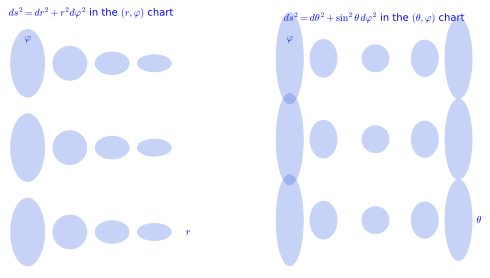
figures/metric_ellipses.sage.
Interactive figure (drag to rotate or zoom); the static version is above.
Two vectors with constant components can have an angle that varies from point to point, because the metric varies. The first exercise follows the angle between \partial_\theta + \partial_\varphi and \partial_\theta - \partial_\varphi across the sphere and finds the one latitude where they are orthogonal.
Exercise 172 (An angle that depends on the point) On the unit sphere, compute with SageManifolds the cosine of the angle between X = \partial_\theta + \partial_\varphi and Y = \partial_\theta - \partial_\varphi as a function of \theta, evaluate it at \theta = \pi/6, \pi/4, \pi/2, and find where X and Y are orthogonal.
g(X, Y) = 1 - \sin^2\theta = \cos^2\theta and |X| = |Y| = \sqrt{1 + \sin^2\theta}, so \cos\angle(X, Y) = \cos^2\theta/(1 + \sin^2\theta): \tfrac35 at \pi/6, \tfrac13 at \pi/4 and 0 on the equator, the only place where the two are orthogonal. In the chart plane they are orthogonal everywhere; the metric bends them.
S2 = Manifold(2, "S^2", structure="Riemannian"); A = S2.open_subset("A")
sph = A.chart(r"th:(0,pi):\theta ph:(0,2*pi):\varphi"); th, ph = sph[:]; assume(sin(th) > 0)
g = A.metric("g"); g[0, 0] = 1; g[1, 1] = sin(th)**2
X = A.vector_field(1, 1, name="X"); Y = A.vector_field(1, -1, name="Y")
c = (g(X, Y) / sqrt(g(X, X) * g(Y, Y))).expr().simplify_full()
print("cos of the angle between X and Y:", c)
print("|X| = |Y| =", sqrt(g(X, X).expr()).simplify_full())
for t0 in [pi/6, pi/4, pi/2]:
print("theta =", t0, ": cos =", c.subs(th=t0).simplify_full(), "; angle =", arccos(c.subs(th=t0).simplify_full()).n(digits=5), "rad")
print("orthogonal exactly where the numerator cos(theta)^2 vanishes:", solve(cos(th) == 0, th))Output:
cos of the angle between X and Y: cos(th)^2/(sin(th)^2 + 1)
|X| = |Y| = sqrt(sin(th)^2 + 1)
theta = 1/6*pi : cos = 3/5 ; angle = 0.92729 rad
theta = 1/4*pi : cos = 1/3 ; angle = 1.2310 rad
theta = 1/2*pi : cos = 0 ; angle = 1.5708 rad
orthogonal exactly where the numerator cos(theta)^2 vanishes: [
th == 1/2*pi
]The cross term of the SU(2) metric means \partial_\varphi and \partial_\psi are not orthogonal, but one can always subtract the projection of one onto the other. The second exercise derives the angle quoted in Example 167 and constructs the orthogonal complement of \partial_\psi in the (\varphi, \psi) plane, together with its norm.
Exercise 173 (Orthogonalising the Euler directions) From the SU(2) metric Equation 25, derive \cos\angle(\partial_\varphi, \partial_\psi) = \cos\theta, find the vector H = \partial_\varphi + c\,\partial_\psi orthogonal to \partial_\psi, and compute |H| and |\partial_\psi|.
g(\partial_\varphi, \partial_\psi) = \tfrac14\cos\theta and |\partial_\varphi| = |\partial_\psi| = \tfrac12, so the cosine is \tfrac14\cos\theta/\tfrac14 = \cos\theta. Orthogonality g(H, \partial_\psi) = \tfrac14(\cos\theta + c) = 0 gives c = -\cos\theta, H = \partial_\varphi - \cos\theta\,\partial_\psi, and |H|^2 = \tfrac14(1 - 2\cos^2\theta + \cos^2\theta) = \tfrac14\sin^2\theta, so |H| = \tfrac12\sin\theta. The vectors \partial_\theta, H span the directions orthogonal to the \psi-circles, on which the metric is \tfrac14(d\theta^2 + \sin^2\theta\,d\varphi^2), a sphere of radius \tfrac12 (Example 196, Exercise 184).
The observation about the stereographic chart is an instance of a general fact about conformal rescalings. The third exercise proves it, with a lemma that the angle between curves is the angle between their velocities, and draws the consequence for the Mercator chart of navigators.
Exercise 174 (Conformal rescalings) Show that replacing g by \tilde g = \Omega^2 g with a positive function \Omega leaves every angle unchanged and multiplies the length of every curve by \Omega along it. Deduce that in a chart with g_{ij} = \Omega^2\delta_{ij} the angle at which two curves cross on the manifold equals the angle at which their chart images cross, and apply this to the Mercator chart ds^2 = \operatorname{sech}^2 y\,(dx^2 + dy^2) of the sphere.
\tilde g(X, Y)/\sqrt{\tilde g(X, X)\tilde g(Y, Y)} = \Omega^2 g(X, Y)/\big(\Omega^2\sqrt{g(X, X)g(Y, Y)}\big): the factor cancels, so angles agree. For lengths, \sqrt{\tilde g(\dot\gamma, \dot\gamma)} = \Omega\sqrt{g(\dot\gamma, \dot\gamma)}, so \tilde L(\gamma) = \int \Omega(\gamma(t))\,|\dot\gamma|_g\,dt. Two curves cross at the angle between their velocities, and with g = \Omega^2\delta that angle is the Euclidean angle between the velocities in the chart, that is, the angle between the chart images. The Mercator metric is a multiple of dx^2 + dy^2, so a course making a constant angle with the meridians x = \text{const} is a straight line on the chart, which is why it was drawn for navigation; the factor \operatorname{sech}^2 y shows how much it exaggerates lengths and areas near the poles.
Index gymnastics
A metric pairs a vector with every other vector, and fixing the first argument produces a linear functional, that is, a one-form. The definition below names this operation and its effect on components, which is to multiply by the metric matrix.
Definition 43 (Lowering an index) The metric converts a vector field into a one-form: X_i = g_{ij}X^j lowers the index. The one-form X^\flat = X_i\,dx^i is g(X, \cdot), the inner product with X, and the same contraction lowers any upper index of a tensor field.
Veriphy. Pending.
Lean. Pending.
Sage. Pending.
In Minkowski space lowering an index flips the sign of the spatial components, and this sign is responsible for the different norms of timelike and spacelike unit vectors. The first example records the effect on a unit spacelike vector and on the unit timelike one.
Example 169 (Lowering with the Minkowski metric) For X^\mu = (0, 1, 0, 0), X_\mu = (0, -1, 0, 0): the signs of the space components flip, which is why \eta_{\mu\nu}X^\mu X^\nu = -1 for a unit spacelike vector and +1 for the unit timelike vector (1, 0, 0, 0) (Example 51 of Linear algebra).
On the sphere lowering multiplies the \varphi component by \sin^2\theta, so the one-form associated with the rotation field is not d\varphi but a rescaled version of it. The second example computes it and interprets the value of the one-form on a vector as an inner product, as the definition says.
Example 170 (Lowering the rotation field) On the sphere, \partial_\varphi with components (0, 1) becomes the one-form \sin^2\theta\,d\varphi (Proposition 14, Exercise 178): its value on a vector Y is g(\partial_\varphi, Y) = \sin^2\theta\,Y^\varphi.
Why is the distinction between upper and lower indices invisible in elementary vector calculus? The third example answers: with the identity metric the two sets of components coincide, and the moment one leaves Cartesian coordinates they part ways.
Example 171 (Euclidean space) With g_{ij} = \delta_{ij} lowering does nothing to the numbers, X_i = X^i: this is why in Euclidean space the position of an index is invisible, and why it matters as soon as the metric is not the identity, as in polar coordinates, where (\partial_\varphi)_\varphi = r^2.
SageManifolds lowers an index with down, and the first exercise does so in polar coordinates, where the non-constant component r^2 enters. It also checks the defining property X^\flat(Y) = g(X, Y) on an explicit pair of vector fields.
Exercise 175 (Lowering in polar coordinates) With SageManifolds and the polar metric, lower the indices of \partial_\varphi and of X = \partial_r + \partial_\varphi, and check that X^\flat(Y) = g(X, Y) for Y = r\,\partial_r - \partial_\varphi.
(\partial_\varphi)^\flat = r^2\,d\varphi and X^\flat = dr + r^2\,d\varphi; on Y both X^\flat(Y) and g(X, Y) give r - r^2. The norm of \partial_\varphi can be read from its lowered form, (\partial_\varphi)^\flat(\partial_\varphi) = r^2.
M = Manifold(2, "R^2", structure="Riemannian"); U = M.open_subset("U")
pol = U.chart(r"r:(0,+oo) ph:(0,2*pi):\varphi"); r, ph = pol[:]
g = U.metric("g"); g[0, 0] = 1; g[1, 1] = r**2
dph = U.vector_field(0, 1, name="dph"); X = U.vector_field(1, 1, name="X"); Y = U.vector_field(r, -1, name="Y")
print("lowering d_phi:", dph.down(g).display())
print("lowering X = d_r + d_phi:", X.down(g).display(), "; components", X.down(g)[:])
print("X^flat(Y) =", X.down(g)(Y).expr(), "; g(X, Y) =", g(X, Y).expr(), "; equal:", bool(X.down(g)(Y).expr() == g(X, Y).expr()))
print("|d_phi| from the lowered form: sqrt((d_phi)^flat(d_phi)) =", sqrt(dph.down(g)(dph).expr()).simplify_full())Output:
lowering d_phi: r^2 dph
lowering X = d_r + d_phi: dr + r^2 dph ; components [1, r^2]
X^flat(Y) = -r^2 + r ; g(X, Y) = -r^2 + r ; equal: True
|d_phi| from the lowered form: sqrt((d_phi)^flat(d_phi)) = rLowering with \eta is a sign flip of three components, and the invariant X_\mu X^\mu then sorts vectors into timelike, null and spacelike. The second exercise practises this on three explicit four-vectors, one of each kind.
Exercise 176 (Lowering four-vectors) Lower the indices of X^\mu = (3, 1, 2, 0), Y^\mu = (1, 1, 0, 0) and Z^\mu = (1, 2, 2, 0) with \eta, compute X_\mu X^\mu, Y_\mu Y^\mu, Z_\mu Z^\mu and classify the three vectors.
X_\mu = (3, -1, -2, 0), Y_\mu = (1, -1, 0, 0), Z_\mu = (1, -2, -2, 0). The invariants are 9 - 1 - 4 = 4 > 0 (timelike), 1 - 1 = 0 (null) and 1 - 4 - 4 = -7 < 0 (spacelike). With the convention (+, -, -, -), timelike means positive norm, and the sign of X_\mu X^\mu is independent of the frame, since boosts are isometries (Exercise 197).
The definition says that the same contraction lowers any index of any tensor, and the third exercise explores this. Lowering an index of the identity tensor produces the metric itself, and the operation is injective because the metric is non-degenerate.
Exercise 177 (Lowering indices of tensors) Lower the upper index of a tensor T^i{}_j of type (1, 1) to obtain T_{ij}, and compute the result for T = \delta^i{}_j. Show that X_iY^i = g(X, Y), and that X \mapsto X^\flat is linear and injective.
T_{ij} = g_{ik}T^k{}_j; for the identity, T_{ij} = g_{ik}\delta^k{}_j = g_{ij}: the metric is the identity with one index lowered. X_iY^i = g_{ij}X^jY^i = g(X, Y) by symmetry of g. Linearity is linearity of matrix multiplication; if X^\flat = 0 then g(X, Y) = 0 for every Y, and non-degeneracy (Definition 13 of Linear algebra) forces X = 0. So lowering is an isomorphism between tangent and cotangent space at each point, and raising is its inverse.
The inverse metric undoes the lowering: multiplying the components of a one-form by g^{ij} produces a vector field. The definition below names this operation and notes that it is indeed the inverse of the previous one, because the two matrices are inverse to each other.
Definition 44 (Raising an index) The inverse metric converts a one-form into a vector field: \omega^i = g^{ij}\omega_j raises the index, giving \omega^\sharp. Raising then lowering returns the original components, since g^{ik}g_{kj} = \delta^i_j.
Veriphy. Pending.
Lean. Pending.
Sage. Pending.
The most important one-form to raise is the differential of a function, whose raised version is the gradient vector field. The first example computes the gradient of the height on the sphere and identifies it as a field drawn in an earlier chapter.
Example 172 (The gradient) Raising the index of df gives the gradient vector field (\nabla f)^i = g^{ij}\partial_j f; on the sphere dZ = -\sin\theta\,d\theta becomes -\sin\theta\,\partial_\theta (Proposition 14, Exercise 178), pointing towards the north pole with norm \sin\theta, the field of Figure 8.
Raising the coordinate one-form d\varphi gives a multiple of the coordinate vector \partial_\varphi, but not the vector itself, because g^{\varphi\varphi} \neq 1. The second example computes the factor and checks that lowering again returns d\varphi.
Example 173 (Raising d\varphi) On the sphere d\varphi has components (0, 1) and its raised version is g^{\varphi\varphi}\partial_\varphi = \sin^{-2}\theta\,\partial_\varphi, the rotation field rescaled; lowering it again returns d\varphi.
In polar coordinates the inverse metric contributes a factor 1/r^2 to the \varphi component of a gradient. The third example computes two gradients there and interprets the norm of \nabla\varphi as a rate of change per unit length.
Example 174 (A gradient in polar coordinates) For f = r^2 on the plane, df = 2r\,dr and \nabla f = 2r\,\partial_r; for f = \varphi, df = d\varphi and \nabla f = r^{-2}\partial_\varphi, whose norm 1/r is the rate at which the angle changes per unit length along a circle.
The SageManifolds methods up and down implement raising and lowering, and the first exercise applies them to the two sphere computations of the examples. It also verifies that the two operations are mutually inverse on a concrete vector field.
Exercise 178 (Raising and lowering with SageManifolds) Raise the index of dZ = -\sin\theta\,d\theta with the round metric using up, lower the index of \partial_\varphi using down, and check that lowering then raising returns \partial_\varphi.
\omega^\theta = g^{\theta\theta}\omega_\theta = -\sin\theta, \omega^\varphi = 0: the gradient -\sin\theta\,\partial_\theta points along meridians towards the north pole, where Z increases, with norm \sin\theta, and vanishes at the poles, the critical points of the height. Lowering \partial_\varphi gives \sin^2\theta\,d\varphi:
S2 = Manifold(2, "S^2", structure="Riemannian"); A = S2.open_subset("A")
sph = A.chart(r"th:(0,pi):\theta ph:(0,2*pi):\varphi"); th, ph = sph[:]; assume(sin(th) > 0)
g = A.metric("g"); g[0, 0] = 1; g[1, 1] = sin(th)**2
Z = A.scalar_field(cos(th), name="Z")
dZ = Z.differential()
gradZ = dZ.up(g)
print("dZ =", dZ.display(), " -> gradient (index raised):", gradZ.display())
print("length of the gradient:", sqrt(g(gradZ, gradZ).expr()).simplify_full())
dph = A.vector_field(0, 1, name="dph")
print("lowering d/dphi:", dph.down(g).display())
print("raising then lowering d/dphi returns it:", dph.down(g).up(g) == dph)
print("the inverse metric:", g.inverse().display())Output:
dZ = dZ = -sin(th) dth -> gradient (index raised): -sin(th) ∂/∂th
length of the gradient: sin(th)
lowering d/dphi: sin(th)^2 dph
raising then lowering d/dphi returns it: True
the inverse metric: inv_g = ∂/∂th⊗∂/∂th + sin(th)^(-2) ∂/∂ph⊗∂/∂phVeriphy. Pending.
Lean.
/-- Raising the index of `dZ = (−sin θ, 0)` with the round metric gives the gradient `−sin θ ∂_θ`. -/
theorem raise_dZ (x : Fin 2 → ℝ) (h : Real.sin (x 0) ≠ 0) :
(invMetric sphere x).mulVec ![-Real.sin (x 0), 0] = ![-Real.sin (x 0), 0]KaluzaKlein.Geometry.raise_dZ in KaluzaKlein/Geometry/MetricExamples.lean, namespace KaluzaKlein.Geometry
Sage. Pending.
A gradient computed in polar coordinates must agree with the Cartesian one, and the function x = r\cos\varphi is the test case: its gradient is the constant unit field \partial_x. The second exercise computes three polar gradients with SageManifolds and checks this on their norms.
Exercise 179 (Gradients in polar coordinates) With SageManifolds and the polar metric, compute the gradients of f = r^2, f = \varphi and f = r\cos\varphi and their norms. Why must the last gradient have norm 1?
\nabla(r^2) = 2r\,\partial_r with norm 2r; \nabla\varphi = r^{-2}\partial_\varphi with norm 1/r; \nabla(r\cos\varphi) = \cos\varphi\,\partial_r - (\sin\varphi/r)\,\partial_\varphi with norm 1. The last function is the Cartesian coordinate x, whose gradient is \partial_x, a unit vector; the polar expression is \partial_x written in the polar basis, and the norm is a scalar, the same in every chart.
M = Manifold(2, "R^2", structure="Riemannian"); U = M.open_subset("U")
pol = U.chart(r"r:(0,+oo) ph:(0,2*pi):\varphi"); r, ph = pol[:]
g = U.metric("g"); g[0, 0] = 1; g[1, 1] = r**2
for name, expr in [("r^2", r**2), ("phi", ph), ("x = r cos(phi)", r*cos(ph))]:
f = U.scalar_field(expr, name="f"); df = f.differential(); grad = df.up(g)
print("f =", name, ": df =", df.display(), "; grad f =", grad.display(), "; |grad f| =", sqrt(g(grad, grad).expr()).simplify_full())Output:
f = r^2 : df = df = 2*r dr ; grad f = 2*r ∂/∂r ; |grad f| = 2*r
f = phi : df = df = dph ; grad f = r^(-2) ∂/∂ph ; |grad f| = 1/r
f = x = r cos(phi) : df = df = cos(ph) dr - r*sin(ph) dph ; grad f = cos(ph) ∂/∂r - sin(ph)/r ∂/∂ph ; |grad f| = 1In Minkowski space raising the index of a differential flips the spatial components, and the norm of the gradient can have either sign or vanish. The third exercise applies this to the phase of a plane wave, where the null case is the dispersion relation of light, and proves in general that raising inverts lowering.
Exercise 180 (Gradients in Minkowski space) For f = \omega t - k_xx - k_yy - k_zz, compute \partial_\mu f, raise the index with \eta^{\mu\nu} and compute \eta(\nabla f, \nabla f); when is \nabla f null? Then prove that (\omega^\sharp)^\flat = \omega and (X^\flat)^\sharp = X for every one-form \omega and vector X.
\partial_\mu f = (\omega, -k_x, -k_y, -k_z) and (\nabla f)^\mu = \eta^{\mu\nu}\partial_\nu f = (\omega, k_x, k_y, k_z): the wave four-vector. Its norm is \eta(\nabla f, \nabla f) = \omega^2 - |\vec k|^2, null exactly when \omega = |\vec k|, the dispersion relation of a massless wave; for a massive field \omega^2 - |\vec k|^2 = m^2 > 0 and the gradient is timelike. In general ((\omega^\sharp)^\flat)_i = g_{ij}g^{jk}\omega_k = \delta_i^k\omega_k = \omega_i and ((X^\flat)^\sharp)^i = g^{ij}g_{jk}X^k = X^i, both from g^{ik}g_{kj} = \delta^i_j.
Volumes
Integrating a function over a manifold needs a measure, and the metric supplies one through the square root of its determinant. The definition below gives the formula, warns that the determinant is not a scalar, and explains why the integral is nevertheless chart independent.
Definition 45 (Volume element) The volume element of a metric is dV = \sqrt{|\det g|}\,d^nx. The determinant is not a tensor (it picks up the square of the Jacobian determinant under a change of chart, Example 72 of Linear algebra), but the Jacobian of the change of variables in an integral cancels it, so \int f\,dV is chart independent. All the actions of Part II are integrals against dV, written \sqrt{-g}\,d^4x in four Lorentzian dimensions, where \det g < 0.
Veriphy. Pending.
Lean. Pending.
Sage. Pending.
The first volume element is the factor r of polar integrals, familiar from calculus as a Jacobian. The example identifies the two: the metric determinant of a chart of Euclidean space and the Jacobian of the chart carry the same information.
Example 175 (Polar coordinates) \sqrt{\det g} = r, so dV = r\,dr\,d\varphi, the Jacobian of polar coordinates (Proposition 11, Figure 5 of Real analysis): the metric determinant and the Jacobian determinant of Calculus on \mathbb{R}^n are the same information.
On a curved surface there is no ambient Jacobian to appeal to, and the volume element from the metric is the definition of area. The second example computes the area of the sphere and quotes that of the torus, both of which are checked in the exercises.
Example 176 (The sphere) \sqrt{\det g} = \sin\theta and \int_0^\pi\int_0^{2\pi}\sin\theta\,d\varphi\,d\theta = 4\pi, the area; for radius R, 4\pi R^2 (Exercise 181). The torus has area \int_0^{2\pi}\int_0^{2\pi} r(R + r\cos a)\,da\,db = 4\pi^2 R r (Section 1.3.3).
For a product metric the determinant factorises, and integrating over a compact internal space multiplies the volume element by the internal volume. The third example records this for a circle of radius R, keeping track of the sign conventions in five dimensions, and anticipates how coupling constants are rescaled in higher-dimensional theories.
Example 177 (Kaluza-Klein volumes) For a product metric ds^2 = g_{\mu\nu}dx^\mu dx^\nu - R^2 d\varphi^2 on M_4 \times S^1, \det g_5 = -R^2\det g_4 and \sqrt{|g_5|} = R \sqrt{-g_4}, and integrating over the circle multiplies the four-dimensional action by 2\pi R: this is how the five-dimensional Newton constant becomes the four-dimensional one in Part III.
The sphere of radius R brings together everything measured so far: its volume element gives the area, its components give the lengths of parallels and meridians, and its vanishing cross term gives the angle between the coordinate vectors. The first exercise computes all of these with SageManifolds.
Exercise 181 (Lengths and areas on the sphere of radius R) From the round metric scaled by R^2, compute the area of the sphere, the length of the parallel at colatitude \theta, the length of a meridian, and the angle between \partial_\theta and \partial_\varphi.
\sqrt{\det g} = R^2\sin\theta: area 4\pi R^2; parallel \int_0^{2\pi}\sqrt{g_{\varphi\varphi}}\,d\varphi = 2\pi R\sin\theta; meridian \int_0^\pi\sqrt{g_{\theta\theta}}\,d\theta = \pi R; the coordinate fields are orthogonal. In SageManifolds:
R = var("R", domain="real"); assume(R > 0)
S2 = Manifold(2, "S^2", structure="Riemannian"); A = S2.open_subset("A")
sph = A.chart(r"th:(0,pi):\theta ph:(0,2*pi):\varphi"); th, ph = sph[:]; assume(sin(th) > 0)
g = A.metric("g"); g[0, 0] = R**2; g[1, 1] = R**2 * sin(th)**2
vol = sqrt(g.determinant().expr()).simplify_full() # sqrt(det g) with sin(theta) > 0 on the chart
print("volume element:", vol)
print("area of the sphere:", integrate(integrate(vol, ph, 0, 2*pi), th, 0, pi))
dth = A.vector_field(1, 0); dph = A.vector_field(0, 1)
print("length of the parallel at colatitude th:", integrate(sqrt(g(dph, dph).expr()), ph, 0, 2*pi))
print("length of a meridian:", integrate(sqrt(g(dth, dth).expr()), th, 0, pi))
print("angle between d_theta and d_phi: cos =", (g(dth, dph) / sqrt(g(dth, dth) * g(dph, dph))).expr(), " -> orthogonal")Output:
volume element: R^2*sin(th)
area of the sphere: 4*pi*R^2
length of the parallel at colatitude th: 2*pi*R*sin(th)
length of a meridian: pi*R
angle between d_theta and d_phi: cos = 0 -> orthogonalThe torus area quoted in Example 176 is a two-line integral, and its value is the same for the embedded torus and for the flat torus of the same radii, although the two metrics differ. The second exercise verifies both with SageManifolds and explains the coincidence.
Exercise 182 (The area of the torus) With SageManifolds, compute the volume element and the area of the embedded torus r^2da^2 + (R + r\cos a)^2db^2 and of the flat torus r^2da^2 + R^2db^2. Why do the areas agree?
\sqrt{\det g} = r(R + r\cos a) for the embedded torus and rR for the flat one; both integrate to 4\pi^2Rr because \int_0^{2\pi}\cos a\,da = 0: the outer half of the embedded torus is stretched exactly as much as the inner half is compressed. The flat torus with these radii is the torus of Example 186.
R, r = var("R r", domain="real"); assume(R > r); assume(r > 0)
T = Manifold(2, "T^2", structure="Riemannian"); X = T.chart("a:(0,2*pi) b:(0,2*pi)"); a, b = X[:]
g = T.metric("g"); g[0, 0] = r**2; g[1, 1] = (R + r*cos(a))**2
vol = r*(R + r*cos(a))
print("det g =", g.determinant().expr().factor(), "; sqrt(det g) = r (R + r cos a):", bool((vol**2 - g.determinant().expr()).simplify_full() == 0))
area = integrate(integrate(vol, b, 0, 2*pi), a, 0, 2*pi)
print("area of the embedded torus:", area.factor())
flat = T.metric("g_flat"); flat[0, 0] = r**2; flat[1, 1] = R**2
vflat = sqrt(flat.determinant().expr()).simplify_full()
print("volume element of the flat torus r^2 da^2 + R^2 db^2:", vflat, "; area:", integrate(integrate(vflat, b, 0, 2*pi), a, 0, 2*pi))
print("the two areas agree:", bool(area == 4*pi**2*R*r))Output:
det g = (r*cos(a) + R)^2*r^2 ; sqrt(det g) = r (R + r cos a): True
area of the embedded torus: 4*pi^2*R*r
volume element of the flat torus r^2 da^2 + R^2 db^2: R*r ; area: 4*pi^2*R*r
the two areas agree: TrueThe definition asserts that \int f\,dV does not depend on the chart although \det g does, and the third exercise supplies the proof. Both the determinant and the coordinate volume d^nx change by a Jacobian factor, and the two factors cancel exactly.
Exercise 183 (Chart independence of the volume) Show that under a change of chart with Jacobian J = \partial x/\partial x', \sqrt{|\det g'|}\,d^nx' = \sqrt{|\det g|}\,d^nx, so that \int f\,dV is independent of the chart. Verify on the plane that dV is dx\,dy in Cartesian and r\,dr\,d\varphi in polar coordinates.
From g' = J^{\mathsf{T}}gJ (Exercise 150), \sqrt{|\det g'|} = |\det J|\sqrt{|\det g|}. The change of variables formula of Calculus on \mathbb{R}^n gives d^nx = |\det J|\,d^nx', so \sqrt{|\det g|}\,d^nx = | \det J|\sqrt{|\det g|}\,d^nx' = \sqrt{|\det g'|}\,d^nx'. On the plane, \det g = 1 in Cartesian coordinates and r^2 in polar ones, with |\det J| = r: dx\,dy = r\,dr\,d\varphi, the familiar substitution.
The proposition that closes this section records the two index manipulations of the examples and the general fact that raising inverts lowering. The examples that follow read it in matrix form, use it to compute a norm, and transfer it to the plane, and the exercises extend it to SU(2) and to tensors.
Proposition 14 (Lowering and raising on the sphere) Lowering \partial_\varphi = (0, 1) gives (0, \sin^2\theta); raising dZ = (-\sin\theta, 0) gives (-\sin\theta, 0); and raising after lowering returns any vector, g^{-1}(g v) = v, where \sin\theta \neq 0.
Veriphy. Pending.
Lean. KaluzaKlein.Geometry.lower_dphi, KaluzaKlein.Geometry.raise_dZ and KaluzaKlein.Geometry.raise_lower.
/-- Lowering then raising returns the original components: `g⁻¹ (g v) = v` for the round metric. -/
theorem raise_lower (x : Fin 2 → ℝ) (h : Real.sin (x 0) ≠ 0) (v : Fin 2 → ℝ) :
(invMetric sphere x).mulVec ((metricAt sphere x).mulVec v) = vKaluzaKlein.Geometry.raise_lower in KaluzaKlein/Geometry/MetricExamples.lean, namespace KaluzaKlein.Geometry
Sage. Pending.
In components, lowering an index is the product of the metric matrix with a column vector and raising it is the product with the inverse matrix. The first example spells out the three statements in this language and explains the role of the hypothesis on \sin\theta.
Example 178 (The statements in matrix form) With G = \operatorname{diag}(1, \sin^2\theta), lowering is v \mapsto Gv and raising is \omega \mapsto G^{-1} \omega: the first statement says G(0, 1) = (0, \sin^2\theta), the second G^{-1}(-\sin\theta, 0) = (-\sin\theta, 0), and the third G^{-1}(Gv) = v. The last two need \sin\theta \neq 0, because G^{-1} exists only where \det G = \sin^2\theta \neq 0 (Proposition 13); the first needs no hypothesis.
Veriphy. Pending.
Lean. Lowering is the matrix-vector product mulVec with the metric matrix and raising the same product with the inverse matrix; raise_dZ and raise_lower carry the hypothesis Real.sin (x 0) ≠ 0.
Sage. Pending.
The norm of a one-form can be computed with the inverse metric or by raising its index and using the metric, and the two agree. The second example checks this on dZ, whose norm \sin\theta is the rate at which the height changes per unit length along a meridian.
Example 179 (The norm of dZ) g^{ij}\partial_iZ\,\partial_jZ = g^{\theta\theta}\sin^2\theta = \sin^2\theta, and g(\nabla Z, \nabla Z) = g_{\theta\theta}\sin^2\theta = \sin^2\theta too: the norm of a one-form, computed with g^{ij}, equals the norm of the vector obtained by raising its index. It is 1 on the equator, where the height changes fastest, and 0 at the poles, the critical points of Z.
The same three statements hold on the plane in polar coordinates with \sin\theta replaced by r, and the hypothesis becomes r \neq 0. The third example transfers them and notes that the inverse of the polar metric in Proposition 11 is exactly what is needed.
Example 180 (The same on the plane) With G = \operatorname{diag}(1, r^2), lowering \partial_\varphi gives r^2\,d\varphi, raising dr = (1, 0) gives \partial_r, and G^{-1}(Gv) = v for r \neq 0, where G^{-1} = \operatorname{diag}(1, 1/r^2) by Proposition 11. The norm of d\varphi is \sqrt{g^{\varphi\varphi}} = 1/r, the norm of the gradient of Example 174.
On SU(2) the metric has a cross term, so lowering and raising mix the \varphi and \psi components, and the inverse metric of Equation 26 is needed. The first exercise performs both operations with SageManifolds and constructs the orthogonal complement of the \psi-direction met in Exercise 173.
Exercise 184 (Raising and lowering on SU(2)) With the SU(2) metric Equation 25 in SageManifolds, lower the indices of \partial_\psi and \partial_\varphi, raise the index of the one-form d\psi, check that lowering then raising returns \partial_\psi, and compute |\partial_\psi| and |\partial_\varphi - \cos\theta\,\partial_\psi|.
(\partial_\psi)^\flat = \tfrac14(\cos\theta\,d\varphi + d\psi) and (\partial_\varphi)^\flat = \tfrac14(d\varphi +
\cos\theta\,d\psi): each picks up the other’s direction through the cross term. (d\psi)^\sharp =
\frac{4}{\sin^2\theta}(-\cos\theta\,\partial_\varphi + \partial_\psi), and down followed by up returns \partial_\psi. Finally |\partial_\psi| = \tfrac12, g(\partial_\varphi - \cos\theta\,\partial_\psi,
\partial_\psi) = 0 and |\partial_\varphi - \cos\theta\,\partial_\psi| = \tfrac12\sin\theta.
G = Manifold(3, "SU2", structure="Riemannian"); U = G.open_subset("U")
X = U.chart(r"th:(0,pi):\theta ph:(0,2*pi):\varphi ps:(0,4*pi):\psi"); th, ph, ps = X[:]; assume(sin(th) > 0)
g = U.metric("g"); g[0, 0] = 1/4; g[1, 1] = 1/4; g[2, 2] = 1/4; g[1, 2] = cos(th)/4
print("g =", g.display()); print("inverse:", g.inverse().display())
dps = U.vector_field(0, 0, 1, name="dpsi"); dph = U.vector_field(0, 1, 0, name="dphi")
print("lowering d_psi:", dps.down(g).display())
print("lowering d_phi:", dph.down(g).display())
dpsi_form = U.one_form(0, 0, 1, name="dpsi")
print("raising the one-form dpsi:", dpsi_form.up(g).display())
print("down then up returns d_psi:", dps.down(g).up(g) == dps)
H = U.vector_field(0, 1, -cos(th), name="H") # d_phi - cos(theta) d_psi
print("|d_psi| =", sqrt(g(dps, dps).expr()), "; g(H, d_psi) =", g(H, dps).expr().simplify_full(), "; |H| =", sqrt(g(H, H).expr()).simplify_full())Output:
g = g = 1/4 dth⊗dth + 1/4 dph⊗dph + 1/4*cos(th) dph⊗dps + 1/4*cos(th) dps⊗dph + 1/4 dps⊗dps
inverse: inv_g = 4 ∂/∂th⊗∂/∂th + 4/sin(th)^2 ∂/∂ph⊗∂/∂ph - 4*cos(th)/sin(th)^2 ∂/∂ph⊗∂/∂ps - 4*cos(th)/sin(th)^2 ∂/∂ps⊗∂/∂ph + 4/sin(th)^2 ∂/∂ps⊗∂/∂ps
lowering d_psi: 1/4*cos(th) dph + 1/4 dps
lowering d_phi: 1/4 dph + 1/4*cos(th) dps
raising the one-form dpsi: -4*cos(th)/sin(th)^2 ∂/∂ph + 4/sin(th)^2 ∂/∂ps
down then up returns d_psi: True
|d_psi| = 1/2 ; g(H, d_psi) = 0 ; |H| = 1/2*sin(th)Lowering and raising preserve all the metric information, not just the components. The second exercise asks for the two identities that express this, that the norm of a one-form equals that of its raised vector and that the inner product of two vectors can be computed by lowering either of them.
Exercise 185 (Norms and inner products are preserved) Define the norm of a one-form by |\omega|^2 = g^{ij}\omega_i\omega_j. Show that |X^\flat| = |X| for every vector X, that g(X, Y) = X^\flat(Y) = Y^\flat(X), and that X and Y are orthogonal exactly when X^\flat(Y) = 0.
|X^\flat|^2 = g^{ij}X_iX_j = g^{ij}g_{ik}X^kg_{jl}X^l = \delta^j_kX^kg_{jl}X^l = g_{kl}X^kX^l = |X|^2. X^\flat(Y) = X_iY^i = g_{ij}X^jY^i = g(X, Y), and by symmetry this is also g(Y, X) = Y^\flat(X). Orthogonality g(X, Y) = 0 is therefore X^\flat(Y) = 0: the one-form X^\flat annihilates exactly the vectors orthogonal to X, which is the geometric meaning of lowering an index.
The index operations apply to tensors of any type, and some of the results have names. The third exercise raises the indices of the metric itself, lowers one index of the inverse metric, and computes the full contraction of the two, a number that counts dimensions.
Exercise 186 (Raising indices of the metric) Show that raising both indices of g_{ij} gives g^{ij}, that raising one index gives g^i{}_j = \delta^i_j, and that g^{ij}g_{ij} = n. For a (0, 2) tensor T_{ij} define T^i{}_j = g^{ik}T_{kj} and show that its trace T^i{}_i = g^{ij}T_{ij} is chart independent.
g^{ik}g^{jl}g_{kl} = g^{ik}\delta^j_k = g^{ij}; g^{ik}g_{kj} = \delta^i_j by definition of the inverse; and g^{ij}g_{ij} = \delta^i_i = n, the dimension. T^i{}_j is a (1, 1) tensor, being a contraction of tensors, and its trace is a full contraction, hence a scalar: in another chart g'^{ij}T'_{ij} = (J^{-1}g^{-1}J^{-\mathsf{T}})^{ij} (J^{\mathsf{T}}TJ)_{ij} = \operatorname{tr}(J^{-1}g^{-1}J^{-\mathsf{T}}J^{\mathsf{T}}TJ) = \operatorname{tr}(g^{-1}T) by cyclicity. For T = g this is the dimension count again; for the Ricci tensor of Section 1.4.4 it is the scalar curvature.
Induced metrics and the running examples
Every surface sitting inside Euclidean space inherits a metric from it, and this is where the metrics of the circle, the sphere, the torus and SU(2) come from. This section defines induced, flat and product metrics and isometries, and records the four running metrics with their determinants and inverses, the raw material of every curvature computation to come.
Induced metrics
A curve drawn on an embedded surface is also a curve in the ambient space, and its Euclidean speed can be computed from the surface coordinates alone. The definition below packages the result as a metric on the surface, which is the Gram matrix of the chart seen in a new light.
Definition 46 (Induced metric) An embedded surface inherits a metric from the ambient Euclidean space: for a curve on it with coordinates x^i(t) the ambient velocity is \dot x^i\,\partial_iE (Example 60), whose squared Euclidean length is G_{ij}\dot x^i\dot x^j with the Gram matrix of Definition 14. The Gram matrix of a chart of an embedded surface is therefore a metric, the induced metric (or pullback of the Euclidean metric), Riemannian wherever the chart is regular.
Veriphy. Pending.
Lean. Pending.
Sage. Pending.
The simplest embedded manifold is the circle, whose induced metric has a single constant component. The first example computes it for the unit circle and for a circle of radius R, where the arc length coordinate makes the component equal to one.
Example 181 (The circle) By Example 46, g_{\varphi\varphi} = 1: ds^2 = d\varphi^2. A circle of radius R, embedded as \varphi \mapsto (R\cos\varphi, R\sin\varphi), has ds^2 = R^2d\varphi^2 = dy^2 with the arc length y = R\varphi \in (0, 2\pi R). The only component is constant, which will make its Christoffel symbols vanish.
The sphere’s Gram matrix was computed in Section 1.1.2, and here it is collected with its determinant and inverse as the round metric that every later chapter uses. The example also reads off the lengths of the parallels, which shrink to zero where the chart degenerates.
Example 182 (The round sphere) By Proposition 3, ds^2 = d\theta^2 + \sin^2\theta\,d\varphi^2, \qquad g = \begin{pmatrix} 1 & 0 \\ 0 & \sin^2\theta \end{pmatrix}, \qquad g^{-1} = \begin{pmatrix} 1 & 0 \\ 0 & 1/\sin^2\theta \end{pmatrix}, \qquad \det g = \sin^2\theta , \tag{22} the round metric (Proposition 13); the inverse exists exactly on the chart domain. A sphere of radius R has ds^2 = R^2(d\theta^2 + \sin^2\theta\,d\varphi^2). A parallel at colatitude \theta has length 2\pi\sin\theta, shrinking to zero at the poles: the metric components degenerate there because the chart does.
The torus is the first running example whose metric is not of the form “constant times a sphere”, and its component g_{bb} depends on the position around the tube. The example records it with its determinant and area; the figure shows the two families of coordinate circles whose lengths the components measure.
Example 183 (The torus) By Exercise 46, ds^2 = r^2da^2 + (R + r\cos a)^2db^2 with \det g = r^2(R + r\cos a)^2 (Figure 14). The area is \int_0^{2\pi}\int_0^{2\pi} r(R + r\cos a)\,da\,db = 4\pi^2Rr.
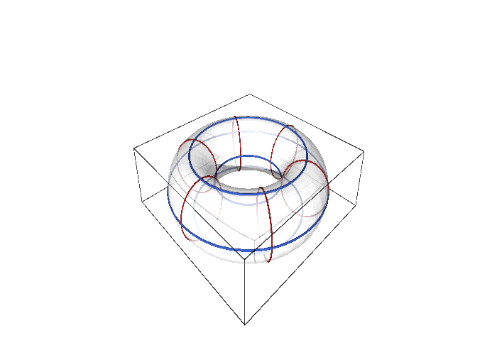
figures/torus_embedding.sage, which also computes the induced metric with SageManifolds.
Interactive figure (drag to rotate or zoom); the static version is above.
The group SU(2) is a three-sphere, and its matrix entries in Euler angles provide an embedding into \mathbb{R}^4 whose Gram matrix is the metric. The fourth example records this metric, the only running example with a cross term, together with its determinant and inverse.
Example 184 (The bi-invariant metric of SU(2)) With the Euler angles of Equation 6 the matrix entries of g(\theta, \varphi, \psi) are (computed in The exponential map) a = \cos\tfrac{\theta}{2}\,e^{-i(\varphi+\psi)/2}, \qquad b = -i\sin\tfrac{\theta}{2}\,e^{i(\varphi-\psi)/2}, \tag{23} so the embedding S^3 \to \mathbb{R}^4, (\operatorname{Re}a, \operatorname{Im}a, \operatorname{Re}b, \operatorname{Im}b), is E = \left( \cos\tfrac{\theta}{2}\cos\tfrac{\varphi+\psi}{2},\ -\cos\tfrac{\theta}{2}\sin\tfrac{\varphi+\psi}{2},\ \sin\tfrac{\theta}{2}\sin\tfrac{\varphi-\psi}{2},\ -\sin\tfrac{\theta}{2}\cos\tfrac{\varphi-\psi}{2} \right). \tag{24} Its Gram matrix is Equation 12 (Proposition 4), hence ds^2 = \tfrac14\left(d\theta^2 + d\varphi^2 + d\psi^2 + 2\cos\theta\,d\varphi\,d\psi\right), \qquad g = \frac14\begin{pmatrix} 1 & 0 & 0 \\ 0 & 1 & \cos\theta \\ 0 & \cos\theta & 1 \end{pmatrix}, \tag{25} the metric of the unit three-sphere, also written \tfrac14(\sigma^1\sigma^1 + \sigma^2\sigma^2 + \sigma^3\sigma^3) in terms of the left-invariant one-forms \sigma^a of Maurer-Cartan forms. It is bi-invariant: unchanged under left and right multiplication, as its Killing vectors show in Section 1.5.2. Its determinant is \tfrac{1}{64}\sin^2\theta, vanishing exactly where the Euler chart degenerates, and its inverse is g^{-1} = \frac{4}{\sin^2\theta}\begin{pmatrix} \sin^2\theta & 0 & 0 \\ 0 & 1 & -\cos\theta \\ 0 & -\cos\theta & 1 \end{pmatrix} \tag{26} (Proposition 15).
The cylinder and the cone are the two surfaces of revolution a sheet of paper can be rolled into, and their induced metrics should betray this. The first exercise computes both as pullbacks with SageManifolds and finds a vanishing Riemann tensor for each, although the cone’s components are not constant.
Exercise 187 (Cylinder and cone) With SageManifolds, pull back the Euclidean metric of \mathbb{R}^3 to the cylinder (u, \varphi) \mapsto (R\cos\varphi, R\sin\varphi, u) and to the cone (s, \varphi) \mapsto (s\cos\varphi, s\sin\varphi, s); give the induced metrics and their determinants, check that both Riemann tensors vanish, and compare the length of the cone’s circle s = 1 with its radius measured on the cone.
The cylinder has ds^2 = du^2 + R^2d\varphi^2, constant components, \det g = R^2. The cone has ds^2 = 2\,ds^2 + s^2d\varphi^2, \det g = 2s^2, non-constant but with vanishing Riemann tensor (Section 1.4.4): it is flat, as unrolling it shows. The circle s = 1 has length 2\pi but its radius measured along the cone is \sqrt2, so circumference and radius are in the ratio \sqrt2\,\pi < 2\pi: the unrolled cone is a sector of angle \sqrt2\,\pi, and the missing angle is concentrated at the apex, where the chart and the metric degenerate.
E3 = Manifold(3, "R^3", structure="Riemannian"); cart = E3.chart("x y z")
delta = E3.metric("delta"); delta[0, 0] = 1; delta[1, 1] = 1; delta[2, 2] = 1
R = var("R", domain="real"); assume(R > 0)
C = Manifold(2, "Cyl", structure="Riemannian"); Xc = C.chart(r"u ph:(0,2*pi):\varphi"); u, ph = Xc[:]
Phi = C.diff_map(E3, {(Xc, cart): [R*cos(ph), R*sin(ph), u]})
gc = C.metric("g"); gc.set(Phi.pullback(delta))
print("cylinder:", gc.display(), "; det =", gc.determinant().expr().simplify_full(), "; Riemann = 0:", gc.riemann() == 0)
K = Manifold(2, "Cone", structure="Riemannian"); Xk = K.chart(r"s:(0,+oo) ph:(0,2*pi):\varphi"); s, phk = Xk[:]
Psi = K.diff_map(E3, {(Xk, cart): [s*cos(phk), s*sin(phk), s]})
gk = K.metric("g"); gk.set(Psi.pullback(delta))
print("cone z = sqrt(x^2 + y^2):", gk.display(), "; det =", gk.determinant().expr().simplify_full(), "; Riemann = 0:", gk.riemann() == 0)
print("the cone's circle s = 1 has length", integrate(sqrt(gk[1, 1].expr()).subs(s=1), phk, 0, 2*pi), "while its radius, measured on the cone, is", integrate(sqrt(gk[0, 0].expr()), s, 0, 1))Output:
cylinder: g = du⊗du + R^2 dph⊗dph ; det = R^2 ; Riemann = 0: True
cone z = sqrt(x^2 + y^2): g = 2 ds⊗ds + s^2 dph⊗dph ; det = 2*s^2 ; Riemann = 0: True
the cone's circle s = 1 has length 2*pi while its radius, measured on the cone, is sqrt(2)Any surface can be written locally as a graph z = f(x, y), and the induced metric of a graph has a classical form. The second exercise derives it by hand and recovers the surface-area formula of multivariable calculus from the volume element.
Exercise 188 (The metric of a graph) For the graph (x, y) \mapsto (x, y, f(x, y)), compute the induced metric, its determinant and its volume element, and show that the area of the graph over a region D is \int_D\sqrt{1 + f_x^2 + f_y^2}\,dx\,dy. Apply it to the paraboloid f = \tfrac12(x^2 + y^2) over the unit disc.
\partial_xE = (1, 0, f_x) and \partial_yE = (0, 1, f_y), so ds^2 = (1 + f_x^2)\,dx^2 + 2f_xf_y\,dx\,dy + (1 + f_y^2)\,dy^2 with \det g = (1 + f_x^2)(1 + f_y^2) - f_x^2f_y^2 = 1 + f_x^2 + f_y^2 and dV = \sqrt{1 + |\nabla f|^2}\,dx\,dy, the surface-area element of calculus. For the paraboloid |\nabla f|^2 = x^2 + y^2 = \rho^2, and in polar coordinates the area is \int_0^{2\pi}\int_0^1\sqrt{1 + \rho^2}\,\rho\,d\rho\,d\varphi = \tfrac{2\pi}{3} (2\sqrt2 - 1). The metric is Riemannian everywhere, since \det g \geq 1: a graph chart is always regular.
The definition speaks of Euclidean ambient space, but the same construction works with any ambient metric, and the induced metric then need not be Riemannian. The third exercise pulls back the three-dimensional Minkowski metric to a hyperboloid and obtains the hyperbolic plane with the sign of our convention.
Exercise 189 (Induced metric from a Lorentzian ambient space) Pull back ds^2 = dt^2 - dx^2 - dy^2 to the hyperboloid t^2 - x^2 - y^2 = 1 parametrised by (\psi, \varphi) \mapsto (\cosh\psi, \sinh\psi\cos\varphi, \sinh\psi\sin\varphi). What is the signature of the induced metric, and what happens for the hyperboloid t^2 - x^2 - y^2 = -1?
dt = \sinh\psi\,d\psi, dx = \cosh\psi\cos\varphi\,d\psi - \sinh\psi\sin\varphi\,d\varphi, dy = \cosh\psi\sin\varphi\,d\psi + \sinh\psi\cos\varphi\,d\varphi, and dt^2 - dx^2 - dy^2 = (\sinh^2\psi - \cosh^2\psi)\,d\psi^2 - \sinh^2\psi\,d\varphi^2 = -(d\psi^2 + \sinh^2\psi\,d\varphi^2). The induced metric is negative definite, signature (0, 2): every tangent vector to the hyperboloid is spacelike, and -g is the hyperbolic plane, the sphere’s counterpart with \sin replaced by \sinh. The one-sheeted hyperboloid t^2 - x^2 - y^2 = -1, parametrised by (\sinh\psi, \cosh\psi\cos\varphi, \cosh\psi\sin\varphi), gives d\psi^2 - \cosh^2\psi\,d\varphi^2, Lorentzian of signature (1, 1): two-dimensional de Sitter space (The Einstein equations).
Flat and product metrics, isometries
Some metrics have non-constant components only because of the chart, and a better chart would make them constant. The next definition names this situation and anticipates the curvature criterion that decides it without searching for the chart.
Definition 47 (Flat metric) A metric is flat if around every point there is a chart in which its components are constant; equivalently (Section 1.4.4) its Riemann tensor vanishes. Constant components are the Euclidean \delta_{ij}, the Minkowski \eta_{\mu\nu}, or any constant symmetric matrix of the right signature.
Veriphy. Pending.
Lean. Pending.
Sage. Pending.
The polar metric is the standard example of a flat metric that does not look flat. The first example points to the Cartesian chart, where the components are constant, and draws the moral that flatness belongs to the metric.
Example 185 (The plane in polar coordinates) The polar metric dr^2 + r^2 d\varphi^2 is flat although its components are not constant: in the Cartesian chart the same metric is dx^2 + dy^2. Flatness is a property of the metric, not of the chart (Exercise 190).
A manifold can carry a flat metric even when no embedding in three-dimensional space is flat, and the torus is the example. The second example contrasts the flat torus with the embedded torus of Example 183 and names the reductions in which the former is the internal space.
Example 186 (The flat torus) The flat torus is the manifold S^1 \times S^1 with the constant metric ds^2 = r_1^2da^2 + r_2^2db^2, which no embedding in \mathbb{R}^3 induces: the embedded torus of Example 183 has non-constant g_{bb} and is curved. A metric is a structure on the manifold, not a property of a particular picture of it; the flat torus is the internal space of the toroidal reductions of Part VI.
The circle and the cylinder are flat and the sphere is not, and the difference is decided by curvature rather than by inspection of components. The third example states both facts and points to the chapter where the sphere’s non-flatness is proved.
Example 187 (Circles and cylinders) The circle with ds^2 = R^2 d\varphi^2 and the cylinder with ds^2 = R^2 d\varphi^2 + dz^2 are flat; the sphere is not, as Section 1.4.4 shows: no chart makes d\theta^2 + \sin^2\theta\,d\varphi^2 constant.
The flatness of the polar metric can be shown in two ways, by exhibiting the Cartesian chart or by computing the Riemann tensor, and the first exercise does both. The computation uses the curvature methods of SageManifolds that Section 1.4.4 will explain.
Exercise 190 (The polar metric is flat) Show that the polar metric is the Euclidean metric in another chart, and check with SageManifolds that its Riemann tensor vanishes.
With x = r\cos\varphi, y = r\sin\varphi, dx^2 + dy^2 = (\cos\varphi\,dr - r\sin\varphi\,d\varphi)^2 + (\sin\varphi\,dr + r\cos\varphi\,d\varphi)^2 = dr^2 + r^2 d\varphi^2. The Riemann tensor (Section 1.4.4) is a tensor field; it vanishes in the Cartesian chart, where the components are constant, hence in every chart:
import os, sys; sys.path.insert(0, os.path.dirname(os.path.abspath(__file__))); from _curvature import *
M, X, g = chart_metric('r ph', lambda c: [[1, 0], [0, c[0]**2]], ranges='r:(0,+oo) ph:(0,2*pi)')
Rm, Ric, Rs = curvature(g)
print("Riemann tensor:", Rm.display())
print("all components vanish:", Rm == 0, "; Ricci tensor:", Ric.display(), "; scalar curvature:", Rs.expr())Output:
Riemann tensor: Riem(g) = 0
all components vanish: True ; Ricci tensor: Ric(g) = 0 ; scalar curvature: 0The cone of Exercise 187 was found flat by its Riemann tensor, and the definition then promises a chart with constant components. The second exercise finds it by rescaling the polar coordinates, and discovers that the chart covers the unrolled cone, a sector of the plane.
Exercise 191 (Unrolling the cone) For the cone metric ds^2 = 2\,ds^2 + s^2d\varphi^2, find coordinates (\rho, \alpha) in which it is the polar metric d\rho^2 + \rho^2d\alpha^2, and hence coordinates in which its components are constant. What range does \alpha cover, and what does this say about the cone?
Set \rho = \sqrt2\,s and \alpha = \varphi/\sqrt2: then d\rho^2 = 2\,ds^2 and \rho^2d\alpha^2 = 2s^2 d\varphi^2/2 = s^2d\varphi^2, so ds^2 = d\rho^2 + \rho^2d\alpha^2, and X = \rho\cos\alpha, Y = \rho\sin\alpha give dX^2 + dY^2. As \varphi runs over (0, 2\pi), \alpha runs over (0, \sqrt2\,\pi): the cone unrolled is a sector of the plane of angle \sqrt2\,\pi with its two edges identified. The metric is flat everywhere except at the apex \rho = 0, which is not covered by any chart in which the metric is smooth; the missing angle (2 - \sqrt2)\pi is the cone’s angular deficit.
Both tori can be handled by SageManifolds, which computes Christoffel symbols and the Riemann tensor from the metric. The third exercise verifies that the flat torus deserves its name and that the embedded torus does not, finding where the latter is curved positively and where negatively.
Exercise 192 (Flat torus against embedded torus) With SageManifolds, check that the flat torus r_1^2da^2 + r_2^2db^2 has vanishing Christoffel symbols and Riemann tensor and area 4\pi^2r_1r_2, and that the embedded torus with R = 2, r = \tfrac45 has a non-vanishing Riemann tensor; compute its scalar curvature and find its sign on the outer and inner equators.
Constant components make every derivative of the metric vanish, so the Christoffel symbols and the Riemann tensor of the flat torus are zero, and its area is 4\pi^2r_1r_2. The embedded torus has scalar curvature 2\cos a/\big(r(R + r\cos a)\big) = \tfrac{25}{4}\cos a/(5 + 2\cos a): positive on the outer equator a = 0, where the surface looks like a sphere, negative on the inner equator a = \pi, where it is saddle-shaped, and zero on the top and bottom circles a = \pm\pi/2 (Section 1.4.4).
r1, r2 = var("r1 r2", domain="real"); assume(r1 > 0); assume(r2 > 0)
T = Manifold(2, "T^2", structure="Riemannian"); X = T.chart("a:(0,2*pi) b:(0,2*pi)"); a, b = X[:]
flat = T.metric("g_flat"); flat[0, 0] = r1**2; flat[1, 1] = r2**2
print("flat torus:", flat.display())
print("Christoffel symbols all vanish:", all(flat.christoffel_symbols()[k, i, j].expr() == 0 for k in range(2) for i in range(2) for j in range(2)))
print("Riemann tensor vanishes:", flat.riemann() == 0, "; area =", integrate(integrate(sqrt(flat.determinant().expr()).simplify_full(), b, 0, 2*pi), a, 0, 2*pi))
R, r = 2, QQ(4)/5
emb = T.metric("g_emb"); emb[0, 0] = r**2; emb[1, 1] = (R + r*cos(a))**2
print("embedded torus R = 2, r = 4/5:", emb.display())
print("Riemann tensor vanishes:", emb.riemann() == 0, "; component R^a_{bab} =", emb.riemann()[0, 1, 0, 1].expr().simplify_full())
print("scalar curvature:", emb.ricci_scalar().expr().simplify_full(), " (positive on the outer equator a = 0, negative on the inner one a = pi)")Output:
flat torus: g_flat = r1^2 da⊗da + r2^2 db⊗db
Christoffel symbols all vanish: True
Riemann tensor vanishes: True ; area = 4*pi^2*r1*r2
embedded torus R = 2, r = 4/5: g_emb = 16/25 da⊗da + 4/25*(2*cos(a) + 5)^2 db⊗db
Riemann tensor vanishes: False ; component R^a_{bab} = cos(a)^2 + 5/2*cos(a)
scalar curvature: 25/4*cos(a)/(2*cos(a) + 5) (positive on the outer equator a = 0, negative on the inner one a = pi)When a manifold is a product, metrics on the two factors combine by addition, and the result has a block-diagonal matrix with no cross terms. The definition below makes this precise and records the one property of the determinant that makes volumes of products multiply.
Definition 48 (Product metric) On a product manifold M \times N (Definition 10) with metrics g_M and g_N, the product metric is g = g_M + g_N in product charts: ds^2 = g_{\mu\nu}(x)\,dx^\mu dx^\nu + h_{mn}(y)\,dy^m dy^n, block diagonal with no cross terms and each block depending only on its own coordinates. Its determinant is \det g_M \cdot \det g_N.
Veriphy. Pending.
Lean. Pending.
Sage. Pending.
The cylinder and the flat torus are products of one-dimensional metrics, and the embedded torus is not, although its matrix is diagonal. The first example makes the distinction, which lies in the dependence of a block on the other factor’s coordinate.
Example 188 (Cylinder and flat torus) dz^2 + R^2 d\varphi^2 on \mathbb{R} \times S^1 and r_1^2 da^2 + r_2^2 db^2 on S^1 \times S^1 are product metrics of one-dimensional metrics; the embedded torus metric is not a product metric, since g_{bb} depends on a.
The product metrics that matter most in this book are those of Minkowski space with a compact internal space, and here the sign convention for the internal block is fixed once and for all. The second example writes down the two ground states and notes that the departure from a product, the cross terms, is where gauge fields will come from.
Example 189 (Kaluza-Klein ground states) The ground state of Part III is the product metric \eta_{\mu\nu}dx^\mu dx^\nu - R^2 d\varphi^2 on M_4 \times S^1, and that of Parts IV and V is \eta_{\mu\nu}dx^\mu dx^\nu - R^2(d\theta^2 + \sin^2\theta\,d\varphi^2) on M_4 \times S^2 (the internal block enters with a minus sign so that the whole metric has one positive direction, the convention of Coordinates, indices and signature); the Kaluza-Klein ansatz adds cross terms A_\mu\,dx^\mu\,d\varphi to the product, and those cross terms are the gauge fields.
A block-diagonal metric whose blocks depend on the other factor’s coordinates is almost a product, and the name for it is a warped product. The third example gives the form that appears in brane-world models and notes why it falls outside the definition.
Example 190 (Warped products) ds^2 = e^{2A(y)}\,\eta_{\mu\nu}dx^\mu dx^\nu - dy^2 is block diagonal but the first block depends on y: a warped product, not a product metric; the Randall-Sundrum models of Part VI are of this kind.
The determinant rule of the definition is the whole content of volume computations on product spaces. The first exercise applies it to the two Kaluza-Klein ground states, keeping track of the signs that the minus in front of the internal block introduces.
Exercise 193 (Determinants of the ground states) Compute \det g and \sqrt{|\det g|} for \eta_{\mu\nu}dx^\mu dx^\nu - R^2d\varphi^2 on M_4 \times S^1 and for \eta_{\mu\nu}dx^\mu dx^\nu - R^2(d\theta^2 + \sin^2\theta\,d\varphi^2) on M_4 \times S^2, and the volume of the internal space in each case.
On M_4 \times S^1, \det g = \det\eta \cdot (-R^2) = R^2 > 0 and \sqrt{|\det g|} = R; the internal volume is \int_0^{2\pi}R\,d\varphi = 2\pi R. On M_4 \times S^2 the internal block is -R^2\operatorname{diag}(1, \sin^2\theta) with determinant (-R^2)^2\sin^2\theta = R^4\sin^2\theta, so \det g = -R^4\sin^2\theta < 0 (six dimensions, five negative directions, Exercise 165) and \sqrt{|\det g|} = R^2\sin\theta; the internal volume is 4\pi R^2. In both cases the sign of the internal block drops out of \sqrt{|\det g|}, which is the product of the four-dimensional and internal volume elements.
SageManifolds handles Lorentzian metrics in any dimension, and the second exercise uses it to invert the five-dimensional product metric and a warped metric with an arbitrary warp function. The inverses are block diagonal, as Exercise 159 predicts, and the determinants are read off at the same time.
Exercise 194 (Inverting product and warped metrics) Declare \eta_{\mu\nu}dx^\mu dx^\nu - R^2d\varphi^2 and the warped metric e^{2A(w)}\eta_{\mu\nu}dx^\mu dx^\nu - dw^2 as Lorentzian metrics in SageManifolds, and compute their determinants and inverses.
The product metric has determinant R^2 and inverse \operatorname{diag}(1, -1, -1, -1, -1/R^2). The warped metric has determinant e^{8A(w)} and inverse \operatorname{diag}(e^{-2A}, -e^{-2A}, -e^{-2A}, -e^{-2A}, -1): block diagonal with the reciprocal blocks, the warp factor entering the inverse with the opposite power.
M5 = Manifold(5, "M5", structure="Lorentzian", signature="negative"); X = M5.chart(r"t x y z ph:(0,2*pi):\varphi"); t, x, y, z, ph = X[:]
R = var("R", domain="real"); assume(R > 0)
g = M5.metric("g"); g[0, 0] = 1; g[1, 1] = -1; g[2, 2] = -1; g[3, 3] = -1; g[4, 4] = -R**2
print("product metric:", g.display())
print("det g =", g.determinant().expr(), " (positive in five dimensions, four negative eigenvalues); sqrt|det g| =", sqrt(g.determinant().expr()).canonicalize_radical())
print("inverse:", g.inverse().display())
W = Manifold(5, "W", structure="Lorentzian", signature="negative"); Y = W.chart("t x y z w"); tw, xw, yw, zw, w = Y[:]
A = function("A")(w)
h = W.metric("h"); h[0, 0] = exp(2*A); h[1, 1] = -exp(2*A); h[2, 2] = -exp(2*A); h[3, 3] = -exp(2*A); h[4, 4] = -1
print("warped metric:", h.display())
print("det h =", h.determinant().expr().simplify_full())
print("inverse:", h.inverse().display())
print("the inverse is block diagonal with the reciprocal blocks:", all(h.inverse()[i, j].expr() == 0 for i in range(5) for j in range(5) if i != j))Output:
product metric: g = dt⊗dt - dx⊗dx - dy⊗dy - dz⊗dz - R^2 dph⊗dph
det g = R^2 (positive in five dimensions, four negative eigenvalues); sqrt|det g| = R
inverse: inv_g = ∂/∂t⊗∂/∂t - ∂/∂x⊗∂/∂x - ∂/∂y⊗∂/∂y - ∂/∂z⊗∂/∂z - 1/R^2 ∂/∂ph⊗∂/∂ph
warped metric: h = e^(2*A(w)) dt⊗dt - e^(2*A(w)) dx⊗dx - e^(2*A(w)) dy⊗dy - e^(2*A(w)) dz⊗dz - dw⊗dw
det h = e^(8*A(w))
inverse: inv_h = e^(-2*A(w)) ∂/∂t⊗∂/∂t - e^(-2*A(w)) ∂/∂x⊗∂/∂x - e^(-2*A(w)) ∂/∂y⊗∂/∂y - e^(-2*A(w)) ∂/∂z⊗∂/∂z - ∂/∂w⊗∂/∂w
the inverse is block diagonal with the reciprocal blocks: TrueHow do signatures combine under products, and how do volumes? The third exercise asks for both rules in general, and the sign convention for the internal block appears as the condition for the product of a Lorentzian and a Riemannian metric to be Lorentzian.
Exercise 195 (Signatures and volumes of products) Show that the product of two Riemannian metrics is Riemannian, and that g_M - g_N with g_M Lorentzian of signature (1, m - 1) and g_N Riemannian is Lorentzian of signature (1, m + n - 1), while g_M + g_N would have signature (1 + n, m - 1). Show that the volume of a product of compact Riemannian manifolds is the product of the volumes, and compute the volume of S^2 \times S^1 with radii R and \rho.
The eigenvalues of a block-diagonal matrix are those of the blocks together, so the signature of g_M \pm g_N is the signature of g_M plus that of \pm g_N. Two positive definite blocks give a positive definite matrix. For g_M - g_N the internal block contributes n negative eigenvalues, so the signature is (1, m - 1 + n), with a single time direction; for g_M + g_N it would be (1 + n, m - 1), with n + 1 positive directions, which is not Lorentzian. This is why the internal block carries a minus sign in our convention. Since \sqrt{\det g} = \sqrt{\det g_M}\sqrt{\det g_N} and the integral over M \times N factorises, \operatorname{vol}(M \times N) = \operatorname{vol}(M)\operatorname{vol}(N); for S^2 \times S^1 this is 4\pi R^2 \cdot 2\pi\rho = 8\pi^2R^2\rho.
A map of a manifold to itself that preserves all lengths and angles is a symmetry of the metric, and such maps are the subject of the last definition. In coordinates the condition compares the components at a point with the pulled-back components at its image, and infinitesimally it leads to the Killing vector fields of a later chapter.
Definition 49 (Isometry) A diffeomorphism F : M \to M is an isometry of g if it preserves the metric, g(dF(X), dF(Y)) = g(X, Y) for all tangent vectors; in coordinates, the components of g at F(p), transformed back with the Jacobian of F, equal the components at p. Isometries form a group, and their infinitesimal generators are the Killing vector fields of Section 1.5.2.
Veriphy. Pending.
Lean. Pending.
Sage. Pending.
Rotations preserve the Euclidean inner product of ambient vectors, and since the round metric is induced by that inner product, they are its isometries. The first example makes this explicit for rotations about the axis, which act by shifting the angle \varphi.
Example 191 (Rotations of the sphere) Every rotation R \in SO(3) is an isometry of the round metric, since it preserves the Euclidean inner product of ambient velocities; the rotation about the Z-axis by \alpha is (\theta, \varphi) \mapsto (\theta, \varphi + \alpha) in the chart, under which d\theta^2 + \sin^2\theta\,d\varphi^2 is manifestly unchanged.
The isometries of the Euclidean plane are the rigid motions, and a dilation, which preserves angles but not lengths, is excluded. The second example records this and names the isometries of Minkowski space, the Lorentz transformations checked in the exercises.
Example 192 (Translations and rotations of the plane) Translations (x, y) \mapsto (x + a, y + b) and rotations are isometries of the Euclidean plane; the dilation (x, y) \mapsto (2x, 2y) is a diffeomorphism that multiplies the metric by 4, not an isometry. Lorentz transformations are the isometries of Minkowski space.
The bi-invariance of the SU(2) metric means that both left and right multiplication by group elements are isometries, which gives a six-dimensional isometry group for a three-dimensional space. The third example identifies that group and the quotient that relates it to the group itself.
Example 193 (Left and right multiplication on SU(2)) For the bi-invariant metric Equation 25, both g \mapsto hg and g \mapsto gh are isometries for every h \in SU(2); the isometry group of the round three-sphere is SO(4) = (SU(2) \times SU(2))/\mathbb{Z}_2, acting this way (Branching rules).
Checking whether a given map is an isometry is a substitution into the line element. The first exercise contrasts two maps of the sphere, a reflection that is an isometry and a compression of the colatitude that is not, and identifies the former as the restriction of an ambient reflection.
Exercise 196 (Checking an isometry) Show that (\theta, \varphi) \mapsto (\pi - \theta, \varphi) (reflection in the equatorial plane) is an isometry of the round metric, and that (\theta, \varphi) \mapsto (\theta/2, \varphi) is not.
Under \theta' = \pi - \theta, d\theta' = -d\theta and \sin\theta' = \sin\theta, so d\theta'^2 + \sin^2\theta'\,d\varphi^2 = d\theta^2 + \sin^2\theta\,d\varphi^2: an isometry (it is the restriction of the reflection Z \mapsto -Z of \mathbb{R}^3). Under \theta' = \theta/2, d\theta'^2 = \tfrac14 d\theta^2 and \sin^2(\theta/2) \neq \sin^2\theta: lengths change, not an isometry.
For a constant metric and a linear map the isometry condition is a matrix identity, \Lambda^{\mathsf{T}}\eta\Lambda = \eta. The second exercise verifies it with Sage for a boost and a rotation, finds how a dilation fails it, and follows a unit timelike vector through a boost.
Exercise 197 (Lorentz transformations as isometries) With Sage, check that a boost of rapidity \xi along x and a rotation by \alpha about z satisfy \Lambda^{\mathsf{T}}\eta\Lambda = \eta, compute \Lambda^{\mathsf{T}}\eta\Lambda for the dilation \Lambda = \lambda\,1, and find the image of (1, 0, 0, 0) under the boost together with its norm.
For a linear map the pulled-back metric is \Lambda^{\mathsf{T}}\eta\Lambda, which equals \eta for the boost (using \cosh^2\xi - \sinh^2\xi = 1) and for the rotation (using \cos^2\alpha + \sin^2\alpha = 1), while the dilation gives \lambda^2\eta. The boost sends (1, 0, 0, 0) to (\cosh\xi, \sinh\xi, 0, 0), a unit timelike vector again: isometries preserve the classification of Exercise 176.
eta = diagonal_matrix(SR, [1, -1, -1, -1])
xi, al, lam = var("xi al lam", domain="real")
boost = matrix(SR, [[cosh(xi), sinh(xi), 0, 0], [sinh(xi), cosh(xi), 0, 0], [0, 0, 1, 0], [0, 0, 0, 1]])
rot = matrix(SR, [[1, 0, 0, 0], [0, cos(al), -sin(al), 0], [0, sin(al), cos(al), 0], [0, 0, 0, 1]])
dil = lam * identity_matrix(SR, 4)
for name, L in [("boost by rapidity xi", boost), ("rotation by al about z", rot), ("dilation by lam", dil)]:
pulled = (L.transpose() * eta * L).simplify_full()
print(name, ": diagonal of Lambda^T eta Lambda =", pulled.diagonal(), "; isometry:", bool(pulled == eta))
v = vector(SR, [1, 0, 0, 0]); bv = (boost * v).simplify_full()
print("the boost sends the unit timelike vector (1, 0, 0, 0) to", bv, "with eta-norm", (bv * eta * bv).simplify_full(), " (still timelike, unit)")Output:
boost by rapidity xi : diagonal of Lambda^T eta Lambda = [1, -1, -1, -1] ; isometry: True
rotation by al about z : diagonal of Lambda^T eta Lambda = [1, -1, -1, -1] ; isometry: True
dilation by lam : diagonal of Lambda^T eta Lambda = [lam^2, -lam^2, -lam^2, -lam^2] ; isometry: False
the boost sends the unit timelike vector (1, 0, 0, 0) to (cosh(xi), sinh(xi), 0, 0) with eta-norm 1 (still timelike, unit)The definition asserts that isometries form a group, and the third exercise proves it and finds the group for the flat torus. The answer depends on whether the two radii are equal, a first instance of extra symmetry appearing at special values of the parameters.
Exercise 198 (The isometry group) Show that the composition of two isometries and the inverse of an isometry are isometries. Find the isometries of the flat torus r_1^2da^2 + r_2^2db^2 among the maps (a, b) \mapsto (a + \alpha, b + \beta), (a, b) \mapsto (-a, b) and (a, b) \mapsto (b, a), and say when the last one qualifies.
If F and G preserve g, then g(d(F \circ G)X, d(F \circ G)Y) = g(dF(dG\,X), dF(dG\,Y)) = g(dG\,X, dG\,Y) = g(X, Y), and applying the isometry condition of F to the vectors dF^{-1}X, dF^{-1}Y shows that F^{-1} preserves g; the identity is an isometry, so the isometries form a group. Translations (a + \alpha, b + \beta) leave da, db unchanged and are isometries for all \alpha, \beta, a two-dimensional group whose generators are the Killing fields \partial_a, \partial_b (Section 1.5.2). The reflection (-a, b) is an isometry since da^2 is unchanged. The swap (b, a) sends the metric to r_1^2db^2 + r_2^2da^2, an isometry exactly when r_1 = r_2: the square torus has the extra symmetry.
The SU(2) metric was the only running example whose Gram matrix has a cross term, and its determinant and inverse needed the 3 \times 3 formulas. The proposition records all three, and the examples evaluate the metric on the equator, compute the volume of the three-sphere and isolate the round metric hidden inside it.
Proposition 15 (The SU(2) metric in Euler angles) The Gram matrix of Equation 24 is Equation 25; on the chart domain \sin\theta \neq 0 its determinant is \sin^2\theta/64 and its inverse is Equation 26.
Veriphy. Pending.
Lean. KaluzaKlein.Geometry.su2_gram, KaluzaKlein.Geometry.su2_metricAt, KaluzaKlein.Geometry.su2_det and KaluzaKlein.Geometry.su2_invMetric.
/-- The inverse metric of `SU(2)` in Euler angles, away from `θ ∈ {0, π}`. -/
theorem su2_invMetric (x : Fin 3 → ℝ) (h : Real.sin (x 0) ≠ 0) :
invMetric su2 x =
!![(4 : ℝ), 0, 0;
0, 4 / Real.sin (x 0) ^ 2, -4 * Real.cos (x 0) / Real.sin (x 0) ^ 2;
0, -4 * Real.cos (x 0) / Real.sin (x 0) ^ 2, 4 / Real.sin (x 0) ^ 2]KaluzaKlein.Geometry.su2_invMetric in KaluzaKlein/Geometry/Metrics.lean, namespace KaluzaKlein.Geometry
Sage. Pending.
On the “equator” \theta = \pi/2 the cross term vanishes and the metric is a multiple of the identity, so the three Euler directions are orthogonal there. The first example evaluates the matrix, its determinant and its inverse at this value and reads off the lengths of the coordinate vectors.
Example 194 (The metric on the equator) At \theta = \pi/2 the matrix Equation 25 is \tfrac14\,1_3: the three coordinate vectors \partial_\theta, \partial_\varphi, \partial_\psi are orthogonal and each has length \tfrac12, the determinant is \tfrac{1}{64}, as \sin^2\theta/64 predicts, and the inverse is 4 \cdot 1_3. Away from the equator \partial_\varphi and \partial_\psi keep their lengths but the angle between them closes (Example 167).
The volume element \sqrt{\det g} = \sin\theta/8 integrated over the Euler ranges gives the volume of SU(2), and the result is the known volume of the unit three-sphere. The second example performs the integral, in which the range 4\pi of \psi is essential.
Example 195 (The volume of SU(2)) \sqrt{\det g} = \tfrac18\sin\theta, and with the Euler ranges \theta \in (0, \pi), \varphi \in (0, 2\pi), \psi \in (0, 4\pi) of Equation 6, \operatorname{vol}(SU(2)) = \int_0^{4\pi}\!\!\int_0^{2\pi}\!\!\int_0^\pi \tfrac18\sin\theta\,d\theta\,d\varphi\,d\psi = \tfrac18 \cdot 2 \cdot 2\pi \cdot 4\pi = 2\pi^2 , the volume of the unit three-sphere. With \psi \in (0, 2\pi) the integral would give \pi^2, the volume of SO(3) = SU(2)/\mathbb{Z}_2, half as large (Exercise 201).
The metric restricted to the directions orthogonal to the \psi-circles is, up to a factor, the round metric of the sphere. The third example isolates it using the orthogonal complement found in Exercise 173, and this is the first appearance of the fibration of the three-sphere over the two-sphere.
Example 196 (The round metric inside SU(2)) The vectors \partial_\theta and H = \partial_\varphi - \cos\theta\,\partial_\psi are orthogonal to \partial_\psi (Exercise 173, Exercise 184), with |\partial_\theta| = \tfrac12, |H| = \tfrac12\sin\theta and g(\partial_\theta, H) = 0. The metric on the span of \partial_\theta, H, written in the coordinates (\theta, \varphi) that label the \psi-circles, is therefore \tfrac14(d\theta^2 + \sin^2\theta\,d\varphi^2): the round metric of a sphere of radius \tfrac12. The \psi-circles, each of length \int_0^{4\pi}\tfrac12\,d\psi = 2\pi, are the fibres of the Hopf map S^3 \to S^2, and this is the first sign of the quotient SU(2)/U(1) = S^2 (Branching rules).
The 3 \times 3 determinant of the metric is a short computation by hand, and the first exercise asks for it and for the points where it vanishes. The expansion along the first row reduces it to the 2 \times 2 block of Exercise 157.
Exercise 199 (The determinant of the SU(2) metric) Compute the determinant of Equation 25 by hand and find the points of the chart where it vanishes.
Expanding along the first row, \det g = \tfrac14\cdot\det\begin{pmatrix} \tfrac14 & \tfrac14\cos\theta \\ \tfrac14\cos\theta & \tfrac14 \end{pmatrix} = \tfrac14\cdot\tfrac{1}{16}(1 - \cos^2\theta) = \tfrac{1}{64}\sin^2\theta. It vanishes exactly at \theta = 0 and \theta = \pi, where \partial_\varphi and \pm\partial_\psi become parallel and the Euler chart degenerates.
Veriphy. Pending.
Lean. KaluzaKlein.Geometry.su2_det.
/-- `det g = sin²θ / 64` on `SU(2)`: the Euler-angle chart degenerates at `θ ∈ {0, π}`. -/
theorem su2_det (x : Fin 3 → ℝ) : (metricAt su2 x).det = Real.sin (x 0) ^ 2 / 64KaluzaKlein.Geometry.su2_det in KaluzaKlein/Geometry/Metrics.lean, namespace KaluzaKlein.Geometry
Sage. Pending.
The Gram matrix of the embedding Equation 24 can also be computed by SageManifolds as a pullback of the Euclidean metric of \mathbb{R}^4. The second exercise does this, which requires the half-angle products to be reduced to \cos\theta, and recovers the determinant and the inverse.
Exercise 200 (The SU(2) metric as a pullback) With SageManifolds, pull back the Euclidean metric of \mathbb{R}^4 through the embedding Equation 24, check that the image lies on the unit sphere, and compare the result with Equation 25; then compute the determinant and the inverse.
The four components of E have squares summing to \cos^2\tfrac\theta2 + \sin^2\tfrac\theta2 = 1. The pullback produces entries such as \tfrac12\cos^2\tfrac\theta2 - \tfrac14, which trig_reduce turns into \tfrac14\cos\theta; the result is Equation 25 exactly, with determinant \sin^2\theta/64 and inverse Equation 26.
E4 = Manifold(4, "R^4", structure="Riemannian"); cart = E4.chart("x1 x2 x3 x4")
delta = E4.metric("delta")
for i in range(4): delta[i, i] = 1
G = Manifold(3, "SU2", structure="Riemannian"); U = G.open_subset("U")
X = U.chart(r"th:(0,pi):\theta ph:(0,2*pi):\varphi ps:(0,4*pi):\psi"); th, ph, ps = X[:]; assume(sin(th) > 0)
Phi = U.diff_map(E4, {(X, cart): [cos(th/2)*cos((ph + ps)/2), -cos(th/2)*sin((ph + ps)/2), sin(th/2)*sin((ph - ps)/2), -sin(th/2)*cos((ph - ps)/2)]})
print("the embedding lands on the unit sphere:", bool(sum(c**2 for c in Phi.expr()).simplify_full() == 1))
pb = Phi.pullback(delta)
g = U.metric("g")
for i in range(3):
for j in range(i, 3):
g[i, j] = pb[i, j].expr().trig_reduce().simplify_full() # half-angle products -> cos(theta)
print("induced metric:", g.display())
target = matrix(SR, [[1/4, 0, 0], [0, 1/4, cos(th)/4], [0, cos(th)/4, 1/4]])
print("equals (1/4) [[1, 0, 0], [0, 1, cos th], [0, cos th, 1]]:", all(bool((g[i, j].expr() - target[i, j]).simplify_full() == 0) for i in range(3) for j in range(3)))
print("determinant:", g.determinant().expr().simplify_full())
print("inverse:", g.inverse().display())Output:
the embedding lands on the unit sphere: True
induced metric: g = 1/4 dth⊗dth + 1/4 dph⊗dph + 1/4*cos(th) dph⊗dps + 1/4*cos(th) dps⊗dph + 1/4 dps⊗dps
equals (1/4) [[1, 0, 0], [0, 1, cos th], [0, cos th, 1]]: True
determinant: 1/64*sin(th)^2
inverse: inv_g = 4 ∂/∂th⊗∂/∂th + 4/sin(th)^2 ∂/∂ph⊗∂/∂ph - 4*cos(th)/sin(th)^2 ∂/∂ph⊗∂/∂ps - 4*cos(th)/sin(th)^2 ∂/∂ps⊗∂/∂ph + 4/sin(th)^2 ∂/∂ps⊗∂/∂psThe volume computed in Example 195 depends on the range of \psi, and the third exercise examines this dependence together with the lengths of the three coordinate circles. The comparison between SU(2) and SO(3) is a volume ratio of two, the order of the kernel of the double cover.
Exercise 201 (Volumes and circles in SU(2)) From Equation 25 compute the lengths of the coordinate curves \varphi \mapsto (\theta, \varphi, \psi), \varphi \in (0, 2\pi), and \psi \mapsto (\theta, \varphi, \psi), \psi \in (0, 4\pi), with the other coordinates fixed, and of the curve \theta \mapsto (\theta, \varphi, \psi) for \theta \in (0, \pi); which of them are closed? Then recompute the volume with \psi \in (0, 2\pi) and interpret the ratio of the two volumes.
|\partial_\varphi| = |\partial_\psi| = |\partial_\theta| = \tfrac12 at every point, so the \varphi-curve has length \tfrac12 \cdot 2\pi = \pi, the \psi-circle \tfrac12 \cdot 4\pi = 2\pi and the \theta-curve \tfrac12 \cdot \pi = \pi/2. The \psi-circles are great circles of the unit three-sphere, closed since e^{4\pi T_3} = 1; the \varphi-curve is only half of one and does not close, since e^{2\pi T_3} = -1 sends g to -g, the point (\theta, 0, \psi + 2\pi) of the chart. With \psi \in (0, 2\pi) the volume is \tfrac18 \cdot 2 \cdot 2\pi \cdot 2\pi = \pi^2, half of 2\pi^2: the Euler angles with \psi \in (0, 2\pi) cover SO(3) once, and SU(2) \to SO(3) is two-to-one (Lie groups), so the volume of SU(2) is twice that of SO(3) with the metric induced by the covering.
The hyperbolic plane
The plane and the round sphere look the same at every point and in every direction. A third surface with this property, the hyperbolic plane of Lobachevsky and Bolyai, cannot be embedded as a whole in Euclidean space, but it has a simple chart: the upper half-plane with a rescaled Euclidean metric. Since everything about it is contained in its line element, it is introduced here as a metric, following Boskoff and Capozziello (2024, sec. 4.13 and 7.1).
Definition 50 (Poincaré half-plane) The Poincaré half-plane is the open set \mathbb{H} = \{(x, y) \in \mathbb{R}^2 : y > 0\} with the metric ds^2 = \frac{dx^2 + dy^2}{y^2} . \tag{27} It is conformal to the Euclidean metric, with factor \Omega^2 = 1/y^2, so its angles are Euclidean angles (Example 168); with the complex coordinate z = x + iy it reads ds^2 = |dz|^2/(\operatorname{Im} z)^2.
Veriphy. Pending.
Lean. Pending.
Sage. Pending.
The metric was found by Beltrami on a surface of revolution, the pseudosphere, whose profile is the tractrix. The first example shows that a chart of the pseudosphere is a strip of the half-plane, so the two share their local geometry (Boskoff and Capozziello 2024, Ex. 4.13.2).
Example 197 (The pseudosphere) The pseudosphere has the embedding (\sin\sigma\cos\varphi, \sin\sigma\sin\varphi, \cos\sigma + \ln\tan(\sigma/2)), 0 < \sigma < \pi/2, and the induced metric \cot^2\sigma\,d\sigma^2 + \sin^2\sigma\,d\varphi^2 (Exercise 204). The substitution x = \varphi, y = 1/\sin\sigma gives dy = -\cos\sigma\,d\sigma/\sin^2\sigma, so dy^2/y^2 = \cot^2\sigma\,d\sigma^2 and dx^2/y^2 = \sin^2\sigma\,d\varphi^2: the pseudosphere is the half-strip 0 < x < 2\pi, y > 1 of \mathbb{H}, with the edges x = 0 and x = 2\pi glued. The rim \sigma = \pi/2 is the segment y = 1, and the cusp at infinity is y \to \infty.
Veriphy. Pending.
Lean. Pending.
Sage. Pending.
The factor 1/y^2 makes lengths depend on the height. The second example measures a vertical segment, a horizontal one and a circular arc between the same two points, and finds that the straight segment is not the shortest of them.
Example 198 (Lengths in the half-plane) The vertical segment from (x_0, y_1) to (x_0, y_2) has length \int_{y_1}^{y_2}dy/y = \ln(y_2/y_1), which diverges as y_1 \to 0: the boundary line y = 0 is infinitely far from every point. The horizontal segment from (-1, 1) to (1, 1) has length 2. The arc of the circle x = \sqrt2\cos\vartheta, y = \sqrt2\sin\vartheta, \pi/4 \leq \vartheta \leq 3\pi/4, joining the same points has ds = d\vartheta/\sin\vartheta and length \ln\tan(3\pi/8) - \ln\tan(\pi/8) = 2\ln(1 + \sqrt2) \approx 1.763, shorter than the straight segment: the arc bulges upwards, where the metric is smaller.
Veriphy. Pending.
Lean. Pending.
Sage. Pending.
The isometries of the plane were the rigid motions, and a dilation was excluded (Example 192). The third example finds that the half-plane has a different set of symmetries, in which dilations appear.
Example 199 (Isometries of the half-plane) The translations (x, y) \mapsto (x + a, y), the reflection (x, y) \mapsto (-x, y) and the dilations (x, y) \mapsto (\lambda x, \lambda y), \lambda > 0, are isometries of Equation 27: the dilation multiplies dx^2 + dy^2 and y^2 by the same \lambda^2. So is the inversion z \mapsto -1/z, that is (x, y) \mapsto (-x, y)/(x^2 + y^2): from d(-1/z) = dz/z^2 and \operatorname{Im}(-1/z) = y/|z|^2 the ratio |dz|/\operatorname{Im} z is unchanged. All of these are real Möbius maps z \mapsto (az + b)/(cz + d) (Exercise 203), and their Killing fields are found in Exercise 355.
Veriphy. Pending.
Lean. Pending.
Sage. Pending.
The boundary is infinitely far away, but a region reaching it need not have infinite area. The first exercise computes three areas with the volume element of Definition 45, among them the triangle bounded by three geodesics that meet only at the boundary.
Exercise 202 (Areas in the half-plane) Find the volume element of Equation 27 and compute the areas of the half-strip |x| < 1, y > 1, of the region |x| < 1, x^2 + y^2 > 1 (an ideal triangle with vertices -1, 1 and \infty, all on the boundary), and of the region |x| < 1, 0 < y < 1.
\sqrt{\det g} = 1/y^2, so dA = dx\,dy/y^2. The half-strip has area \int_{-1}^1\int_1^\infty dy\,dx/y^2 = 2, although it is unbounded. For the ideal triangle the inner integral is \int_{\sqrt{1 - x^2}}^\infty dy/y^2 = 1/\sqrt{1 - x^2}, and \int_{-1}^1 dx/\sqrt{1 - x^2} = \pi. The region near the boundary has area \int_{-1}^1\int_\epsilon^1 dy\,dx/y^2 = 2(1 - \epsilon)/\epsilon \to \infty. The sides of the triangle are geodesics (Proposition 23) meeting at angle zero, and its area is \pi - (0 + 0 + 0), the hyperbolic counterpart of the spherical excess: a geodesic triangle with angles \alpha, \beta, \gamma on the unit sphere has area \alpha + \beta + \gamma - \pi, and on \mathbb{H} it has area \pi - \alpha - \beta - \gamma.
from sage.all import *
x, y = var('x y', domain='real')
dA = 1/y**2 # sqrt(det g) for g = (dx^2 + dy^2)/y^2
strip = integrate(integrate(dA, y, 1, oo), x, -1, 1)
print("area of the half-strip |x| < 1, y > 1:", strip)
assume(x > -1, x < 1)
inner = integrate(dA, y, sqrt(1 - x**2), oo)
print("inner integral over y > sqrt(1 - x^2):", inner.simplify_full())
tri = integrate(inner, x, -1, 1)
print("area of the ideal triangle with vertices -1, 1, oo:", tri, "; equal to pi - (0 + 0 + 0):", bool(tri == pi))
eps = var('eps'); assume(eps > 0, eps < 1)
low = integrate(integrate(dA, y, eps, 1), x, -1, 1)
print("area of |x| < 1, eps < y < 1:", low.simplify_full(), "-> oo as eps -> 0:", limit(low, eps=0, dir='+'))Output:
area of the half-strip |x| < 1, y > 1: 2
inner integral over y > sqrt(1 - x^2): -sqrt(-x^2 + 1)/(x^2 - 1)
area of the ideal triangle with vertices -1, 1, oo: pi ; equal to pi - (0 + 0 + 0): True
area of |x| < 1, eps < y < 1: -2*(eps - 1)/eps -> oo as eps -> 0: +InfinityVeriphy. Pending.
Lean. Pending.
Sage. Pending.
The isometries of Example 199 generate a three-parameter group. The second exercise shows that it consists of the real Möbius maps, with a computation that is short in the complex coordinate and checked in real coordinates with SageManifolds.
Exercise 203 (Möbius maps are isometries) Let w = (az + b)/(cz + d) with real a, b, c, d and ad - bc = 1. Show that dw = dz/(cz + d)^2 and \operatorname{Im} w = \operatorname{Im} z/|cz + d|^2, conclude that the map sends \mathbb{H} to itself isometrically, and identify the translations, dilations and the inversion of Example 199 among these maps.
dw/dz = (a(cz + d) - c(az + b))/(cz + d)^2 = 1/(cz + d)^2. Multiplying numerator and denominator by c\bar z + d, w = (ac|z|^2 + bd + adz + bc\bar z)/|cz + d|^2, whose imaginary part is (ad - bc)y/|cz + d|^2 = y/|cz + d|^2 > 0. Hence |dw|^2/(\operatorname{Im} w)^2 = |dz|^2/y^2. The translation by b is \begin{pmatrix} 1 & b \\ 0 & 1\end{pmatrix}, the dilation by \lambda = a^2 is \operatorname{diag}(a, 1/a), and the inversion is \begin{pmatrix} 0 & -1 \\ 1 & 0\end{pmatrix}. The matrices \pm M give the same map, so the group is SL(2, \mathbb{R})/\{\pm 1\}, of dimension three; the reflection x \mapsto -x reverses orientation and is not of this form.
from sage.all import *
H = Manifold(2, 'H', structure='Riemannian'); X = H.chart('x y:(0,+oo)'); x, y = X[:]
g = H.metric('g'); g[0, 0] = 1/y**2; g[1, 1] = 1/y**2
a, b, c = var('a b c', domain='real'); assume(a != 0)
d = (1 + b*c)/a # a d - b c = 1
z = x + I*y
w = ((a*z + b)/(c*z + d))
u = w.real().simplify_full(); v = w.imag().simplify_full()
print("Im w =", v.factor(), "= y / |c z + d|^2:", bool((v - y/((c*x + d)**2 + c**2*y**2)).simplify_full() == 0))
F = H.diff_map(H, {(X, X): [u, v]}, name='F')
pb = F.pullback(g)
print("pullback of g equals g:", all(bool((pb[i, j].expr() - g[i, j].expr()).simplify_full() == 0) for i in range(2) for j in range(2)))
print("translations (a, b, c) = (1, b, 0) and dilations (a, 0, 0) are special cases; the inversion has a = 0:")
Finv = H.diff_map(H, {(X, X): [-x/(x**2 + y**2), y/(x**2 + y**2)]}, name='Inv')
pbi = Finv.pullback(g)
print("z -> -1/z preserves g:", all(bool((pbi[i, j].expr() - g[i, j].expr()).simplify_full() == 0) for i in range(2) for j in range(2)))Output:
Im w = a^2*y/(a^2*c^2*x^2 + a^2*c^2*y^2 + 2*a*b*c^2*x + b^2*c^2 + 2*a*c*x + 2*b*c + 1) = y / |c z + d|^2: True
pullback of g equals g: True
translations (a, b, c) = (1, b, 0) and dilations (a, 0, 0) are special cases; the inversion has a = 0:
z -> -1/z preserves g: TrueVeriphy. Pending.
Lean. Pending.
Sage. Pending.
The tractrix is the curve whose tangent segment, from the point of contact to the axis, has constant length. The third exercise derives the induced metric of the pseudosphere quoted in Example 197 and checks this property of its profile (Boskoff and Capozziello 2024, Ex. 4.3.3).
Exercise 204 (The tractrix and the pseudosphere) For the embedding E(\sigma, \varphi) = (\sin\sigma\cos\varphi, \sin\sigma\sin\varphi, \cos\sigma + \ln\tan(\sigma/2)), 0 < \sigma < \pi/2, compute the coordinate velocities and the induced metric. Show that the tangent line to the profile \varphi = 0 at the point with parameter \sigma meets the axis X = 0 at distance 1 from that point.
With \frac{d}{d\sigma}\ln\tan(\sigma/2) = 1/\sin\sigma, \partial_\sigma E = (\cos\sigma\cos\varphi, \cos\sigma\sin\varphi, \cos^2\sigma/\sin\sigma) and \partial_\varphi E = (-\sin\sigma\sin\varphi, \sin\sigma\cos\varphi, 0). Then g_{\sigma\sigma} = \cos^2\sigma + \cos^4\sigma/\sin^2\sigma = \cot^2\sigma, g_{\sigma\varphi} = 0 and g_{\varphi\varphi} = \sin^2\sigma. On the profile the point is (\sin\sigma, \cos\sigma + \ln\tan(\sigma/2)) in the (X, Z) plane, with tangent direction (\cos\sigma, \cos^2\sigma/\sin\sigma) \propto (\sin\sigma, \cos\sigma), a unit vector. Moving along it by -1 changes X by -\sin\sigma, which reaches the axis: the tangent segment has length 1, the defining property of the tractrix.
Veriphy. Pending.
Lean. Pending.
Sage. Pending.
The half-plane treats the boundary point at infinity differently from the points of the real axis. A Möbius map that sends the half-plane onto the unit disc removes this asymmetry, and the proposition records the metric it produces, the disc model in which the rotations about the centre are manifest isometries.
Proposition 16 (The Poincaré disc) The map w = (z - i)/(z + i) is a diffeomorphism of \mathbb{H} onto the unit disc \mathbb{D} = \{|w| < 1\}, with inverse z = i(1 + w)/(1 - w), and it carries Equation 27 to ds^2 = \frac{4\,(du^2 + dv^2)}{(1 - u^2 - v^2)^2} , \qquad w = u + iv . \tag{28} The unit disc with this metric, the Poincaré disc, is therefore isometric to the Poincaré half-plane.
Veriphy. Pending.
Lean. Pending.
Sage. Pending.
The proof is two lines in the complex coordinate. From dw/dz = 2i/(z + i)^2, |dw| = 2|dz|/|z + i|^2, and 1 - |w|^2 = (|z + i|^2 - |z - i|^2)/|z + i|^2 = 4y/|z + i|^2, so 4|dw|^2/(1 - |w|^2)^2 = |dz|^2/y^2; since |z - i| < |z + i| exactly when y > 0, the image is the disc. Boskoff and Capozziello (2024, sec. 7.1) reaches the same disc with a geometric inversion centred on the boundary circle; since both maps are isometries onto the disc, they differ by an isometry of the disc. The first example follows a few points and a line through the map.
Example 200 (The imaginary axis becomes a diameter) The point z = i goes to the centre w = 0, and z = iy goes to w = (y - 1)/(y + 1), real: the imaginary axis is mapped onto the diameter (-1, 1), with y \to 0 and y \to \infty at its two ends, and the boundary line y = 0 onto the unit circle minus w = 1, the image of \infty. The distance from 0 to \rho along the diameter is \int_0^\rho 2\,dr/(1 - r^2) = \ln\frac{1 + \rho}{1 - \rho}, and with \rho = (y - 1)/(y + 1) this is \ln y, the length of the vertical segment from i to iy (Example 198), as an isometry requires.
Veriphy. Pending.
Lean. Pending.
Sage. Pending.
The disc metric depends only on the distance from the centre, so polar coordinates suit it. The second example rewrites it with the geodesic distance from the centre as the radial coordinate and compares the result with the round metric of the sphere.
Example 201 (Geodesic polar coordinates) In polar coordinates u + iv = \rho e^{i\varphi}, Equation 28 is 4(d\rho^2 + \rho^2d\varphi^2)/(1 - \rho^2)^2. With \rho = \tanh(\psi/2), d\rho = \tfrac12(1 - \rho^2)\,d\psi and 2\rho/(1 - \rho^2) = \sinh\psi, so ds^2 = d\psi^2 + \sinh^2\psi\,d\varphi^2 , the round metric d\theta^2 + \sin^2\theta\,d\varphi^2 with \sin replaced by \sinh. The circle of radius \psi about the centre has circumference 2\pi\sinh\psi, which grows exponentially, against 2\pi\psi in the plane and 2\pi\sin\psi on the unit sphere.
Veriphy. Pending.
Lean. Pending.
Sage. Pending.
The metric d\psi^2 + \sinh^2\psi\,d\varphi^2 already appeared on a hyperboloid in Minkowski space (Exercise 189). The third example connects the two through a stereographic projection, the counterpart of the projection that produced the sphere’s conformal chart (Boskoff and Capozziello 2024, sec. 7.2).
Example 202 (The hyperboloid model) On the upper sheet of t^2 - x^2 - y^2 = 1, parametrised by (\cosh\psi, \sinh\psi\cos\varphi, \sinh\psi\sin\varphi), minus the induced Minkowski metric is d\psi^2 + \sinh^2\psi\,d\varphi^2 (Exercise 189). The line from the point (-1, 0, 0) through a point of the sheet meets the plane t = 0 at (u, v) = (x, y)/(1 + t) = \tanh(\psi/2)(\cos\varphi, \sin\varphi), which is the substitution of Example 201. The projection therefore maps the sheet isometrically onto the Poincaré disc, just as the stereographic projection maps the unit sphere onto the plane with the metric 4(du^2 + dv^2)/(1 + u^2 + v^2)^2: the hyperbolic plane is the sphere of the Minkowski metric, with the sign in the conformal factor reversed.
Veriphy. Pending.
Lean. Pending.
Sage. Pending.
The circumference of a small circle measures the curvature: it falls short of 2\pi times the radius on the sphere and exceeds it on the hyperbolic plane. The first exercise makes this quantitative with the polar form of Example 201.
Exercise 205 (Circles and discs) Compute the circumference C(\psi) and the area A(\psi) of the disc of geodesic radius \psi in the metric d\psi^2 + \sinh^2\psi\,d\varphi^2, and the same quantities for the unit sphere. Expand both circumferences to order \psi^3 and show that \lim_{\psi \to 0} 3(2\pi\psi - C(\psi))/(\pi\psi^3) is -1 in the first case and 1 in the second.
C = 2\pi\sinh\psi and A = \int_0^{2\pi}\int_0^\psi\sinh\psi'\,d\psi'\,d\varphi = 2\pi(\cosh\psi - 1) = 4\pi\sinh^2(\psi/2); on the sphere C = 2\pi\sin\psi and A = 2\pi(1 - \cos\psi), the cap of Exercise 50. Since \sinh\psi = \psi + \psi^3/6 + \dots and \sin\psi = \psi - \psi^3/6 + \dots, 3(2\pi\psi - C)/(\pi\psi^3) \to 3(\mp 2\pi/6)/\pi = \mp 1. The limits -1 and 1 are the Gauss curvatures of the two surfaces, computed from the Riemann tensor in Section 1.4.4: the formula of Bertrand, Diguet and Puiseux reads the curvature off the circumferences of small circles.
Veriphy. Pending.
Lean. Pending.
Sage. Pending.
A rotation w \mapsto e^{i\alpha}w of the disc is evidently an isometry of Equation 28, and through the proposition it must correspond to an isometry of the half-plane. The second exercise identifies it among the Möbius maps of Exercise 203 and finds the inversion among the rotations.
Exercise 206 (Rotations about i) Show that w \mapsto e^{i\alpha}w preserves Equation 28. Writing the map z \mapsto w as the matrix \begin{pmatrix} 1 & -i \\ 1 & i\end{pmatrix} acting by z \mapsto (az + b)/(cz + d), show that the corresponding map of \mathbb{H} is z \mapsto \frac{\cos(\alpha/2)\,z + \sin(\alpha/2)}{-\sin(\alpha/2)\,z + \cos(\alpha/2)} , that it fixes i, and that \alpha = \pi gives the inversion z \mapsto -1/z.
|d(e^{i\alpha}w)| = |dw| and |e^{i\alpha}w| = |w|, so the metric is unchanged. Composition of Möbius maps is multiplication of their matrices, and a matrix and its non-zero multiples give the same map. The rotation is \operatorname{diag}(e^{i\alpha/2}, e^{-i\alpha/2}), and \begin{pmatrix} 1 & -i \\ 1 & i\end{pmatrix}^{-1} = \frac{1}{2i}\begin{pmatrix} i & i \\ -1 & 1\end{pmatrix}. Multiplying out, \frac{1}{2i}\begin{pmatrix} i & i \\ -1 & 1\end{pmatrix}\begin{pmatrix} e^{i\alpha/2} & -ie^{i\alpha/2} \\ e^{-i\alpha/2} & ie^{-i\alpha/2}\end{pmatrix} = \begin{pmatrix} \cos(\alpha/2) & \sin(\alpha/2) \\ -\sin(\alpha/2) & \cos(\alpha/2)\end{pmatrix}, a real matrix of determinant one, hence an isometry of \mathbb{H} by Exercise 203. It fixes i since i(-\sin(\alpha/2)\,i + \cos(\alpha/2)) = \sin(\alpha/2) + i\cos(\alpha/2). For \alpha = \pi the matrix is \begin{pmatrix} 0 & 1 \\ -1 & 0\end{pmatrix}, the map z \mapsto -1/z: the inversion of Example 199 is the half-turn about i. The rotations about i form the subgroup SO(2) of SL(2, \mathbb{R}), the isotropy group of the point i.
Veriphy. Pending.
Lean. Pending.
Sage. Pending.
The computation behind the proposition can be handed to SageManifolds, which pulls a metric back along a map between two manifolds. The third exercise does this and evaluates the distance between two points in both models.
Exercise 207 (The disc metric by pullback) With SageManifolds define \mathbb{H} and \mathbb{D} as manifolds with their charts, the map w = (z - i)/(z + i) in real coordinates, and pull back Equation 28. Compare the result with Equation 27, and compute the distance from i to 2i in \mathbb{H} and between their images in \mathbb{D}.
In real coordinates the map is u = (x^2 + y^2 - 1)/(x^2 + (y + 1)^2), v = -2x/(x^2 + (y + 1)^2), and 1 - u^2 - v^2 = 4y/(x^2 + (y + 1)^2). The pullback is (dx^2 + dy^2)/y^2. The points i and 2i go to 0 and 1/3, at distance \int_0^{1/3}2\,dr/(1 - r^2) = \ln 2 = \int_1^2dy/y.
from sage.all import *
H = Manifold(2, 'H', structure='Riemannian'); XH = H.chart('x y:(0,+oo)'); x, y = XH[:]
D = Manifold(2, 'D', structure='Riemannian'); XD = D.chart('u v'); u, v = XD[:]
gD = D.metric('gD'); gD[0, 0] = 4/(1 - u**2 - v**2)**2; gD[1, 1] = 4/(1 - u**2 - v**2)**2
w = (x + I*y - I)/(x + I*y + I)
C = H.diff_map(D, {(XH, XD): [w.real().simplify_full(), w.imag().simplify_full()]}, name='C')
print("Cayley map:", C.expr())
print("1 - |w|^2 =", (1 - w.real()**2 - w.imag()**2).simplify_full(), "= 4y/|z + i|^2")
gH = H.metric('gH'); gH.set(C.pullback(gD))
print("pullback of the disc metric:", gH.display())
r = var('r')
dist = integrate(2/(1 - r**2), r, 0, QQ(1)/3).simplify_log()
print("z = i goes to", (C.expr()[0].subs(x=0, y=1), C.expr()[1].subs(x=0, y=1)), "; z = 2i goes to", (C.expr()[0].subs(x=0, y=2), C.expr()[1].subs(x=0, y=2)))
print("disc distance from 0 to 1/3:", dist, "; half-plane distance from i to 2i:", integrate(1/y, y, 1, 2))Output:
Cayley map: ((x^2 + y^2 - 1)/(x^2 + y^2 + 2*y + 1), -2*x/(x^2 + y^2 + 2*y + 1))
1 - |w|^2 = 4*y/(x^2 + y^2 + 2*y + 1) = 4y/|z + i|^2
pullback of the disc metric: gH = y^(-2) dx⊗dx + y^(-2) dy⊗dy
z = i goes to (0, 0) ; z = 2i goes to (1/3, 0)
disc distance from 0 to 1/3: log(2) ; half-plane distance from i to 2i: log(2)Veriphy. Pending.
Lean. Pending.
Sage. Pending.
Why these examples
The circle is the internal space of the original Kaluza-Klein theory (Part III). The sphere is the simplest internal space with a non-abelian isometry group, SO(3), and is the internal space of Parts IV and V. The group SU(2) is the isometry group itself up to a double cover, and the sphere is its quotient S^2 = SO(3)/SO(2) \cong SU(2)/U(1), the coset space of Part V; the metric Equation 25 restricted to the directions transverse to \psi is, up to the factor \tfrac14, the round metric (Example 196), the first sign of this quotient structure. The torus is the internal space of the toroidal reductions of Part VI.
Exercises
Three exercises that combine the sections of this chapter: the torus taken through every operation defined here, the five-dimensional product metric with a circle, and the sphere seen entirely through its stereographic chart.
The first integrative exercise starts from the embedding of the torus and ends with its area, passing through the signature, the inverse metric, lowering and raising, an angle and a gradient. Everything is computed by SageManifolds from the pullback of the Euclidean metric.
Exercise 208 (The torus from embedding to area) For the torus with R = 2, r = \tfrac45, compute with SageManifolds the induced metric as a pullback, its signature at the outer equator, its determinant and inverse, the one-form (\partial_b)^\flat, the gradient of the height z = r\sin a and its norm, the angle between \partial_a + \partial_b and \partial_b on the outer and inner equators, and the area.
The pullback is r^2da^2 + (R + r\cos a)^2db^2, which at a = 0 is \operatorname{diag}(\tfrac{16}{25}, \tfrac{196}{25}) with signature (2, 0, 0); \det g = r^2(R + r\cos a)^2 and g^{-1} = \operatorname{diag}(r^{-2}, (R + r\cos a)^{-2}). Lowering gives (\partial_b)^\flat = (R + r\cos a)^2\,db; the gradient of the height is \nabla z = (\cos a/r)\,\partial_a, with norm |\cos a|, largest on the equators and zero on the top and bottom circles. The cosine of the angle is (R + r\cos a)/\sqrt{r^2 + (R + r\cos a)^2}: 7/\sqrt{53} \approx 0.962 on the outer equator and 3/\sqrt{13} on the inner one, where the axis circle is shorter and the diagonal direction turns further away from it. The area is 4\pi^2Rr = 32\pi^2/5.
R, r = 2, QQ(4)/5
E3 = Manifold(3, "R^3", structure="Riemannian"); cart = E3.chart("x y z")
delta = E3.metric("delta"); delta[0, 0] = 1; delta[1, 1] = 1; delta[2, 2] = 1
T = Manifold(2, "T^2", structure="Riemannian"); X = T.chart("a:(0,2*pi) b:(0,2*pi)"); a, b = X[:]
Phi = T.diff_map(E3, {(X, cart): [(R + r*cos(a))*cos(b), (R + r*cos(a))*sin(b), r*sin(a)]})
g = T.metric("g"); g.set(Phi.pullback(delta))
print("induced metric:", g.display())
G0 = matrix(QQ, [[g[i, j].expr().subs(a=0, b=0) for j in range(2)] for i in range(2)])
print("at the outer equator a = 0 the matrix is", G0.list(), "with signature (p, q, z) =", QuadraticForm(QQ, 2*G0).signature_vector())
print("determinant:", g.determinant().expr().factor(), "; inverse:", g.inverse().display())
db = T.vector_field(0, 1, name="db"); print("lowering d_b:", db.down(g).display())
z = T.scalar_field(r*sin(a), name="z"); grad = z.differential().up(g)
print("gradient of the height z = r sin a:", grad.display(), "; |grad z| =", sqrt(g(grad, grad).expr()).simplify_full())
V = T.vector_field(1, 1, name="V")
c = (g(V, db) / sqrt(g(V, V) * g(db, db))).expr()
print("cos of the angle between d_a + d_b and d_b at the outer equator:", c.subs(a=0).simplify_full(), "=", c.subs(a=0).n(digits=5), "; on the inner equator:", c.subs(a=pi).simplify_full())
area = integrate(integrate(r*(R + r*cos(a)), b, 0, 2*pi), a, 0, 2*pi)
print("sqrt(det g) = r (R + r cos a):", bool((g.determinant().expr() - r**2*(R + r*cos(a))**2).simplify_full() == 0), "; area 4 pi^2 R r =", area)Output:
induced metric: g = 16/25 da⊗da + (16/25*cos(a)^2 + 16/5*cos(a) + 4) db⊗db
at the outer equator a = 0 the matrix is [16/25, 0, 0, 196/25] with signature (p, q, z) = (2, 0, 0)
determinant: 64/625*(2*cos(a) + 5)^2 ; inverse: inv_g = 25/16 ∂/∂a⊗∂/∂a + 25/4/(4*cos(a)^2 + 20*cos(a) + 25) ∂/∂b⊗∂/∂b
lowering d_b: (16/25*cos(a)^2 + 16/5*cos(a) + 4) db
gradient of the height z = r sin a: 5/4*cos(a) ∂/∂a ; |grad z| = abs(cos(a))
cos of the angle between d_a + d_b and d_b at the outer equator: 7/53*sqrt(53) = 0.96152 ; on the inner equator: 3/13*sqrt(13)
sqrt(det g) = r (R + r cos a): True ; area 4 pi^2 R r = 32/5*pi^2The second integrative exercise is the five-dimensional ground state of a circle reduction, worked by hand. Its signature, determinant, inverse and volume element come from the first and third sections, and the norm and lowered form of the circle direction from the second.
Exercise 209 (The product metric with a circle) For ds^2 = \eta_{\mu\nu}dx^\mu dx^\nu - R^2d\varphi^2 on M_4 \times S^1, give the signature, the determinant and \sqrt{|\det g|}, the inverse metric, the norm of \partial_\varphi and its lowered form (\partial_\varphi)^\flat, the length of a circle x^\mu = \text{const}, and the raised form of d\varphi. Which of \partial_t, \partial_\varphi, \partial_t + R^{-1}\partial_\varphi are timelike, null or spacelike?
The matrix is \operatorname{diag}(1, -1, -1, -1, -R^2): signature (1, 4), Lorentzian in five dimensions (Exercise 195), with \det g = R^2 > 0 and \sqrt{|\det g|} = R (Exercise 193), and inverse \operatorname{diag}(1, -1, -1, -1, -R^{-2}). g(\partial_\varphi, \partial_\varphi) = -R^2, so \partial_\varphi is spacelike with norm R, and (\partial_\varphi)^\flat = -R^2\,d\varphi; the circle has length \int_0^{2\pi}R\,d\varphi = 2\pi R, and (d\varphi)^\sharp = -R^{-2}\partial_\varphi. \partial_t has norm +1, timelike; \partial_\varphi is spacelike; \partial_t + R^{-1}\partial_\varphi has g(X, X) = 1 - R^2/R^2 = 0, null: a light ray winding around the circle.
The third integrative exercise redoes the sphere in the stereographic chart, where the metric is conformally flat and regular at the pole. The conformal factor, an angle, the length of the equator and the area are all computed by SageManifolds, the last by integrating over the whole chart plane.
Exercise 210 (The sphere through the stereographic chart) With the stereographic embedding of Exercise 166, compute with SageManifolds the conformal factor \Omega^2, check that the angle between X = (1, 2) and Y = (3, -1) on the sphere equals the Euclidean angle in the chart, compute the length of the curve u^2 + v^2 = 1, and obtain the area of the sphere by integrating the volume element over the chart plane.
\Omega^2 = 4/(1 + u^2 + v^2)^2 with g_{uv} = 0 and g_{uu} = g_{vv}. The cosine of the angle is \sqrt2/10 with either metric, as Exercise 174 predicts. On the unit circle \Omega = 1, so the curve has unit speed and length 2\pi: it is the equator of the sphere. The volume element is \Omega^2\,du\,dv, and in polar coordinates of the chart plane \int_0^{2\pi}\int_0^\infty 4\rho/(1 + \rho^2)^2\,d\rho\,dt = 4\pi: the whole sphere except the north pole is covered by the chart, and the missing point has no area.
E3 = Manifold(3, "R^3", structure="Riemannian"); cart = E3.chart("x y z")
delta = E3.metric("delta"); delta[0, 0] = 1; delta[1, 1] = 1; delta[2, 2] = 1
S = Manifold(2, "S", structure="Riemannian"); st = S.chart("u v"); u, v = st[:]
w = 1 + u**2 + v**2
Phi = S.diff_map(E3, {(st, cart): [2*u/w, 2*v/w, (u**2 + v**2 - 1)/w]})
g = S.metric("g"); g.set(Phi.pullback(delta))
Om2 = g[0, 0].expr().simplify_full()
print("conformal factor Omega^2 = g_uu =", Om2.factor(), "; g_uv =", g[0, 1].expr().simplify_full(), "; g_vv - g_uu =", (g[1, 1].expr() - g[0, 0].expr()).simplify_full())
X = S.vector_field(1, 2, name="X"); Y = S.vector_field(3, -1, name="Y")
cos_g = (g(X, Y) / sqrt(g(X, X) * g(Y, Y))).expr().simplify_full(); cos_e = (1*3 + 2*(-1)) / sqrt(5 * 10)
print("cos of the angle between X = (1, 2) and Y = (3, -1): on the sphere", cos_g, "; in the chart plane", cos_e, "; equal:", bool(cos_g == cos_e))
t = var("t", domain="real")
eq = S.curve({st: [cos(t), sin(t)]}, (t, 0, 2*pi)); vel = eq.tangent_vector_field()
speed = sqrt(g.along(eq)(vel, vel).expr()).simplify_full()
print("speed along the unit circle u^2 + v^2 = 1 (the equator):", speed, "; length:", integrate(speed, t, 0, 2*pi))
rho = var("rho", domain="real"); assume(rho > 0)
dens = Om2.subs(u=rho*cos(t), v=rho*sin(t)).simplify_full() * rho
print("area element in polar coordinates of the chart plane:", dens, "; area:", integrate(integrate(dens, t, 0, 2*pi), rho, 0, oo))Output:
conformal factor Omega^2 = g_uu = 4/(u^2 + v^2 + 1)^2 ; g_uv = 0 ; g_vv - g_uu = 0
cos of the angle between X = (1, 2) and Y = (3, -1): on the sphere 1/10*sqrt(2) ; in the chart plane 1/10*sqrt(2) ; equal: True
speed along the unit circle u^2 + v^2 = 1 (the equator): 1 ; length: 2*pi
area element in polar coordinates of the chart plane: 4*rho/(rho^4 + 2*rho^2 + 1) ; area: 4*piConnections and curvature
A connection differentiates vector fields along vector fields; the Levi-Civita connection is the one determined by the metric, geodesics are its straightest curves, and the Riemann, Ricci and scalar curvatures measure how parallel transport around a loop fails to return. This chapter develops these notions in five sections. The covariant derivative explains why derivatives of vector components are not tensors and repairs them with a connection, then defines torsion and metric compatibility. The Levi-Civita connection derives the Christoffel symbols from a metric and verifies them for the circle, the polar plane, the sphere and SU(2). Geodesics and parallel transport turns the connection into ordinary differential equations along curves, with the great circles of the sphere and the holonomy of a parallel as the central examples. The Riemann tensor measures the failure of covariant derivatives to commute and specialises to the sectional and Gauss curvatures. Ricci tensor and scalar curvature contracts it to the quantities that enter the Einstein equations, and closes with the Gauss-Bonnet theorem for the sphere and the torus. Every statement is followed by three examples of increasing complexity and three exercises of increasing difficulty with hidden solutions; the propositions are proved from the coordinate formulas and many exercises use SageManifolds. The running metrics (circle, plane, sphere, torus, SU(2)) are all positive definite, and the conventions for the Christoffel symbols and the curvature tensors are those of Connection and curvature.
The covariant derivative
The partial derivative of a function is a tensor, the one-form df, but the partial derivative of the components of a vector field is not: a constant arrow field has varying polar components, and the derivative of the components measures the turning of the coordinate basis, not any change of the field. A connection supplies the correction, and the covariant derivative it defines is a tensor. This section defines connections and covariant derivatives in general; the one connection that a metric singles out follows in Section 1.4.2.
Why derivatives of components are not tensors
Differentiating the transformation law Equation 14 of the components of a vector field gives \partial'_j X'^k = \frac{\partial x^i}{\partial x'^j} \frac{\partial x'^k}{\partial x^l}\, \partial_i X^l + \frac{\partial x^i}{\partial x'^j} \frac{\partial^2 x'^k}{\partial x^i \partial x^l}\, X^l , \tag{29} and the second term, with the second derivatives of the transition map, spoils the tensor law Equation 18. Figure 15 shows the effect: the constant field \partial_x on the plane has polar components (\cos\varphi, -\sin\varphi/r) whose partial derivatives are not zero.
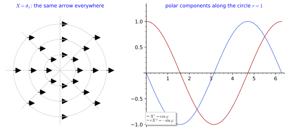
figures/covariant_polar.sage.
Connections
The failure of Equation 29 is a single inhomogeneous term built from second derivatives of the transition map. A connection is the extra datum that cancels it: a set of coefficients with exactly the opposite inhomogeneous transformation law, so that the sum of a partial derivative and a connection term is a tensor.
Definition 51 (Connection) A connection on a manifold is a rule \Gamma^k_{ij}(x), one set of n^3 smooth functions per chart, called the connection coefficients, that transforms under a change of chart with an inhomogeneous term cancelling the second term of Equation 29: \Gamma'^k_{ij} = \frac{\partial x'^k}{\partial x^c}\frac{\partial x^a}{\partial x'^i}\frac{\partial x^b}{\partial x'^j}\, \Gamma^c_{ab} + \frac{\partial x'^k}{\partial x^c}\frac{\partial^2 x^c}{\partial x'^i \partial x'^j} . \tag{30} The connection coefficients are not the components of a tensor field, because of the second term.
Veriphy. Pending.
Lean. Pending.
Sage. Pending.
The simplest connection is the one that vanishes in Cartesian coordinates. Rewritten in polar coordinates it acquires two non-zero coefficients, produced entirely by the inhomogeneous term of the transformation law, and these are exactly the numbers needed to cancel the variation of the polar components in the figure.
Example 203 (The trivial connection of \mathbb{R}^n) \Gamma^k_{ij} = 0 in Cartesian coordinates defines a connection on \mathbb{R}^n; in polar coordinates the same connection has \Gamma^r_{\varphi\varphi} = -r and \Gamma^\varphi_{r\varphi} = 1/r by Equation 30 (Proposition 19), which is exactly what cancels the variation of the components in Figure 15.
On a curved manifold there is no chart in which a natural connection vanishes, and the coefficients carry genuine information. The sphere is the first such case; its connection coefficients are derived from the metric in the next section and quoted here as an example of the definition.
Example 204 (The connection of the sphere) The six functions \Gamma^\theta_{\varphi\varphi} = -\sin\theta\cos\theta, \Gamma^\varphi_{\theta\varphi} = \cot\theta and four zeros of Section 1.4.2 are a connection on the sphere minus the poles; they are the only torsion-free connection compatible with the round metric.
The same structure appears in electromagnetism, where the potential plays the role of the connection coefficients. The third example compares the two transformation laws and shows that both consist of a homogeneous part plus a derivative term that a covariant derivative must absorb.
Example 205 (Gauge connections) The electromagnetic potential A_\mu of Abelian gauge invariance is a connection of the same kind for a complex field: it transforms with an inhomogeneous term \partial_\mu\lambda under a gauge transformation, and the covariant derivative D_\mu\phi = \partial_\mu\phi - iqA_\mu\phi transforms as \phi does. The analogy is exact in the language of bundles (Connections on bundles).
The trivial connection of the plane was converted to polar coordinates in the first example without showing the computation. The first exercise asks for it, so that the reader sees the inhomogeneous term of Equation 30 produce a non-zero coefficient out of nothing.
Exercise 211 (The inhomogeneous term) Derive \Gamma^r_{\varphi\varphi} = -r for the trivial connection of the plane from Equation 30.
With \Gamma = 0 in Cartesian coordinates only the second term survives: \Gamma'^r_{\varphi\varphi} = \frac{\partial r}{\partial x^c}\frac{\partial^2 x^c}{\partial\varphi^2}. Since x = r\cos\varphi, y = r\sin\varphi give \partial^2_\varphi(x, y) = -(x, y), and \partial r/\partial(x, y) = (x, y)/r, the sum is -(x^2 + y^2)/r = -r.
The same conversion can be done by SageManifolds, which stores a connection chart by chart and transforms it automatically. The second exercise declares the flat connection in the Cartesian chart and reads off all its coefficients in the polar chart.
Exercise 212 (The polar coefficients with SageManifolds) Declare the Euclidean metric of the plane in Cartesian coordinates, take its connection, and display its coefficients in the polar chart. Which coefficients are non-zero?
In the Cartesian chart every coefficient vanishes. In the polar chart the non-zero ones are \Gamma^r_{\varphi\varphi} = -r and \Gamma^\varphi_{r\varphi} = \Gamma^\varphi_{\varphi r} = 1/r, the values of Example 203, all produced by the inhomogeneous term:
from sage.all import *
M = Manifold(2, 'R^2', structure='Riemannian')
cart = M.chart('x y'); x, y = cart[:]
U = M.open_subset('U'); pol = U.chart(r'r:(0,+oo) ph:(0,2*pi):\varphi'); r, ph = pol[:]
tr = pol.transition_map(cart.restrict(U), (r*cos(ph), r*sin(ph)))
tr.set_inverse(sqrt(x**2 + y**2), atan2(y, x), check=False)
g = M.metric('g'); g[0, 0] = 1; g[1, 1] = 1 # Euclidean metric, Cartesian chart
nab = g.connection() # the trivial connection: Gamma = 0 in Cartesian coordinates
print("Cartesian coefficients:", nab.display(cart.frame(), cart))
print("polar coefficients:"); print(nab.restrict(U).display(pol.frame(), pol))
G = nab.restrict(U).coef(pol.frame())
print("Gamma^r_phph = -r:", bool(G[0, 1, 1, pol].expr() == -r), " Gamma^ph_rph = 1/r:", bool(G[1, 0, 1, pol].expr() == 1/r))Output:
Cartesian coefficients:
polar coefficients:
Gam^r_ph,ph = -r
Gam^ph_r,ph = 1/r
Gam^ph_ph,r = 1/r
Gamma^r_phph = -r: True Gamma^ph_rph = 1/r: TrueConnection coefficients are not tensors, but the difference of two connections is, because the inhomogeneous terms cancel. The third exercise establishes this and draws the consequence that all connections on a manifold are obtained from one of them by adding tensor fields.
Exercise 213 (The difference of two connections) Show from Equation 30 that the difference D^k_{ij} = \Gamma^k_{ij} - \tilde\Gamma^k_{ij} of two connections transforms as a tensor of type (1, 2). Conversely, show that a connection plus a tensor field of type (1, 2) is a connection. What is the difference between the polar connection of the plane and the connection with \Gamma = 0 in the polar chart?
Both connections transform with the same inhomogeneous term \frac{\partial x'^k}{\partial x^c}\frac{\partial^2 x^c}{\partial x'^i \partial x'^j}, which depends only on the charts; it cancels in the difference, leaving the homogeneous law of a (1, 2) tensor. Conversely, adding a tensor D to \Gamma adds a homogeneous term to the law, so the inhomogeneous term is unchanged and the sum is a connection. The space of connections is therefore an affine space modelled on the (1, 2) tensor fields. In the polar chart the difference between the Levi-Civita connection and the zero connection is the tensor with components D^r_{\varphi\varphi} = -r, D^\varphi_{r\varphi} = D^\varphi_{\varphi r} = 1/r; in Cartesian components it is not zero either, since the zero connection of the polar chart is not the zero connection of the Cartesian chart.
Covariant derivatives
With a connection in hand, the partial derivative of the components can be corrected. The definition adds one connection term per index, and the cancellation of the inhomogeneous terms makes the result a tensor; the directional version, the derivative along a vector, is the form used for curves later on.
Definition 52 (Covariant derivative of a vector field) The covariant derivative of a vector field X with respect to a connection is \nabla_i X^k = \partial_i X^k + \Gamma^k_{ij} X^j , \tag{31} a tensor field of type (1, 1): the inhomogeneous terms of Equation 29 and Equation 30 cancel. The covariant derivative along a vector Y is \nabla_Y X = Y^i\nabla_i X, a vector field.
Veriphy. Pending.
Lean. The covariant derivative is KaluzaKlein.Geometry.covDeriv, defined by Equation 31.
Sage. Pending.
The first example returns to the constant field of Figure 15. Its polar components vary, but the connection terms cancel the variation exactly, so the covariant derivative detects that the field does not change.
Example 206 (A constant field in polar coordinates) For X = \partial_x with polar components (\cos\varphi, -\sin\varphi/r) and the polar connection, every component of \nabla_i X^k vanishes (Proposition 17): \partial_\varphi X^r = -\sin\varphi is cancelled by \Gamma^r_{\varphi\varphi}X^\varphi = (-r)(-\sin\varphi/r), and similarly for the other components.
The opposite situation also occurs: a field with constant components can have a non-zero covariant derivative. On the sphere the rotation field \partial_\varphi has components (0, 1) everywhere, yet the connection terms alone make its covariant derivative non-zero.
Example 207 (The rotation field on the sphere) For X = \partial_\varphi, components (0, 1), Equation 31 gives \nabla_\theta X^\varphi = \Gamma^\varphi_{\theta\varphi} = \cot\theta and \nabla_\varphi X^\theta = \Gamma^\theta_{\varphi\varphi} = -\sin\theta\cos\theta: the rotation field is not covariantly constant, although its components are. The combination \nabla_i X_j + \nabla_j X_i vanishes, which makes it a Killing field (Section 1.5.2).
In Cartesian coordinates of flat space all connection coefficients vanish, and the covariant derivative reduces to the familiar partial derivative. The third example records this, which explains why the correction is never seen in elementary vector calculus.
Example 208 (Cartesian coordinates) With \Gamma = 0 the covariant derivative is the partial derivative, \nabla_i X^k = \partial_i X^k; the connection is invisible in Cartesian coordinates and appears as soon as the chart is curvilinear, as in polar coordinates.
The radial and rotation fields of the plane are the two simplest fields with varying polar behaviour. The first exercise computes both covariant derivatives with SageManifolds and recognises the results as familiar tensors.
Exercise 214 (The radial and the rotation field of the plane) With the polar connection, compute \nabla_i V^k for the radial field V = r\,\partial_r (which is x\partial_x + y\partial_y) and for the rotation field W = \partial_\varphi (which is -y\partial_x + x\partial_y). Check the results in Cartesian coordinates.
For V: \nabla_r V^r = \partial_r r = 1, \nabla_\varphi V^\varphi = 0 + \Gamma^\varphi_{\varphi r}V^r = 1, and the mixed components vanish (\nabla_\varphi V^r = \Gamma^r_{\varphi\varphi}V^\varphi = 0), so \nabla_i V^k = \delta^k_i: the identity tensor, as in Cartesian coordinates where \partial_i x^k = \delta^k_i. For W: \nabla_r W^\varphi = \Gamma^\varphi_{r\varphi} = 1/r and \nabla_\varphi W^r = \Gamma^r_{\varphi\varphi} = -r, the polar form of the constant antisymmetric matrix \partial_i(-y, x) of Cartesian coordinates.
import os, sys; sys.path.insert(0, os.path.dirname(os.path.abspath(__file__))); from _curvature import *
M, X, g = chart_metric('r ph', lambda c: [[1, 0], [0, c[0]**2]], ranges='r:(0,+oo) ph:(0,2*pi)')
r, ph = X[:]
nab = g.connection()
V = M.vector_field(r, 0, name='V') # V = r d/dr, the field x d/dx + y d/dy
DV = nab(V) # components DV[k, i] = nabla_i V^k
print("nabla V =", DV.display())
print("nabla_i V^k = delta^k_i:", all(bool(DV[k, i].expr() == (1 if k == i else 0)) for k in range(2) for i in range(2)))
W = M.vector_field(0, 1, name='W') # W = d/dphi, the rotation field
DW = nab(W)
print("nabla W =", DW.display())
print("nabla_r W^ph = 1/r and nabla_ph W^r = -r:", bool(DW[1, 0].expr() == 1/r and DW[0, 1].expr() == -r))Output:
nabla V = nabla_g(V) = ∂/∂r⊗dr + ∂/∂ph⊗dph
nabla_i V^k = delta^k_i: True
nabla W = nabla_g(W) = -r ∂/∂r⊗dph + 1/r ∂/∂ph⊗dr
nabla_r W^ph = 1/r and nabla_ph W^r = -r: TrueOn the sphere the meridian field \partial_\theta points along great circles, and its covariant derivative tests which of its directional derivatives vanish. The second exercise computes the four components by hand from the two non-zero Christoffel symbols.
Exercise 215 (The field \partial_\theta on the sphere) Compute \nabla_i X^k for X = \partial_\theta, components (1, 0), on the round sphere. Which components vanish, and what does \nabla_\theta X = 0 say about the meridians?
\nabla_i X^k = \Gamma^k_{i\theta}. With Equation 36: \nabla_\theta X^\theta = \Gamma^\theta_{\theta\theta} = 0, \nabla_\theta X^\varphi = \Gamma^\varphi_{\theta\theta} = 0, \nabla_\varphi X^\theta = \Gamma^\theta_{\varphi\theta} = 0 and \nabla_\varphi X^\varphi = \Gamma^\varphi_{\varphi\theta} = \cot\theta. So \nabla_\theta X = 0: the unit field \partial_\theta does not change along its own integral curves, the meridians, which are therefore geodesics (Proposition 22). The non-zero component \nabla_\varphi X^\varphi = \cot\theta says that neighbouring meridians spread apart in the northern hemisphere and converge in the southern one.
The claim of the definition, that the covariant derivative is a tensor, deserves a proof. The third exercise combines the two transformation laws and shows the cancellation explicitly.
Exercise 216 (The covariant derivative is a tensor) Using Equation 29 and Equation 30, show that \nabla'_j X'^k = \frac{\partial x^i}{\partial x'^j}\frac{\partial x'^k}{\partial x^l}\nabla_i X^l. Use the identity \frac{\partial x'^k}{\partial x^c}\frac{\partial^2 x^c}{\partial x'^j\partial x'^m} = -\frac{\partial x^c}{\partial x'^j}\frac{\partial x^d}{\partial x'^m}\frac{\partial^2 x'^k}{\partial x^c\partial x^d}, obtained by differentiating \frac{\partial x'^k}{\partial x^c}\frac{\partial x^c}{\partial x'^m} = \delta^k_m.
Write \nabla'_j X'^k = \partial'_j X'^k + \Gamma'^k_{jm}X'^m with X'^m = \frac{\partial x'^m}{\partial x^l}X^l. The homogeneous part of \Gamma' gives \frac{\partial x^i}{\partial x'^j}\frac{\partial x'^k}{\partial x^l}\Gamma^l_{ia}X^a, which joins the first term of Equation 29 to make the tensor law of \nabla_i X^l. The inhomogeneous part gives \frac{\partial x'^k}{\partial x^c}\frac{\partial^2 x^c}{\partial x'^j\partial x'^m}\frac{\partial x'^m}{\partial x^l}X^l, which by the identity equals -\frac{\partial x^c}{\partial x'^j}\frac{\partial^2 x'^k}{\partial x^c\partial x^l}X^l and cancels the second term of Equation 29 exactly.
A vector field is not the only object that needs differentiating; one-forms, the metric and general tensors do too. The next definition extends the covariant derivative to them, fixed by two requirements: it agrees with the partial derivative on functions and it obeys the Leibniz rule.
Definition 53 (Covariant derivative of a tensor field) On one-forms the sign flips, \nabla_i \omega_j = \partial_i \omega_j - \Gamma^k_{ij}\omega_k, so that \nabla_i(\omega_j X^j) = \partial_i(\omega_j X^j) on the function \omega_j X^j; on a general tensor field there is one +\Gamma term per upper index and one -\Gamma term per lower index, \nabla_i T^{k}{}_{j} = \partial_i T^{k}{}_{j} + \Gamma^k_{il} T^{l}{}_{j} - \Gamma^l_{ij} T^{k}{}_{l} . \tag{32} The covariant derivative obeys the Leibniz rule and commutes with contractions.
Veriphy. Pending.
Lean. Pending.
Sage. Pending.
Functions carry no index, so the connection never acts on them directly. It does act on their differentials, and the first example shows that the second covariant derivative of a function, the Hessian, is a tensor while the matrix of second partial derivatives is not.
Example 209 (Functions and their differentials) For a function, \nabla_i f = \partial_i f: no index, no correction. For the one-form df the second covariant derivative \nabla_i\nabla_j f = \partial_i\partial_j f - \Gamma^k_{ij}\partial_k f is a tensor, the Hessian, symmetric when the connection is torsion-free.
A one-form takes the connection with the opposite sign to a vector field. The second example illustrates the rule on the sphere with the one-form d\varphi, whose covariant derivative mirrors that of the rotation field.
Example 210 (The one-form d\varphi on the sphere) \nabla_\theta (d\varphi)_\varphi = -\Gamma^k_{\theta\varphi}(d\varphi)_k = -\Gamma^\varphi_{\theta\varphi} = -\cot\theta and \nabla_\varphi (d\varphi)_\theta = -\Gamma^\varphi_{\varphi\theta} = -\cot\theta: the same number with the opposite sign to Example 207, as the sign rule prescribes.
The metric itself is a tensor with two lower indices, so its covariant derivative has two connection terms. The third example writes them out; the condition that they cancel the partial derivative is the subject of the next subsection.
Example 211 (The metric) \nabla_k g_{ij} = \partial_k g_{ij} - \Gamma^l_{ki}g_{lj} - \Gamma^l_{kj}g_{il} is a type (0, 3) tensor field; its vanishing is the metric compatibility of Definition 55, the condition that selects the Levi-Civita connection.
The height function \cos\theta on the sphere is the simplest non-constant function there, and its Hessian turns out to be proportional to the metric. The first exercise computes it with SageManifolds and takes its trace, the Laplacian.
Exercise 217 (The Hessian of the height on the sphere) Compute with SageManifolds the Hessian \nabla_i\nabla_j f of f = \cos\theta on the unit sphere, check that it is symmetric and equal to -f g_{ij}, and deduce g^{ij}\nabla_i\nabla_j f.
\nabla_\theta\nabla_\theta f = \partial_\theta^2\cos\theta = -\cos\theta and \nabla_\varphi\nabla_\varphi f = 0 - \Gamma^\theta_{\varphi\varphi}\partial_\theta f = -\sin\theta\cos\theta\sin\theta = -\cos\theta\sin^2\theta, with the mixed components zero: the Hessian is -\cos\theta\, g_{ij}. Its trace is -2\cos\theta, so \cos\theta is an eigenfunction of the Laplacian of the sphere with eigenvalue -2 = -\ell(\ell + 1) for \ell = 1.
import os, sys; sys.path.insert(0, os.path.dirname(os.path.abspath(__file__))); from _curvature import *
M, X, g = chart_metric('th ph', lambda c: [[1, 0], [0, sin(c[0])**2]], ranges='th:(0,pi) ph:(0,2*pi)')
th, ph = X[:]
nab = g.connection()
f = M.scalar_field(cos(th), name='f')
df = f.differential()
H = nab(df) # H[j, i] = nabla_i (df)_j
print("Hessian of cos(theta):", H.display())
print("symmetric:", all(bool((H[i, j].expr() - H[j, i].expr()).simplify_full() == 0) for i in range(2) for j in range(2)))
print("Hess f = -f g:", all(bool((H[i, j].expr() + cos(th)*g[i, j].expr()).simplify_full() == 0) for i in range(2) for j in range(2)))
lap = sum(g.inverse()[i, j].expr()*H[i, j].expr() for i in range(2) for j in range(2)).simplify_full()
print("Laplacian g^{ij} nabla_i nabla_j f = -2 f:", bool((lap + 2*cos(th)).simplify_full() == 0))Output:
Hessian of cos(theta): nabla_g(df) = -cos(th) dth⊗dth - cos(th)*sin(th)^2 dph⊗dph
symmetric: True
Hess f = -f g: True
Laplacian g^{ij} nabla_i nabla_j f = -2 f: TrueThe one-forms dr and d\varphi of polar coordinates are the duals of the coordinate vectors, and their covariant derivatives follow from the sign rule. The second exercise computes them and checks the result against the differentials of x and y.
Exercise 218 (Covariant derivatives of dr and d\varphi) With the polar connection, compute \nabla_i(dr)_j and \nabla_i(d\varphi)_j. Then check that the one-form dx = \cos\varphi\,dr - r\sin\varphi\,d\varphi has vanishing covariant derivative.
(dr)_j = \delta^r_j is constant, so \nabla_i(dr)_j = -\Gamma^r_{ij}: the only non-zero component is \nabla_\varphi(dr)_\varphi = r. Likewise \nabla_i(d\varphi)_j = -\Gamma^\varphi_{ij}, non-zero for \nabla_r(d\varphi)_\varphi = \nabla_\varphi(d\varphi)_r = -1/r. For \omega = dx, \omega_r = \cos\varphi, \omega_\varphi = -r\sin\varphi: \nabla_r\omega_r = 0, \nabla_r\omega_\varphi = -\sin\varphi - \Gamma^\varphi_{r\varphi}\omega_\varphi = -\sin\varphi + \sin\varphi = 0, \nabla_\varphi\omega_r = -\sin\varphi - \Gamma^\varphi_{\varphi r}\omega_\varphi = 0 and \nabla_\varphi\omega_\varphi = -r\cos\varphi - \Gamma^r_{\varphi\varphi}\omega_r = -r\cos\varphi + r\cos\varphi = 0.
The sign rule for one-forms was stated, not derived. The third exercise derives it from the two requirements of the definition and extends it to a tensor of arbitrary type.
Exercise 219 (The sign rule from the Leibniz rule) Assume that \nabla obeys the Leibniz rule, commutes with contractions, and equals \partial on functions. Show that \nabla_i\omega_j = \partial_i\omega_j - \Gamma^k_{ij}\omega_k for every one-form, and that a type (p, q) tensor has p terms +\Gamma and q terms -\Gamma.
The contraction \omega_j X^j is a function, so \nabla_i(\omega_jX^j) = \partial_i(\omega_jX^j) = (\partial_i\omega_j)X^j + \omega_j\partial_iX^j. By Leibniz it also equals (\nabla_i\omega_j)X^j + \omega_k(\partial_iX^k + \Gamma^k_{ij}X^j). Comparing, (\nabla_i\omega_j - \partial_i\omega_j + \Gamma^k_{ij}\omega_k)X^j = 0 for every X, which is the rule. A type (p, q) tensor is a sum of products of p vectors and q one-forms; Leibniz then gives one +\Gamma term per vector factor (upper index) and one -\Gamma term per one-form factor (lower index), as in Equation 32.
Torsion and metric compatibility
A general connection has n^3 coefficients per chart, far more than a metric can determine. Two natural conditions cut them down: symmetry in the lower indices, which is the vanishing of the torsion, and compatibility with the metric. The first is a tensorial statement because the antisymmetric part of \Gamma is a tensor.
Definition 54 (Torsion) The torsion of a connection is the tensor field T^k_{ij} = \Gamma^k_{ij} - \Gamma^k_{ji} (the inhomogeneous terms of Equation 30 cancel in the difference, as second derivatives commute). The connection is torsion-free (or symmetric) if T = 0, that is \Gamma^k_{ij} = \Gamma^k_{ji}.
Veriphy. Pending.
Lean. Pending.
Sage. Pending.
Every connection derived from a metric by the formula of the next section is symmetric, so it has no torsion. The first example checks the symmetry on the sphere.
Example 212 (Christoffel symbols) The Christoffel symbols of any metric are symmetric in their lower indices (Lemma 1), so the Levi-Civita connection is torsion-free; on the sphere \Gamma^\varphi_{\theta\varphi} = \Gamma^\varphi_{\varphi\theta} = \cot\theta.
A torsion-free connection is the special case; most arrays of coefficients are not symmetric. The second example writes down the simplest connection with torsion, a constant array in Cartesian coordinates.
Example 213 (A connection with torsion) On \mathbb{R}^2, \Gamma^1_{12} = 1 with all other coefficients zero is a connection (in the Cartesian chart, any constant array is one) with torsion T^1_{12} = 1 - \Gamma^1_{21} = 1. Torsion appears in the Einstein-Cartan extension of general relativity, where it couples to spin, but not in the theories of these lectures.
On a Lie group torsion arises naturally, from the structure constants. The third example contrasts two connections on SU(2): one flat with torsion, the other curved without.
Example 214 (The flat connection with torsion on a Lie group) On SU(2) the connection that declares the left-invariant frame of Maurer-Cartan forms covariantly constant is flat but has torsion T^a{}_{bc} = -f^a{}_{bc}, the structure constants; the Levi-Civita connection of the bi-invariant metric is torsion-free but curved (Section 1.4.5).
The torsion of a connection was claimed to be a tensor. The first exercise asks for the proof, which is the special case of Exercise 213 in which the second connection is the first with its lower indices swapped.
Exercise 220 (Torsion is a tensor) Show from Equation 30 that T^k_{ij} = \Gamma^k_{ij} - \Gamma^k_{ji} transforms as a tensor.
The inhomogeneous term \frac{\partial x'^k}{\partial x^c}\frac{\partial^2 x^c}{\partial x'^i\partial x'^j} is symmetric in i, j because partial derivatives commute, so it cancels in \Gamma'^k_{ij} - \Gamma'^k_{ji}, leaving the homogeneous law T'^k_{ij} = \frac{\partial x'^k}{\partial x^c}\frac{\partial x^a}{\partial x'^i}\frac{\partial x^b}{\partial x'^j}T^c_{ab} of a type (1, 2) tensor.
The connection of Example 213 can be built in SageManifolds as a general affine connection. The second exercise computes its torsion and curvature, and then its symmetric part, which turns out to have the opposite properties.
Exercise 221 (A flat connection with torsion) With SageManifolds, define the connection on \mathbb{R}^2 whose only non-zero coefficient is \Gamma^x_{xy} = 1 and compute its torsion and Riemann tensor. Then compute the same for its symmetric part \Gamma^k_{(ij)} = \tfrac12(\Gamma^k_{ij} + \Gamma^k_{ji}).
The torsion has T^x_{xy} = -T^x_{yx} = 1 and the curvature vanishes: the constant coefficients have no derivatives, and the products in Equation 42 cancel. The symmetric part \Gamma^x_{xy} = \Gamma^x_{yx} = \tfrac12 is torsion-free but curved, R^x{}_{yxy} = -\Gamma^x_{yx}\Gamma^x_{xy} = -\tfrac14: torsion and curvature are independent properties. SageManifolds stores \nabla_{e_j}e_i = \Gamma^k_{ij}e_k with the derivative index last, so the coefficient is set as nab[0, 1, 0]:
from sage.all import *
M = Manifold(2, 'R^2'); X = M.chart('x y')
nab = M.affine_connection('nabla', latex_name=r'\nabla')
nab[0, 1, 0] = 1 # book's Gamma^x_xy = 1 (derivative index first); SageManifolds puts the derivative index last
print("coefficients:", nab.display())
T = nab.torsion()
print("torsion:", T.display())
print("T^x_xy = 1 and T^x_yx = -1:", bool(T[0, 0, 1].expr() == 1 and T[0, 1, 0].expr() == -1))
print("Riemann tensor vanishes (flat):", nab.riemann() == 0)
sym = M.affine_connection('nablaS') # the symmetric part Gamma^k_(ij)
for k in range(2):
for i in range(2):
for j in range(2):
sym[k, i, j] = (nab[k, i, j].expr() + nab[k, j, i].expr())/2
print("symmetric part Gamma^x_xy = Gamma^x_yx = 1/2:", bool(sym[0, 0, 1].expr() == 1/2 and sym[0, 1, 0].expr() == 1/2), "; its torsion vanishes:", sym.torsion() == 0)
print("but the symmetric part is curved: R^x_yxy =", sym.riemann()[0, 1, 0, 1].expr())Output:
coefficients: Gam^x_yx = 1
torsion: ∂/∂x⊗dx⊗dy - ∂/∂x⊗dy⊗dx
T^x_xy = 1 and T^x_yx = -1: True
Riemann tensor vanishes (flat): True
symmetric part Gamma^x_xy = Gamma^x_yx = 1/2: True ; its torsion vanishes: True
but the symmetric part is curved: R^x_yxy = -1/4Torsion has an intrinsic description that uses no components at all. The third exercise derives it from the Lie bracket of vector fields (Definition 21) and explains why the antisymmetric part of \Gamma is the only obstruction.
Exercise 222 (Torsion without components) For vector fields X, Y define T(X, Y) = \nabla_XY - \nabla_YX - [X, Y]. Show that its components are T^k_{ij}X^iY^j with T^k_{ij} = \Gamma^k_{ij} - \Gamma^k_{ji}, so that T(X, Y) is linear over functions in both arguments. Deduce that for a torsion-free connection \nabla_XY - \nabla_YX = [X, Y].
(\nabla_XY)^k = X^i\partial_iY^k + \Gamma^k_{ij}X^iY^j and (\nabla_YX)^k = Y^i\partial_iX^k + \Gamma^k_{ij}Y^iX^j, while [X, Y]^k = X^i\partial_iY^k - Y^i\partial_iX^k. The derivative terms cancel in T(X, Y), leaving (\Gamma^k_{ij} - \Gamma^k_{ji})X^iY^j. No derivatives of X or Y remain, so T(fX, Y) = fT(X, Y), as for a tensor. If T = 0 the identity \nabla_XY - \nabla_YX = [X, Y] follows; for coordinate fields, whose brackets vanish, it is \Gamma^k_{ij} = \Gamma^k_{ji}.
The second condition ties the connection to the metric: parallel transport should not change lengths and angles. Expressed in components, it says that the covariant derivative of the metric vanishes, which by the rule of Example 211 is a linear equation for the connection coefficients.
Definition 55 (Metric compatibility) A connection is compatible with a metric g if \nabla_k g_{ij} = 0, that is \partial_k g_{ij} = \Gamma^l_{ki} g_{lj} + \Gamma^l_{kj} g_{il} . \tag{33} Then inner products are preserved by parallel transport (Section 1.4.3), and raising and lowering indices commutes with \nabla.
Veriphy. Pending.
Lean. Pending.
Sage. Pending.
The flat connection of the plane is compatible with the Euclidean metric in any chart, since compatibility is a tensorial condition. The first example checks one component of Equation 33 in each of the two charts.
Example 215 (The trivial connection) \Gamma = 0 in Cartesian coordinates is compatible with the Euclidean metric \delta_{ij}, since both sides of Equation 33 vanish; in polar coordinates Equation 33 for (k, i, j) = (r, \varphi, \varphi) reads \partial_r(r^2) = 2\Gamma^\varphi_{r\varphi}\, r^2 = 2r, satisfied by \Gamma^\varphi_{r\varphi} = 1/r.
On the sphere the compatibility equation already determines one Christoffel symbol by itself. The second example solves it for \Gamma^\varphi_{\theta\varphi} and anticipates the general derivation of the next section.
Example 216 (The sphere) For the round metric, Equation 33 with (k, i, j) = (\theta, \varphi, \varphi) reads \partial_\theta\sin^2\theta = 2\Gamma^\varphi_{\theta\varphi}\sin^2\theta, giving \Gamma^\varphi_{\theta\varphi} = \cot\theta; the other components are checked in Section 1.4.2, where the full set is derived.
Not every torsion-free connection is compatible with a given metric. The third example shows a symmetric connection that fails the test and explains what would go wrong with transported lengths.
Example 217 (A connection that is not compatible) \Gamma = 0 in polar coordinates is a connection on the punctured plane (the trivial connection of the (r, \varphi) chart) but is not compatible with the Euclidean metric, since \partial_r g_{\varphi\varphi} = 2r \neq 0 while the right-hand side of Equation 33 vanishes; with it, the length of a transported vector would change.
The two connections of the polar chart, the Levi-Civita one and the zero one, were compared by hand in the examples. The first exercise repeats the comparison in SageManifolds, computing \nabla g for both.
Exercise 223 (Two connections on the punctured plane) With SageManifolds, compute \nabla g for the Levi-Civita connection of the polar metric and for the connection with \Gamma = 0 in the polar chart, and compute the torsion and curvature of the latter.
\nabla g = 0 for the Levi-Civita connection. For the zero connection the only non-zero component is \nabla_rg_{\varphi\varphi} = \partial_r(r^2) = 2r. The zero connection is torsion-free and even flat (its coefficients vanish in a chart), yet incompatible with the metric: it is the flat connection of the metric dr^2 + d\varphi^2, not of the Euclidean one.
import os, sys; sys.path.insert(0, os.path.dirname(os.path.abspath(__file__))); from _curvature import *
M, X, g = chart_metric('r ph', lambda c: [[1, 0], [0, c[0]**2]], ranges='r:(0,+oo) ph:(0,2*pi)')
r, ph = X[:]
nab = g.connection()
print("Levi-Civita coefficients:", nab.display())
print("nabla g = 0 for the Levi-Civita connection:", nab(g) == 0)
zero = M.affine_connection('nabla0') # Gamma = 0 in the polar chart
zero[0, 0, 0] = 0
dg = zero(g) # dg[i, j, k] = nabla_k g_ij
print("nabla g for the zero connection of the polar chart:", dg.display())
print("the only non-zero component is nabla_r g_phph = 2r:", bool(dg[1, 1, 0].expr() == 2*r) and all(bool(dg[i, j, k].expr() == 0) for i in range(2) for j in range(2) for k in range(2) if (i, j, k) != (1, 1, 0)))
print("the zero connection is torsion-free:", zero.torsion() == 0, "and flat:", zero.riemann() == 0)Output:
Levi-Civita coefficients: Gam^r_ph,ph = -r
Gam^ph_r,ph = 1/r
Gam^ph_ph,r = 1/r
nabla g = 0 for the Levi-Civita connection: True
nabla g for the zero connection of the polar chart: nabla0(g) = 2*r dph⊗dph⊗dr
the only non-zero component is nabla_r g_phph = 2r: True
the zero connection is torsion-free: True and flat: TrueCompatibility was motivated by raising and lowering of indices commuting with \nabla. The second exercise proves this, together with the vanishing of the covariant derivative of the inverse metric.
Exercise 224 (Raising indices commutes with \nabla) Show that a metric-compatible connection has \nabla_kg^{ij} = 0, and that \nabla_k(g_{ij}X^j) = g_{ij}\nabla_kX^j. Use g^{ij}g_{jl} = \delta^i_l and the Leibniz rule.
The Kronecker delta has \nabla_k\delta^i_l = 0 + \Gamma^i_{km}\delta^m_l - \Gamma^m_{kl}\delta^i_m = 0. By Leibniz, 0 = \nabla_k(g^{ij}g_{jl}) = (\nabla_kg^{ij})g_{jl} + g^{ij}\nabla_kg_{jl} = (\nabla_kg^{ij})g_{jl}, and multiplying by g^{lm} gives \nabla_kg^{im} = 0. Then \nabla_k(g_{ij}X^j) = (\nabla_kg_{ij})X^j + g_{ij}\nabla_kX^j = g_{ij}\nabla_kX^j: lowering and covariant differentiation commute, and similarly for raising.
The geometric content of compatibility is that inner products are preserved along curves. The third exercise proves this for two vector fields that are covariantly constant along a curve, anticipating the parallel transport of Section 1.4.3.
Exercise 225 (Compatible connections preserve inner products) Let x(t) be a curve and V(t), W(t) vectors along it with \dot x^i\nabla_iV^k = \dot x^i\nabla_iW^k = 0, that is \dot V^k + \Gamma^k_{ij}\dot x^iV^j = 0 and likewise for W. Show that \frac{d}{dt}\, g_{kl}(x(t))V^kW^l = 0 if and only if the connection satisfies Equation 33 along the curve for all such V, W.
\frac{d}{dt}(g_{kl}V^kW^l) = \dot x^i\partial_ig_{kl}V^kW^l + g_{kl}\dot V^kW^l + g_{kl}V^k\dot W^l = \dot x^iV^jW^l\big(\partial_ig_{jl} - \Gamma^k_{ij}g_{kl} - \Gamma^k_{il}g_{jk}\big) = \dot x^iV^jW^l\nabla_ig_{jl}. This vanishes for all initial vectors and all directions \dot x exactly when \nabla_ig_{jl} = 0, which is Equation 33.
The constant field of Figure 15 has been the guiding example of this section. The proposition records that its covariant derivative vanishes, component by component, wherever the polar chart is defined.
Proposition 17 (The constant field is covariantly constant) For the polar connection, \nabla_i X^k = 0 for the field X = \partial_x with polar components (\cos\varphi, - \sin\varphi/r), r \neq 0.
Veriphy. Pending.
Lean. KaluzaKlein.Geometry.dxPolar_parallel.
/-- `∇ ∂_x = 0` in polar coordinates: the components vary but the covariant derivative vanishes. -/
theorem dxPolar_parallel (i k : Fin 2) (x : Fin 2 → ℝ) (h : x 0 ≠ 0) : covDeriv polar dxPolar i k x = 0KaluzaKlein.Geometry.dxPolar_parallel in KaluzaKlein/Geometry/Polar.lean, namespace KaluzaKlein.Geometry
Sage. SageManifolds’ connection in the figure script figures/covariant_polar.sage checks all four components.
The field \partial_x is one of a two-parameter family of constant fields, and all of them are covariantly constant for the same reason. The first example states the companion result for \partial_y, whose polar components are the rotated pair.
Example 218 (The field \partial_y) \partial_y = \sin\varphi\,\partial_r + \frac{\cos\varphi}{r}\,\partial_\varphi is covariantly constant as well: \nabla_\varphi X^r = \cos\varphi + \Gamma^r_{\varphi\varphi}X^\varphi = \cos\varphi - r\frac{\cos\varphi}{r} = 0 and \nabla_\varphi X^\varphi = -\frac{\sin\varphi}{r} + \Gamma^\varphi_{\varphi r}X^r = 0, the r-derivatives vanishing likewise. Every constant field a\,\partial_x + b\,\partial_y is then covariantly constant by linearity.
A coordinate vector field of the polar chart behaves differently: \partial_r has constant components (1, 0), and the connection makes its covariant derivative non-zero. The second example computes it and reads the result geometrically.
Example 219 (The radial unit field is not constant) For X = \partial_r, \nabla_iX^k = \Gamma^k_{ir}, whose only non-zero component is \nabla_\varphi X^\varphi = \Gamma^\varphi_{\varphi r} = 1/r: moving around a circle, the unit radial vector turns, by an angle d\varphi for a step d\varphi, and the covariant derivative records the turning as a \partial_\varphi-component of size \frac{1}{r}|\partial_\varphi| = 1 per radian.
The proposition can be read along any curve, in particular along the unit circle of Figure 15. The third example does this and recovers the varying components in the right panel of the figure as the solution of a differential equation.
Example 220 (Along the unit circle) Along r = 1, \varphi = t the condition \dot x^i\nabla_iX^k = 0 reads \dot X^r = X^\varphi, \dot X^\varphi = -X^r (with \Gamma^r_{\varphi\varphi} = -1, \Gamma^\varphi_{\varphi r} = 1), whose solution through (1, 0) is X^r = \cos t, X^\varphi = -\sin t: exactly the components of \partial_x plotted in Figure 15. Their rotation in the chart is how a field that does not turn looks in a frame that does.
The first exercise repeats the proof of the proposition by hand, component by component. It shows which connection coefficient cancels which derivative.
Exercise 226 (The covariant derivative of \partial_x in polar coordinates) Compute \nabla_\varphi X^r and \nabla_\varphi X^\varphi for X^r = \cos\varphi, X^\varphi = -\sin\varphi/r with the polar connection coefficients, and check that they vanish.
\nabla_\varphi X^r = \partial_\varphi X^r + \Gamma^r_{\varphi\varphi}X^\varphi = -\sin\varphi + (-r)(-\sin\varphi/r) = 0, and \nabla_\varphi X^\varphi = \partial_\varphi X^\varphi + \Gamma^\varphi_{\varphi r}X^r = -\cos\varphi/r + (1/r)\cos\varphi = 0. The r-derivatives vanish likewise.
Veriphy. Pending.
Lean.
/-- `∇ ∂_x = 0` in polar coordinates: the components vary but the covariant derivative vanishes. -/
theorem dxPolar_parallel (i k : Fin 2) (x : Fin 2 → ℝ) (h : x 0 ≠ 0) : covDeriv polar dxPolar i k x = 0KaluzaKlein.Geometry.dxPolar_parallel in KaluzaKlein/Geometry/Polar.lean, namespace KaluzaKlein.Geometry
Sage. The figure script figures/covariant_polar.sage checks all four components with SageManifolds’ connection.
The companion statement for \partial_y and the failure for \partial_r are both quick to verify in SageManifolds. The second exercise does so, and checks that an arbitrary constant combination is covariantly constant too.
Exercise 227 (Constant and non-constant fields in SageManifolds) With SageManifolds and the polar metric, compute the covariant derivatives of \partial_y, of \partial_r and of a\,\partial_x + b\,\partial_y for symbolic constants a, b.
\nabla\partial_y = 0 and \nabla(a\partial_x + b\partial_y) = 0, as in Example 218, while \nabla\partial_r = \frac1r\,\partial_\varphi\otimes d\varphi, as in Example 219:
import os, sys; sys.path.insert(0, os.path.dirname(os.path.abspath(__file__))); from _curvature import *
M, X, g = chart_metric('r ph', lambda c: [[1, 0], [0, c[0]**2]], ranges='r:(0,+oo) ph:(0,2*pi)')
r, ph = X[:]
nab = g.connection()
Y = M.vector_field(sin(ph), cos(ph)/r, name='Y') # d/dy in polar components
DY = nab(Y)
print("nabla (d/dy) =", DY.display())
print("d/dy is covariantly constant:", DY == 0)
E_r = M.vector_field(1, 0, name='e_r') # d/dr
DE = nab(E_r)
print("nabla (d/dr) =", DE.display())
print("nabla_ph (d/dr) = (1/r) d/dph, nabla_r (d/dr) = 0:", bool(DE[1, 1].expr() == 1/r and DE[0, 1].expr() == 0 and DE[0, 0].expr() == 0 and DE[1, 0].expr() == 0))
a, b = var('a b', domain='real')
Z = a*M.vector_field(cos(ph), -sin(ph)/r) + b*Y # a d/dx + b d/dy
print("every constant field a d/dx + b d/dy is covariantly constant:", nab(Z) == 0)Output:
nabla (d/dy) = nabla_g(Y) = 0
d/dy is covariantly constant: True
nabla (d/dr) = nabla_g(e_r) = 1/r ∂/∂ph⊗dph
nabla_ph (d/dr) = (1/r) d/dph, nabla_r (d/dr) = 0: True
every constant field a d/dx + b d/dy is covariantly constant: TrueThe converse question is whether the constant fields are the only covariantly constant fields of the plane. The third exercise answers it, using that the covariant derivative is a tensor and may be computed in any chart.
Exercise 228 (All covariantly constant fields of the plane) Show that a vector field X on the punctured plane with \nabla_iX^k = 0 is a constant combination a\,\partial_x + b\,\partial_y. Then show that on the sphere no non-zero vector field has \nabla_iX^k = 0 on the chart domain.
\nabla X is a tensor, so it vanishes in the Cartesian chart too, where \Gamma = 0 and the condition reads \partial_iX^k = 0: the Cartesian components are constant. On the sphere, \nabla_\varphi X^\theta = \partial_\varphi X^\theta - \sin\theta\cos\theta\,X^\varphi and \nabla_\varphi X^\varphi = \partial_\varphi X^\varphi + \cot\theta\,X^\theta; both vanishing gives \partial_\varphi^2X^\theta = -\cos^2\theta\,X^\theta, so X^\theta oscillates in \varphi with frequency \cos\theta, which is not an integer for generic \theta, contradicting 2\pi-periodicity unless X^\theta = 0, and then X^\varphi = 0. The obstruction is the curvature of Section 1.4.4: a covariantly constant field would be unchanged by transport around every loop.
The Levi-Civita connection
A metric singles out one connection: requiring it to be torsion-free and metric-compatible determines it uniquely, and its coefficients, the Christoffel symbols, are computed from the metric and its first derivatives. The derivation is a computation that every later part relies on, so it is carried out in full, and the symbols of the running examples are then verified one by one.
Deriving the Christoffel symbols
Metric compatibility Equation 33 written out is \partial_k g_{ij} = \Gamma^l_{ki} g_{lj} + \Gamma^l_{kj} g_{il} . Write this equation three times with the indices cycled, (k, i, j) \to (i, j, k) \to (j, k, i): \begin{aligned} \partial_k g_{ij} &= \Gamma^l_{ki} g_{lj} + \Gamma^l_{kj} g_{il}, \\ \partial_i g_{jk} &= \Gamma^l_{ij} g_{lk} + \Gamma^l_{ik} g_{jl}, \\ \partial_j g_{ki} &= \Gamma^l_{jk} g_{li} + \Gamma^l_{ji} g_{kl} . \end{aligned} Add the second and third and subtract the first. Using the symmetry of \Gamma in its lower indices (torsion freedom), the terms \Gamma^l_{ik} g_{jl} and \Gamma^l_{ki} g_{lj} cancel, as do \Gamma^l_{jk} g_{li} and \Gamma^l_{kj} g_{il}, leaving \partial_i g_{jk} + \partial_j g_{ki} - \partial_k g_{ij} = 2\, \Gamma^l_{ij} g_{lk} . Contracting with the inverse metric g^{km} isolates the connection: \Gamma^m_{ij} = \tfrac12 g^{mk} \left( \partial_i g_{jk} + \partial_j g_{ki} - \partial_k g_{ij} \right), \tag{34} which is Equation 1 of Prerequisites and conventions of the conventions chapter.
The derivation shows that a torsion-free compatible connection, if it exists, must have the coefficients Equation 34. They deserve a name of their own, since they are computed from any metric by a fixed rule.
Definition 56 (Christoffel symbols) The Christoffel symbols of a metric g are the functions \Gamma^m_{ij} of Equation 34, one set per chart.
Veriphy. Pending.
Lean. In the Lean library the Christoffel symbols are christoffel g k i j x, computed from the metric components and the matrix inverse exactly as in Equation 34.
Sage. Pending.
Every term of Equation 34 contains a derivative of the metric. The first example draws the immediate consequence for metrics with constant components, which include all the flat models of the earlier chapters.
Example 221 (Constant metrics) Every term in Equation 34 is a derivative of a component, so a constant metric has vanishing Christoffel symbols: the Euclidean metric in Cartesian coordinates, the Minkowski metric, the flat torus and the circle (Proposition 18).
A flat metric need not have constant components; it depends on the chart. The second example evaluates the formula for the polar metric of the plane, where one component depends on r and two symbols survive.
Example 222 (The flat plane in polar coordinates) For the polar metric, g_{\varphi\varphi} = r^2 is the only non-constant component, with \partial_r g_{\varphi\varphi} = 2r, and g^{rr} = 1, g^{\varphi\varphi} = 1/r^2. By Equation 34, \Gamma^r_{\varphi\varphi} = \tfrac12 g^{rr}(0 + 0 - \partial_r g_{\varphi\varphi}) = -r and \Gamma^\varphi_{r\varphi} = \tfrac12 g^{\varphi\varphi}\, \partial_r g_{\varphi\varphi} = 1/r, all others vanishing (Proposition 19, Exercise 245). The plane is flat, yet its connection coefficients in polar coordinates are not zero: they encode how the coordinate basis \partial_r, \partial_\varphi rotates and stretches from point to point, not any curvature.
The sphere is the first curved example and the one used most in this book. The third example goes through all six independent components, keeping track of which derivative survives in each bracket.
Example 223 (The sphere) For the round metric the only non-constant component is g_{\varphi\varphi} = \sin^2\theta, with \partial_\theta g_{\varphi\varphi} = 2\sin\theta\cos\theta and every other derivative zero, and the inverse metric is diagonal, g^{\theta\theta} = 1, g^{\varphi\varphi} = 1/\sin^2\theta. Going through Equation 34 index by index:
- \Gamma^\theta_{\theta\theta} = \tfrac12 g^{\theta\theta}(\partial_\theta g_{\theta\theta} + \partial_\theta g_{\theta\theta} - \partial_\theta g_{\theta\theta}) = 0;
- \Gamma^\theta_{\theta\varphi} = \tfrac12 g^{\theta\theta}(\partial_\theta g_{\varphi\theta} + \partial_\varphi g_{\theta\theta} - \partial_\theta g_{\theta\varphi}) = 0;
- \Gamma^\theta_{\varphi\varphi} = \tfrac12 g^{\theta\theta}(\partial_\varphi g_{\varphi\theta} + \partial_\varphi g_{\varphi\theta} - \partial_\theta g_{\varphi\varphi}) = -\tfrac12 \cdot 2\sin\theta\cos\theta = -\sin\theta\cos\theta;
- \Gamma^\varphi_{\theta\theta} = \tfrac12 g^{\varphi\varphi}(\partial_\theta g_{\theta\varphi} + \partial_\theta g_{\theta\varphi} - \partial_\varphi g_{\theta\theta}) = 0;
- \Gamma^\varphi_{\theta\varphi} = \tfrac12 g^{\varphi\varphi}(\partial_\theta g_{\varphi\varphi} + \partial_\varphi g_{\varphi\theta} - \partial_\varphi g_{\theta\varphi}) = \tfrac{1}{2\sin^2\theta} \cdot 2\sin\theta\cos\theta = \dfrac{\cos\theta}{\sin\theta};
- \Gamma^\varphi_{\varphi\varphi} = \tfrac12 g^{\varphi\varphi}(\partial_\varphi g_{\varphi\varphi} + \partial_\varphi g_{\varphi\varphi} - \partial_\varphi g_{\varphi\varphi}) = 0.
The two non-zero symbols are plotted in Figure 16 and verified in Proposition 20.
The sphere has curvature, but the procedure is the same for any metric with one non-constant component. The fourth example applies it to the Poincaré half-plane, whose two components depend on the height; these symbols govern the geodesics of Proposition 23.
Example 224 (The half-plane) For Equation 27, g_{xx} = g_{yy} = 1/y^2 with \partial_yg_{xx} = \partial_yg_{yy} = -2/y^3, and g^{xx} = g^{yy} = y^2. Then \Gamma^x_{xy} = \tfrac12 g^{xx}\partial_yg_{xx} = -1/y, \Gamma^y_{xx} = -\tfrac12 g^{yy}\partial_yg_{xx} = 1/y and \Gamma^y_{yy} = \tfrac12 g^{yy}\partial_yg_{yy} = -1/y, while \Gamma^x_{xx}, \Gamma^x_{yy} and \Gamma^y_{xy} vanish, since nothing depends on x. Unlike the polar symbols of Example 222, these cannot be removed by a change of chart: the half-plane is curved (Exercise 279).
Veriphy. Pending.
Lean. Pending.
Sage. Pending.
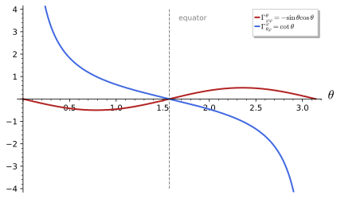
christoffel_symbols: \Gamma^\theta_{\varphi\varphi} = -\sin\theta\cos\theta vanishes on the equator, where parallels are geodesics, and \Gamma^\varphi_{\theta\varphi} = \cot\theta diverges at the poles, where the chart degenerates. Generated by figures/sphere_christoffel_plot.sage.
The torus of revolution has a metric of the same shape as the sphere’s, one constant component and one depending on the tube angle. The first exercise computes its Christoffel symbols by hand and with SageManifolds; they reappear in the geodesics and the curvature of the torus.
Exercise 229 (Christoffel symbols of the torus) Compute the non-zero Christoffel symbols of the torus metric ds^2 = r^2 da^2 + (R + r\cos a)^2 db^2.
With \partial_a g_{bb} = -2r(R + r\cos a)\sin a the only non-zero derivative, g^{aa} = 1/r^2 and g^{bb} = 1/(R + r\cos a)^2: \Gamma^a_{bb} = \tfrac12 g^{aa}(-\partial_a g_{bb}) = (R + r\cos a)\sin a / r and \Gamma^b_{ab} = \tfrac12 g^{bb}\, \partial_a g_{bb} = -r\sin a/(R + r\cos a). In SageManifolds:
import os, sys; sys.path.insert(0, os.path.dirname(os.path.abspath(__file__))); from _curvature import *
R, r = var('R r', domain='real'); assume(R > r, r > 0)
M, X, g = chart_metric('a b', lambda c: [[r**2, 0], [0, (R + r*cos(c[0]))**2]], ranges='a:(0,2*pi) b:(0,2*pi)')
print("non-zero Christoffel symbols Gamma^k_ij (i <= j):", christoffel(g))Output:
non-zero Christoffel symbols Gamma^k_ij (i <= j): {('a', 'b', 'b'): (r*cos(a)*sin(a) + R*sin(a))/r, ('b', 'a', 'b'): -r*sin(a)/(r*cos(a) + R)}The polar, spherical and torus examples are all diagonal, and for diagonal metrics the Christoffel symbols follow a pattern. The second exercise derives it, so that the symbols of any orthogonal chart can be written down at sight.
Exercise 230 (Diagonal metrics) For a diagonal metric g = \operatorname{diag}(h_1^2, \dots, h_n^2), show from Equation 34 that, with no sum over repeated indices and i \neq j distinct from k, \Gamma^i_{ii} = \partial_i\ln h_i, \Gamma^i_{ij} = \partial_j\ln h_i, \Gamma^i_{jj} = -\frac{h_j}{h_i^2}\partial_ih_j and \Gamma^k_{ij} = 0. Check the formulas on the polar metric and the sphere.
With g^{ii} = h_i^{-2} only one term of the contraction survives. \Gamma^i_{ii} = \tfrac12h_i^{-2}\partial_ih_i^2 = \partial_i\ln h_i; \Gamma^i_{ij} = \tfrac12h_i^{-2}(\partial_jh_i^2 + 0 - 0) = \partial_j\ln h_i; \Gamma^i_{jj} = \tfrac12h_i^{-2}(0 + 0 - \partial_ih_j^2) = -h_jh_i^{-2}\partial_ih_j; and for three distinct indices every derivative in the bracket is of an off-diagonal component, hence zero. Polar: h_r = 1, h_\varphi = r, so \Gamma^\varphi_{\varphi r} = \partial_r\ln r = 1/r and \Gamma^r_{\varphi\varphi} = -r\partial_rr = -r. Sphere: h_\varphi = \sin\theta gives \Gamma^\varphi_{\varphi\theta} = \cot\theta and \Gamma^\theta_{\varphi\varphi} = -\sin\theta\cos\theta.
A cone is flat, like the plane, but its natural chart is not the polar chart of a plane. The third exercise applies the diagonal formulas to it and compares the result with the polar symbols.
Exercise 231 (The cone) The cone of half-angle \alpha has the induced metric ds^2 = d\rho^2 + \rho^2\sin^2\alpha\,d\varphi^2, with \rho the distance from the apex along the surface (Exercise 187). Compute its Christoffel symbols, and show that the substitution \psi = \varphi\sin\alpha turns them into the polar symbols of the plane.
With h_\rho = 1 and h_\varphi = \rho\sin\alpha: \Gamma^\rho_{\varphi\varphi} = -\rho\sin^2\alpha and \Gamma^\varphi_{\rho\varphi} = 1/\rho, all others zero. In terms of \psi = \varphi\sin\alpha the metric is d\rho^2 + \rho^2d\psi^2, the polar metric, with \Gamma^\rho_{\psi\psi} = -\rho and \Gamma^\psi_{\rho\psi} = 1/\rho: locally the cone is a plane cut along a ray, with the angle \psi running over (0, 2\pi\sin\alpha) instead of (0, 2\pi).
A chart of the flat plane can have Christoffel symbols with any amount of structure, depending only on how it is drawn. The fourth exercise takes two charts from Blennow and Ohlsson (2022, Problem 2.3), one adapted to the hyperbolas xy = \text{const} and one that stretches a single axis, and finds where each is a chart.
Exercise 232 (Hyperbolic coordinates on the plane) Find the Euclidean metric and its Christoffel symbols in the coordinates (s, t) with x = se^t, y = se^{-t}, and in the coordinates (u, v) with x = u, y = v^2. Where in the plane is each a chart?
From dx = e^t(ds + s\,dt) and dy = e^{-t}(ds - s\,dt), ds^2_{\mathbb{R}^2} = 2\cosh 2t\,ds^2 + 4s\sinh 2t\,ds\,dt + 2s^2\cosh 2t\,dt^2 , with \det g = 4s^2. Although the components mix both coordinates, Equation 34 leaves only \Gamma^s_{tt} = s and \Gamma^t_{st} = 1/s. Since xy = s^2 and x/y = e^{2t}, the map covers the open quadrants x, y > 0 (s > 0) and x, y < 0 (s < 0), and it fails on the axes, where \det g = 0; the curves s = \text{const} are the hyperbolas xy = s^2. In the second chart ds^2 = du^2 + 4v^2dv^2 with the single symbol \Gamma^v_{vv} = 1/v; it is a chart on v > 0 (or v < 0), covering the half-plane y > 0 once, and degenerates at v = 0. Both are charts of a flat metric (Definition 47), so all these symbols are coordinate effects, as in polar coordinates:
import os, sys; sys.path.insert(0, os.path.dirname(os.path.abspath(__file__))); from _curvature import *
s, t = var('s t', domain='real')
x, y = s*exp(t), s*exp(-t)
J = matrix([[diff(x, s), diff(x, t)], [diff(y, s), diff(y, t)]])
G = J.transpose()*J
C2, S2 = (exp(2*t) + exp(-2*t))/2, (exp(2*t) - exp(-2*t))/2 # cosh 2t, sinh 2t
target = matrix([[2*C2, 2*s*S2], [2*s*S2, 2*s**2*C2]])
print("pulled-back metric:", [e.simplify_full() for e in G.list()])
print("equals 2cosh(2t) ds^2 + 4 s sinh(2t) ds dt + 2 s^2 cosh(2t) dt^2:", (G - target).simplify_full() == 0)
M, X, g = chart_metric('s t', lambda c: [[2*cosh(2*c[1]), 2*c[0]*sinh(2*c[1])], [2*c[0]*sinh(2*c[1]), 2*c[0]**2*cosh(2*c[1])]])
print("det g =", g.determinant().expr().simplify_full())
print("non-zero Christoffel symbols:", christoffel(g))
print("flat:", g.riemann() == 0)
M2, X2, g2 = chart_metric('u v', lambda c: [[1, 0], [0, 4*c[1]**2]])
print("coordinates (u, v) with y = v^2: metric du^2 + 4 v^2 dv^2, symbols", christoffel(g2))Output:
pulled-back metric: [(e^(4*t) + 1)*e^(-2*t), (s*e^(4*t) - s)*e^(-2*t), (s*e^(4*t) - s)*e^(-2*t), (s^2*e^(4*t) + s^2)*e^(-2*t)]
equals 2cosh(2t) ds^2 + 4 s sinh(2t) ds dt + 2 s^2 cosh(2t) dt^2: True
det g = 4*s^2
non-zero Christoffel symbols: {('s', 't', 't'): s, ('t', 's', 't'): 1/s}
flat: True
coordinates (u, v) with y = v^2: metric du^2 + 4 v^2 dv^2, symbols {('v', 'v', 'v'): 1/v}Veriphy. Pending.
Lean. Pending.
Sage. Pending.
The derivation at the start of this section proves both that a torsion-free compatible connection is unique and, read backwards, that one exists. This connection is the one every geometric computation in the book uses.
Definition 57 (Levi-Civita connection) The Levi-Civita connection of a metric g is the connection whose coefficients are the Christoffel symbols Equation 34; it is the unique torsion-free, metric-compatible connection (the derivation above shows uniqueness, and substituting Equation 34 back into Equation 33 shows existence). Every covariant derivative in these lectures is the Levi-Civita one.
Veriphy. Pending.
Lean. Pending.
Sage. Pending.
Uniqueness has a concrete consequence for the plane: the trivial connection and the Levi-Civita connection of the Euclidean metric must coincide. The first example checks this in both charts.
Example 225 (The plane) The Levi-Civita connection of the Euclidean metric is the trivial connection \Gamma = 0 of Cartesian coordinates, which in polar coordinates reads \Gamma^r_{\varphi\varphi} = -r, \Gamma^\varphi_{r\varphi} = 1/r: the two descriptions of Example 203 agree, as uniqueness demands.
On the sphere the Levi-Civita connection is the connection of the earlier examples, and it carries all the geometry of the round metric. The second example lists what it determines, with forward references to the sections where each is computed.
Example 226 (The sphere) The Levi-Civita connection of the round metric is given by Example 223: it is the connection for which great circles are the straightest curves (Section 1.4.3) and whose curvature is the constant 2 (Section 1.4.5).
The group SU(2) with its metric in Euler angles has a cross term, so the inverse metric mixes components and the formula has more terms. The third example carries out the computation for the five non-zero symbols.
Example 227 (The group SU(2)) For the metric Equation 25 the only non-constant component is g_{\varphi\psi} = g_{\psi\varphi} = \tfrac14\cos\theta, with \partial_\theta g_{\varphi\psi} = -\tfrac14\sin\theta, and the inverse metric is Equation 26. Of the eighteen independent components \Gamma^k_{ij}, i \leq j, only five are non-zero. With g^{\varphi\varphi} = g^{\psi\psi} = 4/\sin^2\theta and g^{\varphi\psi} = -4\cos\theta/\sin^2\theta: \begin{aligned} \Gamma^\theta_{\varphi\psi} &= \tfrac12 g^{\theta\theta}\left(\partial_\varphi g_{\psi\theta} + \partial_\psi g_{\varphi\theta} - \partial_\theta g_{\varphi\psi}\right) = \tfrac12 \cdot 4 \cdot \tfrac14\sin\theta = \tfrac12\sin\theta, \\ \Gamma^\varphi_{\theta\varphi} &= \tfrac12 g^{\varphi\varphi}\, \partial_\theta g_{\varphi\varphi} + \tfrac12 g^{\varphi\psi}\, \partial_\theta g_{\psi\varphi} = 0 + \tfrac12 \cdot \frac{-4\cos\theta}{\sin^2\theta} \cdot \left(-\tfrac14\sin\theta\right) = \frac{\cos\theta}{2\sin\theta}, \\ \Gamma^\varphi_{\theta\psi} &= \tfrac12 g^{\varphi\varphi}\, \partial_\theta g_{\varphi\psi} + \tfrac12 g^{\varphi\psi}\, \partial_\theta g_{\psi\psi} = \tfrac12 \cdot \frac{4}{\sin^2\theta} \cdot \left(-\tfrac14\sin\theta\right) + 0 = -\frac{1}{2\sin\theta}, \\ \Gamma^\psi_{\theta\varphi} &= \tfrac12 g^{\psi\varphi}\, \partial_\theta g_{\varphi\varphi} + \tfrac12 g^{\psi\psi}\, \partial_\theta g_{\psi\varphi} = 0 + \tfrac12 \cdot \frac{4}{\sin^2\theta} \cdot \left(-\tfrac14\sin\theta\right) = -\frac{1}{2\sin\theta}, \\ \Gamma^\psi_{\theta\psi} &= \tfrac12 g^{\psi\varphi}\, \partial_\theta g_{\varphi\psi} + \tfrac12 g^{\psi\psi}\, \partial_\theta g_{\psi\psi} = \tfrac12 \cdot \frac{-4\cos\theta}{\sin^2\theta} \cdot \left(-\tfrac14\sin\theta\right) + 0 = \frac{\cos\theta}{2\sin\theta}, \end{aligned} \tag{35} where in each line only the terms with a non-zero derivative are kept. Every other component has only vanishing derivatives in its bracket (Proposition 21). The symbols with a 1/\sin\theta are the coordinate artefact of the Euler chart at \theta = 0, \pi; the geometry of S^3 is regular there, as the curvature computed in Section 1.4.5 confirms.
SageManifolds constructs the Levi-Civita connection of a metric directly, as an affine connection object. The first exercise checks on the sphere that its coefficients are the Christoffel symbols and that it has the two defining properties.
Exercise 233 (The Levi-Civita connection of the sphere in SageManifolds) Compute the connection of the round metric with SageManifolds’ connection(), compare its coefficients with christoffel_symbols(), and check that it is torsion-free and metric-compatible.
The coefficients agree component by component, the torsion vanishes and \nabla g = 0:
import os, sys; sys.path.insert(0, os.path.dirname(os.path.abspath(__file__))); from _curvature import *
M, X, g = chart_metric('th ph', lambda c: [[1, 0], [0, sin(c[0])**2]], ranges='th:(0,pi) ph:(0,2*pi)')
th, ph = X[:]
nab = g.connection()
print(nab.display())
Gam = g.christoffel_symbols()
print("coefficients of the connection = Christoffel symbols of the metric:", all(bool(nab[k, i, j].expr() == Gam[k, i, j].expr()) for k in range(2) for i in range(2) for j in range(2)))
print("torsion-free:", nab.torsion() == 0, " metric-compatible (nabla g = 0):", nab(g) == 0)Output:
Gam^th_ph,ph = -cos(th)*sin(th)
Gam^ph_th,ph = cos(th)/sin(th)
Gam^ph_ph,th = cos(th)/sin(th)
coefficients of the connection = Christoffel symbols of the metric: True
torsion-free: True metric-compatible (nabla g = 0): TrueThe existence half of the definition says that Equation 34 does satisfy the compatibility condition. The second exercise asks for this verification, which is the derivation run in reverse.
Exercise 234 (Existence of the Levi-Civita connection) Substitute Equation 34 into the right-hand side of Equation 33 and show that it equals \partial_kg_{ij}. Use the first-kind symbols \Gamma_{lki} = g_{lm}\Gamma^m_{ki}.
\Gamma^l_{ki}g_{lj} = \Gamma_{jki} = \tfrac12(\partial_kg_{ij} + \partial_ig_{jk} - \partial_jg_{ki}) and \Gamma^l_{kj}g_{il} = \Gamma_{ikj} = \tfrac12(\partial_kg_{ji} + \partial_jg_{ik} - \partial_ig_{kj}). Adding, and using the symmetry of g, the second and third terms cancel against the third and second, leaving \tfrac12(\partial_kg_{ij} + \partial_kg_{ji}) = \partial_kg_{ij}. Torsion freedom is visible in Equation 34, which is symmetric in i, j.
Uniqueness also explains how the Levi-Civita connection behaves under maps that preserve the metric and under rescalings. The third exercise works out both statements.
Exercise 235 (Rescalings and isometries) Show that the metrics g and \lambda g, \lambda a non-zero constant, have the same Levi-Civita connection. Then argue from uniqueness that an isometry (Definition 49) maps the Levi-Civita connection of g to itself, and deduce that the rotations of the sphere map geodesics to geodesics.
In Equation 34 g^{mk} scales by \lambda^{-1} and the derivatives of g by \lambda, so \Gamma is unchanged. An isometry \phi transports \nabla to a connection \phi_*\nabla that is torsion-free and compatible with \phi_*g = g, since both properties are tensorial; by uniqueness \phi_*\nabla = \nabla. The geodesic equation is written with \nabla alone, so \phi maps geodesics to geodesics; for the sphere, rotations map the equator to every great circle (Exercise 266).
Lowering the upper index of the Christoffel symbols removes the inverse metric from the formula. The resulting symbols of the first kind are often quicker to compute by hand, and the inverse metric is applied only at the end.
Definition 58 (Christoffel symbols of the first kind) Lowering the upper index gives the Christoffel symbols of the first kind, \Gamma_{kij} = g_{km}\Gamma^m_{ij} = \tfrac12(\partial_i g_{jk} + \partial_j g_{ki} - \partial_k g_{ij}), which involve no inverse metric; the symbols of the second kind are recovered as \Gamma^m_{ij} = g^{mk}\Gamma_{kij}.
Veriphy. Pending.
Lean. Pending.
Sage. Pending.
For the polar metric the first-kind symbols are a single derivative each. The first example computes them and raises the index to recover the familiar values.
Example 228 (Polar coordinates) \Gamma_{r\varphi\varphi} = -\tfrac12\partial_r g_{\varphi\varphi} = -r and \Gamma_{\varphi r\varphi} = \tfrac12\partial_r g_{\varphi\varphi} = r; raising with g^{rr} = 1 and g^{\varphi\varphi} = 1/r^2 gives \Gamma^r_{\varphi\varphi} = -r and \Gamma^\varphi_{r\varphi} = 1/r, as before.
On the sphere the two non-zero first-kind symbols differ only by a sign, which is a general feature of diagonal metrics. The second example records them.
Example 229 (The sphere) \Gamma_{\theta\varphi\varphi} = -\sin\theta\cos\theta and \Gamma_{\varphi\theta\varphi} = \sin\theta\cos\theta: the two non-zero first-kind symbols differ only by a sign, and dividing the second by g_{\varphi\varphi} = \sin^2\theta gives \cot\theta.
The sum of two first-kind symbols with the first two indices exchanged is a single derivative of the metric. The third example states this identity, which is the compatibility condition in another form.
Example 230 (A useful identity) \Gamma_{kij} + \Gamma_{ikj} = \partial_j g_{ik}: the sum of two first-kind symbols is a derivative of the metric, which is Equation 33 again. On the sphere, \Gamma_{\theta\varphi\varphi} + \Gamma_{\varphi\theta\varphi} = 0 = \partial_\varphi g_{\theta\varphi}.
For SU(2), with its cross term, the first-kind symbols avoid the inverse metric altogether. The first exercise computes them with SageManifolds and checks the identity of Example 230 for all index triples.
Exercise 236 (First-kind symbols of SU(2)) Compute with SageManifolds the Christoffel symbols of the first kind \Gamma_{kij} = g_{km}\Gamma^m_{ij} of the metric Equation 25, and check \Gamma_{kij} + \Gamma_{ikj} = \partial_jg_{ik} for all 27 index triples.
Only \partial_\theta g_{\varphi\psi} = -\tfrac14\sin\theta is non-zero, so the three non-zero independent symbols are \Gamma_{\theta\varphi\psi} = \tfrac18\sin\theta and \Gamma_{\varphi\theta\psi} = \Gamma_{\psi\theta\varphi} = - \tfrac18\sin\theta:
import os, sys; sys.path.insert(0, os.path.dirname(os.path.abspath(__file__))); from _curvature import *
M, X, g = chart_metric('th ph ps', lambda c: [[QQ(1)/4, 0, 0], [0, QQ(1)/4, cos(c[0])/4], [0, cos(c[0])/4, QQ(1)/4]], ranges='th:(0,pi) ph:(0,2*pi) ps:(0,4*pi)')
th, ph, ps = X[:]
Gam = g.christoffel_symbols()
n = 3; names = ['th', 'ph', 'ps']
first = {}
for k in range(n):
for i in range(n):
for j in range(i, n):
v = sum(g[k, m].expr()*Gam[m, i, j].expr() for m in range(n)).simplify_full()
if v != 0: first[(names[k], names[i], names[j])] = v
print("non-zero first-kind symbols Gamma_kij (i <= j):", first)
print("Gamma_th,ph,ps = sin(th)/8:", bool(first[('th', 'ph', 'ps')] == sin(th)/8))
ok = all(bool((sum(g[k, m].expr()*Gam[m, i, j].expr() for m in range(n)) + sum(g[i, m].expr()*Gam[m, k, j].expr() for m in range(n)) - diff(g[i, k].expr(), X[j])).simplify_full() == 0) for k in range(n) for i in range(n) for j in range(n))
print("Gamma_kij + Gamma_ikj = d_j g_ik for all 27 index triples:", ok)Output:
non-zero first-kind symbols Gamma_kij (i <= j): {('th', 'ph', 'ps'): 1/8*sin(th), ('ph', 'th', 'ps'): -1/8*sin(th), ('ps', 'th', 'ph'): -1/8*sin(th)}
Gamma_th,ph,ps = sin(th)/8: True
Gamma_kij + Gamma_ikj = d_j g_ik for all 27 index triples: TrueThe torus is diagonal, so its first-kind symbols are again single derivatives. The second exercise computes them by hand and raises the index.
Exercise 237 (First-kind symbols of the torus) For ds^2 = r^2da^2 + (R + r\cos a)^2db^2 compute \Gamma_{abb} and \Gamma_{bab}, and raise the first index to recover the symbols of Exercise 229.
\partial_ag_{bb} = -2r\sin a\,(R + r\cos a), so \Gamma_{abb} = -\tfrac12\partial_ag_{bb} = r\sin a\,(R + r\cos a) and \Gamma_{bab} = \tfrac12\partial_ag_{bb} = -r\sin a\,(R + r\cos a). Raising: \Gamma^a_{bb} = r^{-2}\Gamma_{abb} = (R + r\cos a)\sin a/r and \Gamma^b_{ab} = (R + r\cos a)^{-2}\Gamma_{bab} = -r\sin a/(R + r\cos a).
The identity of Example 230 has a useful consequence for the contracted symbol \Gamma^i_{ij}, which appears in every divergence. The third exercise derives it.
Exercise 238 (The contracted symbol) Show that \Gamma^i_{ij} = \partial_j\ln\sqrt{|\det g|}, using \partial_j\ln|\det g| = g^{ik}\partial_jg_{ik}. Check it on the sphere and on SU(2), and deduce that the divergence of a vector field is \nabla_iX^i = \frac{1}{\sqrt{|\det g|}}\partial_i\big(\sqrt{|\det g|}\,X^i\big).
\Gamma^i_{ij} = g^{ik}\Gamma_{kij} = \tfrac12g^{ik}(\partial_ig_{jk} + \partial_jg_{ki} - \partial_kg_{ij}); the first and third terms cancel after renaming i \leftrightarrow k (both are symmetric), leaving \tfrac12g^{ik}\partial_jg_{ik} = \tfrac12\partial_j\ln|\det g|. Sphere: \det g = \sin^2\theta, \Gamma^i_{i\theta} = \cot\theta = \Gamma^\varphi_{\varphi\theta}. SU(2): \det g = \sin^2\theta/64, so \Gamma^i_{i\theta} = \cot\theta, which is \Gamma^\varphi_{\varphi\theta} + \Gamma^\psi_{\psi\theta} = 2\cdot\frac{\cos\theta}{2\sin\theta}. Then \nabla_iX^i = \partial_iX^i + \Gamma^i_{ij}X^j = \partial_iX^i + X^j\partial_j\ln\sqrt{|\det g|}, which is the stated formula.
Christoffel symbols of the running examples
The symmetry of the Christoffel symbols in their lower indices was used in the derivation; it is visible in the formula, but only because the metric is symmetric. The lemma records this, and the propositions that follow compute the symbols of the running examples one by one.
Lemma 1 (Symmetry of the Christoffel symbols) For a symmetric metric, \Gamma^k_{ij} = \Gamma^k_{ji}.
Veriphy. Pending.
Lean. KaluzaKlein.christoffel_symm, directly from the definition.
Sage. Pending.
On the sphere the symmetry pairs the two symbols with a \varphi and a \theta below. The first example checks it on the explicit values, where both orders give the cotangent.
Example 231 (On the sphere) \Gamma^\varphi_{\theta\varphi} = \Gamma^\varphi_{\varphi\theta} = \cot\theta and \Gamma^\theta_{\theta\varphi} = \Gamma^\theta_{\varphi\theta} = 0; this is why the propositions about the sphere list only the components with i \leq j.
The symmetry reduces the number of independent symbols, which matters for bookkeeping in higher dimensions. The second example counts them in the dimensions that occur in this book.
Example 232 (Counting independent symbols) A symmetric connection has n choices of the upper index and n(n+1)/2 unordered pairs below, so n^2(n+1)/2 independent symbols: 1 on the circle, 6 on a surface, 18 on SU(2) (Proposition 21), 40 in four dimensions and 75 in five.
Only the symmetric part of a connection enters the geodesic equation, because the velocity appears twice. The third example explains why, so that torsion is invisible to geodesics.
Example 233 (Geodesics see only the symmetric part) In \Gamma^k_{ij}\dot x^i\dot x^j the product \dot x^i\dot x^j is symmetric in i, j, so the antisymmetric part \tfrac12T^k_{ij} drops out: two connections that differ by torsion have the same geodesics (Section 1.4.3), and the Levi-Civita connection is the torsion-free representative.
The lemma carries the hypothesis that the metric is symmetric. The first exercise shows, with a non-symmetric array, that the hypothesis is needed.
Exercise 239 (Symmetry without a symmetric metric) Lemma 1 assumes the metric is symmetric. Show by example that without this assumption the formula Equation 34 need not be symmetric in i, j.
In Equation 34 the terms \partial_i g_{jk} + \partial_j g_{ki} are exchanged by i \leftrightarrow j, but \partial_k g_{ij} becomes \partial_k g_{ji}, which equals it only if g_{ij} = g_{ji}. For the non-symmetric family g_{12} = x^1, g_{21} = 0 on \mathbb{R}^2 (with g_{11} = g_{22} = 1) the two differ by \tfrac12 g^{kl}\partial_l (g_{ij} - g_{ji}), which is non-zero for (i, j) = (1, 2). This is why the lemma carries the hypothesis; a metric is symmetric by definition, so the hypothesis is always available.
Veriphy. Pending.
Lean.
/-- For a symmetric metric the Christoffel symbols are symmetric in the lower indices. -/
theorem christoffel_symm {n : ℕ} (g : Fin n → Fin n → (Fin n → ℝ) → ℝ) (hg : ∀ i j, g i j = g j i)
(k i j : Fin n) (x : Fin n → ℝ) :
christoffel g k i j x = christoffel g k j i xKaluzaKlein.christoffel_symm in KaluzaKlein/Conventions.lean, namespace KaluzaKlein
Sage. Pending.
The symmetry holds for every metric, not only the examples. The second exercise checks it with SageManifolds for a metric on the plane with three arbitrary component functions, Gauss’s E, F, G.
Exercise 240 (A general surface metric) With SageManifolds, take the metric E\,dx^2 + 2F\,dx\,dy + G\,dy^2 with arbitrary functions E, F, G of (x, y), check the symmetry of its Christoffel symbols, count the independent ones, and give \Gamma^x_{yy} and \Gamma^y_{xy} for an orthogonal chart, F = 0.
All symbols are symmetric, six are independent, and for F = 0 one finds \Gamma^x_{yy} = -\partial_xG/(2E) and \Gamma^y_{xy} = \partial_xG/(2G), the diagonal formulas of Exercise 230:
from sage.all import *
M = Manifold(2, 'M', structure='Riemannian'); X = M.chart('x y'); x, y = X[:]
E = function('E')(x, y); F = function('F')(x, y); G = function('G')(x, y) # Gauss's notation for a general metric
g = M.metric('g'); g[0, 0] = E; g[0, 1] = F; g[1, 1] = G
Gam = g.christoffel_symbols()
print("Gamma^x_xx =", Gam[0, 0, 0].expr().factor())
print("symmetric in the lower indices:", all(bool((Gam[k, i, j].expr() - Gam[k, j, i].expr()).simplify_full() == 0) for k in range(2) for i in range(2) for j in range(2)))
indep = [(k, i, j) for k in range(2) for i in range(2) for j in range(i, 2)]
print("independent symbols:", len(indep), "= n^2 (n+1)/2 with n = 2:", len(indep) == 2**2*3/2)
h = M.metric('h'); h[0, 0] = E; h[1, 1] = G # an orthogonal chart, F = 0
Gh = h.christoffel_symbols()
print("orthogonal chart (F = 0): Gamma^x_yy =", Gh[0, 1, 1].expr(), "and Gamma^y_xy =", Gh[1, 0, 1].expr())Output:
Gamma^x_xx = -1/2*(G(x, y)*diff(E(x, y), x) + F(x, y)*diff(E(x, y), y) - 2*F(x, y)*diff(F(x, y), x))/(F(x, y)^2 - E(x, y)*G(x, y))
symmetric in the lower indices: True
independent symbols: 6 = n^2 (n+1)/2 with n = 2: True
orthogonal chart (F = 0): Gamma^x_yy = -1/2*diff(G(x, y), x)/E(x, y) and Gamma^y_xy = 1/2*diff(G(x, y), x)/G(x, y)The count of Example 232 has a companion for torsion. The third exercise counts the components of a general connection, of a symmetric one and of a torsion tensor, and checks that they add up.
Exercise 241 (Counting connections and torsions) Count the independent components of a general connection, of a symmetric connection and of a torsion tensor in n dimensions, and check that the first is the sum of the other two. Evaluate for n = 4.
A general connection has n^3 coefficients; the symmetric part \Gamma^k_{(ij)} has n^2(n+1)/2 and the antisymmetric part, equivalent to the torsion, n^2(n-1)/2 (one upper index, an antisymmetric pair below). Their sum is n^2\cdot\frac{(n+1) + (n-1)}{2} = n^3. For n = 4: 64 = 40 + 24.
The circle is the simplest manifold with a metric, and its single Christoffel symbol vanishes in the angle chart. The proposition is the one-dimensional starting point of every computation on circles.
Proposition 18 (The circle has no connection coefficients) For ds^2 = d\varphi^2, \Gamma^\varphi_{\varphi\varphi} = 0.
Veriphy. Pending.
Lean. KaluzaKlein.Geometry.circle_christoffel.
Sage. Pending.
The metric d\varphi^2 has a constant component, so the result is immediate from Example 221. The first example spells out the one-term computation and its meaning for the parametrisation by angle.
Example 234 (The single symbol) With n = 1, Equation 34 has one term, \Gamma^\varphi_{\varphi\varphi} = \tfrac12g^{\varphi\varphi}\partial_\varphi g_{\varphi\varphi} = 0. The geodesic equation is \ddot\varphi = 0: geodesics of the circle are rotations at constant angular speed, \varphi = \varphi_0 + \omega t.
The vanishing of a Christoffel symbol depends on the chart. The second example rewrites the circle in a different coordinate and finds a non-zero symbol, although nothing about the circle has changed.
Example 235 (Another chart) In the coordinate u with \varphi = u^2, u > 0, the metric is ds^2 = 4u^2du^2 and \Gamma^u_{uu} = \tfrac12\cdot\frac{1}{4u^2}\cdot 8u = 1/u. The geodesic equation \ddot u + \dot u^2/u = 0 is solved by u^2 = \varphi_0 + \omega t, the same rotations as before in the new coordinate.
A circle of radius R has the metric R^2d\varphi^2, again with a constant component. The third example notes what changes and what does not, which is the one-dimensional version of a scaling argument used for spheres.
Example 236 (A circle of radius R) ds^2 = R^2d\varphi^2 still has \Gamma^\varphi_{\varphi\varphi} = 0, and the arc length is s = R\varphi; in the chart s the metric is ds^2 itself. Every one-dimensional metric becomes ds^2 in its arc-length coordinate, so all circles of the same length are isometric, and the only invariant of a circle is its length 2\pi R.
The two charts of the examples can be compared in SageManifolds, which transforms the metric and recomputes the symbol. The first exercise does this and also computes the curvature in both charts.
Exercise 242 (The circle in two charts) With SageManifolds, compute the Christoffel symbol of the circle d\varphi^2 in the angle chart and in the chart \varphi = u^2, and the Riemann tensor and scalar curvature in the second chart.
\Gamma^\varphi_{\varphi\varphi} = 0, \Gamma^u_{uu} = 1/u, and the curvature vanishes in both charts:
from sage.all import *
S1 = Manifold(1, 'S^1', structure='Riemannian')
A = S1.chart(r'ph:(0,2*pi):\varphi'); ph = A[0]
g = S1.metric('g'); g[0, 0] = 1
print("angle chart: Gamma^ph_phph =", g.christoffel_symbols()[0, 0, 0].expr(), "-> zero:", bool(g.christoffel_symbols()[0, 0, 0].expr() == 0))
U = S1.open_subset('U'); B = U.chart('u:(0,sqrt(2*pi))'); u = B[0]
tr = B.transition_map(A.restrict(U), [u**2]); tr.set_inverse(sqrt(ph), check=False)
gU = g.restrict(U)
print("in the chart phi = u^2 the metric is", gU.display(B.frame(), B))
GamU = gU.christoffel_symbols(B)
print("Gamma^u_uu =", GamU[0, 0, 0].expr(), ":", bool(GamU[0, 0, 0].expr() == 1/u))
print("Riemann tensor in the u-chart:", gU.riemann().display(B.frame(), B), "; scalar curvature:", gU.ricci_scalar().expr(B))Output:
angle chart: Gamma^ph_phph = 0 -> zero: True
in the chart phi = u^2 the metric is g = 4*u^2 du⊗du
Gamma^u_uu = 1/u : True
Riemann tensor in the u-chart: Riem(g) = 0 ; scalar curvature: 0Every one-dimensional metric is flat, whatever its Christoffel symbol. The second exercise proves this in two ways, from the antisymmetry of the Riemann tensor and from the arc-length coordinate.
Exercise 243 (One-dimensional metrics are flat) Show that every metric ds^2 = h(u)^2du^2 on an interval has vanishing Riemann tensor, first from Proposition 24 and then by finding a chart in which \Gamma = 0.
In one dimension R^u{}_{uuu} is the only component, and it vanishes because the last two indices coincide (Proposition 24). Alternatively, s = \int h(u)\,du is a chart in which ds^2 = ds^2 has a constant component, so \Gamma = 0 there, and a tensor vanishing in one chart vanishes in all. Note that \Gamma^u_{uu} = h'/h need not vanish: the connection coefficient is a chart artefact, the curvature is not.
The geodesics of a circle in an arbitrary chart are found by solving the one-dimensional geodesic equation. The third exercise does so for a general chart and recovers constant speed in arc length.
Exercise 244 (Geodesics in an arbitrary chart) For ds^2 = h(u)^2du^2 write the geodesic equation, show that h(u)\dot u is constant along its solutions, and conclude that the arc length grows linearly in t.
\Gamma^u_{uu} = h'/h, so the equation is \ddot u + \frac{h'}{h}\dot u^2 = 0. Then \frac{d}{dt}(h\dot u) = h'\dot u^2 + h\ddot u = h(\ddot u + \frac{h'}{h}\dot u^2) = 0, so h\dot u = c, and \frac{ds}{dt} = h\dot u = c: the arc length is s = s_0 + ct, the curve moves at constant speed.
The polar metric of the plane is the simplest metric with non-zero Christoffel symbols. The proposition lists all six independent symbols, two of which are non-zero.
Proposition 19 (Christoffel symbols of the polar metric) For ds^2 = dr^2 + r^2 d\varphi^2 and r \neq 0, \Gamma^r_{\varphi\varphi} = -r, \Gamma^\varphi_{r\varphi} = 1/r and the other four independent symbols vanish.
Veriphy. Pending.
Lean. KaluzaKlein.Geometry.polar_christoffel_0_0_0, polar_christoffel_0_0_1, polar_christoffel_0_1_1, polar_christoffel_1_0_0, polar_christoffel_1_0_1 and polar_christoffel_1_1_1 (indices k, i, j with r = 0, \varphi = 1), one theorem per symbol.
/-- `Γ^r_{φφ} = −r`. -/
theorem polar_christoffel_0_1_1 (x : Fin 2 → ℝ) (h : x 0 ≠ 0) : christoffel polar 0 1 1 x = -x 0KaluzaKlein.Geometry.polar_christoffel_0_1_1 in KaluzaKlein/Geometry/Polar.lean, namespace KaluzaKlein.Geometry
Sage. Pending.
The two non-zero symbols have a mechanical meaning that every student of polar coordinates has met. The first example identifies them as the centripetal and Coriolis-like terms of the acceleration in polar coordinates.
Example 237 (Centripetal and Coriolis terms) The acceleration of a particle in polar coordinates is \ddot x^k + \Gamma^k_{ij}\dot x^i\dot x^j, with components \ddot r - r\dot\varphi^2 and \ddot\varphi + \frac2r\dot r\dot\varphi. The term -r\dot\varphi^2 from \Gamma^r_{\varphi\varphi} is the centripetal acceleration of circular motion, and \frac2r\dot r\dot\varphi from \Gamma^\varphi_{r\varphi} is the term that conserves angular momentum r^2\dot\varphi in free motion.
The polar symbols sit inside the symbols of cylindrical coordinates, since adding a flat direction adds no derivatives. The second example records this.
Example 238 (Cylindrical coordinates) For ds^2 = dr^2 + r^2d\varphi^2 + dz^2 the non-zero symbols are still \Gamma^r_{\varphi\varphi} = -r and \Gamma^\varphi_{r\varphi} = 1/r; every symbol with a z index vanishes, since g_{zz} = 1 is constant and no component depends on z.
In computations the coordinates are often numbered rather than named, and the symbols are then listed as an array. The third example writes the polar symbols in this form and counts which entries are independent.
Example 239 (The symbols with numbered coordinates) With x^0 = r and x^1 = \varphi, the eight components \Gamma^k_{ij} form two symmetric 2 \times 2 matrices, one for each upper index: \Gamma^0_{ij} = \begin{pmatrix} 0 & 0 \\ 0 & -r \end{pmatrix}, \qquad \Gamma^1_{ij} = \begin{pmatrix} 0 & 1/r \\ 1/r & 0 \end{pmatrix}. By Lemma 1 only the entries with i \leq j are independent, three per matrix, six in all; two are non-zero, and \Gamma^1_{01} requires r \neq 0.
Veriphy. Pending.
Lean. The theorem polar_christoffel_k_i_j states the value of \Gamma^k_{ij} with r = 0 and \varphi = 1: thus polar_christoffel_0_1_1 is \Gamma^r_{\varphi\varphi} = -r and polar_christoffel_1_0_1 is \Gamma^\varphi_{r\varphi} = 1/r, under the hypothesis r \neq 0; the other four state zeros.
Sage. Pending.
The first exercise computes the six symbols from the formula and compares them with SageManifolds. It is the basic hand computation of this section.
Exercise 245 (Christoffel symbols of the polar metric) Compute all the Christoffel symbols of ds^2 = dr^2 + r^2 d\varphi^2 from Equation 34 and compare with SageManifolds’ christoffel_symbols.
Only \partial_r g_{\varphi\varphi} = 2r is non-zero. Then \Gamma^r_{rr} = \Gamma^r_{r\varphi} = 0 (no derivative of g_{rr} or g_{r\varphi}), \Gamma^r_{\varphi\varphi} = \tfrac12 \cdot 1 \cdot (-2r) = -r, \Gamma^\varphi_{rr} = 0, \Gamma^\varphi_{r\varphi} = \tfrac12 \cdot \tfrac{1}{r^2} \cdot 2r = 1/r and \Gamma^\varphi_{\varphi\varphi} = 0. In SageManifolds:
import os, sys; sys.path.insert(0, os.path.dirname(os.path.abspath(__file__))); from _curvature import *
M, X, g = chart_metric('r ph', lambda c: [[1, 0], [0, c[0]**2]], ranges='r:(0,+oo) ph:(0,2*pi)')
print("non-zero Christoffel symbols Gamma^k_ij (i <= j):", christoffel(g))Output:
non-zero Christoffel symbols Gamma^k_ij (i <= j): {('r', 'ph', 'ph'): -r, ('ph', 'r', 'ph'): 1/r}Veriphy. Pending.
Lean.
/-- `Γ^φ_{rφ} = 1/r`. -/
theorem polar_christoffel_1_0_1 (x : Fin 2 → ℝ) (h : x 0 ≠ 0) : christoffel polar 1 0 1 x = 1 / x 0KaluzaKlein.Geometry.polar_christoffel_1_0_1 in KaluzaKlein/Geometry/Polar.lean, namespace KaluzaKlein.Geometry
Sage. Pending.
Spherical coordinates on \mathbb{R}^3 contain both the polar and the sphere’s symbols. The second exercise computes all of them with SageManifolds and confirms that the space is flat.
Exercise 246 (Spherical coordinates on \mathbb{R}^3) With SageManifolds compute the Christoffel symbols of ds^2 = d\rho^2 + \rho^2d\theta^2 + \rho^2\sin^2\theta\,d\varphi^2 and its Riemann tensor.
Six independent symbols are non-zero: \Gamma^\rho_{\theta\theta} = -\rho, \Gamma^\rho_{\varphi\varphi} = -\rho\sin^2\theta, \Gamma^\theta_{\rho\theta} = \Gamma^\varphi_{\rho\varphi} = 1/\rho, \Gamma^\theta_{\varphi\varphi} = -\sin\theta\cos\theta and \Gamma^\varphi_{\theta\varphi} = \cot\theta; the last two are those of the unit sphere. The Riemann tensor vanishes:
import os, sys; sys.path.insert(0, os.path.dirname(os.path.abspath(__file__))); from _curvature import *
M, X, g = chart_metric('rho th ph', lambda c: [[1, 0, 0], [0, c[0]**2, 0], [0, 0, c[0]**2*sin(c[1])**2]], ranges='rho:(0,+oo) th:(0,pi) ph:(0,2*pi)')
rho, th, ph = X[:]
G = christoffel(g)
print("non-zero Christoffel symbols Gamma^k_ij (i <= j):"); [print(" ", k, "=", v) for k, v in G.items()]
expected = {('rho', 'th', 'th'): -rho, ('rho', 'ph', 'ph'): -rho*sin(th)**2, ('th', 'rho', 'th'): 1/rho,
('th', 'ph', 'ph'): -sin(th)*cos(th), ('ph', 'rho', 'ph'): 1/rho, ('ph', 'th', 'ph'): cos(th)/sin(th)}
print("six non-zero symbols, as expected:", len(G) == 6 and all(bool((G[k] - expected[k]).simplify_full() == 0) for k in expected))
print("the Riemann tensor vanishes (flat space in curvilinear coordinates):", g.riemann() == 0)Output:
non-zero Christoffel symbols Gamma^k_ij (i <= j):
('rho', 'th', 'th') = -rho
('rho', 'ph', 'ph') = -rho*sin(th)^2
('th', 'rho', 'th') = 1/rho
('th', 'ph', 'ph') = -cos(th)*sin(th)
('ph', 'rho', 'ph') = 1/rho
('ph', 'th', 'ph') = cos(th)/sin(th)
six non-zero symbols, as expected: True
the Riemann tensor vanishes (flat space in curvilinear coordinates): TrueThe mechanical reading of Example 237 can be turned into a derivation. The third exercise obtains the polar acceleration by differentiating the Cartesian position twice and compares it with the Christoffel symbols.
Exercise 247 (Acceleration in polar coordinates) Differentiate (x, y) = r(\cos\varphi, \sin\varphi) twice along a curve, project the acceleration on the unit vectors e_r and e_\varphi = (-\sin\varphi, \cos\varphi), and show that the components are \ddot r - r\dot\varphi^2 and r\ddot\varphi + 2\dot r\dot\varphi. Relate them to \ddot x^k + \Gamma^k_{ij}\dot x^i\dot x^j.
\dot{\mathbf x} = \dot r\,e_r + r\dot\varphi\,e_\varphi, and \dot e_r = \dot\varphi e_\varphi, \dot e_\varphi = -\dot\varphi e_r, so \ddot{\mathbf x} = (\ddot r - r\dot\varphi^2)e_r + (r\ddot\varphi + 2\dot r\dot\varphi)e_\varphi. In the coordinate basis, e_\varphi = \partial_\varphi/r, so the \partial_\varphi-component is \ddot\varphi + \frac2r\dot r\dot\varphi. These are \ddot r + \Gamma^r_{\varphi\varphi}\dot\varphi^2 and \ddot\varphi + 2\Gamma^\varphi_{r\varphi}\dot r\dot\varphi, the covariant acceleration.
The round sphere is the central example of the chapter, and its two non-zero symbols are used in every later computation on it. The proposition records all six independent components, two of them non-zero.
Proposition 20 (Christoffel symbols of the round sphere) On the chart domain \sin\theta \neq 0 the non-vanishing Christoffel symbols of ds^2 = d\theta^2 + \sin^2\theta\, d\varphi^2 are \Gamma^\theta_{\varphi\varphi} = -\sin\theta\cos\theta, \qquad \Gamma^\varphi_{\theta\varphi} = \Gamma^\varphi_{\varphi\theta} = \frac{\cos\theta}{\sin\theta}, \tag{36} and the other four independent components vanish.
Veriphy. Recipe coordinate_geometry: Sage computes each symbol, and Lean re-derives it from Equation 34 by computing the inverse metric as a matrix identity, the partial derivatives with mathlib’s derivative lemmas, and closing with field_simp and ring; the committed proof is the Sage-free result.
Lean. KaluzaKlein.Geometry.sphere_christoffel_0_0_0, sphere_christoffel_0_0_1, sphere_christoffel_0_1_1, sphere_christoffel_1_0_0, sphere_christoffel_1_0_1 and sphere_christoffel_1_1_1 (the indices are k, i, j with \theta = 0, \varphi = 1), one component per theorem.
/-- `Γ^θ_φφ = −sin θ cos θ`. -/
theorem sphere_christoffel_0_1_1 (x : Fin 2 → ℝ) (h : Real.sin (x 0) ≠ 0) :
christoffel sphere 0 1 1 x = -(Real.sin (x 0) * Real.cos (x 0))KaluzaKlein.Geometry.sphere_christoffel_0_1_1 in KaluzaKlein/Geometry/Christoffel.lean, namespace KaluzaKlein.Geometry
Sage. Pending.
The two non-zero symbols have a geometric meaning: \Gamma^\theta_{\varphi\varphi} says that a curve moving along a parallel at constant \varphi-speed accelerates towards the pole (the parallels are not geodesics, except the equator where \cos\theta = 0), and \Gamma^\varphi_{\theta\varphi} says that the coordinate vector \partial_\varphi shrinks as one moves towards a pole. The first example shows that neither symbol depends on the radius of the sphere.
Example 240 (The sphere of radius R_0) For ds^2 = R_0^2(d\theta^2 + \sin^2\theta\,d\varphi^2) the symbols are those of Equation 36, unchanged (Exercise 235): the connection does not know the size of the sphere, and the radius enters only when lengths, areas or the lowered curvature tensor are computed.
The equator is special among the parallels. The second example evaluates the symbols there and draws the consequence for curves running along it.
Example 241 (On the equator) At \theta = \pi/2, \Gamma^\theta_{\varphi\varphi} = 0 and \Gamma^\varphi_{\theta\varphi} = 0: all symbols vanish on the equator, so the chart is normal-like along it to first order, and a curve along the equator at constant speed has zero covariant acceleration, the content of Proposition 22.
The two non-zero symbols follow from Equation 34 in one line each, because the metric is diagonal and only g_{\varphi\varphi} depends on a coordinate. The third example carries out both computations and shows where the hypothesis \sin\theta \neq 0 enters.
Example 242 (The two symbols from the formula) The only non-zero derivative of the metric is \partial_\theta g_{\varphi\varphi} = 2\sin\theta\cos\theta. Hence \Gamma^\theta_{\varphi\varphi} = \tfrac12 g^{\theta\theta}(-\partial_\theta g_{\varphi\varphi}) = -\sin\theta\cos\theta, with g^{\theta\theta} = 1, and \Gamma^\varphi_{\theta\varphi} = \tfrac12 g^{\varphi\varphi}\partial_\theta g_{\varphi\varphi} = \tfrac12\sin^{-2}\theta \cdot 2\sin\theta\cos\theta = \cos\theta/\sin\theta. The second computation uses the inverse component g^{\varphi\varphi} = 1/\sin^2\theta, which exists only for \sin\theta \neq 0; every other symbol contains no derivative of the metric and vanishes.
Veriphy. Pending.
Lean. sphere_christoffel_0_1_1 is \Gamma^\theta_{\varphi\varphi} = -\sin\theta\cos\theta and sphere_christoffel_1_0_1 is \Gamma^\varphi_{\theta\varphi} = \cos\theta/\sin\theta, with \theta = 0, \varphi = 1; each carries the hypothesis \sin\theta \neq 0 that keeps the inverse metric defined, and the remaining four theorems state zeros.
Sage. Pending.
The stereographic chart covers the sphere minus one point, including the pole where the spherical chart fails. The first exercise computes the Christoffel symbols there with SageManifolds and checks a general formula for conformally flat metrics.
Exercise 248 (The sphere in the stereographic chart) The round metric in the stereographic chart is g = \frac{4(du^2 + dv^2)}{(1 + u^2 + v^2)^2} (Exercise 166). Compute its Christoffel symbols with SageManifolds, check the conformal formula \Gamma^k_{ij} = \delta^k_i\partial_j\sigma + \delta^k_j\partial_i\sigma - \delta_{ij}\partial_k\sigma for g = e^{2\sigma}\delta, and evaluate the symbols at the pole u = v = 0.
With \sigma = \ln 2 - \ln(1 + u^2 + v^2), \partial_u\sigma = -2u/(1 + u^2 + v^2), and the six symbols are \pm 2u/(1 + u^2 + v^2) or \pm 2v/(1 + u^2 + v^2), in agreement with the conformal formula. All vanish at the pole: the divergence of \cot\theta in Figure 16 belongs to the spherical chart, not to the sphere.
import os, sys; sys.path.insert(0, os.path.dirname(os.path.abspath(__file__))); from _curvature import *
M, X, g = chart_metric('u v', lambda c: [[4/(1 + c[0]**2 + c[1]**2)**2, 0], [0, 4/(1 + c[0]**2 + c[1]**2)**2]])
u, v = X[:]
G = christoffel(g)
print("non-zero Christoffel symbols Gamma^k_ij (i <= j):"); [print(" ", k, "=", v_) for k, v_ in G.items()]
sigma = log(2/(1 + u**2 + v**2)) # g = e^{2 sigma} delta
Gam = g.christoffel_symbols(); coords = [u, v]
conformal = lambda k, i, j: (1 if k == i else 0)*diff(sigma, coords[j]) + (1 if k == j else 0)*diff(sigma, coords[i]) - (1 if i == j else 0)*diff(sigma, coords[k])
print("conformal formula Gamma^k_ij = delta^k_i d_j sigma + delta^k_j d_i sigma - delta_ij d^k sigma:", all(bool((Gam[k, i, j].expr() - conformal(k, i, j)).simplify_full() == 0) for k in range(2) for i in range(2) for j in range(2)))
print("all symbols vanish at the pole u = v = 0:", all(bool(Gam[k, i, j].expr().subs(u=0, v=0) == 0) for k in range(2) for i in range(2) for j in range(2)))
print("Gauss curvature K = R/2 = 1 in this chart:", bool((g.ricci_scalar().expr()/2).simplify_full() == 1))Output:
non-zero Christoffel symbols Gamma^k_ij (i <= j):
('u', 'u', 'u') = -2*u/(u^2 + v^2 + 1)
('u', 'u', 'v') = -2*v/(u^2 + v^2 + 1)
('u', 'v', 'v') = 2*u/(u^2 + v^2 + 1)
('v', 'u', 'u') = 2*v/(u^2 + v^2 + 1)
('v', 'u', 'v') = -2*u/(u^2 + v^2 + 1)
('v', 'v', 'v') = -2*v/(u^2 + v^2 + 1)
conformal formula Gamma^k_ij = delta^k_i d_j sigma + delta^k_j d_i sigma - delta_ij d^k sigma: True
all symbols vanish at the pole u = v = 0: True
Gauss curvature K = R/2 = 1 in this chart: TrueThe height z = \cos\theta is another coordinate on the sphere, used for the Archimedes projection. The second exercise computes the symbols in the chart (z, \varphi) with the diagonal formulas.
Exercise 249 (The chart (z, \varphi)) With z = \cos\theta the round metric is ds^2 = \frac{dz^2}{1 - z^2} + (1 - z^2)\,d\varphi^2. Compute its Christoffel symbols and check \Gamma^z_{\varphi\varphi} against \Gamma^\theta_{\varphi\varphi} via the transformation law.
With h_z^2 = (1 - z^2)^{-1} and h_\varphi^2 = 1 - z^2 (Exercise 230): \Gamma^z_{zz} = \tfrac12\partial_z\ln(1 - z^2)^{-1} = \frac{z}{1 - z^2}, \Gamma^z_{\varphi\varphi} = -\tfrac12(1 - z^2)\partial_z(1 - z^2) = z(1 - z^2) and \Gamma^\varphi_{z\varphi} = \tfrac12\partial_z\ln(1 - z^2) = -\frac{z}{1 - z^2}. The transformation law for \Gamma^z_{\varphi\varphi} has no inhomogeneous term, since \varphi is unchanged: \Gamma^z_{\varphi\varphi} = \frac{dz}{d\theta}\Gamma^\theta_{\varphi\varphi} = (-\sin\theta)(-\sin\theta\cos\theta) = z(1 - z^2).
For a surface in \mathbb{R}^3 the Christoffel symbols can also be computed from the embedding, without the metric formula. The third exercise derives this description and applies it to the sphere.
Exercise 250 (Christoffel symbols from an embedding) For a surface \mathbf x(u^1, u^2) in \mathbb{R}^3 with induced metric g_{ij} = \partial_i\mathbf x\cdot\partial_j\mathbf x, show that \Gamma_{kij} = \partial_k\mathbf x\cdot\partial_i\partial_j\mathbf x: the tangential part of the second derivative. Use it to recover \Gamma^\theta_{\varphi\varphi} for the unit sphere.
\partial_ig_{jk} = \partial_i\partial_j\mathbf x\cdot\partial_k\mathbf x + \partial_j\mathbf x\cdot\partial_i\partial_k\mathbf x; in the combination \tfrac12(\partial_ig_{jk} + \partial_jg_{ki} - \partial_kg_{ij}) four of the six terms cancel, leaving \partial_k\mathbf x\cdot\partial_i\partial_j\mathbf x. For the sphere, \partial_\varphi^2\mathbf x = -\sin\theta(\cos\varphi, \sin\varphi, 0) and \partial_\theta\mathbf x = (\cos\theta\cos\varphi, \cos\theta\sin\varphi, -\sin\theta), with product -\sin\theta\cos\theta = \Gamma_{\theta\varphi\varphi} = \Gamma^\theta_{\varphi\varphi} since g_{\theta\theta} = 1. The normal part of \partial_\varphi^2\mathbf x is the acceleration that keeps a particle on the surface, invisible to the intrinsic geometry.
The group SU(2) with its bi-invariant metric is the three-dimensional running example. The proposition lists its eighteen independent Christoffel symbols, five of them non-zero.
Proposition 21 (Christoffel symbols of SU(2) in Euler angles) On the chart domain \sin\theta \neq 0 the non-vanishing Christoffel symbols of Equation 25 are \Gamma^\theta_{\varphi\psi} = \tfrac12\sin\theta, \qquad \Gamma^\varphi_{\theta\varphi} = \Gamma^\psi_{\theta\psi} = \frac{\cos\theta}{2\sin\theta}, \qquad \Gamma^\varphi_{\theta\psi} = \Gamma^\psi_{\theta\varphi} = -\frac{1}{2\sin\theta}, \tag{37} and the remaining thirteen independent components vanish.
Veriphy. Pending.
Lean. The eighteen theorems KaluzaKlein.Geometry.su2_christoffel_k_i_j for k \in \{0, 1, 2\} and i \leq j (with \theta, \varphi,
\psi = 0, 1, 2): su2_christoffel_0_0_0, su2_christoffel_0_0_1, su2_christoffel_0_0_2, su2_christoffel_0_1_1, su2_christoffel_0_1_2, su2_christoffel_0_2_2, su2_christoffel_1_0_0, su2_christoffel_1_0_1, su2_christoffel_1_0_2, su2_christoffel_1_1_1, su2_christoffel_1_1_2, su2_christoffel_1_2_2, su2_christoffel_2_0_0, su2_christoffel_2_0_1, su2_christoffel_2_0_2, su2_christoffel_2_1_1, su2_christoffel_2_1_2, su2_christoffel_2_2_2.
/-- `Γ^θ_φψ = sin θ / 2`. -/
theorem su2_christoffel_0_1_2 (x : Fin 3 → ℝ) (h : Real.sin (x 0) ≠ 0) :
christoffel su2 0 1 2 x = Real.sin (x 0) / 2KaluzaKlein.Geometry.su2_christoffel_0_1_2 in KaluzaKlein/Geometry/Christoffel.lean, namespace KaluzaKlein.Geometry
Sage. Pending.
The coordinate \psi does not appear in the metric, and no symbol has two lower \psi indices. The first example draws the consequence for the circles along which only \psi varies.
Example 243 (The \psi-circles are geodesics) \Gamma^\theta_{\psi\psi} = \Gamma^\varphi_{\psi\psi} = \Gamma^\psi_{\psi\psi} = 0, so the curves \psi = t with \theta, \varphi fixed satisfy the geodesic equation Equation 39. They are the fibres of the Hopf map SU(2) \to S^2, great circles of the unit three-sphere of length 2\pi for \psi \in (0, 4\pi).
At \theta = \pi/2 the cross term of the metric vanishes, and the symbols simplify. The second example evaluates them there and compares with the sphere’s symbols on the equator.
Example 244 (At \theta = \pi/2) There \Gamma^\theta_{\varphi\psi} = \tfrac12, \Gamma^\varphi_{\theta\varphi} = \Gamma^\psi_{\theta\psi} = 0 and \Gamma^\varphi_{\theta\psi} = \Gamma^\psi_{\theta\varphi} = -\tfrac12. Unlike the sphere on its equator, not all symbols vanish: the mixed ones encode the twisting of the Hopf fibres, which have no analogue on S^2.
Of the five non-zero symbols, the one with an upper \theta is the simplest to obtain, because the \theta-direction is orthogonal to the other two. The third example derives it directly from Equation 34.
Example 245 (One symbol from the formula) The metric Equation 25 has g_{\theta\theta} = \tfrac14 and no cross terms with \theta, so g^{\theta\theta} = 4 and g^{\theta\varphi} = g^{\theta\psi} = 0. Since no component depends on \varphi or \psi, Equation 34 gives \Gamma^\theta_{\varphi\psi} = \tfrac12 g^{\theta\theta}(-\partial_\theta g_{\varphi\psi}) = \tfrac12 \cdot 4 \cdot (-\partial_\theta\tfrac14\cos\theta) = \tfrac12\sin\theta, the symbol of the first line of Equation 35. The same formula gives \Gamma^\theta_{\varphi\varphi} = \Gamma^\theta_{\psi\psi} = 0, since g_{\varphi\varphi} = g_{\psi\psi} = \tfrac14 are constant.
Veriphy. Pending.
Lean. With \theta, \varphi, \psi = 0, 1, 2, su2_christoffel_0_1_2 states \Gamma^\theta_{\varphi\psi} = \tfrac12\sin\theta; su2_christoffel_1_0_2 and su2_christoffel_2_0_1 state the two values -1/(2\sin\theta), and thirteen state zeros. All carry the hypothesis \sin\theta \neq 0.
Sage. Pending.
The computation of Example 227 is long enough that an independent computation is welcome. The first exercise reproduces all eighteen symbols with SageManifolds.
Exercise 251 (The SU(2) symbols with SageManifolds) Compute the inverse metric and the Christoffel symbols of Equation 25 with SageManifolds, and check that exactly the five symbols of Equation 37 are non-zero.
The inverse metric is Equation 26 and the five non-zero symbols agree with the proposition; in particular \Gamma^k_{\psi\psi} = 0:
import os, sys; sys.path.insert(0, os.path.dirname(os.path.abspath(__file__))); from _curvature import *
M, X, g = chart_metric('th ph ps', lambda c: [[QQ(1)/4, 0, 0], [0, QQ(1)/4, cos(c[0])/4], [0, cos(c[0])/4, QQ(1)/4]], ranges='th:(0,pi) ph:(0,2*pi) ps:(0,4*pi)')
th, ph, ps = X[:]
print("inverse metric:", g.inverse().display())
G = christoffel(g)
print("non-zero Christoffel symbols Gamma^k_ij (i <= j):"); [print(" ", k, "=", v) for k, v in G.items()]
expected = {('th', 'ph', 'ps'): sin(th)/2, ('ph', 'th', 'ph'): cos(th)/(2*sin(th)), ('ph', 'th', 'ps'): -1/(2*sin(th)),
('ps', 'th', 'ph'): -1/(2*sin(th)), ('ps', 'th', 'ps'): cos(th)/(2*sin(th))}
print("exactly five non-zero symbols, with the values of the proposition:", len(G) == 5 and all(bool((G[k] - expected[k]).simplify_full() == 0) for k in expected))
Gam = g.christoffel_symbols()
print("the psi-circles are geodesics, Gamma^k_psps = 0 for all k:", all(bool(Gam[k, 2, 2].expr() == 0) for k in range(3)))Output:
inverse metric: inv_g = 4 ∂/∂th⊗∂/∂th + 4/sin(th)^2 ∂/∂ph⊗∂/∂ph - 4*cos(th)/sin(th)^2 ∂/∂ph⊗∂/∂ps - 4*cos(th)/sin(th)^2 ∂/∂ps⊗∂/∂ph + 4/sin(th)^2 ∂/∂ps⊗∂/∂ps
non-zero Christoffel symbols Gamma^k_ij (i <= j):
('th', 'ph', 'ps') = 1/2*sin(th)
('ph', 'th', 'ph') = 1/2*cos(th)/sin(th)
('ph', 'th', 'ps') = -1/2/sin(th)
('ps', 'th', 'ph') = -1/2/sin(th)
('ps', 'th', 'ps') = 1/2*cos(th)/sin(th)
exactly five non-zero symbols, with the values of the proposition: True
the psi-circles are geodesics, Gamma^k_psps = 0 for all k: TrueThe zeros of the proposition are as much part of the statement as the non-zero values. The second exercise checks one of them by hand, where a cancellation between two terms of the inverse metric is needed.
Exercise 252 (A vanishing symbol) Show that \Gamma^\theta_{\varphi\varphi} = 0 and \Gamma^\varphi_{\varphi\psi} = 0 for the metric Equation 25.
\Gamma^\theta_{\varphi\varphi} = \tfrac12g^{\theta\theta}(2\partial_\varphi g_{\varphi\theta} - \partial_\theta g_{\varphi\varphi}) = 0, since g_{\varphi\varphi} = \tfrac14 is constant and g^{\theta k} = 0 for k \neq \theta. For \Gamma^\varphi_{\varphi\psi} = \tfrac12g^{\varphi k}(\partial_\varphi g_{\psi k} + \partial_\psi g_{\varphi k} - \partial_kg_{\varphi\psi}) the first two terms vanish (no \varphi or \psi dependence) and the third is non-zero only for k = \theta, where g^{\varphi\theta} = 0.
The first-kind symbols of Exercise 236 contain all the information. The third exercise raises their index with the inverse metric to obtain the five non-zero symbols, a quicker route than Example 227.
Exercise 253 (From the first kind to the second) Starting from \Gamma_{\theta\varphi\psi} = \tfrac18\sin\theta, \Gamma_{\varphi\theta\psi} = \Gamma_{\psi\theta\varphi} = -\tfrac18\sin\theta and Equation 26, compute \Gamma^m_{ij} = g^{mk}\Gamma_{kij} for the five non-zero symbols.
\Gamma^\theta_{\varphi\psi} = 4\cdot\tfrac18\sin\theta = \tfrac12\sin\theta. \Gamma^\varphi_{\theta\varphi} = g^{\varphi\psi}\Gamma_{\psi\theta\varphi} = \frac{-4\cos\theta}{\sin^2\theta}\cdot(-\tfrac18\sin\theta) = \frac{\cos\theta}{2\sin\theta} (the term with g^{\varphi\varphi} needs \Gamma_{\varphi\theta\varphi} = 0). \Gamma^\varphi_{\theta\psi} = g^{\varphi\varphi}\Gamma_{\varphi\theta\psi} = \frac{4}{\sin^2\theta}\cdot (-\tfrac18\sin\theta) = -\frac{1}{2\sin\theta}. By the \varphi \leftrightarrow \psi symmetry of the metric, \Gamma^\psi_{\theta\varphi} = -\frac{1}{2\sin\theta} and \Gamma^\psi_{\theta\psi} = \frac{\cos\theta}{2\sin\theta}.
Geodesics and parallel transport
A connection says what it means for a vector to stay the same while it moves along a curve, and a curve whose velocity stays the same is as straight as the manifold allows: a geodesic. Transporting a vector around a closed loop and finding it rotated is the first sign of curvature, measured in Section 1.4.4. This section defines parallel fields, parallel transport and geodesics, and verifies them on the plane and the sphere.
Parallel transport
Along a curve only the derivative in the direction of the velocity is available, so the covariant derivative is contracted with \dot x. Setting the result to zero gives a linear differential equation for the components of a vector carried along the curve, and its solutions are the vectors that do not change.
Definition 59 (Parallel vector field along a curve) A vector field V along a curve x(t) (a tangent vector V(t) \in T_{x(t)}M for each t) is parallel if its covariant derivative along the curve vanishes, \frac{DV^k}{dt} = \dot x^i \nabla_i V^k = \dot V^k + \Gamma^k_{ij}\,\dot x^i V^j = 0 . \tag{38} For the Levi-Civita connection the inner product of two parallel fields is constant along the curve, by metric compatibility.
Veriphy. Pending.
Lean. Pending.
Sage. Pending.
In the plane the answer is what intuition expects. The first example shows that the definition reproduces the constant arrows in Cartesian coordinates and the rotating components of Figure 15 in polar ones.
Example 246 (Constant fields in the plane) In Cartesian coordinates \Gamma = 0 and Equation 38 says \dot V^k = 0: the parallel fields along any curve are the constant arrow fields. In polar coordinates the same fields have varying components, as in Figure 15, and Equation 38 with \Gamma^r_{\varphi\varphi} = -r, \Gamma^\varphi_{r\varphi} = 1/r reproduces exactly that variation (Proposition 17).
On the sphere the meridians are the easiest curves to transport along, because the equations decouple. The second example solves them and checks that lengths are preserved.
Example 247 (Along a meridian) Along the meridian \theta = t, \varphi = \varphi_0 of the sphere, \dot x = (1, 0) and Equation 38 reads \dot V^\theta = 0, \dot V^\varphi + \cot t\, V^\varphi = 0: V^\theta is constant and V^\varphi = c/\sin t, so the ambient length \sin t\, |V^\varphi| = |c| of the \varphi-part is constant, as metric compatibility requires.
Along a parallel of latitude the equations couple the two components, and their solution rotates. The third example gives the solution, which is the key to the holonomy computed below.
Example 248 (Along a parallel) Along the parallel \theta = \theta_0, \varphi = t, Equation 38 reads \dot V^\theta = \sin\theta_0\cos\theta_0\, V^\varphi, \dot V^\varphi = -\cot\theta_0\, V^\theta, whose solutions rotate with angular frequency \cos\theta_0: V^\theta = \cos(t\cos\theta_0), V^\varphi = -\sin(t\cos\theta_0)/\sin\theta_0 (Exercise 257). The field is not constant in the chart, unlike the velocity (0, 1) of the parallel itself.
The meridian equations of Example 247 can be solved by Sage once the Christoffel symbols are supplied by SageManifolds. The first exercise does this for an arbitrary initial vector on the equator.
Exercise 254 (Transport along a meridian with SageManifolds) Assemble the parallel transport equations along the meridian \theta = t of the unit sphere from SageManifolds’ Christoffel symbols, solve them with initial value (a, b) at t = \pi/2, and check that g(V, V) is constant.
V^\theta = a, V^\varphi = b/\sin t and g(V, V) = a^2 + \sin^2t\,b^2/\sin^2t = a^2 + b^2:
import os, sys; sys.path.insert(0, os.path.dirname(os.path.abspath(__file__))); from _curvature import *
M, X, g = chart_metric('th ph', lambda c: [[1, 0], [0, sin(c[0])**2]], ranges='th:(0,pi) ph:(0,2*pi)')
Gam = g.christoffel_symbols(); th, ph = X[:]
t = var('t', domain='real'); assume(0 < t, t < pi)
a, b = var('a b', domain='real')
# the meridian theta = t, phi = phi0 has velocity (1, 0); transport: V'^k + Gamma^k_{theta j} V^j = 0
print("Gamma^theta_{theta j} =", [Gam[0, 0, j].expr() for j in range(2)], "; Gamma^phi_{theta j} =", [Gam[1, 0, j].expr().subs(th=t) for j in range(2)])
Vth = function('Vth')(t); Vph = function('Vph')(t)
Vth_t = desolve(diff(Vth, t) + Gam[0, 0, 0].expr().subs(th=t)*Vth == 0, Vth, ics=[pi/2, a]) # Gamma^theta_{theta phi} = 0 decouples it
Vph_t = desolve(diff(Vph, t) + Gam[1, 0, 1].expr().subs(th=t)*Vph == 0, Vph, ics=[pi/2, b]) # Gamma^phi_{theta theta} = 0 decouples it
Vph_t = Vph_t.simplify_full()
print("V^theta(t) =", Vth_t, "; V^phi(t) =", Vph_t, " (starting from (a, b) on the equator)")
print("V^phi sin(t) is constant:", bool((Vph_t*sin(t)).simplify_full() == b))
print("norm g(V, V) = a^2 + b^2 preserved:", bool((Vth_t**2 + sin(t)**2*Vph_t**2).simplify_full() == a**2 + b**2))Output:
Gamma^theta_{theta j} = [0, 0] ; Gamma^phi_{theta j} = [0, cos(t)/sin(t)]
V^theta(t) = a ; V^phi(t) = b/sin(t) (starting from (a, b) on the equator)
V^phi sin(t) is constant: True
norm g(V, V) = a^2 + b^2 preserved: TrueIn polar coordinates of the plane, transport along a circle must reproduce a constant arrow. The second exercise solves the transport equations along r = r_0 and confirms this.
Exercise 255 (Transport around a circle in the plane) Solve the parallel transport equations along the circle r = r_0, \varphi = t of the plane in polar coordinates, with initial vector \partial_r, and show that the result is the polar description of the constant field \partial_x; in particular the vector returns to itself after one turn.
With \dot x = (0, 1): \dot V^r = r_0V^\varphi and \dot V^\varphi = -V^r/r_0, so \ddot V^r = -V^r. With V(0) = (1, 0): V^r = \cos t, V^\varphi = -\sin t/r_0, the polar components of \partial_x at the point \varphi = t (compare Example 220). After t = 2\pi the components are back to (1, 0): the rotation frequency is 1, exactly the rate at which the chart frame turns, so the holonomy is trivial.
Metric compatibility was designed so that transport preserves inner products. The third exercise proves the consequence that angles between transported vectors, and between a transported vector and the velocity of a geodesic, are constant.
Exercise 256 (Angles are preserved) Using Exercise 225, show that if V and W are parallel along a curve then |V|, |W| and the angle between them are constant. Deduce that along a geodesic the angle between a parallel field and the velocity is constant, and check this along a meridian of the sphere with V from Example 247.
g(V, V), g(W, W) and g(V, W) are constant, hence so is \cos\angle = g(V, W)/(|V||W|). A geodesic’s velocity is parallel along it, so the angle with any parallel field is constant. On the meridian, \dot x = \partial_\theta and g(V, \dot x) = V^\theta = a, constant, with |V|^2 = a^2 + b^2: the angle is \arccos(a/\sqrt{a^2 + b^2}) throughout.
A parallel field is determined by its initial value, and the value at the end of the curve depends linearly on it. This map between tangent spaces is the parallel transport; around a closed loop it becomes a linear map of a single tangent space to itself.
Definition 60 (Parallel transport) Parallel transport along a curve from x(a) to x(b) is the linear map T_{x(a)}M \to T_{x(b)}M sending V(a) to V(b) for the parallel field V with initial value V(a); it exists and is unique because Equation 38 is a linear ordinary differential equation. For the Levi-Civita connection it is an isometry of the two tangent spaces. Transport around a closed loop gives a linear map of T_pM to itself, the holonomy of the loop.
Veriphy. Pending.
Lean. Pending.
Sage. Pending.
In the plane every tangent space is canonically \mathbb{R}^2, and transport is the identity in that identification. The first example records this and its consequence for loops.
Example 249 (The plane) Parallel transport in the plane is the identification of all tangent spaces with \mathbb{R}^2: an arrow is moved without turning, and the holonomy of every loop is the identity. Flatness and trivial holonomy go together (Section 1.4.4).
On the sphere, transport around a parallel rotates the vector by an angle that depends on the latitude. The second example computes the angle and compares it with the area of the enclosed cap.
Example 250 (Around a parallel of the sphere) Transporting \partial_\theta once around the parallel \theta = \theta_0 returns it rotated by the angle 2\pi\cos\theta_0 (Example 248): the holonomy is a rotation by 2\pi(1 - \cos\theta_0) modulo 2\pi, which is the area of the polar cap enclosed by the parallel (Exercise 257). Holonomy equals enclosed area times the Gauss curvature K = 1, a first form of the Gauss-Bonnet theorem.
The equator is the limiting case in which the enclosed area is a hemisphere and the holonomy is trivial modulo a full turn. The third example explains why transport along a great circle is simple.
Example 251 (Around the equator and along a great circle) On the equator \cos\theta_0 = 0 and the holonomy is trivial: a vector tangent to a great circle stays tangent to it, and a vector normal to it stays normal, because great circles are geodesics and transport along a geodesic preserves the angle with the velocity.
The holonomy around a parallel was quoted from a computation not yet shown. The first exercise carries it out in SageManifolds, solving the transport equations symbolically.
Exercise 257 (Holonomy around a parallel) Solve the parallel transport equations along the parallel \theta = \theta_0 of the unit sphere with the Christoffel symbols from SageManifolds, starting from \partial_\theta, and find the angle by which the vector has rotated after one turn.
The equations \dot V^\theta = \sin\theta_0\cos\theta_0\,V^\varphi, \dot V^\varphi = -\cot\theta_0\,V^\theta have the solution V^\theta = \cos(t\cos\theta_0), V^\varphi = -\sin(t\cos\theta_0)/\sin\theta_0, of constant unit length; after t = 2\pi the vector has turned by 2\pi\cos\theta_0, so the holonomy angle 2\pi(1 - \cos\theta_0) equals the area of the enclosed cap:
import os, sys; sys.path.insert(0, os.path.dirname(os.path.abspath(__file__))); from _curvature import *
M, X, g = chart_metric('th ph', lambda c: [[1, 0], [0, sin(c[0])**2]], ranges='th:(0,pi) ph:(0,2*pi)')
Gam = g.christoffel_symbols(); th, ph = X[:]
th0 = var("th0", domain="real"); assume(0 < th0, th0 < pi/2); assume(cos(th0) > 0)
t = var("t", domain="real")
Vth = function("Vth")(t); Vph = function("Vph")(t)
# curve theta = th0, phi = t: velocity (0, 1); transport: V'^k + Gamma^k_{ij} xdot^i V^j = 0
eqs = [diff(Vth, t) + Gam[0, 1, 1].expr().subs(th=th0) * Vph == 0,
diff(Vph, t) + Gam[1, 1, 0].expr().subs(th=th0) * Vth == 0]
sol = desolve_system(eqs, [Vth, Vph], ics=[0, 1, 0], ivar=t) # start with V = d/dtheta
Vth_t = sol[0].rhs().simplify_full(); Vph_t = sol[1].rhs().simplify_full()
print("V^theta(t) =", Vth_t, "; V^phi(t) =", Vph_t)
print("norm is preserved, g(V, V) = 1:", bool((Vth_t**2 + sin(th0)**2 * Vph_t**2).simplify_full() == 1))
Vth_end = Vth_t.subs(t=2*pi); print("after one turn V^theta =", Vth_end.simplify_full(), ": the vector is rotated by the angle 2*pi*cos(theta0)")
print("holonomy angle 2 pi - 2 pi cos(theta0) equals the area of the cap:", bool(integrate(integrate(sin(th), ph, 0, 2*pi), th, 0, th0).simplify_full() == 2*pi*(1 - cos(th0))))Output:
V^theta(t) = cos(t*cos(th0)) ; V^phi(t) = -sin(t*cos(th0))/sin(th0)
norm is preserved, g(V, V) = 1: True
after one turn V^theta = 2*cos(pi*cos(th0))^2 - 1 : the vector is rotated by the angle 2*pi*cos(theta0)
holonomy angle 2 pi - 2 pi cos(theta0) equals the area of the cap: TrueThe same holonomy can be found by integrating the transport equation numerically, which is how transport is computed when no closed form exists. The second exercise does this for \theta_0 = \pi/3, where the vector should come back reversed.
Exercise 258 (Numerical transport around \theta = \pi/3) Integrate the transport equations along \theta = \pi/3 numerically (Runge-Kutta, step 0.01) from V = \partial_\theta over one turn, and measure the rotation angle and the norm along the way.
The vector returns as -\partial_\theta, rotated by \pi = 2\pi\cos(\pi/3), and the holonomy angle 2\pi(1 - \tfrac12) = \pi is the area of the cap; the norm stays 1 to integration accuracy. The interactive version of Figure 17 shows the transported vector along this parallel.
import os, sys; sys.path.insert(0, os.path.dirname(os.path.abspath(__file__))); from _curvature import *
M, X, g = chart_metric('th ph', lambda c: [[1, 0], [0, sin(c[0])**2]], ranges='th:(0,pi) ph:(0,2*pi)')
Gam = g.christoffel_symbols(); th, ph = X[:]
th0 = pi/3
t, vth, vph = var('t vth vph')
# curve theta = th0, phi = t; velocity (0, 1); dV^k/dt = -Gamma^k_{ph j} V^j
rhs = [SR(-(Gam[0, 1, 0].expr()*vth + Gam[0, 1, 1].expr()*vph).subs(th=th0)), SR(-(Gam[1, 1, 0].expr()*vth + Gam[1, 1, 1].expr()*vph).subs(th=th0))]
print("dV^theta/dt =", rhs[0], "; dV^phi/dt =", rhs[1])
sol = desolve_system_rk4(rhs, [vth, vph], ics=[0, 1, 0], ivar=t, end_points=float(2*pi), step=0.01)
T, Vth, Vph = sol[-1]
print("after one turn (t = %.4f): V^theta = %.6f, V^phi = %.6f" % (T, Vth, Vph))
angle = float(atan2(float(sin(th0))*Vph, Vth)) # angle in the orthonormal frame (e_theta, e_phi)
print("rotation angle |%.6f| = pi = 2 pi cos(theta0):" % angle, abs(abs(angle) - float(pi)) < 1e-4)
norms = [float(sqrt(a**2 + float(sin(th0))**2*b**2)) for (_, a, b) in sol[::50]]
print("norm along the way:", ["%.5f" % n for n in norms][:6], "... all within 1e-5 of 1:", all(abs(n - 1) < 1e-5 for n in norms))
print("holonomy angle 2 pi (1 - cos theta0) = pi equals the area of the cap:", bool(2*pi*(1 - cos(th0)) == pi))Output:
dV^theta/dt = 1/4*sqrt(3)*vph ; dV^phi/dt = -1/3*sqrt(3)*vth
after one turn (t = 6.2832): V^theta = -1.000000, V^phi = -0.000000
rotation angle |-3.141593| = pi = 2 pi cos(theta0): True
norm along the way: ['1.00000', '1.00000', '1.00000', '1.00000', '1.00000', '1.00000'] ... all within 1e-5 of 1: True
holonomy angle 2 pi (1 - cos theta0) = pi equals the area of the cap: TrueThe definition asserts that transport is an isometry and that holonomy is a linear map. The third exercise proves the first claim and identifies the group in which holonomies of a surface take values.
Exercise 259 (Holonomy is a rotation) Show that parallel transport for the Levi-Civita connection is a linear isometry T_{x(a)}M \to T_{x(b)}M, that transport along a loop followed by its reverse is the identity, and that on an oriented surface the holonomy of a loop is a rotation, an element of SO(2), determined by one angle.
Linearity follows from the linearity of Equation 38; isometry from Exercise 256, since inner products of parallel fields are constant. Running the curve backwards solves the same equation backwards in time, so the reverse transport undoes the forward one. An isometry of a two-dimensional inner product space is a rotation or a reflection. Along the loop, express the transport T_t from x(0) to x(t) in oriented orthonormal frames chosen continuously along the curve (possible on an oriented surface); \det T_t = \pm 1 depends continuously on t and equals 1 at t = 0, so it equals 1 throughout, and the holonomy is a rotation. The angle is the holonomy angle.
Geodesics
The velocity of a curve is a vector field along the curve, and applying the definition of a parallel field to it gives the notion of a straightest curve. The resulting equation is second order, so a geodesic is fixed by a point and an initial velocity.
Definition 61 (Geodesic) A curve is a geodesic if its own velocity is parallel along it, \dot x^j \nabla_j \dot x^k = 0, that is \ddot x^k + \Gamma^k_{ij}\, \dot x^i \dot x^j = 0 . \tag{39} This is a second-order ordinary differential equation: through every point in every direction there is exactly one geodesic. For the Levi-Civita connection g(\dot x, \dot x) is constant along a geodesic, so the parameter t is proportional to arc length (an affine parameter), and geodesics are the curves of locally shortest length between their points.
Veriphy. Pending.
Lean. Pending.
Sage. Pending.
In the plane, straightest curves should be straight lines. The first example checks this in Cartesian coordinates and writes the polar form of the equations, which hide the lines.
Example 252 (Straight lines) In Cartesian coordinates Equation 39 reads \ddot x^k = 0: straight lines at constant speed. In polar coordinates it reads \ddot r - r\dot\varphi^2 = 0 and \ddot\varphi + \tfrac{2}{r}\dot r\dot\varphi = 0, the same straight lines in disguise (Exercise 260).
On the sphere the geodesic equations have a nonlinear coupling through the Christoffel symbols. The second example finds the obvious solutions, the meridians and the equator, and points to the figure where general ones are drawn.
Example 253 (Great circles) On the sphere, Equation 36 gives \ddot\theta - \sin\theta\cos\theta\, \dot\varphi^2 = 0 and \ddot\varphi + 2\frac{\cos\theta}{\sin\theta}\dot\theta\dot\varphi = 0: meridians (\dot\varphi = 0, \ddot\theta = 0) and the equator (\theta = \pi/2, \ddot\varphi = 0) are geodesics (Proposition 22), and by the rotational symmetry so is every great circle (Exercise 266). Figure 17 shows geodesics integrated numerically from Equation 39.
A curve can look straight in a chart without being a geodesic. The third example examines the parallels of the sphere and the coordinate circles of the torus.
Example 254 (Parallels are not geodesics) For the parallel \theta = \theta_0, \varphi = t the \theta-equation gives -\sin\theta_0\cos\theta_0 \neq 0 unless \theta_0 = \pi/2: a particle constrained to a parallel other than the equator must be pushed towards the pole, and the parallel bends away from the great circle with the same initial velocity (Figure 17). On the torus, the outer and inner equators and the tube circles are geodesics (Example 258).
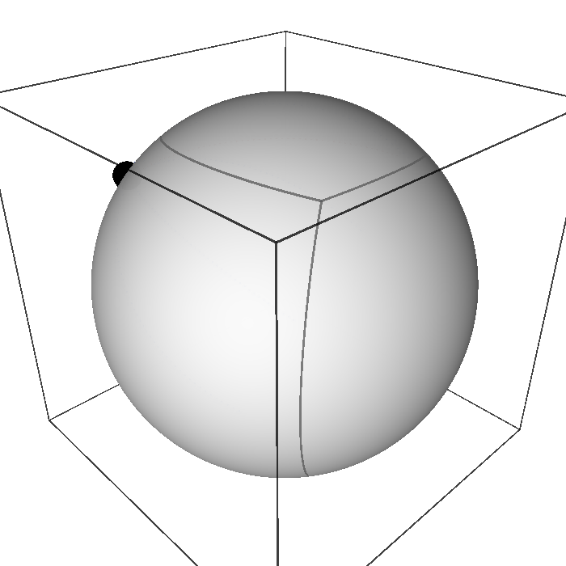
integrated_geodesic and drawn on the embedded sphere (blue): they are arcs of great circles. The parallel through the point (red) is not a geodesic. Generated by figures/geodesics_sphere.sage.
Interactive figure (drag to rotate or zoom); the static version is above.
The polar form of the straight-line equations was stated without proof. The first exercise verifies it on a specific line, where the parametrisation by y is affine.
Exercise 260 (Straight lines in polar coordinates) Write the geodesic equations of the polar metric and check that the straight line x = 1, that is r = 1/\cos\varphi, satisfies them when parametrised by y = \tan\varphi = t.
With \Gamma^r_{\varphi\varphi} = -r and \Gamma^\varphi_{r\varphi} = 1/r: \ddot r - r\dot\varphi^2 = 0 and \ddot\varphi + \tfrac{2}{r}\dot r\dot\varphi = 0. For the line x = 1, y = t: r = \sqrt{1 + t^2} and \varphi = \arctan t, so \dot r = t/r, \ddot r = 1/r^3, \dot\varphi = 1/r^2, \ddot\varphi = -2t/r^4, and both equations reduce to 1/r^3 - r/r^4 = 0 and -2t/r^4 + \tfrac{2}{r}\cdot\tfrac{t}{r}\cdot\tfrac{1}{r^2} = 0.
The torus has more interesting geodesics than the sphere, but its coordinate circles can be tested directly. The second exercise assembles the geodesic equations from SageManifolds’ Christoffel symbols and checks which coordinate circles solve them.
Exercise 261 (Coordinate circles of the torus) With SageManifolds, write the geodesic equations of r^2da^2 + (R + r\cos a)^2db^2 and evaluate them on the outer equator a = 0, the inner equator a = \pi, a tube circle a = t, b = \text{const}, and a general parallel a = a_0, b = t.
The equations are \ddot a + \frac{(R + r\cos a)\sin a}{r}\dot b^2 = 0 and \ddot b - \frac{2r\sin a}{R + r\cos a}\dot a\dot b = 0. Both equators and the tube circles satisfy them; a parallel a = a_0 leaves the residual (R + r\cos a_0)\sin a_0/r in the first equation, zero only for a_0 = 0, \pi (Example 258):
import os, sys; sys.path.insert(0, os.path.dirname(os.path.abspath(__file__))); from _curvature import *
R, r = var('R r', domain='real'); assume(R > r, r > 0)
M, X, g = chart_metric('a b', lambda c: [[r**2, 0], [0, (R + r*cos(c[0]))**2]], ranges='a:(0,2*pi) b:(0,2*pi)')
a, b = X[:]; Gam = g.christoffel_symbols()
t = var('t', domain='real')
def residuals(curve):
"""residuals of x''^k + Gamma^k_ij x'^i x'^j = 0 for the curve (a(t), b(t))"""
sub = {a: curve[0], b: curve[1]}
return [(diff(curve[k], t, 2) + sum(Gam[k, i, j].expr().subs(sub)*diff(curve[i], t)*diff(curve[j], t) for i in range(2) for j in range(2))).simplify_full() for k in range(2)]
print("geodesic equations: a'' + Gamma^a_bb b'^2 = 0 with Gamma^a_bb =", Gam[0, 1, 1].expr().factor(), "; b'' + 2 Gamma^b_ab a' b' = 0 with Gamma^b_ab =", Gam[1, 0, 1].expr().factor())
a0 = var('a0', domain='real')
print("outer equator a = 0, b = t:", residuals([SR(0), t]), "; inner equator a = pi, b = t:", residuals([SR(pi), t]))
print("tube circle a = t, b = const:", residuals([t, SR(1)]))
print("parallel a = a0, b = t: residuals", residuals([a0 + 0*t, t]), "-> vanish only where sin(a0) = 0")Output:
geodesic equations: a'' + Gamma^a_bb b'^2 = 0 with Gamma^a_bb = (r*cos(a) + R)*sin(a)/r ; b'' + 2 Gamma^b_ab a' b' = 0 with Gamma^b_ab = -r*sin(a)/(r*cos(a) + R)
outer equator a = 0, b = t: [0, 0] ; inner equator a = pi, b = t: [0, 0]
tube circle a = t, b = const: [0, 0]
parallel a = a0, b = t: residuals [(r*cos(a0)*sin(a0) + R*sin(a0))/r, 0] -> vanish only where sin(a0) = 0The definition claims that g(\dot x, \dot x) is constant along a geodesic, which makes the parameter proportional to arc length. The third exercise proves this and shows what happens if the parameter is changed.
Exercise 262 (Constant speed and affine parameters) Show that \frac{d}{dt}g(\dot x, \dot x) = 0 along a solution of Equation 39 for the Levi-Civita connection. Then let t = f(s) with f' > 0 and show that x(f(s)) satisfies Equation 39 in s only if f is affine, f(s) = \alpha s + \beta.
The velocity is parallel along the curve, so its norm is constant by Exercise 225. For y(s) = x(f(s)), y' = f'\dot x and y'' = f''\dot x + f'^2\ddot x, so y''^k + \Gamma^k_{ij}y'^iy'^j = f'^2(\ddot x^k + \Gamma^k_{ij}\dot x^i\dot x^j) + f''\dot x^k = f''\dot x^k, which vanishes only if f'' = 0. Reparametrised geodesics are still straight as sets, but satisfy Equation 39 only for affine parameters.
Since there is exactly one geodesic in each direction, following it for unit time defines a map from the tangent space to the manifold. This map turns tangent vectors into points and gives the most natural chart near a point.
Definition 62 (Exponential map) The exponential map at p sends a tangent vector v \in T_pM to the point \exp_p(v) = \gamma_v(1) reached after unit time along the geodesic with initial velocity v. It is a diffeomorphism from a neighbourhood of 0 in T_pM onto a neighbourhood of p, and the coordinates it defines are the normal coordinates, in which the Christoffel symbols vanish at p.
Veriphy. Pending.
Lean. Pending.
Sage. Pending.
In the plane geodesics are straight lines at constant speed, so the exponential map is the addition of a vector to a point. The first example records this.
Example 255 (The plane) \exp_p(v) = p + v: the exponential map of the plane is translation, and normal coordinates are Cartesian coordinates centred at p.
On the sphere the exponential map at the north pole wraps the tangent plane around the sphere along meridians. The second example describes it and the circle on which it ceases to be one-to-one.
Example 256 (The sphere) \exp_N(v) for v at the north pole is the point at angular distance |v| along the meridian in the direction of v; normal coordinates at the pole are (\theta\cos\varphi, \theta\sin\varphi), in which the metric is \delta_{ij} + O(\theta^2). The map is a diffeomorphism for |v| < \pi and sends the whole circle |v| = \pi to the south pole.
On a Lie group with a bi-invariant metric the geodesics through the identity are the one-parameter subgroups. The third example states the resulting coincidence of the two exponential maps.
Example 257 (Lie groups) On SU(2) with its bi-invariant metric the geodesics through the identity are the one-parameter subgroups t \mapsto e^{tA}, and the Riemannian exponential map at the identity coincides with the matrix exponential of The exponential map: \exp_e(A) = e^A.
The torus provides a fourth example of the earlier ideas, connecting the Christoffel symbols with the geodesics found in the figure and exercises of this section. It anticipates the torus computations of the curvature sections.
Example 258 (Geodesics of the torus) For the torus metric of Example 183, g_{bb} = (R + r\cos a)^2 is the only non-constant component, and Exercise 229 gives \Gamma^a_{bb} = (R + r\cos a)\sin a / r and \Gamma^b_{ab} = -r\sin a/(R + r\cos a). The circles a = 0 (outer equator) and a = \pi (inner equator), where \sin a = 0, are geodesics; the circles b = \text{const} around the tube are geodesics too, since \Gamma^b_{aa} = \Gamma^a_{aa} = 0.
Normal coordinates at the north pole are (u, v) = (\theta\cos\varphi, \theta\sin\varphi). The first exercise computes the metric in them with Sage and checks the claim of the definition that the Christoffel symbols vanish at the centre.
Exercise 263 (Normal coordinates on the sphere) Write the round metric in the normal coordinates (u, v) = (\theta\cos\varphi, \theta\sin\varphi) at the north pole, show that g_{ij} = \delta_{ij} - \tfrac13\begin{pmatrix} v^2 & -uv \\ -uv & u^2 \end{pmatrix} + O(\theta^4), and check with Sage that its Christoffel symbols vanish at u = v = 0.
With d\theta^2 + d\varphi^2\theta^2 = du^2 + dv^2 and d\varphi = (u\,dv - v\,du)/\theta^2, the metric d\theta^2 + \sin^2\theta\,d\varphi^2 equals du^2 + dv^2 + \frac{\sin^2\theta - \theta^2}{\theta^4}(u\,dv - v\,du)^2, and \frac{\sin^2\theta - \theta^2}{\theta^4} = -\tfrac13 + O(\theta^2). The correction is quadratic in (u, v), so its first derivatives vanish at the pole and so do the Christoffel symbols. The coefficient -\tfrac13 is -K/3 with K = 1, the general form of a metric in normal coordinates.
from sage.all import *
u, v = var('u v', domain='real')
theta = sqrt(u**2 + v**2)
c = (sin(theta)**2 - theta**2)/theta**4 # coefficient of dphi^2 = (u dv - v du)^2 / theta^4 beyond du^2 + dv^2
G = matrix(SR, [[1 + c*v**2, -c*u*v], [-c*u*v, 1 + c*u**2]])
print("metric in normal coordinates: g_uu = 1 + c v^2, g_uv = -c u v, g_vv = 1 + c u^2 with c = (sin^2 theta - theta^2)/theta^4")
# second-order Taylor expansion about the pole
tt = var('tt'); c_theta = (sin(tt)**2 - tt**2)/tt**4
print("c(theta) = (sin^2 theta - theta^2)/theta^4 -> -1/3 as theta -> 0:", bool(limit(c_theta, tt=0) == -QQ(1)/3), "; Taylor:", taylor(sin(tt)**2 - tt**2, tt, 0, 6))
G2 = matrix(SR, [[1 - v**2/3, u*v/3], [u*v/3, 1 - u**2/3]])
print("g = delta - (1/3) (v^2, -uv; -uv, u^2) to second order; check at (u, v) = (0.1, 0.2):", [float(abs(G[i, j].subs(u=0.1, v=0.2) - G2[i, j].subs(u=0.1, v=0.2))) < 1e-4 for i in range(2) for j in range(2)])
# Christoffel symbols of the exact metric, at the pole by a limit along u = v = epsilon
Ginv = G.inverse(); coords = [u, v]
def Gamma(k, i, j):
return sum(Ginv[k, l]*(diff(G[l, j], coords[i]) + diff(G[l, i], coords[j]) - diff(G[i, j], coords[l])) for l in range(2))/2
eps = var('eps')
at_pole = [limit(Gamma(k, i, j).subs(u=eps, v=eps), eps=0) for k in range(2) for i in range(2) for j in range(2)]
print("Christoffel symbols at the pole (limit along u = v -> 0):", at_pole, "-> all zero:", all(bool(x == 0) for x in at_pole))
print("Gamma^u_vv at (u, v) = (0.3, 0):", float(Gamma(0, 1, 1).subs(u=0.3, v=0)), "(small, O(theta))")Output:
metric in normal coordinates: g_uu = 1 + c v^2, g_uv = -c u v, g_vv = 1 + c u^2 with c = (sin^2 theta - theta^2)/theta^4
c(theta) = (sin^2 theta - theta^2)/theta^4 -> -1/3 as theta -> 0: True ; Taylor: 2/45*tt^6 - 1/3*tt^4
g = delta - (1/3) (v^2, -uv; -uv, u^2) to second order; check at (u, v) = (0.1, 0.2): [True, True, True, True]
Christoffel symbols at the pole (limit along u = v -> 0): [0, 0, 0, 0, 0, 0, 0, 0] -> all zero: True
Gamma^u_vv at (u, v) = (0.3, 0): 0.19643070336091512 (small, O(theta))The exponential map of the plane at a point other than the origin, written in polar coordinates, is a useful check of the definition. The second exercise computes it from the polar geodesic equations.
Exercise 264 (The exponential map in polar coordinates) At the point p = (r, \varphi) = (1, 0) of the plane, compute \exp_p(v) for v = a\,\partial_r + b\,\partial_\varphi in polar coordinates, using that geodesics are straight lines. Check the special cases b = 0 and a = 0.
At p, \partial_r = \partial_x and \partial_\varphi = \partial_y (since r = 1), so v has Cartesian components (a, b) and \exp_p(v) = (1 + a, b), in polar coordinates r = \sqrt{(1 + a)^2 + b^2}, \varphi = \operatorname{atan2}(b, 1 + a). For b = 0 the geodesic is radial, r = 1 + a. For a = 0 it is the tangent line x = 1, reaching r = \sqrt{1 + b^2}, \varphi = \arctan b: not the circle r = 1, which is not a geodesic.
The exponential map of the sphere fails to be one-to-one at distance \pi. The third exercise generalises to spheres of any radius and to the flat torus, where the failure has a different cause.
Exercise 265 (Where the exponential map stops being injective) Find the largest \rho such that \exp_p is one-to-one on the disc |v| < \rho, for the sphere of radius R_0 and for the flat torus \mathbb{R}^2/(2\pi\mathbb{Z})^2 with metric dx^2 + dy^2.
On the sphere of radius R_0 geodesics are great circles of length 2\pi R_0, and all geodesics from p meet again at the antipode after length \pi R_0, so \rho = \pi R_0. On the flat torus \exp_p(v) = p + v \bmod 2\pi; two vectors give the same point if they differ by a lattice vector, and the disc |v| < \rho contains two such vectors exactly when 2\rho > 2\pi, so \rho = \pi. On the torus the failure is topological, from closed geodesics, not from curvature focusing the geodesics.
The equator and the meridians were found to be geodesics by inspection of the Christoffel symbols. The proposition makes the check precise for both families of curves.
Proposition 22 (The equator and the meridians are geodesics) On the equator \theta = \pi/2, \varphi = t, the only Christoffel symbol entering Equation 39, \Gamma^\theta_{\varphi\varphi}, vanishes; along a meridian \theta = t the symbols \Gamma^k_{\theta\theta} vanish.
Veriphy. Pending.
Lean. KaluzaKlein.Geometry.equator_geodesic and KaluzaKlein.Geometry.meridian_geodesic.
/-- On the equator `θ = π/2` the only Christoffel symbol in the geodesic equation of `φ = t` vanishes, so the
equator is a geodesic. -/
theorem equator_geodesic (t : ℝ) : christoffel sphere 0 1 1 ![Real.pi / 2, t] = 0KaluzaKlein.Geometry.equator_geodesic in KaluzaKlein/Geometry/Polar.lean, namespace KaluzaKlein.Geometry
Sage. Pending.
Every great circle is the image of the equator under a rotation, and rotations preserve geodesics. The first example turns the proposition into a statement about all great circles.
Example 259 (All great circles) A rotation of \mathbb{R}^3 restricts to an isometry of the sphere and maps geodesics to geodesics (Exercise 235). Every great circle is the image of the equator under some rotation, so every great circle, traversed at constant speed, is a geodesic; by uniqueness of solutions of Equation 39 there are no others.
The proposition uses the parametrisation \varphi = t. The second example examines other parametrisations of the equator and finds which are geodesics.
Example 260 (Parametrisations of the equator) \theta = \pi/2, \varphi = \omega t is a geodesic for every constant \omega, since Equation 39 gives \ddot\varphi = 0. The curve \varphi = t^2 traces the same circle but has \ddot\varphi = 2 \neq 0: it is the equator accelerating along itself, not a geodesic (Exercise 262).
Scaling the sphere does not change its connection, so it does not change its geodesics. The third example states the result for a sphere of radius R_0.
Example 261 (Spheres of any radius) The sphere of radius R_0 has the same Christoffel symbols (Example 240) and hence the same geodesic equations: its geodesics are great circles, now of length 2\pi R_0, and the equator traversed at angular speed 1 has speed R_0.
A tilted great circle is a geodesic by the rotation argument, but checking it directly in coordinates is a good test of the equations. The first exercise does this, by hand and in SageManifolds.
Exercise 266 (Great circles are geodesics) Show that the great circle t \mapsto (\cos t,\ \cos\alpha\sin t,\ \sin\alpha\sin t), the equator tilted by the angle \alpha about the X-axis, satisfies the geodesic equations of the round sphere.
Converting to spherical coordinates, \cos\theta = \sin\alpha\sin t and \tan\varphi = \cos\alpha\tan t, and substituting into \ddot\theta - \sin\theta\cos\theta\,\dot\varphi^2 = 0 and \ddot\varphi + 2\frac{\cos\theta}{\sin\theta}\dot\theta\dot\varphi = 0 gives zero for both, after trigonometric simplification. By hand this is lengthy; the geometric argument is shorter: a rotation of the sphere is an isometry, it maps geodesics to geodesics, and it maps the equator (Proposition 22) to the tilted circle. The symbolic check in SageManifolds:
import os, sys; sys.path.insert(0, os.path.dirname(os.path.abspath(__file__))); from _curvature import *
M, X, g = chart_metric('th ph', lambda c: [[1, 0], [0, sin(c[0])**2]], ranges='th:(0,pi) ph:(0,2*pi)')
Gam = g.christoffel_symbols(); th, ph = X[:]
t, alpha = var('t alpha', domain='real'); assume(0 < alpha, alpha < pi/2)
P = (cos(t), cos(alpha)*sin(t), sin(alpha)*sin(t)) # the great circle tilted by alpha, in R^3
th_t = arccos(P[2]); ph_t = atan2(P[1], P[0]) # its spherical coordinates
sub = {th: th_t, ph: ph_t}
coords = [th_t, ph_t]
residuals = []
for k in range(2):
r = diff(coords[k], t, 2) + sum(Gam[k, i, j].expr().subs(sub)*diff(coords[i], t)*diff(coords[j], t) for i in range(2) for j in range(2))
residuals.append(r.simplify_full().trig_simplify())
print("theta-equation residual:", residuals[0]); print("phi-equation residual:", residuals[1])Output:
theta-equation residual: 0
phi-equation residual: 0Veriphy. Pending.
Lean.
/-- Along a meridian `θ = t`, `φ = φ₀` the geodesic equation needs only `Γ^k_{θθ}`, which vanish. -/
theorem meridian_geodesic (t φ₀ : ℝ) (h : Real.sin t ≠ 0) :
christoffel sphere 0 0 0 ![t, φ₀] = 0 ∧ christoffel sphere 1 0 0 ![t, φ₀] = 0KaluzaKlein.Geometry.meridian_geodesic in KaluzaKlein/Geometry/Polar.lean, namespace KaluzaKlein.Geometry
Sage. Pending.
Numerical integration of the geodesic equation is how geodesics are found in general. The second exercise integrates one with SageManifolds’ integrated_geodesic and checks that it stays on a great circle.
Exercise 267 (A numerically integrated geodesic) From the point (\theta, \varphi) = (\pi/3, 3) with unit initial velocity 0.6\,e_\theta - 0.8\,e_\varphi (unit vectors), integrate the geodesic equation for t \in [0, 2.5] with SageManifolds, embed the solution in \mathbb{R}^3, and measure its distance from the plane of the great circle determined by the initial data, and its arc length.
The plane of the great circle has normal \mathbf P_0 \times \mathbf V_0. The numerical solution stays within about 10^{-10} of it, and its arc length is 2.5, as for a unit-speed curve:
from sage.all import *
S2 = Manifold(2, 'S^2', structure='Riemannian'); A = S2.open_subset('A')
X = A.chart(r'th:(0,pi):\theta ph:(0,2*pi):\varphi'); th, ph = X[:]
g = A.metric('g'); g[0, 0] = 1; g[1, 1] = sin(th)**2
t = var('t')
p = A.point((pi/3, 3), name='p')
v = A.tangent_space(p)((0.6, -0.8/sin(pi/3))) # unit speed: 0.36 + sin^2(pi/3) (0.8/sin(pi/3))^2 = 1
geo = A.integrated_geodesic(g, (t, 0, 2.5), v, name='geo')
sol = geo.solve(step=0.01, verbose=False)
emb = lambda q: vector(RDF, [sin(q[1])*cos(q[2]), sin(q[1])*sin(q[2]), cos(q[1])])
P0 = emb(sol[0])
# ambient velocity: d/dtheta and d/dphi at p, times the components
e_th = vector(RDF, [cos(pi/3)*cos(3), cos(pi/3)*sin(3), -sin(pi/3)]); e_ph = vector(RDF, [-sin(pi/3)*sin(3), sin(pi/3)*cos(3), 0])
V0 = 0.6*e_th + (-0.8/float(sin(pi/3)))*e_ph
n = P0.cross_product(V0); n = n/n.norm() # normal of the plane of the great circle
dev = max(abs(n.dot_product(emb(q))) for q in sol)
print("number of points:", len(sol), "; initial speed |V0| = %.6f" % V0.norm())
print("maximal distance from the plane of the great circle: %.2e" % dev, "-> on the great circle:", dev < 1e-4)
arc = sum((emb(sol[k + 1]) - emb(sol[k])).norm() for k in range(len(sol) - 1))
print("arc length %.5f vs parameter interval 2.5 (unit speed):" % arc, abs(arc - 2.5) < 1e-3)Output:
number of points: 251 ; initial speed |V0| = 1.000000
maximal distance from the plane of the great circle: 3.27e-10 -> on the great circle: True
arc length 2.49999 vs parameter interval 2.5 (unit speed): TrueThe rotational symmetry of the sphere gives the geodesic equations a conserved quantity. The third exercise finds it and uses it to show that a geodesic oscillates between two parallels.
Exercise 268 (Clairaut’s relation) Show that L = \sin^2\theta\,\dot\varphi is constant along every geodesic of the round sphere. For a unit-speed geodesic deduce \dot\theta^2 = 1 - L^2/\sin^2\theta, so that it stays between the parallels \sin\theta = |L|. Interpret L as the cosine of the angle with the parallel times the radius \sin\theta of the parallel.
\frac{d}{dt}(\sin^2\theta\,\dot\varphi) = \sin^2\theta\big(\ddot\varphi + 2\cot\theta\,\dot\theta\dot\varphi\big) = 0 by the \varphi-equation. Unit speed means \dot\theta^2 + \sin^2\theta\,\dot\varphi^2 = 1, so \dot\theta^2 = 1 - L^2/\sin^2\theta \geq 0, which requires \sin\theta \geq |L|. The component of the unit velocity along the unit vector \partial_\varphi/\sin\theta is \sin\theta\,\dot\varphi = \cos\alpha, with \alpha the angle with the parallel, so L = \sin\theta\cos\alpha: Clairaut’s relation for surfaces of revolution. For the equator L = 1, for meridians L = 0.
Geodesics of the hyperbolic plane
On the sphere the geodesics were found by symmetry, as the images of the equator under rotations. On the Poincaré half-plane the geodesic equations can be integrated directly, with the Christoffel symbols of Example 224, and their solutions are the lines of the non-Euclidean geometry of Lobachevsky and Bolyai (Boskoff and Capozziello 2024, sec. 7.1).
Proposition 23 (Geodesics of the half-plane) The geodesic equations of Equation 27 are \ddot x - \frac{2}{y}\,\dot x\dot y = 0 , \qquad \ddot y + \frac{1}{y}\big(\dot x^2 - \dot y^2\big) = 0 . \tag{40} Every unit-speed solution is either a vertical half-line, x = a, y = y_0e^{\pm s}, or a semicircle centred on the real axis, x = a + R\tanh(s - s_0), y = R/\cosh(s - s_0), which traces (x - a)^2 + y^2 = R^2, y > 0.
Veriphy. Pending.
Lean. Pending.
Sage. Pending.
The equations follow from Equation 39 with \Gamma^x_{xy} = -1/y, \Gamma^y_{xx} = 1/y and \Gamma^y_{yy} = -1/y, the symbol \Gamma^x_{xy} appearing twice. That the listed curves are all the solutions is the content of Exercise 269; the first example checks the simpler family.
Example 262 (Vertical lines) For x = a, y = e^s: \dot x = \ddot x = 0 and \ddot y + (0 - \dot y^2)/y = e^s - e^{2s}/e^s = 0, and the speed is \sqrt{\dot y^2}/y = 1. The vertical half-lines are geodesics, and by Example 198 the arc length between heights y_1 and y_2 is |\ln(y_2/y_1)|: in both directions the geodesic is infinitely long, and it reaches the boundary only in the limit s \to -\infty.
Veriphy. Pending.
Lean. Pending.
Sage. Pending.
The semicircles are the other family, and the arc of Example 198 that was shorter than the straight segment belongs to it. The second example checks the equations on the general semicircle and computes the length of that arc once more from the parameter.
Example 263 (Semicircles) For x = a + R\tanh s, y = R/\cosh s: \dot x = R/\cosh^2s, \dot y = -R\sinh s/\cosh^2s, and (\dot x^2 + \dot y^2)/y^2 = (1 + \sinh^2s)/\cosh^2s = 1. The first equation: \ddot x = -2R\sinh s/\cosh^3s and (2/y)\dot x\dot y = -2R\sinh s/\cosh^3s, so it holds. The second: \ddot y = R(\sinh^2s - 1)/\cosh^3s and (\dot x^2 - \dot y^2)/y = R(1 - \sinh^2s)/\cosh^3s, which cancel. The semicircle a = 0, R = \sqrt2 passes through (\mp1, 1) at \tanh s = \mp1/\sqrt2, that is s = \mp \operatorname{artanh}(1/\sqrt2) = \mp\ln(1 + \sqrt2), so the arc between them has length 2\ln(1 + \sqrt2), as found in Example 198: it is the geodesic between the two points.
Veriphy. Pending.
Lean. Pending.
Sage. Pending.
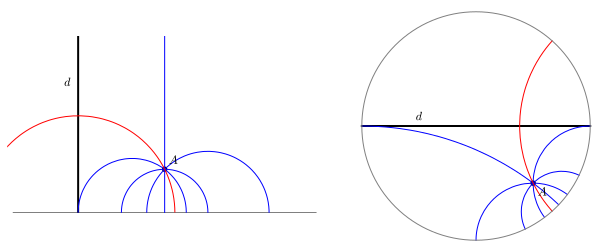
figures/hyperbolic_geodesics.sage.
In the Euclidean plane there is exactly one line through a given point that does not meet a given line. The third example shows that in the half-plane there are infinitely many, which is the statement that the hyperbolic plane is a model of non-Euclidean geometry (Figure 18).
Example 264 (Infinitely many parallels) Let d be the imaginary axis and A = 2 + i. The vertical line x = 2 through A does not meet d. The semicircle centred at a through A has R^2 = (2 - a)^2 + 1 and meets x = 0 where y^2 = R^2 - a^2 = 5 - 4a, so it meets d exactly when a < 5/4. Every semicircle with a \geq 5/4 is a geodesic through A disjoint from d; the one with a = 5/4 ends at the boundary point 0, where d also ends, and separates the geodesics that meet d from those that do not.
Veriphy. Pending.
Lean. Pending.
Sage. Pending.
The proposition lists two families of solutions, and one must still show that there are no others. The first exercise integrates the equations with the conserved quantity that the translations x \mapsto x + a provide, as Clairaut’s relation did on the sphere (Exercise 268).
Exercise 269 (Integrating the geodesic equations) Show that L = \dot x/y^2 is constant along every solution of Equation 40. For a unit-speed geodesic with L = 0 deduce that it is a vertical half-line; for L \neq 0 write R = 1/|L| and show from \dot x^2 + \dot y^2 = y^2 that dx/dy = \pm y/\sqrt{R^2 - y^2}, hence (x - a)^2 + y^2 = R^2.
\frac{d}{ds}(\dot x/y^2) = (\ddot x - 2\dot x\dot y/y)/y^2 = 0 by the first equation. If L = 0 then x is constant and unit speed gives \dot y = \pm y, so y = y_0e^{\pm s}. If L \neq 0, \dot x = Ly^2 and \dot y^2 = y^2 - L^2y^4 = y^2(1 - y^2/R^2), so dx/dy = \dot x/\dot y = \pm y/\sqrt{R^2 - y^2} and x = a \mp\sqrt{R^2 - y^2}: the semicircle of radius R centred at a. Only the first equation and the constancy of the speed along a geodesic (Definition 61) were used, so every geodesic is one of these curves, and conversely all of them solve both equations (Example 262, Example 263). The conserved L is the inner product of the velocity with the Killing field \partial_x, as in Section 1.5.2.
Veriphy. Pending.
Lean. Pending.
Sage. Pending.
The isometry of Proposition 16 maps geodesics to geodesics, and Möbius maps send circles and lines to circles and lines and preserve angles. The second exercise follows one semicircle into the disc and checks the result against the right panel of Figure 18.
Exercise 270 (Geodesics of the disc) Show that the image of the semicircle (x - 1)^2 + y^2 = 1 under w = (z - i)/(z + i) is an arc of the circle |w + 1 + 2i| = 2 and that this circle meets the unit circle at right angles. With SageManifolds check that this image, and the diameter u = \tanh(s/2), v = 0, solve the geodesic equations of Equation 28.
The semicircle ends at z = 0 and z = 2, which go to w = -1 and w = (2 - i)/(2 + i) = (3 - 4i)/5, both on the unit circle. A circle with centre c and radius \rho meets the unit circle at right angles exactly when |c|^2 = 1 + \rho^2, by Pythagoras in the triangle formed by the two centres and an intersection point; here |{-1} - 2i|^2 = 5 = 1 + 4. The image of the parametrised semicircle satisfies |w + 1 + 2i|^2 = 4 identically, and both curves solve the geodesic equations; the diameter u = \tanh(s/2) has unit speed, since \rho = \tanh(\psi/2) is the arc-length relation of Example 201.
import os, sys; sys.path.insert(0, os.path.dirname(os.path.abspath(__file__))); from _curvature import *
s = var('s', domain='real')
z = 1 + tanh(s) + I/cosh(s) # unit-speed semicircle with a = 1, R = 1
w = (z - I)/(z + I)
u, v = w.real().simplify_full(), w.imag().simplify_full()
c0 = -1 - 2*I # centre, radius 2
print("|w + 1 + 2i|^2 =", ((u + 1)**2 + (v + 2)**2).simplify_full())
print("orthogonal to the unit circle, |c|^2 = 1 + rho^2:", abs(c0)**2, "= 1 +", 2**2)
print("end points: s -> -oo gives", (limit(u, s=-oo), limit(v, s=-oo)), "; s -> +oo gives", (limit(u, s=oo), limit(v, s=oo)))
M, X, g = chart_metric('p q', lambda c: [[4/(1 - c[0]**2 - c[1]**2)**2, 0], [0, 4/(1 - c[0]**2 - c[1]**2)**2]])
G = g.christoffel_symbols()
pu, pv = tanh(s/2), 0*s
vel = [diff(pu, s), diff(pv, s)]
eqs = [(diff([pu, pv][k], s, 2) + sum(G[k, i, j].expr().subs({X[0]: pu, X[1]: pv})*vel[i]*vel[j] for i in range(2) for j in range(2))).simplify_full() for k in range(2)]
print("diameter u = tanh(s/2), v = 0: geodesic equations give", eqs, "; speed^2 =", (4*vel[0]**2/(1 - pu**2)**2).simplify_full())
# the image of the semicircle solves the disc geodesic equations as well
vel = [diff(u, s), diff(v, s)]
eqs = [(diff([u, v][k], s, 2) + sum(G[k, i, j].expr().subs({X[0]: u, X[1]: v})*vel[i]*vel[j] for i in range(2) for j in range(2))).simplify_full() for k in range(2)]
print("image of the semicircle: geodesic equations give", eqs)Output:
|w + 1 + 2i|^2 = 4
orthogonal to the unit circle, |c|^2 = 1 + rho^2: 5 = 1 + 4
end points: s -> -oo gives (-1, 0) ; s -> +oo gives (3/5, -4/5)
diameter u = tanh(s/2), v = 0: geodesic equations give [0, 0] ; speed^2 = 1
image of the semicircle: geodesic equations give [0, 0]Veriphy. Pending.
Lean. Pending.
Sage. Pending.
Knowing all geodesics, one can write the distance between any two points of the half-plane in closed form. The third exercise checks the formula on the two families of the proposition and its invariance under the isometries.
Exercise 271 (The distance formula) The distance between z_1, z_2 \in \mathbb{H} is given by \cosh d(z_1, z_2) = 1 + |z_1 - z_2|^2/(2y_1y_2). Check it for two points on a vertical line and for the points -1 + i and 1 + i, using Example 263. Show that the right-hand side is unchanged by translations, dilations and z \mapsto -1/z.
For z_1 = iy_1, z_2 = iy_2: 1 + (y_2 - y_1)^2/(2y_1y_2) = (y_1^2 + y_2^2)/(2y_1y_2) = \cosh\ln(y_2/y_1), matching Example 262. For \pm1 + i: 1 + 4/2 = 3, and \cosh(2\ln(1 + \sqrt2)) = \tfrac12((1 + \sqrt2)^2 + (\sqrt2 - 1)^2) = 3. Translations leave z_1 - z_2 and the heights unchanged; dilations multiply |z_1 - z_2|^2 and y_1y_2 by \lambda^2; under z \mapsto -1/z, |1/z_2 - 1/z_1|^2 = |z_1 - z_2|^2/(|z_1|^2|z_2|^2) and y_k \mapsto y_k/|z_k|^2, so the ratio is unchanged. These maps generate the Möbius group of Exercise 203, and every pair of points can be moved onto the imaginary axis, so the vertical case proves the formula in general.
Veriphy. Pending.
Lean. Pending.
Sage. Pending.
The Riemann tensor
Parallel transport around a loop on the sphere rotates a vector, and the rotation per unit area enclosed is the curvature. The same quantity appears as the failure of covariant derivatives to commute, and that is the form in which it is computed: the Riemann tensor, built from the Christoffel symbols and their first derivatives. This section derives it, lists its symmetries, and evaluates it on the plane, the sphere and the torus.
Commutators of covariant derivatives
Covariant derivatives do not commute. For a vector field X, a direct computation with Equation 31 gives [\nabla_\mu, \nabla_\nu] X^\rho = R^\rho{}_{\sigma\mu\nu} X^\sigma \tag{41} for a tensor R^\rho{}_{\sigma\mu\nu} built from the connection alone. To see this, write out \nabla_\mu \nabla_\nu X^\rho = \partial_\mu(\nabla_\nu X^\rho) + \Gamma^\rho_{\mu\lambda} \nabla_\nu X^\lambda - \Gamma^\lambda_{\mu\nu} \nabla_\lambda X^\rho (the covariant derivative Equation 32 of the type (1, 1) tensor \nabla_\nu X^\rho), substitute Equation 31, and antisymmetrise in \mu\nu. The terms with \partial_\mu \partial_\nu X^\rho cancel by symmetry of second derivatives, the terms with \Gamma^\lambda_{\mu\nu} \nabla_\lambda X^\rho cancel because the connection is torsion-free, the terms with one derivative of X cancel pairwise, and what remains is proportional to X^\sigma with coefficient R^\rho{}_{\sigma\mu\nu} = \partial_\mu \Gamma^\rho_{\nu\sigma} - \partial_\nu \Gamma^\rho_{\mu\sigma} + \Gamma^\rho_{\mu\lambda} \Gamma^\lambda_{\nu\sigma} - \Gamma^\rho_{\nu\lambda} \Gamma^\lambda_{\mu\sigma} . \tag{42}
The coefficient obtained from the commutator is a tensor, since the commutator of two tensorial operations is tensorial, and it depends only on the connection. It is the central object of the chapter and receives its name in the definition.
Definition 63 (Riemann tensor) The Riemann tensor (or curvature tensor) of a connection is the tensor field Equation 42 of type (1, 3), defined by the commutator Equation 41, with the sign conventions of Connection and curvature. A connection is flat if its Riemann tensor vanishes, which for the Levi-Civita connection is the flatness of the metric (Definition 47).
Veriphy. Pending.
Lean. In the Lean library the Riemann tensor is riemann g ρ σ μ ν x, computed from christoffel exactly as in Equation 42.
Sage. Pending.
The polar chart of the plane has non-zero Christoffel symbols, and a first check of the definition is that they nevertheless give zero curvature. The first example computes the one component that could be non-zero.
Example 265 (The plane is flat in every chart) For the polar metric the non-zero symbols are \Gamma^r_{\varphi\varphi} = -r and \Gamma^\varphi_{r\varphi} = 1/r (Proposition 19). The component R^r{}_{\varphi r\varphi} is \partial_r \Gamma^r_{\varphi\varphi} - \partial_\varphi \Gamma^r_{r\varphi} + \Gamma^r_{r\lambda}\Gamma^\lambda_{\varphi\varphi} - \Gamma^r_{\varphi\lambda}\Gamma^\lambda_{r\varphi} = -1 - 0 + 0 - \Gamma^r_{\varphi\varphi}\Gamma^\varphi_{r\varphi} = -1 + r \cdot \tfrac1r = 0 , and every other component vanishes likewise (Exercise 190): the non-zero connection coefficients were a coordinate effect, and the curvature detects that the plane is flat.
The sphere is the first manifold with non-zero curvature. The second example evaluates Equation 42 term by term for the independent components, keeping track of which products of symbols survive.
Example 266 (The sphere) With the Christoffel symbols Equation 36, \Gamma^\theta_{\varphi\varphi} = -\sin\theta\cos\theta and \Gamma^\varphi_{\theta\varphi} = \cos\theta/\sin\theta, evaluate Equation 42. In two dimensions only the components with \mu\nu = \theta\varphi are independent. For (\rho, \sigma) = (\theta, \varphi): \begin{aligned} R^\theta{}_{\varphi\theta\varphi} &= \partial_\theta \Gamma^\theta_{\varphi\varphi} - \partial_\varphi \Gamma^\theta_{\theta\varphi} + \Gamma^\theta_{\theta\lambda}\Gamma^\lambda_{\varphi\varphi} - \Gamma^\theta_{\varphi\lambda}\Gamma^\lambda_{\theta\varphi} \\ &= \partial_\theta(-\sin\theta\cos\theta) - 0 + 0 - \Gamma^\theta_{\varphi\varphi}\Gamma^\varphi_{\theta\varphi} \\ &= -(\cos^2\theta - \sin^2\theta) + \sin\theta\cos\theta \cdot \frac{\cos\theta}{\sin\theta} = -\cos^2\theta + \sin^2\theta + \cos^2\theta = \sin^2\theta , \end{aligned} \tag{43} where in the third term only \lambda = \varphi contributes (since \Gamma^\theta_{\varphi\theta} = 0) and \Gamma^\theta_{\theta\lambda} = 0 for both \lambda. For (\rho, \sigma) = (\varphi, \theta): \begin{aligned} R^\varphi{}_{\theta\theta\varphi} &= \partial_\theta \Gamma^\varphi_{\varphi\theta} - \partial_\varphi \Gamma^\varphi_{\theta\theta} + \Gamma^\varphi_{\theta\lambda}\Gamma^\lambda_{\varphi\theta} - \Gamma^\varphi_{\varphi\lambda}\Gamma^\lambda_{\theta\theta} \\ &= \partial_\theta \frac{\cos\theta}{\sin\theta} - 0 + \Gamma^\varphi_{\theta\varphi}\Gamma^\varphi_{\varphi\theta} - 0 = \frac{-\sin^2\theta - \cos^2\theta}{\sin^2\theta} + \frac{\cos^2\theta}{\sin^2\theta} = -1 . \end{aligned} \tag{44} The components R^\theta{}_{\theta\theta\varphi} and R^\varphi{}_{\varphi\theta\varphi} vanish (Proposition 25): lowering the first index gives R_{\theta\theta\theta\varphi} and R_{\varphi\varphi\theta\varphi}, antisymmetric in the first pair.
On the torus the curvature changes sign, which no sphere can show. The third example quotes the single independent component and the figure paints the corresponding Gauss curvature on the surface.
Example 267 (The torus) With the symbols of Exercise 229 the single independent component is R^a{}_{bab} = \cos a\,(R + r\cos a)/r, positive on the outer half of the torus and negative on the inner half (Figure 19, Exercise 305); the scalar curvature of Section 1.4.5 follows from it.
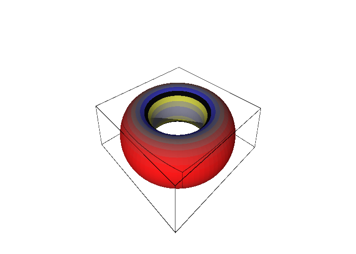
figures/torus_curvature.sage.
The torus component was quoted without computation. The first exercise obtains the full Riemann tensor of the torus from SageManifolds and identifies its non-zero components.
Exercise 272 (The Riemann tensor of the torus) Compute the Riemann tensor of r^2da^2 + (R + r\cos a)^2db^2 with SageManifolds, check R^a{}_{bab} = \cos a\,(R + r\cos a)/r, relate R^b{}_{aab} to it, and find where the curvature vanishes.
Four components are non-zero, R^a{}_{bab} = -R^a{}_{bba} and R^b{}_{aab} = -R^b{}_{aba}, with R^b{}_{aab} = - g_{aa}R^a{}_{bab}/g_{bb} = -r\cos a/(R + r\cos a) by the symmetries of Definition 64. Both vanish on the top and bottom circles a = \pm\pi/2:
import os, sys; sys.path.insert(0, os.path.dirname(os.path.abspath(__file__))); from _curvature import *
R, r = var('R r', domain='real'); assume(R > r, r > 0)
M, X, g = chart_metric('a b', lambda c: [[r**2, 0], [0, (R + r*cos(c[0]))**2]], ranges='a:(0,2*pi) b:(0,2*pi)')
a, b = X[:]
Rm = g.riemann()
print("Riemann tensor:", Rm.display())
print("R^a_bab =", Rm[0, 1, 0, 1].expr().factor(), ":", bool((Rm[0, 1, 0, 1].expr() - cos(a)*(R + r*cos(a))/r).simplify_full() == 0))
print("R^b_aab =", Rm[1, 0, 0, 1].expr().factor(), "= -g_aa R^a_bab / g_bb:", bool((Rm[1, 0, 0, 1].expr() + r**2*Rm[0, 1, 0, 1].expr()/(R + r*cos(a))**2).simplify_full() == 0))
nonzero = [(i, j, k, l) for i in range(2) for j in range(2) for k in range(2) for l in range(2) if Rm[i, j, k, l].expr() != 0]
print("non-zero components (rho, sigma, mu, nu):", nonzero)
print("vanishes on the top and bottom circles a = pi/2, 3pi/2:", bool(Rm[0, 1, 0, 1].expr().subs(a=pi/2) == 0 and Rm[0, 1, 0, 1].expr().subs(a=3*pi/2) == 0))Output:
Riemann tensor: Riem(g) = (r*cos(a)^2 + R*cos(a))/r ∂/∂a⊗db⊗da⊗db - (r*cos(a)^2 + R*cos(a))/r ∂/∂a⊗db⊗db⊗da - r*cos(a)/(r*cos(a) + R) ∂/∂b⊗da⊗da⊗db + r*cos(a)/(r*cos(a) + R) ∂/∂b⊗da⊗db⊗da
R^a_bab = (r*cos(a) + R)*cos(a)/r : True
R^b_aab = -r*cos(a)/(r*cos(a) + R) = -g_aa R^a_bab / g_bb: True
non-zero components (rho, sigma, mu, nu): [(0, 1, 0, 1), (0, 1, 1, 0), (1, 0, 0, 1), (1, 0, 1, 0)]
vanishes on the top and bottom circles a = pi/2, 3pi/2: TrueA metric with constant components has zero Christoffel symbols and hence zero curvature, and curvature is a tensor. The second exercise combines these two facts into a short proof that the plane is flat in every chart, without the computation of Example 265.
Exercise 273 (Flat in one chart, flat in all) Show that if a metric has constant components in some chart then its Riemann tensor vanishes in every chart. Apply this to the polar, cylindrical and spherical charts of Euclidean space and to the flat torus.
Constant components give \Gamma = 0 in that chart by Equation 34, hence R = 0 there by Equation 42. The Riemann tensor transforms homogeneously, so its components in any other chart are linear combinations of zeros. The polar, cylindrical and spherical metrics are the Euclidean metric in other charts, and the flat torus dx^2 + dy^2 has constant components: all are flat, whatever their Christoffel symbols.
The cone is bent but flat, like the cylinder, and its curvature can be computed directly from its Christoffel symbols. The third exercise does this and contrasts the result with the apex, where the metric is singular.
Exercise 274 (The cone) With the symbols of Exercise 231, compute R^\rho{}_{\varphi\rho\varphi} for the cone d\rho^2 + \rho^2\sin^2\alpha\, d\varphi^2, \rho > 0. Where is the curvature of the cone hidden?
R^\rho{}_{\varphi\rho\varphi} = \partial_\rho\Gamma^\rho_{\varphi\varphi} - \Gamma^\rho_{\varphi\varphi}\Gamma^\varphi_{\rho\varphi} = -\sin^2\alpha + \rho\sin^2\alpha\cdot\frac1\rho = 0: the cone is flat away from the apex. Its curvature is concentrated at the apex, where the metric is singular: transport around a loop enclosing the apex rotates a vector by the angle deficit 2\pi(1 - \sin\alpha) (Exercise 326), although the curvature vanishes everywhere the loop goes.
Symmetries and the lowered tensor
With the first index lowered, the Riemann tensor of a Levi-Civita connection has a remarkable set of symmetries. They reduce the number of independent components drastically and are the reason why only a handful of numbers describe the curvature of a surface or a three-sphere.
Definition 64 (Riemann tensor with all indices down) Lowering the first index with the metric gives the type (0, 4) tensor R_{\rho\sigma\mu\nu} = g_{\rho\lambda} R^\lambda{}_{\sigma\mu\nu}. For the Levi-Civita connection it is antisymmetric in \mu\nu and in \rho\sigma, symmetric under the exchange of the pairs, R_{\rho\sigma\mu\nu} = R_{\mu\nu\rho\sigma}, and satisfies the first Bianchi identity R_{\rho\sigma\mu\nu} + R_{\rho\mu\nu\sigma} + R_{\rho\nu\sigma\mu} = 0. These leave n^2(n^2 - 1)/12 independent components: one in two dimensions, six in three, twenty in four.
Veriphy. Pending.
Lean. Pending.
Sage. Pending.
In two dimensions the symmetries leave a single independent component. The first example identifies it on the sphere and lists its images under the symmetries.
Example 268 (One component on the sphere) R_{\theta\varphi\theta\varphi} = g_{\theta\theta}R^\theta{}_{\varphi\theta\varphi} = \sin^2\theta, and the other non-zero components are its images under the symmetries: R_{\varphi\theta\theta\varphi} = -\sin^2\theta (this is g_{\varphi\varphi}R^\varphi{}_{\theta\theta\varphi} = \sin^2\theta \cdot (-1), consistent with Equation 44), R_{\theta\varphi\varphi\theta} = -\sin^2\theta, R_{\varphi\theta\varphi\theta} = \sin^2\theta.
Not all symmetries are equally deep: one follows from the formula alone, the others need the metric. The second example sorts them by what they require.
Example 269 (Antisymmetry from the definition) R^\rho{}_{\sigma\nu\mu} = -R^\rho{}_{\sigma\mu\nu} and R^\rho{}_{\sigma\mu\mu} = 0 follow from Equation 42 for any connection, by swapping \mu and \nu (Proposition 24); the antisymmetry in \rho\sigma needs metric compatibility, and the pair symmetry needs both it and torsion freedom.
The symmetries determine how many numbers the curvature consists of in each dimension. The third example applies the count to four dimensions, where it separates the Ricci tensor from the Weyl tensor.
Example 270 (Counting components) In four dimensions the 256 components of R_{\rho\sigma\mu\nu} reduce to 20 independent ones; the Ricci tensor of Section 1.4.5 captures 10 of them and the remaining 10 form the Weyl tensor, the part of the curvature that propagates as gravitational waves. In three dimensions all six are in the Ricci tensor, and in two dimensions the single one is the scalar curvature.
The symmetries can be verified on the sphere’s components by hand. The first exercise does this with the two components computed in Example 266.
Exercise 275 (Checking the symmetries) Using Equation 43 and Equation 44, verify on the sphere that R_{\rho\sigma\mu\nu} is antisymmetric in \rho\sigma and symmetric under exchange of the pairs.
R_{\theta\varphi\theta\varphi} = 1 \cdot \sin^2\theta and R_{\varphi\theta\theta\varphi} = \sin^2\theta \cdot (-1): opposite, as antisymmetry in the first pair requires. Pair exchange sends R_{\theta\varphi\theta\varphi} to itself and R_{\varphi\theta\theta\varphi} to R_{\theta\varphi\varphi\theta} = -R_{\theta\varphi\theta\varphi} = - \sin^2\theta, equal to R_{\varphi\theta\theta\varphi}, as required.
The formula for the number of independent components was stated without proof. The second exercise derives it in low dimensions from the symmetries.
Exercise 276 (Independent components) Verify the count n^2(n^2 - 1)/12 for n = 2 and n = 3 from the symmetries of Definition 64.
Antisymmetry in each pair leaves m = n(n-1)/2 independent pairs; pair symmetry makes R a symmetric m \times m matrix with m(m+1)/2 entries; the Bianchi identity imposes \binom{n}{4} further conditions. For n = 2: m = 1, 1 entry, no condition: one component. For n = 3: m = 3, 6 entries, no condition: six. For n = 4: m = 6, 21 entries, one condition: twenty, matching 16 \cdot 15/12 = 20.
In three dimensions the curvature has six independent components and the Bianchi identity imposes nothing. The third exercise verifies all the symmetries for SU(2) with SageManifolds and counts.
Exercise 277 (Symmetries of the SU(2) curvature) With SageManifolds lower the first index of the Riemann tensor of Equation 25 and check the antisymmetries, the pair symmetry and the first Bianchi identity for all 81 components; count the independent ones.
All four identities hold; with three pairs (\theta\varphi), (\theta\psi), (\varphi\psi) there are six entries of a symmetric 3 \times 3 matrix and \binom34 = 0 Bianchi conditions, so six components, matching n^2(n^2 - 1)/12 = 6. Moreover R_{\theta\varphi\theta\varphi} = \frac1{16} = g_{\theta\theta}g_{\varphi\varphi} - g_{\theta\varphi}^2, the value for sectional curvature one:
import os, sys; sys.path.insert(0, os.path.dirname(os.path.abspath(__file__))); from _curvature import *
M, X, g = chart_metric('th ph ps', lambda c: [[QQ(1)/4, 0, 0], [0, QQ(1)/4, cos(c[0])/4], [0, cos(c[0])/4, QQ(1)/4]], ranges='th:(0,pi) ph:(0,2*pi) ps:(0,4*pi)')
Rd = g.riemann().down(g) # R_{rho sigma mu nu}
n = 3; I = range(n)
val = lambda a, b, c, d: Rd[a, b, c, d].expr()
print("antisymmetric in the last pair:", all(bool((val(a, b, c, d) + val(a, b, d, c)).simplify_full() == 0) for a in I for b in I for c in I for d in I))
print("antisymmetric in the first pair:", all(bool((val(a, b, c, d) + val(b, a, c, d)).simplify_full() == 0) for a in I for b in I for c in I for d in I))
print("symmetric under pair exchange:", all(bool((val(a, b, c, d) - val(c, d, a, b)).simplify_full() == 0) for a in I for b in I for c in I for d in I))
print("first Bianchi identity:", all(bool((val(a, b, c, d) + val(a, c, d, b) + val(a, d, b, c)).simplify_full() == 0) for a in I for b in I for c in I for d in I))
pairs = [(a, b) for a in I for b in I if a < b]
indep = [(p, q) for p in pairs for q in pairs if pairs.index(p) <= pairs.index(q)]
print("pairs:", len(pairs), "; symmetric matrix on pairs:", len(indep), "entries; Bianchi conditions:", binomial(n, 4), "; independent components:", len(indep) - binomial(n, 4), "= n^2 (n^2 - 1)/12 =", n**2*(n**2 - 1)/12)
print("R_th,ph,th,ph =", val(0, 1, 0, 1).simplify_full(), "= g_thth g_phph - g_thph^2 (sectional curvature 1):", bool((val(0, 1, 0, 1) - (g[0, 0].expr()*g[1, 1].expr() - g[0, 1].expr()**2)).simplify_full() == 0))Output:
antisymmetric in the last pair: True
antisymmetric in the first pair: True
symmetric under pair exchange: True
first Bianchi identity: True
pairs: 3 ; symmetric matrix on pairs: 6 entries; Bianchi conditions: 0 ; independent components: 6 = n^2 (n^2 - 1)/12 = 6
R_th,ph,th,ph = 1/16 = g_thth g_phph - g_thph^2 (sectional curvature 1): TrueThe full Riemann tensor is a large object, but in each two-dimensional direction it reduces to a single number. That number, the sectional curvature, is the Gauss curvature of the surface of geodesics spanned by the plane.
Definition 65 (Sectional curvature) For a two-dimensional plane in T_pM spanned by X, Y the sectional curvature is K(X, Y) = \frac{R_{\rho\sigma\mu\nu} X^\rho Y^\sigma X^\mu Y^\nu}{g(X, X)g(Y, Y) - g(X, Y)^2} , \tag{45} the Gauss curvature of the surface swept out by the geodesics leaving p in the directions of the plane. It depends only on the plane, not on the basis X, Y, and it determines the whole Riemann tensor.
Veriphy. Pending.
Lean. Pending.
Sage. Pending.
On the unit sphere all planes give the same curvature, which is the meaning of “constant curvature”. The first example evaluates Equation 45 on the coordinate plane.
Example 271 (Constant curvature one) On the unit sphere K(\partial_\theta, \partial_\varphi) = R_{\theta\varphi\theta\varphi}/(g_{\theta\theta} g_{\varphi\varphi}) = \sin^2\theta/\sin^2\theta = 1 at every point: the sphere has constant sectional curvature 1, and the sphere of radius R_0 has 1/R_0^2 (Exercise 278).
The torus has one tangent plane at each point, but the curvature varies from point to point. The second example evaluates it and relates it to Figure 19.
Example 272 (The torus) K(\partial_a, \partial_b) = R_{abab}/(g_{aa}g_{bb}) = \cos a/(r(R + r\cos a)), the Gauss curvature painted in Figure 19: largest on the outer equator, most negative on the inner one.
In three dimensions there are many planes at each point, and in general their curvatures differ. The third example states that for SU(2) they all coincide.
Example 273 (The three-sphere) For the bi-invariant metric of SU(2) every sectional curvature equals 1 (the metric Equation 25 is that of the unit three-sphere), although the Christoffel symbols in Euler angles diverge at \theta = 0, \pi: the curvature, a tensor, is regular where the chart is not (Section 1.4.5).
The curvature of a sphere should depend on its size, since a large sphere looks flatter than a small one. The first exercise determines how, by scaling the metric and following the factor through each formula.
Exercise 278 (The sphere of radius R_0) Show that scaling the round metric by R_0^2 leaves the Christoffel symbols and the mixed Riemann components R^\rho{}_{\sigma\mu\nu} unchanged, so that the sectional curvature becomes 1/R_0^2.
In Equation 34 the inverse metric scales by R_0^{-2} and the derivatives of the metric by R_0^2, so \Gamma is unchanged, and Equation 42 involves only \Gamma. The lowered tensor R_{\rho\sigma\mu\nu} scales by R_0^2 and the denominator of Equation 45 by R_0^4, so K = 1/R_0^2. In SageManifolds:
import os, sys; sys.path.insert(0, os.path.dirname(os.path.abspath(__file__))); from _curvature import *
R = var('R', domain='real'); assume(R > 0)
M, X, g = chart_metric('th ph', lambda c: [[R**2, 0], [0, R**2*sin(c[0])**2]], ranges='th:(0,pi) ph:(0,2*pi)')
Rm, Ric, Rs = curvature(g)
print("R^theta_{phi theta phi} =", Rm[0, 1, 0, 1].expr(), " R^phi_{theta theta phi} =", Rm[1, 0, 0, 1].expr())
print("Ricci tensor:", Ric.display())
print("Ricci = g / R^2:", (Ric - g/R**2) == 0)
print("scalar curvature:", Rs.expr().simplify_full())Output:
R^theta_{phi theta phi} = sin(th)^2 R^phi_{theta theta phi} = -1
Ricci tensor: Ric(g) = dth⊗dth + sin(th)^2 dph⊗dph
Ricci = g / R^2: True
scalar curvature: 2/R^2A surface of constant negative curvature exists alongside the sphere and the plane. The second exercise computes the curvature of the Poincaré half-plane with SageManifolds.
Exercise 279 (The hyperbolic plane) With SageManifolds compute the Christoffel symbols, the sectional curvature, the Ricci tensor and the scalar curvature of ds^2 = A^2\frac{dx^2 + dy^2}{y^2} on y > 0.
\Gamma^x_{xy} = -1/y, \Gamma^y_{xx} = 1/y, \Gamma^y_{yy} = -1/y, and K = -1/A^2 at every point: constant negative curvature, with R_{ij} = Kg_{ij} and R = -2/A^2. With the sphere (K > 0) and the plane (K = 0) it completes the three model geometries of constant curvature:
import os, sys; sys.path.insert(0, os.path.dirname(os.path.abspath(__file__))); from _curvature import *
A = var('A', domain='real'); assume(A > 0)
M, X, g = chart_metric('x y', lambda c: [[A**2/c[1]**2, 0], [0, A**2/c[1]**2]], ranges='x y:(0,+oo)')
x, y = X[:]
print("Christoffel symbols:", christoffel(g))
Rm, Ric, Rs = curvature(g)
Rd = Rm.down(g)
K = (Rd[0, 1, 0, 1].expr()/(g[0, 0].expr()*g[1, 1].expr() - g[0, 1].expr()**2)).simplify_full()
print("sectional curvature K = R_xyxy / det g =", K, ":", bool(K == -1/A**2))
print("Ricci tensor = K g:", Ric == K*g, "; scalar curvature R = 2K =", Rs.expr().simplify_full())
print("for A = 1: K = -1, the hyperbolic plane; the unit sphere has K = +1 and the plane K = 0")Output:
Christoffel symbols: {('x', 'x', 'y'): -1/y, ('y', 'x', 'x'): 1/y, ('y', 'y', 'y'): -1/y}
sectional curvature K = R_xyxy / det g = -1/A^2 : True
Ricci tensor = K g: True ; scalar curvature R = 2K = -2/A^2
for A = 1: K = -1, the hyperbolic plane; the unit sphere has K = +1 and the plane K = 0The definition claims that Equation 45 depends only on the plane, not on the basis. The third exercise proves this from the symmetries of the lowered tensor.
Exercise 280 (Independence of the basis) Let X' = aX + bY, Y' = cX + dY with ad - bc \neq 0. Show that the numerator and the denominator of Equation 45 are both multiplied by (ad - bc)^2, so that K(X', Y') = K(X, Y).
Write Q(X, Y) = R_{\rho\sigma\mu\nu}X^\rho Y^\sigma X^\mu Y^\nu. By antisymmetry in each pair, R(X', Y', \cdot, \cdot) is determined by the bivector X' \wedge Y' = (ad - bc)X \wedge Y, so Q(X', Y') = (ad - bc)^2Q(X, Y). The denominator is the Gram determinant \det\begin{pmatrix} g(X', X') & g(X', Y') \\ g(Y', X') & g(Y', Y') \end{pmatrix}, the squared area of the parallelogram, which for \begin{pmatrix} X' \\ Y' \end{pmatrix} = M\begin{pmatrix} X \\ Y \end{pmatrix} is \det(MGM^{\mathsf T}) = (\det M)^2\det G. The factors cancel.
For a surface the sectional curvature is a single function, the Gauss curvature. For a surface in space it has an extrinsic description, and Gauss’s discovery was that it is nevertheless determined by the metric alone.
Definition 66 (Gauss curvature) In two dimensions there is a single plane at each point, and the sectional curvature is the Gauss curvature K, equal to R_{1212}/\det g. For a surface embedded in \mathbb{R}^3 it is the product of the two principal curvatures, the maximal and minimal curvatures of the curves cut out by planes containing the normal; Gauss’s theorema egregium is the statement that K is determined by the induced metric alone, which Definition 63 makes manifest.
Veriphy. Pending.
Lean. Pending.
Sage. Pending.
Spheres, planes and cylinders show the difference between bending and curvature. The first example compares their principal curvatures and Gauss curvatures.
Example 274 (Spheres and planes) The unit sphere has K = 1 and the sphere of radius R_0 has K = 1/R_0^2, the product of two principal curvatures 1/R_0; the plane has K = 0, as does a cylinder, whose principal curvatures are 1/R_0 and 0: a cylinder is flat although it is bent.
The torus has both signs of Gauss curvature, and its total curvature cancels. The second example records the formula and the vanishing integral, which is computed in the next section.
Example 275 (The torus) K = \cos a/(r(R + r\cos a)) takes both signs: the torus is dome-like outside, saddle-like inside, and its total curvature \int K\, dA vanishes (Section 1.4.5, Exercise 305).
The Gauss curvature also measures holonomy per unit area. The third example connects the definition with the transport computation of Section 1.4.3.
Example 276 (Curvature as holonomy) The holonomy angle around a small loop enclosing an area A is K A to first order; on the sphere the holonomy 2\pi(1 - \cos\theta_0) around a parallel (Exercise 257) is exactly the area of the enclosed cap times K = 1.
The cylinder and the cone are the standard examples of surfaces that are bent but intrinsically flat. The first exercise confirms this with SageManifolds from their embeddings.
Exercise 281 (Cylinder and cone are flat) With SageManifolds pull back the Euclidean metric to the cylinder of radius R_0 and to the cone of half-angle \alpha, and compute their Christoffel symbols and Gauss curvatures.
The cylinder has dz^2 + R_0^2d\varphi^2, constant components, \Gamma = 0 and K = 0. The cone has d\rho^2 + \rho^2\sin^2\alpha\,d\varphi^2, with the symbols of Exercise 231 and K = 0:
from sage.all import *
E3 = Manifold(3, 'R^3', structure='Riemannian'); C = E3.chart('X Y Z')
h = E3.metric('h'); h[0, 0] = 1; h[1, 1] = 1; h[2, 2] = 1
R0, alpha = var('R0 alpha', domain='real'); assume(R0 > 0, 0 < alpha, alpha < pi/2)
# cylinder of radius R0
Cy = Manifold(2, 'Cyl', structure='Riemannian'); zp = Cy.chart(r'z ph:(0,2*pi):\varphi'); z, ph = zp[:]
emb1 = Cy.diff_map(E3, {(zp, C): [R0*cos(ph), R0*sin(ph), z]}, name='E1')
g1 = Cy.metric('g1'); g1.set(emb1.pullback(h))
print("cylinder: induced metric", g1.display(), "; Christoffel symbols all zero:", g1.christoffel_symbols() == 0, "; K = R/2 =", g1.ricci_scalar().expr())
# cone of half-angle alpha, rho = distance from the apex along the surface
Co = Manifold(2, 'Cone', structure='Riemannian'); rp = Co.chart(r'rho:(0,+oo) ph:(0,2*pi):\varphi'); rho, ph2 = rp[:]
emb2 = Co.diff_map(E3, {(rp, C): [rho*sin(alpha)*cos(ph2), rho*sin(alpha)*sin(ph2), rho*cos(alpha)]}, name='E2')
g2 = Co.metric('g2'); g2.set(emb2.pullback(h))
print("cone: induced metric", g2.display())
Gam = g2.christoffel_symbols()
print("cone: Gamma^rho_phph =", Gam[0, 1, 1].expr().simplify_full(), ", Gamma^ph_rhoph =", Gam[1, 0, 1].expr().simplify_full(), "; K = R/2 =", g2.ricci_scalar().expr().simplify_full())
print("both surfaces are flat:", bool(g1.ricci_scalar().expr() == 0) and bool(g2.ricci_scalar().expr().simplify_full() == 0))Output:
cylinder: induced metric g1 = dz⊗dz + R0^2 dph⊗dph ; Christoffel symbols all zero: True ; K = R/2 = 0
cone: induced metric g2 = drho⊗drho + rho^2*sin(alpha)^2 dph⊗dph
cone: Gamma^rho_phph = -rho*sin(alpha)^2 , Gamma^ph_rhoph = 1/rho ; K = R/2 = 0
both surfaces are flat: TrueSurfaces of revolution with arc-length profile have metrics du^2 + f(u)^2d\varphi^2, and their Gauss curvature has a simple formula. The second exercise checks it with SageManifolds for four profiles, two of them of curvature -1.
Exercise 282 (Surfaces of revolution) For ds^2 = du^2 + f(u)^2d\varphi^2 compute K with SageManifolds for f = e^{-u} (the pseudosphere), f = \cosh u, f = u\sin\alpha (the cone) and f = \sin u (the sphere), and compare with -f''/f.
K = -1, -1, 0, 1 respectively, each equal to -f''/f:
import os, sys; sys.path.insert(0, os.path.dirname(os.path.abspath(__file__))); from _curvature import *
alpha = var('alpha', domain='real'); assume(0 < alpha, alpha < pi/2)
for name, f in [("pseudosphere f = e^{-u}", lambda u: exp(-u)), ("f = cosh u", lambda u: cosh(u)), ("cone f = u sin(alpha)", lambda u: u*sin(alpha)), ("sphere f = sin u", lambda u: sin(u))]:
M, X, g = chart_metric('u ph', lambda c: [[1, 0], [0, f(c[0])**2]], ranges='u:(0,+oo) ph:(0,2*pi)')
u, ph = X[:]
K = (g.ricci_scalar().expr()/2).simplify_full()
print("%s: K = %s ; equals -f''/f: %s" % (name, K, bool((K + diff(f(u), u, 2)/f(u)).simplify_full() == 0)))Output:
pseudosphere f = e^{-u}: K = -1 ; equals -f''/f: True
f = cosh u: K = -1 ; equals -f''/f: True
cone f = u sin(alpha): K = 0 ; equals -f''/f: True
sphere f = sin u: K = 1 ; equals -f''/f: TrueThe formula K = -f''/f of the previous exercise is worth deriving by hand. The third exercise does so from the Christoffel symbols of a diagonal metric.
Exercise 283 (The curvature of du^2 + f(u)^2d\varphi^2) Compute the Christoffel symbols of ds^2 = du^2 + f(u)^2d\varphi^2, then R^u{}_{\varphi u\varphi} from Equation 42, and show K = R_{u\varphi u\varphi}/\det g = -f''/f. Recover the sphere (f = \sin u) and the torus (f = R + r\cos(u/r)).
\Gamma^u_{\varphi\varphi} = -ff' and \Gamma^\varphi_{u\varphi} = f'/f (Exercise 230). Then R^u{}_{\varphi u\varphi} = \partial_u \Gamma^u_{\varphi\varphi} - \Gamma^u_{\varphi\varphi}\Gamma^\varphi_{u\varphi} = -(f'^2 + ff'') + f'^2 = -ff'', and K = g_{uu}R^u{}_{\varphi u\varphi}/f^2 = -f''/f. For f = \sin u, K = 1. For the torus with arc length u = ra along the tube, f = R + r\cos(u/r) gives f'' = -\cos(u/r)/r and K = \cos a/(r(R + r\cos a)), as in Example 272.
A metric can be flat away from one point and still differ from the plane, as the cone showed. The fourth exercise takes a metric of Blennow and Ohlsson (2022, Problem 2.42) whose flatness is hidden by the chart and finds the relation between the circumference and the area of its circles.
Exercise 284 (A cone with an excess angle) For ds^2 = r^2(dr^2 + r^2d\varphi^2) on r > 0, 0 \leq \varphi < 2\pi, compute K from Exercise 283 after introducing the arc length \rho along the rays. Find the circumference C and the enclosed area A of the circle r = r_0, and compare C^2 with the Euclidean 4\pi A.
The rays \varphi = \text{const} have d\rho = r\,dr, so \rho = r^2/2 and ds^2 = d\rho^2 + 4\rho^2d\varphi^2, of the form du^2 + f(u)^2d\varphi^2 with f = 2\rho and f'' = 0: K = 0 for r > 0. The circle \rho = \rho_0 has C = 2\pi \cdot 2\rho_0 = 4\pi\rho_0 and encloses A = \int_0^{2\pi}\int_0^{\rho_0}2\rho\,d\rho\,d\varphi = 2\pi\rho_0^2, so C^2 = 16\pi^2\rho_0^2 = 8\pi A, twice the Euclidean value. With \psi = 2\varphi the metric is the polar metric with \psi running over (0, 4\pi): a cone with total angle 4\pi at its apex, an angle excess where Exercise 231 had a deficit. The curvature is concentrated at r = 0, which the chart excludes.
Veriphy. Pending.
Lean. Pending.
Sage. Pending.
The stereographic chart of the sphere is conformal but bends great circles into circles. Projecting from the centre of the sphere onto a tangent plane instead keeps great circles straight, and the fifth exercise computes the metric this produces on the plane (Boskoff and Capozziello 2024, sec. 4.15).
Exercise 285 (The gnomonic chart) Project the upper hemisphere of the unit sphere from its centre onto the tangent plane Z = 1: (u, v) = (X, Y)/Z = \tan\theta(\cos\varphi, \sin\varphi). Show that the round metric becomes ds^2 = \frac{du^2 + dv^2}{1 + u^2 + v^2} - \frac{(u\,du + v\,dv)^2}{(1 + u^2 + v^2)^2} , compute its Gauss curvature with SageManifolds, and show that the straight lines of the (u, v) plane are geodesics.
With r = \tan\theta, dr = (1 + r^2)\,d\theta and \sin^2\theta = r^2/(1 + r^2), so d\theta^2 + \sin^2\theta\,d\varphi^2 = dr^2/(1 + r^2)^2 + r^2d\varphi^2/(1 + r^2), which is the stated metric since du^2 + dv^2 = dr^2 + r^2d\varphi^2 and u\,du + v\,dv = r\,dr. Its Gauss curvature is 1, as it must be, since it is the round metric in another chart. The symbol \Gamma^v_{uu} vanishes identically, so on every line v = b the v-equation holds and the u-equation fixes the parameter, for instance u = \tan s on v = 0; by rotation every line is a geodesic. A great circle is cut out by a plane through the centre, and that plane meets Z = 1 in a line.
import os, sys; sys.path.insert(0, os.path.dirname(os.path.abspath(__file__))); from _curvature import *
th, ph = var('th ph', domain='real'); assume(th > 0, th < pi/2)
u0, v0 = tan(th)*cos(ph), tan(th)*sin(ph) # (X/Z, Y/Z) on the upper hemisphere
def gnomonic(c):
q = 1 + c[0]**2 + c[1]**2
return [[1/q - c[0]**2/q**2, -c[0]*c[1]/q**2], [-c[0]*c[1]/q**2, 1/q - c[1]**2/q**2]]
M, X, g = chart_metric('u v', gnomonic)
J = matrix([[diff(u0, th), diff(u0, ph)], [diff(v0, th), diff(v0, ph)]])
G = matrix(SR, 2, 2, lambda i, j: g[i, j].expr().subs({X[0]: u0, X[1]: v0}))
pb = (J.transpose()*G*J).simplify_full()
print("pulled back to (theta, phi):", pb.list())
Rd = g.riemann().down(g)
print("Gauss curvature K =", (Rd[0, 1, 0, 1].expr()/g.determinant().expr()).simplify_full())
Gam = g.christoffel_symbols(); s = var('s')
uu = tan(s)
print("u = tan s, v = 0 solves the geodesic equation:", bool((diff(uu, s, 2) + Gam[0, 0, 0].expr().subs({X[0]: uu, X[1]: 0})*diff(uu, s)**2).simplify_full() == 0),
"; Gamma^v_uu on v = 0:", Gam[1, 0, 0].expr().subs({X[1]: 0}))
b, lam = var('b'), function('lam')(s)
ode = diff(lam, s, 2) + Gam[0, 0, 0].expr().subs({X[0]: lam, X[1]: b})*diff(lam, s)**2
print("on a line v = b: Gamma^v_uu =", Gam[1, 0, 0].expr(), "everywhere, so the v-equation holds; the u-equation is the ODE", ode.simplify_full(), "= 0")Output:
pulled back to (theta, phi): [1, 0, 0, sin(th)^2]
Gauss curvature K = 1
u = tan s, v = 0 solves the geodesic equation: True ; Gamma^v_uu on v = 0: 0
on a line v = b: Gamma^v_uu = 0 everywhere, so the v-equation holds; the u-equation is the ODE -(2*lam(s)*diff(lam(s), s)^2 - (b^2 + lam(s)^2 + 1)*diff(lam(s), s, s))/(b^2 + lam(s)^2 + 1) = 0Veriphy. Pending.
Lean. Pending.
Sage. Pending.
The same projection from the centre applies to the hyperboloid of Example 202 and gives a third model of the hyperbolic plane, in which the geodesics are again straight. The sixth exercise derives its metric and checks its curvature, the counterpart of the gnomonic chart for K = -1.
Exercise 286 (The Beltrami-Klein disc) Project the upper sheet of the hyperboloid t^2 - x^2 - y^2 = 1 from the origin onto the plane t = 1, (u, v) = (x, y)/t. Show that (u, v) = \tanh\psi(\cos\varphi, \sin\varphi) fills the unit disc and that the metric d\psi^2 + \sinh^2\psi\,d\varphi^2 becomes ds^2 = \frac{du^2 + dv^2}{1 - u^2 - v^2} + \frac{(u\,du + v\,dv)^2}{(1 - u^2 - v^2)^2} . With SageManifolds compute its Gauss curvature and check that the straight chords v = b are geodesics.
With r = \tanh\psi, dr = (1 - r^2)\,d\psi and \sinh^2\psi = r^2/(1 - r^2), so d\psi^2 + \sinh^2\psi\,d\varphi^2 = dr^2/(1 - r^2)^2 + r^2d\varphi^2/(1 - r^2); since du^2 + dv^2 = dr^2 + r^2d\varphi^2 and u\,du + v\,dv = r\,dr, this is the stated metric. Its curvature is K = -1. The Christoffel symbol \Gamma^v_{uu} vanishes identically, so on a chord v = b the v-equation holds and the u-equation is an ordinary differential equation for the parameter: every horizontal chord, and by rotation every chord, is a geodesic. The plane through the origin that cuts the hyperboloid in a geodesic cuts the plane t = 1 in a straight line, which is why the chords appear.
import os, sys; sys.path.insert(0, os.path.dirname(os.path.abspath(__file__))); from _curvature import *
psi, ph = var('psi ph', domain='real'); assume(psi > 0)
u0, v0 = tanh(psi)*cos(ph), tanh(psi)*sin(ph) # (x/t, y/t) on the upper sheet
def klein(c):
s = 1 - c[0]**2 - c[1]**2
return [[1/s + c[0]**2/s**2, c[0]*c[1]/s**2], [c[0]*c[1]/s**2, 1/s + c[1]**2/s**2]]
M, X, g = chart_metric('u v', klein)
J = matrix([[diff(u0, psi), diff(u0, ph)], [diff(v0, psi), diff(v0, ph)]])
G = matrix(SR, 2, 2, lambda i, j: g[i, j].expr().subs({X[0]: u0, X[1]: v0}))
pb = (J.transpose()*G*J).simplify_full()
print("pulled back to (psi, phi):", pb.list(), "= d psi^2 + sinh^2 psi d phi^2:", bool(pb[0, 0] == 1) and bool((pb[1, 1] - sinh(psi)**2).simplify_full() == 0) and bool(pb[0, 1] == 0))
Rd = g.riemann().down(g)
K = (Rd[0, 1, 0, 1].expr()/g.determinant().expr()).simplify_full()
print("Gauss curvature K =", K)
s = var('s')
Gam = g.christoffel_symbols()
uu = tanh(s) # the diameter v = 0, at unit speed
acc = diff(uu, s, 2) + Gam[0, 0, 0].expr().subs({X[0]: uu, X[1]: 0})*diff(uu, s)**2
print("u = tanh s, v = 0 solves the geodesic equation:", bool(acc.simplify_full() == 0))
# a horizontal chord v = b, u = lam(s): the v-equation is Gamma^v_uu lam'^2 = 0, the u-equation an ODE for lam
b, lam = var('b'), function('lam')(s)
print("Gamma^v_uu =", Gam[1, 0, 0].expr(), "; Gamma^v_uv on v = b:", Gam[1, 0, 1].expr().subs({X[1]: b}).simplify_full(), "(multiplies v' = 0)")
ode = diff(lam, s, 2) + Gam[0, 0, 0].expr().subs({X[0]: lam, X[1]: b})*diff(lam, s)**2
print("on v = b the u-equation is the ODE", ode.simplify_full(), "= 0, solvable for lam: every chord is a geodesic")Output:
pulled back to (psi, phi): [1, 0, 0, sinh(psi)^2] = d psi^2 + sinh^2 psi d phi^2: True
Gauss curvature K = -1
u = tanh s, v = 0 solves the geodesic equation: True
Gamma^v_uu = 0 ; Gamma^v_uv on v = b: -u/(b^2 + u^2 - 1) (multiplies v' = 0)
on v = b the u-equation is the ODE -(2*lam(s)*diff(lam(s), s)^2 - (b^2 + lam(s)^2 - 1)*diff(lam(s), s, s))/(b^2 + lam(s)^2 - 1) = 0, solvable for lam: every chord is a geodesicVeriphy. Pending.
Lean. Pending.
Sage. Pending.
Curvature components of the running examples
The antisymmetry in the last pair of indices is visible in Equation 42, which changes sign when \mu and \nu are exchanged. The proposition records it for every metric, directly from the definition.
Proposition 24 (Antisymmetry in the last pair) For any metric, R^\rho{}_{\sigma\nu\mu} = -R^\rho{}_{\sigma\mu\nu} and R^\rho{}_{\sigma\mu\mu} = 0.
Veriphy. Pending.
Lean. KaluzaKlein.Geometry.riemann_antisymm and KaluzaKlein.Geometry.riemann_diag, from Equation 42; the Lean theorem states the antisymmetry for the Christoffel symbols of a metric.
Sage. Pending.
In two dimensions the antisymmetry already halves the components to be computed. The first example counts what is left before the other symmetries are used.
Example 277 (What antisymmetry leaves) In n dimensions R^\rho{}_{\sigma\mu\nu} has n^4 components; antisymmetry in \mu\nu leaves n^2\cdot n(n-1)/2, which is 4 on a surface (\rho, \sigma free, \mu\nu = \theta\varphi) and 27 in three dimensions. The remaining symmetries of Definition 64 reduce these to 1 and 6.
On the sphere the antisymmetry turns the computed components into the remaining ones. The second example writes two of them.
Example 278 (On the sphere) From R^\theta{}_{\varphi\theta\varphi} = \sin^2\theta and R^\varphi{}_{\theta\theta\varphi} = -1 the proposition gives R^\theta{}_{\varphi\varphi\theta} = -\sin^2\theta and R^\varphi{}_{\theta\varphi\theta} = 1, and R^\rho{}_{\sigma\theta\theta} = R^\rho{}_{\sigma\varphi\varphi} = 0; this is how the Ricci component R_{\theta\theta} = R^\varphi{}_{\theta\varphi\theta} = 1 of Example 292 is obtained.
The commutator definition makes the antisymmetry obvious, since a commutator changes sign when its entries are exchanged. The third example states this and notes that no metric is needed.
Example 279 (Why it holds) [\nabla_\nu, \nabla_\mu] = -[\nabla_\mu, \nabla_\nu], so by Equation 41 R^\rho{}_{\sigma\nu\mu}X^\sigma = - R^\rho{}_{\sigma\mu\nu}X^\sigma for all X. The argument uses only the connection: the antisymmetry holds for every affine connection, with or without torsion and metric, while the proposition was stated for the Christoffel symbols of a metric.
The proposition holds for any metric, and SageManifolds can confirm it for a metric with arbitrary components. The first exercise does so and also checks the antisymmetry in the first pair, which needs metric compatibility.
Exercise 287 (A general surface metric) For E\,dx^2 + 2F\,dx\,dy + G\,dy^2 with arbitrary functions, check with SageManifolds that R^\rho{}_{\sigma\nu\mu} = - R^\rho{}_{\sigma\mu\nu}, that R^\rho{}_{\sigma\mu\mu} = 0 and that R_{\rho\sigma\mu\nu} is antisymmetric in \rho\sigma; then compute K for dx^2 + f(x)^2dy^2.
All three identities hold for arbitrary E, F, G, and K = -f''/f (Exercise 283):
from sage.all import *
M = Manifold(2, 'M', structure='Riemannian'); X = M.chart('x y'); x, y = X[:]
E = function('E')(x, y); F = function('F')(x, y); G = function('G')(x, y)
g = M.metric('g'); g[0, 0] = E; g[0, 1] = F; g[1, 1] = G
Rm = g.riemann()
I = range(2)
print("R^rho_sigma nu mu = -R^rho_sigma mu nu:", all(bool((Rm[a, b, c, d].expr() + Rm[a, b, d, c].expr()).simplify_full() == 0) for a in I for b in I for c in I for d in I))
print("R^rho_sigma mu mu = 0:", all(bool(Rm[a, b, c, c].expr().simplify_full() == 0) for a in I for b in I for c in I))
Rd = Rm.down(g)
print("lowered tensor antisymmetric in the first pair (needs metric compatibility):", all(bool((Rd[a, b, c, d].expr() + Rd[b, a, c, d].expr()).simplify_full() == 0) for a in I for b in I for c in I for d in I))
h = M.metric('h'); h[0, 0] = 1; h[1, 1] = function('f')(x)**2 # orthogonal chart with E = 1, G = f(x)^2
K = (h.riemann().down(h)[0, 1, 0, 1].expr()/h.determinant().expr()).simplify_full()
print("orthogonal chart dx^2 + f(x)^2 dy^2: K = R_xyxy / det g =", K, "= -f''/f:", bool((K + diff(function('f')(x), x, 2)/function('f')(x)).simplify_full() == 0))Output:
R^rho_sigma nu mu = -R^rho_sigma mu nu: True
R^rho_sigma mu mu = 0: True
lowered tensor antisymmetric in the first pair (needs metric compatibility): True
orthogonal chart dx^2 + f(x)^2 dy^2: K = R_xyxy / det g = -diff(f(x), x, x)/f(x) = -f''/f: TrueThe proposition also follows directly from Equation 42, without the commutator. The second exercise asks for this proof on paper, which is a one-line relabelling.
Exercise 288 (The proof from the formula) Show from Equation 42 that exchanging \mu and \nu changes the sign of R^\rho{}_{\sigma\mu\nu}, and deduce R^\rho{}_{\sigma\mu\mu} = 0.
Equation 42 is a sum of two differences: \partial_\mu\Gamma^\rho_{\nu\sigma} - \partial_\nu\Gamma^\rho_{\mu\sigma} and \Gamma^\rho_{\mu\lambda}\Gamma^\lambda_{\nu\sigma} - \Gamma^\rho_{\nu\lambda}\Gamma^\lambda_{\mu\sigma}. Exchanging \mu and \nu exchanges the two terms of each difference, hence changes the sign. For \mu = \nu the component equals its own negative and vanishes.
For a connection with torsion the commutator of covariant derivatives acquires an extra term. The third exercise derives it, and shows that the coefficient defined by Equation 42 is still antisymmetric.
Exercise 289 (Commutators with torsion) For a connection with torsion T^\lambda_{\mu\nu}, redo the computation leading to Equation 41 and show [\nabla_\mu, \nabla_\nu]X^\rho = R^\rho{}_{\sigma\mu\nu}X^\sigma - T^\lambda_{\mu\nu}\nabla_\lambda X^\rho, with R given by Equation 42. Is R still antisymmetric in \mu\nu?
In \nabla_\mu\nabla_\nu X^\rho the term -\Gamma^\lambda_{\mu\nu}\nabla_\lambda X^\rho no longer cancels against its partner after antisymmetrisation: it leaves -(\Gamma^\lambda_{\mu\nu} - \Gamma^\lambda_{\nu\mu})\nabla_\lambda X^\rho = -T^\lambda_{\mu\nu}\nabla_\lambda X^\rho. All other cancellations are unchanged, and the coefficient of X^\sigma is still Equation 42, which is antisymmetric in \mu\nu by Exercise 288 whatever the connection.
The sphere’s curvature was computed by hand in Example 266. The proposition states the four components with (\mu, \nu) = (\theta, \varphi), from which all others follow by antisymmetry.
Proposition 25 (The Riemann tensor of the round sphere) On the chart domain \sin\theta \neq 0: R^\theta{}_{\varphi\theta\varphi} = \sin^2\theta, R^\varphi{}_{\theta\theta\varphi} = -1, R^\theta{}_{\theta\theta\varphi} = 0 and R^\varphi{}_{\varphi\theta\varphi} = 0.
Veriphy. Pending.
Lean. KaluzaKlein.Geometry.sphere_riemann_0_1_0_1, KaluzaKlein.Geometry.sphere_riemann_1_0_0_1, KaluzaKlein.Geometry.sphere_riemann_0_0_0_1 and KaluzaKlein.Geometry.sphere_riemann_1_1_0_1.
/-- `R^θ_{φθφ} = sin²θ`. -/
theorem sphere_riemann_0_1_0_1 (x : Fin 2 → ℝ) (h : Real.sin (x 0) ≠ 0) :
riemann sphere 0 1 0 1 x = Real.sin (x 0) ^ 2KaluzaKlein.Geometry.sphere_riemann_0_1_0_1 in KaluzaKlein/Geometry/Curvature.lean, namespace KaluzaKlein.Geometry
Sage. Pending.
The radius of the sphere does not enter the mixed components, just as it does not enter the Christoffel symbols. The first example states the result for a sphere of radius R_0 and the lowered components that do depend on it.
Example 280 (The sphere of radius R_0) R^\theta{}_{\varphi\theta\varphi} = \sin^2\theta and R^\varphi{}_{\theta\theta\varphi} = -1 hold unchanged, while R_{\theta\varphi\theta\varphi} = R_0^2\sin^2\theta and \det g = R_0^4\sin^2\theta, so K = 1/R_0^2 (Exercise 278).
The four components fit a pattern that characterises constant curvature. The second example writes the whole lowered tensor in terms of the metric.
Example 281 (Constant curvature form) The lowered tensor of the unit sphere is R_{\rho\sigma\mu\nu} = g_{\rho\mu}g_{\sigma\nu} - g_{\rho\nu}g_{\sigma\mu}: for (\theta\varphi\theta\varphi) the right side is 1\cdot\sin^2\theta - 0 = \sin^2\theta. A metric with R_{\rho\sigma\mu\nu} = K(g_{\rho\mu}g_{\sigma\nu} - g_{\rho\nu}g_{\sigma\mu}), K constant, has constant sectional curvature K; the unit S^3 is the case K = 1, n = 3.
The two non-zero components were computed in Equation 43 and Equation 44; the proposition also asserts two zeros. The third example obtains them from Equation 42 and explains them by a symmetry.
Example 282 (The two zero components) In R^\theta{}_{\theta\theta\varphi} = \partial_\theta\Gamma^\theta_{\varphi\theta} - \partial_\varphi\Gamma^\theta_{\theta\theta} + \Gamma^\theta_{\theta\lambda}\Gamma^\lambda_{\varphi\theta} - \Gamma^\theta_{\varphi\lambda}\Gamma^\lambda_{\theta\theta} every term vanishes, because \Gamma^\theta_{\theta\theta} = \Gamma^\theta_{\theta\varphi} = 0 and \Gamma^\lambda_{\theta\theta} = 0 for both \lambda (Equation 36). In R^\varphi{}_{\varphi\theta\varphi} the derivative terms involve \Gamma^\varphi_{\varphi\varphi} = 0 and \partial_\varphi\cot\theta = 0, and each product contains one of the vanishing symbols \Gamma^\varphi_{\varphi\varphi}, \Gamma^\varphi_{\theta\theta}, \Gamma^\theta_{\theta\varphi}. Both zeros are also forced by symmetry: lowering the first index gives R_{\theta\theta\theta\varphi} and \sin^2\theta\,R^\varphi{}_{\varphi\theta\varphi} = R_{\varphi\varphi\theta\varphi}, which vanish by the antisymmetry of Definition 64 in the first pair.
Veriphy. Pending.
Lean. sphere_riemann_0_1_0_1 states R^\theta{}_{\varphi\theta\varphi} = \sin^2\theta (indices \rho, \sigma, \mu, \nu with \theta = 0, \varphi = 1), sphere_riemann_1_0_0_1 states R^\varphi{}_{\theta\theta\varphi} = -1, and the other two the zeros; the Lean definition riemann is Equation 42 applied to christoffel, so the theorems verify the hand computation of Equation 43 and Equation 44.
Sage. Pending.
SageManifolds computes all sixteen components at once. The first exercise lists them and checks the four of the proposition and the mirror images given by antisymmetry.
Exercise 290 (All sixteen components) With SageManifolds, print all components R^\rho{}_{\sigma\mu\nu} of the unit sphere, check the proposition, and check that R_{\theta\varphi\theta\varphi} = \det g.
Four components are non-zero, \pm\sin^2\theta and \pm1, and R_{\theta\varphi\theta\varphi} = \sin^2\theta = \det g, so K = 1:
import os, sys; sys.path.insert(0, os.path.dirname(os.path.abspath(__file__))); from _curvature import *
M, X, g = chart_metric('th ph', lambda c: [[1, 0], [0, sin(c[0])**2]], ranges='th:(0,pi) ph:(0,2*pi)')
th, ph = X[:]
Rm = g.riemann()
names = ['th', 'ph']
for a in range(2):
for b in range(2):
print(" R^%s_%s %s %s = %s R^%s_%s %s %s = %s" % (names[a], names[b], 'th', 'ph', Rm[a, b, 0, 1].expr(), names[a], names[b], 'ph', 'th', Rm[a, b, 1, 0].expr()))
print("R^th_ph th ph = sin^2 th, R^ph_th th ph = -1, R^th_th th ph = 0, R^ph_ph th ph = 0:", bool(Rm[0, 1, 0, 1].expr() == sin(th)**2 and Rm[1, 0, 0, 1].expr() == -1 and Rm[0, 0, 0, 1].expr() == 0 and Rm[1, 1, 0, 1].expr() == 0))
print("components with mu = nu vanish:", all(bool(Rm[a, b, c, c].expr() == 0) for a in range(2) for b in range(2) for c in range(2)))
print("number of non-zero components:", sum(1 for a in range(2) for b in range(2) for c in range(2) for d in range(2) if Rm[a, b, c, d].expr() != 0), "(the two independent ones and their mirror images)")
Rd = Rm.down(g)
print("lowered: R_th ph th ph = sin^2 th = det g:", bool((Rd[0, 1, 0, 1].expr() - g.determinant().expr()).simplify_full() == 0))Output:
R^th_th th ph = 0 R^th_th ph th = 0
R^th_ph th ph = sin(th)^2 R^th_ph ph th = -sin(th)^2
R^ph_th th ph = -1 R^ph_th ph th = 1
R^ph_ph th ph = 0 R^ph_ph ph th = 0
R^th_ph th ph = sin^2 th, R^ph_th th ph = -1, R^th_th th ph = 0, R^ph_ph th ph = 0: True
components with mu = nu vanish: True
number of non-zero components: 4 (the two independent ones and their mirror images)
lowered: R_th ph th ph = sin^2 th = det g: TrueThe spherical chart degenerates at the poles, but the curvature of the sphere does not. The second exercise recomputes the curvature in the stereographic chart, which covers the north pole.
Exercise 291 (Curvature at the pole) Compute R^u{}_{vuv} and R_{uvuv} of the stereographic metric 4(du^2 + dv^2)/(1 + u^2 + v^2)^2 with SageManifolds and show that K = 1, at the pole included.
R_{uvuv} = 16/(1 + u^2 + v^2)^4 = \det g, so K = 1 everywhere; at u = v = 0 both are 16:
import os, sys; sys.path.insert(0, os.path.dirname(os.path.abspath(__file__))); from _curvature import *
M, X, g = chart_metric('u v', lambda c: [[4/(1 + c[0]**2 + c[1]**2)**2, 0], [0, 4/(1 + c[0]**2 + c[1]**2)**2]])
u, v = X[:]
Rm = g.riemann(); Rd = Rm.down(g)
print("R^u_vuv =", Rm[0, 1, 0, 1].expr().factor(), " R_uvuv =", Rd[0, 1, 0, 1].expr().factor())
print("R_uvuv = det g = 16/(1 + u^2 + v^2)^4:", bool((Rd[0, 1, 0, 1].expr() - 16/(1 + u**2 + v**2)**4).simplify_full() == 0))
K = (Rd[0, 1, 0, 1].expr()/g.determinant().expr()).simplify_full()
print("Gauss curvature K = R_uvuv / det g =", K, "; at the pole u = v = 0:", Rd[0, 1, 0, 1].expr().subs(u=0, v=0), "/", g.determinant().expr().subs(u=0, v=0))
print("K = 1 everywhere, pole included:", bool(K == 1))Output:
R^u_vuv = 4/(u^2 + v^2 + 1)^2 R_uvuv = 16/(u^2 + v^2 + 1)^4
R_uvuv = det g = 16/(1 + u^2 + v^2)^4: True
Gauss curvature K = R_uvuv / det g = 1 ; at the pole u = v = 0: 16 / 16
K = 1 everywhere, pole included: TrueThe constant curvature form of Example 281 can be checked against all components. The third exercise does so and derives the general consequence for the Ricci tensor.
Exercise 292 (The constant curvature form) Verify R_{\rho\sigma\mu\nu} = g_{\rho\mu}g_{\sigma\nu} - g_{\rho\nu}g_{\sigma\mu} for all components of the unit sphere. Then show that any metric with R_{\rho\sigma\mu\nu} = K(g_{\rho\mu}g_{\sigma\nu} - g_{\rho\nu}g_{\sigma\mu}) in n dimensions has R_{\sigma\nu} = (n-1)Kg_{\sigma\nu} and R = n(n-1)K.
Both sides are antisymmetric in each pair, so only (\theta\varphi\theta\varphi) and its images need checking: the right side is g_{\theta\theta}g_{\varphi\varphi} = \sin^2\theta, matching. Contracting g^{\rho\mu}: R_{\sigma\nu} = K(n\,g_{\sigma\nu} - g_{\sigma\nu}) = (n-1)Kg_{\sigma\nu}, and tracing again R = n(n-1)K: 2 for the unit S^2, 6 for the unit S^3.
Surfaces in Euclidean space
The Gauss curvature was defined from the metric, and Definition 66 quoted its older description as a product of principal curvatures of a surface in \mathbb{R}^3. This subsection derives that description, following Boskoff and Capozziello (2024, secs. 4.6–4.10): the second fundamental form measures how a surface bends away from its tangent plane, the shape operator turns it into a linear map, and Gauss’s equation expresses the Riemann tensor of the induced metric through it. The surface is given by a parametrisation E (Definition 11), its induced metric g_{ij} = \partial_iE \cdot \partial_jE (Definition 46) is called its first fundamental form in this context, and its unit normal is \mathbf n = \partial_1E \times \partial_2E/|\partial_1E \times \partial_2E|.
Definition 67 (Second fundamental form) The second fundamental form of the parametrised surface E is the symmetric tensor field with components h_{ij} = \mathbf n \cdot \partial_i\partial_jE = -\partial_i\mathbf n \cdot \partial_jE , \tag{46} the normal component of the second derivatives of the parametrisation.
Veriphy. Pending.
Lean. Pending.
Sage. Pending.
The two expressions agree because \mathbf n \cdot \partial_jE = 0 on the whole chart, so its derivative \partial_i\mathbf n \cdot \partial_jE + \mathbf n \cdot \partial_i\partial_jE vanishes; the first is symmetric in i, j. The first example computes both expressions for the plane and the sphere (Boskoff and Capozziello 2024, Exs. 4.6.1 and 4.6.2).
Example 283 (The plane and the sphere) For the plane E = (x, y, 0) the second derivatives vanish and h = 0. For the sphere of radius R_0 in spherical coordinates, \partial_\theta E \times \partial_\varphi E = R_0^2\sin\theta\,(\sin\theta\cos\varphi, \sin\theta\sin\varphi, \cos\theta), so \mathbf n = E/R_0 is the outward normal, and h_{ij} = -\partial_i\mathbf n \cdot \partial_jE = -\partial_iE \cdot \partial_jE/R_0 = -g_{ij}/R_0: h = -R_0\,(d\theta^2 + \sin^2\theta\,d\varphi^2) . The sphere bends away from its tangent planes equally in every direction.
Veriphy. Pending.
Lean. Pending.
Sage. Pending.
A cylinder has the flat metric of Example 187, but it is visibly bent. The second example shows that the second fundamental form sees the bending which the metric does not.
Example 284 (The cylinder) For E = (R_0\cos\varphi, R_0\sin\varphi, z) with coordinates (\varphi, z): \partial_\varphi E \times \partial_zE = (R_0\cos\varphi, R_0\sin\varphi, 0), so \mathbf n = (\cos\varphi, \sin\varphi, 0), outward. The only non-zero second derivative is \partial_\varphi^2E = -(R_0\cos\varphi, R_0\sin\varphi, 0), and g = R_0^2\,d\varphi^2 + dz^2 , \qquad h = -R_0\,d\varphi^2 . The metric has constant components, as for the plane, while h \neq 0: the cylinder bends around its axis and not along it.
Veriphy. Pending.
Lean. Pending.
Sage. Pending.
The second fundamental form has a direct meaning for curves on the surface. The third example shows that it gives the normal component of their acceleration, which is how the principal curvatures of Definition 66 were originally defined.
Example 285 (Normal curvature of curves) Let c(s) = E(x(s)) be a curve on the surface with unit speed. Its acceleration is \ddot c = \partial_i\partial_jE\,\dot x^i\dot x^j + \partial_iE\,\ddot x^i, and the second term is tangent, so \mathbf n \cdot \ddot c = h_{ij}\dot x^i\dot x^j: the normal curvature in the direction \dot x depends only on the direction. On the unit sphere it is -1 for every curve: the equator, a circle of curvature 1, has \ddot c = -c = -\mathbf n, while the parallel \theta = \theta_0, a circle of radius \sin\theta_0 and curvature 1/\sin\theta_0, has an acceleration pointing to its centre on the axis, whose normal component is again -1.
Veriphy. Pending.
Lean. Pending.
Sage. Pending.
The cone and the torus complete the list of surfaces whose metrics were computed in Section 1.3.3. The first exercise computes their second fundamental forms with Sage, the cone being Boskoff and Capozziello (2024, Problem 4.7.2).
Exercise 293 (The cone and the torus) With the normal \mathbf n = \partial_1E \times \partial_2E/|\partial_1E \times \partial_2E|, compute the second fundamental form of the cone E = (\rho\sin\alpha\cos\varphi, \rho\sin\alpha\sin\varphi, \rho\cos\alpha), 0 < \alpha < \pi/2, and of the torus E = ((R + r\cos a)\cos b, (R + r\cos a)\sin b, r\sin a). Which way does \mathbf n point in each case?
For the cone \mathbf n = (-\cos\alpha\cos\varphi, -\cos\alpha\sin\varphi, \sin\alpha), pointing into the cone, and h = \rho\sin\alpha\cos\alpha\,d\varphi^2 , with h_{\rho\rho} = 0: like the cylinder, the cone is straight along its rulings. For the torus \mathbf n = -(\cos a\cos b, \cos a\sin b, \sin a), pointing into the tube, and h = r\,da^2 + (R + r\cos a)\cos a\,db^2 . The coefficient of db^2 changes sign with \cos a: on the outer half the surface bends towards \mathbf n in both directions, on the inner half towards \mathbf n around the tube and away from it along the parallels.
import os, sys; sys.path.insert(0, os.path.dirname(os.path.abspath(__file__))); from _surfaces import *
rho, ph, al = var('rho ph alpha', domain='real'); assume(rho > 0, al > 0, al < pi/2)
g, n, h, S, K = second_form([rho*sin(al)*cos(ph), rho*sin(al)*sin(ph), rho*cos(al)], rho, ph)
fix = lambda e: e.subs({abs(sin(al)): sin(al)}).simplify_full()
print("cone: g =", g.list(), "; n =", [fix(e) for e in n], "; h =", [fix(e) for e in h.list()], "; det h / det g =", K)
a, b, R, r = var('a b R r', domain='real'); assume(r > 0, R > r)
g, n, h, S, K = second_form([(R + r*cos(a))*cos(b), (R + r*cos(a))*sin(b), r*sin(a)], a, b)
h = h.apply_map(lambda e: e.canonicalize_radical().simplify_full())
print("torus: g =", g.list(), "; n =", list(n.apply_map(lambda e: e.canonicalize_radical().simplify_full())))
print("torus: h =", h.list())
print("h_bb = (R + r cos a) cos a:", bool((h[1, 1] - (R + r*cos(a))*cos(a)).simplify_full() == 0), "; h_aa = r:", bool(h[0, 0] == r))Output:
cone: g = [1, 0, 0, rho^2*sin(alpha)^2] ; n = [-cos(alpha)*cos(ph), -cos(alpha)*sin(ph), sin(alpha)] ; h = [0, 0, 0, rho*cos(alpha)*sin(alpha)] ; det h / det g = 0
torus: g = [r^2, 0, 0, r^2*cos(a)^2 + 2*R*r*cos(a) + R^2] ; n = [-cos(a)*cos(b), -cos(a)*sin(b), -sin(a)]
torus: h = [r, 0, 0, r*cos(a)^2 + R*cos(a)]
h_bb = (R + r cos a) cos a: True ; h_aa = r: TrueVeriphy. Pending.
Lean. Pending.
Sage. Pending.
Every surface is locally the graph of a function over its tangent plane, and for graphs the second fundamental form has a closed formula. The second exercise derives it and evaluates it on the paraboloid of Blennow and Ohlsson (2022, Problem 2.41).
Exercise 294 (Graphs) For E = (x, y, F(x, y)) show that \mathbf n = (-F_x, -F_y, 1)/\sqrt{1 + F_x^2 + F_y^2} and h_{ij} = \frac{\partial_i\partial_jF}{\sqrt{1 + F_x^2 + F_y^2}} . Deduce that at a critical point of F the second fundamental form is the Hessian of F, and evaluate h for F = x^2 + y^2 at the origin and at (1, 0).
\partial_xE = (1, 0, F_x), \partial_yE = (0, 1, F_y), and their cross product is (-F_x, -F_y, 1), of length \sqrt{1 + F_x^2 + F_y^2}. The second derivatives are \partial_i\partial_jE = (0, 0, \partial_i\partial_jF), whose product with \mathbf n is the stated formula. At a critical point the square root is 1 and h_{ij} = \partial_i\partial_jF, the Hessian. For F = x^2 + y^2, \partial_i\partial_jF = 2\delta_{ij}, so h = 2(dx^2 + dy^2) at the origin and h = 2(dx^2 + dy^2)/\sqrt5 at (1, 0), where the slope is 2 and the surface has turned away from the horizontal.
Veriphy. Pending.
Lean. Pending.
Sage. Pending.
The definition used a parametrisation, but the second fundamental form should not depend on it more than through the choice of normal. The third exercise establishes its transformation law and its behaviour under the rigid motions of \mathbb{R}^3.
Exercise 295 (Changes of chart and of normal) Let x' be another chart with E' = E \circ x (writing x(x') for the transition map). Show that h'_{kl} = (\partial x^i/\partial x'^k)(\partial x^j/\partial x'^l)h_{ij} if the Jacobian determinant is positive, and - this if it is negative. Show that h is unchanged when E is replaced by AE + b with A \in SO(3), b \in \mathbb{R}^3.
By the chain rule \partial'_kE' = (\partial x^i/\partial x'^k)\,\partial_iE, so \partial'_1E' \times \partial'_2E' = \det(\partial x/\partial x')\,\partial_1E \times \partial_2E and \mathbf n' = \pm\mathbf n with the sign of the Jacobian. Using the second expression in Equation 46, h'_{kl} = -\partial'_k\mathbf n' \cdot \partial'_lE' = \pm(\partial x^i/\partial x'^k)(\partial x^j/\partial x'^l)(-\partial_i\mathbf n \cdot \partial_jE), the tensor transformation law up to the sign. For AE + b the velocities become A\,\partial_iE, and A\mathbf u \times A\mathbf v = A(\mathbf u \times \mathbf v) for a rotation, so the normal becomes A\mathbf n and A\mathbf n \cdot A\,\partial_i\partial_jE = \mathbf n \cdot \partial_i\partial_jE. A reflection (\det A = -1) would reverse \mathbf n and the sign of h.
Veriphy. Pending.
Lean. Pending.
Sage. Pending.
The derivative of the unit normal is tangent to the surface, since \mathbf n \cdot \mathbf n = 1 gives \partial_j\mathbf n \cdot \mathbf n = 0, so it can be expanded in the coordinate velocities, \partial_j\mathbf n = -S^i{}_j\,\partial_iE. Taking the inner product with \partial_kE and comparing with Equation 46 gives h_{jk} = S^i{}_jg_{ik}, so the coefficients are h with an index raised. The definition gives them a name (Boskoff and Capozziello 2024, sec. 4.6).
Definition 68 (Shape operator) The shape operator (or Weingarten map) of a surface in \mathbb{R}^3 is the type (1, 1) tensor field S^i{}_j = g^{ik}h_{kj} , \tag{47} obtained from the second fundamental form by raising an index; by Weingarten’s formula \partial_j\mathbf n = -S^i{}_j\,\partial_iE it is minus the derivative of the unit normal. It is self-adjoint for g, and its eigenvalues are the principal curvatures of Definition 66.
Veriphy. Pending.
Lean. Pending.
Sage. Pending.
Self-adjointness, g_{ik}S^k{}_j = h_{ij} symmetric, means that the shape operator has real eigenvalues and orthogonal eigenvectors, the principal directions, as a symmetric matrix does. On the sphere the first example finds no preferred direction at all.
Example 286 (The sphere) From h = -g/R_0 (Example 283), S^i{}_j = -\delta^i_j/R_0: every tangent vector is an eigenvector, and both principal curvatures are -1/R_0, or +1/R_0 with the inward normal. Weingarten’s formula reads \partial_j\mathbf n = \partial_jE/R_0, which is the derivative of \mathbf n = E/R_0. A point where the two principal curvatures coincide is called umbilic; on the sphere every point is.
Veriphy. Pending.
Lean. Pending.
Sage. Pending.
On the cylinder the two directions on the surface behave differently, and the shape operator separates them. The second example reads off its eigenvectors and relates its determinant to the flatness of the cylinder.
Example 287 (The cylinder) With g = \operatorname{diag}(R_0^2, 1) and h = \operatorname{diag}(-R_0, 0) in (\varphi, z) (Example 284), S = \operatorname{diag}(-1/R_0, 0). The principal directions are \partial_\varphi, along the circles, with principal curvature -1/R_0, and \partial_z, along the rulings, with principal curvature 0. Their product, \det S = 0, is the Gauss curvature of the flat cylinder (Example 274), as Theorem 2 below proves in general.
Veriphy. Pending.
Lean. Pending.
Sage. Pending.
The torus has two principal curvatures that differ at every point and change sign relative to each other. The third example computes them from Exercise 293 and recovers the curvature painted in Figure 19.
Example 288 (The torus) With g = \operatorname{diag}(r^2, (R + r\cos a)^2) and h = \operatorname{diag}(r, (R + r\cos a)\cos a), S = \operatorname{diag}\Big(\frac1r, \frac{\cos a}{R + r\cos a}\Big) . The principal direction \partial_a runs around the tube, a circle of radius r; the direction \partial_b runs along a parallel, a circle of radius R + r\cos a whose plane makes the angle a with the normal, so that only the fraction \cos a of its curvature is normal (Example 285). The product \cos a/(r(R + r\cos a)) is the Gauss curvature of Example 272.
Veriphy. Pending.
Lean. Pending.
Sage. Pending.
The pseudosphere of Example 197 is the surface of revolution whose induced metric is a piece of the hyperbolic plane. The first exercise computes its principal curvatures with Sage and finds a constant product (Boskoff and Capozziello 2024, Ex. 4.10.4).
Exercise 296 (Principal curvatures of the pseudosphere) For E = (\sin\sigma\cos\varphi, \sin\sigma\sin\varphi, \cos\sigma + \ln\tan(\sigma/2)), 0 < \sigma < \pi/2, compute \mathbf n, the second fundamental form and the shape operator, and the product of the principal curvatures. What happens at the rim \sigma \to \pi/2?
With the velocities of Exercise 204, \partial_\sigma E \times \partial_\varphi E = \cos\sigma\,(-\cos\sigma\cos\varphi, -\cos\sigma\sin\varphi, \sin\sigma), so \mathbf n = (-\cos\sigma\cos\varphi, -\cos\sigma\sin\varphi, \sin\sigma) and h = -\cot\sigma\,d\sigma^2 + \sin\sigma\cos\sigma\,d\varphi^2 , \qquad S = \operatorname{diag}(-\tan\sigma, \cot\sigma) . The principal curvatures have opposite signs, the surface is saddle-shaped everywhere, and their product is -1 at every point. At the rim \mathbf n \to (0, 0, 1) and -\tan\sigma \to -\infty: the pseudosphere ends in a sharp edge, which is why it realises only a strip of the hyperbolic plane.
import os, sys; sys.path.insert(0, os.path.dirname(os.path.abspath(__file__))); from _surfaces import *
s, ph = var('s ph', domain='real'); assume(s > 0, s < pi/2)
# log tan(s/2) = log sin s - log(1 + cos s), written without half angles
g, n, h, S, K = second_form([sin(s)*cos(ph), sin(s)*sin(ph), cos(s) + log(sin(s)) - log(1 + cos(s))], s, ph)
simp = lambda e: e.simplify_trig().canonicalize_radical().simplify_trig().subs({abs(cos(s)): cos(s)}).simplify_trig() # cos s > 0
g, h, S = g.apply_map(simp), h.apply_map(simp), S.apply_map(simp)
print("induced metric g =", g.list(), "= cot^2 s ds^2 + sin^2 s dph^2:", bool((g[0, 0] - cot(s)**2).simplify_trig() == 0) and bool(g[1, 1] == sin(s)**2))
n = n.apply_map(simp)
print("unit normal n =", list(n))
print("h =", h.list(), ": h_ss = -cot s:", bool((h[0, 0] + cot(s)).simplify_trig() == 0), ", h_phph = sin s cos s:", bool((h[1, 1] - sin(s)*cos(s)).simplify_trig() == 0))
print("shape operator S =", S.list(), ": principal curvatures -tan s and cot s:", bool((S[0, 0] + tan(s)).simplify_trig() == 0) and bool((S[1, 1] - cot(s)).simplify_trig() == 0))
print("K = det S =", simp(K))
print("at the rim s -> pi/2: n ->", [limit(e, s=pi/2) for e in n], ", -tan s ->", limit(-tan(s), s=pi/2, dir="-"), "(the cuspidal edge)")Output:
induced metric g = [cos(s)^2/sin(s)^2, 0, 0, sin(s)^2] = cot^2 s ds^2 + sin^2 s dph^2: True
unit normal n = [-cos(ph)*cos(s), -cos(s)*sin(ph), sin(s)]
h = [-cos(s)/sin(s), 0, 0, cos(s)*sin(s)] : h_ss = -cot s: True , h_phph = sin s cos s: True
shape operator S = [-sin(s)/cos(s), 0, 0, cos(s)/sin(s)] : principal curvatures -tan s and cot s: True
K = det S = -1
at the rim s -> pi/2: n -> [0, 0, 1] , -tan s -> -Infinity (the cuspidal edge)Veriphy. Pending.
Lean. Pending.
Sage. Pending.
The unit normal defines a map from the surface to the unit sphere, the Gauss map, and its Jacobian is the shape operator. The second exercise shows that the Gauss curvature measures how much this map stretches areas (Boskoff and Capozziello 2024, sec. 4.8).
Exercise 297 (The Gauss map and areas) Using Weingarten’s formula show that \partial_1\mathbf n \times \partial_2\mathbf n = \det S\;\partial_1E \times \partial_2E, so that |\det S| is the ratio of the area swept by \mathbf n on the unit sphere to the area of the surface. Describe the image of the Gauss map for the sphere, the cylinder and the outer half |a| < \pi/2 of the torus, and compute \int\det S\,dA over that half.
\partial_1\mathbf n \times \partial_2\mathbf n = S^i{}_1S^k{}_2\,\partial_iE \times \partial_kE = (S^1{}_1S^2{}_2 - S^2{}_1S^1{}_2)\,\partial_1E \times \partial_2E, the determinant. Taking lengths, |\det S| is the ratio of the area elements. The Gauss map of the unit sphere is the identity, with \det S = 1. For the cylinder \mathbf n = (\cos\varphi, \sin\varphi, 0) covers only the equator, a set of zero area, so \det S = 0. On the outer half of the torus \mathbf n = -(\cos a\cos b, \cos a\sin b, \sin a) covers the whole sphere once, and \int\det S\,dA = \int_0^{2\pi}\int_{-\pi/2}^{\pi/2}\frac{\cos a}{r(R + r\cos a)}\,r(R + r\cos a)\,da\,db = 4\pi, the area of the unit sphere; the inner half covers it once more with \det S < 0, giving -4\pi, and the total vanishes, as in Example 275.
Veriphy. Pending.
Lean. Pending.
Sage. Pending.
A hyperboloid of one sheet in Euclidean space is saddle-shaped, unlike the Minkowski hyperboloids of Example 202. The third exercise computes its principal curvatures, for the surface of Blennow and Ohlsson (2022, Problem 2.20).
Exercise 298 (The hyperboloid of one sheet) Parametrise x^2 + y^2 - z^2 = c^2 by E = (c\cosh u\cos\varphi, c\cosh u\sin\varphi, c\sinh u). Compute g, \mathbf n, h and the principal curvatures, and show that their product is -1/(c^2\cosh^22u).
\partial_uE = c(\sinh u\cos\varphi, \sinh u\sin\varphi, \cosh u) and \partial_\varphi E = c\cosh u(-\sin\varphi, \cos\varphi, 0), so g = c^2\cosh 2u\,du^2 + c^2\cosh^2u\,d\varphi^2, using \sinh^2u + \cosh^2u = \cosh 2u. Their cross product is c^2\cosh u(-\cosh u\cos\varphi, -\cosh u\sin\varphi, \sinh u), of length c^2\cosh u\sqrt{\cosh 2u}, so \mathbf n = (-\cosh u\cos\varphi, -\cosh u\sin\varphi, \sinh u)/\sqrt{\cosh 2u}, pointing towards the axis. With \partial_u^2E = c(\cosh u\cos\varphi, \cosh u\sin\varphi, \sinh u) and \partial_\varphi^2E = -c\cosh u(\cos\varphi, \sin\varphi, 0), h = -\frac{c}{\sqrt{\cosh 2u}}\,du^2 + \frac{c\cosh^2u}{\sqrt{\cosh 2u}}\,d\varphi^2 , and the principal curvatures are -1/(c\cosh^{3/2}2u) and 1/(c\cosh^{1/2}2u), of opposite signs, with product -1/(c^2\cosh^22u). On the waist u = 0 they are \mp1/c: the waist circle curves towards the axis with radius c, the hyperbola x^2 - z^2 = c^2 away from it with the same radius.
Veriphy. Pending.
Lean. Pending.
Sage. Pending.
The tangential part of the second derivatives of E is also determined. Since \partial_kE \cdot \partial_i\partial_jE = \tfrac12(\partial_ig_{jk} + \partial_jg_{ik} - \partial_kg_{ij}), by differentiating g_{ij} = \partial_iE \cdot \partial_jE and combining three permutations as in Section 1.4.2, Gauss’s formula \partial_i\partial_jE = \Gamma^k_{ij}\,\partial_kE + h_{ij}\,\mathbf n \tag{48} holds, with the Christoffel symbols of the induced metric. Differentiate it once more with respect to x^\mu, use Weingarten’s formula for \partial_\mu\mathbf n, and antisymmetrise in \mu\nu: third derivatives commute, so the tangential part gives \partial_\mu\Gamma^\rho_{\nu\sigma} - \partial_\nu\Gamma^\rho_{\mu\sigma} + \Gamma^\rho_{\mu\lambda}\Gamma^\lambda_{\nu\sigma} - \Gamma^\rho_{\nu\lambda}\Gamma^\lambda_{\mu\sigma} = h_{\nu\sigma}S^\rho{}_\mu - h_{\mu\sigma}S^\rho{}_\nu, whose left side is Equation 42. Lowering \rho gives the theorem (Boskoff and Capozziello 2024, Thms. 4.10.1 and 4.10.3).
Theorem 2 (Gauss’s equation and the theorema egregium) For a surface in \mathbb{R}^3 with induced metric g and second fundamental form h, R_{\rho\sigma\mu\nu} = h_{\rho\mu}h_{\sigma\nu} - h_{\rho\nu}h_{\sigma\mu} . \tag{49} In particular R_{1212} = \det h and K = \det h/\det g = \det S, the product of the principal curvatures. Since the left side of Equation 49 is computed from g alone, so is this product, although h is not (theorema egregium).
Veriphy. Pending.
Lean. Pending.
Sage. Pending.
The theorem gives two independent computations of the same number, one from the embedding and one from the metric. The first example carries out both for the sphere of radius R_0 (Boskoff and Capozziello 2024, Ex. 4.10.5).
Example 289 (The sphere both ways) Extrinsically, h = -R_0(d\theta^2 + \sin^2\theta\,d\varphi^2) gives \det h = R_0^2\sin^2\theta, and \det g = R_0^4\sin^2\theta, so K = 1/R_0^2. Intrinsically, the lowered Riemann tensor of the round metric scaled by R_0^2 has R_{\theta\varphi\theta\varphi} = R_0^2\sin^2\theta (Example 266, Exercise 278), which equals \det h, as Equation 49 requires. The sign of h depends on the choice of normal, but \det h of a 2 \times 2 matrix does not.
Veriphy. Pending.
Lean. Pending.
Sage. Pending.
The torus curvature was obtained intrinsically with SageManifolds in Example 272. The second example recovers it from the second fundamental form in one line.
Example 290 (The torus both ways) From Exercise 293, \det h = r(R + r\cos a)\cos a and \det g = r^2(R + r\cos a)^2, so K = \cos a/(r(R + r\cos a)), the intrinsic value of Example 272 and Figure 19. The extrinsic computation explains the sign: on the outer half both principal curvatures are positive for the inward normal, on the inner half they have opposite signs.
Veriphy. Pending.
Lean. Pending.
Sage. Pending.
The pseudosphere was introduced through its metric as a strip of the half-plane, whose curvature is -1 (Exercise 279). The third example confirms this from the embedding, Beltrami’s route to the hyperbolic plane (Boskoff and Capozziello 2024, Ex. 4.10.4).
Example 291 (The pseudosphere both ways) From Exercise 296, \det h = -\cot\sigma\cdot\sin\sigma\cos\sigma = -\cos^2\sigma, and \det g = \cot^2\sigma\sin^2\sigma = \cos^2\sigma, so K = -1. Intrinsically, the metric \cot^2\sigma\,d\sigma^2 + \sin^2\sigma\,d\varphi^2 is Equation 27 in the chart of Example 197, with K = -1; it is also du^2 + e^{-2u}d\varphi^2 with u = -\ln\sin\sigma, for which K = -f''/f = -1 (Exercise 282).
Veriphy. Pending.
Lean. Pending.
Sage. Pending.
The theorema egregium says that bending without stretching preserves K, and the converse question is whether surfaces with the same metric must have the same shape. The first exercise answers it with two classical minimal surfaces sharing the metric of Blennow and Ohlsson (2022, Problem 2.46).
Exercise 299 (Catenoid and helicoid) Show that the helicoid (\rho\cos\varphi, \rho\sin\varphi, c\varphi) and the catenoid (\sqrt{c^2 + \rho^2}\cos\varphi, \sqrt{c^2 + \rho^2}\sin\varphi, c\operatorname{arsinh}(\rho/c)) both have the induced metric d\rho^2 + (c^2 + \rho^2)\,d\varphi^2. With Sage compute their second fundamental forms, principal curvatures and K, and compare with K = -f''/f of Exercise 283.
For the helicoid |\partial_\rho E|^2 = 1, \partial_\rho E \cdot \partial_\varphi E = 0 and |\partial_\varphi E|^2 = \rho^2 + c^2. For the catenoid, with \varrho = \sqrt{c^2 + \rho^2}, d\varrho = \rho\,d\rho/\varrho and d(c\operatorname{arsinh}(\rho/c)) = c\,d\rho/\varrho, so d\varrho^2 + dz^2 = d\rho^2 and the parallels have radius \varrho. The second fundamental forms differ: h_{\text{hel}} = -\frac{2c}{\sqrt{c^2 + \rho^2}}\,d\rho\,d\varphi , \qquad h_{\text{cat}} = -\frac{c}{c^2 + \rho^2}\,d\rho^2 + c\,d\varphi^2 , the first purely off-diagonal (the rulings \varphi = \text{const} are straight lines), the second diagonal (the meridians are catenaries). Both have principal curvatures \pm c/(c^2 + \rho^2), summing to zero, and K = -c^2/(c^2 + \rho^2)^2 = -f''/f for f = \sqrt{c^2 + \rho^2}. Equal metrics give equal K, but not equal h: the helicoid can be bent into the catenoid without stretching.
import os, sys; sys.path.insert(0, os.path.dirname(os.path.abspath(__file__))); from _surfaces import *
rho, ph, c = var('rho ph c', domain='real'); assume(c > 0)
for name, E in [("helicoid", [rho*cos(ph), rho*sin(ph), c*ph]),
("catenoid", [sqrt(c**2 + rho**2)*cos(ph), sqrt(c**2 + rho**2)*sin(ph), c*arcsinh(rho/c)])]:
g, n, h, S, K = second_form(E, rho, ph)
print(name, ": g =", g.list(), "; h =", h.list(), "; principal curvatures", sorted([e.simplify_full() for e in S.eigenvalues()], key=str), "; K =", K.factor())
f = sqrt(c**2 + rho**2)
print("intrinsic: K = -f''/f =", (-diff(f, rho, 2)/f).simplify_full().factor())Output:
helicoid : g = [1, 0, 0, c^2 + rho^2] ; h = [0, -c/sqrt(c^2 + rho^2), -c/sqrt(c^2 + rho^2), 0] ; principal curvatures [-c/(c^2 + rho^2), c/(c^2 + rho^2)] ; K = -c^2/(c^2 + rho^2)^2
catenoid : g = [1, 0, 0, c^2 + rho^2] ; h = [-c/(c^2 + rho^2), 0, 0, c] ; principal curvatures [-c/(c^2 + rho^2), c/(c^2 + rho^2)] ; K = -c^2/(c^2 + rho^2)^2
intrinsic: K = -f''/f = -c^2/(c^2 + rho^2)^2Veriphy. Pending.
Lean. Pending.
Sage. Pending.
The paraboloid of Exercise 294 is curved most at its vertex, and the theorem gives its Riemann tensor without Christoffel symbols. The second exercise compares the two routes, as Blennow and Ohlsson (2022, Problem 2.41) asks.
Exercise 300 (The paraboloid) For z = x^2 + y^2 in polar coordinates E = (\rho\cos\varphi, \rho\sin\varphi, \rho^2), compute the induced metric, its Riemann component R_{\rho\varphi\rho\varphi} with SageManifolds, the second fundamental form and \det h. Find K and the principal curvatures.
g = (1 + 4\rho^2)\,d\rho^2 + \rho^2d\varphi^2 and, with the upward normal (-2\rho\cos\varphi, -2\rho\sin\varphi, 1)/\sqrt{1 + 4\rho^2}, h = \frac{2\,d\rho^2 + 2\rho^2d\varphi^2}{\sqrt{1 + 4\rho^2}} . Both routes give R_{\rho\varphi\rho\varphi} = \det h = 4\rho^2/(1 + 4\rho^2), and K = 4/(1 + 4\rho^2)^2, equal to 4 at the vertex, the product of the principal curvatures 2 found in Exercise 294, and decaying as \rho^{-4}. The principal curvatures are 2/(1 + 4\rho^2)^{3/2} along the meridians and 2/(1 + 4\rho^2)^{1/2} along the parallels.
import os, sys; sys.path.insert(0, os.path.dirname(os.path.abspath(__file__))); from _surfaces import *; from _curvature import *
rho, ph = var('rho ph', domain='real'); assume(rho > 0)
g, n, h, S, K = second_form([rho*cos(ph), rho*sin(ph), rho**2], rho, ph)
h = h.apply_map(lambda e: e.canonicalize_radical().simplify_full())
print("induced metric:", g.list(), "; h =", h.list(), "; principal curvatures", [e.canonicalize_radical().simplify_full() for e in S.diagonal()])
M, X, gm = chart_metric('r p', lambda co: [[1 + 4*co[0]**2, 0], [0, co[0]**2]], ranges='r:(0,+oo) p')
R1212 = gm.riemann().down(gm)[0, 1, 0, 1].expr().simplify_full()
print("intrinsic R_{rho ph rho ph} =", R1212, "; det h =", h.det().subs(rho=X[0]).simplify_full(), "; equal:", bool((R1212 - h.det().subs(rho=X[0])).simplify_full() == 0))
print("K = R_1212/det g =", (R1212/gm.determinant().expr()).factor(), "; extrinsic det h/det g =", K.factor())Output:
induced metric: [4*rho^2 + 1, 0, 0, rho^2] ; h = [2/sqrt(4*rho^2 + 1), 0, 0, 2*rho^2/sqrt(4*rho^2 + 1)] ; principal curvatures [2/(4*rho^2 + 1)^(3/2), 2/sqrt(4*rho^2 + 1)]
intrinsic R_{rho ph rho ph} = 4*r^2/(4*r^2 + 1) ; det h = 4*r^2/(4*r^2 + 1) ; equal: True
K = R_1212/det g = 4/(4*r^2 + 1)^2 ; extrinsic det h/det g = 4/(4*rho^2 + 1)^2Veriphy. Pending.
Lean. Pending.
Sage. Pending.
The derivation before the theorem used only the tangential part of the third derivatives of E. The third exercise extracts the normal part, the Codazzi-Mainardi equations, which together with Gauss’s equation are the conditions for a pair (g, h) to come from a surface (Boskoff and Capozziello 2024, sec. 4.10).
Exercise 301 (The Codazzi-Mainardi equations) Show that the normal part of \partial_\mu\partial_\nu\partial_\sigma E - \partial_\nu\partial_\mu\partial_\sigma E = 0, computed with Equation 48, is \partial_\mu h_{\nu\sigma} - \partial_\nu h_{\mu\sigma} + \Gamma^\lambda_{\nu\sigma}h_{\mu\lambda} - \Gamma^\lambda_{\mu\sigma}h_{\nu\lambda} = 0 , that is \nabla_\mu h_{\nu\sigma} = \nabla_\nu h_{\mu\sigma}. Check it for the sphere and the cylinder, and for the component (\mu, \nu, \sigma) = (a, b, b) of the torus.
Differentiating Equation 48, the normal component of \partial_\mu\partial_\nu\partial_\sigma E is \Gamma^\lambda_{\nu\sigma}h_{\mu\lambda} + \partial_\mu h_{\nu\sigma} (the first from \partial_\mu\partial_\lambda E, the second from differentiating h_{\nu\sigma}; \partial_\mu\mathbf n is tangent). Antisymmetrising in \mu\nu gives the equation, and since the terms \Gamma^\lambda_{\mu\nu}h_{\lambda\sigma} of the two covariant derivatives cancel by the symmetry of \Gamma, it is \nabla_\mu h_{\nu\sigma} - \nabla_\nu h_{\mu\sigma} = 0. On the sphere h = -g/R_0 and \nabla g = 0; on the cylinder h has constant components and \Gamma = 0. On the torus, with \Gamma^b_{ab} = -r\sin a/(R + r\cos a) (Exercise 229), the (a, b, b) component is \partial_a h_{bb} - \partial_b h_{ab} + \Gamma^\lambda_{bb}h_{a\lambda} - \Gamma^\lambda_{ab}h_{b\lambda} = -\sin a\,(R + 2r\cos a) + \Gamma^a_{bb}h_{aa} - \Gamma^b_{ab}h_{bb}. With \Gamma^a_{bb} = (R + r\cos a)\sin a/r this is -\sin a(R + 2r\cos a) + (R + r\cos a)\sin a + r\sin a\cos a = 0.
Veriphy. Pending.
Lean. Pending.
Sage. Pending.
Ricci tensor and scalar curvature
The Einstein-Hilbert action does not see the whole Riemann tensor but only its contractions, the Ricci tensor and the scalar curvature; the Einstein equations set a combination of them equal to the energy-momentum tensor, and spaces whose Ricci tensor is proportional to the metric solve them in vacuum with a cosmological constant. This section defines the contractions, the Einstein metrics and the Einstein tensor, computes them for the sphere, the torus and SU(2), and closes with the total curvature of the sphere and the torus.
Contractions of the Riemann tensor
A tensor with one upper and three lower indices can be contracted in three ways, and by the symmetries of Definition 64 only one of them is non-trivial up to sign. Contracting the upper index with the third lower one gives a symmetric tensor of the same type as the metric, which can be compared with it.
Definition 69 (Ricci tensor) The Ricci tensor is the contraction of the Riemann tensor over its first and third indices, R_{\sigma\nu} = R^\rho{}_{\sigma\rho\nu}, a tensor field of type (0, 2), symmetric for the Levi-Civita connection.
Veriphy. Pending.
Lean. In Lean the Ricci tensor is ricci g σ ν x.
Sage. Pending.
On the sphere the contraction collects the two components computed in Example 266. The first example carries it out and finds that the Ricci tensor equals the metric.
Example 292 (The sphere) From Equation 43 and Equation 44, R_{\theta\theta} = R^\rho{}_{\theta\rho\theta} = R^\varphi{}_{\theta\varphi\theta} = -R^\varphi{}_{\theta\theta\varphi} = 1, \qquad R_{\varphi\varphi} = R^\theta{}_{\varphi\theta\varphi} = \sin^2\theta, \qquad R_{\theta\varphi} = R^\rho{}_{\theta\rho\varphi} = 0 , \tag{50} that is R_{ij} = g_{ij} (Proposition 26).
For SU(2) each diagonal component of the Ricci tensor collects two Riemann components. The second example works out one of them in full from the Christoffel symbols.
Example 293 (The group SU(2)) With the five non-zero Christoffel symbols Equation 37, each diagonal Ricci component collects two Riemann components; for instance R_{\theta\theta} = R^\varphi{}_{\theta\varphi\theta} + R^\psi{}_{\theta\psi\theta} = \left( \partial_\varphi\Gamma^\varphi_{\theta\theta} - \partial_\theta\Gamma^\varphi_{\varphi\theta} + \Gamma^\varphi_{\varphi\lambda}\Gamma^\lambda_{\theta\theta} - \Gamma^\varphi_{\theta\lambda}\Gamma^\lambda_{\varphi\theta} \right) + \left( \varphi \to \psi \right), and with \partial_\theta \Gamma^\varphi_{\theta\varphi} = -1/(2\sin^2\theta), \Gamma^\varphi_{\theta\lambda}\Gamma^\lambda_{\varphi\theta} = \Gamma^\varphi_{\theta\varphi}\Gamma^\varphi_{\varphi\theta} + \Gamma^\varphi_{\theta\psi}\Gamma^\psi_{\varphi\theta} = \frac{\cos^2\theta}{4\sin^2\theta} + \frac{1}{4\sin^2\theta}, the first bracket is \frac{1}{2\sin^2\theta} - \frac{\cos^2\theta + 1}{4\sin^2\theta} = \frac{1 - \cos^2\theta}{4\sin^2\theta} = \tfrac14, and the second bracket gives the same by the \varphi \leftrightarrow \psi symmetry of the metric, so R_{\theta\theta} = \tfrac12 = 2 g_{\theta\theta}. The other components follow the same pattern (Proposition 27): R_{ij} = 2g_{ij}.
On a surface the Ricci tensor is always the Gauss curvature times the metric, but the factor can vary. The third example shows this on the torus.
Example 294 (The torus) In two dimensions the Ricci tensor is R_{ij} = K g_{ij} with K the Gauss curvature, so for the torus R_{aa} = r^2 K, R_{bb} = (R + r\cos a)^2 K, R_{ab} = 0 with K = \cos a/(r(R + r\cos a)): proportional to the metric pointwise, but with a varying factor (Exercise 305).
The torus Ricci tensor was stated in terms of K. The first exercise computes it with SageManifolds and confirms the proportionality with a non-constant factor.
Exercise 302 (The Ricci tensor of the torus) Compute the Ricci tensor of r^2da^2 + (R + r\cos a)^2db^2 with SageManifolds and check R_{ij} = Kg_{ij} with K = \cos a/(r(R + r\cos a)). Evaluate K on the outer and inner equators.
R_{aa} = r\cos a/(R + r\cos a) = r^2K, R_{bb} = \cos a\,(R + r\cos a)/r = (R + r\cos a)^2K, R_{ab} = 0; K = 1/(r(R + r)) on the outer equator and -1/(r(R - r)) on the inner one:
import os, sys; sys.path.insert(0, os.path.dirname(os.path.abspath(__file__))); from _curvature import *
R, r = var('R r', domain='real'); assume(R > r, r > 0)
M, X, g = chart_metric('a b', lambda c: [[r**2, 0], [0, (R + r*cos(c[0]))**2]], ranges='a:(0,2*pi) b:(0,2*pi)')
a, b = X[:]
Ric = g.ricci()
print("Ricci tensor:", Ric.display())
K = cos(a)/(r*(R + r*cos(a)))
print("R_aa = r^2 K:", bool((Ric[0, 0].expr() - r**2*K).simplify_full() == 0), "; R_bb = (R + r cos a)^2 K:", bool((Ric[1, 1].expr() - (R + r*cos(a))**2*K).simplify_full() == 0), "; R_ab = 0:", bool(Ric[0, 1].expr() == 0))
print("Ric = K g:", Ric == K*g)
print("Ric is not a constant multiple of g: K at a = 0 is", K.subs(a=0).factor(), "and at a = pi it is", K.subs(a=pi).factor())Output:
Ricci tensor: Ric(g) = r*cos(a)/(r*cos(a) + R) da⊗da + (r*cos(a)^2 + R*cos(a))/r db⊗db
R_aa = r^2 K: True ; R_bb = (R + r cos a)^2 K: True ; R_ab = 0: True
Ric = K g: True
Ric is not a constant multiple of g: K at a = 0 is 1/((R + r)*r) and at a = pi it is -1/((R - r)*r)The definition asserts that the Ricci tensor of a Levi-Civita connection is symmetric. The second exercise derives this from the pair symmetry of the lowered tensor.
Exercise 303 (The Ricci tensor is symmetric) Show that R_{\sigma\nu} = g^{\rho\mu}R_{\rho\sigma\mu\nu} and use the pair symmetry R_{\rho\sigma\mu\nu} = R_{\mu\nu\rho\sigma} to deduce R_{\sigma\nu} = R_{\nu\sigma}. Why do the other contractions R^\rho{}_{\rho\mu\nu} and R^\rho{}_{\sigma\mu\rho} give nothing new?
R^\rho{}_{\sigma\rho\nu} = g^{\rho\lambda}R_{\lambda\sigma\rho\nu}, which after renaming is g^{\rho\mu}R_{\rho\sigma\mu\nu}. Then R_{\nu\sigma} = g^{\rho\mu}R_{\rho\nu\mu\sigma} = g^{\rho\mu}R_{\mu\sigma\rho\nu} = g^{\mu\rho}R_{\mu\sigma\rho\nu} = R_{\sigma\nu}, using pair symmetry and the symmetry of g^{\rho\mu}. The contraction R^\rho{}_{\rho\mu\nu} = g^{\rho\lambda}R_{\lambda\rho\mu\nu} vanishes by antisymmetry in the first pair, and R^\rho{}_{\sigma\mu\rho} = -R_{\sigma\mu} by antisymmetry in the last pair.
Every metric on a surface satisfies R_{ij} = Kg_{ij}, as the torus example showed. The third exercise proves this from the single independent component.
Exercise 304 (The Ricci tensor of a surface) Using that in two dimensions R_{\rho\sigma\mu\nu} = K(g_{\rho\mu}g_{\sigma\nu} - g_{\rho\nu}g_{\sigma\mu}) with K = R_{1212}/\det g (both sides have one independent component), show R_{ij} = Kg_{ij} and R = 2K for every surface.
Both sides have the symmetries of Definition 64, so they agree if the (1212) components do: the right side is K(g_{11}g_{22} - g_{12}^2) = K\det g = R_{1212}. Then Exercise 292 with n = 2 gives R_{ij} = Kg_{ij} and R = 2K, now with K a function rather than a constant.
Tracing the Ricci tensor with the inverse metric produces a single function, the simplest scalar measure of curvature. It is the integrand of the Einstein-Hilbert action.
Definition 70 (Scalar curvature) The scalar curvature is the trace of the Ricci tensor with the inverse metric, R = g^{\sigma\nu} R_{\sigma\nu}, a function; in two dimensions R = 2K.
Veriphy. Pending.
Lean. In Lean the scalar curvature is scalarCurvature g x.
Sage. Pending.
The unit sphere has the scalar curvature 2, the normalisation fixed by the conventions. The first example computes it and its value for other radii.
Example 295 (The sphere) R = g^{\theta\theta} R_{\theta\theta} + g^{\varphi\varphi} R_{\varphi\varphi} = 1 + \sin^2\theta/\sin^2\theta = 2 (Proposition 26): constant, since the sphere is homogeneous, every point looking the same, which is the property that lets a sphere serve as an internal space with a symmetry group acting on it (Part IV). For a sphere of radius R_0, R = 2/R_0^2 (Exercise 278): curvature is large for small spheres, which is why a tiny internal sphere contributes a large constant to the lower-dimensional action.
On the torus the scalar curvature changes sign, and its sign pattern is the one painted in Figure 19. The second example records the formula, which the figure below plots.
Example 296 (The torus) R = 2\cos a/(r(R + r\cos a)) (Figure 20, Exercise 305): positive on the outer half, negative on the inner half, zero on the top and bottom circles, and not constant, so the embedded torus is not homogeneous; the flat torus has R = 0 everywhere.
For the three-sphere SU(2) the scalar curvature follows from the Ricci tensor by a trace. The third example gives the value and compares it with the general formula for spheres.
Example 297 (The three-sphere) R = g^{ij}R_{ij} = 2 g^{ij}g_{ij} = 2 \cdot 3 = 6 for SU(2) (Proposition 27), the value n(n-1) of the unit S^n for n = 3; the unit S^2 has n(n-1) = 2.
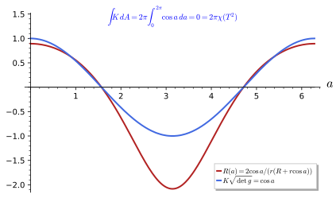
figures/gauss_bonnet_torus.sage.
The torus formula and the vanishing of its total curvature are computed with SageManifolds in the first exercise. The same computation is the core of Proposition 28.
Exercise 305 (Curvature of the torus) Compute the scalar curvature of the torus metric with SageManifolds, evaluate it on the outer and inner equators, and integrate the Gauss curvature over the torus.
With the symbols of Exercise 229 the single independent component gives R = 2\cos a / (r(R + r\cos a)), equal to 2/(r(R + r)) at a = 0 and -2/(r(R - r)) at a = \pi. The integral \int K\, dA = \int_0^{2\pi}\int_0^{2\pi} \frac{\cos a}{r(R + r\cos a)} \cdot r(R + r\cos a)\, da\, db = 2\pi\int_0^{2\pi}\cos a\, da = 0:
import os, sys; sys.path.insert(0, os.path.dirname(os.path.abspath(__file__))); from _curvature import *
R, r = var('R r', domain='real'); assume(R > r, r > 0)
M, X, g = chart_metric('a b', lambda c: [[r**2, 0], [0, (R + r*cos(c[0]))**2]], ranges='a:(0,2*pi) b:(0,2*pi)')
Rm, Ric, Rs = curvature(g)
a, b = X[:]
Rs_expr = Rs.expr().simplify_full().factor()
print("scalar curvature:", Rs_expr)
print("outer equator a = 0:", Rs_expr.subs(a=0).factor(), " inner equator a = pi:", Rs_expr.subs(a=pi).factor())
K = Rs_expr/2 # Gauss curvature K = R/2 in two dimensions
print("integral of K dA over the torus:", integrate(integrate(K*g.sqrt_abs_det().expr(), b, 0, 2*pi), a, 0, 2*pi).simplify_full())Output:
scalar curvature: 2*cos(a)/((r*cos(a) + R)*r)
outer equator a = 0: 2/((R + r)*r) inner equator a = pi: -2/((R - r)*r)
integral of K dA over the torus: 0The scalar curvature of a product of two spheres is the sum of the two scalar curvatures. The second exercise checks this with SageManifolds for spheres of radii p and q.
Exercise 306 (A product of two spheres) Compute with SageManifolds the Ricci tensor and the scalar curvature of the product metric p^2(d\theta_1^2 + \sin^2\theta_1\,d\varphi_1^2) + q^2(d\theta_2^2 + \sin^2\theta_2\,d\varphi_2^2) on S^2 \times S^2.
The Ricci tensor is the sum of the two factors’ Ricci tensors, d\theta_1^2 + \sin^2\theta_1\,d\varphi_1^2 + d\theta_2^2 + \sin^2\theta_2\,d\varphi_2^2, with no mixed components, and R = 2/p^2 + 2/q^2:
import os, sys; sys.path.insert(0, os.path.dirname(os.path.abspath(__file__))); from _curvature import *
p, q = var('p q', domain='real'); assume(p > 0, q > 0)
M, X, g = chart_metric('th1 ph1 th2 ph2', lambda c: [[p**2, 0, 0, 0], [0, p**2*sin(c[0])**2, 0, 0], [0, 0, q**2, 0], [0, 0, 0, q**2*sin(c[2])**2]],
ranges='th1:(0,pi) ph1:(0,2*pi) th2:(0,pi) ph2:(0,2*pi)')
Rs = g.ricci_scalar().expr().simplify_full()
print("scalar curvature of S^2(p) x S^2(q):", Rs, ":", bool(Rs == 2/p**2 + 2/q**2))
Ric = g.ricci()
print("Ricci tensor:", Ric.display())
print("mixed components R_{th1 th2}, R_{ph1 ph2} vanish:", bool(Ric[0, 2].expr() == 0 and Ric[1, 3].expr() == 0))
print("for p = q = 1: R = 4 = 2 + 2, twice the value of one unit sphere:", bool(Rs.subs(p=1, q=1) == 4))Output:
scalar curvature of S^2(p) x S^2(q): 2*(p^2 + q^2)/(p^2*q^2) : True
Ricci tensor: Ric(g) = dth1⊗dth1 + sin(th1)^2 dph1⊗dph1 + dth2⊗dth2 + sin(th2)^2 dph2⊗dph2
mixed components R_{th1 th2}, R_{ph1 ph2} vanish: True
for p = q = 1: R = 4 = 2 + 2, twice the value of one unit sphere: TrueHow the scalar curvature responds to a rescaling of the metric is the basis of every dimensional estimate of curvature. The third exercise derives the scaling of each curvature quantity.
Exercise 307 (Scaling of the curvatures) For the metric \tilde g = \lambda g, \lambda > 0 constant, show that \tilde\Gamma = \Gamma, \tilde R^\rho{}_{\sigma\mu\nu} = R^\rho{}_{\sigma\mu\nu}, \tilde R_{ij} = R_{ij}, \tilde R = R/\lambda and \tilde K = K/\lambda. Apply to the sphere of radius R_0.
\tilde\Gamma = \Gamma by Exercise 235, and the Riemann and Ricci tensors are built from \Gamma alone. The scalar curvature uses \tilde g^{ij} = g^{ij}/\lambda, so \tilde R = R/\lambda; the sectional curvature has \lambda once in the numerator (\tilde R_{\rho\sigma\mu\nu} = \lambda R_{\rho\sigma\mu\nu}) and \lambda^2 in the denominator. For the sphere of radius R_0, \lambda = R_0^2: R = 2/R_0^2 and K = 1/R_0^2, as in Exercise 278.
Einstein metrics and the Einstein tensor
On the sphere the Ricci tensor equals the metric, and on SU(2) twice the metric. Metrics with this property are singled out by the Einstein equations, and they are the most symmetric metrics after those of constant curvature.
Definition 71 (Einstein metric) A metric is an Einstein metric if its Ricci tensor is proportional to it, R_{ij} = \lambda g_{ij} for a constant \lambda; then R = n\lambda. Einstein metrics solve the vacuum Einstein equations with a cosmological constant (The Einstein equations), which is why spheres are the natural internal spaces of the supergravity compactifications of Part VI.
Veriphy. Pending.
Lean. Pending.
Sage. Pending.
Spheres of every dimension are Einstein metrics. The first example gives the constant \lambda for each and its dependence on the radius.
Example 298 (Spheres) The unit S^n has \lambda = n - 1: \lambda = 1 for S^2 (Equation 50) and \lambda = 2 for S^3 = SU(2) (Proposition 27); the sphere of radius R_0 has \lambda = (n-1)/R_0^2.
Products of Einstein metrics are Einstein only if the constants match. The second example shows how to adjust the radii of a product of spheres to make them match.
Example 299 (Flat and product metrics) Flat metrics are Einstein with \lambda = 0; the product S^2 \times S^2 of two unit spheres is Einstein with \lambda = 1, since each factor contributes its own Ricci tensor; the product S^2 \times S^3 of unit spheres is not Einstein (\lambda = 1 on one factor, 2 on the other), but S^2 \times S^3 with the radii adjusted so that 1/R_2^2 = 2/R_3^2 is.
A metric whose Ricci tensor is proportional to the metric with a varying factor is not Einstein. The third example identifies the embedded torus as such a case.
Example 300 (The embedded torus) R_{ij} = K g_{ij} with non-constant K (Example 294) is not an Einstein metric; in two dimensions a metric is Einstein exactly when its Gauss curvature is constant, and the flat torus and the round sphere are the two examples among the surfaces met so far.
The product of two spheres of different radii illustrates the condition of Example 299. The first exercise computes the ratios R_{ii}/g_{ii} with SageManifolds and finds when they agree.
Exercise 308 (When is S^2 \times S^2 Einstein?) With SageManifolds compute R_{ii}/g_{ii} for the product of spheres of radii p and q, and find the condition for the product to be an Einstein metric.
The ratios are 1/p^2 on the first factor and 1/q^2 on the second, so the product is Einstein exactly when p = q, with \lambda = 1/p^2:
import os, sys; sys.path.insert(0, os.path.dirname(os.path.abspath(__file__))); from _curvature import *
p, q = var('p q', domain='real'); assume(p > 0, q > 0)
M, X, g = chart_metric('th1 ph1 th2 ph2', lambda c: [[p**2, 0, 0, 0], [0, p**2*sin(c[0])**2, 0, 0], [0, 0, q**2, 0], [0, 0, 0, q**2*sin(c[2])**2]],
ranges='th1:(0,pi) ph1:(0,2*pi) th2:(0,pi) ph2:(0,2*pi)')
Ric = g.ricci()
ratios = [(Ric[i, i].expr()/g[i, i].expr()).simplify_full() for i in range(4)]
print("R_ii / g_ii for the four coordinates:", ratios)
print("first factor: Ric = g/p^2; second factor: Ric = g/q^2:", bool(ratios[0] == 1/p**2 and ratios[1] == 1/p**2 and ratios[2] == 1/q**2 and ratios[3] == 1/q**2))
print("Einstein for p = q = 1 with lambda = 1:", all(bool((Ric[i, j].expr() - g[i, j].expr()).subs(p=1, q=1) == 0) for i in range(4) for j in range(4)))
print("not Einstein for p = 1, q = 2: Ric - g has the component", (Ric[2, 2].expr() - g[2, 2].expr()).subs(p=1, q=2))
lam = var('lam')
print("solving R_ii = lam g_ii for all i forces 1/p^2 = 1/q^2 = lam:", solve([ratios[0] == lam, ratios[2] == lam], [lam, q])[0])Output:
R_ii / g_ii for the four coordinates: [p^(-2), p^(-2), q^(-2), q^(-2)]
first factor: Ric = g/p^2; second factor: Ric = g/q^2: True
Einstein for p = q = 1 with lambda = 1: True
not Einstein for p = 1, q = 2: Ric - g has the component -3
solving R_ii = lam g_ii for all i forces 1/p^2 = 1/q^2 = lam: [lam == p^(-2), q == p]In two dimensions the Einstein condition reduces to a condition on the Gauss curvature. The second exercise proves the statement of Example 300 and lists the surfaces met so far that satisfy it.
Exercise 309 (Einstein surfaces) Show that a surface metric is Einstein exactly when its Gauss curvature is constant. Which of the plane, the sphere of radius R_0, the hyperbolic plane of Exercise 279, the flat and embedded tori, the cylinder and the spheroid of Exercise 316 are Einstein?
R_{ij} = Kg_{ij} on every surface (Exercise 304), so the metric is Einstein iff K is constant, with \lambda = K. Einstein: the plane (0), the sphere (1/R_0^2), the hyperbolic plane (-1/A^2), the flat torus and the cylinder (0). Not Einstein: the embedded torus and the spheroid with c \neq 1, whose curvatures vary.
In dimension three or more, a metric with R_{ij} = fg_{ij} for a function f is automatically Einstein. The third exercise proves this result of Schur from the contracted Bianchi identity \nabla^iR_{ij} = \tfrac12\partial_jR, quoted from Definition 72.
Exercise 310 (Schur’s lemma) Assume R_{ij} = fg_{ij} for a function f on a connected manifold of dimension n \geq 3. Using \nabla^iR_{ij} = \tfrac12\partial_jR and metric compatibility, show that f is constant. Why does the argument fail for n = 2?
R = nf, and \nabla^iR_{ij} = \nabla^i(fg_{ij}) = \partial_jf since \nabla g = 0. The identity gives \partial_jf = \tfrac{n}{2}\partial_jf, so (1 - \tfrac n2)\partial_jf = 0, and for n \neq 2 the function f is locally, hence globally, constant. For n = 2 the factor vanishes and nothing follows: every surface has R_{ij} = Kg_{ij}, with K arbitrary.
The Einstein condition makes sense for Lorentzian metrics as well, and in two dimensions the one-sheeted hyperboloid of Exercise 189 provides the example. The fourth exercise computes its Ricci tensor, a problem of Blennow and Ohlsson (2022, Problem 2.48), and compares it with the hyperbolic plane obtained from the other sheet.
Exercise 311 (Two-dimensional de Sitter space) The hyperboloid t^2 - x^2 - y^2 = -1 in the Minkowski metric dt^2 - dx^2 - dy^2, parametrised by (\sinh\lambda, \cosh\lambda\cos\varphi, \cosh\lambda\sin\varphi), has the induced metric d\lambda^2 - \cosh^2\lambda\,d\varphi^2. Compute its Christoffel symbols, the component R^\lambda{}_{\varphi\lambda\varphi} and the Ricci tensor, and show that it is an Einstein metric with \lambda = -1. What is the constant for the hyperbolic plane d\psi^2 + \sinh^2\psi\,d\varphi^2?
With g_{\varphi\varphi} = -\cosh^2\lambda, Equation 34 gives \Gamma^\lambda_{\varphi\varphi} = -\tfrac12\partial_\lambda g_{\varphi\varphi} = \cosh\lambda\sinh\lambda and \Gamma^\varphi_{\lambda\varphi} = \tanh\lambda. Then R^\lambda{}_{\varphi\lambda\varphi} = \partial_\lambda\Gamma^\lambda_{\varphi\varphi} - \Gamma^\lambda_{\varphi\varphi}\Gamma^\varphi_{\lambda\varphi} = \cosh^2\lambda + \sinh^2\lambda - \sinh^2\lambda = \cosh^2\lambda, so R_{\varphi\varphi} = R^\lambda{}_{\varphi\lambda\varphi} = \cosh^2\lambda = -g_{\varphi\varphi}, and in the same way R_{\lambda\lambda} = R^\varphi{}_{\lambda\varphi\lambda} = -1 = -g_{\lambda\lambda}. Hence R_{ij} = -g_{ij} and R = -2. For d\psi^2 + \sinh^2\psi\,d\varphi^2, K = -f''/f = -1 and R_{ij} = -g_{ij} too (Exercise 304). The two sheets give Einstein metrics with the same constant and different signatures; the Lorentzian one is the two-dimensional de Sitter space of The Einstein equations.
Veriphy. Pending.
Lean. Pending.
Sage. Pending.
The combination of the Ricci tensor and the scalar curvature that appears in the Einstein equations is fixed by the requirement that it be conserved. The definition introduces it and states its divergence-free property.
Definition 72 (Einstein tensor) The Einstein tensor is G_{ij} = R_{ij} - \tfrac12 R\, g_{ij}. It is symmetric and, by the contracted second Bianchi identity, covariantly conserved: \nabla^i G_{ij} = 0. It is the left-hand side of the Einstein equations (The Einstein equations).
Veriphy. Pending.
Lean. Pending.
Sage. Pending.
In two dimensions the Einstein tensor vanishes identically, whatever the metric. The first example shows why, from the relation R_{ij} = Kg_{ij} valid on every surface.
Example 301 (Vanishing in two dimensions) In two dimensions R_{ij} = K g_{ij} and R = 2K, so G_{ij} = K g_{ij} - K g_{ij} = 0 for every metric: the Einstein equations are empty in two dimensions, which is why two-dimensional gravity has no local degrees of freedom (The Einstein equations).
For the unit three-sphere the Einstein tensor is a negative multiple of the metric. The second example interprets the result as a vacuum solution with a cosmological constant.
Example 302 (The three-sphere) For SU(2), G_{ij} = 2g_{ij} - 3g_{ij} = -g_{ij}: the unit three-sphere solves G_{ij} + \Lambda g_{ij} = 0 with cosmological constant \Lambda = 1, a Euclidean de Sitter space.
Flat metrics have vanishing Einstein tensor, the trivial vacuum solution of the Einstein equations. The third example records this for completeness, with Minkowski space as the physical case.
Example 303 (Flat space) G_{ij} = 0 for every flat metric, since both R_{ij} and R vanish; Minkowski space solves the vacuum Einstein equations without cosmological constant.
The Einstein tensors of the spheres were computed in the examples for S^2 and S^3. The first exercise asks for them in general and for the cosmological constant they correspond to.
Exercise 312 (The Einstein tensor of spheres) Compute G_{ij} for the unit S^2 and the unit S^3, and the cosmological constant \Lambda for which each solves G_{ij} + \Lambda g_{ij} = 0.
S^2: R_{ij} = g_{ij}, R = 2, G_{ij} = g_{ij} - g_{ij} = 0, so any \Lambda fails unless \Lambda = 0; in two dimensions the equation carries no information. S^3: R_{ij} = 2g_{ij}, R = 6, G_{ij} = 2g_{ij} - 3g_{ij} = - g_{ij}, so \Lambda = 1. In general the unit S^n has G_{ij} = (n - 1)(1 - n/2)g_{ij} and \Lambda = (n-1)(n-2)/2.
The divergence-free property is the content of the contracted Bianchi identity. The second exercise checks it for SU(2) with SageManifolds, together with G = -g.
Exercise 313 (The Einstein tensor of SU(2)) Compute G_{ij} for Equation 25 with SageManifolds, check G = -g, its trace, and \nabla_iG^i{}_j = 0.
G = -g, with trace g^{ij}G_{ij} = -3 = (1 - \tfrac32)\cdot6, and the divergence vanishes:
import os, sys; sys.path.insert(0, os.path.dirname(os.path.abspath(__file__))); from _curvature import *
M, X, g = chart_metric('th ph ps', lambda c: [[QQ(1)/4, 0, 0], [0, QQ(1)/4, cos(c[0])/4], [0, cos(c[0])/4, QQ(1)/4]], ranges='th:(0,pi) ph:(0,2*pi) ps:(0,4*pi)')
Ric = g.ricci(); Rs = g.ricci_scalar()
G = Ric - Rs*g/2; G.set_name('G')
print("Einstein tensor:", G.display())
print("G = -g:", G == -g)
trG = sum(g.inverse()[i, j].expr()*G[i, j].expr() for i in range(3) for j in range(3)).simplify_full()
print("trace g^{ij} G_ij =", trG, "= (1 - n/2) R with n = 3, R = 6:", bool(trG == (1 - QQ(3)/2)*6))
nab = g.connection()
divG = nab(G.up(g, 0))['^a_ba'] # nabla_a G^a_b
print("divergence nabla^i G_ij:", divG.display(), "-> vanishes:", divG == 0)Output:
Einstein tensor: G = -1/4 dth⊗dth - 1/4 dph⊗dph - 1/4*cos(th) dph⊗dps - 1/4*cos(th) dps⊗dph - 1/4 dps⊗dps
G = -g: True
trace g^{ij} G_ij = -3 = (1 - n/2) R with n = 3, R = 6: True
divergence nabla^i G_ij: 0 -> vanishes: TrueThe Einstein tensor and the Ricci tensor determine each other in dimension n \neq 2. The third exercise inverts the relation, which turns the Einstein equations into equations for the Ricci tensor.
Exercise 314 (Inverting the Einstein tensor) Show that g^{ij}G_{ij} = (1 - \tfrac n2)R and that for n \neq 2, R_{ij} = G_{ij} - \frac{1}{n-2}\,(g^{kl}G_{kl})\,g_{ij}. Deduce that G_{ij} + \Lambda g_{ij} = 0 is equivalent to R_{ij} = \frac{2\Lambda}{n-2}g_{ij}, and check with the unit S^3.
g^{ij}G_{ij} = R - \tfrac n2R. Then R = -\frac{2}{n-2}g^{kl}G_{kl} and R_{ij} = G_{ij} + \tfrac12Rg_{ij} = G_{ij} - \frac{1}{n-2}(g^{kl}G_{kl})g_{ij}. With G_{ij} = -\Lambda g_{ij}, g^{kl}G_{kl} = -n\Lambda and R_{ij} = -\Lambda g_{ij} + \frac{n\Lambda}{n-2}g_{ij} = \frac{2\Lambda}{n-2}g_{ij}: vacuum solutions with a cosmological constant are Einstein metrics. For S^3, \Lambda = 1 and n = 3 give R_{ij} = 2g_{ij}, as in Proposition 27.
Curvatures of the running examples
The sphere’s Ricci tensor and scalar curvature were computed in the examples. The proposition states them component by component, on the domain of the spherical chart.
Proposition 26 (Curvature of the round sphere) On the chart domain \sin\theta \neq 0 the unit sphere has Ricci tensor R_{ij} = g_{ij} and scalar curvature R = 2.
Veriphy. Pending.
Lean. KaluzaKlein.Geometry.sphere_ricci_0_0, KaluzaKlein.Geometry.sphere_ricci_0_1, KaluzaKlein.Geometry.sphere_ricci_1_0, KaluzaKlein.Geometry.sphere_ricci_1_1 and KaluzaKlein.Geometry.sphere_scalarCurvature.
/-- The scalar curvature of the unit sphere is `2`. -/
theorem sphere_scalarCurvature (x : Fin 2 → ℝ) (h : Real.sin (x 0) ≠ 0) : scalarCurvature sphere x = 2KaluzaKlein.Geometry.sphere_scalarCurvature in KaluzaKlein/Geometry/Curvature.lean, namespace KaluzaKlein.Geometry
Sage. Pending.
The proposition is about the unit sphere, and the scaling of Exercise 307 extends it to any radius. The first example states the result.
Example 304 (Any radius) For the sphere of radius R_0, R_{ij} is unchanged, so R_{ij} = g^{\text{unit}}_{ij} = g_{ij}/R_0^2 and R = 2/R_0^2: an Einstein metric with \lambda = 1/R_0^2, whose scalar curvature grows without bound as the sphere shrinks.
The proposition is stated in the spherical chart, but the Ricci tensor is a tensor and R a function. The second example notes what this means for the stereographic chart.
Example 305 (In another chart) In the stereographic chart the Ricci tensor is again equal to the metric, R_{ij} = 4\delta_{ij}/(1 + u^2 + v^2)^2, and R = 2, including at the north pole, which the spherical chart misses (Exercise 315). An equation R_{ij} = g_{ij} that holds in one chart holds in every chart.
The proposition follows from the Riemann components of Proposition 25 by one contraction and one trace. The third example carries out both and shows where the hypothesis \sin\theta \neq 0 enters.
Example 306 (The components by contraction) By Definition 69, R_{\theta\theta} = R^\varphi{}_{\theta\varphi\theta} = -R^\varphi{}_{\theta\theta\varphi} = 1 and R_{\varphi\varphi} = R^\theta{}_{\varphi\theta\varphi} = \sin^2\theta, while R_{\theta\varphi} = R^\theta{}_{\theta\theta\varphi} + R^\varphi{}_{\theta\varphi\varphi} = 0 + 0 and likewise R_{\varphi\theta} = 0: the Ricci tensor is \operatorname{diag}(1, \sin^2\theta) = g. The trace is R = g^{\theta\theta}R_{\theta\theta} + g^{\varphi\varphi}R_{\varphi\varphi} = 1 + \sin^{-2}\theta\,\sin^2\theta = 2, which uses the inverse component g^{\varphi\varphi}, defined only for \sin\theta \neq 0.
Veriphy. Pending.
Lean. sphere_ricci_i_j states R_{ij} for i, j \in \{0, 1\} (\theta = 0, \varphi = 1): sphere_ricci_0_0 is R_{\theta\theta} = 1, sphere_ricci_1_1 is R_{\varphi\varphi} = \sin^2\theta, and the mixed ones are 0; sphere_scalarCurvature states R = 2. All carry \sin\theta \neq 0, needed for the inverse metric in christoffel.
Sage. Pending.
SageManifolds computes the curvature in two charts at once, one of which covers the north pole. The first exercise does this and compares the two results.
Exercise 315 (Two charts) With SageManifolds compute the Ricci tensor and the scalar curvature of the unit sphere in the spherical and in the stereographic chart.
\mathrm{Ric} = g and R = 2 in both charts:
import os, sys; sys.path.insert(0, os.path.dirname(os.path.abspath(__file__))); from _curvature import *
M, X, g = chart_metric('th ph', lambda c: [[1, 0], [0, sin(c[0])**2]], ranges='th:(0,pi) ph:(0,2*pi)')
Ric = g.ricci(); Rs = g.ricci_scalar()
print("spherical chart: Ric =", Ric.display(), "; Ric = g:", Ric == g, "; R =", Rs.expr())
N, Y, h = chart_metric('u v', lambda c: [[4/(1 + c[0]**2 + c[1]**2)**2, 0], [0, 4/(1 + c[0]**2 + c[1]**2)**2]])
Rich = h.ricci(); Rsh = h.ricci_scalar()
print("stereographic chart: Ric = g:", Rich == h, "; R =", Rsh.expr().simplify_full())
print("both charts give R = 2:", bool(Rs.expr() == 2) and bool(Rsh.expr().simplify_full() == 2))Output:
spherical chart: Ric = Ric(g) = dth⊗dth + sin(th)^2 dph⊗dph ; Ric = g: True ; R = 2
stereographic chart: Ric = g: True ; R = 2
both charts give R = 2: TrueDeforming the sphere destroys the constancy of the curvature but not its total. The second exercise computes the scalar curvature of a spheroid with SageManifolds and integrates the Gauss curvature.
Exercise 316 (The spheroid) For the spheroid x^2 + y^2 + z^2/c^2 = 1 with the embedding (\sin\theta\cos\varphi, \sin\theta\sin\varphi, c\cos\theta), compute with SageManifolds the induced metric and its scalar curvature; compare poles and equator for c = 2 and c = \tfrac12, and compute \int K\,dA for c = 2.
R = 2c^2/(1 + (c^2 - 1)\sin^2\theta)^2: 2c^2 at the poles and 2/c^2 on the equator. The prolate spheroid (c = 2) is most curved at its pointed poles, the oblate one (c = \tfrac12) on its rim. The total curvature is still 4\pi (Proposition 28):
from sage.all import *
E3 = Manifold(3, 'R^3', structure='Riemannian'); C = E3.chart('X Y Z')
h = E3.metric('h'); h[0, 0] = 1; h[1, 1] = 1; h[2, 2] = 1
c = var('c', domain='real'); assume(c > 0)
S = Manifold(2, 'S', structure='Riemannian'); A = S.open_subset('A'); X = A.chart(r'th:(0,pi):\theta ph:(0,2*pi):\varphi'); th, ph = X[:]
emb = A.diff_map(E3, {(X, C): [sin(th)*cos(ph), sin(th)*sin(ph), c*cos(th)]}, name='E')
g = A.metric('g'); g.set(emb.pullback(h))
print("induced metric:", g.display())
Rs = g.ricci_scalar().expr().simplify_full().factor()
print("scalar curvature R(theta) =", Rs)
print("R = 2 for c = 1:", bool(Rs.subs(c=1).simplify_full() == 2))
print("poles (theta -> 0): R =", limit(Rs, th=0).factor(), "; equator (theta = pi/2): R =", Rs.subs(th=pi/2).factor())
print("prolate c = 2: R(pole) = %.3f > R(equator) = %.3f:" % (float(limit(Rs, th=0).subs(c=2)), float(Rs.subs(th=pi/2, c=2))), bool(limit(Rs, th=0).subs(c=2) > Rs.subs(th=pi/2, c=2)))
print("oblate c = 1/2: R(pole) = %.3f < R(equator) = %.3f:" % (float(limit(Rs, th=0).subs(c=1/2)), float(Rs.subs(th=pi/2, c=1/2))), bool(limit(Rs, th=0).subs(c=QQ(1)/2) < Rs.subs(th=pi/2, c=QQ(1)/2)))
K = Rs/2; dA = g.sqrt_abs_det().expr()
print("Gauss-Bonnet for c = 2: integral of K dA =", integrate(integrate((K*dA).subs(c=2).simplify_full(), ph, 0, 2*pi), th, 0, pi).simplify_full())Output:
induced metric: g = ((c^2 - 1)*sin(th)^2 + 1) dth⊗dth + sin(th)^2 dph⊗dph
scalar curvature R(theta) = 2*c^2/(c^2*sin(th)^2 - sin(th)^2 + 1)^2
R = 2 for c = 1: True
poles (theta -> 0): R = 2*c^2 ; equator (theta = pi/2): R = 2/c^2
prolate c = 2: R(pole) = 8.000 > R(equator) = 0.500: True
oblate c = 1/2: R(pole) = 0.500 < R(equator) = 8.000: True
Gauss-Bonnet for c = 2: integral of K dA = 4*piThe proposition generalises to round spheres of every dimension. The third exercise derives the formula using the constant curvature form.
Exercise 317 (Spheres of every dimension) Granting that the round S^n of radius R_0 has R_{\rho\sigma\mu\nu} = R_0^{-2}(g_{\rho\mu}g_{\sigma\nu} - g_{\rho\nu}g_{\sigma\mu}) (all sectional curvatures R_0^{-2}), find its Ricci tensor, scalar curvature and Einstein tensor. Check n = 2 and n = 3 against the propositions.
By Exercise 292, R_{ij} = \frac{n-1}{R_0^2}g_{ij} and R = \frac{n(n-1)}{R_0^2}; then G_{ij} = \frac{n-1}{R_0^2}\big(1 - \frac n2\big)g_{ij}. For n = 2, R_0 = 1: R_{ij} = g_{ij}, R = 2, G = 0 (Proposition 26). For n = 3: R_{ij} = 2g_{ij}, R = 6, G = -g (Proposition 27, Example 302).
The three-sphere SU(2) is the three-dimensional counterpart of the round sphere. The proposition records its Ricci tensor and scalar curvature in Euler angles, which turn out to be those of a round three-sphere.
Proposition 27 (Curvature of SU(2) \cong S^3) On the chart domain \sin\theta \neq 0 the metric Equation 25 has Ricci tensor R_{ij} = 2 g_{ij}, that is R_{\theta\theta} = R_{\varphi\varphi} = R_{\psi\psi} = \tfrac12, \qquad R_{\varphi\psi} = \tfrac12\cos\theta, \qquad R_{\theta\varphi} = R_{\theta\psi} = 0 , \tag{51} and scalar curvature R = 6.
Veriphy. Pending.
Lean. KaluzaKlein.Geometry.su2_ricci_0_0, KaluzaKlein.Geometry.su2_ricci_0_1, KaluzaKlein.Geometry.su2_ricci_0_2, KaluzaKlein.Geometry.su2_ricci_1_0, KaluzaKlein.Geometry.su2_ricci_1_1, KaluzaKlein.Geometry.su2_ricci_1_2, KaluzaKlein.Geometry.su2_ricci_2_0, KaluzaKlein.Geometry.su2_ricci_2_1, KaluzaKlein.Geometry.su2_ricci_2_2 and KaluzaKlein.Geometry.su2_scalarCurvature.
theorem su2_scalarCurvature (x : Fin 3 → ℝ) (h : Real.sin (x 0) ≠ 0) : scalarCurvature su2 x = 6KaluzaKlein.Geometry.su2_scalarCurvature in KaluzaKlein/Geometry/Curvature.lean, namespace KaluzaKlein.Geometry
Sage. Pending.
An Einstein metric need not have constant sectional curvature, but SU(2) does. The first example states the sectional curvatures of the three coordinate planes.
Example 307 (All sectional curvatures equal one) For the coordinate planes, K(\partial_\theta, \partial_\varphi) = K(\partial_\theta, \partial_\psi) = K(\partial_\varphi, \partial_\psi) = 1 (Exercise 318), and in fact R_{\rho\sigma\mu\nu} = g_{\rho\mu}g_{\sigma\nu} - g_{\rho\nu}g_{\sigma\mu}: the metric is that of the unit S^3, and Exercise 292 gives back R_{ij} = 2g_{ij}, R = 6.
Rescaling the metric of SU(2) changes the radius of the three-sphere. The second example gives the curvatures for any radius.
Example 308 (A three-sphere of radius R_0) The metric R_0^2 times Equation 25 is the round S^3 of radius R_0; by Exercise 307 its Ricci tensor is still R_{ij} = 2g^{SU(2)}_{ij} = \frac{2}{R_0^2}g_{ij}, and its scalar curvature is 6/R_0^2.
The Christoffel symbols of SU(2) in Euler angles diverge at \theta = 0, \pi, but the proposition shows that the curvature does not. The third example compares the two behaviours.
Example 309 (Regular curvature, singular chart) R_{\varphi\psi} = \tfrac12\cos\theta is bounded and R = 6 everywhere, while \Gamma^\varphi_{\theta\psi} = -1/(2\sin\theta) diverges at the poles of the chart. The divergence is the coordinate artefact of Euler angles, as for \cot\theta on S^2; the proposition carries the hypothesis \sin\theta \neq 0 only because the computation passes through the singular symbols.
The computation behind the proposition is long by hand and quick in SageManifolds. The first exercise reproduces the Ricci tensor and computes the sectional curvatures of the coordinate planes.
Exercise 318 (The SU(2) curvature with SageManifolds) Compute the Ricci tensor and scalar curvature of Equation 25 with SageManifolds, check Equation 51, and compute the sectional curvatures of the three coordinate planes.
\mathrm{Ric} = 2g, R = 6 and all three sectional curvatures equal 1:
import os, sys; sys.path.insert(0, os.path.dirname(os.path.abspath(__file__))); from _curvature import *
M, X, g = chart_metric('th ph ps', lambda c: [[QQ(1)/4, 0, 0], [0, QQ(1)/4, cos(c[0])/4], [0, cos(c[0])/4, QQ(1)/4]], ranges='th:(0,pi) ph:(0,2*pi) ps:(0,4*pi)')
th, ph, ps = X[:]
Ric = g.ricci(); Rs = g.ricci_scalar()
print("Ricci tensor:", Ric.display())
print("R_thth = R_phph = R_psps = 1/2, R_phps = cos(th)/2, R_thph = R_thps = 0:", bool(Ric[0, 0].expr() == 1/2 and Ric[1, 1].expr() == 1/2 and Ric[2, 2].expr() == 1/2 and Ric[1, 2].expr() == cos(th)/2 and Ric[0, 1].expr() == 0 and Ric[0, 2].expr() == 0))
print("Ric = 2 g:", Ric == 2*g, "; scalar curvature R =", Rs.expr(), "= n (n - 1) for n = 3:", bool(Rs.expr() == 6))
Rd = g.riemann().down(g)
secs = [(Rd[a, b, a, b].expr()/(g[a, a].expr()*g[b, b].expr() - g[a, b].expr()**2)).simplify_full() for (a, b) in [(0, 1), (0, 2), (1, 2)]]
print("sectional curvatures of the three coordinate planes:", secs, "-> all equal to 1:", all(bool(s == 1) for s in secs))Output:
Ricci tensor: Ric(g) = 1/2 dth⊗dth + 1/2 dph⊗dph + 1/2*cos(th) dph⊗dps + 1/2*cos(th) dps⊗dph + 1/2 dps⊗dps
R_thth = R_phph = R_psps = 1/2, R_phps = cos(th)/2, R_thph = R_thps = 0: True
Ric = 2 g: True ; scalar curvature R = 6 = n (n - 1) for n = 3: True
sectional curvatures of the three coordinate planes: [1, 1, 1] -> all equal to 1: TrueStretching the Hopf fibres of SU(2) gives the Berger spheres, the simplest family of metrics on S^3 that are not round. The second exercise computes their scalar curvature with SageManifolds and finds when they are Einstein.
Exercise 319 (Berger spheres) For g_\lambda = \tfrac14\big[d\theta^2 + \sin^2\theta\,d\varphi^2 + \lambda^2(d\psi + \cos\theta\,d\varphi)^2\big], \lambda > 0, check that \lambda = 1 gives Equation 25, compute the scalar curvature with SageManifolds, and find the values of \lambda for which g_\lambda is Einstein.
R(\lambda) = 8 - 2\lambda^2: 6 at \lambda = 1, tending to 8 as the fibres collapse and negative for \lambda > 2. The ratios R_{\theta\theta}/g_{\theta\theta} = 4 - 2\lambda^2 and R_{\psi\psi}/g_{\psi\psi} = 2\lambda^2 agree only for \lambda = 1: the round metric is the only Einstein metric of the family.
import os, sys; sys.path.insert(0, os.path.dirname(os.path.abspath(__file__))); from _curvature import *
lam = var('lam', domain='real'); assume(lam > 0)
def comps(c):
th = c[0]
return [[QQ(1)/4, 0, 0], [0, (sin(th)**2 + lam**2*cos(th)**2)/4, lam**2*cos(th)/4], [0, lam**2*cos(th)/4, lam**2/4]]
M, X, g = chart_metric('th ph ps', comps, ranges='th:(0,pi) ph:(0,2*pi) ps:(0,4*pi)')
th, ph, ps = X[:]
print("lambda = 1 gives back the SU(2) metric:", all(bool((g[i, j].expr().subs(lam=1) - [[QQ(1)/4, 0, 0], [0, QQ(1)/4, cos(th)/4], [0, cos(th)/4, QQ(1)/4]][i][j]).simplify_full() == 0) for i in range(3) for j in range(3)))
Rs = g.ricci_scalar().expr().simplify_full()
print("scalar curvature R(lambda) =", Rs, ":", bool(Rs == 8 - 2*lam**2))
print("R(1) = 6:", bool(Rs.subs(lam=1) == 6), "; R -> 8 as lambda -> 0 (collapsing fibre), R < 0 for lambda > 2")
Ric = g.ricci()
ratio_th = (Ric[0, 0].expr()/g[0, 0].expr()).simplify_full(); ratio_ps = (Ric[2, 2].expr()/g[2, 2].expr()).simplify_full()
print("R_thth / g_thth =", ratio_th, "; R_psps / g_psps =", ratio_ps)
print("Einstein (the two ratios agree) exactly when lambda = 1:", solve(ratio_th == ratio_ps, lam))Output:
lambda = 1 gives back the SU(2) metric: True
scalar curvature R(lambda) = -2*lam^2 + 8 : True
R(1) = 6: True ; R -> 8 as lambda -> 0 (collapsing fibre), R < 0 for lambda > 2
R_thth / g_thth = -2*lam^2 + 4 ; R_psps / g_psps = 2*lam^2
Einstein (the two ratios agree) exactly when lambda = 1: [
lam == 1
]The scalar curvature is the trace of the Ricci tensor with the inverse metric, which for SU(2) has an off-diagonal part. The third exercise carries out the trace by hand with Equation 51 and Equation 26.
Exercise 320 (The trace by hand) Compute R = g^{ij}R_{ij} for SU(2) from Equation 51 and the inverse metric g^{\theta\theta} = 4, g^{\varphi\varphi} = g^{\psi\psi} = 4/\sin^2\theta, g^{\varphi\psi} = -4\cos\theta/\sin^2\theta.
R = 4\cdot\tfrac12 + \frac{4}{\sin^2\theta}\cdot\tfrac12 + \frac{4}{\sin^2\theta}\cdot\tfrac12 + 2\cdot\frac{-4\cos\theta}{\sin^2\theta}\cdot \tfrac12\cos\theta = 2 + \frac{4 - 4\cos^2\theta}{\sin^2\theta} = 2 + 4 = 6. Equivalently R = 2g^{ij}g_{ij} = 2\cdot3.
Total curvature
The Gauss curvature of the sphere is constant and that of the torus changes sign, but their integrals are topological numbers. The proposition records the two values, obtained by integrating K\sqrt{\det g} over the coordinate ranges.
Proposition 28 (Total curvature of the sphere and the torus) \int_{S^2} K\, dA = 4\pi and \int_{T^2} K\, dA = 0, in agreement with the Gauss-Bonnet theorem \int K\, dA = 2\pi\chi with \chi(S^2) = 2, \chi(T^2) = 0.
Veriphy. Pending.
Lean. Pending.
Sage. Computed by symbolic integration in Sage (figures/gauss_bonnet_torus.sage and Exercise 321).
The total curvature of a sphere does not depend on its radius. The first example explains the cancellation between curvature and area.
Example 310 (Independence of the radius) For the sphere of radius R_0, K = 1/R_0^2 and the area is 4\pi R_0^2, so \int K\,dA = 4\pi for every radius: shrinking the sphere increases its curvature exactly as much as it decreases its area.
The vanishing total curvature of the torus is a cancellation between its two halves. The second example gives the two contributions.
Example 311 (The two halves of the torus) K\,dA = \cos a\,da\,db, so the outer half |a| < \pi/2 contributes \int\cos a\,da\,db = 2\cdot2\pi = 4\pi and the inner half -4\pi, independently of R and r (Exercise 324). The outer half alone has the total curvature of a sphere.
Any smooth deformation of the sphere keeps the total curvature, although the curvature itself changes. The third example cites the spheroid as a check.
Example 312 (Deformed spheres) The spheroid of Exercise 316 has curvature varying between c^2 and 1/c^2, yet \int K\,dA = 4\pi; the Gauss-Bonnet theorem guarantees the same for every surface diffeomorphic to the sphere, and 0 for every surface diffeomorphic to the torus.
The first exercise computes the sphere’s total curvature with SageManifolds. It is the computation cited in the proposition, together with the torus script.
Exercise 321 (Gauss-Bonnet on the sphere) Compute \int_{S^2} K\, dA for the unit sphere and compare with 2\pi\chi(S^2).
K = R/2 = 1 and dA = \sin\theta\, d\theta\, d\varphi, so the integral is the area 4\pi = 2\pi \cdot 2, and \chi(S^2) = 2. In SageManifolds:
import os, sys; sys.path.insert(0, os.path.dirname(os.path.abspath(__file__))); from _curvature import *
M, X, g = chart_metric('th ph', lambda c: [[1, 0], [0, sin(c[0])**2]], ranges='th:(0,pi) ph:(0,2*pi)')
Rm, Ric, Rs = curvature(g); th, ph = X[:]
K = Rs.expr()/2
print("Gauss curvature K = R/2 =", K)
print("integral of K dA over the sphere:", integrate(integrate(K*g.sqrt_abs_det().expr(), ph, 0, 2*pi), th, 0, pi))Output:
Gauss curvature K = R/2 = 1
integral of K dA over the sphere: 4*piFor surfaces of revolution the integrand K\sqrt{\det g} is a second derivative, and the integral can be done once and for all. The second exercise derives the formula and checks it in SageManifolds for three profiles.
Exercise 322 (Total curvature of a surface of revolution) For ds^2 = du^2 + f(u)^2d\varphi^2 with f > 0, show that \int K\,dA over u_0 < u < u_1 is -2\pi[f'(u_1) - f'(u_0)]. Check with SageManifolds for f = \sin u on (0, \pi), f = 2 + \cos u on (0, 2\pi) and f = \cosh u on (-L, L).
K = -f''/f (Exercise 283) and dA = f\,du\,d\varphi, so K\,dA = -f''\,du\,d\varphi, which integrates to -2\pi[f']_{u_0}^{u_1}. The sphere gives -2\pi(\cos\pi - \cos0) = 4\pi, the torus 0 (periodic f'), and f = \cosh u gives -4\pi\sinh L, unbounded: a non-compact surface has no topological constraint.
import os, sys; sys.path.insert(0, os.path.dirname(os.path.abspath(__file__))); from _curvature import *
u = var('u', domain='real')
F = function('f')(u)
M, X, g = chart_metric('u ph', lambda c: [[1, 0], [0, function('f')(c[0])**2]], ranges='u ph:(0,2*pi)')
uu, ph = X[:]
K = (g.ricci_scalar().expr()/2).simplify_full()
dA = g.sqrt_abs_det().expr()
print("K =", K, "; with f > 0, sqrt(det g) = f and K f = -f''(u):", bool((K*function('f')(uu) + diff(function('f')(uu), uu, 2)).simplify_full() == 0))
print("so the integral of K dA over u0 <= u <= u1 is -2 pi [f'(u1) - f'(u0)]")
L = var('L', domain='real'); assume(L > 0)
cases = [("sphere, f = sin u on [0, pi]", sin(u), 0, pi), ("torus, f = R + r cos u on [0, 2 pi] (r = 1)", 2 + cos(u), 0, 2*pi), ("f = cosh u (K = -1) on [-L, L]", cosh(u), -L, L)]
for name, f, u0, u1 in cases:
total = (-2*pi*(diff(f, u).subs(u=u1) - diff(f, u).subs(u=u0))).simplify_full()
direct = integrate(integrate(-diff(f, u, 2), ph, 0, 2*pi), u, u0, u1).simplify_full()
print("%s: total curvature = %s ; direct integration agrees: %s" % (name, total, bool((total - direct).simplify_full() == 0)))
print("for f = cosh u the total curvature -4 pi sinh L grows without bound: the surface is not compact")Output:
K = -diff(f(u), u, u)/f(u) ; with f > 0, sqrt(det g) = f and K f = -f''(u): True
so the integral of K dA over u0 <= u <= u1 is -2 pi [f'(u1) - f'(u0)]
sphere, f = sin u on [0, pi]: total curvature = 4*pi ; direct integration agrees: True
torus, f = R + r cos u on [0, 2 pi] (r = 1): total curvature = 0 ; direct integration agrees: True
f = cosh u (K = -1) on [-L, L]: total curvature = -4*pi*sinh(L) ; direct integration agrees: True
for f = cosh u the total curvature -4 pi sinh L grows without bound: the surface is not compactThe holonomy around a parallel of the sphere equals the total curvature of the enclosed cap. The third exercise follows the parallel down to the south pole and connects the holonomy with the total curvature of the whole sphere.
Exercise 323 (From the cap to the whole sphere) The holonomy angle around \theta = \theta_0 is 2\pi(1 - \cos\theta_0) (Example 250). What is it for the southern cap \theta > \theta_0, traversed with the opposite orientation? Show that the two values add up to 4\pi, and explain why the holonomy around a tiny circle at the south pole is trivial although \theta_0 \to \pi gives 4\pi.
The southern cap has area 2\pi(1 + \cos\theta_0), the holonomy angle seen from that side. The two caps cover the sphere, so the angles add up to 4\pi = \int K\,dA. As \theta_0 \to \pi the northern value tends to 4\pi, a rotation by 2\pi twice, which is the identity: holonomy angles are only defined modulo 2\pi, and the tiny circle has holonomy 2\pi(1 + \cos\theta_0) \to 0 when computed from the small cap it encloses. The total curvature, an integer multiple of 2\pi, is invisible to holonomy, which is why Gauss-Bonnet is a theorem about integrals, not about transport.
Exercises
Three exercises that combine the sections of this chapter: the torus taken from its embedding through every curvature quantity, holonomy around parallels of the sphere and the torus compared with enclosed curvature, and the cone, whose curvature hides at a single point.
The first integrative exercise runs the full pipeline of the chapter on one surface. Starting from the embedding of the torus, SageManifolds produces the metric, the Christoffel symbols, the Riemann and Ricci tensors, the scalar curvature and finally the total curvature, split into its positive and negative parts.
Exercise 324 (The torus from embedding to total curvature) For the torus with R = 2, r = 1 embedded in \mathbb{R}^3, compute with SageManifolds the induced metric, the Christoffel symbols, the component R^a{}_{bab}, the Ricci tensor, the scalar and Gauss curvatures (with their values on the outer equator, the inner equator and the top circle), the area, the total curvature and its outer and inner contributions, and the Einstein tensor. Which of the coordinate circles are geodesics?
The metric is da^2 + (2 + \cos a)^2db^2, with \Gamma^a_{bb} = (2 + \cos a)\sin a and \Gamma^b_{ab} = -\sin a/(2 + \cos a); R^a{}_{bab} = \cos a\,(2 + \cos a), \mathrm{Ric} = Kg with K = \cos a/(2 + \cos a), equal to \tfrac13, -1 and 0 on the three circles, and R = 2K. The area is 8\pi^2 = 4\pi^2Rr; the total curvature is 0, made of 4\pi from the outer half and -4\pi from the inner half; the Einstein tensor vanishes, as on every surface. The outer and inner equators and the tube circles are geodesics, since \Gamma^a_{bb} vanishes at a = 0, \pi and no symbol has two lower a indices (Exercise 261); the top circle a = \pi/2 is not.
from sage.all import *
E3 = Manifold(3, 'R^3', structure='Riemannian'); C = E3.chart('X Y Z')
h = E3.metric('h'); h[0, 0] = 1; h[1, 1] = 1; h[2, 2] = 1
R, r = 2, 1
T2 = Manifold(2, 'T^2', structure='Riemannian'); ab = T2.chart('a:(0,2*pi) b:(0,2*pi)'); a, b = ab[:]
emb = T2.diff_map(E3, {(ab, C): [(R + r*cos(a))*cos(b), (R + r*cos(a))*sin(b), r*sin(a)]}, name='E')
g = T2.metric('g'); g.set(emb.pullback(h))
print("1. induced metric:", g.display())
print("2. Christoffel symbols:"); print(g.christoffel_symbols_display())
Rm = g.riemann()
print("3. Riemann tensor: R^a_bab =", Rm[0, 1, 0, 1].expr().factor())
Ric = g.ricci()
print("4. Ricci tensor:", Ric.display())
Rs = g.ricci_scalar().expr().simplify_full()
print("5. scalar curvature R =", Rs.factor(), "; Gauss curvature K = R/2")
K = Rs/2; dA = g.sqrt_abs_det().expr().simplify_full()
print(" K on the outer equator:", K.subs(a=0), "; inner equator:", K.subs(a=pi), "; top circle:", K.subs(a=pi/2))
print("6. area element sqrt(det g) =", dA, "; area =", integrate(integrate(dA, a, 0, 2*pi), b, 0, 2*pi))
print(" total curvature, integral of K dA =", integrate(integrate((K*dA).simplify_full(), a, 0, 2*pi), b, 0, 2*pi), "= 2 pi chi(T^2) with chi = 0")
print(" positive part (outer half):", integrate(integrate((K*dA).simplify_full(), a, -pi/2, pi/2), b, 0, 2*pi), "; negative part (inner half):", integrate(integrate((K*dA).simplify_full(), a, pi/2, 3*pi/2), b, 0, 2*pi))
print("7. Einstein tensor G = Ric - R g / 2 vanishes (two dimensions):", Ric - g.ricci_scalar()*g/2 == 0)Output:
1. induced metric: g = da⊗da + (cos(a)^2 + 4*cos(a) + 4) db⊗db
2. Christoffel symbols:
Gam^a_bb = (cos(a) + 2)*sin(a)
Gam^b_ab = -sin(a)/(cos(a) + 2)
3. Riemann tensor: R^a_bab = (cos(a) + 2)*cos(a)
4. Ricci tensor: Ric(g) = cos(a)/(cos(a) + 2) da⊗da + (cos(a)^2 + 2*cos(a)) db⊗db
5. scalar curvature R = 2*cos(a)/(cos(a) + 2) ; Gauss curvature K = R/2
K on the outer equator: 1/3 ; inner equator: -1 ; top circle: 0
6. area element sqrt(det g) = cos(a) + 2 ; area = 8*pi^2
total curvature, integral of K dA = 0 = 2 pi chi(T^2) with chi = 0
positive part (outer half): 4*pi ; negative part (inner half): -4*pi
7. Einstein tensor G = Ric - R g / 2 vanishes (two dimensions): TrueThe second integrative exercise compares holonomy with curvature on two surfaces. It uses the Christoffel symbols to set up the transport equations along coordinate circles, solves them through their constant coefficient matrix, and integrates the Gauss curvature over the region the circle bounds.
Exercise 325 (Holonomy and enclosed curvature)
- On the sphere of radius R_0, write the transport equations along the parallel \theta = \theta_0 as \dot V = AV with a constant matrix A, find the rotation rate from its eigenvalues, and compare the holonomy angle with \int K\,dA over the northern cap. (b) Do the same on the torus along the circle a = a_0, |a_0| < \pi/2, comparing with the total curvature of the band a_0 < a < \pi/2 between the circle and the top circle. Use SageManifolds for the symbols and the integrals.
- A = \begin{pmatrix} 0 & \sin\theta_0\cos\theta_0 \\ -\cot\theta_0 & 0 \end{pmatrix} has eigenvalues \pm i\cos\theta_0: the vector turns at rate \cos\theta_0 relative to the orthonormal frame (\partial_\theta, \partial_\varphi/\sin\theta_0), and after one turn, when the frame is back to itself, the holonomy angle is 2\pi\cos\theta_0 \equiv -2\pi(1 - \cos\theta_0) modulo 2\pi. The cap has K = R_0^{-2} and area 2\pi R_0^2(1 - \cos\theta_0), so \int K\,dA = 2\pi(1 - \cos\theta_0), independent of R_0; up to orientation the two agree. (b) On the torus the eigenvalues are \pm i\sin a_0 and the holonomy angle is 2\pi(1 - \sin a_0) up to orientation and modulo 2\pi; the band has \int K\,dA = 2\pi\int_{a_0}^{\pi/2}\cos a\,da = 2\pi(1 - \sin a_0). Its other boundary, the top circle, has rotation rate \sin(\pi/2) = 1 and trivial holonomy, so the band behaves like a cap, and holonomy equals enclosed curvature: the local Gauss-Bonnet theorem. For a_0 = 0 the outer equator, a geodesic, bounds a band of total curvature 2\pi, a full turn.
import os, sys; sys.path.insert(0, os.path.dirname(os.path.abspath(__file__))); from _curvature import *
t = var('t', domain='real')
def rotation_rate(g, X, curve_index, fixed):
"""Along the coordinate circle x^{curve_index} = t (other coordinate fixed), the transport equations are
V'^k = -Gamma^k_{c j} V^j; return the constant matrix A with V' = A V."""
Gam = g.christoffel_symbols(); c = curve_index
return matrix(SR, 2, 2, lambda k, j: (-Gam[k, c, j].expr()).subs(fixed))
# sphere of radius R0, parallel theta = th0
R0, th0 = var('R0 th0', domain='real'); assume(R0 > 0, 0 < th0, th0 < pi/2)
M, X, g = chart_metric('th ph', lambda c: [[R0**2, 0], [0, R0**2*sin(c[0])**2]], ranges='th:(0,pi) ph:(0,2*pi)')
th, ph = X[:]
A = rotation_rate(g, X, 1, {th: th0})
print("sphere: V' = A V with A =", A, "; eigenvalues", [e.simplify_full() for e in A.eigenvalues()])
print(" the vector turns at the rate cos(th0) relative to the chart frame, so after one turn the holonomy angle is 2 pi (1 - cos th0)")
K = (g.ricci_scalar().expr()/2).simplify_full(); dA = R0**2*sin(th)
cap = integrate(integrate(K*dA, ph, 0, 2*pi), th, 0, th0).simplify_full()
print(" K =", K, "; integral of K dA over the cap =", cap, "; equal to 2 pi (1 - cos th0):", bool((cap - 2*pi*(1 - cos(th0))).simplify_full() == 0))
print(" independent of R0: the area grows as R0^2 and K falls as 1/R0^2")
# torus, parallel a = a0 (circle of constant tube angle)
Rr, r, a0 = var('Rr r a0', domain='real'); assume(Rr > r, r > 0, -pi/2 < a0, a0 < pi/2)
N, Y, h = chart_metric('a b', lambda c: [[r**2, 0], [0, (Rr + r*cos(c[0]))**2]], ranges='a:(0,2*pi) b:(0,2*pi)')
a, b = Y[:]
B = rotation_rate(h, Y, 1, {a: a0})
print("torus: V' = B V with B =", [[e.simplify_full() for e in row] for row in B.rows()], "; eigenvalues", [e.simplify_full() for e in B.eigenvalues()])
print(" rotation rate sin(a0) relative to the frame: holonomy angle 2 pi (1 - sin a0) after one turn (mod 2 pi)")
Kt = (h.ricci_scalar().expr()/2).simplify_full(); dAt = r*(Rr + r*cos(a))
band = integrate(integrate((Kt*dAt).simplify_full(), b, 0, 2*pi), a, a0, pi/2).simplify_full()
print(" integral of K dA over the band a0 < a < pi/2 up to the top circle (itself a geodesic, holonomy 0):", band, "; equal to 2 pi (1 - sin a0):", bool((band - 2*pi*(1 - sin(a0))).simplify_full() == 0))
print(" outer equator a0 = 0 is a geodesic: holonomy angle 2 pi = 0 mod 2 pi, the band a in (0, pi/2) has total curvature", band.subs(a0=0))Output:
sphere: V' = A V with A = [ 0 cos(th0)*sin(th0)]
[-cos(th0)/sin(th0) 0] ; eigenvalues [-I*cos(th0), I*cos(th0)]
the vector turns at the rate cos(th0) relative to the chart frame, so after one turn the holonomy angle is 2 pi (1 - cos th0)
K = R0^(-2) ; integral of K dA over the cap = 2*pi - 2*pi*cos(th0) ; equal to 2 pi (1 - cos th0): True
independent of R0: the area grows as R0^2 and K falls as 1/R0^2
torus: V' = B V with B = [[0, -(r*cos(a0)*sin(a0) + Rr*sin(a0))/r], [r*sin(a0)/(r*cos(a0) + Rr), 0]] ; eigenvalues [-I*sin(a0), I*sin(a0)]
rotation rate sin(a0) relative to the frame: holonomy angle 2 pi (1 - sin a0) after one turn (mod 2 pi)
integral of K dA over the band a0 < a < pi/2 up to the top circle (itself a geodesic, holonomy 0): 2*pi - 2*pi*sin(a0) ; equal to 2 pi (1 - sin a0): True
outer equator a0 = 0 is a geodesic: holonomy angle 2 pi = 0 mod 2 pi, the band a in (0, pi/2) has total curvature 2*piThe third integrative exercise studies a surface that is flat wherever it is smooth and still has holonomy. It combines the Christoffel symbols of the cone, its geodesics in the unrolled picture, parallel transport around the apex and the total curvature of a smoothed cone.
Exercise 326 (Holonomy of a cone) For the cone d\rho^2 + \rho^2\sin^2\alpha\,d\varphi^2 of Exercise 231: (a) explain why its geodesics are straight lines of the plane sector obtained by cutting the cone along a ray and unrolling it, a sector of angle 2\pi\sin\alpha; (b) solve the transport equations along the circle \rho = \rho_0 and find the holonomy angle; (c) round off the apex by a spherical cap tangent to the cone along a circle, and show that the cap’s total curvature equals the holonomy angle, although the cone’s own curvature vanishes (Exercise 274).
- With \psi = \varphi\sin\alpha the metric is the polar metric d\rho^2 + \rho^2d\psi^2 on the sector 0 < \psi < 2\pi\sin\alpha, an isometry onto a piece of the plane, so geodesics are straight segments in the sector, continued across the cut by identifying its edges. (b) Along \rho = \rho_0, \varphi = t: \dot V^\rho = \rho_0\sin^2\alpha\,V^\varphi, \dot V^\varphi = -V^\rho/\rho_0, so \ddot V^\rho = -\sin^2\alpha\,V^\rho: the vector turns at rate \sin\alpha relative to the orthonormal chart frame, and after one turn the holonomy angle is 2\pi(1 - \sin\alpha) up to orientation and modulo 2\pi: the angle deficit of the sector, for every \rho_0. (c) A sphere of radius s centred on the axis and tangent to the cone touches it where its normal is perpendicular to the generators, at polar angle \theta_0 = \pi/2 - \alpha from the axis; the cap on the apex side has \int K\,dA = 2\pi(1 - \cos\theta_0) = 2\pi(1 - \sin\alpha), independent of s. Shrinking the cap concentrates this curvature at the apex: the cone carries a total curvature 2\pi(1 - \sin\alpha) at a single point, which is what transport around the apex detects.
Flows and Killing vectors
A vector field generates a flow, the Lie derivative measures how tensors change along it, and Killing vectors are the flows that preserve the metric: the infinitesimal symmetries of a geometry. This chapter has two sections. Flows and the Lie derivative turns a vector field into a one-parameter group of diffeomorphisms, defines the pullback of a tensor field by a diffeomorphism, and differentiates the pullback along the flow to obtain the Lie derivative, with translations, rotations and dilations of the plane as running examples. Killing vectors imposes the condition that the Lie derivative of the metric vanishes, solves it for the plane, the circle and the sphere, and shows that the solutions form a Lie algebra, \mathfrak{so}(3) for the sphere; it ends with maximally symmetric spaces. Every statement is followed by three examples and three exercises with hidden solutions; the propositions are proved from the coordinate formulas and the exercises use SageManifolds.
Flows and the Lie derivative
A vector field moves the points of a manifold: following its integral curves for a time t is a diffeomorphism, and the family of these diffeomorphisms is the flow. Dragging a tensor field along the flow and comparing it with itself defines a derivative that needs no connection, the Lie derivative, which measures how far the flow is from a symmetry of the tensor. For the metric this is the condition that the flow consists of isometries, the subject of Section 1.5.2.
Flows
An integral curve (Definition 22) follows a vector field from one starting point. Starting from every point at once and stopping all the curves after the same time t produces a map of the manifold to itself, and the definition below names the family of these maps.
Definition 73 (Flow of a vector field) The flow of a vector field X is the family of maps \Phi_t : M \to M sending each point p to the point \gamma_p(t) reached after time t along the integral curve (Definition 22) of X through p; in a chart, \Phi_t(x) solves \frac{d}{dt}\Phi_t(x) = X(\Phi_t(x)) with \Phi_0(x) = x.
Veriphy. Pending.
Lean. Pending.
Sage. Pending.
The simplest fields have constant components, and then the differential equation integrates at once. Moving at unit speed in a fixed coordinate direction gives a translation, both on the plane and on the circle, where the coordinate is an angle.
Example 313 (Translations) The flow of \partial_x on the plane is \Phi_t(x, y) = (x + t, y), the translation by t in the x-direction; the flow of \partial_\varphi on the circle is the rotation \varphi \mapsto \varphi + t.
A field whose components depend on the point produces a flow that is no longer a translation. The rotation field of the plane is the first such case: its integral curves are circles about the origin, and the whole plane turns rigidly.
Example 314 (Rotations) The flow of the rotation field -y\,\partial_x + x\,\partial_y is the rotation of the plane by the angle t, \Phi_t(x, y) = (x\cos t - y\sin t, x\sin t + y\cos t) (Figure 21, Exercise 327); the flow of \partial_\varphi on the sphere is the rotation about the Z-axis by t, (\theta, \varphi) \mapsto (\theta, \varphi + t).
A flow need not preserve lengths. The radial field pushes every point away from the origin at a speed proportional to its distance, so its flow stretches figures uniformly, and on the sphere a similar field pushes points along meridians.
Example 315 (Dilations) The flow of the radial field x\,\partial_x + y\,\partial_y is the dilation \Phi_t(x, y) = e^t(x, y) (Figure 21), which stretches lengths by e^t and is not an isometry; the flow of -\sin\theta\, \partial_\theta on the sphere moves points towards the north pole along meridians (Exercise 85).
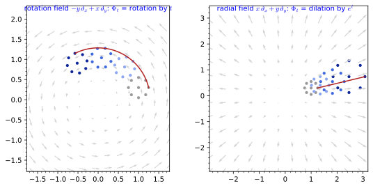
desolve. Left: the rotation field, whose flow rotates a cloud of points rigidly (grey at t = 0, darker blue at later times; the red curve is one integral curve). Right: the radial field, whose flow dilates the cloud. Generated by figures/flow_rotation.sage.
The first exercise computes a flow from its differential equation rather than guessing it. The linear system for the rotation field is solved with Sage’s desolve_system, and the answer is compared with the rotation matrices in the figure.
Exercise 327 (The flow of the rotation field) Solve \dot x = -y, \dot y = x with initial point (x_0, y_0), check the group property \Phi_s \circ \Phi_t = \Phi_{s + t} and \Phi_0 = \mathrm{id}, and find the flow of \partial_\varphi on the sphere.
\Phi_t(x_0, y_0) = (x_0\cos t - y_0\sin t, x_0\sin t + y_0\cos t), the rotation by t; composing two rotations adds the angles. On the sphere \dot\theta = 0, \dot\varphi = 1 gives (\theta_0, \varphi_0 + t):
t, s = var("t s", domain="real")
x = function("x")(t); y = function("y")(t)
x0, y0 = var("x0 y0", domain="real")
sol = desolve_system([diff(x, t) == -y, diff(y, t) == x], [x, y], ics=[0, x0, y0], ivar=t)
Phi = (sol[0].rhs(), sol[1].rhs())
print("Phi_t(x0, y0) =", Phi)
Phi_s_of_Phi_t = tuple(e.subs({x0: Phi[0], y0: Phi[1]}).subs(t=s) if False else e.subs(t=s).subs({x0: Phi[0], y0: Phi[1]}) for e in Phi)
print("group property Phi_s o Phi_t = Phi_{s+t}:", bool(all((a - b.subs(t=s + t)).simplify_full() == 0 for a, b in zip(Phi_s_of_Phi_t, Phi))))
print("Phi_0 is the identity:", [e.subs(t=0) for e in Phi] == [x0, y0])
th = function("th")(t); ph = function("ph")(t)
sol2 = desolve_system([diff(th, t) == 0, diff(ph, t) == 1], [th, ph], ics=[0, var("th0"), var("ph0")], ivar=t)
print("flow of d/dphi on the sphere: (theta, phi) ->", (sol2[0].rhs(), sol2[1].rhs()), " a rotation about the Z-axis by the angle t")Output:
Phi_t(x0, y0) = (x0*cos(t) - y0*sin(t), y0*cos(t) + x0*sin(t))
group property Phi_s o Phi_t = Phi_{s+t}: True
Phi_0 is the identity: True
flow of d/dphi on the sphere: (theta, phi) -> (th0, ph0 + t) a rotation about the Z-axis by the angle tWhen the components of the field are polynomial in the coordinates the system can often be solved one equation at a time. The second exercise treats two fields whose flows are not rotations, a shear and a field whose integral curves are parabolas.
Exercise 328 (A shear and a parabolic flow) Find the flows of y\,\partial_x and of \partial_x + x\,\partial_y on the plane, describe their integral curves, and check \Phi_0 = \mathrm{id} and \Phi_s \circ \Phi_t = \Phi_{s + t} for both.
For y\,\partial_x: \dot y = 0 gives y = y_0, then \dot x = y_0 gives \Phi_t(x_0, y_0) = (x_0 + ty_0, y_0), a shear; the integral curves are the horizontal lines, traversed at speed |y_0|, and the x-axis consists of fixed points. Composing, \Phi_s(\Phi_t(x_0, y_0)) = (x_0 + ty_0 + sy_0, y_0) = \Phi_{s + t}(x_0, y_0). For \partial_x + x\,\partial_y: \dot x = 1 gives x = x_0 + t, and \dot y = x_0 + t gives y = y_0 + x_0t + t^2/2. The integral curves are the parabolas y = x^2/2 + c. Applying \Phi_s to \Phi_t(x_0, y_0) gives x = x_0 + t + s and y = y_0 + x_0t + t^2/2 + (x_0 + t)s + s^2/2 = y_0 + x_0(s + t) + (s + t)^2/2, which is \Phi_{s + t}(x_0, y_0); at t = 0 both flows are the identity.
A field on a curved manifold is handled in a chart, where the flow equation is an ordinary differential equation for the coordinates. The third exercise integrates the meridian field of the sphere by separating variables and follows a point from the equator to the pole.
Exercise 329 (The meridian flow on the sphere) Solve \dot\theta = -\sin\theta, \dot\varphi = 0 for the field -\sin\theta\,\partial_\theta of Example 315, check the group property, and find where a point of the equator goes as t \to \pm\infty.
Separating, d\theta/\sin\theta = -dt integrates to \log\tan(\theta/2) = \log\tan(\theta_0/2) - t, so \Phi_t(\theta_0, \varphi_0) = (2\arctan(e^{-t}\tan(\theta_0/2)), \varphi_0). The group property is the statement e^{-s}e^{-t} = e^{-(s + t)} for the variable \tan(\theta/2). From the equator \theta(t) = 2\arctan e^{-t}, which tends to the north pole as t \to \infty and to the south pole as t \to -\infty; the poles are the fixed points, where the field vanishes.
t, s = var("t s", domain="real")
th0 = var("th0", domain="real"); assume(th0 > 0, th0 < pi)
# separate variables: d(theta)/sin(theta) = -dt, so log tan(theta/2) = log tan(theta0/2) - t
Phi = 2 * arctan(tan(th0 / 2) * exp(-t))
print("Phi_t(theta0) =", Phi)
print("solves d(theta)/dt = -sin(theta):", bool((diff(Phi, t) + sin(Phi)).simplify_full() == 0))
print("Phi_0 = id:", bool(Phi.subs(t=0).simplify_full() == th0))
group = Phi.subs(th0=Phi).subs(t=s) if False else Phi.subs(t=s).subs(th0=Phi)
print("Phi_s(Phi_t(theta0)) = Phi_{s+t}(theta0):", bool((tan(group / 2) - tan(Phi.subs(t=s + t) / 2)).simplify_full() == 0))
print("from the equator (theta0 = pi/2): theta(t) =", Phi.subs(th0=pi / 2), "; theta(1) = 2*arctan(exp(-1)) =", N(Phi.subs(th0=pi / 2, t=1), digits=6))
print("limit t -> +oo:", limit(Phi.subs(th0=pi / 2), t=oo), "(north pole); limit t -> -oo:", limit(Phi.subs(th0=pi / 2), t=-oo), "(south pole)")Output:
Phi_t(theta0) = 2*arctan(e^(-t)*tan(1/2*th0))
solves d(theta)/dt = -sin(theta): True
Phi_0 = id: True
Phi_s(Phi_t(theta0)) = Phi_{s+t}(theta0): True
from the equator (theta0 = pi/2): theta(t) = 2*arctan(e^(-t)) ; theta(1) = 2*arctan(exp(-1)) = 0.705027
limit t -> +oo: 0 (north pole); limit t -> -oo: pi (south pole)The examples all share an algebraic property: flowing for a time t and then for a time s is the same as flowing for s + t. The next definition takes this composition law as primary and shows that it characterises flows completely.
Definition 74 (One-parameter group of diffeomorphisms) The flow satisfies \Phi_s \circ \Phi_t = \Phi_{s + t} and \Phi_0 = \mathrm{id}, so each \Phi_t is a diffeomorphism with inverse \Phi_{-t} and t \mapsto \Phi_t is a homomorphism from (\mathbb{R}, +) to the diffeomorphisms of M: a one-parameter group of diffeomorphisms. Conversely every one-parameter group is the flow of the vector field X(p) = \frac{d}{dt}\big|_{t = 0}\Phi_t(p), its generator. (On a non-compact manifold the flow may exist only for small |t|; on compact manifolds it exists for all t.)
Veriphy. Pending.
Lean. Pending.
Sage. Pending.
For rotations the composition law is the addition formula for sine and cosine. The example also reads the definition backwards: differentiating a family of rotations at the identity recovers the rotation field, and differentiating translations recovers a constant field.
Example 316 (Rotations form a group) \Phi_s \circ \Phi_t = \Phi_{s + t} for the rotations of the plane is the addition of angles (Exercise 327); the generator of the rotation group is the rotation field, and the generator of the translations x \mapsto x + t is \partial_x.
Veriphy. Pending.
Lean. Pending.
Sage. The composition law is checked symbolically in figures/flow_rotation.sage.
For dilations the composition law is the law of exponents. This is no accident: any vector field whose components are linear in the coordinates has a flow given by a matrix exponential, and the dilations are the case of the identity matrix.
Example 317 (Dilations and the exponential) e^s e^t = e^{s + t} makes the dilations a one-parameter group with generator the radial field; this is the flow of a linear vector field X = Ax, whose flow is the matrix exponential \Phi_t = e^{tA} of The exponential map, here with A = 1.
The parenthetical caveat of the definition matters as soon as a field grows faster than linearly. On the line the field x^2\,\partial_x sends points to infinity in finite time, so its flow is only defined on a restricted range of t.
Example 318 (A flow that stops) The field x^2\,\partial_x on the line has flow \Phi_t(x) = x/(1 - tx), which escapes to infinity at t = 1/x: the one-parameter group exists only for t < 1/x. On the sphere or any compact manifold this cannot happen, since the flow of a smooth field on a compact manifold exists for all times.
Going from a one-parameter group to its generator is a differentiation, and it is the more common direction in physics, where symmetry transformations are given explicitly. The first exercise identifies the generators of three families of maps of the plane and catches one family that is not a group.
Exercise 330 (Finding the generator) Check that \Phi_t(x, y) = (x\cosh t + y\sinh t, x\sinh t + y\cosh t) and \Psi_t(x, y) = (e^tx, e^{-t}y) are one-parameter groups and find their generators. Is \Lambda_t(x, y) = (x + t^2, y) a one-parameter group?
The addition formulas \cosh(s + t) = \cosh s\cosh t + \sinh s\sinh t and \sinh(s + t) = \sinh s\cosh t + \cosh s\sinh t give \Phi_s \circ \Phi_t = \Phi_{s + t}, and \Phi_0 = \mathrm{id}; differentiating at t = 0 gives the velocity (y, x), so the generator is y\,\partial_x + x\,\partial_y, the boost of Exercise 331. For \Psi_t, e^se^t = e^{s + t} and e^{-s}e^{-t} = e^{-(s + t)}, and the generator is x\,\partial_x - y\,\partial_y, a squeeze that preserves the hyperbolas xy = c. \Lambda_s \circ \Lambda_t translates by s^2 + t^2 \neq (s + t)^2, so \Lambda is not a group; its velocity at t = 0 vanishes, and the flow of that zero generator is the identity, not \Lambda_t.
The claim of Example 317 that a linear field has the matrix exponential as its flow can be tested in Sage by solving the differential equation and exponentiating the matrix separately. The second exercise does this for three matrices whose flows look quite different: a rotation, a shear and a boost.
Exercise 331 (Linear fields and the matrix exponential) For A = \begin{pmatrix} 0 & -1 \\ 1 & 0 \end{pmatrix}, \begin{pmatrix} 0 & 1 \\ 0 & 0 \end{pmatrix} and \begin{pmatrix} 0 & 1 \\ 1 & 0 \end{pmatrix}, solve \dot x = Ax with Sage, compare with e^{tA}x_0, and check e^{sA}e^{tA} = e^{(s + t)A}.
The three exponentials are the rotation matrix \begin{pmatrix} \cos t & -\sin t \\ \sin t & \cos t \end{pmatrix}, the shear \begin{pmatrix} 1 & t \\ 0 & 1 \end{pmatrix} (the flow of y\,\partial_x in Exercise 328) and the boost \begin{pmatrix} \cosh t & \sinh t \\ \sinh t & \cosh t \end{pmatrix}, which Sage prints in terms of e^{\pm t}. In each case the solution of the differential equation agrees with e^{tA}x_0, and the group law holds because sA and tA commute:
t, s = var("t s", domain="real")
x0, y0 = var("x0 y0", domain="real")
x = function("x")(t); y = function("y")(t)
for name, A in [("rotation", matrix(QQ, [[0, -1], [1, 0]])), ("shear", matrix(QQ, [[0, 1], [0, 0]])), ("boost", matrix(QQ, [[0, 1], [1, 0]]))]:
sol = desolve_system([diff(x, t) == A[0, 0] * x + A[0, 1] * y, diff(y, t) == A[1, 0] * x + A[1, 1] * y], [x, y], ics=[0, x0, y0], ivar=t)
flow = vector([sol[0].rhs(), sol[1].rhs()])
E = (t * A).exp().apply_map(lambda e: e.rectform().simplify_full()) # real form: cos, sin, cosh, sinh
same = bool(all((a - b).simplify_full() == 0 for a, b in zip(flow, E * vector([x0, y0]))))
group = bool(all((a - b).simplify_full() == 0 for a, b in zip(((s * A).exp() * (t * A).exp()).list(), ((s + t) * A).exp().list())))
print(f"{name}: A = {A.list()}, exp(tA) = {[e.simplify_trig() for e in E.list()]}")
print(f" desolve flow equals exp(tA) (x0, y0): {same}; exp(sA) exp(tA) = exp((s+t)A): {group}")Output:
rotation: A = [0, -1, 1, 0], exp(tA) = [cos(t), -sin(t), sin(t), cos(t)]
desolve flow equals exp(tA) (x0, y0): True; exp(sA) exp(tA) = exp((s+t)A): True
shear: A = [0, 1, 0, 0], exp(tA) = [1, t, 0, 1]
desolve flow equals exp(tA) (x0, y0): True; exp(sA) exp(tA) = exp((s+t)A): True
boost: A = [0, 1, 1, 0], exp(tA) = [1/2*(e^(2*t) + 1)*e^(-t), 1/2*(e^(2*t) - 1)*e^(-t), 1/2*(e^(2*t) - 1)*e^(-t), 1/2*(e^(2*t) + 1)*e^(-t)]
desolve flow equals exp(tA) (x0, y0): True; exp(sA) exp(tA) = exp((s+t)A): TrueThe incomplete flow of Example 318 deserves a closer look, both to see that the group law survives where the flow exists and to see that the phenomenon is not special to one field. The third exercise generalises it to a field that never vanishes.
Exercise 332 (Incomplete flows) Derive the flow of x^2\,\partial_x on the line, check \Phi_s(\Phi_t(x)) = \Phi_{s + t}(x) where both sides are defined, and find the flow of (1 + x^2)\,\partial_x and the times for which it exists.
dx/x^2 = dt gives -1/x = -1/x_0 + t, so \Phi_t(x_0) = x_0/(1 - tx_0) (and \Phi_t(0) = 0). Then \Phi_s(\Phi_t(x_0)) = \dfrac{x_0/(1 - tx_0)}{1 - sx_0/(1 - tx_0)} = \dfrac{x_0}{1 - (s + t)x_0} = \Phi_{s + t}(x_0) whenever 1 - tx_0 and 1 - (s + t)x_0 are non-zero. For (1 + x^2)\,\partial_x, dx/(1 + x^2) = dt gives \Phi_t(x_0) = \tan(\arctan x_0 + t), which exists only for -\pi/2 - \arctan x_0 < t < \pi/2 - \arctan x_0, an interval of length \pi: every point reaches infinity in finite time, although the field has no zeros. On the compact circle obtained by adding the point at infinity (x = \tan(\alpha/2)) the same field is 2\,\partial_\alpha and its flow exists for all times.
The Lie derivative
To compare a tensor field with its image under a map, the tensor at the image point has to be brought back to the original point. The pullback does this: it evaluates the tensor at the moved point on the moved vectors, and it is the operation through which flows act on tensors.
Definition 75 (Pullback of a tensor field) For a diffeomorphism \Phi the pullback \Phi^* T of a type (0, s) tensor field is the tensor field evaluated at the moved point on moved vectors, (\Phi^*T)_p(X_1, \dots, X_s) = T_{\Phi(p)}(d\Phi\, X_1, \dots, d\Phi\, X_s); for a function \Phi^* f = f \circ \Phi, and for a vector field one uses the inverse, (\Phi^* X)_p = d\Phi^{-1}(X_{\Phi(p)}). In coordinates the pullback of a metric is (\Phi^*g)_{ij}(x) = g_{kl}(\Phi(x))\, \partial_i\Phi^k\, \partial_j\Phi^l.
Veriphy. Pending.
Lean. Pending.
Sage. Pending.
The pullback has already appeared without its name. The metric that a surface inherits from Euclidean space is the pullback of the Euclidean metric by the embedding, and the coordinate formula of the definition is exactly the Gram matrix formula.
Example 319 (Induced metrics are pullbacks) The induced metric of Definition 46 is the pullback E^*\delta of the Euclidean metric by the parametrisation E: the formula G_{ij} = \delta_{kl}\,\partial_iE^k\,\partial_jE^l is the coordinate pullback above, which is what SageManifolds’ pullback computes in Exercise 46.
Pulling a metric back by a map of the manifold to itself and comparing with the original is the test of whether the map is an isometry. The rotation passes the test and the dilation fails it by a constant factor.
Example 320 (Pullback by a rotation) For the rotation \Phi_t of the plane, \Phi_t^*(dx^2 + dy^2) = dx^2 + dy^2, since the Jacobian of a rotation is an orthogonal matrix; for the dilation \Phi_t, \Phi_t^*(dx^2 + dy^2) = e^{2t}(dx^2 + dy^2).
A change of chart is also a diffeomorphism, between two coordinate domains, and the transformation laws of tensor components are pullbacks by the transition map. The example connects this to the polar components computed in the previous chapter.
Example 321 (Pullback by a chart change) The transformation laws of Section 1.2.4 are pullbacks by the transition map: the polar components of dx \otimes dx in Figure 10 are the components of the pullback of dx \otimes dx by (r, \varphi) \mapsto (r\cos\varphi, r\sin\varphi).
The coordinate formula for the pullback of a metric is a matrix product J^{\mathsf{T}}gJ with the Jacobian J of the map. The first exercise applies it by hand to a shear, which turns out not to be an isometry although it preserves areas.
Exercise 333 (Pullback by a shear) Compute \Phi^*(dx^2 + dy^2) for the shear \Phi(x, y) = (x + ty, y) and for the squeeze \Psi(x, y) = (e^tx, e^{-t}y). Which of them preserve the metric, and which preserve the area form dx \wedge dy?
For the shear J = \begin{pmatrix} 1 & t \\ 0 & 1 \end{pmatrix}, so J^{\mathsf{T}}J = \begin{pmatrix} 1 & t \\ t & 1 + t^2 \end{pmatrix} and \Phi^*(dx^2 + dy^2) = dx^2 + 2t\,dx\,dy + (1 + t^2)\,dy^2. For the squeeze J = \operatorname{diag}(e^t, e^{-t}) and \Psi^*(dx^2 + dy^2) = e^{2t}dx^2 + e^{-2t}dy^2. Neither is an isometry for t \neq 0. Both preserve the area form, since \Phi^*(dx \wedge dy) = \det J\,dx \wedge dy and \det J = 1 in both cases: area-preserving maps need not preserve lengths.
On the sphere the pullback is computed in the spherical chart, and SageManifolds’ diff_map and pullback do it without writing out the Jacobian. The second exercise tests three maps of the sphere, two isometries and one map that squeezes the sphere towards the north pole.
Exercise 334 (Pullbacks on the sphere) With SageManifolds, compute the pullback of the round metric by the rotation (\theta, \varphi) \mapsto (\theta, \varphi + c), by the antipodal map (\theta, \varphi) \mapsto (\pi - \theta, \varphi + \pi) and by (\theta, \varphi) \mapsto (\theta/2, \varphi), and decide which are isometries.
The rotation leaves g_{\varphi\varphi} = \sin^2\theta unchanged, and the antipodal map uses \sin(\pi - \theta) = \sin\theta and d(\pi - \theta) = -d\theta, so both pull g back to itself (Sage writes \sin^2\theta as \tfrac12 - \tfrac12\cos 2\theta). The halving map gives \tfrac14\,d\theta^2 + \sin^2(\theta/2)\,d\varphi^2 \neq g; it maps the sphere onto the northern hemisphere, shrinking meridians by a factor 2.
M = Manifold(2, "S2", structure="Riemannian"); X = M.chart(r"th:(0,pi):\theta ph:(0,2*pi):\varphi"); th, ph = X[:]
g = M.metric("g"); g[0, 0] = 1; g[1, 1] = sin(th) ** 2
c = var("c", domain="real")
maps = {"rotation (th, ph) -> (th, ph + c)": [th, ph + c],
"antipodal (th, ph) -> (pi - th, ph + pi)": [pi - th, ph + pi],
"halving (th, ph) -> (th/2, ph)": [th / 2, ph]}
for name, comps in maps.items():
F = M.diff_map(M, comps, name="F")
h = F.pullback(g)
h.apply_map(lambda e: e.simplify_full().trig_reduce())
print(f"{name}: F^* g =", h.display(), " isometry:", h == g)Output:
rotation (th, ph) -> (th, ph + c): F^* g = F^*(g) = dth⊗dth + (-1/2*cos(2*th) + 1/2) dph⊗dph isometry: True
antipodal (th, ph) -> (pi - th, ph + pi): F^* g = F^*(g) = dth⊗dth + (-1/2*cos(2*th) + 1/2) dph⊗dph isometry: True
halving (th, ph) -> (th/2, ph): F^* g = F^*(g) = 1/4 dth⊗dth + (-1/2*cos(th) + 1/2) dph⊗dph isometry: FalsePullbacks compose in the opposite order to the maps, which is the source of several sign conventions later on. The third exercise derives this rule and uses it to show that the pullbacks along a flow themselves form a one-parameter group.
Exercise 335 (Pullbacks reverse the order) Show that (\Phi \circ \Psi)^* T = \Psi^*(\Phi^* T) for type (0, s) tensor fields, deduce \Phi_s^*\Phi_t^* = \Phi_{s + t}^* for a flow, and conclude that \frac{d}{dt}\Phi_t^*T = \Phi_t^*\big(\frac{d}{du}\big|_{u = 0} \Phi_u^* T\big).
By the chain rule d(\Phi \circ \Psi) = d\Phi\,d\Psi, so ((\Phi \circ \Psi)^*T)_p(X_1, \dots) = T_{\Phi(\Psi(p))}(d\Phi\, d\Psi\,X_1, \dots) = (\Phi^*T)_{\Psi(p)}(d\Psi\,X_1, \dots) = (\Psi^*\Phi^*T)_p(X_1, \dots). For a flow, \Phi_s \circ \Phi_t = \Phi_{s + t} = \Phi_t \circ \Phi_s, so \Phi_t^*\Phi_s^* = (\Phi_s \circ \Phi_t)^* = \Phi_{s + t}^*, and the order does not matter here because the maps commute. Differentiating \Phi_{t + u}^* T = \Phi_t^*(\Phi_u^*T) with respect to u at u = 0, and using that \Phi_t^* is linear, gives the last formula: the derivative along the flow at any time is the pullback of the derivative at time zero.
Differentiating the pullback along a flow at t = 0 gives a new tensor field of the same type, which measures how far the flow is from preserving the tensor. This is the Lie derivative, and for functions, vector fields and metrics it has explicit coordinate formulas.
Definition 76 (Lie derivative) The Lie derivative \mathcal{L}_X T of a tensor field T along X is the rate of change of T when it is dragged back along the flow of X: \mathcal{L}_X T = \frac{d}{dt}\big|_{t=0} \Phi_t^* T. For a function, \mathcal{L}_X f = X(f); for a vector field, \mathcal{L}_X Y = [X, Y], the Lie bracket Equation 15; for a metric, (\mathcal{L}_X g)_{ij} = X^k \partial_k g_{ij} + g_{kj}\, \partial_i X^k + g_{ik}\, \partial_j X^k , \tag{52} The formula follows from the pullback of Definition 75: to first order in t, \Phi_t(x) = x + tX(x), and the derivative of g_{kl}(x + tX)\,\partial_i(x^k + tX^k)\,\partial_j(x^l + tX^l) at t = 0 gives the three terms.
Veriphy. Pending.
Lean. The Lie derivative of a metric, Equation 52, is CoordinateGeometry.lieMetric.
Sage. Pending.
On functions the pullback is composition with the flow, so the Lie derivative is the chain rule at t = 0. The first example computes it for one function along the radial and the rotation fields of the plane in polar coordinates.
Example 322 (Functions) \mathcal{L}_{r\partial_r}(r^2\cos\varphi) = 2r^2\cos\varphi and \mathcal{L}_{\partial_\varphi}(r^2\cos\varphi) = - r^2\sin\varphi (Exercise 339): the Lie derivative of a function is its directional derivative.
For the metric the three terms of Equation 52 have separate meanings: the first sees how the components change along the field, the other two how the field itself varies. For the rotation field in polar coordinates all three vanish separately.
Example 323 (The rotation field and the polar metric) \mathcal{L}_{\partial_\varphi} g = 0 for the polar metric (Proposition 29): the components do not depend on \varphi and the field has constant components, so all three terms of Equation 52 vanish; rotations are isometries of the plane.
The radial field gives a non-zero answer, and the answer is proportional to the metric itself. Such fields, which rescale lengths by the same factor in all directions, have a name of their own.
Example 324 (The radial field and the polar metric) \mathcal{L}_{r\partial_r} g = 2g for the polar metric (Proposition 29, Exercise 339): the first term of Equation 52 gives r\partial_r(r^2) = 2r^2 for the \varphi\varphi component and the second and third give 2g_{rr}\partial_r(r) = 2 for the rr component. A field with \mathcal{L}_X g = 2\lambda g is a conformal Killing field; the dilation rescales lengths uniformly.
The Lie derivative of a one-form follows from the same definition, and SageManifolds computes it with lie_derivative. The first exercise checks two identities on the plane, that the Lie derivative commutes with d and that it obeys a Leibniz rule with respect to evaluation on a vector field.
Exercise 336 (Lie derivatives of one-forms) With SageManifolds, compute \mathcal{L}_X(df) for f = x^2y along the rotation field and the radial field and check that it equals d(X(f)); compute \mathcal{L}_X dx and \mathcal{L}_X dy for both fields; and check (\mathcal{L}_X\omega)(Y) = X(\omega(Y)) - \omega([X, Y]) for \omega = y^2\,dx + xy\,dy, Y = \partial_x + x\,\partial_y and X the rotation field.
\mathcal{L}_X commutes with d because pullbacks do: \Phi_t^*(df) = d(f \circ \Phi_t). Along the rotation field \mathcal{L}_X dx = -dy and \mathcal{L}_X dy = dx, the coframe rotating with the plane; along the radial field \mathcal{L}_X dx = dx and \mathcal{L}_X dy = dy, the coframe being stretched. The Leibniz identity is the statement that \mathcal{L}_X is a derivation compatible with the pairing of forms and vectors, \mathcal{L}_X(\omega(Y)) = (\mathcal{L}_X\omega)(Y) + \omega(\mathcal{L}_XY):
M = Manifold(2, "R^2"); C = M.chart("x y"); x, y = C[:]
rot = M.vector_field(-y, x, name="rot"); rad = M.vector_field(x, y, name="rad")
f = M.scalar_field(x ** 2 * y, name="f")
for name, V in [("rot", rot), ("rad", rad)]:
w = f.differential()
print(f"L_{name} df =", w.lie_derivative(V).display(), f" equals d({name}(f)):", w.lie_derivative(V) == V(f).differential())
dx = C.coframe()[0]; dy = C.coframe()[1]
print("L_rot dx =", dx.lie_derivative(rot).display(), "; L_rot dy =", dy.lie_derivative(rot).display())
print("L_rad dx =", dx.lie_derivative(rad).display(), "; L_rad dy =", dy.lie_derivative(rad).display())
w = M.one_form(y ** 2, x * y, name="w"); Y = M.vector_field(1, x, name="Y")
lhs = w.lie_derivative(rot)(Y); rhs = rot(w(Y)) - w(rot.bracket(Y))
print("(L_rot w)(Y) = rot(w(Y)) - w([rot, Y]):", lhs == rhs)Output:
L_rot df = (3*x^2 - 2*y^2) dx - 4*x*y dy equals d(rot(f)): True
L_rad df = 6*x*y dx + 3*x^2 dy equals d(rad(f)): True
L_rot dx = -dy ; L_rot dy = dx
L_rad dx = dx ; L_rad dy = dy
(L_rot w)(Y) = rot(w(Y)) - w([rot, Y]): TrueThe coordinate formula Equation 52 was only sketched in the definition. The second exercise asks for the full first-order expansion, and for the analogous formula for one-forms, which follows from the same calculation with a single index.
Exercise 337 (Deriving the coordinate formulas) Expand (\Phi_t^*g)_{ij}(x) = g_{kl}(\Phi_t(x))\,\partial_i\Phi_t^k\,\partial_j\Phi_t^l to first order in t with \Phi_t(x) = x + tX(x) + O(t^2) and obtain Equation 52. Then show that for a one-form (\mathcal{L}_X\omega)_i = X^k\partial_k\omega_i + \omega_k\,\partial_iX^k.
To first order, g_{kl}(x + tX) = g_{kl}(x) + tX^m\partial_m g_{kl} and \partial_i\Phi_t^k = \delta_i^k + t\,\partial_iX^k. The product is g_{ij} + t\big(X^m\partial_m g_{ij} + g_{kj}\,\partial_iX^k + g_{ik}\,\partial_jX^k \big) + O(t^2), whose t-derivative at 0 is Equation 52. For a one-form, (\Phi_t^*\omega)_i = \omega_k(\Phi_t(x))\,\partial_i\Phi_t^k = \omega_i + t\big(X^m\partial_m\omega_i + \omega_k\,\partial_iX^k\big) + O(t^2). Check: for \omega = dx and X = -y\,\partial_x + x\,\partial_y, the only non-zero term is \omega_x \partial_iX^x = \partial_i(-y), giving -dy, as in Exercise 336.
On vector fields the Lie derivative is the bracket, and the bracket of vector fields satisfies the Jacobi identity, which makes the vector fields a Lie algebra. The third exercise checks this on three fields of the plane with SageManifolds and then asks why it holds in general.
Exercise 338 (The Jacobi identity) Check with SageManifolds that the rotation field, the radial field and C = \partial_x + x^2\,\partial_y on the plane satisfy [A, [B, C]] + [B, [C, A]] + [C, [A, B]] = 0, and that the bracket is antisymmetric.
M = Manifold(2, "R^2"); X = M.chart("x y"); x, y = X[:]
A = M.vector_field(-y, x, name="A") # rotation
B = M.vector_field(x, y, name="B") # dilation
C = M.vector_field(1, x**2, name="C") # a field without symmetry
jac = A.bracket(B.bracket(C)) + B.bracket(C.bracket(A)) + C.bracket(A.bracket(B))
print("[A, B] =", A.bracket(B).display())
print("[A, C] =", A.bracket(C).display())
print("Jacobi identity [A,[B,C]] + [B,[C,A]] + [C,[A,B]] = 0:", jac == 0)
print("antisymmetry [C, A] = -[A, C]:", C.bracket(A) == -A.bracket(C))Output:
[A, B] = [A,B] = 0
[A, C] = [A,C] = x^2 ∂/∂x + (-2*x*y - 1) ∂/∂y
Jacobi identity [A,[B,C]] + [B,[C,A]] + [C,[A,B]] = 0: True
antisymmetry [C, A] = -[A, C]: TrueThe Jacobi identity holds for all vector fields, because [X, Y](f) = X(Y(f)) - Y(X(f)) and the three cyclic terms of X(Y(Z(f))) cancel in pairs; it makes the vector fields on a manifold a Lie algebra (Lie algebras), infinite-dimensional in general.
The two Lie derivatives of the polar metric computed in the examples are the first results of the chapter stated as a proposition. They are evaluated from the coordinate formula Equation 52, component by component.
Proposition 29 (Lie derivatives of the polar metric) \mathcal{L}_{\partial_\varphi} g = 0 and \mathcal{L}_{r\partial_r} g = 2g for g = dr^2 + r^2 d\varphi^2.
Veriphy. Pending.
Lean. KaluzaKlein.Geometry.rotPolar_lieMetric and KaluzaKlein.Geometry.radPolar_lieMetric, from Equation 52.
/-- `L_{r ∂_r} g = 2 g` for the polar metric: the dilation rescales the metric. -/
theorem radPolar_lieMetric (i j : Fin 2) (x : Fin 2 → ℝ) : lieMetric polar radPolar i j x = 2 * polar i j xKaluzaKlein.Geometry.radPolar_lieMetric in KaluzaKlein/Geometry/Flows.lean, namespace KaluzaKlein.Geometry
Sage. Pending.
The Lie derivative is a tensor, so the result cannot depend on the chart. In Cartesian coordinates the metric components are constant and only the derivatives of the field contribute, which gives an independent check of both statements.
Example 325 (The same result in Cartesian coordinates) With g_{ij} = \delta_{ij}, Equation 52 reduces to (\mathcal{L}_Xg)_{ij} = \partial_iX^j + \partial_jX^i. For the rotation field X = (-y, x) the matrix \partial_iX^j is \begin{pmatrix} 0 & 1 \\ -1 & 0 \end{pmatrix}, which is antisymmetric, so \mathcal{L}_Xg = 0; for the radial field X = (x, y) it is the identity, so \mathcal{L}_Xg = 2\delta_{ij} = 2g, as in polar coordinates.
The proposition is a statement at t = 0, but it determines the pullback for all times. Combining it with the composition rule for pullbacks gives a differential equation for \Phi_t^*g whose solution recovers the pullbacks of Example 320.
Example 326 (From the Lie derivative to the flow) By Exercise 335, \frac{d}{dt}\Phi_t^*g = \Phi_t^*\mathcal{L}_Xg. For the radial field this is \frac{d}{dt}\Phi_t^*g = 2\Phi_t^*g, so \Phi_t^*g = e^{2t}g: the dilation by e^t multiplies squared lengths by e^{2t}. For the rotation field \frac{d}{dt}\Phi_t^*g = 0, so \Phi_t^*g = g for all t: the infinitesimal statement \mathcal{L}_Xg = 0 already implies that every \Phi_t is an isometry.
The Lie derivative is linear in the field, so the two results combine. A combination of rotation and dilation generates a spiral flow, and its Lie derivative is read off from the proposition without further calculation.
Example 327 (Spiral flows) For X = a\,\partial_\varphi + b\,r\partial_r, linearity gives \mathcal{L}_Xg = 2b\,g. The flow is (r, \varphi) \mapsto (e^{bt}r, \varphi + at), whose integral curves are logarithmic spirals r = r_0e^{(b/a)(\varphi - \varphi_0)}; it is a conformal map for every a, b and an isometry exactly when b = 0.
The first exercise reproduces the two Lie derivatives of the proposition with SageManifolds, together with the Lie derivatives of a function and of a vector field. It is the computer-algebra counterpart of the hand computations.
Exercise 339 (Lie derivatives with SageManifolds) Compute \mathcal{L}_X g for the polar metric along \partial_\varphi and along r\partial_r with lie_derivative, and the Lie derivatives of a function and of the field \partial_r along both.
M = Manifold(2, "R^2", structure="Riemannian"); U = M.open_subset("U")
pol = U.chart(r"r:(0,+oo) ph:(0,2*pi):\varphi"); r, ph = pol[:]
g = U.metric("g"); g[0, 0] = 1; g[1, 1] = r**2
rot = U.vector_field(0, 1, name="rot") # d/dphi
rad = U.vector_field(r, 0, name="rad") # r d/dr
print("L_rot g =", g.lie_derivative(rot).display())
print("L_rad g =", g.lie_derivative(rad).display(), " = 2 g:", g.lie_derivative(rad) == 2 * g)
f = U.scalar_field(r**2 * cos(ph), name="f")
print("L_rad f = rad(f) =", f.lie_derivative(rad).expr(), "; L_rot f =", f.lie_derivative(rot).expr())
Y = U.vector_field(1, 0, name="Y") # d/dr
print("L_rot Y = [rot, Y] =", Y.lie_derivative(rot).display(), "; L_rad Y = [rad, Y] =", Y.lie_derivative(rad).display())Output:
L_rot g = 0
L_rad g = 2 dr⊗dr + 2*r^2 dph⊗dph = 2 g: True
L_rad f = rad(f) = 2*r^2*cos(ph) ; L_rot f = -r^2*sin(ph)
L_rot Y = [rot, Y] = 0 ; L_rad Y = [rad, Y] = -∂/∂rVeriphy. Pending.
Lean.
/-- `L_{∂_φ} g = 0` for the polar metric: the rotation is an isometry. -/
theorem rotPolar_lieMetric (i j : Fin 2) (x : Fin 2 → ℝ) : lieMetric polar rotPolar i j x = 0KaluzaKlein.Geometry.rotPolar_lieMetric in KaluzaKlein/Geometry/Flows.lean, namespace KaluzaKlein.Geometry
Sage. Pending.
The definition of the Lie derivative as the derivative of the pullback can also be checked directly, without the coordinate formula. The second exercise pulls the Euclidean metric back along the rotation and the dilation in Cartesian coordinates and differentiates at t = 0.
Exercise 340 (The Lie derivative from the pullback) With SageManifolds, compute \Phi_t^*g for the flows of the rotation field and of the radial field of the Euclidean plane, differentiate at t = 0, and compare with g.lie_derivative(X).
\Phi_t^*g = g for the rotation and e^{2t}g for the dilation, as found in Example 326; their derivatives at t = 0 are 0 and 2g, which are the Lie derivatives:
t = var("t", domain="real")
M = Manifold(2, "R^2", structure="Riemannian"); C = M.chart("x y"); x, y = C[:]
g = M.metric("g"); g[0, 0] = 1; g[1, 1] = 1
fields = {"rotation": (M.vector_field(-y, x), [x * cos(t) - y * sin(t), x * sin(t) + y * cos(t)]),
"dilation": (M.vector_field(x, y), [exp(t) * x, exp(t) * y])}
for name, (V, comps) in fields.items():
Phi = M.diff_map(M, comps, name="Phi")
pb = Phi.pullback(g)
pb.apply_map(lambda e: e.simplify_full())
deriv = [[diff(pb[i, j].expr(), t).subs(t=0) for j in range(2)] for i in range(2)]
L = g.lie_derivative(V)
print(f"{name}: Phi_t^* g =", pb.display())
print(f" d/dt|0 Phi_t^* g = {deriv}; L_X g = {[[L[i, j].expr() for j in range(2)] for i in range(2)]}; equal:",
all(bool(deriv[i][j] == L[i, j].expr()) for i in range(2) for j in range(2)))Output:
rotation: Phi_t^* g = Phi^*(g) = dx⊗dx + dy⊗dy
d/dt|0 Phi_t^* g = [[0, 0], [0, 0]]; L_X g = [[0, 0], [0, 0]]; equal: True
dilation: Phi_t^* g = Phi^*(g) = e^(2*t) dx⊗dx + e^(2*t) dy⊗dy
d/dt|0 Phi_t^* g = [[2, 0], [0, 2]]; L_X g = [[2, 0], [0, 2]]; equal: TrueRotations and dilations are special among the fields of the plane. The third exercise determines all radial fields f(r)\,\partial_r and all angular fields h(r)\,\partial_\varphi that are conformal or Killing, and shows that the proposition lists essentially all of them.
Exercise 341 (Which radial and angular fields are symmetries?) For the polar metric, compute \mathcal{L}_Xg for X = f(r)\,\partial_r and for X = h(r)\,\partial_\varphi. Find all f for which \mathcal{L}_Xg = 2\lambda g with constant \lambda, and all h for which \mathcal{L}_Xg = 0.
For X = f(r)\,\partial_r, Equation 52 gives (\mathcal{L}_Xg)_{rr} = 2f', (\mathcal{L}_Xg)_{\varphi\varphi} = f\,\partial_r(r^2) = 2rf and (\mathcal{L}_Xg)_{r\varphi} = 0. The condition \mathcal{L}_Xg = 2\lambda g reads f' = \lambda and 2rf = 2\lambda r^2, so f = \lambda r: only multiples of the radial field, and the Killing case \lambda = 0 forces f = 0. For X = h(r)\,\partial_\varphi the only non-zero term is (\mathcal{L}_Xg)_{r\varphi} = g_{\varphi\varphi}\,\partial_rh = r^2h', so X is Killing iff h is constant: a rigid rotation. A field with h' \neq 0 turns circles of different radii at different rates, a differential rotation that shears the plane.
Killing vectors
An isometry of a metric is a symmetry of the geometry. When the isometries come in a continuous family, each one-parameter family is generated by a vector field, and the condition that the flow of the field preserves the metric is a linear differential equation on the field: Killing’s equation. The Killing vectors of an internal space are the heart of Kaluza-Klein theory, where each Killing vector of S^2 becomes a gauge field and the Lie algebra they generate becomes the gauge algebra. This section defines them and computes them for the plane, the circle and the sphere, where they are the three rotation generators.
Killing’s equation
A flow consists of isometries exactly when the pullback of the metric does not change along it, and by Example 326 this is decided by the Lie derivative at t = 0. The definition below turns this observation into a linear first-order equation for the components of the field.
Definition 77 (Killing vector field) A vector field K is a Killing vector field of the metric g if \mathcal{L}_K g = 0, that is, if its flow consists of isometries (Definition 49). By Equation 52 this is Killing’s equation, K^k \partial_k g_{ij} + g_{kj}\, \partial_i K^k + g_{ik}\, \partial_j K^k = 0 , \tag{53} equivalently \nabla_i K_j + \nabla_j K_i = 0 with the Levi-Civita connection.
Veriphy. Pending.
Lean. IsKilling g K states Equation 53 for all components and points.
Sage. Pending.
For a metric with constant components the first term of Killing’s equation drops out, and what remains says that the matrix of derivatives of the field is antisymmetric. On the plane this leaves exactly three independent solutions.
Example 328 (Killing vectors of the plane) For the Euclidean plane, g_{ij} = \delta_{ij} is constant and Equation 53 reads \partial_i K_j + \partial_j K_i = 0: the solutions are the translations \partial_x, \partial_y and the rotation x\partial_y - y\partial_x (Exercise 342); the dilation x\partial_x + y\partial_y is not Killing, since \mathcal{L} g = 2g (Proposition 29).
In one dimension Killing’s equation is a single ordinary differential equation, and its solutions are as few as possible. The circle has only its rotations as continuous isometries.
Example 329 (The circle) The circle has g_{\varphi\varphi} = 1 constant and Equation 53 gives \partial_\varphi K^\varphi = 0, so K = c\, \partial_\varphi (Exercise 342): the only isometries are the rotations, the group U(1), which is the gauge group of Part III.
On the sphere the metric components depend on \theta, so the first term of Killing’s equation is present. For the field \partial_\varphi it still vanishes, because nothing depends on \varphi, and the field is Killing for the same reason as the rotation of the plane.
Example 330 (The rotation field of the sphere) For K_3 = \partial_\varphi on the round sphere, Killing’s equation is immediate: K_3^k \partial_k g_{ij} = \partial_\varphi g_{ij} = 0 and the components of K_3 are constant, so every term of Equation 53 vanishes (Proposition 30). Its flow is the rotation about the Z-axis.
The first exercise confirms the examples of the plane and the circle with SageManifolds. For the circle it takes an arbitrary function as the component of the field and reads off the condition from the Lie derivative of the metric.
Exercise 342 (Killing vectors of the plane and the circle) With SageManifolds’ lie_derivative, check which of \partial_x, \partial_y, x\partial_y - y\partial_x and x\partial_x are Killing fields of the Euclidean plane, and find the Killing fields of the circle.
M = Manifold(2, "R^2", structure="Riemannian"); X = M.chart("x y"); x, y = X[:]
g = M.metric("g"); g[0, 0] = 1; g[1, 1] = 1
fields = {"d/dx": M.vector_field(1, 0), "d/dy": M.vector_field(0, 1), "x d/dy - y d/dx": M.vector_field(-y, x), "x d/dx (dilation)": M.vector_field(x, 0)}
for name, V in fields.items():
print(f"L_({name}) g =", g.lie_derivative(V).display(), " -> Killing:", g.lie_derivative(V) == 0)
S1 = Manifold(1, "S^1", structure="Riemannian"); U = S1.open_subset("U"); c = U.chart("ph:(0,2*pi)"); ph = c[0]
h = U.metric("h"); h[0, 0] = 1
K = U.vector_field(function("k")(ph), name="K")
print("on the circle, L_K h =", h.lie_derivative(K).display(), " -> K is Killing iff k'(phi) = 0: K = const d/dphi")Output:
L_(d/dx) g = 0 -> Killing: True
L_(d/dy) g = 0 -> Killing: True
L_(x d/dy - y d/dx) g = 0 -> Killing: True
L_(x d/dx (dilation)) g = 2 dx⊗dx -> Killing: False
on the circle, L_K h = 2*d(k)/dph dph⊗dph -> K is Killing iff k'(phi) = 0: K = const d/dphiKilling’s equation applies equally to metrics that are not positive definite. The second exercise treats the two-dimensional Minkowski plane with the book’s signature, where a boost replaces the rotation and the conserved quadratic form is t^2 - x^2.
Exercise 343 (Killing vectors of the Minkowski plane) For ds^2 = dt^2 - dx^2, check with SageManifolds that \partial_t, \partial_x and the boost x\,\partial_t + t\,\partial_x are Killing and that x\,\partial_t - t\,\partial_x is not. Find the flow of the boost and show that it preserves t^2 - x^2.
With \eta = \operatorname{diag}(1, -1), Equation 53 for constant components reads \eta_{kj}\partial_iK^k + \eta_{ik}\partial_jK^k = 0. For K = (x, t) the tx component is \eta_{tt}\partial_xK^t + \eta_{xx}\partial_tK^x = 1 - 1 = 0, and the diagonal components vanish because \partial_tK^t = \partial_xK^x = 0. For (x, -t) the tx component is 1 + 1 = 2: the Euclidean rotation is not a symmetry of Minkowski space. The flow of the boost solves \dot t = x, \dot x = t, so (t, x) \mapsto (t\cosh w + x\sinh w, t\sinh w + x\cosh w) with rapidity w, and \cosh^2w - \sinh^2w = 1 gives the invariance of t^2 - x^2:
M = Manifold(2, "M2", structure="Lorentzian"); C = M.chart("t x"); t, x = C[:]
eta = M.metric("eta", signature=0); eta[0, 0] = 1; eta[1, 1] = -1
fields = {"d/dt": M.vector_field(1, 0), "d/dx": M.vector_field(0, 1), "boost x d/dt + t d/dx": M.vector_field(x, t),
"x d/dt - t d/dx": M.vector_field(x, -t)}
for name, V in fields.items():
L = eta.lie_derivative(V)
print(f"L_({name}) eta =", L.display(), " -> Killing:", L == 0)
w = var("w", domain="real")
tb, xb = t * cosh(w) + x * sinh(w), t * sinh(w) + x * cosh(w) # flow of the boost by rapidity w
print("boost flow solves d/dw (t, x) = (x, t):", bool(diff(tb, w) == xb and diff(xb, w) == tb))
print("t^2 - x^2 is preserved:", bool((tb ** 2 - xb ** 2 - (t ** 2 - x ** 2)).simplify_full() == 0))Output:
L_(d/dt) eta = 0 -> Killing: True
L_(d/dx) eta = 0 -> Killing: True
L_(boost x d/dt + t d/dx) eta = 0 -> Killing: True
L_(x d/dt - t d/dx) eta = 2 dt⊗dx + 2 dx⊗dt -> Killing: False
boost flow solves d/dw (t, x) = (x, t): True
t^2 - x^2 is preserved: TrueThe examples found three Killing fields of the plane, but did not show that there are no others. The third exercise solves Killing’s equation in full on \mathbb{R}^n and counts the solutions.
Exercise 344 (All Killing fields of Euclidean space) Show that every solution of \partial_iK_j + \partial_jK_i = 0 on \mathbb{R}^n satisfies \partial_i\partial_jK_k = 0, deduce K_i = a_i + \omega_{ij}x^j with \omega_{ij} = -\omega_{ji} constant, and count the independent Killing fields.
Write S_{ijk} = \partial_i\partial_jK_k, symmetric in i, j and, by Killing’s equation differentiated once, antisymmetric in j, k. A tensor with these two symmetries vanishes: S_{ijk} = -S_{ikj} = -S_{kij} = S_{kji} = S_{jki} = -S_{jik} = -S_{ijk}, alternately using each symmetry. So K is affine, K_i = a_i + \omega_{ij}x^j, and Killing’s equation gives \omega_{ij} + \omega_{ji} = 0. The parameters are the n numbers a_i (translations) and the n(n - 1)/2 independent entries of \omega (rotations), n(n + 1)/2 in total: 3 for the plane, 6 for \mathbb{R}^3, the maximum of Definition 79.
The Killing vectors of the sphere
The round sphere is rotationally symmetric, so the rotation generators of \mathbb{R}^3 restricted to the sphere should be its Killing fields. The rotation about the Z-axis moves \varphi at unit rate and is \partial_\varphi; the other two are obtained by writing the vector fields \xi_a = \epsilon_{abc}\, x^b \partial_c of \mathbb{R}^3 (the velocity fields of rotations about the three axes) in spherical coordinates (Exercise 345): K_1 = -\sin\varphi\, \partial_\theta - \frac{\cos\theta}{\sin\theta}\cos\varphi\, \partial_\varphi, \qquad K_2 = \cos\varphi\, \partial_\theta - \frac{\cos\theta}{\sin\theta}\sin\varphi\, \partial_\varphi, \qquad K_3 = \partial_\varphi . \tag{54}
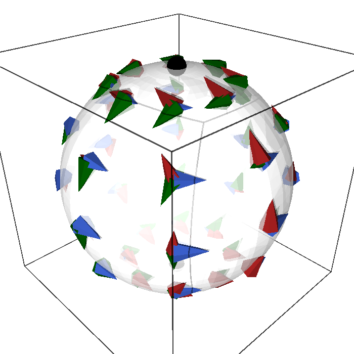
figures/s2_killing.sage.
Interactive figure (drag to rotate or zoom); the static version is above.
The interactive version adds, in the colour of each field, five of its integral curves: the circles about the corresponding axis, along which the flow of the field rotates the sphere, and the two points where the axis pierces it.
For K_1 we check the three components of Equation 53 explicitly, with K_1^\theta = -\sin\varphi, K_1^\varphi = - \cot\theta\cos\varphi: \begin{aligned} (\mathcal{L}_{K_1} g)_{\theta\theta} &= 0 + 2 g_{\theta\theta}\, \partial_\theta K_1^\theta = 0, \\ (\mathcal{L}_{K_1} g)_{\theta\varphi} &= 0 + g_{\varphi\varphi}\, \partial_\theta K_1^\varphi + g_{\theta\theta}\, \partial_\varphi K_1^\theta = \sin^2\theta \cdot \frac{\cos\varphi}{\sin^2\theta} - \cos\varphi = 0, \\ (\mathcal{L}_{K_1} g)_{\varphi\varphi} &= K_1^\theta \partial_\theta(\sin^2\theta) + 2 g_{\varphi\varphi}\, \partial_\varphi K_1^\varphi = -\sin\varphi \cdot 2\sin\theta\cos\theta + 2\sin^2\theta \cdot \frac{\cos\theta}{\sin\theta}\sin\varphi = 0 , \end{aligned} \tag{55} using \partial_\theta(\cot\theta) = -1/\sin^2\theta in the second line. K_2 is K_1 with \varphi shifted by \pi/2, so the same computation applies.
Proposition 30 (The rotation generators are Killing vectors) The three fields Equation 54 satisfy Killing’s equation for the round metric: K_3 everywhere, and K_1, K_2 on the chart domain \sin\theta \neq 0.
Veriphy. Recipe coordinate_geometry (certificate for killingZ_isKilling); the other statements pending.
Lean. KaluzaKlein.Geometry.killingZ_isKilling, KaluzaKlein.Geometry.killingX_lieMetric and KaluzaKlein.Geometry.killingY_lieMetric (each component of the Lie derivative).
/-- The Lie derivative of the round metric along `K₁` vanishes on the chart domain. -/
theorem killingX_lieMetric (i j : Fin 2) (x : Fin 2 → ℝ) (h : Real.sin (x 0) ≠ 0) :
lieMetric sphere killingX i j x = 0KaluzaKlein.Geometry.killingX_lieMetric in KaluzaKlein/Geometry/Killing.lean, namespace KaluzaKlein.Geometry
Sage. Pending.
The proposition is about the infinitesimal generators, and the flows behind them are the rotations of the sphere. For K_1 the flow is easiest to describe in the ambient space, where it is a rotation matrix acting on the unit vectors.
Example 331 (The flow of K_1) The ambient field of K_1 is \xi_1 = y\,\partial_z - z\,\partial_y, with velocity (0, -z, y) at the point (x, y, z). Its flow is the rotation about the X-axis, (x, y, z) \mapsto (x, y\cos t - z\sin t, y\sin t + z\cos t), and its integral curves are the circles x = \text{const} (Figure 22, interactive version). In the spherical chart the same flow is complicated, since it moves points through the poles where the chart fails; this is why the proposition holds for K_1 only on the chart domain.
Not every natural field on the sphere is Killing. The gradient of the height function z = \cos\theta, the meridian field of Exercise 329 up to sign, gives a Lie derivative proportional to the metric with a non-constant factor.
Example 332 (A conformal field that is not Killing) For X = -\sin\theta\,\partial_\theta, Equation 52 gives (\mathcal{L}_Xg)_{\theta\theta} = 2\partial_\theta( - \sin\theta) = -2\cos\theta and (\mathcal{L}_Xg)_{\varphi\varphi} = -\sin\theta \cdot 2\sin\theta\cos\theta = -2\cos\theta\sin^2\theta, so \mathcal{L}_Xg = -2\cos\theta\,g. The field is conformal, with a factor that varies over the sphere: its flow pushes points to the north pole, shrinking the northern hemisphere and stretching the southern one (Exercise 347).
Killing’s equation is linear in the metric as well as in the field. Rescaling the metric by a constant therefore changes nothing, and the sphere of any radius has the same Killing fields as the unit sphere.
Example 333 (Spheres of any radius) For g_R = R^2(d\theta^2 + \sin^2\theta\,d\varphi^2), \mathcal{L}_{K_a}g_R = R^2\mathcal{L}_{K_a}g = 0: the three fields Equation 54 are Killing for every radius. The same holds for the negative-definite internal metric -R^2(d\theta^2 + \sin^2\theta\,d\varphi^2) of Prerequisites and conventions, so the Killing fields of an internal sphere do not depend on its size or on the sign convention.
The fields Equation 54 were stated, not derived. The first exercise derives them from the ambient rotation generators by solving for their components in the basis \partial_\theta, \partial_\varphi.
Exercise 345 (Rotation generators in spherical coordinates) Write the fields \xi_1 = y\,\partial_z - z\,\partial_y, \xi_2 = z\,\partial_x - x\,\partial_z, \xi_3 = x\,\partial_y - y\,\partial_x of \mathbb{R}^3 in spherical coordinates on the unit sphere, by solving J\,(K^\theta, K^\varphi)^{\mathsf{T}} = \xi with the Jacobian Equation 9.
Since \xi_a is tangent to the sphere it is a combination of the columns \partial_\theta E and \partial_\varphi E, and the coefficients are found with the Gram matrix: (K^\theta, K^\varphi)^{\mathsf{T}} = G^{-1} J^{\mathsf{T}} \xi. For \xi_3 = (-y, x, 0) = (-\sin\theta\sin\varphi, \sin\theta\cos\varphi, 0) = \partial_\varphi E the answer is K_3 = \partial_\varphi by inspection. For \xi_1 = (0, -z, y) = (0, -\cos\theta, \sin\theta\sin\varphi), J^{\mathsf{T}}\xi_1 = (-\cos^2\theta\sin\varphi - \sin^2\theta\sin\varphi,\ -\sin\theta\cos\theta\cos\varphi) = (-\sin\varphi, -\sin\theta\cos\theta\cos\varphi) and dividing by G = \operatorname{diag}(1, \sin^2\theta) gives K_1 = (-\sin\varphi, -\cot\theta\cos\varphi). In Sage, for all three:
th, ph = var('th ph', domain='real')
E = vector([sin(th)*cos(ph), sin(th)*sin(ph), cos(th)]); J = jacobian(E, (th, ph))
def eps(i, j, k): return Permutation([i+1, j+1, k+1]).sign() if len({i, j, k}) == 3 else 0
for a in range(3):
xi = vector([sum(eps(a, b, c)*E[b] for b in range(3)) for c in range(3)]) # xi_a = eps_abc x^b d_c at the point E
comps = ((J.transpose()*J).inverse()*J.transpose()*xi).apply_map(lambda e: e.simplify_full().trig_reduce())
print(f"K_{a+1} = ({comps[0]}) d_theta + ({comps[1]}) d_phi ; tangent to the sphere:", bool(all(e.simplify_full() == 0 for e in J*comps - xi)))Output:
K_1 = (-sin(ph)) d_theta + (-cos(ph)*cot(th)) d_phi ; tangent to the sphere: True
K_2 = (cos(ph)) d_theta + (-cot(th)*sin(ph)) d_phi ; tangent to the sphere: True
K_3 = (0) d_theta + (1) d_phi ; tangent to the sphere: TrueThe figure shows that each field vanishes at two antipodal points. The second exercise computes the lengths of the three fields with the metric and locates their zeros, which are the fixed points of the corresponding rotations.
Exercise 346 (Where the Killing fields vanish) Compute |K_a|^2 = g_{ij}K_a^i K_a^j for the three fields and find their zeros.
|K_3|^2 = \sin^2\theta, vanishing at the poles, the points where the Z-axis meets the sphere. By the rotational symmetry, |K_1|^2 = \sin^2\varphi + \cos^2\theta\cos^2\varphi = 1 - \sin^2\theta\cos^2\varphi = 1 - x^2 and |K_2|^2 = 1 - y^2, vanishing on the X- and Y-axes. A Killing field vanishes exactly at the fixed points of its isometries. In SageManifolds:
import os, sys; sys.path.insert(0, os.path.dirname(os.path.abspath(__file__))); from _curvature import *
M, X, g = chart_metric('th ph', lambda c: [[1, 0], [0, sin(c[0])**2]], ranges='th:(0,pi) ph:(0,2*pi)')
th, ph = X[:]
K = [M.vector_field(-sin(ph), -cos(th)/sin(th)*cos(ph)), M.vector_field(cos(ph), -cos(th)/sin(th)*sin(ph)), M.vector_field(0, 1)]
for a in range(3):
print(f"|K_{a+1}|^2 = g(K, K) =", g(K[a], K[a]).expr().simplify_full().trig_expand().simplify_full())Output:
|K_1|^2 = g(K, K) = cos(ph)^2*cos(th)^2 + sin(ph)^2
|K_2|^2 = g(K, K) = cos(th)^2*sin(ph)^2 + cos(ph)^2
|K_3|^2 = g(K, K) = sin(th)^2The conformal field of Example 332 has two companions obtained by rotating it. The third exercise computes the gradients of all three coordinate functions with SageManifolds and finds a uniform formula for their Lie derivatives, in contrast with the vanishing Lie derivatives of the Killing fields.
Exercise 347 (Conformal Killing fields of the sphere) With SageManifolds, compute the gradients \operatorname{grad}x, \operatorname{grad}y, \operatorname{grad}z of the coordinate functions restricted to the sphere, show that \mathcal{L}_{\operatorname{grad}f}g = -2f\,g for f = x, y, z, and check \mathcal{L}_{K_a}g = 0 for the three Killing fields.
\operatorname{grad}z = -\sin\theta\,\partial_\theta reproduces Example 332, and the other two are its rotated versions. The factor -2f is not constant, so these fields are conformal but not homothetic, and together with the three Killing fields they span the six-dimensional algebra of conformal Killing fields of S^2 (the Lie algebra of the Möbius group). The formula follows from \nabla_i\nabla_jf = -f\,g_{ij} for the restrictions of linear functions, since \mathcal{L}_{\operatorname{grad}f}g_{ij} = 2\nabla_i\nabla_jf:
M = Manifold(2, "S2", structure="Riemannian"); C = M.chart(r"th:(0,pi):\theta ph:(0,2*pi):\varphi"); th, ph = C[:]
g = M.metric("g"); g[0, 0] = 1; g[1, 1] = sin(th) ** 2
coords = {"x": sin(th) * cos(ph), "y": sin(th) * sin(ph), "z": cos(th)}
for name, F in coords.items():
f = M.scalar_field(F, name=name)
X = f.gradient(g)
L = g.lie_derivative(X)
print(f"grad {name} =", X.display(), f"; L_grad({name}) g = -2 {name} g:", L == -2 * f * g)
K = [M.vector_field(-sin(ph), -cos(th) / sin(th) * cos(ph)), M.vector_field(cos(ph), -cos(th) / sin(th) * sin(ph)), M.vector_field(0, 1)]
print("L_K_a g = 0 for a = 1, 2, 3:", [g.lie_derivative(k) == 0 for k in K])Output:
grad x = grad_g(x) = cos(ph)*cos(th) ∂/∂th - sin(ph)/sin(th) ∂/∂ph ; L_grad(x) g = -2 x g: True
grad y = grad_g(y) = cos(th)*sin(ph) ∂/∂th + cos(ph)/sin(th) ∂/∂ph ; L_grad(y) g = -2 y g: True
grad z = grad_g(z) = -sin(th) ∂/∂th ; L_grad(z) g = -2 z g: True
L_K_a g = 0 for a = 1, 2, 3: [True, True, True]The isometry algebra
The Killing fields of a metric are not just a vector space: the bracket of two of them is again one. The definition below records this and names the resulting Lie algebra, which for the sphere will turn out to be \mathfrak{so}(3).
Definition 78 (Isometry algebra) The bracket of two Killing fields is a Killing field, since \mathcal{L}_{[X, Y]} = \mathcal{L}_X\mathcal{L}_Y - \mathcal{L}_Y\mathcal{L}_X, so the Killing fields of a metric form a Lie algebra (Lie algebras) under the Lie bracket, the isometry algebra of g: the Lie algebra of the isometry group.
Veriphy. Pending.
Lean. Pending.
Sage. Pending.
The plane is the first case, with its two translations and one rotation. Their brackets show that the translations commute with each other while the rotation turns one translation into the other.
Example 334 (The Euclidean algebra) The translations and the rotation of the plane satisfy [\partial_x, \partial_y] = 0, [x\partial_y - y\partial_x, \partial_x] = -\partial_y, [x\partial_y - y\partial_x, \partial_y] = \partial_x: the Lie algebra of the Euclidean group E(2) of rigid motions of the plane, three-dimensional (Exercise 348).
On the sphere the three Killing fields have components that depend on both coordinates, and all three brackets are non-zero. They close on the same three fields, with the structure constants of the rotation algebra.
Example 335 (\mathfrak{so}(3)) The brackets of the three fields Equation 54, computed with Equation 15, close: [K_1, K_2] = -K_3, \qquad [K_2, K_3] = -K_1, \qquad [K_3, K_1] = -K_2 . \tag{56} For instance, the \theta-component of [K_2, K_3] is K_2^l \partial_l K_3^\theta - K_3^l \partial_l K_2^\theta = 0 - \partial_\varphi(\cos\varphi) = \sin\varphi = -K_1^\theta, and the \varphi-component is 0 - \partial_\varphi(-\cot\theta\sin\varphi) = \cot\theta\cos\varphi = -K_1^\varphi (Proposition 31, Exercise 351). The structure constants are -\epsilon_{abc}: the isometry algebra of the sphere is \mathfrak{so}(3) (Lie algebras).
The minus sign in these brackets is opposite to the sign of the matrix generators of the rotation algebra. The third example explains where it comes from and why the book keeps it.
Example 336 (The sign of the brackets) The Killing fields represent \mathfrak{so}(3) with the opposite sign to the matrices L_a of Lie algebras, whose brackets are [L_a, L_b] = \epsilon_{abc}L_c. This sign is general, not an accident of the sphere: the vector fields generating a left action g \cdot p satisfy [K_X, K_Y] = -K_{[X, Y]}, because the flow of K_X followed by that of K_Y is the action of e^{tX} after e^{sY}, reversing the order of the group multiplication. The map X \mapsto -K_X is then a Lie algebra homomorphism, and either sign convention is in use in the literature; we keep Equation 54 with its geometric meaning (K_3 = \partial_\varphi) and the sign in Equation 56.
The first exercise computes the brackets of the Euclidean algebra with SageManifolds and confirms that each bracket is again Killing. It also brackets the dilation with the Killing fields, which shows how a conformal field acts on the isometry algebra.
Exercise 348 (The Euclidean algebra with SageManifolds) For P_1 = \partial_x, P_2 = \partial_y, J = x\,\partial_y - y\,\partial_x compute all brackets with SageManifolds and check that they are Killing; then compute the brackets of the dilation D = x\,\partial_x + y\,\partial_y with P_1, P_2 and J.
[P_1, P_2] = 0, [J, P_1] = -P_2, [J, P_2] = P_1: the algebra closes on the three Killing fields. The dilation is not Killing (\mathcal{L}_Dg = 2g), but [D, P_i] = -P_i and [D, J] = 0, so bracketing with D maps Killing fields to Killing fields: the dilation rescales translations and commutes with the rotation.
M = Manifold(2, "R^2", structure="Riemannian"); C = M.chart("x y"); x, y = C[:]
g = M.metric("g"); g[0, 0] = 1; g[1, 1] = 1
F = {"P1": M.vector_field(1, 0), "P2": M.vector_field(0, 1), "J": M.vector_field(-y, x)}
for a, b in [("P1", "P2"), ("J", "P1"), ("J", "P2")]:
br = F[a].bracket(F[b])
name = [n for n, V in F.items() if br == V] + ["-" + n for n, V in F.items() if br == -V] + (["0"] if br == 0 else [])
print(f"[{a}, {b}] =", br.display(), " =", name[0], "; Killing:", g.lie_derivative(br) == 0)
D = M.vector_field(x, y)
print("[D, P1] = -P1:", D.bracket(F["P1"]) == -F["P1"], "; [D, P2] = -P2:", D.bracket(F["P2"]) == -F["P2"], "; [D, J] = 0:", D.bracket(F["J"]) == 0)
print("L_D g = 2 g (conformal, not Killing):", g.lie_derivative(D) == 2 * g)Output:
[P1, P2] = 0 = 0 ; Killing: True
[J, P1] = -∂/∂y = -P2 ; Killing: True
[J, P2] = ∂/∂x = P1 ; Killing: True
[D, P1] = -P1: True ; [D, P2] = -P2: True ; [D, J] = 0: True
L_D g = 2 g (conformal, not Killing): TrueThe definition asserts that the bracket of two Killing fields is Killing. The second exercise proves this from the Jacobi identity, without coordinates, by rewriting the Killing condition as a statement about how the field acts on inner products of vector fields.
Exercise 349 (Brackets of Killing fields are Killing) Show that (\mathcal{L}_Xg)(Z, W) = X(g(Z, W)) - g([X, Z], W) - g(Z, [X, W]), so that X is Killing iff X(g(Z, W)) = g([X, Z], W) + g(Z, [X, W]) for all Z, W. Use this and the Jacobi identity to prove that [X, Y] is Killing when X and Y are.
The first formula is the Leibniz rule \mathcal{L}_X(g(Z, W)) = (\mathcal{L}_Xg)(Z, W) + g(\mathcal{L}_XZ, W) + g(Z, \mathcal{L}_XW) with \mathcal{L}_XZ = [X, Z]. For Killing X, Y, apply the criterion twice: X(Y(g(Z, W))) = g([X, [Y, Z]], W) + g([Y, Z], [X, W]) + g([X, Z], [Y, W]) + g(Z, [X, [Y, W]]). Subtracting the same expression with X and Y exchanged, the two middle terms cancel (they are symmetric under the exchange), leaving [X, Y](g(Z, W)) = g([X, [Y, Z]] - [Y, [X, Z]], W) + g(Z, [X, [Y, W]] - [Y, [X, W]]). By the Jacobi identity [X, [Y, Z]] - [Y, [X, Z]] = [[X, Y], Z], so [X, Y](g(Z, W)) = g([[X, Y], Z], W) + g(Z, [[X, Y], W]): the criterion holds for [X, Y].
Not every isometry algebra is as large as the plane’s. The third exercise compares the flat torus with the torus embedded in \mathbb{R}^3, two metrics on the same manifold whose isometry algebras have different dimensions.
Exercise 350 (The isometry algebras of two tori) For the flat torus da^2 + db^2 and the embedded torus r^2da^2 + (R + r\cos a)^2db^2 (R > r > 0), decide which of \partial_a, \partial_b are Killing, compute their bracket, and identify the isometry algebras.
For the flat torus the components are constant, and both \partial_a and \partial_b satisfy Equation 53; their bracket vanishes, so the algebra is abelian and two-dimensional, \mathfrak{u}(1) \oplus \mathfrak{u}(1). For the embedded torus nothing depends on b, so \partial_b (the rotation about the axis of symmetry) is Killing, while (\mathcal{L}_{\partial_a}g)_{bb} = \partial_a(R + r\cos a)^2 = -2r\sin a\,(R + r\cos a) \neq 0. The algebra is \mathfrak{u}(1), spanned by \partial_b; the embedding breaks the rotations of the a-circle, which move the outer equator onto the shorter inner one.
The brackets of the sphere’s Killing fields are the second result of the section. Each of the three brackets is computed component by component on the chart domain.
Proposition 31 (The Killing fields close into \mathfrak{so}(3)) On the chart domain the brackets of Equation 54 are Equation 56.
Veriphy. Pending.
Lean. KaluzaKlein.Geometry.bracket_killingX_killingY, KaluzaKlein.Geometry.bracket_killingY_killingZ and KaluzaKlein.Geometry.bracket_killingZ_killingX.
/-- `[K₂, K₃] = −K₁`. -/
theorem bracket_killingY_killingZ (k : Fin 2) (x : Fin 2 → ℝ) (h : Real.sin (x 0) ≠ 0) :
lieBracket killingY killingZ k x = -killingX k xKaluzaKlein.Geometry.bracket_killingY_killingZ in KaluzaKlein/Geometry/Killing.lean, namespace KaluzaKlein.Geometry
Sage. Pending.
Vector fields act on functions, and the Killing fields act on the three coordinate functions of the sphere by rotating them into each other. The first example computes this action, which is the three-dimensional representation of \mathfrak{so}(3) written in terms of vector fields.
Example 337 (Killing fields acting on coordinates) With x = \sin\theta\cos\varphi, y = \sin\theta\sin\varphi, z = \cos\theta: K_1(z) = -\sin\varphi \cdot (-\sin\theta) = y, K_2(z) = -x, K_3(x) = -y, K_3(y) = x, and in general K_a(x^b) = -\epsilon_{abc}x^c. The coordinate functions span a three-dimensional space preserved by the Killing fields, and the matrix of K_a on it is -\epsilon_{abc}, which is the matrix L_a of Lie algebras and gauge fields.
Complex combinations of the Killing fields are convenient for the action on functions of \varphi, as in quantum mechanics. The second example builds raising and lowering fields from K_1 and K_2 and reads off their brackets from the proposition.
Example 338 (Ladder fields) The complex fields K_\pm = K_1 \pm iK_2 = e^{\pm i\varphi}(\pm i\,\partial_\theta - \cot\theta\,\partial_\varphi) satisfy, by Equation 56, [K_3, K_\pm] = \pm iK_\pm and [K_+, K_-] = 2iK_3. Since K_3e^{im\varphi} = ime^{im\varphi} and K_\pm contains the factor e^{\pm i\varphi}, K_\pm raises or lowers m by one: these are the angular momentum ladder operators, up to factors of i.
At each point of the sphere some combination of the Killing fields vanishes. At the north pole this is K_3, and the other two span the tangent plane, which is the infinitesimal form of the description of the sphere as a quotient of the rotation group.
Example 339 (The isotropy algebra of the pole) At the north pole the ambient fields are \xi_1 = (0, -z, y) = (0, -1, 0), \xi_2 = (z, 0, -x) = (1, 0, 0) and \xi_3 = 0: K_3 vanishes and generates the rotations fixing the pole, while K_1, K_2 span the tangent plane. The Killing fields vanishing at the pole form the subalgebra \mathfrak{so}(2), and Equation 56 gives [K_3, K_1] = -K_2, [K_3, K_2] = K_1: the isotropy algebra rotates the two complementary fields into each other, the structure behind S^2 = SO(3)/SO(2) of Coset spaces.
The first exercise computes one bracket by hand from Equation 15 and then all three with SageManifolds. It is the calculation behind Proposition 31, component by component.
Exercise 351 (The brackets) Compute [K_1, K_2] from Equation 15 and confirm Equation 56.
\theta-component: K_1^\theta\partial_\theta K_2^\theta + K_1^\varphi\partial_\varphi K_2^\theta - K_2^\theta\partial_\theta K_1^\theta - K_2^\varphi\partial_\varphi K_1^\theta = 0 + (-\cot\theta\cos\varphi)(-\sin\varphi) - 0 - (-\cot\theta\sin\varphi)(-\cos\varphi) = 0. \varphi-component: K_1^\theta\partial_\theta K_2^\varphi + K_1^\varphi\partial_\varphi K_2^\varphi - K_2^\theta\partial_\theta K_1^\varphi - K_2^\varphi\partial_\varphi K_1^\varphi = (-\sin\varphi)\frac{\sin\varphi}{\sin^2\theta} + (-\cot\theta\cos\varphi)(-\cot\theta\cos\varphi) - \cos\varphi\frac{\cos\varphi}{\sin^2\theta} - (-\cot\theta\sin\varphi)(\cot\theta\sin\varphi) = -\frac{1}{\sin^2\theta} + \cot^2\theta = -1. So [K_1, K_2] = -\partial_\varphi = -K_3. In SageManifolds:
import os, sys; sys.path.insert(0, os.path.dirname(os.path.abspath(__file__))); from _curvature import *
M, X, g = chart_metric('th ph', lambda c: [[1, 0], [0, sin(c[0])**2]], ranges='th:(0,pi) ph:(0,2*pi)')
th, ph = X[:]
K = [M.vector_field(-sin(ph), -cos(th)/sin(th)*cos(ph), name='K1'), M.vector_field(cos(ph), -cos(th)/sin(th)*sin(ph), name='K2'),
M.vector_field(0, 1, name='K3')]
for a, b, c in [(0, 1, 2), (1, 2, 0), (2, 0, 1)]:
br = K[a].bracket(K[b])
print(f"[K_{a+1}, K_{b+1}] =", br.display(), f"= -K_{c+1}:", (br + K[c]) == 0)Output:
[K_1, K_2] = [K1,K2] = -∂/∂ph = -K_3: True
[K_2, K_3] = [K2,K3] = sin(ph) ∂/∂th + cos(ph)*cos(th)/sin(th) ∂/∂ph = -K_1: True
[K_3, K_1] = [K3,K1] = -cos(ph) ∂/∂th + cos(th)*sin(ph)/sin(th) ∂/∂ph = -K_2: TrueThe brackets can also be computed in \mathbb{R}^3, where the fields \xi_a have linear components and no chart singularities. The second exercise does this and explains why the answer on the sphere must be the same.
Exercise 352 (The brackets in the ambient space) Compute [\xi_1, \xi_2], [\xi_2, \xi_3] and [\xi_3, \xi_1] for the fields of Exercise 345 on \mathbb{R}^3, and explain why Equation 56 follows, including at the poles where the chart fails.
With \xi_1 = (0, -z, y) and \xi_2 = (z, 0, -x), [\xi_1, \xi_2]^i = \xi_1(\xi_2^i) - \xi_2(\xi_1^i): \xi_1(z, 0, -x) = (y, 0, 0) and \xi_2(0, -z, y) = (0, x, 0), so [\xi_1, \xi_2] = (y, -x, 0) = -\xi_3. The other two follow by cyclic permutation, [\xi_a, \xi_b] = -\epsilon_{abc}\xi_c. The \xi_a are tangent to every sphere about the origin, and the bracket of two fields tangent to a submanifold is tangent to it and equals the bracket of the restrictions (both are computed by differentiating along the submanifold). So the restrictions K_a satisfy the same relations, everywhere on the sphere, including the poles.
The sum of the squares of the generators commutes with all of them, and for the Killing fields of the sphere this operator turns out to be familiar. The third exercise identifies it with the Laplacian, using SageManifolds on an arbitrary function.
Exercise 353 (The Casimir operator is the Laplacian) With SageManifolds, show that K_1(K_1f) + K_2(K_2f) + K_3(K_3f) = \Delta f for an arbitrary function f(\theta, \varphi), with \Delta the Laplace-Beltrami operator (Definition 32 of Functional analysis) of the round metric, and that \sum_aK_a^iK_a^j = g^{ij}. Evaluate the operator on \cos\theta and on 3\cos^2\theta - 1.
The identity \sum_aK_a^iK_a^j = g^{ij} says that the three fields, although linearly dependent at each point, form a tight frame for the inverse metric: \sum_a(K_a^\theta)^2 = \sin^2\varphi + \cos^2\varphi = 1 and \sum_a(K_a^\varphi)^2 = \cot^2\theta + 1 = 1/\sin^2\theta. The first-order terms match as well, so \sum_aK_aK_a = \Delta. The functions \cos\theta and 3\cos^2\theta - 1 are spherical harmonics with eigenvalues -2 and -6, that is -l(l + 1) for l = 1, 2:
M = Manifold(2, "S2", structure="Riemannian"); C = M.chart(r"th:(0,pi):\theta ph:(0,2*pi):\varphi"); th, ph = C[:]
g = M.metric("g"); g[0, 0] = 1; g[1, 1] = sin(th) ** 2
K = [M.vector_field(-sin(ph), -cos(th) / sin(th) * cos(ph)), M.vector_field(cos(ph), -cos(th) / sin(th) * sin(ph)), M.vector_field(0, 1)]
def casimir(f): return sum(k(k(f)) for k in K)
f = M.scalar_field(function("F")(th, ph), name="F")
diffr = (casimir(f) - f.laplacian(g)).expr().simplify_full()
print("sum_a K_a(K_a F) - Delta F =", diffr)
print("sum_a K_a^i K_a^j = g^{ij}:", all(bool((sum(k[i].expr() * k[j].expr() for k in K) - g.inverse()[i, j].expr()).simplify_full() == 0) for i in range(2) for j in range(2)))
z = M.scalar_field(cos(th), name="z")
print("Casimir on z = cos(theta):", casimir(z).expr().simplify_full(), " = -2 z:", bool((casimir(z).expr() + 2 * cos(th)).simplify_full() == 0))
q = M.scalar_field(3 * cos(th) ** 2 - 1, name="q")
print("Casimir on 3 cos^2(theta) - 1:", bool((casimir(q).expr() + 6 * (3 * cos(th) ** 2 - 1)).simplify_full() == 0), "(eigenvalue -6 = -l(l+1), l = 2)")Output:
sum_a K_a(K_a F) - Delta F = 0
sum_a K_a^i K_a^j = g^{ij}: True
Casimir on z = cos(theta): -2*cos(th) = -2 z: True
Casimir on 3 cos^2(theta) - 1: True (eigenvalue -6 = -l(l+1), l = 2)The plane and the sphere both have three Killing fields in two dimensions, and the exercise on \mathbb{R}^n found n(n + 1)/2. The next definition makes this number an upper bound for every metric and names the metrics that attain it.
Definition 79 (Maximally symmetric space) A metric on an n-dimensional manifold has at most n(n+1)/2 linearly independent Killing fields (n “translations” and n(n-1)/2 “rotations” at a point); a space attaining this maximum is maximally symmetric, and it has constant sectional curvature.
Veriphy. Pending.
Lean. Pending.
Sage. Pending.
The two running examples of dimension two both attain the bound. They differ in curvature, zero for the plane and positive for the sphere, and in whether the “translations” commute.
Example 340 (Plane and sphere) The plane with its three Killing fields and the sphere with its three are maximally symmetric for n = 2; the sphere’s isometry group is SO(3), and in Part IV the metric on M_4 \times S^2 is deformed by g_{\mu m} = A^a_\mu(x) K_a^m(y), one four-dimensional vector field per Killing vector, and Equation 56 become the structure constants of the gauge group.
Being flat is not enough for maximal symmetry, since the global shape of a manifold can rule out symmetries that hold locally. The circle and the two tori of Exercise 350 illustrate the different possibilities.
Example 341 (Circle and torus) The circle has one Killing field, the maximum n(n+1)/2 = 1 for n = 1; the flat torus has two, \partial_a and \partial_b, fewer than the maximum 3 (it is flat but its global shape breaks the rotation); the embedded torus has only \partial_b, since g_{bb} depends on a.
The bound applies to metrics of any signature. In four dimensions it is ten, attained by the flat spacetime of special relativity and by the de Sitter spacetime of cosmology.
Example 342 (Minkowski space and de Sitter space) Minkowski space has 4 + 6 = 10 Killing fields, the translations and Lorentz transformations of the Poincaré group; de Sitter space (The Einstein equations) also has 10, forming \mathfrak{so}(4, 1): both are maximally symmetric, the second with constant positive curvature.
The first exercise is a count. It tabulates the bound in low dimensions and matches it against the isometry groups of Euclidean spaces, spheres and Minkowski spaces.
Exercise 354 (Counting symmetries) Compute n(n + 1)/2 for n = 1, 2, 3, 4, 5, and check it against the dimensions of the Euclidean group E(n), of SO(n + 1) (the isometries of S^n) and of the Poincaré group in n dimensions. How many Killing fields does S^2 \times S^1 have, and is it maximally symmetric?
The values are 1, 3, 6, 10, 15. E(n) has n translations and \dim SO(n) = n(n - 1)/2 rotations, in total n(n + 1)/2; \dim SO(n + 1) = (n + 1)n/2, the same number; the Poincaré group in n dimensions has n translations and \dim SO(1, n - 1) = n(n - 1)/2 Lorentz transformations, again n(n + 1)/2 (10 for n = 4). The product S^2 \times S^1 has the 3 Killing fields of S^2 and the 1 of S^1, 4 < 6: it is homogeneous (every point can be moved to every other) but not maximally symmetric, since no isometry rotates a sphere direction into the circle direction.
A maximally symmetric surface of negative curvature completes the picture. The second exercise verifies with SageManifolds that the hyperbolic plane has three Killing fields and finds their Lie algebra, which is neither the Euclidean algebra nor \mathfrak{so}(3).
Exercise 355 (The hyperbolic plane) On the upper half-plane y > 0 with g = (dx^2 + dy^2)/y^2, check with SageManifolds that P = \partial_x, D = x\,\partial_x + y\,\partial_y and S = (x^2 - y^2)\,\partial_x + 2xy\,\partial_y are Killing, compute their brackets and the scalar curvature, and check whether the Euclidean rotation -y\,\partial_x + x\,\partial_y is Killing.
All three are Killing, with [P, D] = P, [P, S] = 2D, [D, S] = S: the algebra \mathfrak{sl}(2, \mathbb{R}) of the isometry group PSL(2, \mathbb{R}) acting by Möbius transformations z \mapsto (az + b)/(cz + d). The scalar curvature is -2, so the Gauss curvature (Definition 66) is the constant -1. The dilation D, conformal for the Euclidean metric, is an isometry here because the factor 1/y^2 compensates it, while the Euclidean rotation does not preserve the half-plane and is not Killing:
M = Manifold(2, "H2", structure="Riemannian"); C = M.chart("x y:(0,+oo)"); x, y = C[:]
g = M.metric("g"); g[0, 0] = 1 / y ** 2; g[1, 1] = 1 / y ** 2
P = M.vector_field(1, 0, name="P"); D = M.vector_field(x, y, name="D"); S = M.vector_field(x ** 2 - y ** 2, 2 * x * y, name="S")
for name, V in [("P", P), ("D", D), ("S", S)]:
print(f"L_{name} g =", g.lie_derivative(V).display(), " -> Killing:", g.lie_derivative(V) == 0)
print("[P, D] = P:", P.bracket(D) == P, "; [P, S] = 2 D:", P.bracket(S) == 2 * D, "; [D, S] = S:", D.bracket(S) == S)
print("scalar curvature R =", g.ricci_scalar().expr(), " (Gauss curvature R/2 = -1)")
print("the Euclidean rotation -y d/dx + x d/dy is Killing here:", g.lie_derivative(M.vector_field(-y, x)) == 0)Output:
L_P g = 0 -> Killing: True
L_D g = 0 -> Killing: True
L_S g = 0 -> Killing: True
[P, D] = P: True ; [P, S] = 2 D: True ; [D, S] = S: True
scalar curvature R = -2 (Gauss curvature R/2 = -1)
the Euclidean rotation -y d/dx + x d/dy is Killing here: FalseThe bound n(n + 1)/2 was stated without proof in the definition. The third exercise derives it from the fact that a Killing field is determined by its value and its first derivatives at a single point.
Exercise 356 (Why n(n + 1)/2 is the maximum) Using the identity \nabla_i\nabla_jK_k = R_{lijk}K^l (with a suitable sign convention for the lowered Riemann tensor), valid for every Killing field, show that K is determined on a connected manifold by K_k(p) and \nabla_jK_k(p) at one point p, and deduce the bound n(n + 1)/2.
Along any curve \gamma from p, set u_k = K_k(\gamma(s)) and v_{jk} = \nabla_jK_k(\gamma(s)). Differentiating along \dot\gamma gives \dot u_k = \dot\gamma^j v_{jk} (plus connection terms linear in u) and, by the identity, \dot v_{jk} = \dot\gamma^i R_{lijk}u^l (plus terms linear in v): a linear system of ordinary differential equations for (u, v), whose solution is fixed by the initial values at p. So the map K \mapsto (K(p), \nabla K(p)) is injective on Killing fields. Killing’s equation makes \nabla_jK_k antisymmetric, so the initial data lie in a space of dimension n + n(n - 1)/2 = n(n + 1)/2, and the Killing fields form a vector space of at most this dimension. Equality requires every initial value to extend, which forces the curvature to be the same in every plane at every point: constant sectional curvature.
Exercises
Three exercises that combine the two sections of this chapter: the flow of a Killing field of the sphere followed until it is seen to be a group of isometries, the full symmetry analysis of the Minkowski plane, and the conserved quantities that Killing fields give along geodesics.
The first integrative exercise integrates a Killing field of the sphere and checks the defining property of an isometry on the flow itself, not just at t = 0. It contrasts the result with the flow of the conformal field of the second section.
Exercise 357 (The flow of K_1 is a group of isometries) Let \Phi_t = R_X(t) \circ E, with E the embedding of the sphere and R_X(t) the rotation about the X-axis. With SageManifolds, show that \frac{d}{dt}\big|_0\Phi_t = J K_1, that the rotations satisfy the group law, and that the pullback of the Euclidean metric by \Phi_t is the round metric for every t. Then pull the round metric back by the flow of -\sin\theta\,\partial_\theta (Exercise 329) and compare.
The generator of the rotations about X is the ambient field \xi_1 = (0, -z, y), which is JK_1 by Exercise 345, so the flow of K_1 is \Phi_t read in the chart (Definition 74). Since R_X(t) is orthogonal, \Phi_t^*\delta = E^*R_X(t)^*\delta = E^*\delta = g for every t (Exercise 335): each map of the flow is an isometry, the integrated form of \mathcal{L}_{K_1}g = 0 (Proposition 30). The meridian flow gives a pullback whose \theta\theta component is g_{\theta\theta} times a factor e^{2t}/(1 + (e^{2t} - 1)\cos^2(\theta/2))^2 that depends on \theta: conformal, not isometric, as Example 332 predicts.
t, s = var("t s", domain="real")
S2 = Manifold(2, "S2", structure="Riemannian"); C = S2.chart(r"th:(0,pi):\theta ph:(0,2*pi):\varphi"); th, ph = C[:]
g = S2.metric("g"); g[0, 0] = 1; g[1, 1] = sin(th) ** 2
R3 = EuclideanSpace(3, "R3"); cart = R3.cartesian_coordinates(); delta = R3.metric()
E = vector([sin(th) * cos(ph), sin(th) * sin(ph), cos(th)])
RX = lambda a: matrix([[1, 0, 0], [0, cos(a), -sin(a)], [0, sin(a), cos(a)]])
Phi = lambda a: RX(a) * E
K1 = vector([-sin(ph), -cos(th) / sin(th) * cos(ph)])
gen = diff(Phi(t), t).subs(t=0); JK1 = jacobian(E, (th, ph)) * K1
print("generator d/dt|0 Phi_t = J K_1 (the ambient field xi_1 = (0, -z, y)):", bool(all((a - b).simplify_full() == 0 for a, b in zip(gen, JK1))))
print("group law Phi_s o Phi_t = Phi_{s+t} (R_X(s) R_X(t) = R_X(s+t)):", bool(all((a - b).simplify_trig() == 0 for a, b in zip((RX(s) * RX(t)).list(), RX(s + t).list()))))
F = S2.diff_map(R3, list(Phi(t)), name="Phi_t")
h = F.pullback(delta); h.apply_map(lambda e: e.simplify_full())
print("Phi_t^* delta =", h.display(), " = g for every t:", h == g)
# the flow of the conformal field X = -sin(th) d/dth: theta -> 2 arctan(tan(theta/2) e^{-t}), phi fixed
G = S2.diff_map(S2, [2 * arctan(tan(th / 2) * exp(-t)), ph], name="Psi_t")
k = G.pullback(g); k.apply_map(lambda e: e.simplify_full())
print("conformal flow: Psi_t^* g == g:", k == g, "; ratio of the theta-theta components:", (k[0, 0] / g[0, 0]).expr().simplify_full().factor())Output:
generator d/dt|0 Phi_t = J K_1 (the ambient field xi_1 = (0, -z, y)): True
group law Phi_s o Phi_t = Phi_{s+t} (R_X(s) R_X(t) = R_X(s+t)): True
Phi_t^* delta = Phi_t^*(g) = dth⊗dth + sin(th)^2 dph⊗dph = g for every t: True
conformal flow: Psi_t^* g == g: False ; ratio of the theta-theta components: e^(2*t)/(cos(1/2*th)^2*e^(2*t) - cos(1/2*th)^2 + 1)^2The second integrative exercise collects everything this chapter says about the Minkowski plane: its flows, the pullbacks they induce, its Killing fields and their algebra. It is a Lorentzian counterpart of the Euclidean plane treated throughout.
Exercise 358 (The Minkowski plane: flows, Killing fields and algebra) For ds^2 = dt^2 - dx^2: (a) write the flows of P_t = \partial_t, P_x = \partial_x and B = x\,\partial_t + t\,\partial_x and show that each pulls \eta back to itself; (b) use Exercise 344, adapted to \eta, to show that these are all the Killing fields; (c) compute the brackets and compare them with the Euclidean algebra of Example 334.
- The translations (t + s, x) and (t, x + s) have identity Jacobian, so they pull \eta back to itself. The boost flow \Lambda_w = \begin{pmatrix} \cosh w & \sinh w \\ \sinh w & \cosh w \end{pmatrix} (Exercise 343) satisfies \Lambda_w^{\mathsf{T}}\eta\Lambda_w = \eta because \cosh^2w - \sinh^2w = 1; so \Lambda_w^*\eta = \eta, and t^2 - x^2 is preserved. (b) With K_\mu = \eta_{\mu\nu}K^\nu, Killing’s equation for constant \eta is \partial_\mu K_\nu + \partial_\nu K_\mu = 0, and the argument of Exercise 344 goes through unchanged: K_\mu = a_\mu + \omega_{\mu\nu}x^\nu with \omega antisymmetric, 2 + 1 = 3 parameters, so the plane is maximally symmetric. With \omega_{tx} = -\omega_{xt} = 1: K_t = x, K_x = -t, so K^t = x, K^x = t, the boost. (c) [P_t, P_x] = 0, [B, P_t] = -\partial_t(x, t) = -P_x and [B, P_x] = -\partial_x(x, t) = -P_t. In the Euclidean algebra [J, P_1] = - P_2 but [J, P_2] = +P_1; the change of one sign is the change of signature, and it makes \operatorname{ad}_B diagonalisable with real eigenvalues \pm 1 on the light-cone translations P_t \pm P_x, where \operatorname{ad}_J has eigenvalues \pm i.
The third integrative exercise uses a Killing field to find a quantity conserved along geodesics of the previous chapter. On the sphere the three conserved quantities turn out to be the components of the angular momentum.
Exercise 359 (Conserved quantities along geodesics) Show that for a geodesic \gamma (Definition 61) and a Killing field K, Q = g(K, \dot\gamma) is constant, by proving \frac{dQ}{ds} = \tfrac12(\mathcal{L}_Kg)(\dot\gamma, \dot\gamma) with the geodesic equation Equation 39. Check with SageManifolds that \frac{dQ_a}{ds} = 0 for the three Killing fields of the sphere, that Q_a = (x \times \dot x)_a for any curve on the sphere, and evaluate Q on a tilted great circle.
\frac{d}{ds}(g_{ij}K^i\dot\gamma^j) = \partial_kg_{ij}\dot\gamma^kK^i\dot\gamma^j + g_{ij}\partial_kK^i\dot\gamma^k \dot\gamma^j + g_{ij}K^i\ddot\gamma^j, and substituting \ddot\gamma^j = -\Gamma^j_{kl}\dot\gamma^k\dot\gamma^l with Equation 34, the first and last terms combine to \tfrac12K^m\partial_mg_{kl}\dot\gamma^k\dot\gamma^l, so that \frac{dQ}{ds} = \tfrac12(\mathcal{L}_Kg)_{kl}\dot\gamma^k\dot\gamma^l by Equation 52, which vanishes for a Killing field. For K_3 = \partial_\varphi, Q_3 = \sin^2\theta\,\dot\varphi is Clairaut’s relation. Since JK_a = \xi_a and \xi_a\cdot\dot x = \epsilon_{abc}x^b\dot x^c, the three quantities form the angular momentum x \times \dot x, which for a great circle is the unit normal of its plane:
S2 = Manifold(2, "S2", structure="Riemannian"); C = S2.chart(r"th:(0,pi):\theta ph:(0,2*pi):\varphi"); thc, phc = C[:]
g = S2.metric("g"); g[0, 0] = 1; g[1, 1] = sin(thc) ** 2
Gam = g.christoffel_symbols()
sv = var("s", domain="real")
th = function("th")(sv); ph = function("ph")(sv)
sub = {thc: th, phc: ph}
q = [th, ph]; qd = [diff(th, sv), diff(ph, sv)]
acc = [-sum(Gam[k, i, j].expr().subs(sub) * qd[i] * qd[j] for i in range(2) for j in range(2)) for k in range(2)]
Kc = [[-sin(phc), -cos(thc) / sin(thc) * cos(phc)], [cos(phc), -cos(thc) / sin(thc) * sin(phc)], [0, 1]]
for a in range(3):
Q = sum(g[i, j].expr().subs(sub) * Kc[a][i].subs(sub) * qd[j] for i in range(2) for j in range(2))
dQ = diff(Q, sv).subs({diff(th, sv, 2): acc[0], diff(ph, sv, 2): acc[1]})
print(f"Q_{a+1} = {Q.simplify_full()}; dQ_{a+1}/ds on geodesics = {dQ.simplify_full()}")
X = vector([sin(th) * cos(ph), sin(th) * sin(ph), cos(th)]); Xd = diff(X, sv)
Qs = [sum(g[i, j].expr().subs(sub) * Kc[a][i].subs(sub) * qd[j] for i in range(2) for j in range(2)) for a in range(3)]
print("Q_a = (x cross x')_a for any curve:", bool(all((Qs[a] - X.cross_product(Xd)[a]).simplify_full() == 0 for a in range(3))))
# a concrete geodesic: the great circle in the plane spanned by e1 and (0, cos(al), sin(al)), unit speed
al = pi / 3
Y = vector([cos(sv), sin(sv) * cos(al), sin(sv) * sin(al)]); Yd = diff(Y, sv)
print("great circle with tilt pi/3: Q =", [e.simplify_full() for e in Y.cross_product(Yd)], "(constant, normal to its plane)")Output:
Q_1 = -cos(ph(s))*cos(th(s))*sin(th(s))*diff(ph(s), s) - sin(ph(s))*diff(th(s), s); dQ_1/ds on geodesics = 0
Q_2 = -cos(th(s))*sin(ph(s))*sin(th(s))*diff(ph(s), s) + cos(ph(s))*diff(th(s), s); dQ_2/ds on geodesics = 0
Q_3 = sin(th(s))^2*diff(ph(s), s); dQ_3/ds on geodesics = 0
Q_a = (x cross x')_a for any curve: True
great circle with tilt pi/3: Q = [0, -1/2*sqrt(3), 1/2] (constant, normal to its plane)